- CHAPTER 1: ECOLOGY
- Ecology ‘Oikos’ meaning home or place to live in and ‘logos’ meaning study. Literally it is the study of the home of nature.
- Ecology is defined “as a scientific study of the relationship of the living organisms with each other and with their environment.”
- It deals with the ways in which organisms are moulded by their environment, how they make use of environmental resources including energy flow and mineral cycling.
- 1.1. HISTORY OF ECOLOGY
- The roots of ecology lie in Natural History, which is as old as human civilization itself. Since early history, man has indulged in ecology in a practical sort of way, knowingly and unknowingly. In primitive societies every individual was required to have an intimate knowledge of his environment for their survival, i.e., about the forces of nature and of plants and animals around him/her.
- Our ancient Indian texts have references to ecological principles. The classical texts of the Vedic period such as the Vedas, the Samhitas, the Brahmanas and the Aranyakas-Upanishads contain many references to ecological concepts.
- The Indian treatise on medicine, the Charaka-Samhita and the surgical text Sushruta-Samhita, show that people during this period had a good understanding of plant and animal ecology.
- These texts contain classification of animals on the basis of habit and habitat, land in terms of nature of soil, climate and vegetation; and description of plants typical to various localities.
- Charaka-Samhita contains information that air, land, water and seasons were indispensable for life and that polluted air and water were injurious to health.
- 1.2. ENVIRONMENT AND ITS COMPONENTS
- Everything that surrounds or affects an organism during its life time is collectively known as its environment.
- The environment is defined as ‘the sum total of living, non-living components; influences and events, surrounding an organism.
- All organisms (from virus to man) are obligatorily dependent on the other organism and environment for food, energy, water, oxygen, shelter and for other needs.
- The relationship and interaction between organism and environment are highly complex. It comprises both living (biotic) and non-living (abiotic) components.
- The environment is not static. Both biotic and abiotic factors are in a flux and keeps changing continuously.
- Components of Environment
-
| Abiotic Components | Biotic Components |
|---|
| Energy | Green plants |
| Radiation | Non-green plants |
| Temperature & heat flow | Decomposers |
| Water | Parasites |
| Atmospheric gases and wind | Symbionts |
| Fire | Animals |
| Gravity | Man |
| Topography | |
| Soil | |
| Geologic substratum | |
- Let’s take the environment of a fish in the pond
- External environment of fish
- Its environment consists of abiotic components such as light, temperature, including the water in which nutrients, oxygen, other gases and organic matter are dissolved.
- The biotic environment consists of microscopic organisms called plankton which it assume as well as aquatic plants, animals and decomposers.
- Internal environment of fish
- It is enclosed by the outer body surface.
- The internal environment is relatively stable as compared to the external environment.
- However, it is not absolutely constant. Injury, illness or excessive stress upsets the internal environment.
- For example, if a marine fish is transferred to a fresh water environment, it will not be able to survive.
- Why marine fish can't survive in fresh water?
- A marine fish cannot survive if suddenly transferred to freshwater, and the reason lies in osmotic regulation:
- Marine fishes are adapted to live in hypertonic seawater (high salt concentration). Their body fluids have lower salt concentration compared to seawater.
- So, in the ocean, they constantly lose water (by osmosis) and gain salts.
- To survive, they drink a lot of seawater and excrete excess salts via gills and kidneys.
- When shifted to freshwater:
- The surrounding water is hypotonic compared to their body fluids.
- Water rushes into their body by osmosis.
- Their kidneys cannot handle such excess water influx.
- Cells swell and burst; salt balance is lost → leading to death.
- Contrast with freshwater fish:
- They live in hypotonic water, so they excrete large volumes of dilute urine and actively absorb salts via gills.
- If transferred to seawater, they would dehydrate (lose water rapidly) and die.
- 1.3 LEVELS OF ORGANISATIONS IN ECOLOGY
-
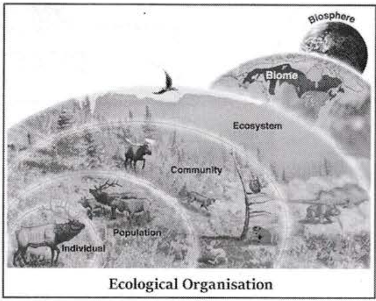
- The main levels of organisation of ecology are six and are as follows.
- 1.3.1. Individual
- Organism is an individual living being that has the ability to act or function independently. It may be plant, animal, bacterium, fungi, etc. It is a body made up of organs, organelles, or other parts that work together to carry out on the various processes of life.
- 1.3.2. Population
- Population is a group of organisms usually of the same species, occupying a defined area during a specific time.
- Population growth rate is the percentage variation between the number of individuals in a population at two different times. Therefore the population growth rate can be positive or negative.
- The main factors that make population increase are birth and immigration. The main factors that make population decrease are death and emigration.
- The main limiting factors for the growth of a population are abiotic and biotic components.
- Population density is the relation between the number of individuals of a population and the area they occupy.
- 1.3.3. Community
- If we look around ourself, we will notice that population of plants and animals seldom occur by themselves. The reason for this is quite obvious. In order to survive, individuals of any one species depend on individuals of different species with which they actively interact in several ways.
- For eg:
- Animals require plants for food and trees for shelter. Plants require animals for pollination, seed dispersal, and soil microorganism to facilitate nutrient supply.
- Communities in most instances are named after the dominant plant form (species).
- For example:
- A grassland community is dominated by grasses, though it may contain herbs, shrubs, and trees, along with associated animals of different species.
- A community is not fixed or rigid; communities may be large or small.
- Do you know?
- The skies over North India are seasonally filled with a thick soup of aerosol particles all along the southern edge of the Himalayas, Bangladesh and the Bay of Bengal.- NASA research findings.
- Types of Community
- (a) Major Community
- These are large-sized, well organized and relatively independent. They depend only on the sun’s energy from outside and are independent of the inputs and outputs from adjacent communities.
- E.g:
- tropical ever green forest in the North-East
- (b) Minor Communities
- These are dependent on neighbouring communities and are often called societies. They are secondary aggregations within a major community and are not therefore completely independent units as far as energy and nutrient dynamics are concerned.
- e.g:
- A mat of lichen on a cow dung pad.
- Structure of a community
- In a community the number of species and size of their population vary greatly. A community may have one or several species.
- The environmental factors determine the characteristic of the community as well as the pattern of organisation of the members in the community.
- The characteristic pattern of the community is termed as structure which is reflected in the roles played by various population, their range, the type of area they inhabit, the diversity of species in the community and the spectrum of interactions between them.
- 1.3.4. Ecosystem
- An ecosystem is defined as a structural and functional unit of biosphere consisting of community of living beings and the physical environment, both interacting and exchanging materials between them.
- It includes plants, trees, animals, fish, birds, micro-organisms, water, soil, and people.
- Ecosystems vary greatly in size and elements but each is a functioning unit of nature. Everything that lives in an ecosystem is dependent on the other species and elements that are also part of that ecological community. If one part of an ecosystem is damaged or disappears, it has an impact on everything else.
- When an ecosystem is healthy (i.e. sustainable) it means that all the elements live in balance and are capable of reproducing themselves. Ecosystem can be as small as a single tree or as large as entire forest.
- Difference between ecology, environment and ecosystem
- For example, let us take Shankar IAS Academy and its students. Let’s say that ecology would be the scientific study of student’s relationship with the Shankar IAS Academy as a whole. The Shankar IAS Academy being the environment in which the student studies, and the set of circumstances surrounding the student in which environment would be the teachers, books, other students, etc are said to be ecosystem.
- Components of Ecosystem
- The components of ecosystem and environment are same.
- 1. Abiotic Components
- Abiotic components are the inorganic and non-living parts of the world. The abiotic part consists of soil, water, air, and light energy etc. It also involves chemicals like oxygen, nitrogen etc. and physical processes including volcanoes, earthquakes, floods, forest fires, climates, and weather conditions.
- Abiotic factors are the most important determinants of where and how well an organism exists in its environment. Although these factors interact with each other, one single factor can limit the range of an organism.
- (a) Energy
- Energy from the sun is essential for maintenance of life. In the case of plants, the sun directly supplies the necessary energy. Since animals cannot use solar energy directly they obtain it indirectly by eating plants or animals or both. Energy determines the distribution of organisms in the environment.
- (b) Rainfall
- Water is essential for all living beings. Majority of biochemical reactions take place in an aqueous medium. Water helps to regulate body temperature. Further, water bodies form the habitat for many aquatic plants and animals.
- (c) Temperature
- Temperature is a critical factor of the environment which greatly influences survival of organisms. Organisms can tolerate only a certain range of temperature and humidity.
- (d) Atmosphere
- The earth’s atmosphere is responsible for creating conditions suitable for the existence of a healthy biosphere on this planet.
- (e) Substratum
- Land is covered by soil and a wide variety of microbes, protozoa, fungi and small animals (invertebrates) thrive in it. Roots of plants pierce through the soil to absorb water and nutrients. Organisms can be terrestrial or aquatic. Terrestrial animals live on land. Aquatic plants, animals and microbes live in fresh water as well as in the sea. Some microbes live even in hot water vents under the sea.
- (f) Materials:
- (i) Organic compound such as proteins, carbohydrates, lipids, humic substances are formed from inorganic compound on decomposition.
- (ii) Inorganic compound such as carbon dioxide, water, sulphur, nitrates, phosphates, and ions of various metals are essential for organisms to survive.
- (g) Latitude and altitude
- Latitude has a strong influence on an area’s temperature, resulting in change of climates such as polar, tropical, and temperate. These climates determine different natural biomes.
- From sea level to highest peaks, wild life is influenced by altitude. As the altitude increases, the air becomes colder and drier, affecting wild life accordingly.
- 2. Biotic Components
- Biotic components include living organisms comprising plants, animals and microbes and are classified according to their functional attributes into producers and consumers.
- (a) Primary producers - Autotrophs (self-nourishing)
- Primary producers are basically green plants (and certain bacteria and algae).
- They synthesise carbohydrate from simple inorganic raw materials like carbon dioxide and water in the presence of sunlight by the process of photosynthesis for themselves, and supply indirectly to other non-producers.
- In terrestrial ecosystem, producers are basically herbaceous and woody plants, while in aquatic ecosystem producers are various species of microscopic algae.
- (b) Consumers – Heterotrophs or phagotrophs (other nourishing)
- Consumers are incapable of producing their own food (photosynthesis).
- They depend on organic food derived from plants, animals or both.
- Consumers can be divided into two broad groups namely micro and macro consumers.
- (i) Macro consumers
- They feed on plants or animals or both and are categorised on the basis of their food sources.
- Herbivores are primary consumers which feed mainly on plants e.g. cow, rabbit.
- Secondary consumers feed on primary consumers e.g. wolves.
- Carnivores which feed on secondary consumers are called tertiary consumers e.g. lions which can eat wolves.
- Omnivores are organisms which consume both plants and animals e.g. man, monkey.
- (ii) Micro consumers - Saprotrophs (decomposers or osmotrophs)
- They are bacteria and fungi which obtain energy and nutrients by decomposing dead organic substances (detritus) of plant and animal origin.
- The products of decomposition such as inorganic nutrients which are released in the ecosystem are reused by producers and thus recycled.
- Earthworm and certain soil organisms (such as nematodes, and arthropods) are detritus feeders and help in the decomposition of organic matter and are called detrivores.
- Classification of Eco-system:
-
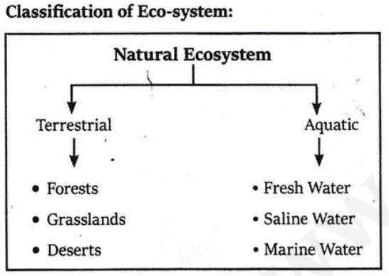
- The detailed study of ecosystem will be dealt in the subsequent chapters.
- Ecosystems are capable of maintaining their state of equilibrium. They can regulate their own species structure and functional processes. This capacity of ecosystem of self regulation is known as homeostasis.
- Natural Ecosystem
-
| Terrestrial | Aquatic |
|---|
| Forests | Fresh Water |
| Grasslands | Saline Water |
| Deserts | Marine Water |
- Goods and Services provided by ecosystems include:
- Provision of food, fuel and fibre
- Provision of shelter and building materials
- Purification of air and water
- Detoxification and decomposition of wastes
- Stabilization and moderation of the Earth’s climate
- Moderation of floods, droughts, temperature extremes and the forces of wind.
- Generation and renewal of soil fertility, including nutrient cycling.
- Pollination of plants, including many crops Control of pests and diseases
- Maintenance of genetic resources as key inputs to crop varieties and livestock breeds, medicines, and other products
- Cultural and aesthetic benefits
- Ecotone
-
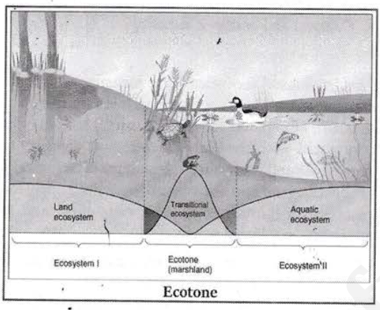
- Ecotone is a zone of junction between two or more diverse ecosystems. For e.g. the mangrove forests represent an ecotone between marine and terrestrial ecosystem. Other examples are – grassland, estuary and river bank
- Characteristics of Ecotone
- It may be very narrow or quite wide.
- It has the conditions intermediate to the adjacent ecosystems. Hence it is a zone of tension.
- It is linear as it shows progressive increase in species composition of one in coming community and a simultaneous decrease in species of the other out going adjoining community.
- A well developed ecotones contain some organisms which are entirely different from that of the adjoining communities.
- Sometimes the number of species and the population density of some of the species is much greater in this zone than either community. This is called edge effect.
- The organisms which occur primarily or most abundantly in this zone are known as edge species. In the terrestrial ecosystems edge effect is especially applicable to birds.
- For example the density of birds is greater in the mixed habitat of the ecotone between the forest and the desert.
- Niche
- A niche is the unique functional role or place of a species in an ecosystem. It is a description of all the biological, physical and chemical factors that a species needs to survive, stay healthy and reproduce.
- A niche is unique for a species, which means no two species have exact identical niches. Niche plays an important role in conservation of organisms.
- If we have to conserve species in its native habitat we should have knowledge about the niche requirements of the species and should ensure that all requirements of its niche are fulfilled.
- Types of Niche
- 1. Habitat niche – where it lives
- 2. Food niche – what is eats or decomposes & what species it competes with
- 3. Reproductive niche – how and when it reproduces.
- 4. Physical & chemical niche – temperature, land shape, land slope, humidity & other requirement.
- 1.3.5. Biome
-
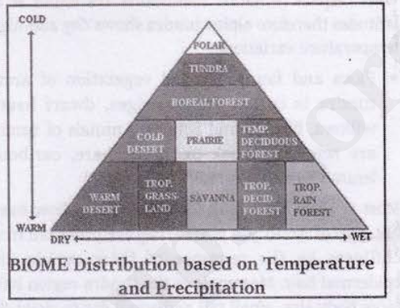
- Do you know?
- Two Schemes namely Nagar VanaUdyanYojana and School Nursery Yojana have been launched. Nagar VanaUdyanYojana aims to create at least one city forest in each city with a minimum area of 25 ha. The scheme aims at creation of a City Forest in forest areas within their jurisdiction up to a maximum of 100 ha and minimum area of 20 ha. The objective of the Yojana is to create 200 City Forests in the country. The School Nursery Yojana aims to build a lasting bond of students with nature.
- The terrestrial part of the biosphere is divisible into enormous regions called biomes, which are characterized, by climate, vegetation, animal life and general soil type.
- No two biomes are alike. The climate determines the boundaries of a biome and abundance of plants and animals found in each one of them. The most important climatic factors are temperature and precipitation.
- BIOME Distribution based on Temperature and Precipitation
-
| S.No. | Name of Biome | Region | Flora and Fauna |
|---|
| 1 | Tundra | Northern and Southern most region of world adjoining the ice bound poles | Devoid of trees except stunted shrubs in the southern part of tundra biome, ground flora includes lichen, mosses and sedges. The typical animals are reindeer, arctic fox, polar bear, snowy owl, lemming, arctic hare, ptarmigan. Reptiles and amphibians are almost absent. |
| 2 | Taiga | Northern Europe, Asia and North America. Moderate temperature than tundra. Also known as boreal forest. | The dominating vegetation is coniferous evergreen mostly spruce, with some pine and firs. The fauna consists of birds, hawks, fur bearing carnivores, little mink, elks, puma, Siberian tiger, wolverine, wolves etc. |
| 3 | Temperate Deciduous Forest | Extends over Central and Southern Europe, Eastern North America, Western China, Japan, New Zealand etc. Moderate average temperature and abundant rainfall. | The flora includes trees like beech, oak, maple and cherry. Most animals are the familiar vertebrates and invertebrates. These are generally the most productive agricultural areas of the earth |
| 4 | Tropical rain forest | Tropical areas in the equatorial regions, which is abound with life. Temperature and rainfall high. | Tropical rainforest covers about 7% of the earth’s surface & 40% of the world’s plant and animal species. Multiple storey of broad-leafed evergreen tree species are in abundance. Most animals and epiphytic plants are concentrated in the canopy or tree top zones. |
| 5 | Savannah | Tropical region: Savannah is most extensive in Africa. | Grasses with scattered trees and fire resisting thorny shrubs. The fauna include a great diversity of grazers and browsers such as antelopes, buffaloes, zebras, elephants and rhinoceros; the carnivores include lion, cheetah, hyena; and mongoose, and many rodents. |
| 6 | Grassland | North America, Ukraine, etc. Temperate conditions with low rainfall. | Grasses dominate the vegetation. The fauna include large herbivores like bison, antelope, cattle, rodents, prairie dog, wolves, and a rich and diverse array of ground nesting bird. |
| 7 | Desert | Continental interiors with very low and sporadic rainfall with low humidity. The days are very hot but nights are cold. | The flora is drought resistance such as cactus, euphorbias, sagebrush. Fauna: Reptiles, Small Mammals and birds. |
- Aquatic Zones
- Aquatic systems are not called biomes, however they are divided into distinct life zones, with regions of relatively distinct plant and animal life. The major differences between the various aquatic zones are due to salinity, levels of dissolved nutrients, water temperature, depth of sunlight penetration.
-
| S.No | Aquatic ecosystem | Characteristics |
|---|
| 1 | Fresh Water Ecosystem | Fresh water ecosystem are classified as lotic (moving water) or lentic (still or stagnant water). Lotic water system includes freshwater streams, springs, rivulets, creeks, brooks, and rivers. Lentic water bodies include pools, ponds, some swamps, bogs and lakes. They vary considerably in physical, chemical and biological characteristics. |
| 2 | Marine Ecosystem | Nearly three – quarter of earth’s surface is covered by ocean with an average depth of 3,750 m and with salinity 35 ppt, (parts per thousand), about 90 per cent of which is sodium chloride. |
| 3 | Estuaries | Coastal bays, river mouths and tidal marshes form the estuaries. In estuaries, fresh water from rivers meet ocean water and the two are mixed by action of tides. Estuaries are highly productive as compared to the adjacent river or sea. |
| 4 | Coral reef | |
| 5 | Mangrove | |
- 1.3.6. Biosphere
-
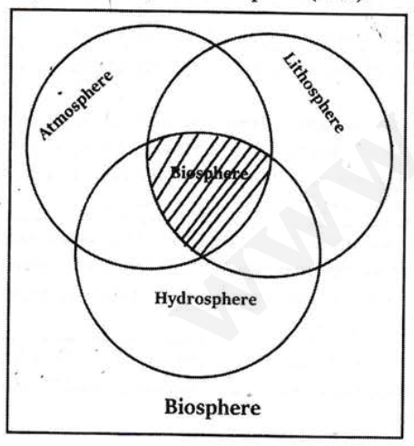
- Biosphere is a part of the earth where life can exist. Biosphere represents a highly integrated and interacting zone comprising of atmosphere (air), hydrosphere (water) and lithosphere (land).
- Biosphere is absent at extremes of the North and South poles, the highest mountains and the deepest oceans, since existing hostile conditions there do not support life. Occasionally spores of fungi and bacteria do occur at great height beyond 8,000 metres, but they are not metabolically active, and hence represent only dormant life.
- The energy required for the life within the biosphere comes from the sun. The nutrients necessary for living organisms come from air, water and soil. The same chemicals are recycled over and over again for life to continue.
- Living organisms are not uniformly distributed throughout the biosphere. Only a few organisms live in the polar regions, while the tropical rain forests have an exceedingly rich diversity of plants and animals (50% of Global Biodiversity).
- It is a narrow layer around the surface of the earth. If we visualise the earth to be the size of an apple the biosphere would be as thick as its skin.
- Life in the biosphere is abundant between 200 metres (660 feet) below the surface of the ocean and about 6,000 metres (20,000 feet) above sea level.
- Do you know?
- Environmental Information System (ENVIS), a Central Sector Scheme of the Ministry has been implemented since 1982. The purpose of the scheme is to integrate country-wide efforts in environmental information collection, collation, storage, retrieval and dissemination through ENVIS websites, which are dedicated to different interesting themes.
- CHAPTER 2: FUNCTIONS OF AN ECOSYSTEM
- The function of an ecosystem is a broad, vast and complete dynamic system. It can be studied under the following three heads.
- Energy flow
- Nutrient cycling (biogeochemical cycles)
- Ecological succession or ecosystem development
- 2.1 ENERGY FLOW
- Energy is the basic force responsible for all metabolic activities. The flow of energy from producer to top consumers is called energy flow which is unidirectional.
- Metabolism
- Metabolism is the complete set of chemical reactions that occur within a living organism to sustain life. These thousands of coordinated reactions, regulated by specialized proteins called enzymes, transform food into energy and building blocks for all vital processes.
- The two fundamental processes of metabolism are catabolism and anabolism.
- Catabolism (Breakdown)
- Catabolism is the "destructive" phase of metabolism, where complex molecules are broken down into simpler ones to release energy.
- Anabolism (Build-up)
- Anabolism is the "constructive" phase, where simpler molecules are used to build larger, more complex ones, such as tissues and organs.
- The study of Trophic level interaction in an ecosystem gives an idea about the energy flow through the ecosystem.
- 2.1.1. Trophic level interaction
- Trophic level interaction deals with how the members of an ecosystem are connected based on nutritional needs.
- Trophic levels (Trophe = nourishment)
-
| Level | Type | Description |
|---|
| I | Autotrophs | Green plants (producers) |
| II | Heterotrophs | Herbivore (primary consumers) |
| III | Heterotrophs | Carnivores (secondary consumers) |
| IV | Heterotrophs | Carnivore (tertiary consumers) |
| V | Heterotrophs | Top carnivores (quaternary consumers) |
- Energy flows through the trophic levels:
- from producers to subsequent trophic levels. This energy always flows from lower (producer) to higher (herbivore, carnivore etc.) trophic level. It never flows in the reverse direction that is from carnivores to herbivores to producers.
- There is a loss of some energy in the form of unusable heat at each trophic level so that energy level decreases from the first trophic level upwards.
- As a result there are usually four or five trophic levels and seldom more than six as beyond that very little energy is left to support any organism. Trophic levels are numbered according to the steps an organism is away from the source of food or energy, that is the producer.
- The trophic level interaction involves three concepts namely:-
- 1. Food Chain
- 2. Food Web
- 3. Ecological Pyramids
- 2.2. FOOD CHAIN
- Organisms in the ecosystem are related to each other through feeding mechanism or trophic levels, i.e. one organism becomes food for the other. A sequence of organisms that feed on one another, form a food chain. A food chain starts with producers and ends with top carnivores.
- The sequence of eaten and being eaten, produces transfer of food energy and it is known as food chain. The plant converts solar energy into chemical energy by photosynthesis.
- Small herbivores consume the plant matter and convert them into animal matter. These herbivores are eaten by large carnivores.
- 2.2.1. Types of Food Chains
- In nature, two main types of food chains have been distinguished:
- (i) Grazing food chain
-
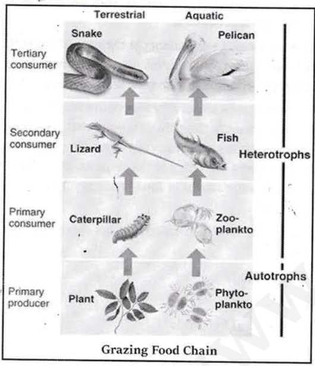
- The consumers which start the food chain, utilising the plant or plant part as their food, constitute the grazing food chain. This food chain begins from green plants at the base and the primary consumer is herbivore.
- For example, In terestrial ecosystem, grass is eaten up by caterpillar, which is eaten by lizard and lizard is eaten by snake.
- In Aquatic ecosystem phytoplanktons (primary producers) is eaten by zoo planktons which is eaten by fishes and fishes are eaten by pelicans.
- (ii) Detritus food chain
-
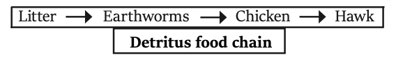
- It starts from dead organic matter of decaying animals and plant bodies consumed by the micro-organisms and then to detritus feeding organism called detrivores or decomposer and to other predators.
- Litter → Earthworms → Chicken → Hawk
- The distinction between these two food chains is the source of energy for the first level consumers. In the grazing food chain the primary source of energy is living plant biomass while in the detritus food chain the source of energy is dead organic matter or detritus. The two food chains are linked. The initial energy source for detritus food chain is the waste materials and dead organic matter from the grazing food chain.
- 2.3. FOOD WEB
-
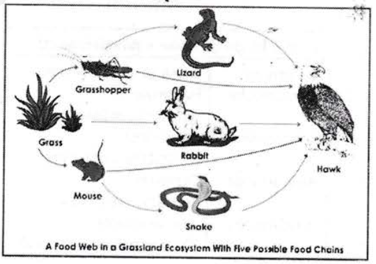
- A food chain represents only one part of the food or energy flow through an ecosystem and implies a simple, isolated relationship, which seldom occurs in the ecosystems.
- An ecosystem may consist of several interrelated food chains. More typically, the same food resource is part of more than one chain, especially when that resource is at the lower trophic levels.
- “A food web illustrates, all possible transfers of energy and nutrients among the organisms in an ecosystem, whereas a food chain traces only one pathway of the food”.
- If any of the intermediate food chain is removed, the succeeding links of the chain will be affected largely. The food web provides more than one alternative for food to most of the organisms in an ecosystem and therefore increases their chance of survival.
- For example, grasses may serve food for rabbit or grasshopper or goat or cow. Similarly a herbivore may be food source for many carnivorous species.
- Also food availability and preferences of food of the organisms may shift seasonally e.g. we eat watermelon in summer and peaches in the winter. Thus there are interconnected networks of feeding relationships that take the form of food webs.
- Do you know?
- Dolphins, Porpoises and whales are called cetaceans. A cetacean is a creature belonging to a group of water living mammals that have no hind limbs and a blowhole for breathing. They are not fish!
- 2.4. ECOLOGICAL PYRAMIDS
- The steps of trophic levels expressed in a diagrammatic way are referred as ecological pyramids. The food producer forms the base of the pyramid and the top carnivore forms the tip. Other consumer trophic levels are in between.
- The pyramid consists of a number of horizontal bars depicting specific trophic levels which are arranged sequentially from primary producer level through herbivore, carnivore onwards. The length of each bar represents the total number of individuals at each trophic level in an ecosystem.
- The number, biomass and energy of organisms gradually decrease with each step from the producer level to the consumer level and the diagrammatic representation assumes a pyramid shape.
- The ecological pyramids are of three categories.
- 1. Pyramid of numbers
- 2. Pyramid of biomass
- 3. Pyramid of energy or productivity
- 2.4.1. Pyramid of Numbers
-
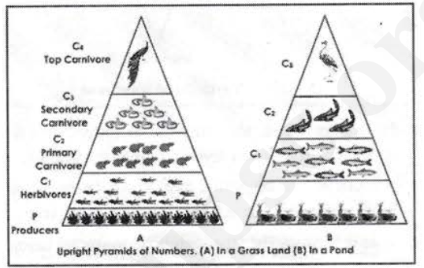
- This deals with the relationship between the numbers of primary producers and consumers of different levels. It is a graphic representation of the total number of individuals of different species, belonging to each trophic level in an ecosystem.
- Depending upon the size and biomass, the pyramid of numbers may not always be upright, and may even be completely inverted.
- (a) Pyramid of numbers - upright
- In this pyramid, the number of individuals is decreased from lower level to higher trophic level.
- This type of pyramid can be seen in grassland ecosystem.
- The grasses occupy the lowest trophic level (base) because of their abundance.
- The next higher trophic level is primary consumer - herbivore (example – grasshopper).
- The individual number of grasshopper is less than that of grass. The next energy level is primary carnivore (example – rat).
- The number of rats are less than grasshopper, because, they feed on grasshopper. The next higher trophic level is secondary carnivore (example – snakes). They feed on rats.
- The next higher trophic level is the top carnivore. (Ex. Hawk).
- With each higher trophic level, the number of individual decreases.
- (b) Pyramid of numbers - inverted
-
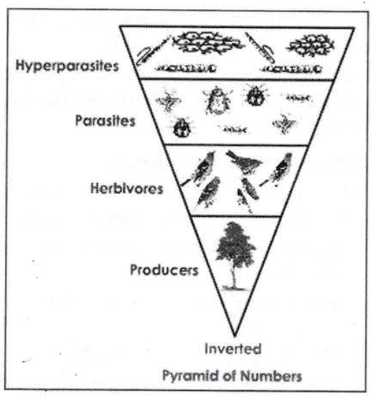
- In this pyramid, the number of individuals is increased from lower level to higher trophic level.
- A count in a forest would have a small number of large producers, for e.g. few number of big trees.
- This is because the tree (primary producer) being few in number and would represent the base of the pyramid and the dependent herbivores (Example - Birds) in the next higher trophic level and it is followed by parasites in the next trophic level. Hyper parasites being at higher trophic level represents higher in number.
- And the resulting pyramid is in inverted shape. A pyramid of numbers does not take into account the fact that the size of organisms being counted in each trophic level can vary.
- It is very difficult to count all the organisms, in a pyramid of numbers and so the pyramid of number does not completely define the trophic structure for an ecosystem.
- 2.4.2. Pyramid of Biomass
- In order to overcome the shortcomings of pyramid of numbers, the pyramid of biomass is used. In this approach individuals in each trophic level are weighed instead of being counted. This gives us a pyramid of biomass, i.e., the total dry weight of all organisms at each trophic level at a particular time.
- Pyramid of biomass is usually determined by collecting all organisms occupying each trophic level separately and measuring their dry weight. This overcomes the size difference problem because all kinds of organisms at a trophic level are weighed. Biomass is measured in g/m2.
- (a) Upward pyramid
-
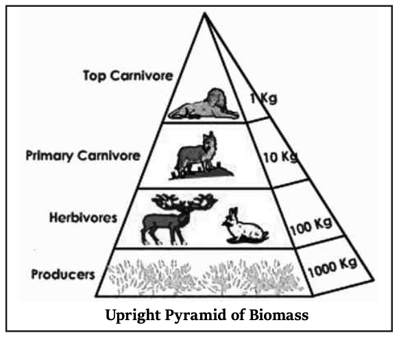
- For most ecosystems on land, the pyramid of biomass has a large base of primary producers with a smaller trophic level perched on top.
- The biomass of producers (autotrophs) is at the maximum. The biomass of next trophic level i.e primary consumers is less than the producers. The biomass of next higher trophic level i.e secondary consumers is less than the primary consumers. The top, high trophic level has very less amount of biomass.
- (b) Inverted pyramid
-
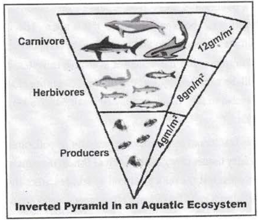
- In contrast, in many aquatic ecosystems, the pyramid of biomass may assume an inverted form.
- This is because the producers are tiny phytoplanktons that grow and reproduce rapidly. Here, the pyramid of biomass has a small base, with the consumer biomass at any instant actually exceeding the producer biomass and the pyramid assumes inverted shape.
- 2.4.3. Pyramid of Energy
-
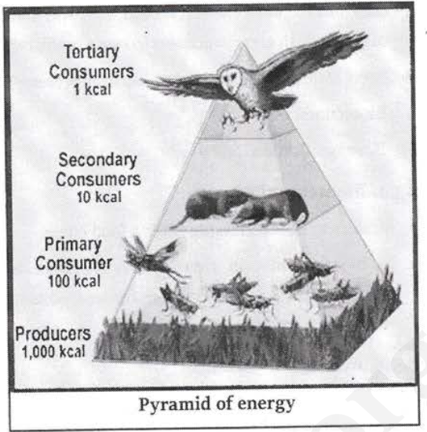
- To compare the functional roles of the trophic levels in an ecosystem, an energy pyramid is most suitable. An energy pyramid, reflects the laws of thermodynamics, with conversion of solar energy to chemical energy and heat energy at each trophic level and with loss of energy being depicted at each transfer to another trophic level. Hence the pyramid is always upward, with a large energy base at the bottom.
- Let us explain this with an example. Suppose an ecosystem receives 1000 calories of light energy in a given day. Most of the energy is not absorbed; some is reflected back to space; of the energy absorbed only a small portion is utilised by green plants, out of which the plant uses up some for respiration and of the 1000 calories, therefore only 100 calories are stored as energy rich materials.
- Now suppose an animal, say a deer, eats the plant containing 100 cal of food energy. The deer uses some of it for its own metabolism and stores only 10 cal as food energy. A lion that eats the deer gets an even smaller amount of energy. Thus usable energy decreases from sunlight to producer to herbivore to carnivore. Therefore, the energy pyramid will always be upright.
- Energy pyramid concept helps to explain the phenomenon of biological magnification-the tendency for toxic substances to increase in concentration progressively at higher levels of the food chain.
- Do you know?
- All snakes smell with their tongues. When a snake sticks out its tongue it smells its surroundings. The moist tongue collects scents and small organisms from whatever it touches and from the air around it. When the tongue goes back into the mouth the forks touch a special sensory spot called the Jacobson’s organ on the roof of the mouth and tells the snake what it smells. Snakes have a small notch in their lips that they can stick their tongues through so they don’t need to open their mouths. Some snakes can smell with their noses.
- 2.5 POLLUTANTS AND TROPHIC LEVEL
- Pollutants especially nondegradable ones move through the various trophic levels in an ecosystem.
- Nondegradable pollutants mean materials, which cannot be metabolized by the living organisms.
- Example:
- chlorinated hydrocarbons.
- We are concerned about these phenomena because, together they enable even small concentrations of chemicals in the environment to find their way into organisms in high enough dosages to cause problems.
- Movement of these pollutants involves two main processes:
- (i) Bioaccumulation
- (ii) Biomagnification
- 2.5.1. Bioaccumulation
- It refers to how pollutants enter a food chain.
- The gradual buildup of toxic substances (like pesticides, heavy metals) within an organism over time because the rate of intake exceeds the rate of excretion or metabolism.
- In bioaccumulation there is an increase in concentration of a pollutant from the environment to the first organism in a food chain.
- 2.5.2. Biomagnification
-
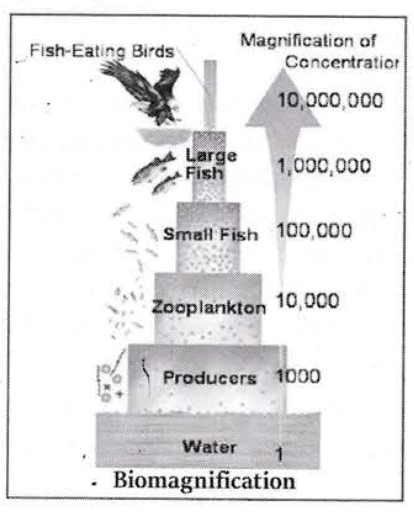
- Biomagnification refers to the tendency of pollutants to concentrate as they move from one trophic level to the next.
- Thus in biomagnification there is an increase in concentration of a pollutant from one link in a food chain to another.
- In order for biomagnification to occur, the pollutant must be:
- Long-lived, mobile, soluble in fats, biologically active.
- Fat-soluble toxins → do not dissolve in water, so they cannot be excreted easily through urine or sweat.
- If a pollutant is short-lived, it will be broken down before it can become dangerous. If it is not mobile, it will stay in one place and is unlikely to be taken up by organisms. If the pollutant is soluble in water, it will be excreted by the organism. Pollutants that dissolve in fats, however, may be retained for a long time.
- It is traditional to measure the amount of pollutants in fatty tissues of organisms such as fish. In mammals, we often test the milk produced by females, since the milk has a lot of fat in it are often more susceptible to damage from toxins (poisons). If a pollutant is not active biologically, it may biomagnify, but we really don’t worry about it much, since it probably won’t cause any problems Examples: DDT.
- 2.6. BIOTIC INTERACTION
- Organisms living in this earth are interlinked to each other in one way or other. The interaction between the organisms is fundamental for its survival and functioning of ecosystem as a whole.
- 2.6.1. Types of biotic interaction
-
| S.No. | Type | Species 1 | Species 2 |
|---|
| 1 | Mutualism | (+) | (+) |
| 2 | Commensalism | (+) | (0) |
| 3 | Amensalism | (-) | (0) |
| 4 | Competition | (-) | (-) |
| 5 | Predation | (+) | (-) |
| 6 | Parasitism | (+) | (-) |
| (+) Benefited, (-) Harmed, (0) Neither Benefited nor harmed. |
- Mutualism:
- both species benefit.
- Example:
- in pollination mutualisms, the pollinator gets food (pollen, nectar), and the plant has its pollen transferred to other flowers for cross-fertilization (reproduction).
- Commensalism:
- one species benefits, the other is unaffected.
- Example:
- cow dung provides food and shelter to dung beetles. The beetles have no effect on the cows.
- Competition:
- both species are harmed by the interaction.
- Example:
- if two species eat the same food, and there isn’t enough for both, both may have access to less food than they would if alone. They both suffer a shortage of food
- Predation and parasitism:
- one species benefits, the other is harmed.
- Example:
- predation—one fish kills and eats parasitism:
- tick gains benefit by sucking blood; host is harmed by losing blood.
- Amensalism:
- One species is harmed, the other is unaffected.
- Example:
- A large tree shades a small plant, retarding the growth of the small plant. The small plant has no effect on the large tree.
- Neutralism:
- There is no net benefit or harm to either species. Perhaps in some interspecific interactions, the costs and benefits experienced by each partner are exactly the same so that they sum to zero. It is not clear how often this happens in nature. Neutralism is also sometimes described as the relationship between two species inhabiting the same space and using the same resources, but that have no effect on each other. In this case, one could argue that they aren’t interacting at all.
- 2.7. BIO-GEO-CHEMICAL CYCLE
- The living world depends upon the energy flow and the nutrients circulation that occurs through ecosystem.
- Both influence the abundance of organisms, the metabolic rate at which they live, and the complexity of the ecosystem.
- Energy flows through ecosystems enabling the organisms to perform various kinds of work and this energy is ultimately lost as heat forever in terms of the usefulness of the system. On the other hand, nutrients of food matter never get used up. They can be recycled again and again indefinitely.
- For e.g. when we breathe we may be inhaling several million atoms of elements that may have been inhaled by our ancestors or other organisms.
- Carbon, hydrogen, oxygen, nitrogen and phosphorus as elements and compounds make up 97% of the mass of our bodies and are more than 95% of the mass of all living organisms. In addition to these about 15 to 25 other elements are needed in some form for the survival and good health of plants and animals.
- These elements or mineral nutrients are always in circulation moving from non-living to living and then back to the non-living components of the ecosystem in a more or less circular fashion. This circular fashion is known as biogeochemical cycling (bio for living; geo for atmosphere).
- 2.7.1. Nutrient Cycling
-
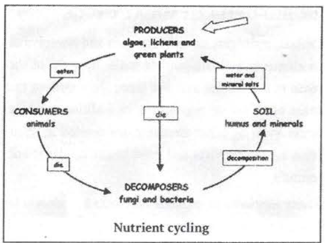
- The nutrient cycle is a concept that describes how nutrients move from the physical environment to the living organisms, and subsequently recycled back to the physical environment.
- This movement of nutrients from the environment into plants and animals and again back to the environment is essential for life and it is the vital function of the ecology of any region. In any particular environment, to maintain its organism in a sustained manner, the nutrient cycle must be kept balanced and stable.
- Nutrient cycling is typically studied in terms of specific nutrients, with each nutrient in an environment having its own particular pattern of cycling. Among the most important nutrient cycles are the carbon nutrient cycle and the nitrogen nutrient cycle. Both of these cycles make up an essential part of the overall soil nutrient cycle. There are many other nutrient cycles that are important in ecology, including a large number of trace mineral nutrient cycles.
- Types of Nutrient Cycle
- Based on the replacement period a nutrient cycle is referred to as Perfect or Imperfect cycle.
- A perfect nutrient cycle is one in which nutrients are replaced as fast as they are utilised. Most gaseous cycles are generally considered as perfect cycles.
- In contrast sedimentary cycles are considered relatively imperfect, as some nutrients are lost from the cycle and get locked into sediments and so become unavailable for immediate cycling.
- Based on the nature of the reservoir, there are two types of cycles namely Gaseous and sedimentary cycle
- Gaseous Cycle – where the reservoir is the atmosphere or the hydrosphere, and
- Sedimentary Cycle – where the reservoir is the earth’s crust.
- 2.7.2. Gaseous Cycles
- Let us first study some of the most important gaseous cycles; namely – water, carbon and nitrogen.
- (a) Water Cycle (Hydrologic)
-
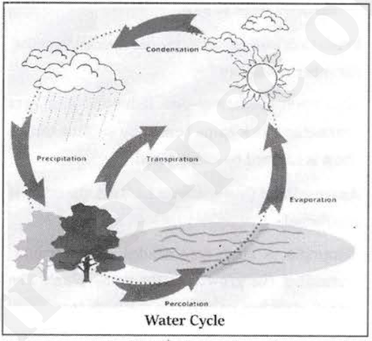
- Water as an important ecological factor determines the structure and function of the ecosystem. Cycling of all other nutrients is also dependent upon water as it provides their transportation during the various steps. It acts as a solvent medium for their uptake of nutrients by organisms.
- The hydrologic cycle is the continuous circulation of water in the Earth-atmosphere system which is driven by solar energy. Water on our planet is stored in major reservoirs like atmosphere, oceans, lakes, rivers, soils, glaciers, snowfields, and groundwater. Water moves from one reservoir to another by the processes of evaporation, transpiration, condensation, precipitation, deposition, runoff, infiltration, and groundwater flow.
- (b) The Carbon Cycle
-
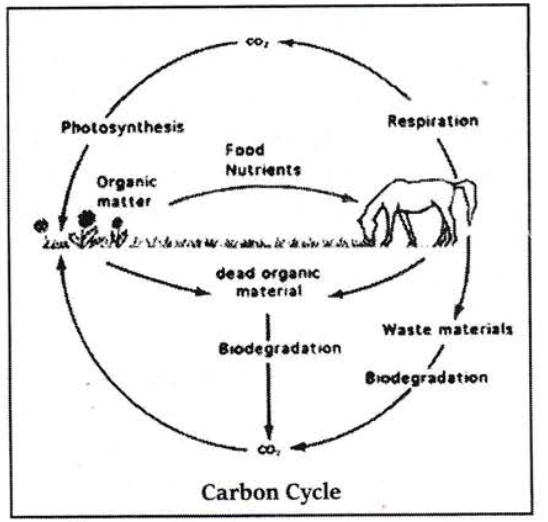
- Carbon is a minor constituent of the atmosphere as compared to oxygen and nitrogen. However, without carbon dioxide life could not exist, because it is vital for the production of carbohydrates through photosynthesis by plants. It is the element that anchors all organic substances from coal and oil to DNA (deoxyribonucleic acid: the compound that carries genetic information).
- Carbon is present in the atmosphere, mainly in the form of carbon dioxide (CO2). Carbon cycle involves a continuous exchange of carbon between the atmosphere and organisms. Carbon from the atmosphere moves to green plants by the process of photosynthesis, and then to animals. By process of respiration and decomposition of dead organic matter it returns back to atmosphere. It is usually a short term cycle.
- Some carbon also enters a long term cycle. It accumulates as un-decomposed organic matter in the peaty layers of marshy soil or as insoluble carbonates in bottom sediments of aquatic systems which take a long time to be released.
- In deep oceans such carbon can remained buried for millions of years till geological movement may lift these rocks above sea level. These rocks may be exposed to erosion, releasing their carbon dioxide, carbonates and bicarbonates into streams and rivers.
- Fossil fuels such as coals, oil and natural gas etc. are organic compounds that were buried before they could be decomposed and were subsequently transformed by time and geological processes into fossil fuels. When they are burned the carbon stored in them is released back into the atmosphere as carbon-dioxide.
- (c) The Nitrogen Cycle
-
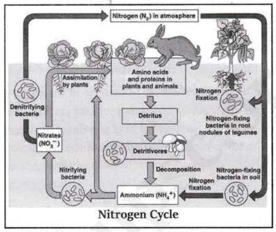
- Nitrogen is an essential constituent of protein and is a basic building block of all living tissue. It constitutes nearly 16% by weight of all the proteins.
- There is an inexhaustible supply of nitrogen in the atmosphere but the elemental form cannot be used directly by most of the living organisms. Nitrogen needs to be ‘fixed’, that is, converted to ammonia, nitrites or nitrates, before it can be taken up by plants.
- Nitrogen fixation on earth is accomplished in three different ways:
- (i) By microorganisms (bacteria and blue-green algae)
- (ii) By man using industrial processes (fertilizer factories) and
- (iii) To a limited extent by atmospheric phenomenon such as thunder and lighting
- The amount of Nitrogen fixed by man through industrial process has far exceeded the amount fixed by the Natural Cycle. As a result Nitrogen has become a pollutant which can disrupt the balance of nitrogen. It may lead to Acid rain, Eutrophication and Harmful Algal Blooms.
- Certain microorganisms are capable of fixing atmospheric nitrogen into ammonium ions. These include free living nitrifying bacteria (e.g. aerobic Azotobacter and anaerobic Clostridium) and symbiotic nitrifying bacteria living in association with leguminous plants and symbiotic bacteria living in non leguminous root nodule plants (e.g. Rhizobium) as well as blue green algae (e.g. Anabaena, Spirulina).
- Ammonium ions can be directly taken up as a source of nitrogen by some plants, or are oxidized to nitrites or nitrates by two groups of specialised bacteria: Nitrosomonas bacteria promote transformation of ammonia into nitrite. Nitrite is then further transformed into nitrate by the bacteria Nitrobacter.
- Plants feast on nitrogen mostly in the forms of nitrate (\(NO_3^-\)) and ammonium (\(NH_4^+\)), while nitrite (\(NO_2^-\)) remains a fleeting and often toxic stepping stone, quickly transformed before it can linger.
- Why ions, not neutral molecules?
- Roots absorb nutrients mostly as ions dissolved in soil water
- Neutral molecules are not easily transported in aqueous medium
- Effect of charge on solubility and transport:
- Negatively charged ions (anions like \(NO_3^-\), \(NO_2^-\))
- Move easily with soil water
- But also leach away quickly → higher risk of loss from soil
- Positively charged ions (cations like \(NH_4^+\), \(K^+\), \(Ca^{2+}\))
- Attracted to negatively charged soil particles (clay, humus)
- Less mobile → tend to remain in soil longer
- Importance in agriculture:
- Anions like \(NO_3^-\) provide quick nutrition but need frequent replenishment
- Cations like \(NH_4^+\) are retained longer, making them more stable sources
- Nitrate (\(NO_3^-\)) is safe and plant-friendly as a stable nitrogen source, while nitrite (\(NO_2^-\)) is toxic because it oxidizes hemoglobin to methemoglobin in humans and forms carcinogenic nitrosamines.
- The nitrates synthesised by bacteria in the soil are taken up by plants and converted into amino acids, which are the building blocks of proteins. These then go through higher trophic levels of the ecosystem. During excretion and upon the death of all organisms nitrogen is returned to the soil in the form of ammonia.
- Certain quantity of soil nitrates, being highly soluble in water, is lost to the system by being transported away by surface run-off or ground water. In the soil as well as oceans there are special denitrifying bacteria (e.g. Pseudomonas), which convert the nitrates/nitrites to elemental nitrogen. This nitrogen escapes into the atmosphere, thus completing the cycle.
- The periodic thunderstorms convert the gaseous nitrogen in the atmosphere to ammonia and nitrates which eventually reach the earth’s surface through precipitation and then into the soil to be utilized by plants.
- 2.7.3. Sedimentary Cycle
- Phosphorus, calcium and magnesium circulate by means of the sedimentary cycle. The element involved in the sedimentary cycle normally does not cycle through the atmosphere but follows a basic pattern of flow through erosion, sedimentation, mountain building, volcanic activity and biological transport through the excreta of marine birds.
- (a) Phosphorus Cycle
-
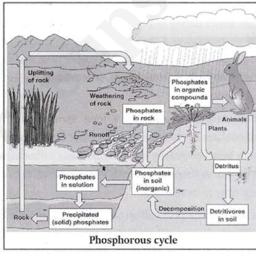
- Phosphorus plays a central role in aquatic ecosystems and water quality. Unlike carbon and nitrogen, which come primarily from the atmosphere, phosphorus occurs in large amounts as a mineral in phosphate rocks and enters the cycle from erosion and mining activities. This is the nutrient considered to be the main cause of excessive growth of rooted and free-floating microscopic plants in lakes.
- The main storage for phosphorus is in the earth’s crust. On land phosphorus is usually found in the form of phosphates. By the process of weathering and erosion phosphates enter rivers and streams that transport them to the ocean.
- In the ocean once the phosphorus accumulates on continental shelves in the form of insoluble deposits. After millions of years, the crustal plates rise from the sea floor and expose the phosphates on land. After more time, weathering will release them from rock and the cycle’s geochemical phase begins again.
- (b) Sulphur Cycle
-
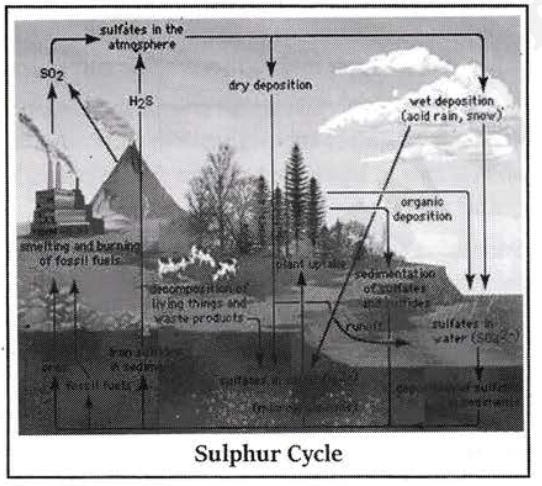
- Sulfur is present in certain amino acids (cysteine, methionine), vitamins (biotin, thiamine), and coenzymes, forming disulfide bonds that stabilize protein structure and participating in redox reactions in metabolism.
- Sulfur is present in amino acids like cysteine (\( \ce{HS-CH2-CH(NH2)-COOH} \)) and methionine (\( \ce{CH3-S-CH2-CH2-CH(NH2)-COOH} \)), vitamins (biotin, thiamine), and coenzymes, forming disulfide bonds (\( \ce{R-S-S-R} \)) that stabilize protein structures and participate in redox reactions in metabolism.
- The sulphur reservoir is in the soil and sediments where it is locked in organic (coal, oil and peat) and inorganic deposits (pyrite rock and sulphur rock) in the form of sulphates, sulphides and organic sulphur.
- It is released by weathering of rocks, erosional runoff and decomposition of organic matter and is carried to terrestrial and aquatic ecosystems in salt solution.
- The sulphur cycle is mostly sedimentary except two of its compounds hydrogen sulphide (H2S) and sulphur dioxide (SO2) add a gaseous component to its normal sedimentary cycle.
- Sulphur enters the atmosphere from several sources like volcanic eruptions, combustion of fossil fuels, from surface of ocean and from gases released by decomposition. Atmospheric hydrogen sulphide also gets oxidised into sulphur dioxide. Atmospheric sulphur dioxide is carried back to the earth after being dissolved in rainwater as weak sulphuric acid.
- Whatever the source, sulphur in the form of sulphates is take up by plants and incorporated through a series of metabolic processes into sulphur bearing amino acid which is incorporated in the proteins of autotroph tissues. It then passes through the grazing food chain.
- Sulphur bound in living organism is carried back to the soil, to the bottom of ponds and lakes and seas through excretion and decomposition of dead organic material.
- The Bio-geochemical cycles discussed here are only a few of the many cycles present in the ecosystem. These cycles usually do not operate independently but interact with each other at some point or the other.
- Do you know?
- Fur-picking’, the universal habit among the apes and monkeys is not a hunt for lice or fleas. They are naturally remarkably free from these vermin. On the contrary it is a means of social communication between members of the troop (a group of monkeys) and to develop strong social bond.
- 2.8. ECOLOGICAL SUCCESSION
-
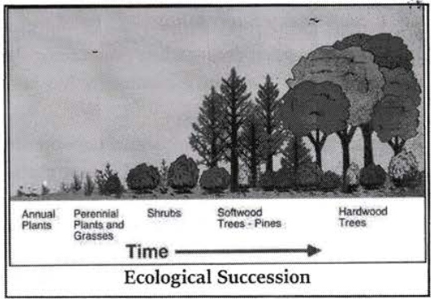
- Succession is a universal process of directional change in vegetation, on an ecological time scale.
- Succession occurs when a series of communities replace one another due to large scale destruction either natural or manmade. This process continues - one community replacing another community, until a stable, mature community develops.
- Succession is a progressive series of changes which leads to the establishment of a relatively stable climax community.
- The first plant to colonise an area is called the pioneer community. The final stage of succession is called the climax community. The stage leading to the climax community are called successional stages or seres.
- Succession is characterised by the following:
- increased productivity, the shift of nutrients from’ the reservoirs, increased diversity of organisms with increased niche development, and a gradual increase in the complexity of food webs.
- 2.8.1. Primary Succession
- In primary succession on a terrestrial site the new site is first colonized by a few hardy pioneer species that are often microbes, lichens and mosses. The pioneers over a few generations alter the habitat conditions by their growth and development.
- These new conditions may be conducive to the establishment of additional organisms that may subsequently arrive at the site. The pioneers through their death any decay leave patches of organic matter in which small animals can live.
- The organic matter produced by these pioneer species produce organic acids during decomposition that dissolve and etch the substratum releasing nutrients to the substratum. Organic debris accumulates in pockets and crevices, providing soil in which seeds can become lodged and grow.
- As the community of organisms continues to develop, it becomes more diverse and competition increases, but at the same time new niche opportunities develops.
- The pioneer species disappear as the habitat conditions change and invasion of new species progresses, leading to the replacement of the preceding community.
- 2.8.2. Secondary Succession
- Secondary succession occurs when plants recognize an area in which the climax community has been disturbed.
- Secondary succession is the sequential development of biotic communities after the complete or partial destruction of the existing community. A mature or intermediate community may be destroyed by natural events such as floods, droughts, fires, or storms or by human interventions such as deforestation, agriculture, overgrazing, etc
- This abandoned farmland is first invaded by hardy species of grasses that can survive in bare, sun-baked soil. These grasses may be soon joined by tall grasses and herbaceous plants. These dominate the ecosystem for some years along with mice, rabbits, insects and seed-eating birds.
- Eventually, some trees come up in this area, seeds of which may be brought by wind or animals. And over the years, a forest community develops. Thus an abandoned farmland over a period becomes dominated by trees and is transformed into a forest
- The differences between primary and secondary succession, the secondary succession starts on a well developed soil already formed at the site. Thus secondary succession is relatively faster as compared to primary succession which may often require hundreds of years.
- 2.8.3. Autogenic and Allogenic Succession
- When succession is brought about by living inhabitants of that community itself, the process is called autogenic succession, while change brought about by outside forces is known as allogenic succession.
- 2.8.4. Autotrophic and Heterotrophic succession
- Succession in which, initially the green plants are much greater is quantity is known as autotrophic succession; and the ones in which the heterotrophs are greater in quantity is known as heterotrophic succession.
- Succession would occur faster in area existing in the middle of the large continent. This is because, here all propagules or seeds of plants belonging to the different seres would reach much faster, establish and ultimately result in climax community.
- Do you know?
- Pythons are constrictors, which mean that they will ‘squeeze’ the life out of their prey. They coil themselves around their prey and with each breathe the creature takes the snake will squeeze a little tighter until they stop breathing completely. Once the heart stops the prey is swallowed whole. The entire animal is digested in the snake’s stomach except for fur or feathers.
- CHAPTER 3: TERRESTRIAL ECOSYSTEMS
- Overview
-
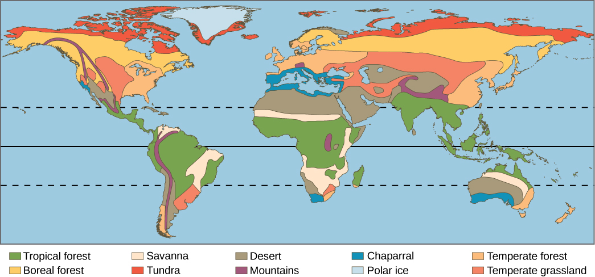
- The interrelations between organisms and environment on the land constitute “Terrestrial Ecology”.
- Due to variation in the topographic features of valleys, mountains and slopes, certain differences occur. These differences are reflected in both the material and biotic diversities. Altitudinal and latitudinal variations cause shifts and differences in the climatic patterns. Due to varied climate, the plant and animal life existing in different terrestrial areas vary which result in differentiation of ecosystem as segments within the large biosphere. The most important limiting factors of the terrestrial ecosystems are moisture and temperature.
- 3.1. TUNDRA
- Tundra means a “barren land” since they are found where environmental conditions are very severe. There are two types of tundra- arctic and alpine.
- Distribution:
- Arctic tundra extends as a continuous belt below the polar ice cap and above the tree line in the northern hemisphere. It occupies the northern fringe of Canada, Alaska, European Russia, Siberia and island group of Arctic Ocean. On the south pole, tundra is very small since most of it is covered by ocean.
- Alpine tundra occurs at high mountains above the tree line. Since mountains are found at all latitudes therefore alpine tundra shows day and night temperature variations.
- Flora and fauna:
- Typical vegetation of arctic tundra is cotton grass, sedges, dwarf heath, willows, birches and lichens. Animals of tundra are reindeer, musk ox, arctic hare, caribous, lemmings and squirrel.
- Most of them have long life e.g. arctic willow has a life span of 150 to 300 years. They are protected from chillness by the presence of thick cuticle and epidermal hair. Mammals of the tundra region have large body size, small tail and small ear to avoid the loss of heat from the surface. The body is covered with fur for insulation. Insects have short life cycles which are completed during favourable period of the year.
- 3.2. FOREST ECOSYSTEM
- The forest ecosystem includes a complex assemblage of different kinds of biotic communities. Optimum conditions such as temperature and ground moisture are responsible for the establishment of forest communities.
- The nature of soil, climate and local topography determine the distribution of trees and their abundance in the forest vegetation. Forests may be evergreen or deciduous. They are distinguished on the basis of leaf into broad-leafed or needle leafed coniferous forests in the case of temperate areas.
- The forest ecosystems have been classified into three major categories:
- coniferous forest, temperate forest and tropical forest. All these forest biomes are generally arranged on a gradient from north to south latitude or from high to lower altitude.
- Do you know?
- Dart Frogs got their name because hunters would tip their arrows in the frog’s poisons. Sadly, because people are cutting down rainforests for farming and ranching, Poison Dart Frogs are at risk. The Blue Poison Dart Frog is the most endangered due to the pet-shop market.
- 3.2.1. Coniferous forest (boreal forest):
- Cold regions with high rainfall, strong seasonal climates with long winters and short summers are characterised by boreal coniferous forest.
- This is characterised by evergreen plant species such as Spruce, fir and pine trees, etc and by animals such as the lynx, wolf, bear, red fox, porcupine, squirrel, and amphibians like Hyla, Rana, etc.
- Boreal forest soils are characterized by thin podzols and are rather poor. Both because, the weathering of rocks proceeds slowly in cold environments and because the litter derived from conifer needle (leaf) is decomposed very slowly and is not rich in nutrients.
- These soils are acidic and are mineral deficient. This is due to movement of large amount of water through the soil, without a significant counter-upward movement of evaporation, essential soluble nutrients like calcium, nitrogen and potassium which are leached sometimes beyond the reach of roots. This process leaves no alkaline oriented cations to encounter the organic acids of the accumulating litter.
- The productivity and community stability of a boreal forest are lower than those of any other forest ecosystem.
- 3.2.2. Temperate deciduous forest:
- The temperate forests are characterised by a moderate climate and broad-leafed deciduous trees, which shed their leaves in fall, are bare over winter and grow new foliage in the spring.
- The precipitation is fairly uniform throughout.
- Soils of temperate forests are podzolic and fairly deep.
- Why deciduous trees shed their leaves?
- Deciduous trees shed their leaves primarily to conserve water and survive unfavorable seasons (like winter or dry periods).
- During leaf shedding:
- Photosynthesis slows due to reduced sunlight or water scarcity.
- Trees form an abscission layer at the base of the leaf petiole, cutting off water and nutrient flow.
- Chlorophyll degrades, revealing other pigments (carotenoids, anthocyanins), giving autumn colors.
- Shedding reduces transpiration and prevents water loss, helping the tree survive harsh conditions.
- Isn't it a costly affair?
- Yes, shedding leaves is “costly” in terms of energy and resources:
- The tree loses photosynthetic machinery (chlorophyll, proteins) and must resorb nutrients before leaf fall.
- It has to invest energy in forming the abscission layer and protective layers at the leaf scar.
- However, this cost is outweighed by the benefit of conserving water and surviving harsh seasons, which ensures long-term survival and reproduction.
- 3.2.3. Temperate evergreen forest:
- Parts of the world that have Mediterranean type of climate are characterised by warm, dry summers and cool, moist winters.
- These are commonly inhabitated by low broad leafed evergreen trees.
- Fire is an important hazardous factor in this ecosystem and the adaptation of the plants enable them to regenerate quickly after being burnt.
- 3.2.4. Temperate rain forests:
- The temperate rain forests exhibit a marked seasonality with regard to temperature and rainfall.
- Rainfall is high, and fog may be very heavy. It is the important source of water than rainfall itself.
- The biotic diversity of temperate rain forests is high as compared to other temperate forest. However, the diversity of plants and animals is much low as compared to the tropical rainforest.
- Do you know?
- Frog’s tongues are attached to the front of their mouths rather than at the back like humans. When a frog catches an insect it throws its sticky tongue out of it’s mouth and wraps it around its prey. The frog’s tongue then snaps back and throws the food down its throat.
- 3.2.5. Tropical rain forests:
- Tropical rain forests occur near the equator.
- Tropical rain forests are among the most diverse and rich communities on the earth.
- Both temperature and humidity remain high and more or less uniform.
- The annual rainfall exceeds 200 cm and is generally distributed throughout the year.
- The flora is highly diversified.
- The extreme dense vegetation of the tropical rain forests remains vertically stratified with tall trees often covered with vines, creepers, lianas, epiphytic orchids and bromeliads.
- The lowest layer is an understory of trees, shrubs, herbs, like ferns and palms.
- Soil of tropical rainforests are red latosols, and they are very thick.
- The high rate of leaching makes these soils virtually useless for agricultural purposes, but when left undisturbed, the rapid cycling of nutrients within the litter layer, formed due to decomposition can compensate for the natural poverty of the soil.
- Undergrowth is restricted in many areas by the lack of sunlight at ground level.
- Do you know?
- Penguins are warm blooded, Just like whales, penguins have a layer of fat under their skin called “blubber”. Overtop of this they are covered with fluffy “down” feathers and overtop of those they have their outer feathers which overlap to seal in warmth. Penguins rub oil from a gland onto their feathers to help make them waterproof and wind proof.
- 3.2.6. Tropical seasonal forests:
- Tropical seasonal forests also known as monsoon forest occur in regions where total annual rainfall is very high but segregated into pronounced wet and dry periods.
- This kind of forest is found in South East Asia, central and south America, northern Australia, western Africa and tropical islands of the pacific as well as in India.
- 3.2.7. Subtropical rain forests:
- Broad-leaved evergreen subtropical rain forests are found in regions of fairly high rainfall but less temperature differences between winter and summer.
- Epiphytes are common here.
- Animal life of subtropical forest is very similar to that of tropical rainforests.
- 3.3. INDIAN FOREST TYPES
- India has a diverse range of forests from the rainforest of Kerala in the south to the alpine pastures of Ladakh in the north, from the deserts of Rajasthan in the west to the evergreen forests in the north-east. Climate, soil type, topography, and elevation are the main factors that determine the type of forest. Forests varied according to their nature and composition, the type of climate in which they thrive, and its relationship with the surrounding environment.
- Champion and Seth Classification of Forest
- Forest types in India are classified by Champion and Seth into sixteen types.
-
| S.No. | Forest Type | Distribution | Characteristics |
|---|
| 1 | Tropical Wet evergreen forests | Western Ghats, Nicobar and Andaman Islands, north-eastern region | Characterized by tall, straight evergreen trees. Common trees: jackfruit, betel nut palm, jamun, mango, hollock. Tier pattern: shrubs, short trees, tall trees. Beautiful ferns, various orchids on tree trunks. |
| 2 | Tropical Semi-evergreen forests | Western Ghats, north-eastern states | Mixture of wet evergreen and moist deciduous trees. Dense forest with a large variety of both tree types. |
| 3 | Tropical Moist deciduous forests | Throughout India except western and north-western regions | Tall trees with broad trunks, branching trunks and roots. Shed leaves in dry season. Dominated by sal, teak, mango, bamboo, rosewood. Shorter trees and evergreen shrubs in undergrowth. |
| 4 | Littoral and swamp | Andaman and Nicobar Islands, delta of Ganga and Brahmaputra | Roots with soft tissue for breathing in water. |
| 5 | Tropical Dry deciduous forest | Northern India (except North-East), Madhya Pradesh, Gujarat, Andhra Pradesh, Karnataka, Tamil Nadu | Canopy up to 25 meters. Common trees: sal, acacia, bamboo. |
| 6 | Tropical Thorn forests | North, West, Central, South India with black soil | Trees up to 10 meters. Typical plants: spurge, caper, cactus. |
| 7 | Tropical Dry evergreen forest | Tamil Nadu, Andhra Pradesh, Karnataka coast | Mainly hard-leaved evergreen trees with fragrant flowers, some deciduous trees. |
| 8 | Sub tropical Broad-leaved forests | Eastern Himalayas, Western Ghats (Silent Valley) | Eastern Himalayas: oak, alder, chestnut, birch, cherry, orchids, bamboo, creepers. Silent Valley: poonspar, cinnamon, rhododendron, fragrant grass. Affected by shifting cultivation and fires. |
| 9 | Sub tropical Pine forests | Shivalik Hills, Western and Central Himalayas, Khasi, Naga, Manipur Hills | Chir, oak, rhododendron, pine; lower regions: sal, amla, laburnum. |
| 10 | Sub tropical Dry evergreen forests | Shivalik Hills, Himalayan foothills up to 1000 meters | Evergreen trees with shining, varnished leaves. |
| 11 | Montane Wet temperate forests | East of Nepal to Arunachal Pradesh, Nilgiri Hills, higher reaches of Kerala | North: three layers (coniferous, deciduous like oak, rhododendron, champa). South: denser in North, rhododendrons, ground flora. |
| 12 | Himalayan Moist temperate Forest | Western to Eastern Himalayas | Western: broad-leaved oak, brown oak, walnut, rhododendron. Eastern: lush, dense vegetation with broad-leaved trees, ferns, bamboo, some coniferous. |
| 13 | Himalayan Dry temperate Forest | Lahul, Kinnaur, Sikkim, other Himalayan parts | Predominantly coniferous, with broad-leaved oak, maple, ash. Higher elevation: fir, juniper, deodar, chilgoza. |
| 14 | Sub alpine forest | Kashmir to Arunachal Pradesh, 2900-3500 meters | Western: juniper, rhododendron, willow, black currant. Eastern: red fir, black juniper, birch, larch. High rainfall, higher timberline in east. |
| 15 | Moist Alpine scrub | Himalayas, higher hills near Myanmar border | Low scrub, dense evergreen forest with rhododendron, birch. Mosses, ferns in patches. Heavy snowfall. |
| 16 | Dry alpine scrub | 3000-4900 meters | Dwarf plants: black juniper, drooping juniper, honeysuckle, willow. |
- Importance of Forest
- From air we breathe, the food we eat to the paper and wood we use; we depend on forest directly or indirectly.
- Without forests most of the areas would have been deserts.
- Forests keep up the natural balance.
- Forests purify the air.
- Forests provide micro climate.
- Forests indirectly play a role in precipitation.
- Forests prevent floods.
- Forests prevent soil erosion.
- Forests provide medicinal properties.
- Forests provide us fuel and timber.
- Forests provide raw materials for industries.
- 3.4. DEFORESTATION
- Indiscriminate felling of trees as a result of urbanization, industrialization, mining operations, and use of wood for domestic and other purposes, have caused heavy depletion of forests.
- 3.4.1. Causes
-
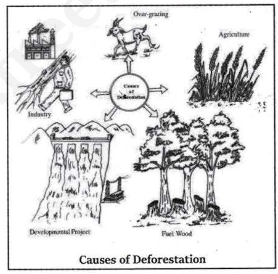
-
| S.No. | Cause | Description |
|---|
| 1 | Shifting cultivation | A patch of land is cleared, vegetation burned, ash mixed with soil to add nutrients. Used for crops for 2-3 years, then abandoned to recover fertility. Repeated on new land with simple tools. |
| 2 | Development project | Projects like hydroelectric projects, dams, reservoirs, railways, roads require immense deforestation, despite being beneficial. |
| 3 | Fuel Requirements | Increasing demand for firewood due to growing population increases pressure on forests, intensifying deforestation. |
| 4 | Raw Material Requirements | Wood used for paper, plywood, furniture, match sticks, boxes, crates, packing cases. Plants provide drugs, scents, perfumes, resin, gums, waxes, turpentine, latex, rubber, tannins, alkaloids, bees wax, exerting pressure on forest ecosystem. |
| 5 | Other Causes | Overgrazing, agriculture, mining, urbanization, flood, fire, pest, diseases, defence, communication activities. |
- 3.4.2. How it affects?
- Closed forests (based on canopy level) have being diminished due to deforestation leading to increase in degraded forests.
- Forests recycle moisture from soil into their immediate atmosphere by transpiration where it again precipitates as rain.
- Deforestation results in an immediate lowering of ground water level and in long-term reduction of precipitation.
- Due to deforestation, this natural reuse cycle is broken and water is lost through rapid run off.
- Much of the mining activity in India is being carried out in forest regions. The obvious result is deforestation and soil erosion.
- Underground mining has also significantly denuded forests, as timber is used for supporting the roofs of mine galleries.
- A large number of abandoned mines are lying in bad shape and are under extensive gully erosion leading to degradation of the habitat.
- Deforestation affects the biota and neighbouring ecosystems, soil erosion, land degradation, alteration of ground water channels, pollution and scarce.
- Do you know?
- Reptiles are cold-blooded animals that raise their body temperature by lying in the sun or lower it by crawling into the shade. Their body temperature changes to the temperature of its surroundings.
- 3.5. GRASSLAND ECOSYTEM
- The grasslands are found where rainfall is about 25-75 cm per year, not enough to support a forest, but more than that of a true desert.
- Typical grasslands are vegetation formations that are generally found in temperate climates.
- In India, they are found mainly in the high Himalayas. The rest of India’s grasslands are mainly composed of steppes and savannas.
- The major difference between steppes and savannas is that all the forage in the steppe is provided only during the brief wet season whereas in the savannas forage is largely from grasses that not only grow during the wet season but also from the smaller amount of regrowth in the dry season.
- Steppe formations occupy large areas of sandy and saline soil; in western Rajasthan, where the climate is semi-arid, average rainfall is less than 200 mm a year with a dry season of 10 to 11 months, and a large variation in rainfall.
- The soil is always exposed, sometimes rocky but more often sandy with fixed or mobile dunes. Forage is available only during the brief wet season. The grass layer is sparse and consists mainly of annual grass species.
- In the central and eastern parts of Rajasthan, where the rainfall is about 500 mm per year and the dry season is of six to eight months, dry savanna grazing ecosystems have developed. The light shade cast by the sparse population of trees like khetri favours the growth of the grasses.
- 3.5.1. Types of Grasslands
-
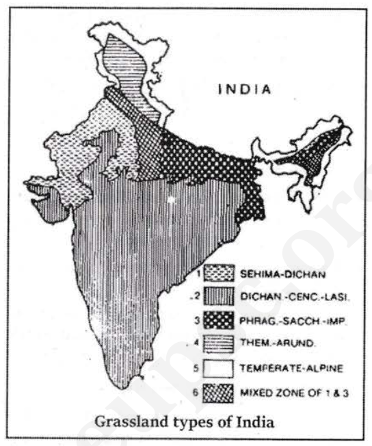
- Based on climatic conditions there are six types of grasslands found in the different regions of the Indian subcontinent. Four major types of grasslands are discussed here.
-
| S.No. | Grassland Type | Distribution | Characteristics |
|---|
| 1 | Semi-arid zone | Northern Gujarat, Rajasthan (excluding Aravallis), western Uttar Pradesh, Delhi, Punjab | Topography broken by hill spurs and sand dunes. |
| 2 | Dry sub humid zone | Whole of peninsular India (except Nilgiri) | |
| 3 | Moist sub humid zone | Ganga alluvial plain in Northern India | Level, low lying, ill-drained topography. |
| 4 | Humid montane regions | Assam, Manipur, West Bengal, Uttar Pradesh, Punjab, Himachal Pradesh, Jammu and Kashmir | Savanna derived from humid forests due to shifting cultivation and sheep grazing. |
- 3.5.2. Economic importance of grasslands
- India teems with animals of all shapes and sizes from the buffaloes to sheep’s and there are millions of them.
- The livestock wealth plays a crucial role in Indian life. It is a major source of fuel, draught power, nutrition and raw material for village industries.
- But only about 13 million hectares in the country are classified as permanent grazing lands. On top of it, they exist in a highly degraded state.
- Grassland biomes are important to maintain the population of many domesticated and wild herbivores.
- Indian Grasslands and Fodder Research Institute, Jhansi and Central Arid Zone Research Institute, Jodhpur.
- 3.5.3. Impact of grazing
- Due to heavy grazing pressure, the quality of grasslands deteriorates rapidly, the mulch cover of the soil reduces, microclimate becomes more dry and is readily invaded by xerophytic plants and borrowing animals.
- Due to absence of humus cover, mineral soil surface is heavily trampled, when wet it produces puddling of the surface layer. In turn it reduces the infiltration of water into the soil and accelerates run off, resulting in soft erosion.
- These changes contribute to the reduction of energy flow, and the disruption of the stratification and periodicity of the primary producers. It results in a breakdown of the biogeochemical cycles of water, carbon and nitrogen.
- Water and wind erosion completely deteriorates dry grassland microclimate.
- 3.5.4. Role of fire
- Fire plays an important role in the management of grasslands.
- Under moist conditions fire favours grass over trees, whereas in dry conditions fire is often necessary to maintain grasslands against the invasion of desert shrubs.
- Burning increases the forage yields.
- Do you know?
- The elephant’s trunk combines both nose and upper lip and transforms them into a single powerful organ that is able to touch, grasp and smell. It is strong enough to uproot a tree, sensitive enough to pick up a pea-sized fruit from the ground, and long enough to reach foliage high in the trees. The trunk is also used to drink by sucking up water and squirting it into the mouth.
- 3.6. DESERT ECOSYSTEM
- Deserts are formed in regions with less than 25 cm of annual rainfall, or sometimes in hot regions where there is more rainfall, but unevenly distributed in the annual cycle.
- Lack of rain in the mid latitude is often due to stable high pressure zones; deserts in temperate regions often lie in “rain shadows”, that is, where high mountains block off moisture from the seas.
- The climate of these biomes is modified by altitude and latitude. At high altitudes and at greater distance from the equator the deserts are cold and hot near equator and tropics.
- The perennial plant like creosote bush, cactus are scattered throughout the desert biomes.
- In shallow depressed areas with salt deposits geese-wood, seepwood and salt grasses are common.
- Because water is the dominant limiting factor, the productivity of a given desert is almost directly dependent on the rainfall. Where soils are suitable, irrigation can convert deserts into productive agricultural land.
- As the large volume of water passes through the irrigation system, salts may be left behind that will gradually accumulate over the years until they become limiting, unless means of avoiding this difficulty are devised.
- Do you know?
- Sri Venkateshwara Zoological Park located in Tirupati city in Andhra Pradesh is the largest zoo in the country.
- 3.6.1. Adaptations
- Desert plants are under hot and dry conditions.
- (i) These plants conserve water by following methods:
- They are mostly shrubs.
- Leaves are absent or reduced in size.
- Leaves and stem are succulent and water storing.
- In some plants even the stem contains chlorophyll for photosynthesis.
- Root system is well developed and spread over large area.
- The annuals wherever present germinate, bloom and reproduce only during the short rainy season, and not in summer and winter. This is an adaption to desert condition.
- (ii) The animals are physiologically and behaviorally adapted to desert conditions
- They are fast runners.
- They are nocturnal in habit to avoid the sun’s heat during day time.
- They conserve water by excreting concentrated urine.
- Animals and birds usually have long legs to keep the body away from the hot ground.
- Lizards are mostly insectivorous and can live without drinking water for several days.
- Herbivorous animals get sufficient water from the seeds which they eat.
- Camel is known as the ship of the desert as it can travel long distances without drinking water for several days.
- Mammals as a group are poorly adapted to deserts but some species have become secondarily adapted. A few species of nocturnal rodents can live in the desert without drinking water.
- Do you know?
- Polar bears are very well adapted to swimming, with a water-repellent coat and partially webbed feet.
- 3.6.2. Indian Desert – Thar desert (hot)
- The climate of this region is characterised by excessive drought, the rainfall being scanty and irregular.
- The winter rains of northern India rarely penetrate into the region.
- November to March is characterized by extreme variations of temperature and the temperature is frequently below freezing point at night.
- During April to June the heat are intense, frequent scorching winds prevail with great desiccating.
- The relative humidity of the atmosphere is always low.
- The climate is hostile to all vegetation, only plants and animals possessing special adaptations being able to establish themselves.
- (a) Flora
- The proper desert plants may be divided into two main groups
- (i) depending directly upon on rain and
- (ii) those depending on the presence of subterranean water.
- The first group consists of two types:
- depending directly upon on the rain are of two types - the ‘ephernerals’ and the rain perennials’.
- The ephernerals are delicate annuals, apparently free from any xerophilous adaptations, having slender stems and root-systems and often large flowers. They appear almost immediately after rain, develop flowers and fruits in an incredibly short time, and die as soon as the surface layer of the soil dries up.
- The rain perennials are visible above the ground only during the rainy season, but have a perennial underground stem.
- The second group - depending on the presence of subterranean water
- By far the largest number of indigenous plants are capable of absorbing water from deep below the surface of the ground by means of a well-developed root system, the main part of which generally consists of a slender, woody tap root of extraordinary length.
- Generally, various other xerophilous adaptations are resorted to such as reduced leaves, thick hairy growth, succulence, coatings of wax, thick cuticle, protected stomata, etc., all having for their object of reduction of transpiration.
- (b) Fauna
- It is home to some of India’s most magnificent grasslands and sanctuary for the Great Indian Bustard.
- Among the mammal, the blackbuck, wild ass, chinkara, caracal, Sandgrouse and desert fox inhabit the open plains, grasslands, and saline depressions.
- The nesting ground of Flamingoes and the only known population of Asiatic wild Ass lies in the remote part of Great Rann, Gujarat.
- It is the migration flyway used by cranes and flamingos.
- 3.6.3. Cold Desert/ Temperate Desert
- Cold desert of India include areas of ladak, leh and kargil of kashmir and spiti valley of Himachal Pradesh and some parts of northern Uttaranchal and Sikkim. These arid areas are not affected by the Indian monsoons because they lie in the rain-shadow of the Himalayan mountain systems.
- Characterised by extreme cold weather and denuded terrain they are not suitable for plant growth. Isolated, scattered and over grazed herbaceous shrubs are found.
- Grazing period is less than 3-4 months.
- 3.6.4. Characters
- Severe arid conditions - Dry Atmosphere
- Temperature less than 0°C for most of the period, drops to –50°C during winter.
- insignificant monsoon - Mean annual rainfall less than 400mm
- Heavy snowfall occurs between November and march.
- Soil type - sandy to sandy loam
- Soil pH - neutral to slight alkaline.
- Soil nutrient - Poor organic matter content
- Soil has low water retention capacity.
- Wind erosion is more common.
- Narrow growing period, mostly during the summer.
- Due to aforesaid extreme cold conditions, growth of vegetation is slow and of slunted nature.
- Bio-diversity
- Cold desert is the home of highly adaptive, rare endangered fauna, such as Asiatic Ibex, Tibetan Argali, Ladakh Uriyal, Bharal, Tibetan Antelope (chiru), Tibetan Gazelle, Wild Yak, Snow Leopard, Brown Bear, Tibetan Wolf, Wild Dog and Tibetan Wild Ass (‘Kiang’ a close relative of the Indian wild ass), Woolly hare, Black Necked Crane, etc.
- Cold desert comprises of alpine mesophytes and desert vegetation.
- Dry temperature zone:
- Betula, Salix, Juniperus.
- Alphine zone:
- Junipers, Birch, Rhododendron with grasses.
- Perpetual snow zone:
- No vegetation due to permanently frozen soil.
- Oak, pine, deodar, birch and rhododendron are the important trees.
- Do you know?
- According to Global Forest Resource Assessment Report (Food and Agricultural Organization (FAO) 2005), India ranks among the top ten countries in terms of forest area. India has 1.8 % of the global forest area with per capita forests of 0.08 ha.
- 3.7. DESERTIFICATION
- It is the destruction of biological potential of the land which can ultimately lead to desert like conditions. In arid and semiarid regions, the restoration of the fragile ecosystem is very slow, and issues like deforestation, mining enhances the desertification. Desertification is a main problem faced by desert adjoining areas, which stretches across parts of Rajasthan, Gujarat, Punjab and Haryana.
- The cause of this process is not climatic changes, droughts, etc. but human actions.
- Causes
- Population pressure
- Increase in cattle population, over grazing
- Increased agriculture
- Development activities
- Deforestation
- 3.7.1. Status of Indian Desertification
- Extent of Drylands:
- As per the Desertification and Land Degradation Atlas of India (2021), approximately 40% of India's land area is classified as drylands.
- Land Degradation:
- Total area undergoing land degradation in India: 97.85 million hectares
- This constitutes 29.77% of India's total geographical area.
- Desertification:
- Area under desertification (land degradation within drylands): 81.45 million hectares
- Vulnerable Regions:
- Most affected states: Rajasthan, Maharashtra, Gujarat, Jammu & Kashmir, Karnataka, Jharkhand, Odisha, Madhya Pradesh, Telangana
- Over 50% of their total geographical area is experiencing degradation
- Economic Impact:
- Estimated annual economic cost of land degradation: ₹3.18 lakh crore (~2.5% of India’s GDP)
- Afforestation Efforts:
- Between 2011-12 and 2021-22, approximately 18.94 million hectares of land were afforested under the Twenty Point Programme
- 3.7.2. Economic Impact of Land Degradation in India
- Agriculture:
- Reduced soil fertility → lower crop yields
- Increased need for fertilizers and irrigation → higher input costs
- Estimated annual loss: ₹1.2 lakh crore
- Water Resources:
- Degraded land → reduced water retention → lower groundwater recharge
- Higher water extraction and pumping costs
- Estimated annual loss: ₹0.5 lakh crore
- Forestry and Biodiversity:
- Loss of forest cover → decline in timber, fuelwood, and NTFPs (non-timber forest products)
- Impact on local livelihoods dependent on forests
- Estimated annual loss: ₹0.4 lakh crore
- Infrastructure & Urbanization:
- Increased soil erosion and desertification → damage to roads, buildings, and other infrastructure
- Costs of mitigation, sand encroachment, and maintenance
- Estimated annual loss: ₹0.3 lakh crore
- Health & Ecosystem Services:
- Dust storms, degraded air quality → increased healthcare costs
- Loss of ecosystem services (pollination, carbon sequestration)
- Estimated annual loss: ₹0.8 lakh crore
- Total:
- Aggregated economic cost: ₹3.18 lakh crore/year (~2.5% of India’s GDP)
- 3.7.3. Control measures
- India is a signatory to United Nations Convention to Combat Desertification (UNCCD). The National Action Programme for combating desertification was prepared in 2001 to take appropriate action in addressing the problems of desertification.
- Some of the major programmes currently implemented that address issues related to land degradation and desertification are
-
| S.No. | Programme |
|---|
| 1 | Integrated Watershed Management Programme |
| 2 | National Afforestation Programme |
| 3 | National Mission for Green India |
| 4 | The Mahatma Gandhi National Rural Employment Guarantee Scheme |
| 5 | Soil Conservation in the Catchment of River Valley Project and Flood Prone River |
| 6 | National Watershed Development Project for Rainfed Areas |
| 7 | Desert Development Programme |
| 8 | Fodder and Feed Development Scheme-component of Grassland Development including Grass Reserves, Command Area Development and Water Management programme etc. |
- 3.7.4. Afforestation
- The desert regions of Rajasthan, Gujarat, Haryana, Punjab and Trans-Himalayan regions are in scarce of vegetation.
- People require fire wood, timber and fodder for their domestic consumptions and livestock.
- Presence of vegetation prevents the soil erosion and modifies the hostile climate.
- Thus desert Afforestation is inevitable in order to modify the climate, desertification and to meet the demands of people living in that region.
- 3.8 INDIAN STATE OF FOREST REPORT, 2023
- The India State of Forest Report (ISFR) is published biennially by the Forest Survey of India (FSI) and 2023 marks the 17th report in the series. It is based on the interpretation of satellite data from Resourcesat-II (LISS III sensor) followed by extensive ground truthing to ensure accuracy. The total forest and tree cover in India is 809,537 sq km, which accounts for 24.62% of the country's geographical area. This represents an increase of 1,540 sq km compared to the 2021 assessment. Very Dense Forests cover 99,779 sq km (3.04%), Moderately Dense Forests cover 306,890 sq km (9.33%), and Open Forests cover 307,120 sq km (9.34%). The total carbon stock in India’s forests is estimated at 7,204 million tonnes of CO₂ equivalent, showing an increase of 79.4 million tonnes since the last assessment.
- Among states, Madhya Pradesh has the largest forest area, while Mizoram leads in percentage terms with 90.3% forest cover, followed by Lakshadweep at 84.56%. Seven States/Union Territories — Mizoram, Lakshadweep, Andaman & Nicobar Islands, Arunachal Pradesh, Nagaland, Meghalaya, and Manipur — have more than 75% of their geographical area under forest cover. Eight states — Tripura, Goa, Sikkim, Kerala, Uttarakhand, Dadra & Nagar Haveli, Chhattisgarh, and Assam — have forest cover between 33% and 75%.
- India is ranked 10th in the world in terms of forest cover, and according to the FAO, it is 8th among the top ten countries reporting the greatest annual net gain in forest area. Approximately 22.27% of the forested area is prone to forest fires, with 4% classified as extremely fire-prone. Bamboo-bearing areas cover 149,443 sq km, which shows a decrease of 10,594 sq km compared to 2019. Trees Outside Forests (TOF) account for 29.29 million hectares, representing about 36.18% of the total forest and tree cover. Very Dense Forests (VDF) continue to play a critical role in absorbing maximum carbon dioxide from the atmosphere.
- Do you know?
- Spider silk is possibly the strongest material in the world! Scientists believe that if they gathered the same weight of spider web as a piece of steel, the web would be much stronger than the steel! As hard as scientists try, they cannot match or copy the silk.
- 3.9 State of the World's Forests 2024
- The 2024 edition of the State of the World's Forests (SOFO) was released during the 27th session of the FAO Committee on Forestry.
- The report emphasizes the transformative power of evidence-based innovation in the forest sector, ranging from new technologies to creative and successful policies and institutional changes, to new ways of getting finance to forest owners and managers.
- It identifies barriers to, and enablers of, innovation and enumerates five actions for empowering people to apply their creativity in the forest sector to solve problems and scale up positive impacts.
- The report uses 18 case studies from around the world to illustrate the many ways in which forest-sector innovation can lead to positive change.
- It calls for social, technological, financial, institutional, and policy innovation to address the escalating threats to forests.
- The report highlights the increasing vulnerability of forests to climate-related stressors, including wildfires and pests.
- It underscores the need for scaling up forest conservation, restoration, and sustainable use, especially as climate-related stressors and forest degradation continue to pose significant challenges.
- CHAPTER 4: AQUATIC ECOSYSTEM
- Ecosystems consisting of water as the main habitat are known as aquatic ecosystems. Aquatic ecosystems are classified based on their salt content.
- (i) Fresh water ecosystems
- The salt content of fresh bodies is very low, always less than 5 ppt (parts per thousand). E.g lakes, ponds, pools, springs, streams, and rivers
- (ii) Marine ecosystems
- The water bodies containing salt concentration equal to or above that of sea water (i.e., 35 ppt or above). E.g shallow seas and open ocean
- (iii) Brackish water ecosystems
- These water bodies have salt content in between 5 to 35 ppt. e.g. estuaries, salt marshes, mangrove swamps and forests.
- 4.1. AQUATIC ORGANISMS
-
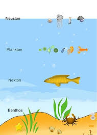
- The aquatic organisms are classified on the basis of their zone of occurrence and their ability to cross these zones. The organisms (both flora and fauna) in the aquatic ecosystem are unevenly distributed but can be classified on the basis of their life form or location into five groups
- (i) Neuston:
- These are unattached organisms which live at the air-water interface such as floating plants, etc.
- Some organisms spend most of their lives on top of the air-water interface such as water striders, while others spend most of their time just beneath the air-water interface and obtain most of their food within the water.
- E.g., beetles and back-swimmers.
- (ii) Periphyton:
- These are organisms which remain attached to stems and leaves of rooted plants or substances emerging above the bottom mud such as sessile algae and their associated group of animals.
- (iii) Plankton:
- This group includes both microscopic plants like algae (phytoplankton) and animals like crustaceans and protozoans (zooplankton) found in all aquatic ecosystems, except certain swift moving waters.
- The locomotory power of the planktons is limited so that their distribution is controlled, largely, by currents in the aquatic ecosystems.
- (iv) Nekton:
- This group contains animals which are swimmers.
- The nektons are relatively large and powerful as they have to overcome the water currents.
- The animals range in size from the swimming insects (about 2 mm long) to the largest animals, the blue whale.
- (v) Benthos:
- The benthic organisms are those found living in the bottom of the water mass.
- Practically every aquatic ecosystem contains well developed benthos.
- 4.1.1. Factors Limiting the Productivity of Aquatic Habitats
- Sunlight and oxygen are most important limiting factors of the aquatic ecosystems whereas moisture and temperature are the main limiting factors of terrestrial ecosystem.
- Sunlight:
- Sunlight penetration rapidly diminishes as it passes down the column of water. The depth to which light penetrates a lake determines the extent of plant distribution.
- Based on light penetration and plant distribution they are classified as photic and aphotic zones
- Photic zone:
- It is the upper layer of the aquatic ecosystems, up to which light penetrates and within which photosynthetic activity is confined.
- The depth of this zone depends on the transparency of water.
- Both photosynthesis and respiration activity takes place.
- photic (or “euphotic”) zone is the lighted and usually well-mixed portion that extends from the lake surface down to where the light level is 1% of that at the surface.
- Aphotic zone:
- The lower layers of the aquatic ecosystems, where light penetration and plant growth are restricted forms the aphotic zone.
- Only respiration activity takes place.
- aphotic zone is positioned below the littoral and photic zones to bottom of the lake where light levels are too low for photosynthesis. Respiration occurs at all depths so the aphotic zone is a region of oxygen consumption. This deep, unlit region is also known as the profundal zone.
- Winterkill
- Snow cover of ice on water body can effectively cut off light, plunging the waters into darkness. Hence photosynthesis stops but respiration continues. Thus in shallow lakes, the oxygen get depleted. Fish die, but we won’t know it until the ice melts and we find floating fish. This condition is known as winterkill.
- Dissolved oxygen:
- In aquatic ecosystems oxygen is dissolved in water, where its concentration varies constantly depending on factors that influence the input and output of oxygen in water.
- In fresh water the average concentration of dissolved oxygen is 0.0010 per cent (also expressed as 10 parts per million or 10 ppm) by weight, which is 150 times lower than the concentration of oxygen in an equivalent volume of air.
- Oxygen enters the aquatic ecosystem through the air-water interface and by the photosynthetic activities of aquatic plants.
- Therefore, the quantity of dissolved oxygen present in an ecosystem depends on the rate at which the aforesaid two processes occur.
- Dissolved oxygen escapes the water body through air-water interface and through respiration of organisms (fish, decomposers, zooplanktons, etc).
- The amount of dissolved oxygen retained in water is also influenced by temperature. Oxygen is less soluble in warm water. Warm water also enhances decomposer activity. Therefore, increasing the temperature of a waterbody increases the rate at which oxygen is depleted from water.
- When the dissolved oxygen level falls below 3-5 ppm, many aquatic organisms are likely to die.
- Physicsl mechanism taking oxygen to depth:
- Thermohaline circulation:
- Deep ocean currents driven by differences in temperature (thermo) and salinity (haline) transport oxygen-rich surface water to the deep ocean over long timescales (years to centuries).
- Wind-driven mixing and convection:
- Surface winds and storms cause vertical mixing, pushing oxygen down into the upper layers.
- Downwelling:
- In certain regions, surface waters sink due to cooling or increased salinity (e.g., polar regions). These sinking waters carry dissolved oxygen to depth.
- Oil spills are very dangerous for aquatic ecosystems. Oil is hydrophobic and forms a thin layer on top of the water surface, this thin layer blocks the air-water interface. Oxygen levels will drop rapidly and quatic animals dependent on dissolved oxygen will perish.
- Other limiting factors which influence on aquatic productivity are
- Transparency:
- Transparency affects the extent of light penetration.
- Suspended particulate matters such as clay, silt, phytoplankton, etc make the water turbid.
- Consequently it limits the extent of light penetration and the photosynthetic activity in a significant way.
- Temperature:
- The water temperature changes less rapidly than the temperature of air because water has a considerably higher specific heat than air, i.e. larger amounts of heat energy must be added to or taken away from water to raise or lower its temperature.
- Since water temperatures are less subject to change, the aquatic organisms have narrow temperature tolerance limit.
- As a result, even small changes in water temperature are a great threat to the survival of aquatic organisms when compared to the changes in air temperatures in the terrestrial organisms.
- The classification of organisms and limiting factors discussed here apply in general to all aquatic ecosystems - lakes, Ponds, Rivers, Streams, Estuaries, oceans and seas.
- Do you know?
- Bats are social animals. They hang UPSIDE DOWN when they sleep. They feed at night (they are “nocturnal”) and spend the day sleeping in caves or in tree tops. They are the second largest group of mammals after rodents.
- 4.2. LAKE ECOLOGY
- Any body of standing water, generally large enough in area and depth, irrespective of its hydrology, ecology, and other characteristics is generally known as lake.
- 4.2.1. Ageing of Lakes
- Like any organism, lakes are born as they originate by various geological and geomorphic events, and ‘grow’ with time to change in their various morphological and functional characteristics and eventually die.
- They receive their water from surface runoff (sometimes also groundwater discharge) and along with it various chemical substances and mineral matter eroded from the land.
- Over periods spanning millennia, ‘ageing’ occurs as the lakes accumulate mineral and organic matter and gradually, get filled up.
- known as Freshwater, Brackish or Saline lakes (similar to that of classification of aquatic ecosystem).
- On the basis of their nutrient content, they are categorized as Oligotrophic (very low nutrients), Mesotrophic (moderate nutrients) and Eutrophic (highly nutrient rich).
- Vast majority of lakes in India are either eutrophic or mesotrophic because of the nutrients derived from their surroundings or organic wastes entering them.
- 4.2.2. In India
- In India, natural lakes (relatively few) mostly lie in the Himalayan region, the floodplains of Indus, Ganga and Brahmaputra.
- In the semi-arid and arid regions of western and peninsular India, tens of thousands of water bodies have been constructed over millennia.
- Lake ‘Sudarshan’ in Gujarat’s Girnar area was perhaps the oldest man-made lake in India, dating back to 300 BC.
- Constructed around 320–297 BCE by Pushyagupta, the governor of Mauryan emperor Chandragupta Maurya.
- Lakes are also classified on the basis of their water chemistry. Based on the levels of salinity, they are known as Freshwater, Brackish or Saline lakes (similar to that of classification of aquatic ecosystem).
- 4.2.3. General Characteristics of Oligotrophic and Eutrophic Lakes
- The nutrient-enrichment of the lakes promotes the growth of algae, aquatic plants and various fauna. This process is known as natural eutrophication.
- Similar nutrient enrichment of lakes at an accelerated rate is caused by human activities (discharge of wastewaters or agricultural runoff) and the consequent ageing phenomenon is known as ‘cultural eutrophication’.
-
| Sl.no | Parameter | Oligotrophic | Eutrophic |
|---|
| 1 | Aquatic plant production | Low | Eliminated due to Eutrophication |
| 2 | Aquatic animal production | Low | Eliminated due to Eutrophication |
| 3 | Aquatic plant nutrient flux | Low | High |
| 4 | Oxygen in the hypolimnion (bottom layer) | Present | Absent |
| 5 | Depth | Tend to be deeper | Tend to be shallower |
| 6 | Water quality for domestic & industrial uses | Good | Poor |
| 7 | Total salts or conductance | Usually lower | Sometimes higher |
| 8 | Number of plant and animal species | Many | Fewer |
- Do you know?
- Poison Dart frogs live in rainforest habitats in Central and South America. They can be found in trees, as well as under leaves and logs and rocks on the floor of the forest. Because of their size, from ½ to 2 inches long, they are hard to see. Poison frogs warn predators with brilliant colors and patterns. There are many species of poison frogs that can be found in every color under the sun! They prey on invertebrates, especially certain ant species, which build up really strong poisons in the frog.
- 4.2.4. Removal of the nutrients from a lake
- Flushing with nutrient-poor waters.
- Deep water abstraction.
- On-site P-elimination by flocculation/flotation with water backflow, or floating Plant NESSIE with adsorbents.
- On-site algae removal by filters and P-adsorbers.
- On-site algae skimming and separator thickening.
- Artificial mixing / Destratification (permanent or intermittent).
- Harvest of fishes and macrophytes.
- Sludge removal.
- Ameenpur Lake - First Biodiversity Heritage Site
- Ameenpur Lake gets the status of the first Biodiversity Heritage Site in the country under the biodiversity act, 2002. it is an ancient man-made lake in a western part of Telangana. Biodiversity Heritage Site is areas of biodiversity importance, which harbor rich biodiversity, wild relatives of crops, or areas, which lie outside the protected area network. Biodiversity Heritage sites are managed by a locally constituted Biodiversity Management Committee and get funding for its protection.
- Do you know?
- Under Green India Mission (GIM), perspective plans and annual plans of operations of six States have been approved in the first sitting of the National Executive Council held in May 2015.
- 4.3. EUTROPHICATION
-
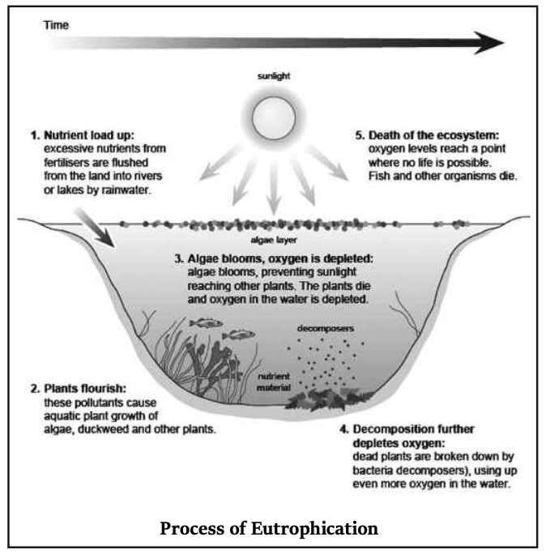
- Greek word – Eutrophia means adequate & healthy nutrition.
- Eutrophication is a syndrome of ecosystem, response to the addition of artificial or natural nutrients such as nitrates and phosphates through fertilizer, sewage, etc that fertilize the aquatic ecosystem.
- It is primarily caused by the leaching of phosphate and - or nitrate containing fertilisers from agricultural lands into lakes or rivers.
- The growth of green algae which we see in the lake surface layer is the physical identification of an Eutrophication.
- Some algae and blue-green bacteria thrive on the excess ions and a population explosion covers almost entire surface layer is known as algal bloom. This growth is unsustainable, however.
- As Algal Bloom covers the surface layer, it restricts the penetration of sunlight. Diffusion of gas from atom Oxygen is required by all respiring animals in the water and it is replenished by diffusion and photosynthesis of green plants.
- The oxygen level is already low because of the population explosion and further oxygen is taken up by microorganisms which feed off the dead algae during decomposition process.
- Due to reduced oxygen level, fishes and other aquatic organism suffocate and they die.
- The anaerobic conditions can promote growth of bacteria which produces toxins deadly to aquatic organisms, birds and mammals.
- All this eventually leads to degradation of aquatic ecosystem and death of its organisms.
- It often leads to change in animal and plant population & degradation of water & habitat quality.
- Process of Eutrophication
-
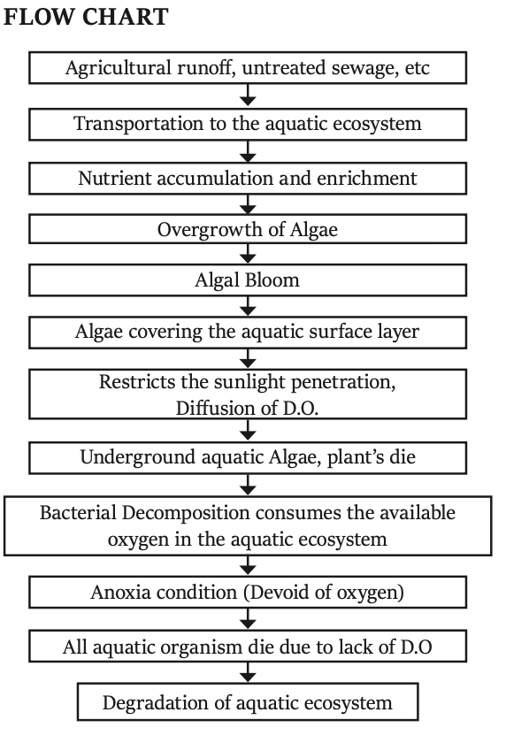
- 4.3.1. Types
- 1. Natural
- Deposition of nutrients [such as depositional environments. When the nutrients flow into the system on temporal basics.
- It Occurs over centuries
- Eg. Seasonally inundated tropical flood plains
- 2. Manmade
- Occurs in decades
- These inputs may come from untreated sewage discharges, runoff of fertilizer from farm fields, golf courses, park, etc. & from animal wastes.
- Combustion of fossil fuel [produces gases – nitrogen oxides
- Growing urban population in the coastal areas
- 4.3.2. Sources
- 1. Point sources
- Directly attributable to one influence
- In point source nutrient waste travels directly from source to water.
- Point sources are easy to regulate.
- 2. Non-point source
- Is from various ill-defined and diffuse sources
- Vary spatially and temporarily and are difficult to regulate.
- 4.3.2. Effects
- Change in ecosystem:
- Eutrophication eventually create detritus layer in the ponds & lakes and produces successively shallower depth of surface water.
- Eventually the water body is reduced into marsh whose plant community is transformed from an aquatic environment to recognizable terrestrial ecosystem.
- Decreased biodiversity
- Algal blooms restrict the sunlight to penetrate & affects the photosynthesizing plants. It causes death of plants.
- Bacteria consumes all the oxygen on decomposition & results in devoid of oxygen. Eventually it leads to death of all living organism in aquatic ecosystem.
- New species invasion
- Eutrophication may cause the ecosystem competitive by transforming the normal limiting nutrient to abundant level. This cause shifting in species composition of ecosystem
- Toxicity
- Some algal blooms when die or eaten, release neuro & hepatotoxins which can kill aquatic organism & pose threat to humans. (e.g) Shellfish poisoning.
- Depletion of dissolved oxygen level.
- Increased incidences of fish kills & loss of desirable fish species & reduction in harvesting
- Loss of coral reefs.
- Decrease in water transparency and increased turbidity.
- Affects navigation due to increased turbidity.
- Colour (yellow, green, red), smell and water treatment problems.
- Increased biomass of inedible toxic phytoplankton
- Increase in bloom of gelatinous zooplankton
- Increased biomass of benthic and epiphytic algae
- Unsuitable for aesthetic recreation, and reduction in value of water body
- Do you know?
- The world’s tallest tree is a coast redwood in California, measuring more than 360 ft or 110 m.
- Mitigation
- Riparian buffer
- Interfaces between a flowing body of water and land created near the waterways, farms, roads, etc. in an attempt to filter pollution.
- Sediments and nutrients are deposited in the buffer zones instead of deposition in water.
- Minimizing the non-point pollution.
- Nitrogen testing & modeling
- N-Testing is a technique to find the optimum amount of fertilizer required for crop plants. It will reduce the amount of nitrogen lost to the surrounding area.
- Treatment of Industrial effluents
- Organic farming & Integrated Farming System.
- Reduction in livestock density
- Improving the efficiency of use of fertilizer
- Treatment of runoff from street & storm drains
- Reduction in nitrogen emission from vehicles and power plants
- Increase in efficiency of nitrogen & phosphorous removal from municipal waste water
- Policies multi dimensional in Nature should include
- Education & awareness
- Research, monitoring & evaluation
- Regulations.
- Fiscal & economic incentives
- Ecosystem preservation & restoration
- 4.4. HARMFUL ALGAL BLOOMS
- Algae or phytoplankton are microscopic organisms that can be found naturally in coastal waters. They are major producers of oxygen and food for many of the animals that live in these waters.
- When environmental conditions are favorable for their development, these cells may multiply rapidly and form high numbers of cells and this is called an algal bloom.
- A bloom often results in a color change in the water. Algal blooms can be any color, but the most common ones are red or brown. These blooms are commonly referred to as red or brown tides.
- Most algal blooms are not harmful but some produce toxins and do affect fish, birds, marine mammals and humans. The toxins may also make the surrounding air difficult to breathe. These are known as Harmful Algal Blooms (HABs).
- 4.4.2. Why Red Tide is a misnomer?
- “Red Tide” is a common name for such a phenomenon where certain phytoplankton species contain pigments and “bloom” such that the human eye perceives the water to be discolored.
- Blooms can appear greenish, brown, and even reddish orange depending upon the type of organism, the type of water, and the concentration of the organisms.
- The term “red tide” is thus a misnomer because blooms are not always red, they are not associated with tides, they are usually not harmful, and some species can be harmful or dangerous at low cell concentrations that do not discolor the water.
- They are scientifically referred as Harmful Algal Blooms (HABs).
- 4.4.3. What are the causes of these blooms?
- Blooms occur when several colonies start combining rapidly when conditions such as nutrient concentrations, salinity and temperature are optimal.
- Blooms can be due to a number of reasons. Two common causes are nutrient enrichment and warm waters.
- Nutrient enrichment of water, especially phosphates and nitrogen, is often the result of pollution and can cause algal blooms.
- Water temperature has also been related to the occurrence of algal blooms, with unusually warm water being conducive to blooms.
- 4.4.4. How are HABs dangerous to fish and humans?
- HABs can deplete oxygen in water and lead to low dissolved oxygen levels.
- How it depletes oxygen despite increased photosynthesis in lake?
- Nighttime respiration:
- Algae, like other organisms, respire continuously, consuming oxygen. At night, photosynthesis stops, but respiration continues, reducing oxygen.
- Decomposition of dead algae:
- When algae die, heterotrophic bacteria decompose them. This decomposition is aerobic, consuming large amounts of dissolved oxygen (BOD – Biochemical Oxygen Demand increases).
- When oxygen levels become too low, fish suffocate and die.
- Some algae species in blooms produce potent neurotoxins that can be transferred through the food web where they affect and even kill the higher forms of life such as zooplankton, shellfish, fish, birds, marine mammals, and even humans that feed either directly or indirectly on them.
- 4.4.5. Is HAB’s an environmental hazard?
- Yes, it is because these events can make people sick when contaminated shellfish are eaten, or when people breathe aerosolized HAB toxins near the beach.
- In addition, HAB events can result in the closure of shellfish beds, massive fish kills, death of marine mammals and seabirds, and alteration of marine habitats.
- As a consequence, HAB events adversely affect commercial and recreational fishing, tourism, and valued habitats, creating a significant impact on local economies and the livelihood of coastal residents.
- 4.4.6. How do we get exposed to HAB toxins?
- Most illness associated with HAB exposure is the result of consuming toxins that are present in shellfish or finfish.
- Some HAB toxins can become airborne during a bloom and people can become ill by inhaling toxins.
- 4.4.7. Is it safe to eat seafood?
- In general, it is safe to eat seafood.
- However, consuming shellfish that have been harvested from waters with high levels of harmful algae and consuming fish that have lesions or that were caught in an area during an algal bloom can result in illness.
- 4.4.8. HABs and Climate Change
- Because the growth, toxicity, and distribution of harmful algal bloom (HAB) species are all tied to the environment, changes in climate can change the occurrence, severity, and impacts of HAB events.
- 4.5. WETLAND ECOSYSTEM
- Wetlands are areas intermediate in character between deepwater and terrestrial habitats, also transitional in nature, and often located between them.
- These habitats experience periodic flooding from adjacent deepwater habitats and therefore supports plants and animals specifically adapted to such shallow flooding or water logging of the substrate, were designated as wetlands.
- They included lake littorals (marginal areas between highest and lowest water level of the lakes), floodplains (areas lying adjacent to the river channels beyond the natural levees and periodically flooded during high discharge in the river) and other marshy or swampy areas where water gets stagnated due to poor drainage or relatively impervious substrata & Bogs, fens and mangroves due to similar ecological characteristics
- 4.5.1. Definition
- Areas of marsh, fen, peatland/water, whether natural (or) artificial, permanent (or) temporary with water that is static (or) flowing, fresh, brackish (or) salt, including areas of marine water the depth of which at low tide does not exceed 6 mtrs.
- 4.5.2. Characteristics
- Covered by water (or) has waterlogged soil for atleast seven days during the growing season.
- Adopted plant life (hydrophytes)
- Hydric soils (not enough O2 available for some plants)
- 4.5.3. Wetlands Classification
-
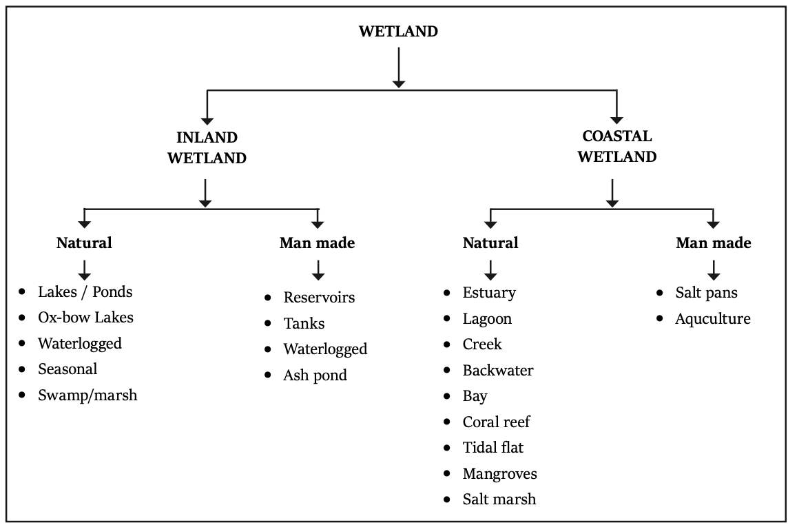
- 4.5.4. Functions of Wetlands
- Habitat to aquatic flora and fauna, as well as numerous species of birds, including migratory species.
- Filtration of sediments and nutrients from surface water
- Nutrients recycling
- Water purification
- Floods mitigation
- Maintenance of stream flow
- Ground water recharging
- Provide drinking water, fish, fodder, fuel, etc
- Control rate of runoff in urban areas
- Buffer shorelines against erosion
- Comprise an important resource for sustainable tourism, recreation and cultural heritage
- Stabilization of local climate
- Source of livelihood to local people
- Genetic reservoir for various species of plants (especially rice)
- Supporting specific diversity
- 4.5.5. Reasons for depletion
- Conversion of lands for agriculture
- Overgrazing
- Removal of sand from beds
- Aqua culture
- Habitat Destruction and Deforestation
- Pollution
- Domestic waste
- Agricultural runoff
- Industrial effluents
- Climate change
- 4.5.6. Mitigation
- Survey and demarcation
- Protection of natural regeneration
- Artificial regeneration
- Protective measures
- Afforestation (percentage survival to be indicated)
- Weed control
- Soil conservation measures & afforestation
- Wildlife conservation
- Removal of encroachments
- Eutrophication abatement
- Environmental awareness
- 4.5.7. Distinction from Lakes
- Although the Ministry of Environment and Forests has not adopted a clear distinction between lakes and wetlands, the National Lake Conservation Programme (NLCP) considers lakes as standing water bodies which have a minimum water depth of 3 m, generally cover a water spread of more than ten hectares, and have no or very little aquatic vegetation (macrophytes).
- These water bodies are used primarily for drinking water supplies, irrigation and/or recreation.
- Excessive growth of macrophytes (both submerged and free-floating) generally present in wetland, affects the water quality adversely and interfere with the utilization of the water body.
- However, marginal aquatic vegetation (wetlands), particularly comprising of emergent plants and those inhabiting waterlogged soils, is not only desirable but is to be promoted because it checks erosion, serves habitat for wildlife and helps improve water quality.
- Wetlands (generally less than 3 m deep over most of their area) are usually rich in nutrients (derived from surroundings and their sediments) and have abundant growth of aquatic macrophytes.
- They support high density and diversity of fauna, particularly birds, fish and macro invertebrates, and therefore, have high value for biodiversity conservation. These shallow lakes are rightfully categorized as wetlands.
- lakes are generally less important when compared to wetland from the viewpoint of ecosystem and biodiversity conservation.
- 4.5.8. Comparison between Lake and Wetlands
-
| Sl. no | Characteristic | Lake | Wetland (shallow lake) |
|---|
| 1 | Origin | various process | Fluvial/Geomorphic processes |
| 2 | Water turnover | Permanent | Permanent or Temporary |
| 3 | Water level changes | relatively small | Relatively Large |
| 4 | Littoral: Pelagial ratio | Small | Large |
| 5 | Thermal stratification | Yes | No |
| 6 | Vertical mixing | Thermally regulated | Wind regulated |
| 7 | Dominant Producer | Phyto plankton | Macrophytes |
| 8 | Food chain | Grazing Pathway | Detritus Pathway |
| 9 | Nutrient Cycles | Microbial loops less important | Microbial loop dominant |
| 10 | Productivity | Low | High |
| 11 | Trophic status | Oligo trophic | Mostly Eutrophic (Except desirable in bogs) |
| 12 | Biodiversity | Generally low | Generally high |
| 13 | Functions-Flood control | Less Significant | Significant |
| 14 | Groundwater recharge | Negligible/low | Low-high |
| 15 | Waste treatment | No | Yes |
| 16 | Management objectives | Control of eutrophication | High Water quality Biodiversity conservation Specific Functions |
- 4.5.9. India’s Wetlands
- Wetlands are areas of critical ecological significance:
- as they support biodiversity, support millions of people directly and indirectly, protect from storms, flood control, improve water quality, supply food, fiber and raw materials.
- India has totally 27,403 wetlands, of which 23,444 are inland wetlands and 3,959 are coastal wetlands. Wetlands occupy 18.4% of the country’s area of which 70% are under paddy cultivation.
- Natural wetlands in India range from high altitude wetlands in Himalayas; flood plains of the major river systems; saline and temporary wetlands of the arid and semi-arid regions; coastal wetlands such as lagoons, backwaters, estuaries, mangroves, swamps and coral reefs, and so on.
- Do you know?
- Kannimara teak is one of the largest living teak tree in the world. It has an amazing girth of 6.48m and a crown height of 48.75m It is believed to be around 400 years old. According to the local tribal belief here when this tree was tried to cut down, the blood spurted out from the place of cut. This tree was being since then worshipped by the local tribes in Parambikulam as “Virgin tree”. Kannimara - ‘Kanni’ means ‘Virgin’. This tree has been awarded ‘Mahavriksha Puraskar’ by the Government of India.
- 4.6 WETLAND: ACTS AND POLICIES
- 4.6.1. National Lake Conservation Plan (NLCP)
- Ministry of Environment and Forests has been implementing the National Lake Conservation Plan (NLCP) since 2001 for conservation and management of polluted and degraded lakes in urban and semi-urban areas.
- Objective
- To restore and conserve the urban and semi-urban lakes of the country degraded due to waste water discharge into the lake and other unique freshwater ecosystems, through an integrated ecosystem approach.
- Activities Covered Under NLCP
-
| S.No. | Activity | Description |
|---|
| 1 | Prevention of pollution from point sources | Intercepting, diverting and treating the pollution loads entering the lake. The interception and diversion works may include sewerage & sewage treatment for the entire lake catchment area. |
| 2 | In situ measures of lake cleaning | De-silting, de-weeding, bioremediation, aeration, bio-manipulation, nutrient reduction, withdrawal of anoxic hypolimnion, constructed wetland approach or any other successfully tested eco-technologies etc depending upon the site conditions. |
| 3 | Catchment area treatment | Afforestation, storm water drainage, silt traps etc. |
| 4 | Strengthening of bund | Lake fencing, shoreline development etc. |
| 5 | Lake front eco-development | Including public interface. |
| 6 | Solid waste management | Provision of dhobi ghats is generally not covered under NLCP. |
| 7 | Prevention of pollution from non-point sources | Providing low cost sanitation. |
| 8 | Public awareness and public participation | |
| 9 | Capacity building, training and research | In the area of Lake Conservation. |
| 10 | Other activities | Any other activity depending upon location specific requirements. |
- 4.6.2. National Wetlands Conservation Programme (NWCP)
- NWCP was implemented in the year 1985-86.
- Under the programme, 115 wetlands (Annexure) have been identified by the Ministry which require urgent conservation and management interventions.
- Aim
- Conservation of wetlands to prevent their further degradation and ensuring their wise use for the benefit of local communities and overall conservation of biodiversity.
- Objectives
- To lay down policy guidelines for conservation and management of wetlands in the country.
- To provide financial assistance for undertaking intensive conservation measures in the identified wetlands.
- To monitor implementation of the programme and to prepare an inventory of Indian wetlands.
- The Central Government is responsible for overall coordination of wetland conservation programmes and initiatives at the international and national levels. It also provides guidelines, financial & technical assistance to state government.
- Since the land resources belong to them, the State Governments/UT Administration are responsible for management of wetlands and implementation of the NWCP for ensuring their wise-use.
- 4.6.3. Centre for Wetland Conservation and Management
- MoEF & CC established a Centre for Wetland Conservation and Management (CWCM), as a part of the National Centre for Sustainable Coastal Management (NCSCM), Chennai, an institution under the Ministry.
- The Centre will help in building partnership and networks with relevant national and international agencies.
- The Centre would also assist the national and State/UT Governments in the design and implementation of policy and regulatory frameworks, management planning, monitoring and targeted research for its conservation.
- 4.6.4. Wetlands (Conservation and Management) Rules 2017
- Wetlands (Conservation and Management) Rules, 2017 supersede the Wetlands (Conservation and Management) Rules, 2010 for effective conservation and management of wetlands in the country.
- Key Features
-
| Feature | Description |
|---|
| Decentralisation of wetland management | Under the new rules, the powers have been given to the State governments so that protection and conservation can be done at the local level. The central government has mainly retained powers regarding monitoring. |
| Replacement of CWRA | The new rules have replaced the Central Wetlands Regulatory Authority (CWRA) with the National Wetland Committee, which has a merely advisory role. |
| State/UT Wetlands Authority responsibilities | The State or UT Wetlands Authority will have to prepare a list of all wetlands and also will develop a comprehensive list of activities to be regulated and permitted within notified wetlands and their zone of influence. |
| Prohibited activities | The new rules also prohibit encroachments on wetlands, solid waste dumping, discharge of untreated waste and effluents from industries and human settlements. |
| Wise use principle | It prescribes that conservation and management would be based on the principle of wise use, which is to be determined by the Wetlands Authority. |
- Shortfalls
- We have earlier read the definition of wetland given by Ramsar convention earlier in this topic. The 2010 wetland rules followed the definition of Ramsar convention.
- However, the 2017 rules, in the definition of wetland do not include river channels, paddy fields, man-made water bodies/tanks specifically for drinking water purposes and structures specifically constructed for aquaculture, salt production, recreation, and irrigation purposes.
- By this new definition (exclusion of aforesaid wetlands) close to 65% wetland in the country will lose the status of wetlands. The management and protection awarded to river channels, man-made wetlands will be no more effective as they are not considered wetlands.
- The definition of wetlands and its inclusion is done by the respective state/UT. This may lead to a lack of uniformity in defining and conserving the wetlands in the country.
- The older provision of appealing to the National Green Tribunal does not exist in the 2017 Rules.
- There is also no timeline specified for phasing out solid waste and untreated waste from being dumped into wetlands.
- The new rules do not take into account the Jagpal Singh vs State of Punjab (2011) judgment of Supreme Court for the restoration of encroached wetlands throughout the country.
- Key to wetland conservation is not just understanding regimes of multiple uses but conserving and managing the integrity of the wetland ecosystem.
- 4.6.5. National Plan for Conservation of Aquatic Ecosystems (NPCA)
- NPCA stands as a unified conservation program encompassing both wetlands and lakes.
- This centrally sponsored initiative is presently under the administration of the Union Ministry of Environment and Forests (MoEF).
- Its inception in 2015 resulted from the amalgamation of the National Lake Conservation Plan and the National Wetlands Conservation Programme.
- The Government has identified 130 wetlands for priority restoration in the next five years and asked states to submit their respective integrated management plan.
- Each of these wetlands will be restored under a comprehensive scheme of the National Plan for Conservation of Aquatic Ecosystems (NPCA) for conservation and restoration of wetlands and lakes.
- The overarching goal of NPCA is to enhance coordination and prevent redundancy in administrative functions.
- 4.6.6. Amrit Darohar Scheme
- The 2023-24 budget unveiled a three-year plan that underscores the importance of wetlands and seeks to promote their effective utilization.
- At its core, this initiative empowers local communities to play a central role in wetland conservation.
- The primary goals of the program encompass enhancing wetland biodiversity safeguarding and increasing carbon storage, harnessing eco-tourism potential, and enabling local communities to maximize wetland utilization for employment opportunities.
- 4.6.7. Montreux Record
- Montreux Record is the principal tool under the Ramsar Convention.
- The Montreux Record is a list under the Ramsar Convention on Wetlands that highlights wetlands of international importance which are facing or likely to face changes in ecological character due to technological developments, pollution, or other human interference.
- Montreux Record are employed to identify priority sites for positive national and international conservation attention. Sites may be added to and removed from the Record only with the approval of the Contracting Parties in which they lie.
- Montreux Record sites in India
- Chilika lake, Orissa was placed on the Montreux Record in 1993 due to siltation, which was choking the mouth of the lake. Following the rehabilitation efforts of the government, it was removed from the Record in 2002. For this achievement, the Chilika Development Authority received the Ramsar Wetland Conservation Award for 2002.
- Loktak lake, Manipur was included on the Montreux Record in 1993 (signifying habitat degradation), as a result of ecological problems such as deforestation in the catchment area, infestation of water hyacinth and pollution. The construction a hydroelectric power plant has caused the local extinction of several native fish species.
- Keoladeo national park, Rajasthan was placed on the Montreux Record in 1990 due to water shortage and unbalanced grazing regime around it. The invasive growth of the grass Paspalum distichum has changed the ecological character of large areas of the site, reducing its suitability for certain waterbird species, notably the Siberian crane.
- Loktak lake and keoladeo national park are the two Montreux Record sites in India
- Neknampur Lake - First FTW Lake
- The Neknampur Lake, Hyderabad is the largest floating treatment wetland in the country. Floating treatment wetland works on the basis of hydroponics technique. Hydroponics permits plants to grow on the water with the help of sunlight (no need of soil). A floating island unit is essentially a platform designed using styrofoam, bamboo, gunny bags and coir and it performs the function of a wetland.
- 4.7. ESTUARY ECOSYSTEM
- Estuaries are located where river meets the sea. Estuaries are water bodies where the flow of freshwater from river mixes with salt water transported, by tide, from the ocean. Estuaries are the most productive water bodies in the world. They are located at the lower end of a river and are subject to tidal fluctuations.
- Estuaries are either once or twice, daily washed by the seawater.
- 4.7.1. Characters
- An Estuary is a semi enclosed coastal body of water with one or more rivers or streams flowing into it.
- It has a free connection with open sea.
- The complete salinity range from 0-35 ppt is seen from the head (river end) to the mouth (sea end) of an estuary.
- An estuary has very little wave action, so it provides a calm refuge from the open sea. It provides the shelter for some of the animals.
- It is the most productive region as it receives the high amount of nutrients from fresh and marine water.
- Estuaries are most heavily populated areas throughout the world, with about 60% of the world’s population living along estuaries and the coast.
- Coastal lakes which have their connection with the sea through small openings are better known as lagoons or backwaters. They exhibit a gradient in salinity from freshwater to marine depending upon the extent of influence of the sea water.
- Estuary Formation:
- Most estuaries can be grouped into four geomorphic categories based on the physical processes responsible for their formation:
- (1) Rising sea level
- (2) Movement of sand and sandbars
- (3) Glacial processes
- (4) Tectonic processes
- Estuaries are typically classified by their geomorphological features or by water circulation patterns and can be referred to by many different names, such as bays, harbors, lagoons, inlets, etc.
- The banks of estuarine channels form a favoured location for human settlements, which use the estuaries for fishing and commerce, but nowadays also for dumping civic and industrial waste.
- Estuaries are usually biologically highly productive zones.
- They also act as a filter for some dissolved constituents in river water; these precipitate in the zone where river water meets seawater.
- More important is the trapping of suspended mud and sand carried by rivers which leads to delta formations around estuaries.
- 4.7.2. A Healthy Estuary
- A healthy estuary supports a host of plants and animals. It stores and recycles Nutrients, traps sediment and forms a buffer between coastal catchments and the marine environment. It also absorbs traps and detoxifies pollutants, acting as a natural water filter. When all such processes remain functional an estuary is considered to be healthy state.
- Estuaries support diverse habitats, such as mangroves, salt marshes, sea-grass, mudflats etc.
- 4.7.3. Life in Estuary
- Only certain types of plants and animals specially adapted to the “brackish” estuarine waters flourish in the estuaries. Factors influencing the growth and distribution of organism in an estuary are its salinity and the amount of flooding.
- Estuaries are homes to all kind of terrestrial or land-based plants and animals, such as wood storks, pelicans, coniferous and deciduous trees and butterflies. Estuaries are also homes to unique aquatic plants and animals, such as sea turtles and sea lions, sea catfish, saltworts, eelgrass, saltgrasses, cordgrasses, sea grass, sedge and bulrush.
- Predators are important to the estuary because of their end position in most consumer food chains.
- 4.7.4. Benefits of Estuarine Ecosystem
- Environmental Benefits
- Water quality regulation and groundwater recharge
- Habitat, breeding and nursery grounds for plants and animals
- Biological productivity
- Social Benefits
- Community values
- Indigenous values
- Recreation values
- Knowledge/Research values
- Economic Benefits
- Commercial fishing
- Ports and harbours
- Navigation
- Tourism
- Agriculture, aquaculture and industry
- Storm and erosion protection
- 4.7.5. India Estuarine Ecosystem
- The Country has 14 major, 44 medium and 162 minor rivers drains into the sea through various estuaries.
- Estuaries are an important and distinct component of the coastal landscape with highly complex ecosystems, varying physical – chemical properties and having highly diverse flora and fauna.
- Major estuaries occur in the Bay of Bengal. Many estuaries are locations of some of the major seaports.
- Most of the India’s major estuaries occur on the east coast. In contrast, the estuaries on the west coast are smaller.
- While the East Coast has the "biggest" estuaries (often part of massive delta systems), the West Coast is dominated by estuaries because it almost entirely lacks deltas.
- On the West Coast, the physical conditions prevent the formation of deltas, making the estuary the default feature for almost every river.
- 4.7.6. Issues of Indian Estuarine Ecosystem
- 1. Water flow
- Changes in water flow in various estuaries, either far in excess or much lower than required (e.g., Hooghly, Narmada, Krishna, Godavari, Pulicat etc.)
- Modifications of the estuarine catchments (e.g Most of the Indian estuaries)
- 2. Pollution & Water Quality
- Pollution through industries and combined city sewage (e.g., all the Indian estuaries)
- 3. Recreation And Tourism
- Recreational boating (e g., Hooghly WB; Chilika, Orissa)
- Recreational fishing (e.g., Chilika)
- Navigation (e g., Hooghly)
- 4. Ports & Shipping
- Dredging (e.g., Hooghly)
- Shipping (e.g., Hooghly)
- 5. Land-use
- Expansion of urban and rural settlements (e.g, Hooghly, Krishna, Cauvery, Pulicat)
- Marinas, groynes, land reclamation and other structures (e.g., Hooghly, Pulicat)
- Mining & Industries (e.g., Hooghly, Zuari, Goa)
- Agriculture (e.g., all the Estuaries)
- Dumping of solid wastes (e.g. all the Indian estuaries)
- 6. Commercial Fishing & Aquaculture
- Over exploitation of target fish stock due to increased demand (e.g., all the Indian estuaries)
- Reclaiming the fringed areas for intensive aquaculture in pens,
- obstructing the migratory routes of fish and prawn recruitment (e.g., Chilika, Pulicat)
- Polluting the environment through feeding of stocked fish and prawn in pens (Chilika)
- Destruction of biodiversity through prawn seed collection and operation of small-meshed nets (e.g., Hooghly, Chilika, Pulicat)
- 7. Climate Change
- Submergence of catchment areas due to rise in water level (e.g., all the major Indian estuaries)
- Change in biodiversity profile, affecting the production and productivity (e.g., all the major Indian estuary)
- Do you know?
- Snakes generally lay eggs, some snakes, such as boas, rattlesnakes and garter snakes, give birth to live young.
- Most snakes that give birth to “live young” are ovoviviparous, not truly viviparous. Eggs develop inside the mother’s body, but the embryos rely mostly on the yolk inside the egg for nourishment.
- So, they are is called Ovoviviparous and not truly viviparous
- Biological significance:
- Live birth can be advantageous in colder climates or environments where external egg incubation is risky.
- Reduces predation risk on eggs, increases survival rate of offspring.
- 4.8. MANGROVES
-
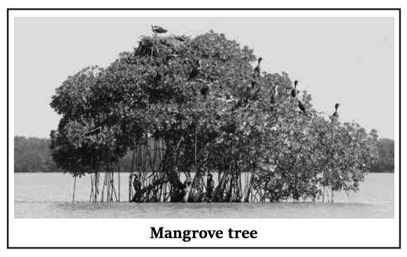
- Mangroves are the characteristic littoral plant formation of tropical and subtropical sheltered coastlines. Mangroves are trees and bushes growing below the high water level of spring tides which exhibits remarkable capacity for salt water tolerance. - FAO.
- 4.8.1. Characteristics of mangroves
- They are basically evergreen land plants growing on sheltered shores, typically on tidal flats, deltas, estuaries, bays, creeks and the barrier islands.
- The best locations are where abundant silt is brought down by rivers or on the backshore of accreting sandy beaches.
- Their physiological adaptation to salinity stress and to water logged anaerobic mud is high.
- They require high solar radiation and have the ability to absorb fresh water from saline/brackish water.
- It produces pneumatophores (blind roots) to overcome respiration problem in the anaerobic soil conditions.
- Pneumatophores
-
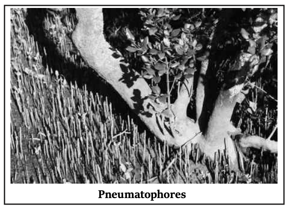
- Mangroves occur in variety of configurations. Some species (e.g. Rhizophora) send arching prop roots down into the water. While other (e.g. Avicennia) send vertical “Pneumatophores” or air roots up from the mud.
- Most mangrove vegetation has lenticellated bank which facilitates more water loss, produces coppices. Leaves are thick and contain salt secreting glands.
- Mangroves exhibit Viviparity mode of reproduction. i.e. seeds germinate in the tree itself (before falling to the ground). This is an adaptative mechanism to overcome the problem of germination in saline water.
- Some secrete excess salt through their leaves as if you look closely, you can see crystals of salt on the back of the leaves; others block absorption of salt at their roots.
- Adventitious roots which emerged from the main trunk of a tree above ground level are called stilt roots.
- Stilt Roots
-
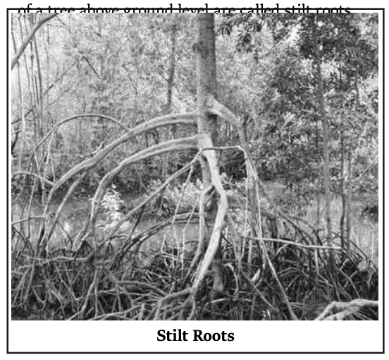
- Do you know?
- The word amphibian means two-lives. Amphibians spend their lives in the water and on land. All amphibians begin their life in water with gills and tails. As they grow, they develop lungs and legs for their life on land. Members of this animal class are frogs, toads, salamanders, newts, and caecilians or blindworms. Amphibians shed their skin as they grow. Usually the shed skin is eaten.
- 4.8.2. Mangrove profile in India
-
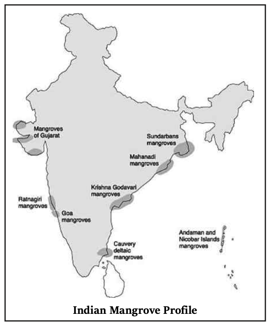
- The mangroves of Sundarbans are the largest single block of tidal holophytic mangroves of the world. The major species of this dense mangrove forest include Herritiera fames, Rhizophora spp., Bruguiera spp., Ceriops decandra, Sonneratia spp. and Avicennia spp., Nypa fruticans are found along the creeks. This mangrove forest is famous for the Royal Bengal Tiger and crocodiles. Mangrove areas are being cleared for agricultural use.
- The mangroves of Bhitarkanika (Orissa), which is the second largest in the Indian sub continent, harbour high concentration of typical mangrove species and high genetic diversity.
- Mangrove swamps occur in profusion in the intertidal mudflats on both side of the creeks in the Godavari-Krishna deltaic regions of Andhra Pradesh.
- Mangroves of Pichavaram and Vedaranyam are degraded mainly due to construction of aquaculture ponds and salt pans.
- On the west coast of India, mangroves, mostly scrubby and degraded occur along the intertidal region of estuaries and creeks in Maharashtra, Goa and Karnataka.
- The mangrove vegetation in the coastal zone of Kerala is very sparse and thin.
- In Gujarat (north-west coast) mangroves Avicennia marine, Avicennia officinalis and Rhizophora mucronata are found mainly in Gulf of Kachchh and the Kori creek.
- Mangroves are of scrubby type with stunted growth, forming narrow, discontinuous patches on soft clayey mud.
- The condition of the mangroves is improving especially in the Kori creek region, which is a paleodelta of the Indus river.
- In size, mangroves range from bushy stands of dwarf mangroves found in Gulf of Kuchchh, to taller stands found in the Sunderbans.
- On the Andaman & Nicobar Islands, the small tidal estuaries, neritic inlets and the lagoons support a dense and diverse undisturbed mangrove flora.
- 4.8.3. Role of mangroves
- Mangrove plants have (additional) special roots such as prop roots, pneumatophores which help to impede water flow and thereby enhance the deposition of sediment in areas (where it is already occurring), stabilize the coastal shores, provide breeding ground for fishes.
- Mangroves moderate monsoonal tidal floods and reduce inundation of coastal lowlands.
- It prevents coastal soil erosion.
- It protects coastal lands from tsunami, hurricanes and floods.
- Mangroves enhance natural recycling of nutrients.
- Mangrove supports numerous flora, avifauna and wild life.
- Provide a safe and favorable environment for breeding, spawning, rearing of several fishes.
- It protects coastal inland from adverse climatic elements.
- It supplies woods, fire wood, medicinal plants and edible plants to local people.
- It provides numerous employment opportunities to local communities and augments their livelihood.
- Fine, anoxic sediments deposited under mangroves act as sinks for a variety of heavy (trace) metals which are scavenged from the overlying seawater by colloidal particles in the sediments. By cleaning our air, they taking in carbon dioxide, storing the carbon in their roots, leaves, branches and in its surrounding silt, and release oxygen back to the atmosphere, along with a little methane gas.
- 4.8.4. Threat
- They are destroyed for conversion of area for agricultural purpose, fuel, fodder and, salinization, minig, oil spills, aquacultural (shrimp farming), use of chemical pesticides & fertilizers, industrial purposes.
- 4.8.5. Mangroves for the Future
- Mangroves for the Future are a partnership-based initiative promoting investment in coastal ecosystems for sustainable development.
- Mission
- To promote healthy coastal ecosystems through a partnership-based, people-focused, policy-relevant and investment-orientated approach, which builds and applies knowledge, empowers communities and other stakeholders, enhances governance, secures livelihoods, and increases resilience to natural hazards and climate change.
-
| Category | Countries |
|---|
| Member Countries | India, Indonesia, Maldives, Pakistan, Seychelles, Sri Lanka, Thailand, Viet Nam |
| Outreach Countries | Bangladesh, Cambodia, Myanmar, Timor-Leste |
| Dialogue Countries | Kenya, Malaysia, Tanzania |
- MFF provides a collaborative platform to help countries, sectors and agencies in the MFF region tackle the growing challenges to coastal sustainability.
- MFF has adopted mangroves as its flagship ecosystem in recognition of the important role that mangrove forests played in reducing the impact of the 2004 Indian Ocean tsunami, and the severe effect on coastal livelihoods caused by the loss and degradation of mangroves.
- However MFF embraces all coastal ecosystems, including coral reefs, estuaries, lagoons, wetlands, beaches and seagrass beds.
- 4.8.6. MISHTI Scheme
- The scheme is known as the "Mangrove Initiative for Shoreline Habitats and Tangible Incomes."
- Within this initiative, both MGNREGA and CAMPA funds will be utilized to create meaningful employment opportunities for individuals, all while concurrently expanding mangrove plantations along the coastlines and in saltpans across the country.
- 4.9. CORAL REEFS
-
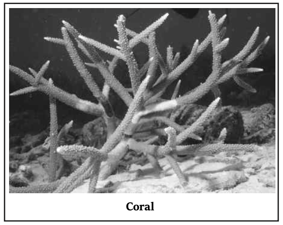
- Coral is actually a living animal. Coral has a symbiotic relationship (each gives something to the other and gets something back in return) with ‘zooxanthellae’ microscopic algae which live on coral [i.e. instead of living on the sea floor, the algae lives up on the coral which is closer to the ocean surface and so that the algae gets adequate light].
- Zooxanthellae assist the coral in nutrient production through its photosynthetic activities. These activities provide the coral with fixed carbon compounds for energy, enhance calcification, and mediate elemental nutrient flux.
- The tissues of corals themselves are actually not the beautiful colors of the coral reef, but are instead clear (white). The corals receive their coloration from the zooxanthellae living within their tissues.
- The host coral polyp in return provides its zooxanthellae with a protected environment to live within, and a steady supply of carbon dioxide for its photosynthetic processes.
- There are two types of corals:
- hard corals and soft corals, such as sea fans and gorgonians. Only hard corals build reefs.
- The builders of coral reefs are tiny animals called polyps. As these polyps thrive, grow, then die, they leave their limestone (calcium carbonate) skeletons behind. The limestone is colonized by new polyps. Therefore, a coral reef is built up of layers of these skeletons covered ultimately by living polyps.
- The reef-building, or hermatypic corals can form a wide range of shapes. Coral reefs may be branched, table-like, or look like massive cups, boulders or knobs.
- While the majority of coral reefs are found in tropical and sub-tropical water, there are also deep water corals in colder regions.
- 4.9.1. Cold Water Corals:
- Cold-water corals inhabit deep, cold (39-55 degrees F), water. The United Nations Environment Programme reports that there are more cold-water coral reefs worldwide than tropical reefs.
- There are only about 6 different coral species associated in building with these reefs. The largest cold-water coral reef is the Rost Reef off Norway.
- 4.9.2. Features
- They occur in shallow tropical areas where the sea water is clean, clear and warm.
- The coral reef cover in Indian waters is roughly estimated upto 19,000 sq. Km.
- Coral reefs are one of the most productive and complex coastal ecosystems with high biological diversity.
- The high productivity is owing to the combination of its own primary production and support from its surrounding habitat.
- Reef building corals are a symbolic association of polyps (coral animals) and ‘zooxanthellae’ (the microscopic algae)
- The corals are generally slow growing colonies of animals while zooxanthellae are fast growing plants.
- Even though corals live in nutrient poor waters, their capability to recycle the scarce nutrients (by the whole nutrient community) is enormous.
- In coral reef ecosystem, many invertebrates, vertebrates, and plants live in close association to the corals, with tight resource coupling and recycling, allowing coral reefs to have extremely high productivity and biodiversity, such that they are referred to as ‘the Tropical Rainforests of the Oceans’.
- 4.9.3. Classification and their location
-
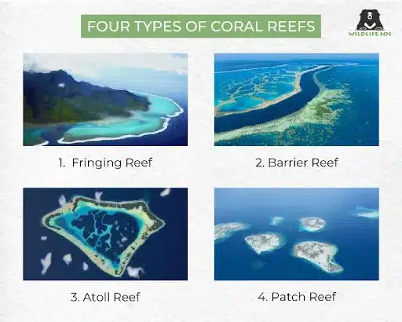
- Fringing
- The fringing reefs are contiguous with the shore and they are the most common - by occurring reef form, found in Andamans.
- Patch
- Patch reefs are isolated and discontinuous patches, lying shoreward of offshore reef structures as seen in the Palk bay, Gulf of Mannar and Gulf of Katchchh.
- Barrier
- Barrier reefs are linear offshore reef structures that run parallel to coastlines and arise from submerged shelf platforms. The water body between the reef and the shore is termed as lagoon. Barrier reefs are seen in Nicobar and Lakshadweep.
- Atolls
- Atolls are circular or semi circular reefs that arise from subsiding sea floor platforms as coral reef building keeps ahead of subsidence. The examples are the atolls of Lakshadweep and Nicobar.
- When the reef building do not keep pace with subsidence, reefs become submerged banks as seen in Lakshadweep.
- Sea grasses grow on Kavaratti atoll, mangroves are prevalent on Andaman and Nicobar coral reefs.
- Among the four major reef areas of India, Andaman and Nicobar Islands are found to be very rich in species diversity followed by the Lakshadweep Islands, the Gulf of Mannar and finally the Gulf of Kachchh.
- Mnemonic to remember coral types:
- A Barrier Toll on Patchy Frige
- A Barrier -> Berrier reef
- Toll -> Atoll reef
- on -> _x
- Patchy -> Patch reef
- Frige -> Fringing reef
- 4.9.4. Functions of Coral Reefs
- Coral reefs are natural protective barriers against erosion and storm surge.
- The coral animals are highly adapted for capturing plankton from the water, thereby capturing nutrients
- Largest biogenic calcium carbonate producer
- They provide substrate for mangroves
- Coral reefs provide habitat for a large variety of animals and plants including avifauna.
- 4.9.5. Threat
- 1. Natural causes may be due to the outbreak of reef destroying mechanisms, “bleaching” and depletion of essential symbiotants.
- 2. Anthrogenic causes – may be due to chemical pollution (pesticides, cosmetics, etc), industrial pollution, mechanical damage, nutrient loading or sediment loading, Dredging, shipping, tourism, mining or collection, thermal pollution, intensive fishimg, etc.
- Coral reef ecosystems world-wide have been subject to unprecedented degradation over the past few decades. Disturbances affecting coral reefs include anthropogenic and natural events. Recent accelerated coral reef decline seems to be related mostly to anthropogenic impacts (overexploitation, overfishing, increased sedimentation and nutrient overloading.
- Natural disturbances which cause damage to coral reefs include violent storms, flooding, high and low temperature extremes, El Nino Southern Oscillation (ENSO) events, subaerial exposures, predatory outbreaks and epizootics.
- 4.9.6. Coral Bleaching
-
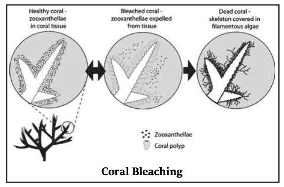
- Bleaching, or the paling of coral colour occurs when:
- (i) The density of zooxanthellae decline
- (ii) The concentration of photosynthetic pigments within the zooxanthellae fall
- 4.9.7. Ecological causes of coral bleaching
- As coral reef bleaching is a general response to stress, it can be induced by a variety of factors, alone or in combination. It is therefore difficult to unequivocally identify the causes for bleaching events. The following stressors have been implicated in coral reef bleaching events.
- Temperature (Major Cause)
- Coral species live within a relatively narrow temperature margin, and anomalously low and high sea temperatures can induce coral bleaching. Bleaching is much more frequently reported from elevated sea water temperature. Bleaching events also occur during sudden temperature drops accompanying intense upwelling episodes, seasonal cold-air outbreaks.
- Solar Irradiance
- Bleaching during the summer months, during seasonal temperature and irradiance maxima often occurs disproportionately in shallow-living corals and on the exposed summits of colonies. Solar radiation has been suspected to play a role in coral bleaching. Both photosyntheticaly active radiation (PAR, 400-700nm) and ultraviolet radiation (UVR, 280-400nm) have been implicated in bleaching.
- Subaerial Exposure
- Sudden exposure of reef flat corals to the atmosphere during events such as extreme low tides, ENSO-related sea level drops or tectonic uplift can potentially induce bleaching.
- Sedimentation
- Relatively few instances of coral bleaching have been linked solely to sediment. It is possible, but has not been demonstrated, that sediment loading could make zooxanthellate species more likely to bleach.
- Fresh Water Dilution
- Rapid dilution of reef waters from storm-generated precipitation and runoff has been demonstrated to cause coral reef bleaching. Generally, such bleaching events are rare and confined to relatively small, nearshore areas.
- Inorganic Nutrients
- Rather than causing coral reef bleaching, an increase in ambient elemental nutrient concentrations (e.g. ammonia and nitrate) actually increases zooxanthellae densities 2-3 times. Although eutrophication is not directly involved in zooxanthellae loss, it could cause secondary adverse affects such as lowering of coral resistance and greater susceptibility to diseases.
- Xenobiotics
- Zooxanthellae loss occurs during exposure of coral to elevated concentrations of various chemical contaminants, such as Cu, herbicides and oil. Because high concentrations of xenobiotics are required to induce zooxanthellae loss, bleaching from such sources is usually extremely localized and / or transitory.
- Epizootics
- Pathogen induced bleaching is different from other sorts of bleaching. Most coral diseases cause patchy or whole colony death and sloughing of soft tissues, resulting in a white skeleton (not to be confused with bleached corals). A few pathogens have been identified the cause translucent white tissues, a protozoan.
- Do you know?
- All spiders produce silk but not all spiders spin webs. Silk is used for climbing, to create webs, to build smooth walls in burrows, build egg sacs, and wrap prey.
- 4.10 GOVERNMENT MEASURES TO PROTECT MANGROVE FOREST AND CORAL REEFS (OR COASTAL ECOSYSTEM)
- CRZ & IPZ
- Under the regulatory measures, the Coastal Regulation Zone (CRZ) Notification (2011) and the Island Protection Zone (IPZ) Notification 2011 regulates the development activities along the Sea coast and tidal influenced water bodies.
- Categorized as ecological sensitive areas
- The mangroves and coral reefs areas are categorized as ecological sensitive areas (CRZ-I) where no new constructions are permitted except projects relating to Department of Atomic Energy; pipelines, conveying systems including transmission lines; installation of weather radar for monitoring of cyclones movement and prediction by Indian Meteorological Department and construction of trans harbour sea link and without affecting the tidal flow of water.
- Management Authorities
- To enforce and implement the CRZ and IPZ Notifications, the Ministry of Environment and Forests has constituted the National and State/UT level Coastal Zone Management Authorities.
- Financial assistance
- The Ministry of Environment & Forests also provides financial assistance to Coastal States/Union Territories, who so request, under its Centrally Sponsored Scheme for conservation and management of mangroves and coral reef.
- Protection under Wild Life Protection Act, 1972
- In addition Coral reef is included in Schedule I of the Wild Life Protection Act, 1972 which affords it the highest degree of protection.
- Further Protected Areas, viz.4 National Parks, 96 Sanctuaries and 3 Marine Biosphere Reserve have been created all over the country under the provisions of the Wild Life (Protection) Act, 1972 to conserve marine life including coral reef.
- Wildlife Crime Control Bureau
- The Wildlife Crime Control Bureau has also been set up to strengthen the enforcement of law for control of poaching and illegal trade in wildlife and its products.
- Do you know?
- The Ministry has partnered with the United Nations Development Programme (UNDP) in a global project on Biodiversity Finance Initiative (BIOFIN).
- India updated its National Biodiversity Action Plan (NBAP) and also developed 12 National Biodiversity Targets in 2014 in line with 20 global Aichi biodiversity targets.
- 4.10. KEY INITIATIVES TO PROTECT MARINE AND COASTAL ENVIRONMENTS
- 4.10.1. Coastal Ocean Monitoring and Prediction System (COMAPS)
- Being implemented from 1991.
- Assesses the health of coastal waters and facilitates management of pollution-related issues
- Programme was restructured and modified in 2000–2001 to include pollution monitoring; liaison, regulation and legislation; and consultancy services.
- 4.10.2. Land Ocean Interactions in the Coastal Zone (LOICZ)
- Launched in 1995
- Investigates the effects of global change on the coastal zone
- Aims to develop, on a scientific basis, the integrated management of coastal environments
- 4.10.3. Integrated Coastal and Marine Area Management (ICMAM)
- Launched in 1998
- Aims at integrated management of coastal and marine areas.
- Model plans for Chennai, Goa and Gulf of Kutch being prepared
- 4.10.4. Society of Integrated Coastal Management (SICOM)
- Launched in 2010
- Major national initiative to protect coastal ecosystems
- A professional body with experts in various aspects of coastal science and management
- 4.10.5. Institutions for Coastal Management
- The Notification on Coastal Regulation Zone (CRZ), 1991 (as amended from time to time) aims at protecting coastal stretches in India.
- India has created institutional mechanisms such as National Coastal Zone Management Authority (NCZMA) and State Coastal Zone Management Authority (SCZMA) for enforcement and monitoring of the CRZ Notification.
- These authorities have been delegated powers under Section 5 of the Environmental (Protection) Act, 1986 to take various measures for protecting and improving the quality of the coastal environment and preventing, abating and controlling environmental pollution in coastal areas.
- Do you know?
- Male snakes will try to attract a female by doing a type of ‘play fighting’ with other males to gain female attention. They do not try to kill each other. just win the fight!
- 4.11 COASTAL REGULATION ZONE
- CRZ notification was issued in 1991 with the objective to protect the coastal zone and regulate the development activities. It got amended in 2011 and again in 2018.
- CRZ has four zones:
- CRZ-I (ecologically sensitive)
- CRZ-II (built-up area)
- CRZ-III (rural area)
- CRZ-IV (water area)
- CRZ-I
- (i) Ecologically sensitive areas and the geomorphological features that play a primary role in maintaining the integrity of the coast.
-
| Feature | Description |
|---|
| Mangroves | In case mangrove area is more than 1000 square metres, a buffer area of 50 metres shall be provided. |
| Corals and coral reefs | And associated biodiversity. |
| Sand Dunes | |
| Mudflats | Which are biologically active. |
| Protected areas | National parks, marine parks, sanctuaries, reserve forests, wildlife habitats and other protected areas under the provisions of Wild Life (Protection) Act, 1972, the Forest (Conservation) Act, 1980 or Environment (Protection) Act, 1986; including Biosphere Reserves encompassing. |
| Salt Marshes | |
| Turtle nesting grounds | |
| Horseshoe crabs habitats | |
| Sea grass beds | |
| Nesting grounds of birds | |
| Archaeological and heritage sites | Areas or structures of archaeological importance and heritage sites. |
- (ii) The area between Low Tide Line and High Tide Line.
- CRZ-II
- The areas which are developed up to or close to the shoreline and falling within municipal limits.
- CRZ-III
- The areas that are relatively undisturbed and do not fall under either in Category I or II and also include rural and urban areas that are not substantially developed.
- CRZ-IV
- The aquatic area from low tide line up to territorial limits including the area of the tidal influenced water body.
- Significant provisions in the Coastal Regulation Zone Notification, 2011
-
| S.No. | Provision | Description |
|---|
| 1 | Regulation of water areas | The entire water area which includes 12 nautical miles in the sea and the entire water area of a tidal water body such as creek, river, estuary will be regulated by the Notification. |
| 2 | Hazard line | In order to safeguard livelihood and property of local communities including the infrastructure along the coastal areas the hazard line has been introduced which will be demarcated by the offices of the Survey of India. |
| 3 | Special dispensation | Keeping in view the environmental and social issues, special dispensation has been provided to Greater Mumbai, Kerala, Goa and Critically Coastal Vulnerable Areas such as the Sunderban. |
| 4 | Shoreline mapping | In view of the erosion experienced along the coastal areas due to man-made interventions the shoreline will be mapped using up-to-date satellite images and the shorelines will then be subsequently classified as 'high eroding', 'medium eroding' and 'low or stable stretches'. No foreshore development would be permissible in high eroding areas. |
| 5 | Reduction of No Development Zone | To meet the increasing demands of housing for fishing communities and other traditional coastal communities, the No Development Zone which is of 200 metres from the High Tide Line is being reduced to 100m. |
- 4.11.1. ACTIVITIES PERMITTED AND RESTRICTED IN CRZ
- CRZ-I
- The activities permitted in CRZ-I under the 2011 Notification are
- (i) No new construction shall be permitted in CRZ-I except:
-
| Activity | Description |
|---|
| Department of Atomic Energy projects | Projects relating to the Department of Atomic Energy. |
| Pipelines and conveying systems | Pipelines, conveying systems including transmission lines. |
| Essential facilities | Facilities that are essential for activities permissible under CRZ-I. |
| Weather radar | Installation of weather radar for monitoring of cyclones movement and prediction by the Indian Meteorological Department. |
| Trans-harbour sea links and roads | Construction of trans-harbour sea link and roads on stilts or pillars without affecting the tidal flow of water, between LTL and HTL. |
| Green field airport | Development of green field airport already permitted at only Navi Mumbai. |
- (ii) Between Low Tide Line and High Tide Line in areas which are not ecologically sensitive, the following may be permitted:
-
| Activity | Description |
|---|
| Exploration and extraction | Exploration and extraction of natural gas. |
| Community infrastructure | Construction of dispensaries, schools, public rain shelter, community toilets, bridges, roads, jetties, water supply, drainage, sewerage which are required to meet the needs of traditional inhabitants living within the biosphere reserves after obtaining approval from concerned CZMA. |
| Salt harvesting | Salt harvesting by solar evaporation of seawater. |
| Desalination plants | |
| Storage of non-hazardous cargo | Storage of non-hazardous cargo such as edible oil, fertilizers and food grain within notified ports. |
| Trans-harbour sea links and roads | Construction of trans-harbour sea links, roads on stilts or pillars without affecting the tidal flow of water. |
- CRZ-II
- Buildings are permissible on the landward side of the existing road, authorized structure or hazardous line where there are no authorised structures. Other activities such as desalination plants and storage of non-hazardous cargo are also permissible.
- CRZ-III
- The provisions of CRZ-III has undergone changes with the CRZ 2018 notification.
- CRZ-IV
- In CRZ-IV areas, there is no restriction on the traditional fishing and allied activities undertaken by local communities. However, no untreated sewage, effluents or solid waste shall be let off or dumped in these areas. A comprehensive plan for treatment of sewage generating from the city must be formulated.
- 4.11.2. CRZ Notification, 2018
- Dr. Shailesh Nayak Committee (Secretary, Ministry of Earth Sciences) constituted in June 2014 to examine the various issues and concerns of Coastal States/UTs and other stakeholders for recommending appropriate changes in the CRZ Notification, 2011.
- Government stated that CRZ Notification, 2018 will meet the aspirations of Coastal communities besides ensuring welfare of poor and vulnerable populations. It will also add to creating additional opportunities for affordable housing and the people at large looking for shelter. Tourism has been one of the greatest creators of livelihood and jobs. The new Notification will boost tourism.
- The Notification is so designed that it balances the needs in such a way that both, promoting economic growth and also the conservation principles of coastal regions are fulfilled.
- Salient Features
-
| S.No. | Feature | Description |
|---|
| 1 | Allowing FSI as per current norms | As per CRZ, 2011 Notification, for CRZ-II (Urban) areas, Floor Space Index (FSI) or the Floor Area Ratio (FAR) had been frozen as per 1991 Development Control Regulation (DCR) levels. In the CRZ, 2018 Notification, it has been decided to de-freeze the same and permit FSI for construction projects, as prevailing on the date of the new Notification. This will enable redevelopment of these areas to meet the emerging needs. |
| 2 | Densely populated rural areas | For CRZ-III (Rural) areas, two separate categories have now been stipulated as below: (a) CRZ-III A - These are densely populated rural areas with a population density of 2161 per square kilometre as per 2011 Census. Such areas shall have a No Development Zone (NDZ) of 50 meters from the HTL as against 200 meters from the High Tide Line stipulated in the CRZ Notification, 2011 since such areas have similar characteristics as urban areas. (b) CRZ-III B - Rural areas with population density of below 2161 per square kilometre as per 2011 Census. Such areas shall continue to have an NDZ of 200 meters from the HTL. |
| 3 | Tourism infrastructure | Temporary tourism facilities such as shacks, toilet blocks, change rooms, drinking water facilities etc. have now been permitted in Beaches. Such temporary tourism facilities are also now permissible in the "No Development Zone" (NDZ) of the CRZ-III areas as per the Notification. However, a minimum distance of 10 m from HTL should be maintained for setting up of such facilities. |
| 4 | Streamlined CRZ clearances | The procedure for CRZ clearances has been streamlined. Only such projects/activities, which are located in the CRZ-I (Ecologically Sensitive Areas) and CRZ IV (area covered between Low Tide Line and 12 Nautical Miles seaward) shall be dealt with for CRZ clearance by the Ministry of Environment, Forest and Climate Change. The powers for clearances with respect to CRZ-II and III have been delegated at the State level with necessary guidance. |
| 5 | NDZ for islands | A No Development Zone (NDZ) of 20 meters has been stipulated for all Islands: For islands close to the main land coast and for all Backwater Islands in the main land, in wake of space limitations and unique geography of such regions, bringing uniformity in treatment of such regions, NDZ of 20 m has been stipulated. |
| 6 | Ecologically Sensitive Areas | All Ecologically Sensitive Areas have been accorded special importance: Specific guidelines related to their conservation and management plans have been drawn up as a part of the CRZ Notification. |
| 7 | Pollution abatement | In order to address pollution in Coastal areas treatment facilities have been made permissible activities in CRZ-I B area subject to necessary safeguards. |
| 8 | Defence and strategic projects | Defence and strategic projects have been accorded necessary dispensation. |
- 4.12 COASTAL ECOSYSTEMS
- 4.12.1. Coastal Ocean Monitoring and Prediction System (COMAPS)
- Being implemented from 1991.
- Assesses the health of coastal waters and facilitates management of pollution-related issues.
- Programme was restructured and modified in 2000-2001 to include pollution monitoring; liaison, regulation and legislation; and consultancy services.
- 4.12.2. Land Ocean Interactions in the Coastal Zone (LOICZ)
- Launched in 1995.
- Investigates the effects of global change on the coastal zone.
- Aims to develop, on a scientific basis, the integrated management of coastal environments.
- 4.12.3. Integrated Coastal and Marine Area Management (ICMAM)
- Launched in 1998.
- Aims at integrated management of coastal and marine areas.
- Model plans for Chennai, Goa and Gulf of Kutch being prepared.
- 4.12.4. Institutions for Coastal Management
- India has created institutional mechanisms such as National Coastal Zone Management Authority (NCZMA) and State Coastal Zone Management Authority (SCZMA) for enforcement and monitoring of the CRZ Notification.
- These authorities have been delegated powers under Section 5 of the Environmental (Protection) Act, 1986 to take various measures for protecting and improving the quality of the coastal environment and preventing, abating and controlling environmental pollution in coastal areas.
- 4.12.5. Integrated Coastal Zone Management
- The concept of ICZM was introduced in 1992 during the Earth Summit at Rio de Janeiro and most of the coastal countries in the World have been adopting ICZM principles for managing their coastal zones.
- With a view to protect and conserve the coastal and marine ecosystems and environment through a holistic coastal management, MoEF & CC launched the Integrated Coastal Zone Management (ICZM) activities in India for a holistic approach with an interactive, dynamic, multidisciplinary, and iterative planning process to promote sustainable development & management of coastal zones through its own wing SICOM.
- 4.12.6. SICOM
- Society of Integrated Coastal Management (SICOM) has been established in 2010 under MoEF&CC with a vision for vibrant, healthy and resilient Coastal and Marine Environment for continuous and enhanced outflow of benefits to the Country and the Coastal Community.
- SICOM acts as Nodal agency for strategic planning, management, execution, monitoring and implementation of Integrated Coastal Zone Management (ICZM) practices in across the country and National Project Management Unit (NPMU) for the ICZM Project and Enhancing Coastal and Ocean Resource Efficiency Project (ENCORE), a world bank project in all the 13 Coastal States/UTs.
- To act as a technical Secretariat to the National Coastal Zone Management Authority (NCZMA) related to regulatory provisions and CRZ classification of coastal stretches of the country.
- SICOM has also embarked upon the Pilot Blue Flag Programme, a first in India under Beach Environment & Aesthetic Management Services (BEAMS) for development of world class Beaches in India.
- Capacity building of Coastal State Units in planning, implementation and management of Integrated Coastal Zone Management programs.
- Serving as an interface among coastal communities, experts, and governments, including providing with and disseminating examples of best practices and guidelines for coastal and marine ecological security and livelihood security of coastal and island communities.
- India launched beach cleaning campaign - I-AM-SAVING-MY-BEACH on World Environment Day in 2018 simultaneously at 13 coastal states.
- International Coastal Cleanup Day was started in 1986 by Linda Maraniss and Kathy O'Hara. They along with ocean lovers organized a Cleanup for Ocean Conservancy. Since then, the Cleanup has grown into an international event in more than 100 countries.
- 4.12.7. BEAMS
- In its pursuit of "Sustainable Development" of the coastal regions, SICOM, MoEFCC, launched a flagship program "BEAMS" (Beach Environment & Aesthetics Management Services) under its ICZM (Integrated Coastal Zone Management) project.
- The objective of the BEAMS program is to abate pollution in coastal waters & beaches, promote sustainable development of beach amenities/facilities, protect & conserve coastal ecosystems & natural resources and encourage local authorities & stakeholders to strive and maintain high standards of cleanliness, hygiene, safety and security for beachgoers in accordance with coastal environment norms & regulations.
- This program promotes beach tourism and recreation in absolute harmony with nature; and is unique in that sense.
- This was aimed at striving for the coveted International eco-label "Blue Flag", accorded by The Foundation of Environment Education, FEE Denmark.
- 4.12.8. Blue Flag Certification
- 'Blue Flag' certification is a voluntary award for beaches, marinas, and sustainable boating tourism operators and serves as an eco-label.
- Blue Flag certification is a globally recognised eco-label accorded by non-profit "Foundation for Environment Education in Denmark" based on 33 stringent criteria.
- The Blue Flag programme was started in France in 1985 and in areas out of Europe in 2001. The programme promotes sustainable development in freshwater and marine areas through four main criteria: water quality, environmental management, environmental education and safety.
- It is awarded annually to beaches and marinas in FEE member countries.
- Forty-seven countries currently participate in the program, and 4,573 beaches, marinas, and boats have this certification.
- Owners/operators of beaches, marinas and boats are awarded the right to display the Blue Flag.
- Blue Flag certified beaches in India are Kappad (Kerala), Shivrajpur (Gujarat), Ghoghla (Diu), Kasarkod and Padubidri (Karnataka), Rushikonda (Andhra Pradesh), Golden (Odisha) and Radhanagar (Andaman & Nicobar Islands), Kovalam in Tamil Nadu, Eden in Puducherry, Minicoy Thundi in Lakshadweep and Kadmat beach in Lakshadweep.
-
| Beach | Location |
|---|
| Kappad | Kerala |
| Shivrajpur | Gujarat |
| Ghoghla | Diu |
| Kasarkod | Karnataka |
| Padubidri | Karnataka |
| Rushikonda | Andhra Pradesh |
| Golden | Odisha |
| Radhanagar | Andaman & Nicobar Islands |
| Kovalam | Tamil Nadu |
| Eden | Puducherry |
| Minicoy Thundi | Lakshadweep |
| Kadmat | Lakshadweep |
- The following activities and facilities would be permitted in the CRZ of the beaches, including islands, subject to maintaining a minimum distance of 10 meters from the High Tide Line (HTL):
-
| Activity/Facility | Description |
|---|
| Portable toilet blocks | |
| Change rooms and shower panels | |
| Grey water treatment plant | |
| Solid waste management plant | |
| Solar power plant | |
| Purified drinking water facility | |
| Beach access pathways | |
| Landscaping lighting | |
| Seating benches and sit-out umbrellas | |
| Outdoor play/fitness equipment | |
| CCTV surveillance and control room | |
| First aid station | |
| Cloak room facility | |
| Safety watch towers and beach safety equipment | |
| Beach layout, environment information boards and other signages | |
| Fencing, preferably vegetative | |
| Parking facilities | |
| Entry gate, tourist facilitation centre | |
| Other associated facilities or infrastructure | As per requirements of Blue Flag Certification. |
- These activities and facilities would be exempt from prior clearance under the provisions of CRZ Notification, Island Protection Zone Notification and Island Coastal Regulation Zone Notifications.
- 4.13 ISLAND PROTECTION ZONE NOTIFICATION, 2011
- Why is a separate Island Protection Zone Notification, 2011 required?
- There are about 500 islands in Andaman & Nicobar and about 30 in Lakshadweep. These two groups of oceanic islands are home to some of the country's most thriving biodiversity hotspots. The A&N Islands are known for their terrestrial and marine biodiversity including forest area which covers 85% of the Andaman and Nicobar geographical area, while, Lakshadweep is a coral island. The geographical areas of these islands are so small that in most of the cases the 500 metres Coastal Regulation Zone regulations overlap. Hence, a separate Notification is being issued which takes into account the management of the entire island (except for four islands of A&N which include North Andaman, Middle Andaman, South Andaman and Great Nicobar).
- The main objectives of the IPZ Notification, 2011 are:
-
| S.No. | Objective |
|---|
| 1 | To ensure livelihood security to the fishing communities, tribals and other local communities living in the coastal areas. |
| 2 | To conserve and protect coastal stretches. |
| 3 | To promote development in a sustainable manner based on scientific principles, taking into account the dangers of natural hazards in the coastal areas and sea level rise due to global warming. |
- 4.14. GANGA ACTION PLAN
- The Ganga Action Plan was launched on 14th January 1986 with the main objective of pollution abatement, to improve water quality by interception, diversion and treatment of domestic sewage and toxic and industrial chemical wastes present, from identified grossly polluting units entering in to the river.
- Mission Clean Ganga
- After reviewing the effectiveness of the “Ganga Action Plan”, the Government announced the “Mission Clean Ganga” project on 31st December, 2009 with the objective that by 2020, no municipal sewage and industrial waste would be released in the river without treatment, with the total budget of around Rs.15,000 crore.
- National Ganga River Basin Authority (NGRBA)
- The Government also established the National Ganga River Basin Authority (NGRBA), chaired by the Prime Minister, with the objective to ensure effective abatement of pollution and conservation of the river Ganga, by adopting a river basin approach for comprehensive planning and management.
- 4.15. NAMAMI GANGA PROGRAM
- Accordingly, an Integrated Ganga Conservation Mission called “Namami Gange” has been proposed to be set up and a sum of Rs. 2,037 crores has been set aside for the purpose of conservation and improvement of the Ganga.
- In addition a sum of Rs. 100 crores has been allocated for developments of Ghats and beautification of River Fronts at Kedarnath, Haridwar, Kanpur, Varanasi, Allahabad, Patna and Delhi in the current financial year.
- Accordingly, Namami Gange approaches Ganga Rejuvenation by consolidating the existing ongoing efforts and planning for a concrete action plan for future.
- The interventions at Ghats and River fronts will facilitate better citizen connect and set the tone for river centric urban planning process.
- Following are proposed to be taken up under Namami Gange program:
- (i) Nirmal Dhara- ensuring sustainable municipal sewage management
- Project prioritization in coordination with Ministry of Urban Development.
- Incentive for states to take up projects on Ganga Main-stem by providing an additional share of central grants for sewerage infrastructure.
- Uniform standards for both MoUD scheme and Namami Gange programme, 10 years mandatory O&M by the same service provider at par with NGRBA programme and PPP, Mandatory reuse of treated water
- Expanding coverage of sewerage infrastructure in 118 urban habitations on banks of Ganga- estimated cost by MoUD is Rs 51000 Crores
- (ii) Nirmal Dhara- managing sewage from Rural Areas
- Ministry of Drinking Water and Sanitation scheme for all Ganga bank Gram Panchayts (1632) free from open defecation by 2022, at a cost of Rs 1700 Crores as central share
- (iii) Nirmal Dhara- managing Industrial discharge
- Making Zero Liquid Discharge mandatory
- Rationalized water tariff to encourage reuse
- Real time water quality monitoring
- (iv) Aviral Dhara
- Enforcing River Regulatory Zones on Ganga Banks
- Rational agricultural practices, efficient irrigation methods
- Restoration and conservation of wetlands
- (v) Ecological rejuvenation
- Ensuring ecological rejuvenation by conservation of aquatic life and biodiversity
- (vi) Tourism and Shipping
- Promotion of Tourism and Shipping in a rational and sustainable manner
- (vii) Ganga Knowledge Centre
- Knowledge Management on Ganga through Ganga Knowledge Centre leading to a Ganga University of River Sciences
- 4.15.1.NRI Ganga Fund
- NRIs have been a very important contributor to the development process in India, in areas such as education, health and preservation of culture. In this context, to harness their enthusiasm to contribute towards the conservation of the river Ganga, NRI Fund for Ganga will be set up which will finance special projects. NRI Ganga Fund could be setup under the aegis of Ministry of Overseas Indian Affairs or Ministry of Finance with focus on funds sourcing and corpus management.
- 4.15.2. CLEAN GANGA FUND
- The main features of “Clean Ganga Fund (CGF)” are:
- Considering that there is a need to increase people’s participation from across the country and abroad, it is proposed to set up a “Clean Ganga Fund (CGF)” with voluntary contributions.
- CGF will have the objective of contributing to the national effort of improving the cleanliness of the river Ganga with the contributions received from the residents of the country, NRIs/ PIO and others.
- CGF will be operated through a bank account by a Trust to be headed by the finance minister. The secretariat of the Trust will be set up in Ministry of Water Resources, River Development and Ganga Rejuvenation under the Mission Director, Clean Ganga.
- Domestic donors to the fund shall be eligible for tax benefits as in the case of “Swachch Bharat Kosh”. Foreign donors could get suitable tax exemptions in domestic law, wherever permissible.
- CGF will explore the possibility of setting up daughter funds in other jurisdictions/countries of high donor interest such as USA, UK, Singapore, UAE, etc. to enable tax benefits to donors in their respective jurisdictions.
- CGF will be catalytic in nature and will identify and fund specific projects which could be pilot projects, R&D projects, innovative projects or other focused projects. The Fund will define specific and measurable objectives to form the basis for planning, funding, and evaluation.
- Broad activities that will be financed from the Clean Ganga Fund (CGF) Fund are:
- Activities outlined under the ‘Namami Gange’ programme for cleaning of river Ganga.
- Control of non-point pollution from agricultural runoff, human defecation, cattle wallowing, etc.
- Setting up of waste treatment and disposal plants along the river around the cities.
- Conservation of the biotic diversity of the river.
- Community based activities to reduce polluting human interface with the river.
- Development of public amenities including activities such as Ghat redevelopment.
- Research and Development and innovative projects.
- Research and Development projects and innovative projects for new technology and processes for cleaning the river.
- Independent oversight through intensive monitoring and real time reporting.
- Any other activity as approved by the Trust.
- Recent Measures
- Union Environment Ministry has taken up a new strategy for conservation and rejuvenation of major river water systems. The new strategy takes into account the entire river basin, which is contributing its flow to the particular river stretch for conservation.
- The present strategy for conservation of rivers is limited only to tackling pollution load from domestic wastewater and regulation of industrial pollution. The new approach is a holistic one for rejuvenation of rivers, wherein water management and environment management are taken together for implementation to restore the lost ecology of the polluted stretches of the rivers.
- 4.16 Arth Ganga
- Arth Ganga signifies a sustainable development approach centered around economic activities linked to the Ganga river.
- The first component encompasses Zero Budget Natural Farming, advocating for chemical-free agriculture along both sides of the river for a distance of 10 kilometers, along with the promotion of cow dung as a natural fertilizer through the Gobardhan scheme.
- The second aspect focuses on the Monetization and Reutilization of Sludge & Wastewater. It aims to repurpose treated water for agricultural use, industrial purposes, and generating revenue for Urban Local Bodies (ULBs).
- Arth Ganga will also create opportunities for livelihood generation by establishing local markets (haats) where people can sell their regional products, including medicinal plants and Ayurvedic items.
- The fourth element emphasizes enhancing public participation by fostering greater collaboration among the various stakeholders connected with the Ganga river.
- The model strives to bolster the cultural heritage and tourism in the Ganga and its surroundings. This will be achieved through activities such as boat tourism, adventure sports, and the organization of yoga events.
- The model aims to promote institutional development by empowering local administrations to enhance water governance practices.
- Do you know?
- The Union Ministry of Ganga Rejuvenation has entrusted a pilot project to the Wildlife Institute of India (WII) to work towards the restoration of select aquatic species that thrive in the Ganga. The three year project will cost Rs. 25 crore and a Ganga Aqualife Conservation Monitoring Centre will also be set up under WII as part of it.
- CHAPTER 5: ENVIRONMENTAL POLLUTION
- Pollution is defined as ‘an addition or excessive addition of certain materials to the physical environment (water, air and lands), making it less fit or unfit for life’.
- 5.1. POLLUTANTS
- Pollutants are the materials or factors, which cause adverse effect on the natural quality of any component of the environment.
- For example, smoke from industries and automobiles, chemicals from factories, radioactive substances from nuclear plants, sewage of houses and discarded household articles are the common pollutants.
- 5.1.1. Classifications
- (i) According to the form in which they persist
- Primary pollutants:
- These persist in the form in which they are added to the environment e.g. DDT, plastic.
- Secondary Pollutants:
- These are formed by interaction among the primary pollutants.
- For example, peroxyacetyl nitrate (PAN) is formed by the interaction of nitrogen oxides and hydrocarbons.
- (ii) According to their existence in nature
- Quantitative Pollutants:
- These occur in nature and become pollutant when their concentration reaches beyond a threshold level. E.g. carbon dioxide, nitrogen oxide.
- Qualitative Pollutants:
- These do not occur in nature and are man-made. E.g. fungicides, herbicides, DDT etc.
- (iii) According to their nature of disposal
- Biodegradable Pollutants:
- Waste products, which are degraded by microbial action. E.g. sewage.
- Non-biodegradable Pollutants:
- Pollutants, which are not decomposed by microbial action. E.g. plastics, glass, DDT, salts of heavy metals, radioactive substances etc.
- (iv) According to origin
- Natural
- Anthropogenic
- 5.1.2. Causes of pollution
- Uncontrolled growth in human population
- Rapid industrialization
- Urbanization
- Uncontrolled exploitation of nature.
- Forest fires, radioactivity, volcanic eruptions, strong winds etc.
- 5.2. AIR POLLUTION
- Air pollution is aggravated because of four developments:
- increasing traffic, growing cities, rapid economic development, and industrialization.
- ‘The presence in the atmosphere of one or more contaminants in such quality and for such duration as it is injurious, or tends to be injurious, to human health or welfare, animal or plant life.’
- It is the contamination of air by the discharge of harmful substances.
- Air pollution can cause health problems, damage the environment, property and climate change.
- 5.2.1. Major air pollutants and their sources
- Carbon monoxide (CO)
- It is a colourless, odourless gas that is produced by the incomplete burning of carbon-based fuels including petrol, diesel, and wood.
- It is also produced from the combustion of natural and synthetic products such as cigarettes.
- It lowers the amount of oxygen that enters our blood.
- It can slow our reflexes and make us confused and sleepy.
- Carbon dioxide (CO2)
- It is the principle greenhouse gas emitted as a result of human activities such as the burning of coal, oil, and natural gases.
- Sulphur dioxide (SO2)
- It is a gas produced from burning coal, mainly in thermal power plants.
- Some industrial processes, such as production of paper and smelting of metals, produce sulphur dioxide.
- It is a major contributor to smog and acid rain. Sulfur dioxide can lead to lung diseases.
- Chloroflorocarbons (CFC)
- These are gases that are released mainly from air-conditioning systems and refrigeration.
- When released into the air, CFCs rise to the stratosphere, where they come in contact with few other gases, which lead to a reduction of the ozone layer that protects the earth from the harmful ultraviolet rays of the sun.
- Chlorofluorocarbons (CFCs) were widely used because of their stability, non-flammability, and low toxicity, but their biggest drawback was their role in ozone depletion. Their uses included:
- Refrigerants:
- In refrigerators, freezers, and air conditioners (as coolants).
- Low boiling point:
- CFCs like Freon-12 boil at very low temperatures (around –30 °C), making them ideal for absorbing heat inside refrigerators and air conditioners.
- High latent heat of vaporization:
- They can absorb a lot of heat while changing from liquid to gas, which improves cooling efficiency.
- Easily liquefied under pressure:
- Allowed simple compressor systems without needing complex engineering.
- Aerosol propellants:
- In spray cans for deodorants, insecticides, paints, etc.
- Foam blowing agents:
- For making foams like polyurethane and polystyrene (e.g., packaging, insulation).
- Solvents & cleaners:
- For cleaning electronic components and delicate instruments.
- Fire extinguishers:
- Some specialized halon systems contained CFC derivatives.
- Reaction with ozone:
- CFCs (Chlorofluorocarbons) release chlorine atoms when exposed to UV radiation in the stratosphere.
- Stepwise reactions:
- \( \ce{CFCl3 ->[UV] CFCl2 + Cl^.} \)
- \( \ce{Cl^. + O3 -> ClO^. + O2} \)
- \( \ce{ClO^. + O^. -> Cl^. + O2} \)
- Net reaction:
- \( \ce{O3 + O^. -> 2 O2} \)
- Here, the chlorine radical \( \ce{Cl^.} \) acts as a catalyst, continuously destroying ozone molecules.
- Lead
- It is present in petrol, diesel, lead batteries, paints, hair dye products, etc. Lead affects children in particular.
- It can cause nervous system damage and digestive problems and, in some cases, cause cancer.
- 5.2.2. Smog
-
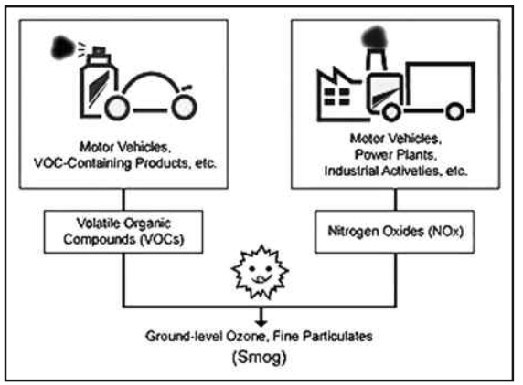
- The term smog was first used (1905) by Dr H A Des Voeux
- Smog has been coined from a combination of the words fog and smoke. Smog is a condition of fog that had soot or smoke in it.
- The Formation of Smog
- Photochemical smog (smog) is a term used to describe air pollution that is a result of the interaction of sunlight with certain chemicals in the atmosphere.
- One of the primary components of photochemical smog is ozone.
- Ozone
- While ozone in the stratosphere protects earth from harmful UV radiation, ozone on the ground is hazardous to human health.
- It occurs naturally in the upper layers of the atmosphere.
- This important gas shields the earth from the harmful ultraviolet rays of the sun.
- However, at the ground level, it is a pollutant with highly toxic effects.
- Vehicles and industries are the major source of ground-level ozone emissions.
- Ground-level ozone is formed when vehicle emissions containing nitrogen oxides (primarily from vehicle exhaust) and volatile organic compounds (from paints, solvents, printing inks, petroleum products, vehicles, etc.) interact in the presence of sunlight.
- Ozone makes our eyes itch, burn, and water. It lowers our resistance to cold and pneumonia.
- Nitrogen oxide (Nox)
- It causes smog and acid rain. It is produced from burning fuels including petrol, diesel, and coal.
- Nitrogen oxide can make children susceptible to respiratory diseases in winters.
- Suspended particulate matter (SPM)
- It consists of solids in the air in the form of smoke, dust, and vapour that can remain suspended for extended periods and is also the main source of haze which reduces visibility.
- The finer of these particles, when breathed in can lodge in our lungs and cause lung damage and respiratory problems.
- Smog refers to hazy air that causes difficult breathing conditions. It is a combination of various gases with water vapour and dust.
- Its occurrences are often linked to heavy traffic, high temperatures, and calm winds. During the winter, wind speeds are low and cause the smoke and fog to stagnate near the ground; hence pollution levels can increase near ground level.
- Smoke particles trapped in the fog gives it a yellow/black colour and this smog often settled over cities for many days.
- Ground-level ozone is formed through a complex reaction involving hydrocarbons, nitrogen oxides, and sunlight. It is formed when pollutants released from gasoline, diesel-powered vehicles and oil-based solvents react with heat and sunlight.
- The effects of smog
- It hampers visibility and harms the environment.
- respiratory problems
- deaths relating to bronchial diseases.
- Heavy smog greatly decreases ultraviolet radiation.
- Heavy smog results in the decrease of natural vitamin D production leading to a rise in the cases of rickets.
- 5.2.3. Indoor air pollution
- It refers to the physical, chemical, and biological characteristics of air in the indoor environment within a home, or an institution or commercial facility.
- Indoor air pollution is a concern where energy efficiency improvements sometimes make houses relatively airtight, reducing ventilation and raising pollutant levels.
- Indoor air problems can be subtle and do not always produce easily recognized impacts on health.
- Different conditions are responsible for indoor air pollution in the rural areas and the urban areas.
- (a) Rural
- It is the rural areas that face the greatest threat from indoor pollution, where people rely on traditional fuels such as firewood, charcoal, and cowdung for cooking and heating.
- Burning such fuels produces large amount of smoke and other air pollutants in the confined space of the home, resulting in high exposure. Women and children are the groups most vulnerable as they spend more time indoors and are exposed to the smoke.
- Although many hundreds of separate chemical agents have been identified in the smoke from biofuels, the four most serious pollutants are particulates, carbon monoxide, polycyclic organic matter, and formaldehyde.
- (b) Urban
- In urban areas, exposure to indoor air pollution has increased due to a variety of reasons, such as
- construction of more tightly sealed buildings,
- reduced ventilation,
- the use of synthetic materials for building and furnishing and
- the use of chemical products, pesticides, and household care products.
- Indoor air pollution can begin within the building or drawn in from outdoors.
- Other than nitrogen dioxide, carbon monoxide, and lead, there are a number of other pollutants that affect the air quality.
- Pollutants
- (i) Volatile organic compounds
- The main indoor sources are perfumes, hair sprays, furniture polish, glues, air fresheners, moth repellents, wood preservatives, and other products.
- Health effect - irritation of the eye, nose and throat, headaches, nausea and loss of coordination.
- long term - suspected to damage the liver and other parts of the body.
- (ii) Tobacco
- Smoke generates a wide range of harmful chemicals and is carcinogenic.
- Health effect - burning eyes, nose, and throat irritation to cancer, bronchitis, severe asthma, and a decrease in lung function.
- (iii) Biological pollutants
- It includes pollen from plants, mite, and hair from pets, fungi, parasites, and some bacteria. Most of them are allergens and can cause asthma, hay fever, and other allergic diseases.
- (iv) Formaldehyde
- Mainly from carpets, particle boards, and insulation foam. It causes irritation to the eyes and nose and allergies.
- (v) Radon
- It is a gas that is emitted naturally by the soil. Due to modern houses having poor ventilation, it is confined inside the house and causes lung cancers.
- It is a radioactive noble gas produced by the decay of uranium-238 and thorium-232 naturally present in rocks and soil
- When radon gas is inhaled, it decays further, producing radioactive particles called radon progeny (like polonium-218, polonium-214).
- These particles stick to lung tissue and emit alpha particles, which can damage DNA in lung cells.
- (vi) Asbestos
- Asbestos is a group of naturally occurring silicate minerals with a fibrous structure.
- The fibers are strong, heat-resistant, and chemically inert, which made them popular in construction, insulation, and fireproofing
- When asbestos-containing materials are disturbed, tiny fibers become airborne and create health issues.
- (vii) Pesticides
- Do you know?
- Trees are an important part of our world. They provide wood for building and pulp for making paper. They provide habitats (homes) for all sorts of insects, birds and other animals. Many types of fruits and nuts come from trees -- including apples, oranges, walnuts, pears and peaches. Even the sap of trees is useful as food for insects and for making maple syrup -- yum!
- Trees also help to keep our air clean and our ecosystems healthy. We breathe in oxygen and breathe out carbon dioxide. Trees breathe in carbon dioxide and breathe out oxygen. We’re perfect partners!
- Trees do lots for us, our environment and other plants and animals in nature but we don’t just love trees for practical reasons.
- 5.2.4. Fly Ash
- Ash is produced whenever combustion of solid material takes place.
- Fly ash is one such residue which rises with the gases into the atmosphere. Fly ash is a very fine powder and tends to travel far in the air. The ash which does not rise is termed as bottom ash.
- Nearly 73% of India’s total installed power generation capacity is thermal, of which 90% is coal-based generation, with diesel, wind, gas, and steam making up the rest.
- Composition
- 1. Aluminium silicate (in large amounts)
- 2. Silicon dioxide (SiO2) and
- 3. Calcium oxide (CaO).
- Fly ash particles are oxide rich and consist of silica, alumina, oxides of iron, calcium, and magnesium and toxic heavy metals like lead, arsenic, cobalt, and copper.
- How it is collected?
- Fly ash is generally captured by electrostatic precipitators or other particle filtration equipments before the flue gases reach the chimneys of coal-fired power plants.
- Environmental effects?
- If fly ash is not captured and disposed off properly, it can pollute air and water considerably.
- It causes respiratory problems.
- Fly ash in the air slowly settles on leaves and crops in fields in areas near to thermal power plants and lowers the plant yield.
- Advantages:
- Cement can be replaced by fly ash upto 35%, thus reducing the cost of construction, making roads, etc.
- Fly ash bricks are light in weight and offer high strength and durability.
- Fly ash is a better fill material for road embankments and in concrete roads.
- Fly ash can be used in reclamation of wastelands.
- Abandoned mines can be filled up with fly ash.
- Fly ash can increase the crop yield and it also enhances water holding capacity of the land.
- Policy measures of MoEF:
- The Ministry of Environment and Forests vide its notification in 2009, has made it mandatory to use Fly Ash based products in all construction projects, road embankment works and low lying land filling works within 100 kms radius of Thermal Power Station.
- To use Fly Ash in mine filling activities within 50 kms radius of Thermal Power Stations.
- 5.2.5. Effects of air pollution
- 1. Health effect
-
| Name Of Pollutant | Sources | Health Effects |
|---|
| Sulphur Oxides | Thermal power plants and industries | Eye and throat irritation, cough, allergies, impairs enzyme function in respiratory system. Reduces exchange of gases from lung surface. |
| Nitrogen Oxides | Thermal power plant, industries and vehicles | Irritation and inflammation of lungs, breathlessness, impairs enzyme function in respiratory system and causes bronchitis and asthma. |
| Suspended Particulate Matter (SOM) | Vehicular emissions and burning of fossil fuels | Lung irritation reduces development of RBC and cause pulmonary malfunctioning. |
| Carbon Monoxide | Vehicular emissions and burning of fossil fuels | Difficulty in breathing, severe headaches, irritation to mucous membrane, unconsciousness and death |
| Carbon Dioxide | Burning of fossil fuels | Impairs reflexes, judgment and vision, severe headaches and heart strain. |
| Smog | Industries and vehicular pollution | Respiratory problems and intense irritation to the eyes. |
| Ozone | Automobile emissions | Breathlessness, asthma, wheezing, chest pain, emphysema and chronic bronchitis. |
| Chlorofluorocarbons | Refrigerators, sprays, emissions from jets | Depletion of stratospheric ozone layer, global warming. |
| Hydrocarbons | Burning of fossil fuels | Carcinogenic effect on lungs, kidney damage, hypertension, respiratory distress, irritation of eyes, nose and throat, asthma, bronchitis and impairs enzyme function in respiratory system. |
| Tobacco Smoke | Cigarettes, cigars etc. | Chronic bronchitis, asthma and lung cancer, irritation of eyes, nose and throat. |
| Mercury | Industries | Nervous disorders, insomnia, memory loss, excitability, irritation, tremor, gingivitis and minamata disease. |
| Lead | Leaded petrol emissions | Damage to brain and central nervous system, kidneys and brains, impaired intelligence and interference with development of RBCs. |
| Cadmium | Industries | Affects the heart |
| Silica dust | Silicon quarries | Silicosis affects the lungs |
| Cotton dust | Cotton textile factories | Byssinosis involves destruction of lung tissues, chronic cough, bronchitis and emphysema. |
| Asbestos dust | Asbestos mining, asbestos sheet manufacturing | Asbestosis which involves severe respiratory problems and may lead to cancer. |
| Radioactive pollutants | Cosmic rays, x-rays, beta rays, radon and radium | Destroy living tissues and blood cells; affect cell membrane and cell enzyme functions, leukemia, and permanent genetic changes. |
| Coal dust and particles | Coal mines | Black lung cancer, pulmonary fibrosis which lead to respiratory failure. |
- II. Effects on Vegetation
- retard photosynthesis.
- Sulphur dioxide causes chlorosis, plasmolysis, membrane damage and metabolic inhibition.
- Hydrocarbons such as ethylene cause premature leaf fall, fruit drop, shedding of floral buds, curling of petals and discoloration of sepals.
- Ozone damage chlorenchyma and thus destructs the foliage in large number of plants.
- III. Effects on Animals
- Akin to humans.
- IV. Detoriation of materials
- Reaction with materials under different conditions.
- V. Aesthetic Loss
- Change in colour, shape, etc
- 5.2.6. Control Measures
- 1. Policy measures
- 2. Preventive measures:
- Selection of suitable fuel (e.g.fuel with low sulphur content) and its efficient utilization
- Modifications in industrial processes and/or equipments to reduce emission.
- Selection of suitable manufacturing site and zoning. e.g. setting of industries at a distance of residential areas, installation of tall chimneys.
- Control measures:
- (i) destroying the pollutants by thermal or catalytic combustion
- (ii) conversion of the pollutants to a less toxic form
- (iii) collection of the pollutant
- Different types of air pollutants can be eliminated / minimised by following methods:
- (a) Control of particulate matter:
- Two types of devices - arresters and scrubbers are used to remove particulate pollutants from air. These are arresters and scrubbers.
- i. Arresters:
- These are used to separate particulate matters from contaminated air.
- ii. Scrubbers:
- These are used to clean air for both dusts and gases by passing it through a dry or wet packing material.
- (b) Control of Gaseous Pollutants:
- The gaseous pollutants can be controlled through the techniques of Combustion, absorption and adsorption.
- (c) Control of Automobile Exhaust
- i. use of efficient engines (e.g. multipoint fuel injection engine).
- ii. Catalytic converter filters in the vehicles can convert nitrogen oxide to nitrogen and reduce the potential hazards of NOx.
- iii. use of good quality automobile fuels
- iv. use of lead free petrol.
- v. Use of compressed natural gas (CNG).
- 5.2.7. Government Initiatives
- (1) National Air Quality Monitoring Programme
- In India, the Central Pollution Control Board (CPCB) has been executing a nationwide programme of ambient air quality monitoring known as National Air Quality Monitoring Programme (NAMP).
- The National Air Quality Monitoring Programme (NAMP) is undertaken in India
- (i) to determine status and trends of ambient air quality;
- (ii) to ascertain the compliance of NAAQS;
- (iii) to identify non-attainment cities;
- (iv) to understand the natural process of cleaning in the atmosphere; and
- (v) to undertake preventive and corrective measures.
- Annual average concentration of SOx levels are within the prescribed National Ambient Air Quality Standards (NAAQS).
- This reduction from earlier levels is due to various measures taken, including the use of CNG in public transport in Delhi, the reduction of sulphur in diesel and use of LPG instead of coal as a domestic fuel.
- A mixed trend is observed in NO2 levels due to various measures taken for vehicular pollution control, such as stricter vehicular emission norms being partially offset by increased NOx levels due to the use of CNG in urban transport.
- Total suspended particulates, however, are still a matter of concern in several urban and semi urban areas.
- (b) National Ambient Air Quality Standards (NAAQS)
- National Ambient Air Quality Standards (NAAQS) were notified in the year 1982, duly revised in 1994 based on health criteria and land uses.
- The NAAQS have been revisited and revised in November 2009 for 12 pollutants, which include
- 1. sulphur dioxide (SO2),
- 2. nitrogen dioxide (NO2),
- 3. particulate matter having size less than 10 micron (PM10),
- 4. particulate matter having size less than 2.5 micron (PM2.5),
- 5. ozone,
- 6. lead,
- 7. carbon monoxide (CO),
- 8. arsenic,
- 9. nickel,
- 10. benzene,
- 11. ammonia, and
- 12. benzopyrene.
- Currently under review to align with WHO 2021 guidelines.
- (c) National Air Quality Index
- National Air Quality Index was launched by the Prime Minister in April, 2015 starting with 14 cities to disseminate air quality information. The AQI has six categories of air quality, viz Good, Satisfactory, Moderately Polluted, Poor, Very Poor and Severe with distinct colour scheme. Each of these categories is associated with likely health impacts. AQI considers eight pollutants (PM10, PM 2.5, NO2, SO2, CO, O3, NH3 and Pb) for which (up to 24-hourly averaging period) National Ambient Air Quality Standards are prescribed.
- 5.2.8. Air Pollution in India
- India’s air pollution is among the worst in the world, reducing average life expectancy by ~6.3 years (WHO, 2023-25).
- Over 660 million people live in areas where PM2.5 levels exceed India’s safety standards, leading to major health risks.
- Of the world’s 20 most polluted cities, 13 are in India, with Delhi consistently ranking among the top.
- India ranks 176th out of 180 countries in the 2024 Environmental Performance Index (EPI), reflecting severe air quality and environmental health challenges (report June 2024)
- The Ganga and Yamuna are among the world’s most polluted rivers, contributing to waterborne diseases and deaths.
- Despite directives from the National Green Tribunal, urban concretisation continues, shrinking green belts, forests, water bodies, and recharge zones.
- Excessive concretisation and tall buildings contribute to the heat island effect, reduce wind flow and cooling, and prevent groundwater recharge.
- The environmental crisis in India is multi-faceted and requires coordinated efforts across science, legislation, and societal behavior. Eco-friendly technologies in construction, energy, water management, industrial production, and transportation must be promoted alongside legislative and social change.
- 5.2.9. Measures to control/ mitigate Delhi Air pollution
- The city needs an implementation strategy to
- Reduce traffic and vehicles,
- Cut dieselization,
- Scale up integrated public transport,
- Facilitate walking and cycling,
- Tax polluting modes,
- Decide to implement Bharat Stage IV nationwide in 2015 and
- Euro VI in 2020 and
- Put controls on other pollution sources.
- Do you know?
- Zoological Survey of India (ZSI) was established on 1st July 1916 to promote the survey, exploration, research and documentation leading to the advancement in our knowledge on various aspects of animal taxonomy of the Indian subcontinent. ZSI is a premier institution on animal taxonomy in India under the Ministry of Environment, Forest and Climate Change. ZSI has been declared as the designated repository for the National Zoological Collection as per Section 39 of the National Biodiversity Act, 2002.
- 5.3 ENVIRONMENT (PROTECTION) ACT, 1986
- As compared to all other previous laws on environment protection, the Environment (Protection) Act, 1986 is a more effective and bold measure to fight the problem of pollution.
- The genesis of the Environmental (Protection) Act, 1986, thus, is in Article 48A (Directive Principles of State Policy) and Article 51A (g) (Fundamental Duties) of the Indian Constitution.
- The Act empowers the Central Government to take all appropriate measures to prevent and control pollution and to establish effective machinery for the purpose of protecting and improving the quality of the environment and protecting, controlling and abating environmental pollution.
- The Central Government or any other person duly authorised is empowered to collect the samples of air, water, soil or other substances as evidence of the offences under the Environment (Protection) Act, 1986.
- The Act prescribes a special procedure for handling hazardous substances and the concerned person has to handle the hazardous substances according to the procedure of the Act.
- The Environment (Protection) Act, 1986 has relaxed the rule of "locus standi" and because of such relaxation even a common citizen can approach the Court provided he has given a notice of sixty days of the alleged offence and his intention to make a complaint to the Central Government or any other competent authority.
- This Act also empowers and authorises the Central Government to issue directions for the operation or process, prohibition, closure, or regulation of any industry. The Central Government is also authorised to stop, regulate the supply of electricity or water or any other service directly without obtaining the order of the Court in this regard.
- The Act consists of and deals with more stringent penal provisions.
-
| Penalty Type | Description |
|---|
| Minimum Penalty | The minimum penalty for contravention or violation of any provision of the law is an imprisonment for a term which may extend to five years or fine up to one lakh rupees, or both. |
| Additional Penalty | The Act also provides for the further penalty if the failure or contravention continues after the date of conviction. It is Rs. 5000/- per day. |
| Extended Penalty | If the failure or contravention continues beyond the period of one year, then the offender is punished with imprisonment for a term which may extend to seven years. |
- The Environment (Protection) Act, 1986 grants immunity to the officers of the Government for any act done under the provisions of this Act or under the powers vested in them or functions assigned to them under this Act.
- The Act debars the Civil Courts from having any jurisdiction to entertain any suit or proceeding in respect of an action, direction, order issued by Central Government or other statutory authority under this Act.
- Under the Act, there will be supremacy of provision. In other words, the provisions of this Act and the rules or orders made under this Act shall have effect and supremacy over anything inconsistent contained in any enactment other than this Act.
- Environment Protection Act Amendment 2022
- The clause allowing for imprisonment will be replaced with a requirement to pay fines instead.
- The proposed fines, as an alternative to imprisonment, are significantly higher, ranging from 5 lakh to 5 crore rupees in cases of contraventions of the Act.
- However, for severe violations resulting in grievous injury or loss of life, the offenders will be subject to the provisions of the Indian Penal Code, 1860, along with Section 24 of the EP Act.
- This elimination of prison terms also applies to the Air Act, which is the primary legislation addressing air pollution, and the Water Act, which deals with violations related to water bodies.
- An "adjudication officer" will be appointed to determine penalties in cases of environmental violations, such as failing to submit reports or provide requested information.
- The funds collected as penalties will be directed to an "Environmental Protection Fund."
- 5.4. WATER POLLUTION
- ‘Addition of certain substances to the water such as organic, inorganic, biological, radiological, heat, which degrades the quality of water so that it becomes unfit for use’. Water pollution is not only confined to surface water, but it has also spread to ground water, sea and ocean.
- 5.4.1. Sources
- Types of sources
- 1. Point Sources
- It is directly attributable to one influence. Here pollutant travels directly from source to water. Point sources are easy to regulate.
- 2. Diffuse or non-point source
- It is from various ill defined and diffuse sources. They vary spatially and temporally and are difficult to regulate.
- The main sources of water pollution are as follows:
- (1) Community waste water:
- Include discharges from houses, commercial and industrial establishments connected to public sewerage system. The sewage contains human and animal excreta, food residues, cleaning agents, detergents and other wastes.
- Putrescibility is the process of decomposition of organic matter present in water by micro-organisms using oxygen.
- (2) Industrial Wastes:
- The industries discharge several inorganic and organic pollutants, which may prove highly toxic to the living beings.
- (3) Agricultural sources:
- Fertilizers contain major plant nutrients such as nitrogen, phosphorus and potassium.
- Excess fertilizers may reach the ground water by leaching or may be mixed with surface water of rivers, lakes and ponds by runoff and drainage.
- Pesticides include insecticides, fungicides, herbicides, nematicides, rodenticides and soil fumigants.
- They contain a wide range of chemicals such as chlorinated hydrocarbons, organophosphates, metallic salts, carbonates, thiocarbonates, derivatives of acetic acid etc.
- Many of the pesticides are non-degradable and their residues have long life.
- The animal excreta such as dung, wastes from poultry farms, piggeries and slaughter houses etc. reach the water though run off and surface leaching during rainy season.
- (4) Thermal Pollution:
- The main sources are the thermal and nuclear power plants. The power plants use water as coolant and release hot waters to the original source. Sudden rise in temperature kills fishes and other aquatic animals.
- (5) Underground water pollution:
- In India at many places, the ground water is threatened with contamination due to seepage from industrial and municipal wastes and effluents, sewage channels and agricultural runoff.
- (6) Marine pollution:
- Oceans are the ultimate sink of all natural and manmade pollutants. Rivers discharge their pollutants into the sea. The sewerage and garbage of coastal cities are also dumped into the sea. The other sources of oceanic pollution are navigational discharge of oil, grease, detergents, sewage, garbage and radioactive wastes, off shore oil mining, oil spills.
- However a few tolerant species like Tubifex (annelid worm) and some insect larvae may survive in highly polluted water with low DO content. Such species are recognised as indicator species for polluted water.
- Biocides, polychlorinated biphenyls (PCBs) and heavy metals directly eliminate sensitive aquatic organisms.
- Hot waters discharged from industries, when added to water bodies, lowers its DO content.
- Oil Spills
- Oil spills is one of the most dangerous of all water pollutants.
- Oil spills from tankers at sea or leaks from underground storage tanks on land are very difficult to control as oil tends to spread very fast, affecting a large area in a very short time.
- On land crude is transported through pipelines or tankers which can get damaged and spew out crude oil over the land, thereby contaminating it.
- Since crude oil is lighter than water, it floats on the surface and poses the threat of swift-spreading fire.
- Oil spills at sea decrease the oxygen level in the water and cause harm to the organisms.
- Oil spills are also a source of air and groundwater pollution.
-
| Type of Industry | Inorganic pollutants | Organic pollutant |
|---|
| Mining | Mine Wastes: Chlorides, various metals, ferrous sulphate, sulphuric acid, hydrogen sulphide, ferric hydroxide, surface wash offs, suspended solids, chlorides and heavy metals. | |
| Iron and Steel | Suspended solids, iron cyanide, thiocyanate, sulphides, oxides of copper, chromium, cadmium, and mercury. | Oil, phenol and neptha |
| Chemical Plants | Various acids and alkalies, chlorides, sulphates, nitrates of metals, phosphorus, fluorine, silica and suspended particles. | Aromatic compounds solvents, organic acids, nitro compound dyes, etc. |
| Pharmaceutical | | Proteins, carbohydrates, organic solvent intermediate products, drugs and antibiotics |
| Soap and Detergent | Tertiary ammonium compounds alkalies | Flats and fatty acids, glycerol, polyphosphates, sulphonated hydrocarbons. |
| Food processing | | Highly putrescible organic matter and pathogens |
| Paper and Pulp | Sulphides, bleaching liquors. | Cellulose fibres, bark, woods sugars organic acids. |
- 5.4.2. Effects of Water Pollution
- 1. Effects on aquatic ecosystem:
- (i) Polluted water reduces Dissolved Oxygen (DO) content, thereby, eliminates sensitive organisms like plankton, molluscs and fish etc.
- DO, BOD, COD
- Presence of organic and inorganic wastes in water decreases the dissolved Oxygen (DO) content of the water. Water having DO content below 8.0 mg L-1 may be considered as contaminated. Water having DO content below 4.0 mg L-1 is considered to be highly polluted. DO content of water is important for the survival of aquatic organisms. A number of factors like surface turbulence, photosynthetic activity, O2 consumption by organisms and decomposition of organic matter are the factors which determine the amount of DO present in water.
- The higher amounts of waste increases the rates of decomposition and O2 consumption, thereby decreases the DO content of water. The demand for O2 is directly related to increasing input of organic wastes and is empressed as biological oxygen demand (BOD) of water.
- Water pollution by organic wastes is measured in terms of Biochemical Oxygen Demand (BOD). BOD is the amount of dissolved oxygen needed by bacteria in decomposing the organic wastes present in water. It is expressed in milligrams of oxygen per litre of water.
- The higher value of BOD indicates low DO content of water. Since BOD is limited to biodegradable materials only. Therefore, it is not a reliable method of measuring pollution load in water.
- Chemical oxygen demand (COD) is a slightly better mode used to measure pollution load in water. It is the measure of oxygen equivalent of the requirement of oxidation of total organic matter (i.e. biodegradable and non-biodegradable) present in water.
- 2. Effects on human health:
- The polluted water usually contains pathogens like virus, bacteria, parasitic protozoa and worms, therefore, it is a source of water borne diseases like jaundice, cholera, typhoid, amoebiasis etc.
- High concentration of fluoride ions is present in drinking water in 13 states of India. The maximum level of fluoride, which the human body can tolerate is 1.5 parts per million (mg/1 of water). Long term ingestion of fluoride ions causes fluorosis.
- Do you know?
- The Environmental Performance Index, is conducted and written by environmental research centers at Yale and Columbia universities with assistance from outside scientists.
- Different parts of the tree grow at different times of the year. A typical pattern is for most of the foliage growth to occur in the spring, followed by trunk growth in the summer and root growth in the fall and winter. Not all the trees follow the same pattern.
- Over exploitation of ground water may lead to leaching of arsenic from soil and rock sources and contaminate ground water. Chronic exposure to arsenic causes black foot disease. It also causes diarrhoea, peripheral neuritis, hyperkerotosis and also lung and skin cancer.
- Mercury compounds in waste water are converted by bacterial action into extremely toxic methyl mercury, which can cause numbness of limbs, lips and tongue, deafness, blurring of vision and mental derangement.
- A cripling deformity called Minamata disease due to consumption of fish captured from mercury contaminated Minamata Bay in Japan was detected in 1952.
- Water contaminated with cadmium can cause itai itai disease also called ouch-ouch disease (a painful disease of bones and joints) and cancer of lungs and liver.
- The compounds of lead cause anaemia, headache, loss of muscle power and bluish line around the gum.
- 3. Hazards of ground water pollution:
- i. Presence of excess nitrate in drinking water is dangerous for human health and may be fatal for infants.
- ii. Excess nitrate in drinking water reacts with hemoglobin to form non-functional methaemoglobin, and impairs oxygen transport. This condition is called methaemoglobinemia or blue baby syndrome.
- Excess fluoride in drinking water causes neuro-muscular disorders, gastro-intestinal problems, teeth deformity, hardening of bones and stiff and painful joints (skeletal fluorosis).
- Arsenic contamination is a serious problem (in tube well dug areas) in the Ganges Delta, west bengal causing serious arsenic poisoning to large numbers of people. A 2007 study found that over 137 million people in more than 70 countries are probably affected by arsenic poisoning of drinking water.
- 4. Biological Magnification
- 5. Eutrophicaiton
- 5.4.3. Control Measures
- (1) Riparian buffers
- (2) Treatment of sewage water and the industrial effluents should be done before releasing it into water bodies.
- (3) Hot water should be cooled before release from the power plants
- (4) Domestic cleaning in tanks, streams and rivers, which supply drinking water, should be prohibited.
- (5) Excessive use of fertilizers and pesticides should be avoided.
- (6) Organic farming and efficient use of animal residues as fertilizers.
- (7) Water hyacinth (an aquatic weed) can purify water by taking some toxic materials and a number of heavy metals from water.
- (8) Oil spills in water can be cleaned with the help of bregoli – a by-product of paper industry resembling saw dust, oil zapper, micro-organisms.
- The steps taken by the Government to address the issues of water pollution include the following:-
- i. Preparation of action plan for sewage management and restoration of water quality in aquatic resources by State Governments;
- ii. Installation of Online Effluent Monitoring System to check the discharge of effluent directly into the rivers and water bodies;
- iii. Setting up of monitoring network for assessment of water quality;
- iv. Action to comply with effluent standards is taken by SPCBs / PCCs to improve the water quality of the rivers;
- v. Financial assistance for installation of Common Effluent Treatment Plants for cluster of Small Scale Industrial units;
- vi. Issuance of directions for implementation of Zero Liquid Discharge;
- vii. Issuance of directions under Section 5 of Environment (Protection) Act, 1986 to industries and under Section 18(1)(b) of Water (Prevention and Control of Pollution) Act, 1974;
- viii. Implementation of National Lake Conservation Plan (NLCP) and National Wetland Conservation Programme (NWCP) for conservation and management of identified lakes and wetlands in the country which have been merged in February, 2013 into an integrated scheme of National Plan for Conservation of Aquatic Eco-systems (NPCA) to undertake various conservation activities including interception, diversion and treatment of waste water, pollution abatement, lake beautification, biodiversity conservation, education and awareness creation, community participation etc.
- 5.5. THERMAL POLLUTION
- Thermal pollution is the rise or fall in the temperature of a natural aquatic environment caused by human influence. This has become an increasing and the most current pollution, owing to the increasing call of globalization everywhere.
- Thermal pollution is caused by either dumping hot water from factories and power plants or removing trees and vegetation that shade streams, permitting sunlight to raise the temperature of these waters, release of cold water which lowers the temperature.
- Like other forms of water pollution, thermal pollution is widespread, affecting many lakes and vast numbers of streams and rivers in various parts of the world.
- Major sources
- Power plants creating electricity from fossil fuel
- Water as a cooling agent in industrial facilities
- Deforestation of the shoreline
- Soil erosion
- Ecological Effects — Warm Water
- The change in temperature impacts organisms by
- (a) decreasing oxygen supply, and
- (b) affecting ecosystem composition.
- Warm water contains less oxygen. Elevated temperature typically decreases the level of dissolved oxygen (DO) in water. So there is decrease in rate of decomposition of organic matter. Green algae are replaced by less desirable blue green algae. Many animals fail to multiply.
- It also increases the metabolic rate of aquatic animals results in consumption of more food in a shorter time than if their environment were not changed. An increased metabolic rate may result in food source shortages, causing a sharp decrease in a population.
- Changes in the environment may also result in a migration of organisms to another, more suitable environment and to in-migration of fishes that normally only live in warmer waters elsewhere. This leads to competition for fewer resources; the more adapted organisms moving in may have an advantage over organisms that are not used to the warmer temperature. As a result one has the problem of compromising food chains of the old and new environments. Biodiversity can be decreased as a result.
- Temperature changes of even one to two degrees Celsius can cause significant changes in organism metabolism and other adverse cellular biology effects. Principal adverse changes can include rendering cell walls less permeable to necessary osmosis, coagulation of cell proteins, and alteration of enzyme metabolism. These cellular level effects can adversely affect mortality and reproduction.
- Primary producers are affected by warm water because higher water temperature increases plant growth rates, resulting in a shorter life span and species overpopulation. This can cause an algae bloom which reduces the oxygen levels in the water. The higher plant density results in reduced light intensity, decreases photosynthesis and leads to an increased plant respiration rate. This is similar to the eutrophication.
- A large increase in temperature can lead to the denaturing of life-supporting enzymes by breaking down hydrogen- and disulphide bonds within the quaternary structure of the enzymes. Decreased enzyme activity in aquatic organisms can cause problems such as the inability to break down lipids, which leads to malnutrition.
- Ecological Effects — Cold Water
- Thermal pollution can also be caused by the release of very cold water from the base of reservoirs into warmer rivers. This affects fish (particularly their eggs and larvae), macroinvertebrates and river productivity.
- Control Measures
- Instead of discharging heated water into lakes and streams, power plants and factories can pass the heated water through cooling towers or cooling ponds, where evaporation cools the water before it is discharged.
- Alternatively, power plants can be designed or refitted to be more efficient and to produce less waste heat in the first place.
- Cogeneration - process through which, the excess heat energy from generating electricity can be used in another manufacturing process that needs such energy. Where homes or other buildings are located near industrial plants, waste hot water can be used for heating—an arrangement often found in Scandinavian towns and cities, and proposed for use in China.
- To prevent thermal pollution due to devegetation, the prescription is simple: do not devegetate and leave strips of trees and vegetation along streams and shorelines.
- All efforts to control erosion also have the effect of keeping water clearer and, thus, cooler.
- Do you know?
- The Wildlife Week is celebrated in the first week of October, with an aim to create awareness and sympathy for wildlife. Wildlife Week is being celebrated since the inception of National Zoological Park in 1957.
- 5.6. SOIL POLLUTION
- Soil is a thin layer of organic and inorganic materials that covers the Earth’s rocky surface. Soil pollution is defined as the ‘addition of substances to the soil, which adversely affect physical, chemical and biological properties of soil and reduces its productivity.’
- It is build-up of persistent toxic compounds, chemicals, salts, radioactive materials, or disease causing agents in soil which have adverse effects on plant growth, human and animal health.
- A soil pollutant is any factor which deteriorates the quality, texture and mineral content of the soil or which disturbs the biological balance of the organisms in the soil.
- 5.6.1. Causes
- Indiscriminate use of fertilizers, pesticides, insecticides and herbicides
- Dumping of large quantities of solid waste
- Deforestation and soil erosion.
- Pollution Due to Urbanisation
- 5.6.2. Source
- (i) Industrial Wastes:
- Industrial waste includes chemicals such as mercury, lead, copper, zinc, cadmium, cynides, thiocynates, chromates, acids, alkalies, organic substances etc.
- (ii) Pesticides:
- Pesticides are chemicals that include insecticides, fungicides, algicides, rodenticides, weedicides sprayed in order to improve productivity of agriculture, forestry and horticulture.
- (iii) Fertilizers and manures:
- Chemical fertilizers are added to the soil for increasing crop yield. Excessive use of chemical fertilizers reduces the population of soil borne organism and the crumb structure of the soil, productivity of the soil and increases salt content of the soil.
- (iv) Discarded materials:
- It includes concrete, asphalt, rungs, leather, cans, plastics, glass, discarded food, paper and carcasses.
- (v) Radioactive wastes:
- Radioactive elements from mining and nuclear power plants, find their way into water and then into the soil.
- (vi) Other pollutants:
- Many air pollutants (acid rain) and water pollutants ultimately become part of the soil and the soil also receives some toxic chemicals during weathering of certain rocks.
- 5.6.3. Types of Soil Pollution
- I. Agricultural Soil Pollution
- II. Pollution due to industrial effluents and solid wastes
- III. Pollution due to urban activities
- 5.6.4. Effects of soil pollution on
- (i) Agriculture
- Reduced soil fertility
- Reduced nitrogen fixation
- Increased erosion
- Loss of soil and nutrients
- Reduced crop yield
- Increased salinity
- Deposition of silt in tanks and reservoirs
- (ii) Health
- Dangerous chemicals entering underground water
- Bio magnification
- Release of pollutant gases
- Release of radioactive rays causing health problems
- (iii) Environment
- Reduced vegetation
- Ecological imbalance
- Imbalance in soil fauna and flora
- (iv) Urban areas
- Clogging of drains
- Inundation of areas
- Foul smell and release of gases
- Waste management problems
- Control measures
- Reducing chemical fertilizer and pesticide use
- Use of bio pesticides, bio fertilizers.
- Organic farming
- Afforestation and Reforestation
- Solid waste treatment
- Reduction of waste from construction areas
- Do you know?
- Amur Falcons, which come to roost every year at Doyanglake during their flight from Mongolia to South Africa. Amur falcons are the longest travelling raptors in the world. World has recognized Pangti village in Nagaland as the world’s Amur Falcon capital, as more than one million birds can be seen in just 30 minutes. Until recently, Naga tribesmen used to hunt thousands of Amur falcons for meat. But last year, after a vigorous campaign by wildlife activists, they pledged to protect the bird and since then, not a single bird has been hunted in the area.
- Four R’s
- 1. Refuse
- Instead of buying new containers from the market, use the ones that are in the house. Refuse to buy new items though you may think they are prettier than the ones you already have.
- 2. Reuse
- Do not throw away the soft drink cans or the bottles; cover them with homemade paper or paint on them and use them as pencil stands or small vases.
- 3. Recycle
- Use shopping bags made of cloth or jute, which can be used over and over again. Segregate your waste to make sure that it is collected and taken for recycling.
- 4. Reduce
- Reduce the generation of unnecessary waste, e.g. carry your own shopping bag when you go to the market and put all your purchases directly into it.
- 5.7. NOISE POLLUTION
- Noise pollution is an unpleasant noise created by people or machines that can be annoying, distracting, intrusive, and/or physically painful.
- Noise pollution comes from sources such as “road traffic, jet planes, garbage trucks, construction equipment, manufacturing processes, leaf blowers, and boom boxes.”
- Sound is measured in decibels (dB). An increase of about 10 dB is approximately double the increase in loudness.
- A person’s hearing can be damaged if exposed to noise levels over 75 dB over a prolonged period of time. The World Health Organization recommends that the sound level indoors should be less than 30 dB.
- Do you know?
- The Indian Resource Panel shall prepare a strategic roadmap for utilisation of secondary resources for meeting the developmental needs. India is the first country to constitute a National Resource Panel.
- 5.7.1. Ambient Noise Level Monitoring
- Noise Pollution (Control and Regulation) Rules, 2000 define ambient noise levels for various areas as follows:
-
| Category of Area/Zone | Limits in dB(A) Leq | |
|---|
| Day Time (6 a.m. to 10 p.m.) | Night Time (10 p.m to 6 a.m) |
|---|
| A. Industrial Area | 75 | 70 |
| B. Commercial Area | 65 | 55 |
| C. Residential Area | 55 | 45 |
| D. Silence Zone | 50 | 40 |
- Silence Zone is an area comprising not less than 100 metres around hospitals, educational institutions, courts, religious places or any other area declared as such by a competent authority.
- 5.7.2. Impacts of noise
- Annoyance:
- It creates annoyance to the receptors due to sound level fluctuations. The a-periodic sound due to its irregular occurrences causes displeasure to hearing and causes annoyance.
- Physiological effects:
- The physiological features like breathing amplitude, blood pressure, heart-beat rate, pulse rate, blood cholesterol are affected.
- Loss of hearing:
- Long exposure to high sound levels cause loss of hearing. This is mostly unnoticed, but has an adverse impact on hearing function.
- Human performance:
- The working performance of workers/human will be affected as it distracts the concentration.
- Nervous system:
- It causes pain, ringing in the ears, feeling of tiredness, thereby effecting the functioning of human system.
- Sleeplessness:
- It affects the sleeping there by inducing people to become restless and loose concentration and presence of mind during their activities
- Damage to material:
- The buildings and materials may get damaged by exposure to infrasonic / ultrasonic waves and even get collapsed.
- 5.7.3. Control
- The techniques employed for noise control can be broadly classified as
- 1. Control at source
- Reducing the noise levels from domestic sectors
- Maintenance of automobiles
- Control over vibration
- Prohibition on usage of loud speakers
- Selection and maintenance of machinery
- 2. Control in the transmission path
- Installation of barriers
- Design of building
- Green belt development (planting of trees)
- 3. Using protective equipment
- Job rotation
- Reduced Exposure time
- Hearing protection
- Documentation of noise measurements, continuous monitoring and awareness are the need of the hour.
- The Government of India on Mar 2011 launched a Real time Ambient Noise Monitoring Network.
- Phase I
- Under this network, in phase- I, five Remote Noise Monitoring Terminals each have been installed in different noise zones in seven metros (Delhi, Hyderabad, Kolkata, Mumbai, Bangalore, Chennai and Lucknow).
- Phase II
- In Phase II another 35 monitoring stations will be installed in the same seven cities.
- Phase III
- Phase III will cover installing 90 stations in 18 other cities.
- Phase-III cities are Kanpur, Pune, Surat, Ahmedabad, Nagpur, Jaipur, Indore, Bhopal, Ludhiana, Guwahati, Dehradun, Thiruvananthpuram, Bhubaneswar, Patna, Gandhinagar, Ranchi, Amritsar and Raipur.
- Do you know?
- The Ministry of Environment, Forest and Climate Change has urged Chief Secretaries of Haryana, Uttar Pradesh and National Capital Territory of Delhi to take effective steps to enforce the ban on burning of all types of waste in urban areas.
- 5.8 LIGHT POLLUTION
- Light pollution refers to the excessive, misdirected, or intrusive artificial lighting, primarily outdoors, that hinders the visibility of starlight in the night sky, disrupts astronomical research, disturbs ecosystems, poses health risks, and results in energy wastage.
- 5.8.1. Causes
- Most sources of visible light (except lasers) emit light in various directions, potentially allowing it to scatter into the atmosphere.
- In urban environments, nearly all surfaces have the ability to reflect light, causing a portion of downward-directed light to bounce back upwards, further contributing to the problem of nighttime light pollution.
- Recent research has shown that artificial light, which is not of natural origin, has been increasing the overall brightness of the night sky, known as skyglow, by approximately 9.2-10% annually between 2011 and 2022. This increase was observed at a rate of around 6.5% in Europe, 10.4% in North America, and 7.7% in other regions across the globe.
-
| Region | Annual Skyglow Increase Rate (2011-2022) |
|---|
| Europe | 6.5% |
| North America | 10.4% |
| Other Regions | 7.7% |
- 5.8.2. Light Pollution in India
- According to a recent study, the lowest among G20 nations, India has approximately 19.5% of its population living in areas where skyglow is so pronounced that it obscures the view of the Milky Way and prevents human eyes from adapting to darkness.
- 5.8.3. Effects
- Stimulating the cone cells (which activate in a well-lit environment/during the day) in human eyes.
- Light pollution can disrupt circadian rhythms and the production of melatonin, potentially leading to sleep disorders and other health issues, including an increased risk of breast cancer.
- Poses serious threat to nocturnal animals, migrating creatures and cross light hatchery animals and their physiology.
- In 2020, a study highlighted that skyglow disrupts various aspects of insect behavior and extends the hunting time for insect predators. A 2019 study revealed that clownfish eggs fail to hatch when exposed to artificial nighttime light, resulting in the death of the offspring. During their meeting in Gandhinagar in 2020, the Convention on Migratory Species parties adopted guidelines to tackle this problem.
- 5.8.4. Control Measures
-
| S.No. | Measure |
|---|
| 1 | Only using light when and where it is required. |
| 2 | Only use the necessary amount. |
| 3 | Using energy-efficient bulbs. |
| 4 | Using bulbs with the right spectral power distributions. |
| 5 | Outdoor Lighting Code (UK) | The "Outdoor Lighting Code" in the United Kingdom, aims to reduce light pollution by encouraging the use of lighting that is only as bright and as long as necessary for the task. |
- 5.9. RADIO ACTIVE POLLUTION
- 5.9.1. Radioactive Pollution
- Radioactivity is a phenomenon of spontaneous emission of proton (a-particles), electrons (ß-particles) and gamma rays (short wave electromagnetic waves) due to disintegration of atomic nuclei of some elements. These cause radioactive pollution.
- Radioactivity:
- Radioactivity is a property of certain elements (radium, thorium, uranium etc.) to spontaneously emit protons (alpha particles) electrons (beta particles) and gamma rays (short-wave electromagnetic wave) by disintegration of their atomic nuclei (nuclides).
- 5.9.2. Types of Radiations
- 1. Non-ionising radiations affect only those components which absorb them and have low penetrability.
- 2. Ionising radiations have high penetration power and cause breakage of macro molecules.
- 5.9.3. Types of radiation particles
- 1. Alpha particles, can be blocked by a piece of paper and human skin.
- 2. Beta particles can penetrate through skin, while can be blocked by some pieces of glass and metal.
- 3. Gamma rays can penetrate easily to human skin and damage cells on its way through, reaching far, and can only be blocked by a very thick, strong, massive piece of concrete.
- 5.9.4. Sources
- Natural
- They include cosmic rays from space and terrestrial radiations from radio-nuclides present in earth’s crust such as radium-224, uranium-238, thorium-232, potassium-40, carbon-14, etc.
- Man – made
- Nuclear power plants
- Nuclear weapon
- Transportation of nuclear material
- Disposal of nuclear waste
- Uranium mining
- Radiation therapy
- 5.9.5. Effects
- The effects of radioactive pollutants depend upon
- i. half-life
- ii. energy releasing capacity
- iii. rate of diffusion and
- iv. rate of deposition of the pollutant.
- v. Various environmental factors such as wind, temperature, rainfall also influence their effects.
- Period of Radioactivity
- Each radioactive nuclide has a constant decay rate. Half-life is the time needed for half of its atoms to decay. Half-life of a radio nuclide refers to its period of radioactivity. The half-life may vary from a fraction of a second to thousands of years. The radio nuclides with long half-time are the chief source of environmental radioactive pollution.
- Atomic explosion (Nuclear fallout):
- The nuclear arms use uranium-235 and plutonium-239 for fission and hydrogen or lithium as fusion material. Atomic explosions produce radioactive particles that are thrown high up into the air as huge clouds. These particles are carried to long distances by wind and gradually settle over the earth as fall out or are brought down by rain.
- The fall out contains radioactive substances such as strontium-90, cesium-137, iodine – 131, etc.
- Radiations are of two types with regard to the mode of their action on cells.
- 1. Non-ionising radiations:
- They include short-wave radiations such as ultraviolet rays, which forms a part of solar radiation.
- They have low penetrating power and affect the cells and molecules which absorb them.
- They damage eyes which may be caused by reflections from coastal sand, snow (snow blindness) directly looking towards sun during eclipse.
- They injure the cells of skin and blood capillaries producing blisters and reddening called sunburns.
- 2. Ionising radiations
- They include X-rays, cosmic rays and atomic radiations (radiations emitted by radioactive elements).
- Ionising radiations have high penetration power and cause breakage of macro molecules.
- The molecular damage may produce short range (immediate) or long range (delayed) effects.
- Short range effects include burns, impaired metabolism, dead tissues and death of the organisms.
- Long range effects are mutations increased incidence of tumors and cancer, shortening of life-span and developmental changes.
- The mutated gene can persist in living organisms and may affect their progeny.
- The actively dividing cells such as Embryo, foetus, cells of skin, intestinal lining, bone marrow and gamete forming cells are more sensitive to radiations.
- Some species of animals and plants preferentially accumulate specific radioactive materials. For example, oysters deposit 65Zn, fish accumulate 55Fe, marine animals selectively deposit 90Sr.
- 5.9.6. Control Measures
- Prevention is the best control measure as there is no cure available for radiation damage.
- i. All safety measures should be strictly enforced. Leakage of radioactive elements should be totally checked.
- ii. Safe disposal of radioactive waste.
- iii. Regular monitoring through frequent sampling and quantitative analysis.
- iv. Safety measures against nuclear accidents.
- v. Nuclear explosions and use of nuclear weapons should be completely banned.
- vi. Appropriate steps should be taken to protect from occupational exposure.
- Do you know?
- Solar power panels installed overhead of a rail coach will save 1700 litres of diesel per year and if these techniques are adopted, 100 million litres of diesel can be saved by the Railways every year.
- 5.10. SOLID WASTE
- Solid wastes are the discarded (abandoned or considered waste-like) materials. Solid waste means any garbage, refuse, sludge from a wastewater treatment plant, or air pollution control facility and other discarded materials including solid, liquid, semi-solid, or contained gaseous material, resulting from industrial, commercial, mining and agricultural operations, and from community activities. But it does not include solid or dissolved materials in domestic sewage, or solid or dissolved materials in irrigation return flows or industrial discharges.
- 5.10.1. Plastic Waste
- Plastics are considered to be one of the wonderful inventions of 20th Century. They are widely used as packing and carry bags because of cost and convenience. But plastics are now considered as environmental hazard due to the “Throw away culture”.
- 5.10.2. Source of generation of waste plastics
- Household
- Health and medicare
- Hotel and catering
- Air/rail travel
- 5.10.3. Effects
- The land gets littered by plastic bag garbage and becomes ugly and unhygienic.
- Conventional plastics have been associated with reproductive problems in both humans and wildlife.
- Dioxin (highly carcinogenic and toxic) by-product of the manufacturing process is one of the chemicals believed to be passed on through breast milk to the nursing infant.
- Burning of plastics, especially PVC releases this dioxin and also furan into the atmosphere. Thus, conventional plastics, right from their manufacture to their disposal are a major problem to the environment.
- Plastic bags can also contaminate foodstuffs due to leaching of toxic dyes and transfer of pathogens.
- Careless disposal of plastic bags chokes drains, blocks the porosity of the soil and causes problems for groundwater recharge.
- Plastic disturbs the soil microbe activity. The terrestrial and aquatic animals misunderstand plastic garbage as food items, swallow them and die.
- Plastic bags deteriorates soil fertility as it forms part of manure and remains in the soil for years.
- These bags finding their way in to the city drainage system results in blockage causing inconvenience, difficult in maintenance, creates unhygienic environment resulting in health hazard and spreading of water borne diseases.
- Designing eco-friendly, biodegradable plastics are the need of the hour.
- 5.10.4. Types
- Solid wastes are classified depending on their source:
- (a) Municipal waste
- (b) Hazardous waste
- (c) Biomedical waste or hospital waste
- (a) Municipal solid waste
- Municipal solid waste consists of household waste, construction and demolition debris, sanitation residue, and waste from streets.
- With rising urbanization and change in lifestyle and food habits, the amount of municipal solid waste has been increasing rapidly and its composition changing.
- In 1947 cities and towns in India generated an estimated 6 million tonnes of solid waste, in 1997 it was about 48 million tonnes. More than 25% of the municipal solid waste is not collected at all.
- 70% of the Indian cities lack adequate capacity to transport it and there are no sanitary landfills to dispose of the waste. The existing landfills are neither well equipped and are not lined properly to protect against contamination of soil and groundwater.
- Over the last few years, the consumer market has grown rapidly leading to products being packed in cans, aluminium foils, plastics, and other such nonbiodegradable items that cause incalculable harm to the environment.
- (b) Hazardous waste
- Industrial and hospital waste is considered hazardous as they contain toxic substances. Hazardous wastes could be highly toxic to humans, animals, and plants and are corrosive, highly inflammable, or explosive.
- India generates around 7 million tonnes of hazardous wastes every year, most of which is concentrated in four states: Andhra Pradesh, Bihar, Uttar Pradesh, and Tamil Nadu.
- Household waste that can be categorized as hazardous waste include old batteries, shoe polish, paint tins, old medicines, and medicine bottles.
- In the industrial sector, the major generators of hazardous waste are the metal, chemical, paper, pesticide, dye, refining, and rubber goods industries.
- Direct exposure to chemicals in hazardous waste such as mercury and cyanide can be fatal.
- (c) Hospital waste
- Hospital waste is generated during the diagnosis, treatment, or immunization of human beings or animals or in research activities or in the production or testing of biologicals.
- These chemicals include formaldehyde and phenols, which are used as disinfectants, and mercury, which is used in thermometers or equipment that measure blood pressure.
- It may include wastes like soiled waste, disposables, anatomical waste, cultures, discarded medicines, chemical wastes, disposable syringes, swabs, bandages, body fluids, human excreta, etc.
- These are highly infectious and can be a serious threat to human health if not managed in a scientific and discriminate manner.
- Surveys carried out by various agencies show that the health care establishments in India are not giving due attention to their waste management.
- After the notification of the Bio-medical Waste (Handling and Management) Rules, 1998, these establishments are slowly streamlining the process of waste segregation, collection, treatment, and disposal.
- 5.10.5. Treatment and disposal of solid waste
- (i) Open dumps
- Open dumps refer to uncovered areas that are used to dump solid waste of all kinds. The waste is untreated, uncovered, and not segregated. It is the breeding ground for flies, rats, and other insects that spread disease. The rainwater run-off from these dumps contaminates nearby land and water thereby spreading disease. Treatment by open dumps is to be phased out.
- (ii) Landfills
- Landfills are generally located in urban areas. It is a pit that is dug in the ground. The garbage is dumped and the pit is covered with soil everyday thus preventing the breeding of flies and rats. Thus, every day, garbage is dumped and sealed. After the landfill is full, the area is covered with a thick layer of mud and the site can thereafter be developed as a parking lot or a park.
- Problems - All types of waste are dumped in landfills and when water seeps through them it gets contaminated and in turn pollutes the surrounding area. This contamination of groundwater and soil through landfills is known as leaching.
- (iii) Sanitary landfills
- Sanitary landfill is more hygienic and built in a methodical manner to solve the problem of leaching. These are lined with materials that are impermeable such as plastics and clay, and are also built over impermeable soil. Constructing sanitary landfills is very costly.
- (iv) Incineration plants
- The process of burning waste in large furnaces at high temperature is known as incineration. In these plants the recyclable material is segregated and the rest of the material is burnt and ash is produced.
- Burning garbage is not a clean process as it produces tonnes of toxic ash and pollutes the air and water. A large amount of the waste that is burnt here can be recovered and recycled. In fact, at present, incineration is kept as the last resort and is used mainly for treating the infectious waste.
- (v) Pyrolysis
- It is a process of combustion in absence of oxygen or the material burnt under controlled atmosphere of oxygen. It is an alternative to incineration. The gas and liquid thus obtained can be used as fuels. Pyrolysis of carbonaceous wastes like firewood, coconut, palm waste, corn combs, cashew shell, rice husk paddy straw and saw dust, yields charcoal along with products like tar, methyl alcohol, acetic acid, acetone and a fuel gas.
- (vi) Composting
- Composting is a biological process in which micro-organisms, mainly fungi and bacteria, decompose degradable organic waste into humus like substance in the presence of oxygen.
- This finished product, which looks like soil, is high in carbon and nitrogen and is an excellent medium for growing plants.
- It increases the soil’s ability to hold water and makes the soil easier to cultivate. It helps the soil retain more plant nutrients.
- It recycles the nutrients and returns them back to soil as nutrients.
- Apart from being clean, cheap, and safe, composting can significantly reduce the amount of disposable garbage.
- (vii) Vermiculture
- It is also known as earthworm farming. In this method, Earth worms are added to the compost. These worms break the waste and the added excreta of the worms makes the compost very rich in nutrients.
- (viii) Four R’s
- 5.10.6. Waste Minimization Circles (WMC)
- WMC helps Small and Medium Industrial Clusters in waste minimization in their industrial plants.
- This is assisted by the World Bank with the Ministry of Environment and Forests acting as the nodal ministry. The project is being implemented with the assistance of National Productivity Council (NPC), New Delhi.
- The initiative also aims to realize the objectives of the Policy Statement for Abatement of Pollution (1992), which states that the government should educate citizens about environmental risks, the economic and health dangers of resource degradation and the real economic cost of natural resources.
- The policy also recognizes that citizens and non-governmental organizations play a role in environmental monitoring, therefore, enabling them to supplement the regulatory system and recognizing their expertise where such exists and where their commitments and vigilance would be cost effective.
- 5.10.7 Solid Waste Management Rules, 2016
- 62 million tonnes of waste is generated annually in the country at present, out of which 5.6 million tonnes is plastic waste, 0.17 million tonnes is biomedical waste, hazardous waste generation is 7.90 million tonnes per annum and 15 lakh tonne is e-waste. The per capita waste generation in Indian cities ranges from 200 grams to 600 grams per day, 43 million TPA is collected, 11.9 million is treated and 31 million is dumped in landfill sites, which means that only about 75-80% of the municipal waste gets collected and only 22-28% of this waste is processed and treated. "Waste generation will increase from 62 million tonnes to about 165 million tonnes in 2030".
-
| Waste Type | Annual Generation |
|---|
| Total Waste | 62 million tonnes |
| Plastic Waste | 5.6 million tonnes |
| Biomedical Waste | 0.17 million tonnes |
| Hazardous Waste | 7.90 million tonnes |
| E-waste | 1.5 million tonnes |
- Scientific disposal of solid waste through segregation, collection and treatment and disposal in an environmentally sound manner minimises the adverse impact on the environment. The local authorities are responsible for the development of infrastructure for collection, storage, segregation, transportation, processing and disposal of MSW.
- The Rules are now applicable beyond Municipal areas and extend to urban agglomerations, census towns, notified industrial townships, areas under the control of Indian Railways, airports, airbase, Port and harbour, defence establishments, special economic zones, State and Central government organizations, places of pilgrims, religious & historical importance.
- The source segregation of waste has been mandated to channelize the waste to wealth by recovery, reuse and recycle.
- Integration of waste pickers/ragpickers and waste dealers/Kabadiwalas in the formal system should be done by State Governments, and Self Help Group, or any other group to be formed.
- No person should throw, burn, or bury the solid waste generated by him, on streets, open public spaces outside his premises, or in the drain, or water bodies.
- Generator will have to pay 'User Fee' to waste collector and for 'Spot Fine' for Littering and Non-segregation.
- Time frame
-
| S.No. | Activity | Timeframe |
|---|
| 1 | Setting up solid waste processing facilities by all local bodies having 100,000 or more population | Within two years |
| 2 | Census towns below 100,000 population, setting up common or stand-alone sanitary landfills by or for all local bodies having 0.5 million or more population and setting up common or regional sanitary landfills by all local bodies and census towns under 0.5 million population | Three years |
| 3 | Bio-remediation or capping of old and abandoned dump sites | Five years |
- Duties of Waste Generator
- Every waste generator shall segregate and store the waste generated by them in three separate streams namely bio-degradable, non-bio-degradable and domestic hazardous wastes in suitable bins and handover segregated wastes to authorized rag-pickers or waste collectors.
- Event organizer of more than 100 persons shall intimate the local authority, at least three working days in advance. Such person or the organizer of such event shall ensure segregation of waste at source and handing over of segregated waste to waste collector or agency as specified by local authority.
- All Resident Welfare and Market Associations, Gated communities and institution with an area >5,000 sq m and all hotels and restaurant shall, within one year from the date of notification of these rules and in partnership with the local authority by the generators as prescribed in these rules, ensure segregation of waste at source, facilitate collection of segregated waste in separate streams, handover recyclable material to either the authorized waste pickers or the authorized recyclers. The biodegradable waste shall be processed, treated and disposed of through composting or bio-methanation within the premises as far as possible. The residual waste shall be given to the waste collectors or agency as directed by the local authority.
- The developers of Special Economic Zone, Industrial Estate, Industrial park to earmark at least 5% of the total area of the plot or minimum 5 plots/sheds for recovery and recycling facility.
- Duties of Ministry of Urban Development
- MoUD shall formulate National Policy and Strategy on Solid Waste Management including policy on Waste to Energy in consultation with stakeholders within 6 months from the date of notification of these Rules; review of the measures taken by the States and local bodies, undertake training and capacity building of local bodies and other stakeholders; providing technical guidelines and project finance to States, UTs and local bodies on solid waste management to facilitate meeting timelines and standards.
- Promotion of marketing and utilization of compost
- The Department of Fertilisers, Ministry of Chemicals and Fertilizers shall provide market development assistance on city compost and ensure promotion of co-marketing of compost with chemical fertilizers in the ratio of 3 to 4 bags: 6 to 7 bags by the fertilizer companies to the extent compost is made available for marketing to the companies.
- The Ministry of Agriculture shall provide flexibility in Fertiliser Control Order for manufacturing and sale of compost, propagate utilisation of compost on farm land, set up laboratories to test quality of compost produced by local authorities or their authorized agencies and issue suitable guidelines for maintaining the quality of compost and ratio of use of compost vis-a-vis chemical fertilizers while applying compost to farmland.
- Promotion of waste to energy plant
- Ministry of Power shall fix tariff or charges for the power generated from the Waste to Energy plants based on solid waste and ensure compulsory purchase of power generated from such Waste to Energy plants by DISCOMs.
- The Ministry of New and Renewable Energy Sources shall facilitate infrastructure creation for Waste to Energy plants and provide appropriate subsidy or incentives for such Waste to Energy plants.
- All industrial units using fuel and located within 100 km from a solid waste based RDF plant shall make arrangements within six months from the date of notification of these rules to replace at least 5% of their fuel requirement by RDF so produced.
- Non-recyclable waste having calorific value of 1500 K/cal/kg or more shall not be disposed of on landfills and shall only be utilized for generating energy either through refuse derived fuel or by giving away as feed stock for preparing refuse derived fuel.
- 5.10.8 Hazardous Waste Management Rules, 2016
- Hazardous waste means any waste, which by reason of characteristics, such as physical, chemical, biological, reactive, toxic, flammable, explosive or corrosive, causes danger to health, or environment. It comprises the waste generated during the manufacturing processes of the commercial products such as industries involved in petroleum refining, production of pharmaceuticals, petroleum, paint, aluminium, electronic products etc. As per the information furnished by CPCB in the year 2015, the total hazardous waste generation in the country is 7.46 million metric tonnes per annum from about 44,000 industries.
- Unscientific disposal of hazardous and other waste through burning or incineration leads to emission of toxic fumes comprising of Dioxins & Furans, Mercury, heavy metals, causing air pollution and associated health-related problems. Disposal in water bodies, or in municipal dumps leads to toxic releases due to leaching in land and water entailing into degradation of soil and water quality. The workers employed in such unscientific practices suffer from neurological disorders, skin diseases, genetic defects, cancer etc.
- Hence, there is a need for systematic management of hazardous and other waste in an environmentally sound manner by way of prevention, minimisation, re-use, recycling, recovery, utilisation including co-processing and safe disposal of waste.
- Scientific disposal of hazardous waste through collection, storage, packaging, transportation and treatment, in an environmentally sound manner minimises the adverse impact on human health and on the environment. The hazardous waste can be disposed at captive treatment facility installed by the individual waste generators or at Common Hazardous Waste Treatment, Storage and Disposal Facilities (TSDFs).
- For the first time, Rules have been made to distinguish between Hazardous Waste and other wastes. Other wastes include: Waste tyre, paper waste, metal scrap, used electronic items, etc. and are recognized as a resource for recycling and reuse. These resources supplement the industrial processes and reduce the load on the virgin resource of the country.
- The salient features
-
| S.No. | Feature | Description |
|---|
| 1 | Inclusion of Other Waste | The ambit of the Rules has been expanded by including 'Other Waste'. |
| 2 | Waste Management Hierarchy | Waste Management hierarchy in the sequence of priority of prevention, minimization, reuse, recycling, recovery, co-processing; and safe disposal has been incorporated. |
| 3 | Revised Forms | All the forms under the rules for permission, import/export, filing of annual returns, transportation, etc. have been revised significantly, indicating the stringent approach for management of such hazardous and other wastes with simultaneous simplification of procedure. |
| 4 | Standard Operating Procedures | The basic necessity of infrastructure to safeguard the health and environment from waste processing industry has been prescribed as Standard Operating Procedure (SOPs), specific to waste type, which has to be complied by the stakeholders and ensured by SPCB/PCC while granting such authorisation. |
| 5 | Single Window Clearance | Procedure has been simplified to merge all the approvals as a single window clearance for setting up of hazardous waste disposal facility and import of other wastes. |
| 6 | Co-processing Preference | Co-processing as preferential mechanism over disposal for use of waste as supplementary resource, or for recovery of energy has been provided. |
| 7 | Streamlined Co-processing Approval | The approval process for co-processing of hazardous waste to recover energy has been streamlined and put on emission norms basis rather than on trial basis. |
| 8 | Streamlined Export Process | The process of export of waste under the Rules has been streamlined by simplifying the document-based procedure and by revising the list of waste regulated for export. |
| 9 | SOPs for Infrastructure | The basic necessity of infrastructure to safeguard the health and environment from waste processing industry has been prescribed as Standard Operating Procedure (SOPs) specific to waste type. |
| 10 | State Government Responsibilities | Responsibilities of State Government for environmentally sound management of hazardous and other wastes have been introduced as follows: (a) To set up/allot industrial space or sheds for recycling, pre-processing and other utilization of hazardous or other waste. (b) To register the workers involved in recycling, pre-processing and other utilization activities. (c) To form groups of workers to facilitate setting up such facilities. (d) To undertake industrial skill development activities and ensure safety and health of workers. |
| 11 | Reviewed Hazardous Waste Processes | List of processes generating hazardous wastes has been reviewed taking into account technological evolution in the industries. |
| 12 | State Government Integrated Plan | State Government is authorized to prepare integrated plan for effective implementation of these provisions, and have to submit annual report to Ministry of Environment, Forest and Climate Change. |
| 13 | Annual Inventory by SPCB | State Pollution Control Board is mandated to prepare an annual inventory of the waste generated; waste recycled, recovered, utilised including co-processed; waste re-exported and waste disposed and submit to the Central Pollution Control Board by the 30th day of September every year. |
- 5.10.9 Hazardous and Other Wastes (Management & Transboundary Movement) Amendment Rules, 2019
- Salient features
-
| S.No. | Feature | Description |
|---|
| 1 | Prohibition of Solid Plastic Waste Import | Solid plastic waste has been prohibited from import into the country including in Special Economic Zones (SEZ) and by Export Oriented Units (EOU). |
| 2 | Exemption for Silk Waste Exporters | Exporters of silk waste have now been given exemption from requiring permission from the Ministry of Environment, Forest and Climate Change. |
| 3 | Import of Defective Electrical Components | Electrical and electronic assemblies and components manufactured in and exported from India, if found defective can now be imported back into the country, within a year of export, without obtaining permission from the Ministry of Environment, Forest and Climate Change. |
| 4 | Exemption for Certain Industries | Industries which do not require consent under Water (Prevention and Control of Pollution) Act 1974 and Air (Prevention and Control of Pollution) Act 1981, are now exempted from requiring authorization also under the Hazardous and Other Wastes (Management & Transboundary Movement) Rules, 2016, provided that hazardous and other wastes generated by such industries are handed over to the authorized actual users, waste collectors or disposal facilities. |
- 5.10.10 Construction and Demolition Waste Management Rules, 2016
- The salient features are
- Applies to everyone who generates construction and demolition waste.
- Duties of Waste Generators
- Every waste generator shall segregate construction and demolition waste and deposit at collection centre or handover it to the authorised processing facilities.
- Shall ensure that there is no littering or deposition so as to prevent obstruction to the traffic or the public or drains.
- Large generators (who generate more than 20 tons or more in one day or 300 tons per project in a month) shall submit waste management plan and get appropriate approvals from the local authority before starting construction or demolition or remodeling work.
- Large generators shall have environment management plan to address the likely environmental issues from construction, management plan to address the likely environmental issues from construction, disposal/reuse of C & D Waste.
- Large generators shall segregate the waste into four streams such as concrete, soil, steel, wood and plastics, bricks and mortar.
- Duties of Service Providers and Contractors
- The service providers shall prepare a comprehensive waste management plan for waste generated within their jurisdiction, within six months from the date of notification of these rules.
- Shall remove all construction and demolition waste in consultation with the concerned local authority on their own or through any agency.
- Timeframe for Implementation
-
| S.No. | City Population | Activity | Timeframe |
|---|
| 1 | Million plus cities (based on 2011 census) | Commission the processing and disposal facility | Within one-and-a-half years from date of final notification of these rules |
| 2 | 0.5 to 1 million cities | Commission the processing and disposal facility | Within two years from date of final notification of these rules |
| 3 | Other cities (< 0.5 million populations) | Commission the processing and disposal facility | Within three years from date of final notification of these rules |
- Local Authority shall be responsible for proper management of construction and demolition waste within its jurisdiction including placing appropriate containers for collection of waste, removal at regular intervals, transportation to appropriate sites for processing and disposal. Procurement of materials made from construction and demolition waste shall be made mandatory to a certain percentage (say 10-20%) in municipal and Government contracts subject to strict quality control.
- 5.10.11 Bio-Medical Waste Management Rules, 2016
- Biomedical waste comprises human & animal anatomical waste, treatment apparatus like needles, syringes and other materials used in health care facilities in the process of treatment and research. This waste is generated during diagnosis, treatment or immunisation in hospitals, nursing homes, pathological laboratories, blood bank, etc. Total bio-medical waste generation in the country is 484 TPD from 1,68,869 healthcare facilities (HCF), out of which 447 TPD is treated.
- The hospitals servicing 1000 patients or more per month are required to obtain authorisation and segregate biomedical waste into 10 categories, pack five colour bags for disposal.
- The quantum of waste generated in India is estimated to be 1-2 kg per bed per day in a hospital and 600 gm per day per bed in a clinic. 85% of the hospital waste is non-hazardous, 15% is infectious/hazardous. Mixing of hazardous results in contamination and makes the entire waste hazardous. Hence there is necessity to segregate and treat. Improper disposal increases risk of infection; encourages recycling of prohibited disposables and disposed drugs; and develops resistant microorganisms.
- Scientific disposal of Biomedical Waste through segregation, collection and treatment in an environmentally sound manner minimises the adverse impact on health workers and on the environment.
- The salient features
-
| S.No. | Feature | Description |
|---|
| 1 | Expanded Ambit | The ambit of the rules has been expanded to include vaccination camps, blood donation camps, surgical camps or any other healthcare activity. |
| 2 | Phase-out Chlorinated Plastics | Phase-out the use of chlorinated plastic bags, gloves and blood bags within two years. |
| 3 | Pre-treatment | Pre-treatment of the laboratory waste, microbiological waste, blood samples and blood bags through disinfection or sterilisation on-site in the manner as prescribed by WHO or NACO. |
| 4 | Training and Immunisation | Provide training to all its health care workers and immunise all health workers regularly. |
| 5 | Bar-Code System | Establish a Bar-Code System for bags or containers containing bio-medical waste for disposal. |
| 6 | Accident Reporting | Report major accidents. |
| 7 | Incinerator Standards | Existing incinerators to achieve the standards for retention time in secondary chamber and Dioxin and Furans within two years. |
| 8 | Waste Classification | Bio-medical waste has been classified into 4 categories instead of 10 to improve the segregation of waste at source. |
| 9 | Simplified Authorisation | Procedure to get authorisation simplified. Automatic authorisation for bedded hospitals. The validity of authorization synchronised with validity of consent orders for Bedded HCFs. One time Authorisation for Non-bedded HCFs. |
| 10 | Stricter Incinerator Standards | The new rules prescribe more stringent standards for incinerator to reduce the emission of pollutants in environment. |
| 11 | Emission Limits | Inclusion of emissions limits for Dioxin and Furans. |
| 12 | Land Provision | State Government to provide land for setting up common bio-medical waste treatment and disposal facility. |
| 13 | Proximity Restriction | No occupier shall establish on-site treatment and disposal facility, if a service of common bio-medical waste treatment facility is available at a distance of seventy-five kilometer. |
| 14 | Operator Responsibilities | Operator of a common bio-medical waste treatment and disposal facility to ensure the timely collection of bio-medical waste from the HCFs and assist the HCFs in conduct of training. |
- Amendment Rules, 2018
- Phase out chlorinated plastic bags (excluding blood bags) and gloves by March 27, 2019.
- All healthcare facilities shall make available the annual report on its website within a period of two years (from 2018).
- Operators of common bio-medical waste treatment and disposal facilities shall establish barcoding and global positioning system for handling of bio-medical waste in accordance with guidelines issued by the CPCB.
- Every person having administrative control over the institution generating biomedical waste shall pre-treat it through sterilization on-site in the manner as prescribed by WHO and then sent to the Common bio-medical waste treatment facility for final disposal.
- 5.11. E-WASTE
- The discarded and end-of-life electronic products ranging from computers, equipment used in Information and Communication Technology (ICT), home appliances, audio and video products and all of their peripherals are popularly known as Electronic waste (E-waste).
- E-waste is not hazardous if it is stocked in safe storage or recycled by scientific methods or transported from one place to the other in parts or in totality in the formal sector. The e-waste can, however, be considered hazardous if recycled by primitive methods.
- Do you know?
- The sex of crocodilians is determined by the incubation conditions, particularly the temperature. Incubation at 30°C or less gives exclusively females, incubation at around 31°C gives both sexes, whereas incubation between 32°C and 33°C gives mostly males. Incubation at temperatures above 33°C gives males in some species, whereas in others, the sex reverts to females.
- 5.11.1. Source and its health effects
-
| S.No | Particulars | Source | Health Effects |
|---|
| 1 | Lead | Used in glass panels and gaskets in computer monitors. Solder in printed circuit boards and other components. | Lead causes damage to the central and peripheral nervous systems, blood systems, kidney and reproductive system in humans. It also affects the endocrine system, and impedes brain development among children. Lead tends to accumulate in the environment and has high acute and chronic effects on plants, animals and microorganisms. |
| 2 | Cadmium | Occurs in SMD chip resistors, infra-red detectors, and semiconductor chips. Some older cathode ray tubes contain cadmium. | Toxic cadmium compounds accumulate in the human body, especially the kidneys. |
| 3 | Mercury | It is estimated that 22 % of the yearly world consumption of mercury is used in electrical and electronic equipment. Mercury is used in thermostats, sensors, relays, switches, medical equipment, lamps, mobile phones and in batteries. Mercury, used in flat panel displays, will likely increase as their use replaces cathode ray tubes. | Mercury can cause damage to organs including the brain and kidneys, as well as the foetus. The developing foetus is highly vulnerable to mercury exposure. When inorganic mercury spreads out in the water, it is transformed to methylated mercury which bio-accumulates in living organisms and concentrates through the food chain, particularly via fish. |
| 4 | Hexavalent Chromium/Chromium VI | Chromium VI is used as corrosion protector of untreated and galvanized steel plates and as a decorative or hardener for steel housings. | Chromium VI can cause damage to DNA and is extremely toxic in the environment. |
| 5 | Brominated flame retardants (BFRs) | BFRs are used in the plastic housings of electronic equipment and in circuit boards to prevent flammability. | |
| 6 | Barium | Barium is a soft silvery-white metal that is used in computers in the front panel of a CRT, to protect users from radiation. | Studies have shown that short-term exposure to barium causes brain swelling, muscle weakness, damage to the heart, liver, and spleen. |
| 7 | Beryllium | Beryllium is commonly found on motherboards and finger clips. It is used as a copper-beryllium alloy to strengthen connectors and tiny plugs while maintaining electrical conductivity. | Exposure to beryllium can cause lung cancer. Beryllium also causes a skin disease that is characterised by poor wound healing and wartlike bumps. Studies have shown that people can develop beryllium disease many years following the last exposure. |
| 8 | Toners | Found in the plastic printer cartridge containing black and color toners. | Inhalation is the primary exposure pathway, and acute exposure may lead to respiratory tract irritation. Carbon black has been classified as a class 2B carcinogen, possibly carcinogenic to humans. Reports indicate that colour toners (cyan, magenta and yellow) contain heavy metals. |
| 9 | Phosphor and additives | Phosphor is an inorganic chemical compound that is applied as a coat on the interior of the CRT faceplate. | The phosphor coating on cathode ray tubes contains heavy metals, such as cadmium, and other rare earth metals, for example, zinc, vanadium as additives. These metals and their compounds are very toxic. This is a serious hazard posed for those who dismantle CRTs by hand. |
- 5.11.2. E-Waste in India
- “The Global E-Waste Monitor 2014”, 17 lakh tonnes of e-waste generation was reported in the country in 2014. No comprehensive State-wise inventorization of e-waste generation in the country has been done.
- In India, among top ten cities, Mumbai ranks first in generating e-waste followed by Delhi, Bangalore, Chennai, Kolkata, Ahmadabad, Hyderabad, Pune, Surat and Nagpur.
- The 65 cities generate more than 60% of the total generated e-waste, whereas, 10 states generate 70% of the total e-waste.
- Most of the e-waste is recycled in India in unorganized units, which engage significant number of manpower. Recovery of metals by primitive means is a most hazardous act.
- The recycling process, if not carried out properly, can cause damage to human being through inhalation of gases during recycling, contact of the skin with hazardous substances and contact during acid treatment used in recovery process.
- Proper education, awareness and most importantly alternative cost effective technology need to be provided so that better means can be provided to those who earn the livelihood from this.
- A holistic approach is needed to address the challenges faced by India in e-waste management. A suitable mechanism needs to be evolved to include small units in unorganized sector and large units in organized sector into a single value chain.
- 5.11.3 E-Waste Management Rules, 2016
- 1.7 million tonnes of E-waste is generated every year, with an annual increase of 5 per cent of generation of E-waste.
- For the first time, the Rules will bring the producers under Extended Producer Responsibility (EPR), along with targets. The producers have been made responsible for collection of E-waste and for its exchange.
- Salient features
-
| S.No. | Feature | Description |
|---|
| 1 | Additional Stakeholders | Manufacturer, dealer, refurbisher and Producer Responsibility Organization (PRO) have been introduced as additional stakeholders in the rules. |
| 2 | Expanded Applicability | The applicability of the rules has been extended to components, consumables, spares and parts of EEE in addition to equipment as listed in Schedule I. |
| 3 | Mercury-Containing Lamps | Compact Fluorescent Lamp (CFL) and other mercury containing lamp brought under the purview of rules. |
| 4 | Collection Mechanisms | Collection mechanism based approach has been adopted to include collection centre, collection point, take back system etc for collection of e-waste by Producers under Extended Producer Responsibility (EPR). |
| 5 | EPR Implementation Channels | Option has been given for setting up of PRO, e-waste exchange, e-retailer, Deposit Refund Scheme as additional channel for implementation of EPR by Producers to ensure efficient channelization of e-waste. |
| 6 | Pan India EPR Authorization | Provision for Pan India EPR Authorization by CPCB has been introduced replacing the state wise EPR authorization. |
| 7 | Collection Targets | Collection and channelisation of e-waste in Extended Producer Responsibility - Authorisation shall be in line with the targets prescribed in Schedule III of the Rules. The phase wise Collection Target for e-waste, which can be either in number or weight shall be 30% of the quantity of waste generation as indicated in EPR plan during first two year of implementation of rules followed by 40% during third and fourth years, 50% during fifth and sixth years and 70% during seventh year onwards. |
| 8 | Deposit Refund Scheme | Deposit Refund Scheme has been introduced as an additional economic instrument wherein the producer charges an additional amount as a deposit at the time of sale of the electrical and electronic equipment and returns it to the consumer along with interest when the end-of-life electrical and electronic equipment is returned. |
| 9 | E-waste Exchange | The e-waste exchange as an option has been provided in the rules as an independent market instrument offering assistance or independent electronic systems offering services for sale and purchase of e-waste generated from end-of-life electrical and electronic equipment between agencies or organizations authorised under these rules. |
| 10 | Manufacturer Responsibility | The manufacturer is also now responsible to collect e-waste generated during the manufacture of any electrical and electronic equipment and channelise it for recycling or disposal and seek authorization from SPCB. |
| 11 | Dealer Responsibility | The dealer, if has been given the responsibility of collection on behalf of the producer, need to collect the e-waste by providing the consumer a box and channelize it to Producer. |
| 12 | Retailer Refund | Dealer or retailer or e-retailer shall refund the amount as per take back system or Deposit Refund Scheme of the producer to the depositor of e-waste. |
| 13 | Refurbisher Responsibility | Refurbisher need collect e-waste generated during the process of refurbishing and channelise the waste to authorised dismantler or recycler through its collection centre and seek one time authorization from SPCB. |
| 14 | State Government Role | The roles of the State Government has been also introduced in the Rules in order to ensure safety, health and skill development of the workers involved in the dismantling and recycling operations. |
| 15 | Manifest System | The transportation of e-waste shall be carried out as per the manifest system whereby the transporter shall be required to carry a document (three copies) prepared by the sender, giving the details. |
| 16 | Liability for Damages | Liability for damages caused to the environment or third party due to improper management of e-waste including provision for levying financial penalty for violation of provisions of the Rules has also been introduced. |
| 17 | Urban Local Bodies | Urban Local Bodies (Municipal Committee/Council/Corporation) has been assigned the duty to collect and channelize the orphan products to authorized dismantler or recycler. |
- 5.11.3.1 Amendment Rules, 2018
- The e-waste collection targets under Extended Producer Responsibility (EPR) have been revised. The phase-wise collection targets for e-waste in weight shall be 10% of the quantity of waste generation as indicated in the EPR Plan during 2017-18, with a 10% increase every year until 2023. From 2023 onwards, the target has been made 70% of the quantity of waste generation as indicated in the EPR Plan.
- Separate e-waste collection targets have been drafted for new producers.
- Under the Reduction of Hazardous Substances (RoHS) provisions, cost for sampling and testing shall be borne by the government for conducting the RoHS test. If the product does not comply with RoHS provisions, then the cost of the test will be borne by the Producers.
- 5.11.4 E-Waste Management Rules, 2022
- These rules will launch a new Extended Producer Responsibility (EPR) regime for e-waste recycling.
- The salient features
-
| S.No. | Feature | Description |
|---|
| 1 | Registration Requirement | All the manufacturer, producer, refurbisher and recycler are required to register on portal developed by CPCB. |
| 2 | Authorization Replaced | Authorization has now been replaced by Registration through online portal and only manufacturer, producer, refurbisher and recycler require Registration. |
| 3 | EPR Recycling Targets | Producers of notified EEE, have been given annual E-Waste Recycling targets based on the generation from the previously sold EEE or based on sales of EEE as the case may be. Target may be made stable for 2 years and starting from 60% for the year 2023-2024 and 2024-25; 70% for the year 2025-26 and 2026-27 and 80% for the year 2027-28 and 2028-29 and onwards. |
| 4 | Solar PV Management | Management of solar PV modules/panels/cells added in new rules. |
| 5 | Recycling Computation | The quantity recycled will be computed on the basis of end products, so as to avoid any false claim. |
| 6 | EPR Certificate | Provision for generation and transaction of EPR Certificate has been introduced. |
| 7 | Environmental Compensation | Provisions for environment compensation and verification & audit has been introduced. |
| 8 | Steering Committee | Provision for constitution of Steering Committee to oversee the overall implementation of these rules. |
| 9 | Reduction of Hazardous Substances | Under the E-Waste Management Rules, provision for reduction of hazardous substances in manufacturing of Electrical and Electronic Equipment (EEE) has been provided. It mandates that every producer of EEE and their components shall ensure that their products do not contain lead, mercury and other hazardous substances beyond the maximum prescribed concentration. |
| 10 | Worker Safety and Skill Development | The E-Waste (Management) Rules also provide for recognition and registration, skill development, monitoring and ensuring safety and health, of workers involved in dismantling and recycling of e-waste. |
- 5.12. PLASTIC POLLUTION
- The marine resource covering 70 percent of the earth’s surface is a key asset in the biosphere. Of the nearly 1.5 million species known, nearly a quarter million live in the world’s oceans. More importantly, nearly 50 percent of the global primary production takes place in the upper stratum of sea water. Seafood presently represents 20% of the protein in global diet.
- The health of the marine food web and the fisheries resources invariably depend upon the long-term viability of the autotrophic algae (phytoplankton – primary producer) and the zooplankton (primary consumers) in the marine food pyramid.
- Plastics represent the latest contaminant in the marine environment; the increased use of plastics has lead to negative environmental impacts.
- Plastics pollution can interfere with the plankton species that form the foundation of the food web, and other organisms adversely affecting the delicate balance in the marine ecosystem.
- Do you know?
- “Science Express” is an innovative mobile science exhibition mounted on a 16-coach AC train, which has been custom-built for Department of Science & Technology (DST) by Indian Railway. The Express is a unique collaborative initiative of Department of Science and Technology, Ministry of Environment, Forest and Climate Change (MoEFCC) and Ministry of Railway.
- The unique mobile expo was launched in October 2007 by DST. The 2012, 2013 and 2014, three phases/runs of “Science Express” were rolled out as a joint initiative of DST and MoEFCC as Biodiversity Special and showcased the myriad “Biodiversity of India”. 2015 run with the focus to the theme “Climate Change” and run it as “Science Express Climate Action Special (SECAS).
- 5.12.1 Plastics as a Waste Material - in Marine Environment
- The amount of plastic waste estimation annually introduced into the marine environment is not available. But, plastic waste is well known to result primarily from fishing-related activities, and from non-point source influx from beaches.
- There are two clear differences between the fate of plastics debris in the ocean environment as opposed to on land environments.
- (a) The rate of UV-induced photo-oxidative degradation of plastics floating or submerged at sea is very much slower than that exposed to the same solar radiation on land.
- (b) Unlike on land there is no easy means of retrieval, sorting and recycling of plastic waste that enters into the ocean environment.
- These two factors generally result in extended lifetimes for plastics at sea.
- The plastic waste that has been introduced into the world’s oceans must accumulate for the most part intact and un-mineralized in the marine environment. While the fate of such plastics is not clear, it is reasonable to expect at least some of it to continue disintegrating into microparticulate debris. Recent reports even indicate an increase in their counts over the last two decades.
- Impact of Microparticles
- Challenging the Antarctic krill and other zooplankton with plastic beads that are about 20 microns or so in size has demonstrated that these microparticulates are readily ingested by these organisms. They appear to ingest the particles unselectively, and the ingestion rates depend on the concentration of particles in the environment.
- Plastics are bio-inert and are not expected to be toxic to the animal in the conventional sense. While physical obstruction or indirect interference with physiology is always possible (as with sea birds showing satiation on ingesting plastics) the material will pass through the animal virtually unchanged.
- The concern, however, is that plastics exposed to sea water tends to concentrate toxic and non-toxic organic compounds present in the sea water at low concentrations. These, including PCBs, DDT, and nonylphenols, have very high partition coefficients and are very efficiently concentrated in the plastic material.
- Plastic-related distress to over 250 species has been documented worldwide. The focus has very much been on larger species in surface waters or beaches, despite the fact that 99 percent of marine species live in the benthos. The impact of negatively buoyant plastic waste (such as nylon net fragments) on benthic species has remained virtually un-addressed.
- Despite years of interest on the topic little research has been carried out by the government agencies or the plastics industry to address the key issues relating to plastics in the marine environment.
- 5.12.2. Plastics as a Waste Material - in Land Environment
- Problems with the uncollected plastic waste, include
- (i) Choking of drains by plastic carry bags which may lead to unhygienic environment and water borne diseases,
- (ii) Causing of illness and possible death of animals that may feed on plastics from garbage bins,
- (iii) Non-biodegradable and impervious nature of plastics disposed on soil which may arrest recharge of ground water aquifers,
- (iv) presence of additives and plasticizers, fillers, flame retardants and pigments used in the plastic products which have potential to cause adverse health impact and ground water pollution.
- 5.13. BIOREMEDIATION
- Bioremediation is the use of microorganisms (bacteria and fungi) to degrade the environmental contaminants into less toxic forms.
- The microorganisms may be indigenous to a contaminated area or they may be isolated from elsewhere and brought to the contaminated site.
- The process of bioremediation can be monitored indirectly by measuring the Oxidation Reduction Potential or redox in soil and groundwater, together with pH, temperature, oxygen content, electron acceptor/donor concentrations, and concentration of breakdown products (e.g. carbon dioxide).
- 5.13.1. Bioremediation Strategies
- (a) In situ bioremediation techniques
- It involves treatment of the contaminated material at the site.
- Bioventing
-
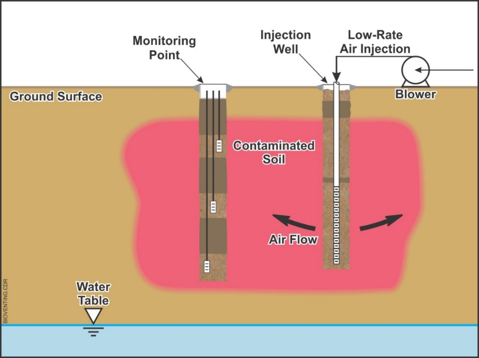
- Supply of air and nutrients through wells to contaminated soil to stimulate the growth of indigenous bacteria. It is used for simple hydrocarbons and can be used where the contamination is deep under the surface.
- Biosparging
-
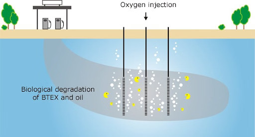
- Injection of air under pressure below the water table to increase groundwater oxygen concentrations and enhance the rate of biological degradation of contaminants by naturally occurring bacteria.
- Bioaugmentation
-
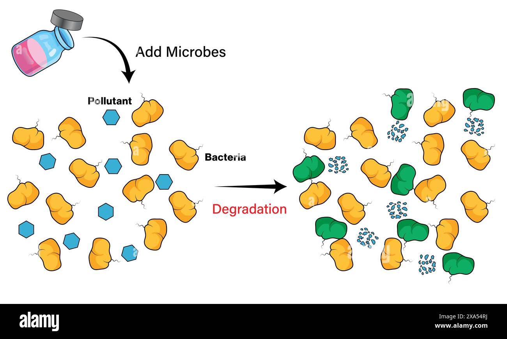
- Microorganisms are imported to a contaminated site to enhance degradation process.
- (b) Ex situ bioremediation techniques
- Ex situ - involves the removal of the contaminated material to be treated elsewhere.
- Landfarming
-
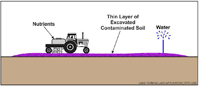
- Contaminated soil is excavated and spread over a prepared bed and periodically tilled until pollutants are degraded. The goal is to stimulate indigenous biodegradative microorganisms and facilitate their aerobic degradation of contaminants.
- Biopiles
- It is a hybrid of landfarming and composting. Essentially, engineered cells are constructed as aerated composted piles. Typically used for treatment of surface contamination with petroleum hydrocarbons.
- Bioreactors
-
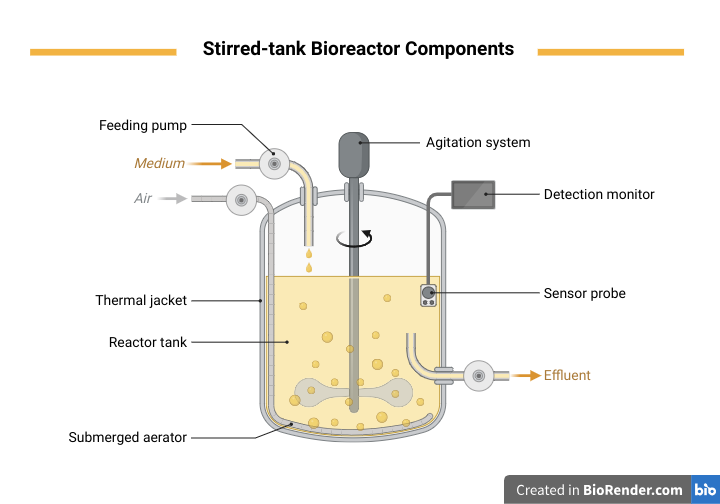
- It involves the processing of contaminated solid material (soil, sediment, sludge) or water through an engineered containment system.
- Composting
- Dealt earlier in solid waste management.
- Using bioremediation techniques, TERI has developed a mixture of bacteria called ‘oilzapper’ which degrades the pollutants of oil-contaminated sites, leaving behind no harmful residues. This technique is not only environment friendly, but also highly cost-effective.
- 5.13.2. Genetic engineering approaches
- Phytoremediation
- Phytoremediation is use of plants to remove contaminants from soil and water.
- Types
- Phytoextraction / phytoaccumulation
-
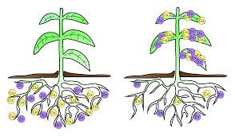
- It is the process by which plants accumulate contaminants into the roots and above ground shoots or leaves.
- Phytotransformation or phytodegradation
- It refers to the uptake of organic contaminants from soil, sediments, or water and their transformation to more stable, less toxic, less mobile form.
- Phytostabilization
- It is a technique in which plants reduce the mobility and migration of contaminated soil. Leachable constituents are adsorbed and bound into the plant structure so that they form unstable mass of plant from which the contaminants will not re-enter the environment.
- Phytodegradation or rhizodegradation
- It is the breakdown of contaminants through the activity existing in the rhizosphere. This activity is due to the presence of proteins and enzymes produced by the plants or by soil organisms such as bacteria, yeast, and fungi.
- Rhizofiltration
-
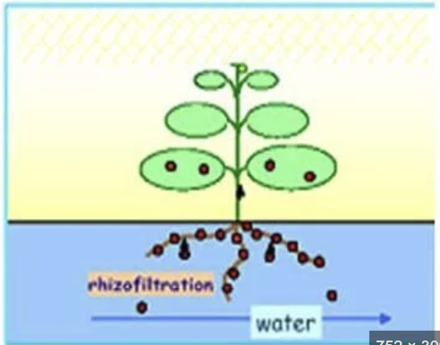
- It is a water remediation technique that involves the uptake of contaminants by plant roots. Rhizofiltration is used to reduce contamination in natural wetlands and estuary areas.
- It is difficult to extrapolate from bench and pilot-scale studies to full-scale field operations.
- Bioremediation often takes longer time than other treatment process.
- Mycoremediation
-
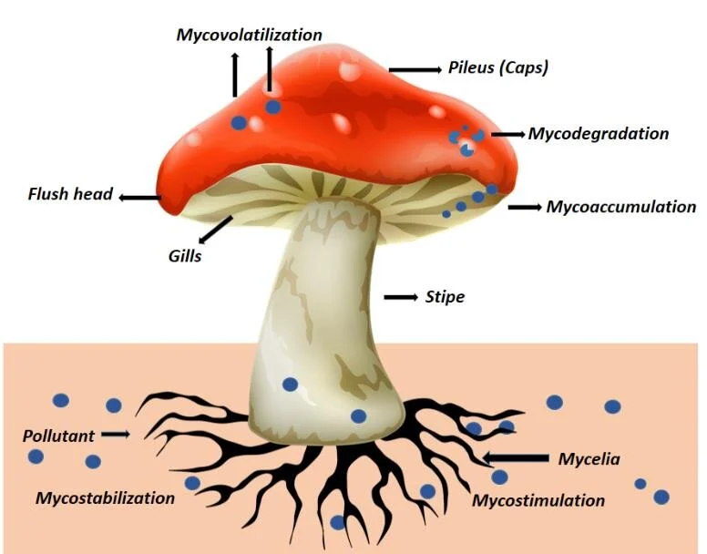
- Is a form of bioremediation in which fungi are used to decontaminate the area.
- Mycofiltration
- Is a similar process, using fungal mycelia to filter toxic waste and microorganisms from water in soil.
- Advantages of bioremediation
- Useful for the complete destruction of a wide variety of contaminants.
- The complete destruction of target pollutants is possible.
- Less expensive.
- Environment friendly.
- Disadvantages of bioremediation
- Bioremediation is limited to those compounds that are biodegradable. Not all compounds are susceptible to rapid and complete degradation.
- Biological processes are often highly specific.
- Do you know?
- The jaws of the snakes are not fused together. That means that unlike our jaws, snakes jaws are not hooked up at the back of their mouths. This makes it possible for them to eat very big meals, bigger than their own heads!
- Rattlesnakes are easily recognized by, their rattle. The rattlesnake babies are born with what is called a pre-button. The baby snake loses this piece when it sheds its skin for the first time. With the shedding a new button appears. With every shedding after that another button, or rattle, will be added. These buttons are made up of a material called Keratin. The rattles are empty. The noise comes from each segment knocking together, so until a rattlesnake has two or more pieces it isn’t going to make a sound! But when it does…you WILL hear it…and you WILL RUN!
- The bacterium Deinococcus radiodurans has been used to detoxify toluene and ionic mercury which are released from radioactive nuclear waste.
- 5.14. ENVIRONMENTAL POLLUTION AND HEALTH
- First
- Pollution inventory and apportionment studies that assess relative contribution of different sources are looked at in isolation and not within a coherent framework of health protection.
- What ultimately should drive policy is not just what source is emitting more but which source is likely to lead to a greater exposure to health damaging pollutants.
- Globally, studies show vehicles contribute from a quarter to close to half of the particulates in cities.
- Second
- Our scientists do not say that people are exposed to much higher health damaging pollutants than what occurs in ambient conditions.
- With each breath we inhale three-four times more pollutants than the ambient air concentration.
- Exposure to vehicular fumes is highest on road and up to 500 metres from there. The majority in our cities lives in that zone.
- Third
- People are exposed to a mixture of pollutants whose combined effect has serious health impact. The benefits are greater when pollution sources are regulated for multi-pollutants.
- Delhi’s air is thick with particulate matter, nitrogen oxides, ozone and air toxins.
- There is merit in NGT’s focus on diesel emissions which is a multi-pollutant mixture classified as a class one carcinogen for its strong link with lung cancer. Exposure to toxins should be eliminated.
- Fourth
- Our air quality policies are cut off from the reported reality in the health sector.
- India is experiencing a rapid health transition, with a large and rising burden of chronic diseases, estimated to be more than half of all deaths and years lost to illness.
- Cancer, stroke, and chronic lung diseases are now major public health problems that are strongly influenced by air pollution.
- 5.15. ACID RAIN
- Acid rain is the rainfall that has been acidified. It is formed when oxides of sulfur and nitrogen react with the moisture in the atmosphere. It is rain with a pH of less than 5.6. Acid rain is particularly damaging to lakes, streams, and forests and the plants and animals that live in these ecosystems.
- 5.15.1. TYPES OF ACID DEPOSITION
- “Acid rain” is a broad term referring to a mixture of wet and dry deposition (form of deposition material) from the atmosphere.
- (a) Wet Deposition
-
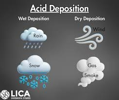
- If the acid chemicals in the air are blown into areas where the weather is wet, the acids can fall to the ground in the form of rain, snow, fog, or mist.
- As this acidic water flows over and through the ground, it affects a variety of plants and animals.
- The strength of the effects depends on several factors, including how acidic the water is; the chemistry and buffering capacity of the soils involved; and the types of fish, trees, and other living things that rely on the water.
- Precipitation removes gases and particles from the atmosphere by two processes:
- (i) Rain-out which is the incorporation of particles into cloud drops which fall to the ground, and
- (ii) Washout which occurs when materials below the cloud is swept down by rain or snow it falls.
- Dry deposited gases and particles can be washed from these surfaces by rainstorms, through runoff.
- This runoff water makes the resulting mixture more acidic.
- About half of the acidity in the atmosphere falls back to earth through dry deposition.
- (b) Dry Deposition
- In areas where the weather is dry, the acid chemicals may become incorporated into dust or smoke and fall to the ground through dry deposition, sticking to the ground, buildings, vegetation, cars, etc.
- The pH scale
- The pH scale is a measure of how acidic or basic (alkaline) a solution is.
- It ranges from 0 to 14. A pH of 7 is neutral.
- A pH less than 7 is acidic, and a pH greater than 7 is basic.
- It was devised in 1909 and it is a logarithmic index for the hydrogen ion concentration in an aqueous solution.
- pH values decreases as hydrogen ion levels increases.
- A solution with pH 4 is ten times more acidic than solution with pH 5, and a hundred times more acidic than solution with pH 6.
- Whilst the pH range is usually given as 0 to 14, lower and higher values are theoretically possible.
- Do you know?
- Gharial crocodile counts amongst the largest crocodile species in the world. It is also one of two surviving members of the Gavialidae family. Gharial Crocodiles of India have an elongated and narrow snout. It is mainly found in the river systems of Indus, Brahmaputra, Ganges, Mahanadi, Kaladan and Ayeyarwady.
- 5.15.2. Sources of compounds causing acid rain
- (a) Sulphur
- (i) Natural sources:
- Seas and oceans,
- Volcanic eruptions,
- Biological processes in the soil e.g., Decomposition of organic matter.
- (ii) Man-made sources:
- Burning of coal (60% of SO2) and
- Petroleum products (30% of SO2), and
- The smelting of metal sulfide ores to obtain the pure metals.
- Industrial production of Sulfuric acid in metallurgical, chemical and fertilizer industries.
- (b) Nitrogen
- Natural sources:
- Lightening,
- Volcanic eruption, and
- Biological activity.
- Anthropogenic sources:
- Forest fires
- Combustion of oil, coal, and gas
- (c) Formic acid
- Biomass burning due to forest fires causes emission of formic acid (HCOOH) and formaldehyde (HCHO) into the atmosphere.
- Large fraction formaldehyde gets photo-oxidation and forms formic acid in the atmosphere.
- These are three main compounds that cause acidification of rain in the atmosphere.
- (d) Other Acids:
- Chlorine
- Phosphoric acid
- Hydrochloric acid (smokestacks).
- Carbon monoxide and carbon dioxide (automobiles).
- These become carbonic acid.
- 5.15.3. Common characteristics of acid rain areas:
- Areas which are prone to acid-rain attacks have some common characteristics:
- They are concentrated in the industrialized belt of the northern hemisphere.
- They are often upland and/or mountainous areas, which are well-watered by rain and snow.
- Due to the abundance of water, they possess numerous lakes and streams and also have more land covered with vegetation.
- Being upland, they often have thin soils and glaciated bedrock.
- World scenario
- Many parts of Scandinavia, Canada, the North and North-east United States and Northern Europe (particularly West Germany and upland Britain) share these features. Across the Atlantic there are number of acid rain hot spots including Nova Scotia, Southern Ontario and Quebec in Canada, the Adirondack Mountains in New York, Great Smoky mountains, parts of Wisconsin, Minnesota, and the Colorado Rockies of the US.
- In India
- In India, the first report of acid rain came from Bombay in 1974. Instances of acid rain are being reported from metropolitan cities.
- In India, the annual SO2 emission has almost doubled in the last decade due to increased fossil fuel consumption.
- Lowering of soil pH is reported from north-eastern India, coastal Karnataka and Kerala, parts of Orissa, West Bengal and Bihar.
- Does it occurs only in industrial areas alone?
- SOX and NOX that create Acid Rain are often transported to distances far away from their points of origin by the wind so that the adverse effects of pollution are also experienced at place remote from the place of genesis. The problem is further compounded as the environmental damage caused by acid rain is not uniform, but is area-specific.
- Indicators
- Lichens serve as good bio-indicators for air pollution.
- In the variety of pH around 6.0, several animals, those are important food items for fish decline. These include the freshwater shrimp, crayfish, snails and some small mussels.
- 5.15.4. Chemistry of Acid Rain
- Six basic steps are involved in the formation of acid rain:
- 1. The atmosphere receives oxides of sulfur and nitrogen from natural and man-made sources.
- 2. Some of these oxides fall back directly to the ground as dry deposition, either close to the place of origin or some distance away.
- 3. Sunlight stimulates the formation of photo-oxidants (such as ozone) in the atmosphere.
- 4. These photo-oxidants interact with the oxides of sulfur and nitrogen to produce H2SO4 and HNO3 by oxidation.
- 5. The oxides are of sulfur and nitrogen, photo-oxidants, and other gases (like NH3).
- 6. Acid rain containing ions of sulfate, nitrate, ammonium and hydrogen falls as wet deposition.
- Difference between naturally and anthropogenically acidified lakes
-
| Naturally acidic lakes | Anthropogenically acidified lakes |
|---|
| Brown to yellow colour caused by humic substances | Very clear water caused by reduced primary productivity |
| Concentrations of dissolved organic carbon are high while transparency is low | Dissolved organic carbon concentrations are low. Whereas the transparency is high. |
| Low pH but well buffered. | Poorly buffered |
| Abound with aquatic life. | Some of the more sensitive taxa, such as blue-green algae, some bacteria, snails, mussels crustaceans, mayflies and fish either decrease or / are eliminated. |
- 5.15.5. Impact Of Acid Rain
- (a) Soil
- The exchange between hydrogen ions and the nutrient cations like potassium and magnesium in the soil cause leaching of the nutrients, making the soil infertile.
- This is accompanied by a decrease in the respiration of soil organisms.
- An increase in ammonia in the soil due to a decrease in other nutrients decreases the rate of decomposition.
- The nitrate level of the soil is also found to decrease.
- The impact of acid rain on soil is less in India; because Indian soils are mostly alkaline, with good buffering ability.
- (b) Vegetation
- Acid rains affect trees and undergrowth in forest in several ways, causing reduced growth or abnormal growth
- The typical growth-decreasing symptoms are:
- Discoloration and loss of foliar biomass
- Loss of feeder-root biomass, especially in conifers
- Premature senescence (aging) of older needles in conifers
- Increase in susceptibility of damage to secondary root and foliar pathogens
- Death of herbaceous vegetation beneath affected trees
- Prodigious production of lichens on affected trees.
- Death of affected trees.
- (c) Micro organisms
- pH determines the proliferation of any microbial species in a particular environment and the rate at which it can produce.
- The optimum pH of most bacteria and protozoa is near neutrality; most fungi prefer an acidic environment, most blue-green bacteria prefer an alkaline environment.
- So after a long run of acid rain, microbial species in the soil and water shift from bacteria-bound to fungi-bound and cause an imbalance in the micro-flora.
- This causes a delay in the decomposition of soil organic material, and an increase in fungal disease in aquatic life and forests.
- (d) Wild life
- The effects of acid rain on wild life are not very obvious and are therefore, difficult to document. Nevertheless, several direct and indirect effects of acid rain on the productivity and survival of wildlife populations have been reported.
- Acid rain can directly affect the eggs and tadpoles of frogs and salamanders that breed in small forest ponds.
- It has been postulated that acid rain can indirectly affect wildlife by allowing metals bound on soils and sediments to be released into the aquatic environment, where toxic substances may be ingested by animals, like birds, that feed in such an environment.
- Other indirect effects of acid rain on wildlife are loss or alteration of food and habitat resources.
- (e) Humans
- Acid rain affects human health is a number of ways.
- The obvious ones are bad smells, reduced visibility; irritation of the skin, eyes and the respiratory tract.
- Some direct effects include chronic bronchitis, pulmonary emphysema and cancer.
- Some indirect effects include food poisoning vis a vis drinking water and food.
- An increase in the levels of toxic heavy-metals like manganese, copper, cadmium and aluminium also contribute to the detrimental effects on human health.
- (f) Acid rain damage on Materials
-
| Material | Type of Impact | Principal Air Pollutants |
|---|
| Metals | Corrosion, tarnishing | Sulphur Oxides and other acid gases |
| Building stone | Surface erosion soiling, black crust formation | Sulphur Oxides and other acid gases |
| Ceramics and glass | Surface erosion, surface crust formation | Acid gases, especially fluoride-containing |
| Paints and organic coatings | Surface erosion, discolouration, soiling | Sulphur dioxides, hydrogen sulphide |
| Paper | Embrittlement, discolouration | Sulphur Oxides |
| Photographic Materials | Micro-blemishes | Sulphur Oxides |
| Textiles | Fading, colour change | Nitrogen oxides, ozone |
| Leather | | Sulphur oxides |
| Rubber | Weakening, powdered surface, Cracking | Ozone |
- (g) Socio-economic impacts of acid rain:
- The adverse impact of acid rain on farming and fishing leads to the deterioration of life quality indices like GNP and per capita income, especially in the predominantly agricultural and developing countries like India.
- 5.15.6. Trigger Effect of Acid Rain on Pollutants:
- A low pH of the rainwater and subsequent increased acidity in the environment can trigger off or aggravate the effects of certain harmful pollutants.
- (i) Mercury:
- Methyl mercury and related short chain alkyl mercurial compounds are most dangerous to humans, as they accumulate in edible fish tissue.
- Although acid deposition may not increase the production of methyl mercury, it may increase the partitioning of methyl mercury into the water column.
- The use of lime has helped in reducing the mercury levels in fish.
- (ii) Aluminium:
- Acidified waters are known to leach substantial amounts of aluminium from watersheds.
- Even at relatively low levels, aluminium has been implicated in dialysis dementia, a disorder of the central nervous system, which may be toxic to individuals with impaired kidney function.
- (iii) Cadmium:
- Cadmium can enter the drinking water supply through corrosion of galvanized pipe or from the copper-zinc through corrosion of galvanized piper or from the copper-zinc solder used in the distribution systems.
- A decrease in water pH from 6.5 to 4.5 can result in a fivefold increase in cadmium and could cause renal tubular damage.
- (iv) Lead:
- Foetuses and infants are highly susceptible to drinking water lead contamination.
- High blood lead levels in children (>30 mug/Ml) are believed to induce biochemical and neurophysiological dysfunction.
- However, lower than normal blood levels of lead can cause mental deficiencies and behavioural problems.
- (v) Asbestos:
- Asbestos is a group of six naturally occurring silicate minerals composed of long, thin, durable fibers.
- Asbestos in natural rock can be released by acidic waters.
- 5.15.7. Control Measures:
- Reducing or eliminating the sources of pollution by
- Buffering - the practice of adding a neutralizing agent to the acidified water to increase the pH is one of the important control measures. Usually lime in the form of calcium oxide and calcium carbonate is used.
- Reducing the emission of SO2 from power stations by burning less fossil fuel, using alternate energy sources like tidal, wind, hydropower etc.,
- Using low sulphur fuel;
- Desulphurization
- Decreasing emission of NOx from power stations and
- Modification of engines.
- Emissions of SOx can be controlled by
- Converting to sulphuric acid.
- Converting it to elemental sulphur.
- Neutralizing it and using it in the manufacture of other products.
- Do you know?
- The Indian giant squirrel is a large-bodied diurnal, arboreal, and herbivorous squirrel. The species is endemic to deciduous, mixed deciduous, and moist evergreen forests of peninsular India, reaching as far north as the Satpura hill range of Madhya Pradesh. IUCN Status – least concern.
- Tree ferns like Cyathaea and Alsophila have erect rhizomes with generally unbranched trunks, topped by a crown of graceful, feathery fronds that form a rosette at the apex.
- Bonsai—i.e., tailored or human-made miniature or dwarfed living trees that have been prevented from reaching their normal size—are grown in pots and kept in greenhouses, drawing rooms, etc. This technique was first perfected by the Japanese.
- Bamboos are trees without a main trunk but with a cluster of culms arising from the underground rhizome. These culms are unbranched, with distinct nodes and internodes that give them a jointed appearance.
- Trees reduce oxides of carbon in the air, can also fix atmospheric nitrogen, disintegrate waste and act as sinks of pollution.
- Sometimes seeds of a plant are formed without fertilization. This phenomenon is called “agamospermy,” a kind of parthenogenesis. A fruit that matures without seed formation is called “parthenocarpic fruit.”
- Beverage plants are those plants which yield beverages or drinks—nonalcoholic or alcoholic—that are palatable and refreshing. Nonalcoholic beverages usually contain caffeine, an alkaloid, which has stimulating and refreshing qualities. Alcoholic beverages are those that contain one or more hydroxyl (–OH) groups; e.g., ethanol.
- 5.16. CATEGORIZATION OF INDUSTRIAL SECTORS
- The Ministry of Environment, Forest and Climate Change (MoEFCC) has developed the criteria of categorization of industrial sectors, Red, Orange, Green and White categories based on the Pollution Index which is a function of the emissions (air pollutants), effluents (water pollutants), hazardous wastes generated and consumption of resources. The Pollution Index PI of any industrial sector is a number from 0 to 100 and the increasing value of PI denotes the increasing degree of pollution load from the industrial sector.
- “Re-categorization of industries based on their pollution load is a scientific exercise. The old system of categorization was creating problems for many industries and was not reflecting the pollution of the industries. The new categories will remove this lacuna and will give clear picture to everyone. “The new category of White industries which is practically non-polluting will not require Environmental Clearance (EC) and Consent and will help in getting finance from lending institutions. No Red category of industries shall normally be permitted in the ecologically fragile area / protected area.
- 5.17. Recent developments
- 5.17.1. Biofilters
- Definition
- Biofilters are biological pollution control systems that use microorganisms to degrade and remove pollutants from air (e.g., volatile organic compounds, odors) or wastewater (e.g., organic contaminants). They consist of a bed of organic material (e.g., compost, peat, wood chips) hosting microbes that oxidize pollutants into non-toxic byproducts like carbon dioxide, water, and biomass.
- Key features:
- Eco-friendly, low-energy, cost-effective, and suitable for biodegradable pollutants.
- Working Mechanism
- Biofilters operate through biodegradation in three stages:
- Pollutant Transfer:
- Contaminated air or water passes through a moist biofilm on the filter media, where pollutants dissolve or adsorb.
- Microbial Degradation:
- Aerobic bacteria or fungi metabolize pollutants, converting them into CO2, H2O, and biomass (e.g., toluene oxidized to CO2).
- Byproduct Removal:
- Byproducts like CO2 and water vapor are released or washed out; media retains moisture for microbial activity.
- Components:
- Filter bed (organic/synthetic media), humidification system (for air biofilters), air/water distribution system, support structure.
- Efficiency:
- 90-99% for odors/VOCs under optimal conditions (moisture 40-60%, pH 6-8, temperature 20-40°C).
- Types of Biofilters
- Open Biofilters:
- Exposed systems for large-scale use (e.g., landfill gas treatment); low cost but weather-sensitive.
- Closed Biofilters:
- Enclosed for controlled environments (e.g., industrial VOC removal); high efficiency, higher setup cost.
- Bio-trickling Filters:
- Use trickling liquid to enhance pollutant transfer (e.g., ammonia, H2S); effective for water-soluble compounds.
- Bioscrubbers:
- Combine absorption and biodegradation; handle high pollutant loads but complex maintenance.
- Applications
- Air Pollution Control
- Treats VOCs from industries (petrochemical, paint, pharma) and odors from sewage plants, landfills, food processing (e.g., H2S, mercaptans).
- Example:
- VOC control in textile industries in Surat, Gujarat.
- Wastewater Treatment
- Removes organic contaminants (e.g., phenols, alcohols) in municipal/industrial wastewater.
- Example:
- Decentralized sewage plants under Swachh Bharat Mission.
- Agriculture
- Controls ammonia emissions from livestock farms, composting units.
- Example:
- Poultry farm biofilters in rural India.
- Landfill Gas Management
- Treats methane/odors from municipal solid waste landfills (aligned with Solid Waste Management Rules, 2016).
- Greenhouse Gas Mitigation
- Emerging use for low-concentration methane capture from landfills/agriculture.
- Advantages
- Environmental:
- Low carbon footprint, no secondary pollutants, supports microbial biodiversity.
- Economic:
- Low operational costs (no chemicals, minimal energy), uses local media (e.g., coconut coir).
- Scalability:
- Suitable for rural (small-scale wastewater) to urban (industrial emissions) applications.
- Policy Alignment:
- Supports National Clean Air Programme (NCAP), Swachh Bharat Mission, and SDGs (6, 11).
- Limitations
- Performance:
- Limited to biodegradable pollutants; ineffective for heavy metals/non-organics.
- Space:
- Large footprint for open biofilters, challenging in urban areas.
- Sensitivity:
- Affected by pH, moisture, temperature fluctuations; requires acclimatization period.
- Maintenance:
- Media clogging requires periodic replacement; needs skilled monitoring.
- Biofilters in Indian Context
- Policy Framework
- National Clean Air Programme (NCAP, 2019):
- Supports VOC/odor control in 131 non-attainment cities (target: 20-30% PM reduction by 2026).
- Solid Waste Management Rules, 2016:
- Mandates odor control in landfills; biofilters recommended by CPCB.
- Swachh Bharat Mission (Urban 2.0):
- Promotes biofilter-based decentralized wastewater treatment.
- India Cooling Action Plan (ICAP, 2019):
- Aligns with reducing refrigerant emissions via sustainable alternatives.
- National Action Plan on Climate Change (NAPCC):
- Supports National Mission for a Green India and Sustainable Agriculture.
- Current Affairs (2023-2025)
- Pilot projects in Gujarat, Maharashtra for biofilter-based VOC control in textile/chemical industries (CPCB, 2024).
- Biofilter installations in waste-to-energy plants in Pune, Indore under Smart Cities Mission (2023-24).
- Global Methane Pledge (COP 26, 2021):
- India exploring biofilters for landfill methane capture (30% reduction by 2030).
- UNEA-6 (2024):
- Emphasized bio-based solutions for pollution (e.g., ammonia control via biofilters).
- Challenges in India
- Low awareness among SMEs for adoption.
- Space constraints in urban areas; funding issues in rural setups.
- Tropical climate (high humidity, temperature) affects performance.
- Limited indigenous R&D on biofilter media (e.g., coir vs. peat).
- Way Forward
- Policy:
- Mandate biofilters in CPCB’s Consent to Operate for polluting industries.
- Subsidies:
- Support adoption under NCAP/Smart Cities Mission.
- R&D:
- Fund climate-resilient biofilters via DST/MoEFCC.
- Training:
- Integrate with Skill India Mission (e.g., ICAP’s 100,000 technicians goal).
- PPPs:
- Collaborate with UNEP/IITs for pilot projects in industrial hubs.
- 5.17.2. Membrane Reactors
- Definition
- Membrane reactors are advanced systems combining membrane separation with chemical/biochemical reactions in a single unit. Membranes selectively separate products/byproducts, enhancing reaction efficiency, product purity, and process sustainability.
- Key features:
- High selectivity, compact design, energy-efficient, used in chemical, environmental, and biotechnological applications.
- Working Mechanism
- Integrates reaction and separation:
- Reaction:
- Chemical (e.g., catalytic) or biochemical (e.g., enzymatic) reactions occur in the reactor.
- Separation:
- Semi-permeable membranes (polymeric, ceramic, or metallic) selectively remove products, reactants, or byproducts, shifting equilibrium (e.g., Le Chatelier’s principle) or isolating catalysts.
- Example:
- In hydrogen production, palladium membranes remove H2, driving methane steam reforming forward.
- Components:
- Reactor chamber, membrane (e.g., zeolite, ceramic), catalyst/enzyme, feed/product streams.
- Efficiency:
- Enhances yield (e.g., 20-50% higher in H2 production), reduces downstream processing.
- Types
- Catalytic Membrane Reactors (CMRs):
- Combine catalysis (e.g., Pt, Ni) with membranes for reactions like hydrogenation or oxidation. Example: VOC oxidation in air purification.
- Biocatalytic Membrane Reactors (BMRs):
- Use enzymes/microbes with membranes for bioprocessing (e.g., wastewater treatment).
- Pervaporation Membrane Reactors:
- Remove liquid products (e.g., ethanol) via vapor-phase separation. Example: Biofuel production.
- Gas Separation Membrane Reactors:
- Separate gases (e.g., H2, CO2) during reactions. Example: CO2 capture in syngas production.
- Applications
- Environmental:
- Treats wastewater (e.g., dye removal in textiles), captures CO2 in power plants, degrades VOCs in air (e.g., benzene in chemical plants).
- Energy:
- Hydrogen production (steam reforming, water-gas shift), biofuel synthesis (biodiesel via transesterification).
- Biotechnology:
- Enzyme-based drug production, wastewater bioremediation (e.g., phenol removal).
- Industry:
- Petrochemical (dehydrogenation), food processing (lactose hydrolysis).
- Indian Context:
- Dye wastewater treatment in Tirupur textiles, CO2 capture pilots in NTPC plants (2024).
- Advantages
- Efficiency:
- Higher yields, reduced energy (e.g., 30% less in H2 production), compact design.
- Environmental:
- Lower emissions, supports CO2 capture (Paris Agreement, Net Zero 2070).
- Versatility:
- Handles diverse reactions (chemical, biological), scalable for SMEs to large industries.
- Policy Alignment:
- Supports NCAP (VOC control), ICAP (refrigerant alternatives), NAPCC (Green India, Sustainable Agriculture).
- Limitations
- Cost:
- High initial investment for membranes (e.g., palladium, ceramic).
- Fouling:
- Membrane clogging by biomass or particulates reduces efficiency.
- Durability:
- Limited membrane lifespan (1-5 years) under harsh conditions (e.g., high pH, temperature).
- Complexity:
- Requires skilled operation, challenging for SMEs in India.
- Indian Context
- Policies:
- NCAP (VOC/PM reduction), Swachh Bharat (wastewater), ICAP (energy-efficient tech), NAPCC (clean energy missions).
- Current Affairs (2023-2025):
- Tirupur textile wastewater treatment pilots (2024, IIT Madras); NTPC CO2 capture trials (2024); UNEA-6 (2024) push for low-emission tech; Global Methane Pledge (CO2/methane capture).
- Challenges:
- High costs, limited local manufacturing (membranes imported), fouling in high-pollutant streams, low SME adoption.
- Way Forward:
- Subsidize via Atmanirbhar Bharat, fund R&D (DST/IITs for indigenous membranes), integrate with CPCB norms, train via Skill India, pilot with UNEP/CSIR.
- CHAPTER 6: RENEWABLE ENERGY
- Overview
- Consumption of non-renewable sources of energy has caused more environmental damage than any other human activity. Electricity generated from fossil fuels has led to high concentrations of harmful gases in the atmosphere. This has in turn led to many environmental and health problems being faced today.
- Therefore, alternative sources of energy have become very important and relevant.
- Renewable energy is energy that is generated from natural resources that are continuously replenished. This includes sunlight, geothermal heat, wind, tides, water, and various forms of biomass. This energy cannot be exhausted and is constantly renewed.
- They are viable source of clean limitless energy, cause less emission, and are available locally. The use of renewable energy greatly reduces all sort of pollutions vis-a-vis non-renewable energy. Most of the renewable sources of energy are fairly non-polluting and considered clean. But biomass though a renewable source, is a major contributor of indoor pollution.
- Renewable energy comprises of
- Solar energy
- Energy generated from the sun
- Hydel energy
- Energy derived from water
- Biomass
- Energy from firewood, animal dung, biodegradable waste and crop residues, when it is burnt.
- Geothermal energy
- Energy from hot dry rocks, magma, hot water springs, natural geysers, etc.
- Ocean thermal
- Energy from waves and also from tidal waves.
- Co-generation
- Producing two forms of energy from one fuel.
- Fuel cells are also being used as cleaner energy source.
- Electricity is the flow of energy or current and is one of the most widely used forms of energy throughout the world.
- Source
- Primary source
- Renewable energy like solar, wind, geothermal
- Secondary source
- Non-renewable energy generated through the conversion of coal, oil, natural gas etc.
- The Government had set a target of 175 GW renewable energy capacity by 2022 (100 GW solar, 60 GW wind, 10 GW bio-power, 5 GW small hydro).
- By March 2022, only about 110 GW was installed (≈63% of target).
- Later, by late 2022, India reached around 159.95 GW, still short of the original goal.
- As of October 2024, India has achieved 203.18 GW of renewable capacity, thereby surpassing the original 175 GW benchmark (if counted cumulatively).
- India has also crossed the milestone of 50% of total power capacity from non-fossil sources, ahead of its 2030 commitment.
- Crossing 50% capacity does not mean India is producing more energy from renewables than from coal, it means half of the total power plants (by megawatt rating) are renewable/non-fossil.
- Renewables like solar and wind don’t generate power all the time — only when the sun shines or wind blows. Their capacity utilization factor (CUF) is much lower than coal.
- As of 2024–25, renewables contribute roughly 27–30% of total electricity generated in India.
- Coal still contributes the largest share (around 65–70%), because it operates at a much higher utilization rate.
- The new target is 500 GW non-fossil capacity by 2030.
- Installed renewable energy capacity in India
- As of mid-2025, installed renewable capacity has grown to about 192,500 MW (192.5 GW), comprising:
- Solar:
- 123,130 MW
- Wind:
- 52,681 MW
- Small Hydro:
- 5,109 MW
- Biomass & Bagasse:
- ~10,743 MW
- The total installed power capacity of India (all sources combined) is about 476 GW as of June 2025.
- 6.1 SOLAR ENERGY
- India is one of the few countries naturally blessed with long days and plenty of sunshine.
- There are two ways we can produce electricity from the sun light:
- Photovoltaic Electricity
- Uses photovoltaic cells that absorb the direct sunlight to generate electricity
- Solar-Thermal Electricity
- Uses a solar collector that has a mirrored surface which reflects the sunlight onto a receiver that heats up a liquid. This heated up liquid is used to make steam that produces electricity.
- 6.1.3 Photovoltaic Electricity
- Solar panels are attached to an aluminium mounting system. Photovoltaic (PV) cells are made up of at least 2 semi-conductor layers - a positive charge, and a negative charge.
- As a PV cell is exposed to sunlight, photons are reflected, pass right through, or absorbed by the solar cell. When enough photons are absorbed by the negative layer of the photovoltaic cell, electrons are freed from the negative semiconductor material. These freed electrons migrate to the positive layer creating a voltage differential. When the two layers are connected to an external load, the electrons flow through the circuit creating electricity. The power generated - Direct Current (DC) is converted to Alternate Current (AC) with the use of inverters.
- Concentrated Solar Power (CSP) or solar thermal technology
- It utilises focused sunlight and convert it into high-temperature heat. That heat is then channelled through a conventional generator to produce electricity.
- Solar collectors capture and concentrate sunlight to heat a fluid which in turn generates electricity. There are several variations in the shape of the collectors. The most commonly used are the parabolic troughs. Parabolic trough power plants use a curved, mirrored trough which reflects the direct solar radiation onto a glass tube containing a fluid and the fluid gets heated owing to the concentrated solar radiation and the hot steam generated is used to rotate the turbine to generate electricity. Commonly used fluids are synthetic oil, molten salt and pressurised steam.
- The power generated - Direct Current (DC) is converted to Alternate Current (AC) with the use of inverters.
- 6.1.4 Potential of solar energy in India
- India has the potential to generate 35 MW/km2 using solar photovoltaic and solar thermal energy.
- Solar energy of about 5,000 trillion kWh per year is incident over India’s land area with most parts receiving 4-7 kWh per sq. m per day. Hence both technology routes (solar thermal and solar photovoltaic) for conversion of solar radiation into heat and electricity can effectively be harnessed providing huge scalability for solar power in India.
- The states with very high solar radiation are Rajasthan, northern Gujarat and parts of Ladakh region, Andhra Pradesh, Maharashtra and Madhya Pradesh.
- 6.1.5 Installed capacity – India
- The current installed capacity of solar in grid-connected power crossed 123,130 MW as on August 2025, as per MNRE estimates.
- A major initiative called 'The National Solar Mission' was formulated by the Government of India and its state governments.
- One of the main features of the Mission is to make India a global leader in solar energy and the mission envisages an installed solar generation capacity of 100 GW by 2022, which was achieved by early 2025.
- 6.1.6 International Solar Alliance
- International Solar Alliance (ISA) is launched at the CoP21 Climate Conference in Paris on 30th November as a special platform for mutual cooperation among 121 solar resource rich countries lying fully or partially between Tropic of Cancer and Tropic of Capricorn.
- The alliance is dedicated to address special energy needs of ISA member countries.
- International Agency for Solar Policy and Application (IASPA) will be the formal name of International Solar Alliance. The ISA secretariat will be set up in National Institute of Solar Energy, Gurgaon.
- Objectives
- 1. to force down prices by driving demand;
- 2. to bring standardization in solar technologies
- 3. to foster research and development.
- Prime Minister coined the new term “Surya Putra” for all the nations which fall between Tropic of Cancer and Tropic of Capricorn, and which have been invited to join the alliance. The other term used for these countries is “Sunshine Countries”.
- IESS 2047 stands for India Energy Security Scenarios 2047 calculator which has been launched by India to explore the potential of future energy scenarios for India.
- 6.2. LUMINESCENT SOLAR CONCENTRATORS
- A luminescent solar concentrator (LSC) is a device that uses a thin sheet of material to trap solar radiation over a large area, before directing the energy (through luminescent emission) to cells mounted on the thin edges of the material layer.
- The thin sheet of material typically consists of a polymer (such as polymethylmethacrylate (PMMA)), doped with luminescent species such as organic dyes, quantum dots or rare earth complexes.
- What is the need for LSCs?
- The main motivation for implementing LSCs is to replace a large area of expensive solar cells in a standard flat-plate PV panel, with a cheaper alternative. Therefore there is both a reduction in both the cost of the module (£/W) and the solar power produced (£/kWh).
- A key advantage of over typical concentrating systems is that LSCs can collect both direct and diffuse solar radiation. Therefore tracking of the sun is not required.
- LSCs are excellent candidates for building integrated photovoltaics (BIPV) and for the cloudier northern climates.
- Ideal LSC
- A broad absorption range to utilize the solar spectrum efficiently.
- 100% emission of light from the absorbing luminescent species.
- A large shift between the absorption and emission spectra to reduce absorption losses.
- Long term stability.
- Challenges for LSC
- The development of LSCs aims to create a working structure that performs close to the theoretical maximum efficiency.
- International Renewable Energy Agency (IRENA)
- IRENA has 150 member nations with Headquarters in Abu Dhabi.
- The International Renewable Energy Agency (IRENA) is an intergovernmental organisation that supports countries in their transition to a sustainable energy future, and serves as the principal platform for international cooperation, a centre of excellence, and a repository of policy, technology, resource and financial knowledge on renewable energy.
- IRENA promotes the widespread adoption and sustainable use of all forms of renewable energy, including bioenergy, geothermal, hydropower, ocean, solar and wind energy in the pursuit of sustainable development, energy access, energy security and low-carbon economic growth and prosperity.
- 6.3 WIND ENERGY
- Wind energy is the kinetic energy associated with the movement of atmospheric air. Wind turbines transform the energy in the wind into mechanical power, further converting to electric power to generate electricity. Five nations – Germany, USA, Denmark, Spain and India – account for 80% of the world’s installed wind energy capacity.
- 6.3.1 Wind farm
- A wind farm is a group of wind turbines in the same location used for production of electricity. A wind farm can be located onshore and offshore.
- Onshore wind farms:
- operate on land, where the wind tends to be the strongest. The turbines of a Onshore wind farms are less expensive and easier to set up, maintain and operate than offshore turbines.
- Offshore wind farms:
- Construction of wind farms in large bodies of water to generate electricity. Offshore wind farms are more expensive than onshore wind farms of the same nominal power.
- 6.3.2 Working of wind turbines
- Wind turbines convert the kinetic energy in the wind into mechanical energy. This mechanical power can be used for specific tasks (such as grinding grain or pumping water) or a generator can convert this mechanical power into electricity. Most turbines have three aerodynamically designed blades. The energy in the wind turns two or three propeller-like blades around a rotor that is connected to the main shaft, which spins a generator to create electricity. Wind turbines are mounted on a tower to capture the most energy. At 100 feet (30 meters) or more above ground, they can take advantage of faster and less turbulent wind.
- Three main variables determine how much electricity a turbine can produce:
- 1. Wind speed
- Stronger winds produce more energy. Wind turbine generates energy at a speed of 4-25 metres per second
- 2. Blade radius
- The larger the radius of blades, the more the energy produced. Doubling the blade radius can result in four times more power.
- 3. Air density
- Heavier air exerts more lift on a rotor. Air density is a function of altitude, temperature and pressure. High altitude locations have low air pressure and lighter air so they are less productive turbine locations. The dense heavy air near sea level drives rotors faster and thus relatively more effectively.
- 6.3.3 Two types of wind turbines
-
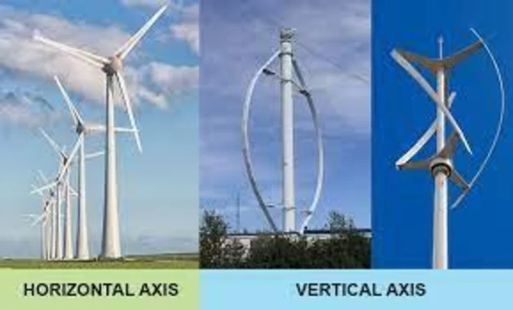
- (1) Horizontal-axis design has two or three blades that spin upwind of the tower. A horizontal axis machine has its blades rotating on an axis parallel to the ground.
- (2) Vertical-axis turbines has vertical blades that rotate in and out of the wind. The vertical axis turbine has its blades rotating on an axis perpendicular to the ground. This drag-type turbine turns relatively slowly but yields a high torque. It is useful for grinding grain, pumping water and many other tasks, but its slow rotational speeds are not optimal for generating electricity. Vertical-axis turbines do not take advantage of the higher wind speeds at higher elevations (100 feet and so) above the ground vis-a-vis horizontal axis turbines.
- 6.3.4 Potential of wind energy in India
- The National Institute of Wind Energy (NIWE) has recently launched Wind Energy Resource Map of India at 100 meter above ground level (AGL) on online Geographic Information System platform.
- The wind energy potential in the country at 100 m AGL is over 302 GW. Gujarat has the maximum potential followed by Karnataka, Maharashtra, Andhra Pradesh according to the resource map.
- Wind energy target
- 60000 MW (60 GW) by 2022
- 200000 MW (200 GW) by 2030
- 6.3.5 Capacity installed
- Tamil Nadu – 7200 MW
- Maharashtra – 4000 MW
- Karnataka – 2700 MW
- Rajasthan – 2700 MW
- Andhra Pradesh, Madhya Pradesh, Kerala are minor players with installed capacity of less than 1000 MW
- National Offshore Wind Energy Policy, 2015:
- Under this Policy, the Ministry of New & Renewable Energy (MNRE) has been authorized as the Nodal Ministry for use of offshore areas within the Exclusive Economic Zone (EEZ) of the country and the National Institute of Wind Energy (NIWE) has been authorized as the Nodal Agency for development of offshore wind energy in the country and to carry out allocation of offshore wind energy blocks, coordination and allied functions with related ministries and agencies.
- It would pave the way for offshore wind energy development including, setting up of offshore wind power projects and research and development activities, in waters, in or adjacent to the country, up to the seaward distance of 200 Nautical Miles (EEZ of the country) from the base line.
- The policy will provide a level playing field to all investors/beneficiaries, domestic and international.
- National Wind Energy Mission (Proposed):
- Initiated the process of establishing National Wind Energy Mission.
- The setting up of a Mission would help in
- (a) achieving the targets of 12th Plan and energy generation from renewable energy as set under NAPCC, and
- (b) addressing the issues and challenges which the wind sector is faced with, such as precise resource assessment, effective grid integration, improvement in technology and manufacturing base, to maintain its comparative advantage in the wind sector.
- 6.4. HYDRO POWER
- Hydraulic power can be captured when water flows downward from a higher level to a lower level which is then used to turn the turbine, thereby converting the kinetic energy of water into mechanical energy to drive the generator.
- Hydro power is cheapest, and cleanest source of energy but there are many environmental and social issues associated with big dams as seen in projects like Tehri, Narmada, etc. Small hydro power are free from these problems
- 6.4.1 Types of hydro power stations
- There are three types of hydropower facilities:
- impoundment, diversion, and pumped storage. Some hydropower plants use dams and some do not.
- (1) Impoundment
- The most common type of hydroelectric power plant is an impoundment facility. An impoundment facility, typically a large hydropower system, uses a dam to store river water in a reservoir. Water released from the reservoir flows through a turbine, spinning it, which in turn activates a generator to produce electricity.
- (2) Diversion
- A diversion, sometimes called run-of-river facility, channels a portion of a river through a canal or penstock and then to flow through a turbine, spinning it, which in turn activates a generator to produce electricity. It may not require the use of a dam.
- (3) Pumped storage
- It works like a battery, storing the electricity generated by other power sources like solar, wind, and nuclear for later use. When the demand for electricity is low, a pumped storage facility stores energy by pumping water from a lower reservoir to an upper reservoir. During periods of high electrical demand, the water is released back to the lower reservoir and turns a turbine, generating electricity.
- 6.4.2 Small Hydro Power (SHP)
- Small hydro is defined as any hydro power project which has an installed capacity of less than 25 MW. It is in most cases run-of-river, where a dam or barrage is quite small, usually just a weir with little or no water is stored. Therefore run-of-river installations do not have the same kind of adverse effect on the local environment as large-scale hydro projects. Small hydropower plants can serve the energy needs of remote rural areas independently.
- India and China are the major players of the SHP sector, holding the highest number of installed projects.
- 6.4.3 Small Hydro Potential in India
- An estimated 5,415 sites of small hydro have been identified with a potential of around 19,750 MW.
- River based projects in the Himalayan states and irrigation canals in other states have massive potential for development of Small Hydro Projects.
- According to the XIIth five year plan targets, capacity addition from Small Hydro Projects is targeted at 2.1 GW in 2011-17 period.
- The Ministry of New and Renewable Energy is encouraging development of Small Hydro Projects in both the public and private sector and aims to exploit at least 50% of the current potential in the next 10 years.
- 6.4.4 Installed capacity
- The cumulative installed capacity of Small Hydro Projects amount to 3726 MW.
- 6.5 OCEAN THERMAL ENERGY
- Large amounts of solar energy is stored in the oceans and seas. On an average, the 60 million square kilometre of the tropical seas absorb solar radiation equivalent to the heat content of 245 billion barrels of oil.
- The process of harnessing this energy is called OTEC (ocean thermal energy conversion). It uses the temperature differences between the surface of the ocean and the depths of about 1000m to operate a heat engine, which produces electric power
- Wave energy
- Waves result from the interaction of the wind with the surface of the sea and represent a transfer of energy from the wind to the sea.
- Devices called wave energy converters (WECs) capture the motion of waves, including oscillating water columns, floating buoys, and submerged pressure systems.
- The mechanical motion of these devices drives turbines or pistons, which in turn drive generators to produce electricity.
- The first wave energy, project with a capacity of 150MW, has been set up at Vizhinjam near Trivandrum.
- Tidal energy
- Energy can be extracted from tides by creating a reservoir or basin behind a barrage and then passing tidal waters through turbines in the barrage to generate electricity.
- A major tidal wave power project costing of Rs.5000 crores, is proposed to be set up in the Hanthal Creek in the Gulf of Kutch in Gujarat.
- Biomass
- Biomass is a renewable energy resource derived from the carbonaceous waste of various human and natural activities. It is derived from numerous sources, including the by-products from the timber industry, agricultural crops, grassy and woody plants, residues from agriculture or forestry, oil-rich algae, and the organic component of municipal and industrial wastes. Biomass is a good substitute for the conventional fossil fuels for heating and energy generation purposes.
- Burning biomass releases about the same amount of carbon dioxide as burning fossil fuels. However, fossil fuels release carbon dioxide captured by photosynthesis over its formative years. Biomass, on the other hand, releases carbon dioxide that is largely balanced by the carbon dioxide captured in its own growth (depending how much energy was used to grow, harvest, and process the fuel). Hence, Biomass does not add carbon dioxide to the atmosphere as it absorbs the same amount of carbon in growing as it releases when consumed as a fuel.
- Chemical processes like gasification, combustion and pyrolysis convert biomass to useful products, combustion being the most common of them. Each of the technologies mentioned produces a major calorific end product and a mixture of by-products. The processing method is selected on the basis of nature and origin of feed stocks, their physiochemical state and application spectrum of fuel products derived from it.
- Anaerobic Digestion/Biomethanation
- Biomethanation, or methanogenesis, is a scientific process whereby anaerobic microorganisms in an anaerobic environment decompose biodegradable matter producing methane-rich biogas and effluent. The three functions that take place sequentially are hydrolysis, acidogenosis and methanogenesis.
- Combustion/Incineration
- In this process, waste is directly burned in the presence of excess air (oxygen) at high temperatures (about 800°C), liberating heat energy, inert gases and ash. Combustion results in transfer of 65–80% of heat content of the organic matter to hot air, steam and hot water. The steam generated, in turn, can be used in steam turbines to generate power.
- Pyrolysis/Gasification
- Pyrolysis is a process of chemical decomposition of organic matter brought about by heat. In this process, the organic material is heated in the absence of air until the molecules thermally break down to become a gas comprising smaller molecules (known collectively as syngas).
- Gasification can also take place as a result of partial combustion of organic matter in the presence of a restricted quantity of oxygen or air. The gas so produced is known as producer gas. The gases produced by pyrolysis mainly comprise carbon monoxide (25%), hydrogen and hydrocarbons (15%), and carbon dioxide and nitrogen (60%). The next step is to ‘clean’ the syngas or producer gas. Thereafter, the gas is burned in internal combustion (IC) engine generator sets or turbines to produce electricity.
- 6.6 COGENERATION
- Co-generation is producing two forms of energy from one fuel. One of the forms of energy must always be heat and the other may be electricity or mechanical energy. In a conventional power plant, fuel is burnt in a boiler to generate high-pressure steam. This steam is used to drive a turbine, which in turn drives an alternator through a steam turbine to produce electric power. The exhaust steam is generally condensed to water which goes back to the boiler.
- As the low-pressure steam has a large quantum of heat which is lost in the process of condensing, the efficiency of conventional power plants is only around 35%. In a cogeneration plant, the low-pressure exhaust steam coming out of the turbine is not condensed, but used for heating purposes in factories or houses and thus very high efficiency levels, in the range of 75%–90%, can be reached.
- Since co-generation can meet both power and heat needs, it has other advantages as well in the form of significant cost savings for the plant and reduction in emissions of pollutants due to reduced fuel consumption.
- Even at conservative estimates, the potential of power generation from co-generation in India is more than 20,000 MW. Since India is the largest producer of sugar in the world, bagasse-based cogeneration is being promoted. The potential for cogeneration thus lies in facilities with joint requirement of heat and electricity, primarily sugar and rice mills, distilleries, petrochemical sector and industries such as fertilizers, steel, chemical, cement, pulp and paper, and aluminium.
- Potential in India
- Biomass energy is one of the most important sources of energy forming 32% of the total primary energy usage in the country with more than 70% of the Indian population dependent on it for its energy needs.
- The current availability of biomass is estimated at about 450-500 million tonnes annually translating to a potential of around 18000 MW.
- In addition, about 5000 MW additional power could be generated through bagasse based cogeneration in the country’s 550 Sugar mills
- It attracts over Rs 600 crore in investments annually creating rural employment of more than 10 million man days whilst generating more than 5000 million units of electricity.
- Installed capacity in India
- Approximately over 300 biomass power and cogeneration projects aggregating 3700 MW have been installed in the country for feeding power to the grid. Also, 30 biomass power projects aggregating about 350MW are under different stages of implementation.
- Andhra Pradesh, Tamil Nadu, Karnataka, Maharashtra and Uttar Pradesh are the leading states in the implementation of bagasse cogeneration projects.
- In the biomass power projects, Andhra Pradesh, Chhattisgarh, Maharashtra, Madhya Pradesh, Gujarat and Tamil Nadu have taken leadership position.
- The Government plans to meet 20% of the countries diesel requirements by 2020 using biodiesel. Potential sources of biodiesel production have been identified in wild plants such as jatropha curcas, neem, mahua, karanj, Simarouba (exotic tree) etc.
- Several incentive schemes have been introduced to rehabilitate waste lands through the cultivation of Jatropha.
- Central Finance Assistance (CFA) is provided by the Ministry of New and Renewable Energy (MNRE) in the form of capital subsidy and financial incentives to biomass energy projects in India.
- 6.7 WASTE TO ENERGY
- In today’s era, there are increasing quantities of waste due to urbanization, industrialization and changes in life patterns which are harmful to the environment. In the recent past, development of technology has helped to reduce the amount of waste for its safe disposal and to generate electricity from it.
- Waste-to-energy has the potential to divert waste from landfills and generate clean power without the emission of harmful greenhouse gas. This significantly reduces the volume of waste that needs to be disposed of and can generate power Pyrolysis and gasification are emerging technologies apart from the common incineration and biomethanation.
- 6.7.1 Potential of waste-to-energy
- There is an estimated potential of about 225 MW from all sewage and about 1460 MW from Municipal Solid Waste (MSW) in India totaling around 1700 MW of power.
- There is current potential to recover 1,300 MW of power from industrial wastes, which is projected to increase to 2,000 MW by 2017.
- The total installed capacity of grid interactive power from Waste to energy is 99.08 MW of grid power and about 115.07 MW of off-grid power.
- MNRE is actively promoting the generation of energy from waste by providing incentives and subsidies on projects
- 6.7.2. Major Constraints Faced by the Indian Waste to Energy Sector
- Choice of technology
- Waste-to-Energy is still a new concept in India. Most of the proven and commercial technologies in respect of urban wastes are required to be imported;
- High costs
- The costs of the projects especially based on biomethanation technology are high as critical equipment for a project is required to be imported.
- Improper segregation
- India lacks a source separated waste stream, owing to the low level of compliance of Municipal Solid Waste (MSW) Rules 2000 by the Municipal Corporations/ Urban Local Bodies. The organic waste is mixed with the other types of waste. Hence the operations of the waste to energy techniques are hindered and a lack of smoothness causes the attempts to be short lived.
- Lack of policy support
- Lack of conducive policy guidelines from State Governments in respect of allotment of land, supply of garbage and power purchase / evacuation facilities.
- 6.8 GEOTHERMAL ENERGY
- Geothermal generation refers to harnessing of the geothermal energy or the vast reservoir of heat stored in the earth’s inner core. Below the earth’s crust, there is a layer of hot and molten rock called ‘magma’. Heat is continually produced there, mostly from the decay of naturally radioactive materials such as uranium and potassium.
- How is it captured
- Geothermal systems can be found in regions with a normal or slightly above normal geothermal gradient (gradual change in temperature is known as the geothermal gradient, which expresses the increase in temperature with depth in the earth’s crust. The average geothermal gradient is about 2.5-3 °C/100 m.) and especially in regions around plate margins where the geothermal gradients may be significantly higher than the average value.
- The most common current way of capturing the energy from geothermal sources is to tap into naturally occurring “hydrothermal convection” systems where cooler water seeps into the earth’s crust, is heated up and then rises to the surface. When heated water is forced to the surface, it is a relatively easy to capture that steam and use it to drive electric generators.
- Potential in India
- India has a potential for producing around 10,600 MW of power from geothermal resources. Although India was among the earliest countries to begin geothermal projects since the 1970’s, at present there are no operational geothermal plants in India. 340 hot springs were identified across India. These have been grouped together and termed as different geothermal provinces based on their occurrence in specific geotectonic regions, geological and structural regions such as occurrence in orogenic belt regions, structural grabens, deep fault zones, active volcanic regions etc.
- Orogenic regions:
- 1. Himalayan geothermal province
- 2. Naga-Lushai geothermal province
- 3. Andaman-Nicobar Islands geothermal province
- Non-orogenic regions:
- 1. Cambay graben,
- 2. Son-Narmada-Tapigraben,
- 3. West coast,
- 4. Damodar valley,
- 5. Mahanadi valley,
- 6. Godavari valley etc
- Potential Sites:
- 1. Puga Valley (J&K)
- 2. Tattapani (Chhattisgarh)
- 3. Godavari Basin Manikaran (Himachal Pradesh)
- 4. Bakreshwar (West Bengal)
- 5. Tuwa (Gujarat)
- 6. Unai (Maharashtra)
- 7. Jalgaon (Maharashtra)
- Recent Developments:
- In 2013, India’s first geothermal power plant was announced to be set up in Chhattisgarh. The plant would be set up in Tattapani in the Balrampur district.
- Satellites like the IRS-1 have played an important role, through infrared photographs, in locating geothermal areas.
- Challenges
- High generation costs
- Most costs relating to geothermal power plants are incurred due to resource exploration and plant construction.
- Drilling costs
- Although the cost of generating geothermal electricity has decreased by 25 percent during the last two decades, exploration and drilling remain expensive and risky. It is because rocks in geothermal areas are extremely hard and hot, developers must frequently replace drilling equipment.
- Transmission barrier
- Geothermal power plants must be located near specific areas near a reservoir because it is not practical to transport steam or hot water over distances greater than two miles. Since many of the best geothermal resources are located in rural areas, developers may be limited by their ability to supply electricity to the grid. New power lines are expensive to construct and difficult to site. Many existing transmission lines are operating near capacity and may not be able to transmit electricity without significant upgrades. Consequently, any significant increase in the number of geothermal power plants will be limited by the plants ability to connect, upgrade or build new lines to access the power grid and whether the grid is able to deliver additional power to the market.
- Accessibility
- Some areas may have sufficient hot rocks to supply hot water to a power station, but many of these areas are located in harsh areas or high up in mountains. This curbs the accessibility of geothermal resources adding on to the costs of development.
- Execution challenges
- Harmful radioactive gases can escape from deep within the earth through the holes drilled by the constructors. The plant must be able to contain any leaked gases and ensure safe disposal of the same.
- 6.9 FUEL CELLS
- Fuel cells are electrochemical devices that convert the chemical energy of a fuel directly and very efficiently into electricity (DC) and heat, thus doing away with combustion. The most suitable fuel for such cells is hydrogen or a mixture of compounds containing hydrogen. A fuel cell consists of an electrolyte sandwiched between two electrodes. Oxygen passes over one electrode and hydrogen over the other, and they react electrochemically to generate electricity, water, and heat.
- Fuel cells for automobile transport
- Compared to vehicles powered by the internal combustion engine, fuel-cell powered vehicles have very high energy conversion efficiency, and near-zero pollution, CO2 and water vapour being the only emissions. Fuel-cell-powered EV’s (electric vehicles) score over battery operated EV’s in terms of increased efficiency and easier and faster refuelling.
- In India, diesel run buses are a major means of transport and these emit significant quantities of SPM and SO2. Thus, fuel-cell powered buses and electric vehicles could be introduced with relative ease to dramatically reduce urban air pollution and to make a positive impact on urban air quality.
- Fuel cells for power generation
- Conventional large-scale power plants use non-renewable fuels with significant adverse ecological and environmental impacts. Fuel cell systems are excellent candidates for small-scale decentralized power generation.
- Fuel cells can supply combined heat and power to commercial buildings, hospitals, airports and military installation at remote locations. Fuel cells have efficiency levels up to 55% as compared to 35% of conventional power plants. The emissions are significantly lower (CO2 and water vapour being the only emissions). Fuel cell systems are modular (i.e. additional capacity can be added whenever required with relative ease) and can be set up wherever power is required.
- Constraint
- High initial cost is the biggest hurdle in the widespread commercialization of fuel cells.
- 6.10 Renewable Energy Policy Network for the 21st Century (REN21)
- REN21 is the global renewable energy policy multi-stakeholder network that connects a wide range of key actors from:
- Governments
- International organisations
- Industry associations
- Science and academia as well as civil society
- To facilitate knowledge exchange, policy development and joint action towards a rapid global transition to renewable energy. REN21 promotes renewable energy to meet the needs of both industrialized and developing countries that are driven by climate change, energy security, development and poverty alleviation.
- REN21 is an international non-profit association and committed to the following objectives:
- Providing policy-relevant information and research-based analysis on renewable energy to decision makers, multipliers and the public to catalyse policy change
- Offering a platform for interconnection between multi-stakeholder actors working in the renewable energy field worldwide and identifying barriers as well as working to bridge existing gaps to increase the large-scale deployment of renewable energy worldwide.
- 6.11 National Green Hydrogen Mission
- India has set its sight on becoming energy independent by 2047 and achieving Net Zero by 2070. To achieve this target, increasing renewable energy use across all economic spheres is central to India's Energy Transition. Green Hydrogen is considered a promising alternative for enabling this transition. Hydrogen can be utilized for long-duration storage of renewable energy, replacement of fossil fuels in industry, clean transportation, and potentially also for decentralized power generation, aviation, and marine transport.
- Objectives
-
| S.No. | Objective |
|---|
| 1 | Making India a leading producer and supplier of Green Hydrogen in the world |
| 2 | Creation of export opportunities for Green Hydrogen and its derivatives |
| 3 | Reduction in dependence on imported fossil fuels and feedstock |
| 4 | Development of indigenous manufacturing capabilities |
| 5 | Attracting investment and business opportunities for the industry |
| 6 | Creating opportunities for employment and economic development |
| 7 | Supporting R&D projects |
- Mission Outcomes
- The mission outcomes projected by 2030
-
| S.No. | Outcome |
|---|
| 1 | Development of green hydrogen production capacity of at least 5 MMT (Million Metric Tonne) per annum with an associated renewable energy capacity addition of about 125 GW in the country |
| 2 | Over Rs. Eight lakh crore in total investments |
| 3 | Creation of over Six lakh jobs |
| 4 | Cumulative reduction in fossil fuel imports over Rs. One lakh crore |
| 5 | Abatement of nearly 50 MMT of annual greenhouse gas emissions |
- 22.10.2 Types Of Hydrogen Based On Extraction Methods
-
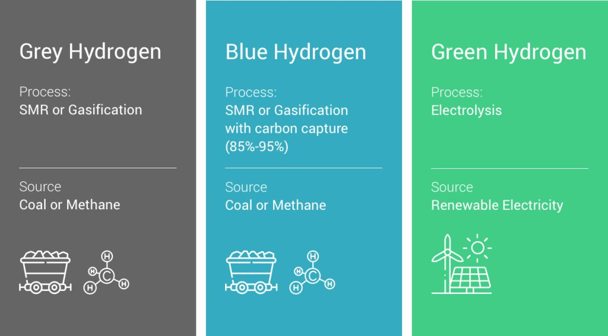
- Depending on the nature of the method of its extraction, hydrogen is categorised into three categories, namely, Grey, Blue and Green.
-
| Type | Description |
|---|
| Grey Hydrogen | It is produced via coal or lignite gasification (black or brown), or via a process called steam methane reformation (SMR) of natural gas or methane (grey). These tend to be mostly carbon-intensive processes. |
| Blue Hydrogen | It is produced via natural gas or coal gasification combined with carbon capture storage (CCS) or carbon capture use (CCU) technologies to reduce carbon emissions. |
| Green Hydrogen | It is produced using electrolysis of water with electricity generated by renewable energy. The carbon intensity ultimately depends on the carbon neutrality of the source of electricity (i.e., the more renewable energy there is in the electricity fuel mix, the "greener" the hydrogen produced). |
- Do you know?
- The International Solar Alliance (ISA) is also ushering in the introduction of energy technology to drive biodiversity conservation and livelihood.
- Conclusion
- Efficient use of renewable energy would reduce our dependence on non-renewable sources of energy, make us energy self-sufficient and make our environment cleaner. As more green power sources are developed - displacing conventional generation - the overall environmental impacts associated with electricity generation will be significantly reduced.
- CHAPTER 7: ENVIRONMENTAL ISSUES
- 7.1 INDIAN HIMALAYAN REGION (IHR) – ENVIRONMENTAL CHALLENGES
- The Indian Himalayan Region (IHR), which occupies a strategic position along the entire northern and north-eastern boundary of the country and administratively covers 10 states in their entirety (Jammu & Kashmir, Himachal Pradesh, Uttarakhand, Sikkim, Arunachal Pradesh, Nagaland, Manipur, Mizoram, Tripura, Meghalaya) and two states partially (the hill districts of Assam and West Bengal), has wide ranging ecological and socio-economic significance.
- IHR Services
- Besides innumerable goods, IHR generates a plethora of services not only for Himalayan inhabitants but also influences the lives of people living well beyond its boundaries.
- Among other services, the region, with its large area under permanent snow cover and glaciers, forms a unique water reservoir that feeds several important perennial rivers.
- With its vast green cover, IHR also acts as a giant carbon ‘sink’.
- IHR also forms a considerably large part of identified Himalayan Biodiversity global hotspot.
- Role in Indian climate
- The region, however, is facing environmental problems on account of various factors including the stress caused by anthropogenic activities. Even geologically, the Himalayan ecosystem falls under the most vulnerable category. Therefore the environmental issues being faced by the IHR are of critical importance.
- Managing the Himalayan ecosystem sustainably is critical not only for preserving its pristine beauty and spectacular landscapes, but also for ensuring the ecological security of the entire Indian sub-continent.
- (A) URBANIZATION IN THE HIMALAYAS – IS IT SUSTAINABLE?
- IMPACT - SOLID WASTE
- The continued expansion in urban settlements, influx of visitors, trekkers and mountaineers in the Himalayan region has started to pose high biotic pressure and concomitant indiscriminate solid waste dumping. As a result, the IHR is getting adversely affected.
- In the absence of proper management practices and inadequate infrastructural facilities, human induced pollution, such as solid waste, untreated sewage and local air pollution due to vehicles has been continuously increasing in the IHR.
- IMPACT - TOWN PLANNING
- Rapid unplanned growth of hill towns, construction activities without a proper plan, general non-compliance with prescribed norms and guidelines, and indiscriminate use of land for commercial outfits/tourist resorts have severely and adversely affected the fragile ecosystem of the Himalayas.
- Large scale land instabilities, drying up of natural water sources, waste disposal problems and changing socio-cultural values are known impacts of unplanned construction activities.
- Deforestation activities - cutting in an area causes ecological damage and slope instability in adjacent areas.
- INITIATIVES
- Ban on Plastic in HP
- State government enacted the Himachal Pradesh Non-Biodegradable Garbage (Control) Act, 1995 in order to prevent throwing or depositing non-biodegradable garbage in public drains, roads.
- It has then increased the minimum thickness of plastic carry bags to 70 microns of virgin material, which exceeded the 20 micron thickness recommended by Central Rules.
- Further, the state Government has taken a Cabinet decision to ban plastics altogether in the entire state since 2009.
- Urban Development through JNNURM
- “The aim is to encourage reforms and fast track planned development of identified cities. Focus is to be on efficiency in urban infrastructure and service delivery mechanisms, community participation, and accountability of ULBs/ Parastatal agencies towards citizens”.
- The duration of the mission is seven years starting from 2005-06 with initially 13 towns.
- Participatory Conservation of Lakes in the Region
- The Naini Lake is the sole source of drinking water for Nainital town, an important tourist destination in Uttarakhand state.
- Increasing inflow of tourists, urban waste making its way into the lake is adversely affecting water quality.
- To conserve the water body, the residents have switched on to a scientific garbage disposal system – under the project name ‘Mission Butterfly’ by Nainital Lake Conservation Project.
- The sweepers, on a small monthly charge, collect waste from each household and directly transfer it to the compost pits. Apart from the residents, schools and hotel owners have extended full cooperation to the authorities, to save its precious eco-system.
- In addition, they are able to generate income and employment by converting it to manure.
- Conservation of Dal Lake
- Dal Lake a favorite tourist destination attracting thousands of tourists in Jammu & Kashmir state, is also special for settlement of about 60,000 people within the lake.
- The lake is in peril due to anthropogenic pressure and overall deterioration of surrounding environment.
- The lake has been included in the lake conservation programme of the MoEF, GOI.
- The Lake and Waterways Development Authority (LAWDA), Srinagar, in collaboration with Centre for Environment Education (CEE) and other NGOs has taken up the initiative for lake conservation through education and mass awareness. Use of polythene carry bags has also been banned in the lake area.
- Assam Hill Land and Ecological Sites Act, 2006
- The Assam Hill Land and Ecological Sites (Protection and Management) Act, 2006 to prevent indiscriminate cutting of hills and filling up of water bodies in urban areas, which had led to serious ecological problems in places like Guwahati.
- Under the Act, the state government can bring any hill under its purview for protection.
- Recommendations / solutions for Solid Waste Management in IHR
- The “development” in the present context has become unsustainable. An integrated approach is, therefore, necessary to protect the environment and achieve required economic development at the same time. Advance planning based on timely and reliable data has become crucial for sustainable growth of hill towns.
- 1. Guidelines prohibiting indiscriminate disposal of garbage, particularly the non-degradable waste.
- 2. Preventive and management steps for solid waste management at the point of origin itself.
- 3. Documentation about the varying composition of waste from the hill towns to expedition tops.
- 4. Promotion of techniques such as conversion of biodegradable waste into biocompost, or vermicompost in place of land filling, open dumping or burning.
- 5. The four `R’s principle’ - Refuse waste prone commodities, Reuse discarded commodities for other uses, Reduce through segregation into categories—biodegradable and non-biodegradable at household/ individual level, and Re-cycling once fully used or completely unusable commodities/items.
- 6. Good quality potable water, available at various locations in hill towns so that people can fill their bottles, on payment basis.
- 7. Awareness and capacity building of the stakeholders.
- 8. Best international experiences & practices followed in regard to preservation of surroundings and prevention of littering in eco-sensitive places, [e.g., Alaska, Gangotri/Leh region, Nepal and China] should be examined and appropriately adopted.
- 9. Need support and innovative thinking on different aspects, ranging from traditional architectural practices, local water management and diverse systems of sewage and garbage management.
- 10. There is a need to motivate residents to switch over to a more scientific waste disposal system in a participatory manner.
- Recommendations / solutions - Hill Town Planning and Architectural Norms
- 1. Fragmentation of habitats in hill areas should be prevented.
- 2. Specific areas for rural/urban development should be designated.
- 3. No construction should be undertaken which fall in hazard zones or areas falling on the spring lines and first order streams.
- 4. Architectural and aesthetic norms for construction of buildings in mountain/hill areas should be enforced.
- 5. Deforestation activities shall not be undertaken unless appropriate measures are taken to avoid such damages.
- 6. An integrated development plan may be prepared taking into consideration environmental and other relevant factors.
- 7. In highly seismic areas like Himalaya, all construction should incorporate earthquake resistant features.
- 8. Location-specific technologies should be deployed for construction of buildings.
- 9. “Green roads” having channels for collection of water for irrigation purposes should be made a part of the construction norm.
- (B) TOURISM – WILL IT BE REGULATED?
- Pilgrimage Tourism in Sensitive Areas
- The Himalayas is known to be a home of saints, destination of pilgrimage since time immemorial.
- For example, Badrinath, Kedarnath, Gangotri-Yamunotri and Hemkund Sahib in Uttarakhand, Manimahesh, Jwala Devi, Chintpurni, Naina Devi in Himachal Pradesh and Vaishnav Devi and Amarnath in Jammu & Kashmir, Khecheopalri and other sacred lakes in Sikkim are particularly important destinations.
- Unfortunately, most of these places lack adequate facilities of transport, accommodation, waste disposal and other amenities for the ever growing number of pilgrims that visit them every year.
- Also, there is a gross lack of regulatory mechanism for infrastructure creation, management, and for controlling the tourist inflow in such sites.
- As a result the sensitive ecosystems and cultural values of these areas are facing pressures far beyond their carrying capacities.
- Impact - of Commercial Tourism
- The impacts of tourism on mountain ecosystems and biological resources are of great concern because of the high biodiversity and environmental sensitivity of the Himalayas.
- Cultural identities and diversity in mountain regions are also under threat by the economic, social and environmental forces associated with mountain tourism.
- In this context, community based ecotourism emerges as one of the sustainable alternatives to the presently practiced commercial tourism in already over saturated hill towns like Nainital, Mussoorie, Shimla, Kullu-Manali, Gangtok, etc.
- INITIATIVES
- Harnessing Religious Sentiments for Conservation
- There is immense scope of harnessing the religious sentiments of tourists in the right perspectives of conservation and sustainable management of natural resources in the eco-sensitive Himalayan areas.
- This can be done through:
- (i) Encouraging them to undertake participatory plantation for rehabilitation of degraded areas (e.g., Badrivan initiative of GBPIHED in Uttarakhand).
- (ii) Promoting the concept of eco-cultural landscapes (e.g., Demazong – Buddhist landscape, Sikkim, and Apatani eco-cultural landscape, Arunachal Pradesh). Both landscapes are highly evolved with high level of economic and ecological efficiencies.
- (iii) Involving them in maintenance and strengthening of sacred groves/landscape (e.g., Sacred Groves of Meghalaya: The tribal communities – Khasis, Garos, and Jaintias, have a tradition of environmental conservation based on religious beliefs and customary law and are protected from any product extraction.
- Ladakh Himalayan Homestays - Transforming Local Mindsets towards Snow Leopards
- The Himalayan Homestays programme fosters conservation-based community managed tourism development in remote settlements, by gradually building local capacity and ownership.
- It stands out as an example that aims to be sensitive to both host and visitor expectations without compromising the aspirations of host communities, and at the same time seeks to balance these aspects with conservation of the area’s unique cultural and natural heritage.
- Highlights of Sikkim’s Ecotourism Policy
- “Sikkim - the Ultimate Tourist Destination” is the policy motto of the state. The state is employing a system of environmental fees, and permits for entries, and stay time restrictions in some environmentally sensitive high altitude/ pristine areas.
- Operationalization of tourism in various modes, such as village tourism, nature tourism, wildlife tourism, trekking/adventure tourism, and cultural tourism in the state and institutionalization of tourism management at the community level.
- Promotion and use of local art & craft, cuisines, etc., along with organizing tourism fairs and festivals.
- Imparting training in tourism related service industries.
- The efforts made by Sikkim can be a basis of responsible tourism in other Himalayan states.
- Adventure tourism
- Immense opportunities for adventure cum ecotourism in the Himalayan region (e.g., Annapurna Conservation Area project, Nepal; Nanda Devi Biosphere Reserve ecotourism approach, Uttarakhand) could be harnessed through community involvement.
- Tourism + art and culture
- Linking of tourism with initiatives like Rural Business Hubs (RBH), as introduced in North East region, which envisages promotion of quality rural products like handloom, handicrafts, agro products, herbal products, bio-fuel, etc., may be considered as yet another aspect of promoting eco-tourism in the IHR.
- Regulated entry
- The Government of Uttarakhand has restricted the number of tourists visiting the origin of the river Ganga – Gangotri area to 150 per day.
- Recommendations / solutions – Regulating Tourism and Pilgrimage to Sensitive Areas
- 1. Pilgrimage tourism in the Himalaya requires both development and regulation so as to reduce congestion and resultant pollution.
- 2. The accommodation and road transport infrastructure needs to be developed in pilgrimage sites.
- 3. The pilgrimage tourism is a kind of “economy class” tourism in the Indian Himalayan Region. Suitable accommodation and other facilities need to be made available accordingly.
- 4. All existing sites should have adequate provision of garbage disposal and management.
- 5. An inventory of historical, sensitive and sacred sites including sacred groves should be prepared and their vulnerability should be assessed.
- 6. The access to such sites of incomparable value through vehicles needs to be restricted beyond a certain zone.
- Recommendations / solutions – Promoting Ecotourism and Regulation of Commercial Tourism
- 1. Eco-tourism villages, parks, sanctuaries and other areas should be identified to establish a primary base for ecotourism.
- 2. Village communities, especially youths, and rural women should be involved in Ecotourism.
- 3. Restrictions on the entry of vehicles and visitors per day/ per group should be imposed in sensitive ecological sites.
- 4. Local art, crafts, cuisines, and dishes should be promoted and made an integral part of tourist experience in order to ensure economic benefits to the locals and their cultural integrity/ entity is not lost.
- 5. Best practices on commercial trekking should be imposed on a mandatory basis.
- 6. Creation of log/bamboo huts should be promoted in busy mountain areas.
- Recommendations / solutions for related segments
- Rejuvenation of Springs and Degraded Sites
- Special attention should be paid to recharge of ground water and quality of mountain lakes/wetlands through restoration of forests.
- Detailed geological mapping should be conducted to identify the spring recharge zone and locate geological structures.
- Nuclear water prospecting technologies should be used to map the water sources and prevent the construction activities in such locations that could damage or adversely affect such sources.
- Engineering measures to protect recharge zone from biotic interferences.
- Social fencing measures, e.g.
- (i) digging shallow infiltration trenches, mulching.
- (ii) construction of stone-mud check dams in gullies to store rainwater and check soil erosion; and
- (iii) land levelling, maintenance of crop field bunds to allow stagnation of rainwater should be enhanced.
- Vegetative measures with the aim to enhance rainwater infiltration and reduce rainwater runoff.
- Involvement of stakeholder community should be ensured at every step of the Spring Sanctuary Development. The maintenance and aftercare of the interventions have to be ensured through their involvement.
- Rain Water Harvesting
- All buildings to be constructed in future in urban areas should have provision for roof-top rain water harvesting.
- The institutional and commercial buildings should not draw water from existing water supply schemes which adversely affect water supply to local villages or settlements.
- In rural areas rain water harvesting should be undertaken through such structures as percolation tanks, storage tanks and any other means.
- Spring sanctuary development should be undertaken in the spring recharge zones to augment spring water discharge.
- Rain water collected through storm water drains should be used to clean the waste disposal drains and sewers.
- Ground water aquifer recharge structures should be constructed wherever such structures do not lead to slope instabilities.
- Ecologically Safer Roads
- For construction of any road in the Himalayan region of more than 5 km length where the same may not be tarred roads and environmental impact assessment is otherwise not required, environmental impact assessment should be carried out in accordance with the instructions to be issued for this purpose by the State Governments.
- Provision should be made in the design of the road for treatment of hill slope instabilities resulting from road cutting, cross drainage works and culverts using bio-engineering and other appropriate techniques.
- Provisions should be made for disposal of debris from construction sites in appropriate manner at suitable and identified locations so as not to affect the ecology of the area adversely.
- Further, the dumped material should be treated using bio-engineering and other appropriate techniques.
- No stone quarrying should be carried out without proper management and treatment plan including rehabilitation plan.
- All hill roads should be provided with adequate number of road side drains and these drains shall be kept free from blockage for runoff disposal; further, the cross drains shall be treated suitably using bio-engineering and other appropriate technologies so as to minimise slope instability.
- The runoff from the road side drains should be connected with the natural drainage system in the area.
- Fault zones and historically land slide prone zones should be avoided during alignment of a road, where for any reason it is not possible to do so, the construction should be carried out only after sufficient measures have been taken to minimize the associated risks.
- Ridge alignment should be preferred to valley alignment.
- Alignment should be selected so as to minimise loss of vegetal cover.
- Encouragement should be provided for use of debris material for local development.
- 7.2 SAND MINING IN INDIA - ENVIRONMENTAL ISSUES
- Sand is an important mineral for our society in protecting the environment, buffer against strong tidal waves and storm, habitat for crustacean species and marine organisms, used for making concrete, filling roads, building sites, brick making, making glass, sandpapers, reclamations, and in our tourism industry in beach attractions.
- Sand mining is the process of removal of sand and gravel where this practice is becoming an environmental issue as the demand for sand increases in industry and construction.
- Despite a Supreme Court order that prohibits sand mining without the requisite clearance from the required authorities and places limits on the quantities that can be mined, thousands of tonnes of sand is being illegally mined to meet the rising demand of construction industry and for extraction of minerals.
- The environmental reasons for this ban and others across India are numerous. Sand acts as an aquifer, and as a natural carpet on the bottom of the river. Stripping this layer leads to downstream erosion, causing changes in channel bed and habitat type, as well as the deepening of rivers and estuaries, and the enlargement of river mouths. As the river system lowers, local groundwater is affected, which leads to water scarcities aggravating agriculture and local livelihoods.
- In terms of legal measures, ground water shortages have been noted as the patent problem with river sand mining.
- Less considered in legal action, but centrally relevant, experts also note substantial habitat and ecological problems, which include “direct loss of stream reserve habitat, disturbances of species attached to streambed deposits, reduced light penetration, reduced primary production, and reduced feeding opportunities”.
- Economic consequences of sand mining
- 1. Revenue loss to the exchequer
- For e.g.:
- It is estimated that in Noida and Greater Noida alone the loss to the exchequer is about Rs.1,000 crore, but the impact that sand mining, which is simply put theft on environment and ecology, cannot even be calculated.
- Environmental consequences of sand mining
- 1. Forcing the river to change its course
- Sand and boulders prevent the river from changing the course and act as a buffer for the riverbed.
- 2. Illegally dredged sand is equivalent to robbing water
- Sand holds a lot of water, and when it is mindlessly mined and laden on to trucks, large quantities of water is lost in transit.
- 3. Depletion of groundwater tables
- Sand, on a riverbed it acts as a link between the flowing river and the water table and is part of the aquifer.
- For e.g.:
- Illegal and excessive sand mining in the riverbed of the Papagani catchment area in Karnataka has led to the depletion of groundwater levels and environmental degradation in the villages on the banks of the river in both Andhra Pradesh and Karnataka.
- 4. Adversely impacting the habitat of micro-organisms
- There are a lot of micro-organisms that are not visible and widely known, but are critical to soil structure and fertility. When sand is dredged, literally it takes away their habitat.
- 5. Increased river erosion
- When sand and boulders are removed in an unimpeded way using heavy machines, the erosion capacity of the river increases.
- 6. Damage to roads and bridges
- For e.g.:
- In Vishnuprayag the boulders that came down with the river water damaged a side of the dam and the waters spread out across causing heavy damage.
- 7. Threat to agriculture
- For e.g.:
- Despite numerous prohibitions and regulations, sand mining continues rapidly on the riverbed of the Bharathapuzha in Kerala. Water tables have dropped dramatically and a land once known for its plentiful rice harvest now faces scarcity of water. In the villages and towns around the river, groundwater levels have fallen drastically and wells are almost perennially dry.
- 8. Damage to coastal ecosystem
- This destructive illegal practice in beaches, creeks leads to erosion along the shoreline. Eg: Kihim Beach off Alibaug, Shore levels have reduced, forcing residents to build walls to protect themselves from the sea.
- It wrecks the intertidal area and creates the imminent danger of saline water ingress into fresh water.
- Coastal sand mining destroys fisheries, disturbs coral, mangroves, wetlands and has led to the near extinction of ghariyals, a crocodile species unique to India.
- A major impact of beach sand mining is the loss of protection from storm surges associated with tropical cyclones and tsunamis.
- 9. Lesser availability of water for industrial, agricultural and drinking purposes.
- 10. Loss of employment to farm workers.
- 11. Threat to livelihoods.
- Current rules and policies in operation relation to sand mining
- Kerala:
- Kerala Protection of River Banks and Regulation of Removal of Sand Act, 2001
- Key features:
- To permit sand mining in select areas and each selected area or Kadavu will be managed by a Kadavu Committee which will decide on matters such as quantum of mining to be permitted, and to mobilise local people to oversee these operations and ensure protection of rivers and riverbanks.
- Key rivers affected:
- Bharatapuzha, Kuttiyadi river, Achankovil, Pampa and Manimala, Periyar, Bhavani, Siruvani, Thuthapuzha, and Chitturpuzha, rivers in the catchments of Ashtamudi and Vembanad lakes.
- Tamil Nadu:
- Policy that ensures that quarrying of sand in Government poramboke lands and private patta lands will only be undertaken by the Government. Mechanised sand mining is prohibited. In 2008, this policy was countermanded by the government and private parties were given permits for mining.
- Rivers affected:
- Cauvery, Vaigai, Palar, Cheyyar, Araniyar and Kosathalaiyar, Bhavani, Vellar, Vaigai, Thamiraparani, Kollidam, coastal districts of Nagapattinam, Tuticorin, Ramanathapuram and Kanyakumari, hill regions of Salem and Erode districts.
- Karnataka:
- The Uniform Sand Mining Policy does not allow sand mining in Coastal Regulation Zone (CRZ) area and prohibits the use of machineries to mine sand from river. High Court of Karnataka banned mechanised boats for sand mining in the state from April 2011.
- From September 2011, according to Karnataka Minor Mineral Concession (Amendment) Rules 2011, the responsibility of oversight of sand mining has been transferred to the Public Works, Ports and Inland Water Transport Department.
- Rivers affected:
- Cauvery, Lakshmanateerta, Harangi, Hemavathi, Nethravatai, Papagani.
- Andhra Pradesh:
- In 2006, a new policy that allows only manual labour and bullocks to mine sand in riverbeds. Bullock carts, mules and other animals would be exempted from any mining tax. Contractors will be allotted sand through open bidding by a committee headed by district joint collectors. Sand can be sold only if it has a maximum retail price tag, otherwise there will be a penalty. Use of poclaines has been banned entirely, and mining will be disallowed below three metres.
- Rivers affected:
- Godavari, Tungabhadra, Vamsadhara, Nagavali, Bahuda and Mahendratanaya.
- Maharashtra:
- New policy, 2010, under which it is compulsory for contractors to obtain permission from the Gramsabha, for sand mining. Ban on use of suction pumps in dredging and sand mining licences can be given only through a bidding process. Also sand mining projects have to obtain environmental clearances.
- Rivers affected:
- creeks at Thane, Navi Mumbai, Raigad and Ratnagiri.
- Uttar Pradesh:
- the Noida administration established a “Special Mining Squad,” charged with the specific task of impeding and ultimately extricating Greater Noida from the sand mafia’s degradation.
- Rivers affected:
- Chhoti Gandak, Gurra, Rapti and Ghaghara.
- Suggestions
- 1. The most viable alternative is ‘manufactured sand’. It is produced in a stone crushing plant. M-sand is produced from stones which is used for aggregates, and the quality is consistent and even better than river sand. M-sand is relatively cheaper too.
- 2. Sand from canal systems, bottom of dams should be allowed to be extracted periodically without any permit, as this sand reduces the carrying capacity of the canal system and also trap other materials at the bottom.
- My hometown Roorkee, the canal has deposited thousands of tons of sand at some spots.
- 3. Use of fly ash from industries as alternative should be promoted for construction purposes.
- 4. The government should exercise prudence when it comes to leasing out the riverbed for mining activities and also demarcate areas clearly and monitor mining through a suitable institutional mechanism.
- 5. Periodic assessment of how much sand can be sustainably mined, as the quantity can vary from a river to river and within a river from stretch to stretch has to be done.
- 6. The use of intrusive techniques such as the use of explosives and heavy excavator machines in sand mining are largely destructive.
- 7. In the mountain areas especially sand mining should be carried out manually and sustainably.
- 8. A high level lobbying committee must be formed and Laws has to be enforced in an efficient and unbiased way and decisive steps are to be taken for environmental solution.
- Guidelines for Sustainable Sand & Minor Mineral Mining
- 1. Where to mine and where to prohibit mining:
- District Survey Report for each district in the country, taking the river in that district as one ecological system. Use of ISRO, remote sensing data and ground truthing.
- 2. Sustainable mining:
- Mining out material only that much which is deposited annually.
- 3. Involvement of District authorities in the process:
- The District-level Environment Impact Assessment Authority (DEIAA) headed by District Collector. The District Collector is to be assisted by the District Level Expert Appraisal Committee (DEAC) headed by Executive Engineer (Irrigation Department) being assigned the responsibility of granting environment clearance up to 5 hectare of mine lease area for minor minerals, mainly sand. So district administration, which is the key in assessing the requirement of sand in a district and prohibiting illegal sand mining in district is being involved directly in environmental clearance.
- 4. Monitoring using scientific tools:
- Stringent monitoring of movement of mined out material from source to destination using information technology tools, bar coding, SMS etc. Till date, there is no authentic data on how much sand is being mined, this system will generate real-time data on mined out sand. The movement of sand is controlled through Transit Permit.
- 5. The monitoring of mined out mineral, Environmental Clearance, EC conditions and enforcement of Environment Management Plan (EMP) will be ensured by the District Collector and the State Pollution Control Board. The monitoring of enforcement of EC conditions can be done by the Central Pollution Control Board, Ministry of Environment, Forest and Climate Change and the agency nominated by Ministry for the purpose.
- 6. Exemptions:
- Proposal to exempt certain category from mining for the purpose of environmental clearance, like:
- i. Extraction of ordinary clay or ordinary sand manually by hereditary Kumhars (potters) who prepare earthen pots on a cottage industry basis.
- ii. Extraction of ordinary clay or ordinary sand manually by earthen tile makers who prepare earthen tiles on a cottage industry basis.
- iii. Removal of sand deposited on agricultural field after flood by owner farmers.
- iv. Customary extraction of sand and ordinary earth from sources situated in Gram Panchayat for personal use or community work in a village.
- v. Community works like desilting of village ponds/tanks, construction of village/rural roads, bunds undertaken in MGNREGS and other Government-sponsored schemes.
- vi. Dredging and desilting of dam, reservoirs, weirs, barrages, river and canals for the purpose of maintenance and upkeep, and the dredged material is used departmentally. If the dredging activities are undertaken for the purpose of winning of mineral and selling it commercially, it will be considered mining and prior EC will be required.
- 7. Guideline on handling cluster issues:
- The original EIA notification does not provide for the procedure to handle cluster situation, which has been proposed in this guideline and will become part of the Notification. One EIA/EMP will be prepared for one cluster irrespective of number and size of mining leases in that cluster, if the area is more than 5 hectares. Area less than 5 hectare will be B2.
- 7.3 PALM OIL – ENVIRONMENTAL ISSUES AND INDIA’S ROLE IN IT
- When forest shrink, so does the home of endangered species
- Palm oil has emerged as the main global source of vegetable oil due to adequate availability, versatility in usage, higher yield and lower cost, as compared to other vegetable oils. Palm oil is generally sold in the name of vegetable oil.
- Palm oil forms 33% of the world vegetable oil production mix. Indonesia and Malaysia contribute almost 87% of production of palm oil, whereas China and India constitute 34% of imports.
- Global edible oil consumption has grown from 123 Million Metric tonnes in 2007 to 158 Mn MT in 2012. This growth has been fuelled by increased population, incomes and per capita consumption especially in developing countries like India, Indonesia and China, etc. Palm oil, at 48.7 Mn MT is the largest consumed edible oil in the world.
- As demand for palm oil increases, substantial tracts of tropical forests are often cleared to make room for large plantations. As per WWF’s estimates, the expansion of oil palm plantations is likely to cause four million hectares (more than twice the size of Kerala) of forest loss by 2020.
- Deforestation would most likely occur in high biodiversity areas, such as Borneo, Papua New Guinea, Sumatra and the Congo Basin in Africa. The felling and burning of forests impact populations of endangered wildlife such as Sumatran Tigers, Rhinos and Orangutans. It also has adverse impacts on people’s health and disrupts local livelihoods.
- At the global level, the impacts of forest loss are even more dramatic, including the release of greenhouse gases into the atmosphere that contribute to global warming.
- Applications of Palm Oil
- (1) Food based applications
- Cooking oil, substitute for butter, vanaspati/vegetable ghee, margarine, confectionary and bakery fats, ice cream, coffee creamers, emulsifiers, vitamin E supplements among others.
- (2) Non-food applications
- Cosmetics, toiletries, soaps and detergents. Oleo chemical industry, as a base material for laundry detergents, household cleaners and cosmetics.
- According to USDA estimates, 75% of the global palm oil consumption is for food purposes, while 22% is for industrial/non-food purposes. The remaining, though currently, of marginal quantity, is used for biodiesel.
- ENVIRONMENTAL IMPACTS OF PALM OIL PRODUCTION
- 1. Deforestation
- Substantial tracts of tropical forests are cleared to make room for large plantations to service an ever increasing demand for palm oil. Studies show that the forest cover on the island of Borneo had declined from 73.7 percent in 1985 to 50.4 percent in 2005, while the projected cover in 2020 was 32.6 percent. Loss of forest cover in Sumatra, Indonesia, has also been very alarming.
- 2. Loss of biodiversity
- Concerns about biodiversity loss are directly related to the loss of natural forests. In particular, orangutan habitats have been threatened by palm oil production. In 1900, there were around 315,000 orangutans in Indonesia and Malaysia. Today, fewer than 50,000 exist in the wild, split into small groups. The palm oil industry is the biggest threat to orangutans, with the species likely to be driven to extinction within 12 years unless the devastation of their natural habitat is halted. A related problem has been that fragmentation of natural forest habitats and encroachment by palm oil development which has resulted in serious human-wildlife (elephant, etc) conflicts.
- 3. Climate change
- 15% of all human induced greenhouse gas emissions are caused by deforestation, forest degradation and peat land emissions. As land on mineral soil becomes less readily available, the expansion of oil palm is increasing on peat lands. As these areas are drained, the peat is exposed to oxidation, resulting in significant CO2 release over an extended period. Other significant sources of GHG emissions associated with oil palm are the use of fires for land clearing and the emissions of methane from the effluent treatment ponds of palm oil mills. Forests are felled, peat swamps drained and burnt, creating a haze that covers large areas, affecting people’s health and disrupting economic activities.
- 4. Use of pesticides and fertilizers
- Misuse of pesticides and fertilizers is frequently cited as a negative impact of oil palm cultivation. In general, pesticide use is low compared to many other crops, but some chemicals used, pose significant risks to operators and smallholders and the environment. Among these hazardous chemicals, the herbicide paraquat gives the most cause for concern, as it poses serious health hazards to the spray operators. The Pesticides Action Network-Asia & the Pacific has called for a ban on paraquat production and use on numerous occasions, but to no avail.
- INDIA and OIL PALM
- Indonesian palm oil companies produce palm oil by destroying virgin rainforests and tiger habitat in Indonesia. Indian huge palm oil imports from Indonesia is been accelerating the destruction of rainforest. India’s palm oil demand destroying Indonesia’s rainforests.
- The expansion of palm oil plantations to meet the global demand for vegetable oils (palm oil usually used in this name) happens at the expense of forest, wildlife and communities.
- Consumption of palm oil in India
- Palm oil dominates India’s edible oil imports: as of recent estimates, it constitutes about 55.4 % of total edible oil imports, making it the single largest contributor to the country’s vegetable oil trade deficit.
- India, being the largest importer, purchases nearly 9 million tonnes of palm oil in 2022-23, which accounted for about 57 % of all edible oil imports that year.
- Nearly 90 % of imported and domestically produced palm oil is used for edible/food purposes, while the rest goes to industrial or non-edible uses; it remains the most consumed vegetable oil in India.
- Palm Oil in India – Production
- India produces approximately 0.4% of the world's total palm oil, with an output of around 305,000 metric tons in 2023, making it the 13th largest producer globally.
- Despite being the world's fourth-largest oilseed producer, India's domestic production remains limited, and the country continues to be a net importer of palm oil.
- The Indian government aims to expand palm oil cultivation to 1 million hectares by 2025–26, targeting a production of 2.8 million tonnes of crude palm oil by 2029–30 under the National Mission on Edible Oils – Oil Palm (NMEO-OP).
- State-wise Palm Oil Production in India
- Andhra Pradesh leads in palm oil production, accounting for approximately 85% to 90% of the country's output, with an area of 2.49 lakh hectares under cultivation and an average productivity of 19.81 tonnes per hectare.
- Telangana contributes about 7%, and Kerala about 5% to the national production.
- Other contributing states include Karnataka, Tamil Nadu, Goa, Odisha, Assam, Tripura, Nagaland, Mizoram, and Arunachal Pradesh, which are part of the government's plantation drive.
- Major constraints in domestic cultivation of oil palm
- Geographical location:
- The ideal locations for oil palm trees are within eight degrees latitude north and south of the Equator.
- Irrigation:
- Palms need regular rainfall throughout the year. However, they can withstand dry periods of 3-4 months depending on soils type without irrigation. Oil palm can be grown in Kerala, Andhra Pradesh, Karnataka, Goa and a few other areas, but only with irrigation. This places significant pressure on the hydrological system of the region.
- Long gestation periods:
- Oil palm has very high productivity when compared to other oilseeds like mustard, however, the farmers would have to wait for four years for the trees in India to obtain yield.
- Small farm holdings with Indian farmers generally are challenging.
- Limited investments by corporate sector compared with Malaysia and Indonesia.
- Policies Related to Production and Distribution of Palm Oil
- Subsidies for distribution of imported palm oil:
- The Ministry of Food has been subsidizing imported edible oil distribution under the public distribution system (PDS):
- To provide relief, in particular BPL households, from the rising prices of edible oils, the Central Government introduced a scheme for distribution of up to 10 lakh tons of imported edible oils in 2008-09 at a subsidy of Rs 15/- per kg through State Governments/UTs.
- The scheme was extended during 2009-10, 2010-2011 and in 2011-12. After the implementation of the scheme, edible oil prices have substantially declined and poorer sections were provided edible oils at subsidized rates.
- Oil Palm Development Programme in India:
- OPDP was launched during 1991-92 under the “Technology Mission on Oilseeds and Pulses” (TMOP), with a focus on expansion of area under oil palm cultivation.
- From 2004-05, the scheme is being implemented as part of the “Integrated Scheme of Oilseeds, Pulses, Oil Palm & Maize” (ISOPOM) and provides support for oil palm cultivation in 12 states: Andhra Pradesh, Assam, Gujarat, Goa, Karnataka, Kerala, Maharashtra, Mizoram, Orissa, Tamil Nadu, Tripura & West Bengal.
- For the year 2011-12, the government rolled out the Oil Palm Area Expansion (OPAE) Programme in order to bring an additional 60,000 hectares area under oil palm cultivation.
- The government has also announced various subsidies for oil palm growers for planting, buying pump set and drip-irrigation systems, partial compensation in case of loss during the gestation period and support for processing units.
- Roundtable on Sustainable Oil (RSPO)
- The RSPO was established in 2004 to promote the production and use of sustainable palm oil for people, planet and prosperity.
- RSPO is a membership based organisation with oil palm growers, palm oil processors and traders, consumer good manufacturers, NGOs and retailers.
- 8 principles for growers to be RSPO certified:
- commitment to transparency
- compliance with applicable laws and regulations
- commitment to long term economic and financial viability
- use of appropriate best practices by growers and millers
- environmental responsibility and conservation of natural resources and biodiversity
- responsible consideration of employees, and of individuals and communities affected by growers and mills
- responsible development of new plantings
- commitment to continuous improvement in key areas of activity
- RSPO impact
- Presently 14 % of palm oil globally is certified by RSPO.
- It is however important to understand that palm oil itself is not the problem, but rather how palm oil is produced. When done right, palm oil can be a catalyst for development and to improve livelihoods. It can also enhance biodiversity and sequestrate carbon dioxide when planted on degraded lands.
- Palm oil is 50% saturated fats and 50% unsaturated fats in its natural form. However, the chains of molecules are small, so it is not unhealthy if consumed in limit like ghee.
- To ensure an uninterrupted supply of ‘clean‘ palm oil that does not involve sacrificing the remaining tropical forests or contributing to global warming and other social problems, all companies that produce, trade or use palm oil need to move towards sustainable palm oil.
- 7.4 COLONY COLLAPSE DISORDER
- Bees are one of a myriad of other animals, including birds, bats, beetles, and butterflies, called pollinators. Pollinators transfer pollen and seeds from one flower to another, fertilizing the plant so it can grow and produce food. Cross-pollination helps at least 30 percent of the world’s crops and 90 percent of our wild plants to thrive. Without bees to spread seeds, many plants – including food crops – would die off.
- Bees are not summertime nuisance, they are small and hard-working insects actually make it possible for many of your favorite foods to reach your table. From apples to almonds to the pumpkin in our pumpkin pies, we have bees to thank. Now, a condition known as Colony Collapse Disorder is causing bee populations to plummet, which means these foods are also at risk.
- Colony Collapse Disorder (CCD) is a new tagname presently being given to a condition that is characterized by an unexplained rapid loss of a Bee colony’s adult population.
- Sudden loss of a colony’s worker bee population with very few dead bees found near the colony. The queen and brood (young) remained, and the colonies had relatively abundant honey and pollen reserves. But hives cannot sustain themselves without worker bees and would eventually die. This combination of events resulting in the loss of a bee colony has been called Colony Collapse Disorder (CCD).
- Reduction or loss of bee population has been seen in the history and known by the name such as disappearing disease, spring dwindle, May disease, autumn collapse, and fall dwindle disease.
- Symptoms
- Contain no adult bees, with few to no dead bees around the colony.
- Contain capped brood.
- Contain food stores that are not robbed by neighboring bees or colony pest.
- Worker bees failed to return to colony from flight.
- CAUSES
- The problem is that there doesn’t seem to be a single smoking gun behind CCD but a range of possible causes, including:
- Global warming
- Global warming causes flowers to bloom earlier or later than usual. When pollinators come out of hibernation, the flowers that provide the food they need to start the season has already bloomed.
- Pesticide (neonicotinoids, a neuroactive chemical)
- It’s not that the pesticides which are aimed at other insects are killing the bees outright. Rather that sublethal exposure of pesticides in nectar and pollen may be interfering with the honeybees internal radar, preventing them from gathering pollen and returning safely to the hive.
- Varroa mite - parasites
- European foulbrood (A bacterial disease that is increasingly being detected in U.S. bee colonies) microsporidian fungus Nosema.
- Malnutrition
- Beekeepers collect (steal) bees honey so humans can consume it, they are taking away the insects’ food. They replace it with high-fructose corn syrup, leaving the bees malnourished and weakening their immune systems.
- Researchers have identified some specific nutrients that bees need, get from honey, and don’t get from corn syrup.
- When honeybees collect nectar from flowers, they also gather pollen and a substance called propolis, which they use to make waxy honeycombs. The pollen and propolis are loaded with three types of compounds that can help the bees detoxify their cells and protect themselves from pesticides and microbes.
- Metal Pollution
- Bees absorbing metal pollution from flowers that absorbed it from the soil that absorbed it from modern machines and vehicles.
- Stress
- The stress of shipping bees back and forth across the country, increasingly common in commercial beekeeping, may be amplifying the stress on the insects and leaving them more vulnerable to CCD.
- Habitat loss
- Habitat loss brought by development, abandoned farms, growing crops without leaving habitat for wildlife and growing gardens with flowers that are not friendly to farmers.
- How can we Protect Bees?
- Policy makers must take action to protect the bees and other pollinators.
- Farmers must be rewarded for practices that help wild bee populations thrive.
- Assistance should be provided to farmers who plan to support a wider variety of pollinators beyond just bees.
- Bee research must be strengthened, and must also be broadened to include research on pollinators besides honey bees.
- Integrated Pest Management (IPM) techniques should be used to minimize pesticide use and risk to bees.
- City dwellers can also practice IPM where they live, work, and play to protect our health, water quality, and pollinators.
- And if CCD continues, the consequences for the agricultural economy — and even for our ability to feed ourselves — could be dire.
- Neonicotinoids
- Neonicotinoids are a new class of insecticides chemically related to nicotine. The name literally means “new nicotine-like insecticides”. Like nicotine, the neonicotinoids act on certain kinds of receptors in the nerve synapse. They are much more toxic to invertebrates, like insects, than they are to mammals, birds and other higher organisms.
- Neonicotinoids share a common mode of action that affect the central nervous system of insects, resulting in paralysis and death.
- One thing that has made neonicotinoid insecticides popular in pest control is their water solubility, which allows them to be applied to soil and be taken up by plants. Soil insecticide applications reduce the risks for insecticide drift from the target site, and for at least some beneficial insects on plants.
- They include imidacloprid, acetamiprid, clothianidin, dinotefuran, nithiazine, thiacloprid and thiamethoxam.
- Uncertainties prevail since their initial registration regarding the potential environmental fate and effects of neonicotinoid pesticides, particularly as they relate to pollinators.
- Studies conducted in the late 1990s suggest that neonicotinic residues can accumulate in pollen and nectar of treated plants and represent a potential risk to pollinators.
- There is major concern that neonicotinic pesticides play a role in recent pollinator declines.
- Neonicotinoids can also be persistent in the environment, and when used as seed treatments, translocate to residues in pollen and nectar of treated plants.
- New research points out potential toxicity to bees and other beneficial insects through low level contamination of nectar and pollen with neonicotinoid insecticides used in agriculture. Although the low level exposures do not normally kill bees directly, they may impact some bee’s ability to foraging for nectar, learn and remember where flowers are located, and possibly impair their ability to find their way home to the nest or hive.
- In April 2013, the European Commission decided to introduce a 2-year moratorium in EU on the 3 neonicotinoid compounds—clothianidin, imidacloprid, and thiamethoxam—following reports by the European Food Safety Authority (EFSA) saying the substances pose an “acute risk” to honey bees essential to farming and natural ecosystems.
- 7.5 WILDLIFE (ELEPHANT, LEOPARD, ETC) DEATHS DUE TO COLLISION WITH TRAINS
- Such accidents pose a grave danger to wildlife, and to the conservation of our national biodiversity.
- Article 48A (DPSP) of the Indian Constitution, it is stated that the State shall endeavor to protect and improve the environment and to safeguard the forests and wild life of the country.
- Article 51A (Fundamental Duties) to protect and improve the natural environment including forests, lakes, rivers and wild life and to have compassion for living creatures.
- It is the duty of every citizen to preserve, protect and nourish our wildlife heritage, particularly since these animals are helpless in facing the challenge of biotic pressure.
- What has to be done?
- Coordination between MoEF and Railways has to be enhanced to ensure the safety of wildlife.
- Vulnerable patches for wildlife to be identified as wild life crossing spots, and signage put up to warn train drivers and other railway personnel, to enable them to give directions for trains to slow down their speed in these patches in the normal course.
- Update the list of well known vulnerable patches for wild life, and conveying them to the Railways.
- Electronically tag prominent wildlife like elephants, leopards, etc particularly in high traffic areas, so that wildlife and forest personnel could keep track of their movements, and warn railway officials well in time to enable them to avoid accident. Once they are electronically tagged, forest personnel could track their movements, and keep them from harm.
- Improvement in infrastructure for forest and Railway staff, such as, equipped with walkie talkies, constant connection with the control room, etc.
- In prominent wildlife areas, or wherever considered necessary, forest officials should be posted at Railway control rooms to coordinate with railway staff, informed regarding the movement of elephants, to enable railway authorities to take preventive action, well in advance.
- Strict instructions to all railway and forest field personnel, emphasizing the importance of the protection and conservation of wild life.
- 7.6 IMPACT OF RADIATION FROM MOBILE PHONE TOWERS ON HUMAN BEINGS AND WILDLIFE
- The remarkable increase in mobile phones users in the country and mushrooming of mobile tower installations in every nook and corner of cities and towns have raised concerns on its probable impact on wildlife and human health.
- Health Impacts
- Every antenna on cell phone tower radiates electro-magnetic power. One cell phone tower is being used by a number of operators, more the number of antennas more is the power intensity in the nearby area. The power level near towers is higher and reduces as we move away.
- How the cell phone tower’s radiation affects the birds and bees?
- The surface area of bird is relatively larger than their body weight in comparison to human body so they absorb more radiation.
- Also the fluid content in the body of the bird is less due to small body weight so it gets heated up very fast.
- Magnetic field from the towers disturbs birds’ navigation skills hence when birds are exposed to EMR they disorient and begin to fly in all directions.
- A large number of birds die each year from collisions with telecommunication masts.
- How the cell phone tower’s radiation affects human?
- EMR may cause cellular and psychological changes in human beings due to thermal effects that are generated due to absorption of microwave radiation.
- The exposure can lead to genetic defects, effects on reproduction and development, Central Nervous System behaviour etc.
- EMR can also cause non thermal effects which are caused by radio frequency fields at levels too low to produce significant heating and are due to movement of calcium and other ions across cell membranes.
- Such exposure is known to be responsible for fatigue, nausea, irritability, headaches, loss of appetite and other psychological disorders.
- The current exposure safety standards are purely based on the thermal effects considering few evidences from exposure to non thermal effects.
- What are the responsibilities of Stakeholders?
- Ministry of Environment, Forest and Climate Change (MoEF):
- The MoEF has to notify the impacts of communication towers on wildlife and human health to the concerned agencies for regulating the norms for notification of standards for safe limit of EMR.
- Side note:
- Earlier, it was simply Ministry of Environment and Forests (MoEF); “Climate Change” was added in 2014 to reflect India’s commitment to global climate issues.
- State/Local Bodies:
- Regular monitoring and auditing in urban localities/educational/hospital/ industrial/ residential/ recreational premises including the Protected Areas and ecologically sensitive areas.
- Carry out an ‘Ecological Impact Assessment’ before giving permission for construction of towers in wildlife and ecologically important areas.
- State Environment and Forest Department:
- State Environment and Forest Department are entrusted with the task of providing regular awareness among the people about the norms on cell phone towers and dangers of EMR from them.
- Department of Telecommunications:
- Avoid overlapping of high radiation fields. New towers should not be permitted within a radius of one kilometer of the existing tower.
- The location and frequencies of cell phone towers and other towers emitting EMR should be made available in the public domain.
- GIS mapping of all the cell phone towers to be maintained to monitor the population of bird and bees in and around the wildlife protected area and the mobile towers.
- Need to refine the Indian standard on safe limits of exposure to EMR, keeping in view the available literature on impacts on various life forms.
- To undertake Precautionary approaches to minimize the exposure levels and adopt stricter norms.
- Other agencies:
- Any study conducted on impact of EMF radiation on wildlife needs to be shared to facilitate appropriate policy formulations.
- 7.7 GENETICALLY ENGINEERED (GE) TREES
- The proponents of biotechnology industry claim that trees that are genetically altered grow faster and yield better quality of wood in extreme temperatures. Thus they are a boon to forestry in dealing with climate change.
- Historical background
- The first field trials of GE trees were started in Belgium in 1988, when researchers began to develop poplar trees that were herbicide resistant and that could grow faster. In 2002, China established commercial GE poplar trees plantation as a strategy to address the issue of deforestation.
- Initially GE trees were established in 300 hectares, and now China has embraced the GE technology on a large scale, integrating this into forestry sector. Latin American countries like Brazil and Argentina, the forerunners in GM food crops are also working on GE trees to enhance the production of pulp and paper.
- Is GE trees safer than GM crops?
- For:
- The proponents of the technology claim that GE trees are safer and there is no need to fear about negative consequences. Already the United Nations has approved plantations of GE trees as carbon sinks under Kyoto Protocol’s clean development mechanism. With this stamp of approval, many countries would like to adopt the technology and establish GE plantations.
- Against:
- Environmentalists state that this technology poses as serious a threat as GM crops. The trees are perennial, that live longer than agricultural crops. The changes in the metabolism of trees may occur many years after they are planted, and trees are wild, undomesticated. This makes it difficult to decipher as to how the introduced gene will behave in natural environment. This fact implies that the ecological risks associated with GE trees are far greater than the agricultural crops.
- It has also been documented that the tree pollen travels a distance of more than 600 km. The probability that the GE tree pollen is likely to contaminate vast expanses of native forests with a wide variety of destructive traits may be a threat to ecological balance and the existing biodiversity of the tropical forests in global south. The contaminated pollen might pose threat to honey bees, adversely impacting pollination in the wild and on agriculture crops.
- Who are behind developing GE trees and why?
- It is ArborGen a subsidiary of Monsanto, oil companies like British Petroleum and Chevron that are investing in this technology. For these companies GE trees offer a viable alternate to fossil fuels as GE trees could produce ethanol, a green fuel. As the ethanol produced from food stocks came under attack, the companies see bright future in non-food cellulose feedstock like GE trees.
- In INDIA
- The first experiment with genetically engineered tree was with rubber tree developed by the Rubber Research Institute in Kerala. The GE rubber are better adapted to drought resistance and increased environment stress tolerance.
- This will help to establish rubber in non traditional areas where the conditions are not favourable. Ironically the field trials for GE rubber trees were approved by the then environmental minister (Mr. Jairam Ramesh). Ministry asserted that the genetically modified trees posed lesser threat in comparison to the food crops.
- This assumption is baseless as the seeds of rubber tree are used as cattle feed, that gets into the food chain through milk. Similarly, Kerala is one of those regions that produce large quantity of rubber honey from rubber plantations.
- Kerala, a GM free state worried about the implications of GE rubber on biodiversity, has voiced its concern about bio safety issues. Now the rubber trees are being experimented in Maharashtra.
- These developments show the predominance of the western forestry science that lays emphasis on forests as a commercial entity to produce wood and pulp. Diverse forests were simplified by removal of multiple species and establishing monocultures that had commercial value. Already the country’s landscape is scarred with millions of hectares of teak and eucalypts mono culture plantations. This approach has had negative consequences for the environment, biodiversity and the local indigenous people. The same trend will be reinforced with the establishment of GE tree plantations, leading to further devastation of the natural environment and forests.
- Case of eucalyptus
- Eucalyptus is native to Australia. It was introduced to India during the British colonial period (19th–20th century) for its fast growth, timber, and fuelwood potential.
- Most of the eucalyptus trees in Indian cities, including Roorkee, were planted intentionally rather than being purely natural.
- Why planted?
- Afforestation & Commercial Use:
- Eucalyptus grows quickly, so it was planted for timber, paper, and fuelwood plantations.
- Urban Planting:
- Municipalities planted it along roads, parks, and riverbanks because it grows fast and can stabilize soil.
- Industrial Demand:
- Large eucalyptus plantations were encouraged for pulp and paper industries in cities like Roorkee (near Uttarakhand’s industrial belt).
- 7.8 MoEF BANNED DOLPHIN CAPTIVITY
- Ministry of Environment and Forests has banned dolphin captivity within India. This opens up a whole new discourse of ethics in the animal protection movement in India.
- The unprecedented decision is particularly significant because it reflects an increasing global understanding that dolphins deserve better protections based on who – rather than what – they are.
- Dolphinariums in India
- India’s only experience of keeping dolphins was in the late 1990s. Four dolphins were imported from Bulgaria to Chennai’s Dolphin City, a substandard marine-themed amusement show, where they died within 6 months of arrival.
- New proposals
- Several state governments had recently announced plans for the state tourism development corporations to establish dolphinariums for commercial dolphin shows. Dolphins are a major tourist attraction at amusement parks abroad.
- The major proposals that were made for similar establishments were by the Maharashtra Tourism Development Corporation, the Kerala fisheries department in Kochi and a few private hoteliers in Noida in the National Capital Region.
- Why ban?
- Cetaceans, including whales, dolphins and porpoises, are known to be highly intelligent animals. However, they do not adjust well to living in captivity. Confinement alters their behaviour and causes extreme distress.
- The captivity industry exploit the lives of dolphins by denying them freedom and being allowed to cause them harm and the captivity industry has become adept at hiding the harm they cause to dolphins in their care.
- Despite the fact that some humane laws exist to prevent unnecessary cruelty, animals are still considered property and are usually denied the basic rights of life, liberty or freedom from harm.
- The rights include not to be captured, confined, or killed, in order to prevent the suffering that they most likely experience when these rights are violated.
- Several countries, including Brazil, the United Kingdom and Chile, have banned dolphins in captivity.
- The move by MoEF came after months of protests against a proposed dolphin park in the southern state of Kerala and plans for several other marine mammal parks in other parts of the country.
- MoEF order
- According to the circular released by the Central Zoo Authority, states that because dolphins are by nature “highly intelligent and sensitive,” they ought to be seen as “nonhuman persons” and should have “their own specific rights.”
- It says that it is “morally unacceptable to keep them captive for entertainment purposes.”
- MoEF has asked all states to reject proposals for dolphinariums either by private parties or by government agencies, asking them not to allow import or capture of cetacean species and their use for commercial entertainment, and private or public exhibition.
- In India, the Gangetic Dolphin and Snubfin Dolphin are protected species as per the Indian Wildlife (Protection) Act, 1972. The government has also declared Gangetic Dolphin as the national aquatic animal.
- Various animal protection organisation under the banner of Federation of Indian Animal Protection Organisations (FIAPO), has campaigned in the country to ban the establishment of dolphinariums.
- 7.9 PROHIBITION OF REMOVAL OF SHARK FINS IN THE SEA
- With a view to stop the inhuman hunting of sharks and to enable the enforcement agencies to monitor the illegal hunting/poaching of the species of Sharks, Rays and Skates (Elasmobranchs) listed in Schedule I of the Wild Life (Protection) Act, 1972, Minister of for Environment and Forests has approved a policy for prohibiting the removal of shark fins on board a vessel in the sea.
- The policy prescribes that any possession of shark fins that are not naturally attached to the body of the shark, would amount to “hunting” of a Schedule I species. The Policy calls for concerted action and implementation by the concerned State Governments through appropriate legislative, enforcement and other measures.
- They play an important role in maintenance of the marine ecosystem like tigers and leopards in the forests.
- India is known to be home to about 40-60 species of sharks. However, the population of some of these have declined over the years due to several reasons including over exploitation and unsustainable fishing practices.
- Due to high demand of shark fins in the shark fin-soup industry, it has been reported that the fins of the sharks captured in the mid sea are removed on the vessel and the de finned sharks are thrown back in the sea to die.
- This has resulted in inhuman killing of large number of sharks and further decimated the population of Schedule I species.
- This practice prevailing on board the shipping vessels has led to difficulties in enforcement of provisions of Wild Life (Protection) Act, 1972 as it becomes difficult to identify the species of sharks from the fins alone, without the corresponding carcass, from which the fins have been detached.
- 7.10 COST OF ENVIRONMENTAL DEGRADATION IN INDIA
- The annual cost of environmental degradation in India is about Rs. 3.75 trillion, or 5.7% of India’s 2009 gross domestic product (GDP), according to a report released by the World Bank.
- The impact of outdoor air pollution on GDP is the highest and accounts for 1.7% of the GDP loss, said the report.
- Indoor air pollution is the second-biggest offender and costs India 1.3% of GDP.
- “The higher costs for outdoor/indoor air pollution are primarily driven by an elevated exposure of the young and productive urban population to particulate matter pollution that results in a substantial cardiopulmonary and chronic obstructive pulmonary disease (heart ailments) mortality load among adults,” the report said.
- The study, titled Diagnostic Assessment of Select Environmental Challenges in India, has taken into account environmental damage in India from urban air pollution, including particulate matter and lead; inadequate water supply; poor sanitation and hygiene; and indoor air pollution. Other factors that contribute to the loss include damage to natural resources because of worsening agricultural output because of an increase in soil salinity, water logging and soil erosion; rangeland degradation; deforestation and natural disasters.
- “Environmental pollution, degradation of natural resources, natural disasters and inadequate environmental services, such as improved water supply and sanitation, impose costs to society in the form of ill health, lost income, and increased poverty and vulnerability,” the report said.
- A significant portion of diseases caused by poor water supply, sanitation and hygiene affect children younger than five, the report said. It attributed 23% of child mortality in the country to environmental degradation.
- Following the concept of growing economically now and cleaning up later will not be environmentally sustainable for the country in the long run, said the lead author of the report.
- The possible policy options to reduce particulate matter pollution could be incentivizing technology upgradation, securing efficiency improvements, strengthening enforcement and enhancing technology and efficiency standards.
- Steps taken by the Indian Government for control air pollution
- formulation of a Comprehensive Policy for Abatement of Pollution,
- supply of improved auto–fuel,
- tightening of vehicular and industrial emission norms,
- mandatory environmental clearance for specified industries,
- management of municipal, hazardous and bio-medical wastes,
- promotion of cleaner technologies,
- strengthening the network of air quality monitoring stations,
- assessment of pollution load,
- source apportionment studies,
- preparation and implementation of action plans for major cities & critically polluted areas,
- Public awareness.
- CHAPTER 8: ENVIRONMENTAL IMPACT ASSESSMENT
- Environmental Protection and Sustainable Development has been the cornerstones of the policies and procedures governing the industrial and other developmental activities in India.
- The Need for EIA
-
- Every anthropogenic activity has some impact on the environment. More often it is harmful to the environment than benign. However, mankind as it is developed today cannot live without taking up these activities for his food, security and other needs. Consequently, there is a need to harmonise developmental activities with the environmental concerns. It is desirable to ensure that the development options under consideration are sustainable. In doing so, environmental consequences must be characterised early in the project cycle and accounted for in the project design.
- Environmental Impact Assessment (EIA)
- Environmental impact assessment (EIA) is one of the tools available with the planners to achieve the goal of harmonising development activities with the environmental concerns.
- EIA integrates the environmental concerns in the developmental activities right at the time of initiating for preparing the feasibility report. In doing so it can enable the integration of environmental concerns and mitigation measures in project development. EIA can often prevent future liabilities or expensive alterations in project design.
- The objective of EIA is to foresee the potential environmental problems that would arise out of a proposed development and address them in the project’s planning and design stage. EIA/ Environment Management Plan (EMP) should assist planners and government authorities in the decision making process by identifying the key impacts/issues and formulating the mitigation measures.
- EIA is a planning tool which is accepted as an integral component of sound decision-making.
- Ministry of Environment & Forests (MoE&F) has taken several policy initiatives and enacted environmental and pollution control legislations to prevent indiscriminate exploitation of natural resources and to promote integration of environmental concerns in developmental projects.
- One such initiative is the Notification on Environmental Impact Assessment (EIA) of developmental projects 1994 under the provisions of Environment (Protection) Act, 1986.
- India enacted the Environment (Protection) Act on 1986. To achieve the objectives of the Act, one of the decisions that were taken is to make environmental impact assessment statutory.
- Besides EIA, the Government of India under Environment (Protection) Act 1986 issued a number of other notifications, which are related to environmental impact assessment. These are limited to specific geographical areas. They are
- Prohibiting location of industries except those related to Tourism in a belt of 1 km from high tide mark from the Revdanda Creek up to Devgarh Point (near Shrivardhan) as well as in 1 km belt along the banks of Rajpuri Creek in Murud Janjira area in the Raigarh district of Maharashtra (1989)
- Restricting location of industries, mining operations and regulating other activities in Doon Valley (1989)
- Regulating activities in the coastal stretches of the country by classifying them as coastal regulation zone and prohibiting certain activities (1991)
- Restricting location of industries and regulating other activities in Dahanu Taluka in Maharashtra (1991)
- Restricting certain activities in specified areas of Aravalli Range in the Gurgaon district of Haryana and Alwar district of Rajasthan (1992)
- Regulating industrial and other activities, which could lead to pollution and congestion in an area north west of Numaligarh in Assam (1996)
- Do you know?
- Khangchendzonga National Park (KNP), Sikkim has been inscribed as India’s first “Mixed World Heritage Site” on UNESCO World Heritage List, by fulfilling the nomination criteria under both natural and cultural heritage.
- 8.1. INDIAN POLICIES REQUIRING EIA
- The environmental impact assessment in India was started in 1976-77 when the Planning Commission asked the then Department of Science and Technology to examine the river-valley projects from environmental angle. This was subsequently extended to cover those projects, which required approval of the Public Investment Board. These were administrative decisions, and lacked the legislative support.
- 8.2 THE EIA CYCLE AND PROCEDURES
- The EIA process in India is made up of the following phases:
- Screening
- Scoping
- Baseline data collection
- Impact prediction
- Assessment of alternatives, delineation of mitigation measures and environmental impact statement
- Public hearing
- Environment Management Plan
- Decision making
- Monitoring the clearance conditions
- 8.2.1 Screening
- Screening is done to see whether a project requires environmental clearance as per the statutory notifications. Screening Criteria are based upon:
- Scales of investment;
- Type of development; and,
- Location of development.
- A Project requires statutory environmental clearance only if the provisions of EIA notification and/or one or more statutory notification mentioned in Box 1 cover it
- 8.2.2 Scoping
- Scoping is a process of detailing the terms of reference of EIA. It has to be done by the consultant in consultation with the project proponent and guidance, if need be, from Impact Assessment Agency.
- The Ministry of Environment and Forests has published sector-wise guidelines (Comprehensive terms of reference) which outline the significant issues which has to be addressed in the EIA studies.
- Quantifiable impacts are to be assessed on the basis of magnitude, prevalence, frequency and duration and non-quantifiable impacts (such as aesthetic or recreational value), significance is commonly determined through the socio-economic criteria.
- After the areas, where the project could have significant impact, are identified, the baseline status of these should be monitored. And then the likely changes in these on account of the construction and operation of the proposed project should be predicted.
- 8.2.3 Baseline Data
- Baseline data describes the existing environmental status of the identified study area. The site-specific primary data should be monitored for the identified parameters and supplemented by secondary data if available.
- Do you know?
- India has the worst air pollution in the entire world, according to a study released by World Economic Forum. Of 132 countries, India ranks dead last in the ‘Air (effects on human health)’ ranking.
- 8.2.4 Impact Prediction
- Impact prediction is a way of mapping the environmental consequences of the significant aspects of the project and its alternatives. Environmental impact can never be predicted with absolute certainty and this is all the more reason to consider all possible factors and take all possible precautions for reducing the degree of uncertainty.
- The following impacts of the project should be assessed:
- Air
- changes in ambient levels and ground level concentrations due to total emissions from point, line and area sources
- effects on soils, materials, vegetation, and human health
- Noise
- changes in ambient levels due to noise generated from equipment and movement of vehicles
- effect on fauna and human health
- Water
- availability to competing users
- changes in quality
- sediment transport
- ingress of saline water
- Land
- changes in land use and drainage pattern
- changes in land quality including effects of waste disposal
- changes in shoreline/riverbank and their stability
- Biological
- deforestation/tree-cutting and shrinkage of animal habitat.
- impact on fauna and flora (including aquatic species if any) due to contaminants/pollutants
- impact on rare and endangered species, endemic species, and migratory path/route of animals.
- Impact on breeding and nesting grounds
- Socio-Economic
- impact on the local community including demographic changes.
- Impact on economic status
- impact on human health.
- impact of increased traffic
- 8.2.5 Assessment of Alternatives, Delineation of Mitigation Measures and Environmental Impact Assessment Report
- For every project, possible alternatives should be identified and environmental attributes compared. Alternatives should cover both project location and process technologies. Alternatives should consider no project option also. Alternatives should then be ranked for selection of the best environmental option for optimum economic benefits to the community at large.
- Once alternatives have been reviewed, a mitigation plan should be drawn up for the selected option and is supplemented with an Environmental Management Plan (EMP) to guide the proponent towards environmental improvements. The EMP is a crucial input to monitoring the clearance conditions and therefore details of monitor should be included in the EMP.
- An EIA report should provide clear information to the decision-maker on the different environmental scenarios without the project, with the project and with project alternatives. Uncertainties should be clearly reflected in the EIA report.
- 8.2.6 Public Hearing
- Law requires that the public must be informed and consulted on a proposed development after the completion of EIA report.
- Any one likely to be affected by the proposed project is entitled to have access to the Executive Summary of the EIA. The affected persons may include:
- bonafide local residents;
- local associations;
- environmental groups:
- active in the area
- any other person located at the project site / sites of displacement
- They are to be given an opportunity to make oral/written suggestions to the State Pollution Control Board.
- Do you know?
- Hon’ble Supreme Court has directed all manufacturers/dealers of Delhi-NCR, selling diesel cars with engine capacity of 2000 cc and above, to pay 1% Environment Protection Charge (1% of Ex-Showroom price of the vehicle).
- From where did Supreme court get this right?
- The 1% Environment Protection Charge (EPC) was not a "tax" (which only the Legislature can impose) but a regulatory fee based on established legal principles.
- Here is the legal breakdown:
- Article 21 - "The Right to Life"
- If air pollution in Delhi-NCR is so severe that it is killing people or causing respiratory diseases, it is a violation of the "Right to Life."
- The Action: To protect this right, the Court can issue directions under Article 32 (Direct access to SC) and Article 142 (to do "Complete Justice") to curb pollution.
- Article 142 - "Complete Justice"
- Article 142 allows the Court to pass any order necessary to do "complete justice" in any cause or matter pending before it.
- Tax vs. Fee (The Legal Distinction)
- When manufacturers challenged this, the Court clarified that this isn't a "Tax" (which goes into the general government fund for any use).
- The money collected is deposited in a separate account with the Central Pollution Control Board (CPCB). This money can only be used for improving air quality and environmental health in the Delhi-NCR region.
- 8.2.7. Environment Management Plan
- Environment Management Plan should include:
- Delineation of mitigation and compensation measures for all the identified significant impacts
- Delineation of unmitigated impacts
- Physical planning including work programme, time schedule and locations for putting mitigation and compensation systems in place
- Delineation of financial plan for implementing the mitigation measures in the form of budgetary estimates and demonstration of its inclusion in the project budget estimates.
- 8.2.8 Decision Making
- Decision making process involve consultation between the project proponent (assisted by a consultant) and the impact assessment authority (assisted by an expert group if necessary)
- The decision on environmental clearance is arrived through a number of steps including evaluation of EIA and EMP.
- 8.2.9 Monitoring the Clearance Conditions
- Monitoring should be done during both construction and operation phases of a project. This is not only to ensure that the commitments made are complied with but also to observe whether the predictions made in the EIA reports were correct or not. Where the impacts exceed the predicted levels, corrective action should be taken. Monitoring will enable the regulatory agency to review the validity of predictions and the conditions of implementation of the Environmental Management Plan (EMP).
- Salient Features of 2006 Amendment
- Environment Impact Assessment Notification of 2006 has decentralised the environmental clearance projects by categorizing the developmental projects in two categories, i.e., Category A and Category B.
- ‘Category A’ projects are appraised at national level by Impact Assessment Agency (IAA) and the Expert Appraisal Committee (EAC) and Category B projects are apprised at state level.
- State Level Environment Impact Assessment Authority (SEIAA) and State Level Expert Appraisal Committee (SEAC) are constituted to provide clearance to Category B process.
- After 2006 Amendment the EIA cycle comprises of four stages
- 1. Screening
- 2. Scoping
- 3. Public hearing
- 4. Appraisal
- Category A projects require mandatory environmental clearance and thus we do not undergo the screening process.
- Category B projects undergoes screening process and they are classified into two types.
- 1. Category B1 projects (Mandatory requires EIA).
- 2. Category B2 projects (Do not require EIA).
- Thus Category A projects and Category B1 projects undergo the complete EIA process whereas Category B2 projects are excluded from complete EIA process.
- 8.3 COMPONENTS OF EIA
- The difference between Comprehensive EIA and Rapid EIA is in the time-scale of the data supplied. Rapid EIA is for speedier appraisal process. While both types of EIA require inclusion/ coverage of all significant environmental impacts and their mitigation, Rapid EIA achieves this through the collection of one season (other than monsoon) data only to reduce the time required where comprehensive EIA collects data from all four seasons.
- Rapid EIA is acceptable if it does not compromise on the quality of decision-making. The review of Rapid EIA submissions will show whether a comprehensive EIA is warranted or not.
- It is, therefore, clear that the submission of a professionally prepared Comprehensive EIA in the first instance would generally be the more efficient approach. Depending on nature, location and scale of the project EIA report should contain all or some of the following components.
- Air Environment
- Determination of impact zone (through a screening model) and developing a monitoring network
- Monitoring the existing status of ambient air quality within the impacted region (7-10 km from the periphery) of the proposed project site
- Monitoring the site-specific meteorological data, viz. wind speed and direction, humidity, ambient temperature and environmental lapse rate
- Estimation of quantities of air emissions including fugitive emissions from the proposed project
- Identification, quantification and evaluation of other potential emissions (including those of vehicular traffic) within the impact zone and estimation of cumulative of all the emissions/impacts
- Prediction of changes in the ambient air quality due to point, line and areas source emissions through appropriate air quality models
- Evaluation of the adequacy of the proposed pollution control devices to meet gaseous emission and ambient air quality standards
- Delineation of mitigation measures at source, path ways and receptor
- Noise Environment
- Monitoring the present status of noise levels within the impact zone, and prediction of future noise levels resulting from the proposed project and related activities including increase in vehicular movement
- Identification of impacts due to any anticipated rise in noise levels on the surrounding environment
- Recommendations on mitigation measures for noise pollution
- Water Environment
- Study of existing ground and surface water resources with respect to quantity and quality within the impact zone of the proposed project
- Prediction of impacts on water resources due to the proposed water use/pumping on account of the project
- Quantification and characterisation of waste water including toxic organic, from the proposed activity
- Evaluation of the proposed pollution prevention and wastewater treatment system and suggestions on modification, if required
- Prediction of impacts of effluent discharge on the quality of the receiving water body using appropriate mathematical/simulation models
- Assessment of the feasibility of water recycling and reuse and delineation of detailed plan in this regard
- Biological Environment
- Survey of flora and fauna clearly delineating season and duration.
- Assessment of flora and fauna present within the impact zone of the project
- Assessment of potential damage to terrestrial and aquatic flora and fauna due to discharge of effluents and gaseous emissions from the project
- Assessment of damage to terrestrial flora and fauna due to air pollution, and land use and landscape changes
- Assessment of damage to aquatic and marine flora and fauna (including commercial fishing) due to physical disturbances and alterations
- Prediction of biological stresses within the impact zone of the proposed project
- Delineation of mitigation measures to prevent and / or reduce the damage.
- Land Environment
- Studies on soil characteristics, existing land use and topography, landscape and drainage patterns within the impact zone
- Estimation on impacts of project on land use, landscape, topography, drainage and hydrology
- Identification on potential utility of treated effluent in land application and subsequent impacts
- Estimation and Characterisation of solid wastes and delineation of management options for minimisation of waste and environmentally compatible disposal
- Socio‑economic and Health Environment
- Collection of demographic and related socio-economic data
- Collection of epidemiological data, including studies on prominent endemic diseases (e.g. fluorosis, malaria, fileria, malnutrition) and morbidity rates among the population within the impact zone
- Projection of anticipated changes in the socio-economic and health due to the project and related activities including traffic congestion and delineation of measures to minimise adverse impacts
- Assessment of impact on significant historical, cultural and archaeological sites/places in the area
- Assessment of economic benefits arising out of the project
- Assessment of rehabilitation requirements with special emphasis on scheduled areas, if any.
- Risk Assessment
- Hazard identification taking recourse to hazard indices, inventory analysis, dam break probability, Natural Hazard Probability etc.
- Maximum Credible Accident (MCA) analysis to identify potential hazardous scenarios
- Consequence analysis of failures and accidents resulting in fire, explosion, hazardous releases and dam breaks etc.
- Hazard & Operability (HAZOP) studies
- Assessment of risk on the basis of the above evaluations
- Preparation of an onsite and off site (project affected area) Disaster Management Plan
- Environment Management Plan
- Delineation of mitigation measures including prevention and control for each environmental component and rehabilitation and resettlement plan.
- Delineation of monitoring scheme for compliance of conditions
- Delineation of implementation plan including scheduling and resource allocation
- 8.4. KEY ELEMENTS OF AN INITIAL PROJECT DESCRIPTION AND SCOPING
- The key environmental issues to be considered in relation to a project characteristics are discussed in Sectoral Guidelines published by MoEF from time to time.
- An Initial Project Description (IPD) should at the very least, provide the reviewer with all the information necessary to enable project screening and scoping.
- Specific information that must be covered by the IPD includes:
- Location/current land use along with contours and whether it conforms to the development plans proposed for that area
- Details of proposed project activity including the project cost
- Outlining the key project elements during the pre-construction, the construction and the operation phases etc. as per the list of documents to be attached with the questionnaire
- The IPD may also include.
- Off‑site activities
- Associated activities
- Expected project induced activities
- Project activities as PERT chart and process as a flow chart delineating unit processes with input-output.
- This would facilitate the reviewers task. The project proponent after suitable scoping should provide environmental information for consideration in detailed EIA. The reviewer while assessing the report should focus on the crucial aspects involving project location and characteristics.
- 8.4.1 Project Location(s)
- The site(s) selection can be an effective approach in minimising the requirement of mitigation measures.
- Proposed project locations should be reviewed based upon regulatory and non-regulatory criteria.
- Project siting restrictions depend on the sensitivity of the surrounding environment. Sensitivity should be assessed in relation to proximity of the project to the places/sites listed in the identified ecologically sensitive zones (ESZ) notified by MOEF.
- The siting criteria delineated by MoEF include:
- I. As far as possible prime agricultural land/forest land may not be converted into an industrial site
- II. Land acquired should be minimum but sufficient to provide for a green belt wherein the treated wastewater, if possible/suitable, could be utilised from wastewater treatment systems
- III. Enough space may be provided for storing solid wastes. The space and the waste can be made available for possible reuse in future
- IV. Layout and form of the project must conform to the landscape of the area without unduly affecting the scenic features of that place
- V. Associated township of the project if any to be created must provide for space for phyto- graphic barrier between the project and the township and should take into account predominant wind direction.
- In addition the following distances should be maintained:
- Coastal Areas:
- at least 1/2 km from the high tide line (within 0.5 km of High Tide Line (HTL), specified activities as per CRZ notification, 1991 are permitted) (The HTL is to be delineated by the authorised agency only.)
- Estuaries:
- At least 200 metres from the estuary boundaries
- Flood Plains of the Riverine systems:
- at least 500 metres from flood plain or modified flood plain or by flood control systems
- Transport/Communication System:
- at least 500 metres from highway and railway
- Major Settlements (3,00,000 population) at least 25 km from the projected growth boundary of the settlement
- In addition to the siting criteria listed above, the proposed project location should be reviewed in relation to the following salient issues:
- Ambient air, water and noise quality standards
- Critically polluted areas
- Natural disaster prone areas
- Ecologically sensitive areas
- Availability of water and other critical infrastructures like electricity, roads with adequate width and capacity
- Do you know?
- Government of India has established the National Adaptation Fund for Climate Change (NAFCC) with a budget provision of Rs 350 crore for 2015-16 and 2016-17 to assist States and Union Territories to undertake projects and actions for adaptation to climate change.
- PROCEDURE FOR PUBLIC HEARING
- (1) Process of Public Hearing: -
- Whoever apply for environmental clearance of projects, shall submit to the concerned State Pollution Control Board.
- (2) Notice of Public Hearing: -
- i. The State Pollution Control Board shall cause a notice for environmental public hearing which shall be published in at least two newspapers widely circulated in the region around the project, one of which shall be in the vernacular language of the locality concerned. State Pollution Control Board shall mention the date, time and place of public hearing. Suggestions, views, comments and objections of the public shall be invited within thirty days from the date of publication of the notification.
- ii. All persons including bona fide residents, environmental groups and others located at the project site/sites of displacement/sites likely to be affected can participate in the public hearing. They can also make oral/written suggestions to the State Pollution Control Board.
- (3) Composition of public hearing panel: -
- The composition of Public Hearing Panel may consist of the following, namely: -
- i. Representative of State Pollution Control Board;
- ii. District Collector or his nominee;
- iii. Representative of State Government dealing with the subject;
- iv. Representative of Department of the State Government dealing with Environment;
- v. Not more than three representatives of the local bodies such as Municipalities or panchayats;
- vi. Not more than three senior citizens of the area nominated by the District Collector.
- Do you know?
- Human-induced emissions of greenhouse gases (GHG) including those from the agriculture sector are considered to be the drivers of observed climate change. While annual total GHG emissions from agriculture in 2010 are estimated to be of the order of 10-12% of global anthropogenic emission, the research conducted by the government indicates that agriculture in India contributed to 18% of the total emissions of India in 2010. The gases emitted from this sector are mainly methane (CH4) and Nitrous Oxide (N2O).
- 8.5 ENVIRONMENTAL IMPACT ASSESSMENT IN THE INDIAN SYSTEM – DRAWBACKS AND RECOMMENDATIONS
- 8.5.1. DRAWBACKS
- Applicability:
- 1. There are several projects with significant environmental impacts that are exempted from the notification either because they are not listed in schedule1, or their investments are less than what is provided for in the notification.
- Composition of expert committees and standards:
- 1. It is being found that the team formed for conducting EIA studies is lacking the expertise in various fields such as environmentalists, wild life experts, Anthropologists and Social Scientists (to study the social impact of the project).
- 2. There is a lack of exhaustive ecological and socio-economic indicators for impact assessment.
- Public hearing:
- 1. Public comments are not taken into account at the early stage, which often leads to conflict at the later stage of project clearance.
- 2. A number of projects with significant environmental and social impacts have been excluded from the mandatory public hearing process.
- 3. The documents which the public are entitled to are seldom available on time.
- 4. The data collectors do not pay respect to the indigenous knowledge of local people.
- Quality:
- 1. One of the biggest concerns with the environmental clearance process is related to the quality of EIA report that are being carried out. The reports are generally incomplete and provided with false data.
- 2. EIA reports ignore several aspects while carrying out assessments and significant information is found to omitted.
- 3. Many EIA report are based on single season data and are not adequate to determine whether environmental clearance should be granted. All this makes the entire exercise contrary to its very intent.
- 4. As things stand today, it is the responsibility of the project proponent to commission the preparation of the EIA for its project. The EIA is actually funded by an agency or individual whose primary interest is to procure clearance for the project proposed. There is little chance that the final assessment presented is un biased, even if the consultant may provide an unbiased assessment that is critical of the proposed project. Some times it is found that a consultancy which is working in the project area has no specialization in the concerned subject. For example for the preparation of EIA report of the proposed oil exploration in coast of Orissa by the reliance group has been given to the life science Dept of Berhampur university which has no expertise on the study of turtles and its life cycle.
- 5. The EIA document in itself is so bulky and technical, which makes it very difficult to decipher so as to aid in the decision making process.
- 6. There are so many cases of fraudulent EIA studies where erroneous data has been used, same facts used for two totally different places etc. This is due to the lack of a centralized baseline data bank, where such data can be crosschecked.
- 7. There is no accreditation of EIA consultants, therefore any such consultant with a track record of fraudulent cases cannot be held liable for discrepancies. It is hard to imagine any consultant after being paid lakh of rupees, preparing a report for the project proponents, indicating that the project is not viable.
- 8. In nearly every case, the consultants try to interpret and tailor the information looking for ways and means to provide their clients with a report that gives them their moneys worth.
- Monitoring, compliance and institutional arrangements:
- 1. Often, and more so for strategic industries such as nuclear energy projected, the EMPs are kept confidential for political and administrative reasons
- 2. Details regarding the effectiveness and implementation of mitigation measures are often not provided.
- 3. Emergency preparedness plans are not discussed in sufficient details and the information not disseminated to the communities.
- Do you know?
- India has also set up a National Adaptation Fund with an initial allocation of INR 3,500 million (USD 55.6 million) to combat the adaptation needs in key sectors. This fund will assist national and state level activities to meet the cost of adaptation measures in areas that are particularly vulnerable to the adverse effects of climate change.
- 8.5.2. RECOMMENDATIONS
- 1. Independent EIA Authority
- 2. Sector wide EIAs needed
- 3. Creation of an information desk
- 4. Creation of a centralized baseline data bank
- 5. Dissemination of all information related to projects from notification to clearance to local communities and general public
- Applicability:
- 1. All those projects where there is likely to be a significant alternation of ecosystems need to go through the process of environmental clearance, without exception.
- 2. No industrial developmental activity should be permitted in ecologically sensitive areas.
- Public hearing:
- 1. Public hearings should be applicable to all hitherto exempt categories of projects which have environmental impacts.
- Quality:
- 1. The focus of EIA needs to shift from utilization and exploitation of natural resources to conservation of natural resources.
- 2. At present EIA reports are extremely weak when it comes to assessment of biological diversity of a project area and the consequent impacts on it. This gap needs to be plugged through a specific guidelines and through necessary amendments.
- 3. The checklist needs to include impacts on agricultural biodiversity, biodiversity related traditional knowledge and live hoods.
- 4. All EIA reports should clearly state what are the adverse impacts that a proposed projects will have. This should be a separate chapter and not hidden within technical details.
- 5. The sub components or subsidiary reports of EIA reports (e.g. Assessments of Biodiversity impacts done by a sub consultant) should be made publicly accessible as stand alone reports with the EIA. This should be available on the websites of the MOEF.
- 6. EIAs should be based on full studies carried out over at least one year. Single season data on environmental parameters like biodiversity, as is being done for several rapid assessments is not adequate to gain understanding of the full impact of the proposed project.
- 7. It is critical that the preparation of an EIA is completely independent of the project proponent. One option for this could be the creation of a central fund for the EIAs which contains fees deposited by project proponents while seeking that an EIA be done for their proposed project.
- 8. State and central governments should maintain a list of credible, independent and competent agencies that can carry out EIAs. similarly the EIA consultant those are making false reports should be black listed.
- 9. A national level accreditation to environment consultancy should be adopted
- Grant of clearance:
- 1. The notification needs to make it clear that the provision for site clearance does not imply any commitment on the part of the impact Assessment agency to grant full environmental clearance.
- 2. The prior informed consent of local communities and urban wards or residents association needs to be made mandatory before the grant of environmental clearance. The consent should be from the full general body.
- 3. The language used for specifying conditions of clearance must be clear and specific.
- Composition of expert committees:
- 1. The present executive committees should be replaced by expert’s people from various stakeholder groups, who are reputed in environmental and other relevant fields.
- 2. The process of selection of those committees should be open and transparent. The minutes, decisions and advice by these committee should be open to public.
- Monitoring, compliance and institutional arrangements:
- 1. The EIA notification needs to build within it an automatic withdrawal of clearance if the conditions of clearance are being violated, and introduce more stringent punishment for non- compliance. At present the EIA notification limits itself to the stage when environmental clearance is granted.
- 2. The MOEF should set up more regional offices with advisory Expert committees, each with smaller areas of jurisdiction, to effectively monitor the compliance of clearance conditions.
- 3. A robust monitoring mechanism should be established by the state department to address compliance of both sets of clearance conditions together and to take punitive action against the project proponent in case of non-compliance.
- 4. Local communities should be brought in to the formal monitoring and reporting process of the compliance of conditions presently done by the regional offices of the MOEF.
- Redressal:
- 1. The composition of the NGT needs to be changed to include more judicials from the field of environment.
- 2. Citizen should be able to access the authority for redressal of all violation of the EIA notification as well as issues relating to non-compliance.
- Capacity building:
- NGOs, civil society groups and local communities need to build their capacities to use the EIA notification towards better decision making on projects that can impact their local environments and live hoods. Capacities can be built to proactively and effectively use the notification rather than respond in a manner that is seen as negative or unproductive.
- 8.5.3. List of Environmentally Sensitive Places
- Religious and historic places
- Archaeological monuments/sites
- Scenic areas
- Hill resorts/mountains/ hills
- Beach resorts
- Health resorts
- Coastal areas rich in corals, mangroves, breeding grounds of specific species
- Estuaries rich in mangroves, breeding ground of specific species
- Gulf areas
- Biosphere reserves
- National park and wildlife sanctuaries
- Natural lakes, swamps Seismic zones tribal Settlements
- Areas of scientific and geological interests
- Defense installations, specially those of security importance and sensitive to pollution
- Border areas (international)
- Airport
- Tiger reserves/elephant reserve/turtle nestling grounds
- Habitat for migratory birds
- Lakes, reservoirs, dams
- Streams/rivers/estuary/seas
- Railway lines
- Highways
- Urban agglomeration
- Do you know?
- The criteria followed for specification of a community as a Scheduled Tribe are
- (i) indications of primitive traits
- (ii) distinctive culture
- (iii) geographical isolation
- (iv) shyness of contact with the community at large
- (v) backwardness.
- 8.5.4. ENVIRONMENT SUPPLEMENT PLAN (ESP)
- An Environmental Supplemental Plan (ESP) is an environmentally beneficial project or activity that is not required by law, but that an alleged violator of Environmental Impact Assessment Notification, 2006 agrees to undertake as part of the process of environmental clearance.
- “Environmentally beneficial” means an Environmental Supplemental Plan must remediate, improve, protect the environment or reduce risks to public health or the environment.
- Proposals under ESP
- ESP would allow violator companies to continue their activities by paying a financial penalty.
- This would then be invested in an “environmentally beneficial project or activity” for an affected target group of stakeholders.
- Positives
- Many developmental projects have been currently been stalled to non-compliance with EIA regime or for preparing an improper EIA. ESP would enable reviving these projects.
- The “Bad Loans” issue currently plaguing the Banking sector can be substantially resolved through reviving the stalled projects.
- Negatives:
- ESP is a clever attempt to legalize EIA violation and gain corporate confidence, thereby allowing violator to damage the environment and circumvent the EIA process.
- Among all cases filed in the National Green Tribunal (NGT), around 41% are cases where the NGT found faults with an EIA assessment. Thus, EIA violation is a major in developmental projects. Allowing such violators to carry on, defeats the ultimate purpose of EIA.
- Many experts argue that this indirectly allows pardoning of violations. Rather than building upon the “Polluters Pay Principle”, the ESP looks like an attempt to promote corporate development by using a contradictory “Pay and Pollute” principle.
- MoEFCC stated the notification has legal basis in two judgments, one by the NGT and the other by the Jharkhand High Court. But neither of the two judgments condones EIA violations to be regularized post facto nor does it prescribe a way out of these for violators.
- Valuation of environmental loss cannot be just compensated by pecuniary payment by the violator.
- Whether the fine amount would be collected properly and utilized for restoration is doubtful. No mechanism has been proposed to utilize the collected funds.
- ESP provides an escape mechanism to violators. Instead of following the path of an EIA clearance, they can get away by paying a penalty through specific investment activities.
- 8.5.5. PARIVESH (Pro-Active and Responsive facilitation by Interactive, Virtuous and Environmental Single-window Hub)
- PARIVESH is a Single-Window Integrated Environmental Management System. Key features include single registration and single sign-in for all types of clearances (i.e. Environment, Forest, Wildlife and CRZ), unique-ID for all types of clearances required for a particular project and a single Window interface for the proponent to submit applications for getting all types of clearances (i.e. Environment, Forests, Wildlife and CRZ clearances).
- CHAPTER 9: BIODIVERSITY
- Overview
- Biodiversity found on Earth today consists of many millions of distinct biological species, the product of four billion years of evolution. Biodiversity is the variety of life on Earth, it includes all organisms, species, and populations; the genetic variation among these; and their complex assemblages of communities and ecosystems.
- It also refers to the interrelatedness of genes, species, and ecosystems and in turn, their interactions with the environment.
- This is life, This is Biodiversity.
- 9.1. BIODIVERSITY
- Biodiversity is defined as ‘the variability among living organisms from all sources, including terrestrial, marine and other aquatic ecosystems and the ecological complexes of which they are a part; this includes diversity within species, between species and of ecosystems’. - United Nations Earth Summit (1992)
- Do you know?
- Sea snakes are very poisonous. The most poisonous one is the Beaded Sea Snake. Just 3 drops of venom can kill about 8 people! Their other methods of defense include to spray a stinky, musky liquid or to poop. Eew!
- Conservation and sustainable use of biodiversity is fundamental to ecologically sustainable development. Biodiversity is part of our daily lives and livelihood, and constitutes resources upon which families, communities, nations and future generations depend.
- 9.1.1. Levels of Biodiversity
- Biodiversity is considered to exist at three levels:
- genetics, species, and ecosystems.
- (a) Genetic diversity:
- It is concerned with the variation in genes within a particular species.
- Genetic diversity allows species to adapt to changing environments.
- This diversity aims to ensure that some species survive drastic changes and thus carry on desirable genes.
- The survival of individuals ensures the survival of the population.
- The genetic diversity gives us beautiful butterflies, roses, parakeets or coral in a myriad hues, shapes and sizes.
- (b) Species diversity:
- It refers to the variety of living organisms on earth.
- Species differ from one another, markedly in their genetic makeup, do not inter-breed in nature.
- Closely-related species however have in common much of their hereditary characteristics. For instance, about 98.4 per cent of the genes of humans and chimpanzees are the same.
- It is the ratio of one species population over total number of organisms across all species in the given biome.
- ‘Zero’ would be infinite diversity, and ‘one’ represents only one species present.
- (c) Ecosystem/ Community diversity:
- This refers to the different types of habitats. A habitat is the cumulative factor of the climate, vegetation and geography of a region.
- There are several kinds of habitats around the world. Corals, grasslands, wetland, desert, mangrove and tropical rain forests are examples of ecosystems.
- Change in climatic conditions is accompanied by a change in vegetation as well. Each species adapts itself to a particular kind of environment.
- As the environment changes, species best adapted to that environment becomes predominant. Thus the variety or diversity of species in the ecosystem is influenced by the nature of the ecosystem.
- Do you know?
- The most dangerous sharks are the Great White shark, the Tiger shark, the Hammerhead shark, the Mako shark and the Bull shark. On average, there are only about 100 shark attacks each year and only 10 of those result in a human death. People kill thousands of sharks in a year for sport and for food. Shark skins are used to make leather products. Until the 1950s, shark livers were used as a vitamin A supplement. Shark fin soup and shark steaks are both eaten in many countries. So... who’s the dangerous predator?
- 9.1.2. Measurement of Biodiversity
- Biodiversity is measured by two major components:
- i. species richness, and
- ii. species evenness.
- (i) Species richness
- It is the measure of number of species found in a community
-
- (a) Alpha diversity
- It refers to the diversity within a particular area or ecosystem, and is usually expressed by the number of species (i.e., species richness) in that ecosystem.
- (b) Beta diversity
- It is a comparison of diversity between ecosystems, usually measured as the change in amount of species between the ecosystems
- (c) Gamma diversity
- It is a measure of the overall diversity for the different ecosystems within a region.
- (ii) Species evenness
- It measures the proportion of species at a given site, e.g. low evenness indicates that a few species dominate the site.
- 9.1.3. Biodiversity and Food Web
- The building blocks of plants, animals and humans are identical, and are made of the four elements - carbon, oxygen, nitrogen and hydrogen.
- These elements are present in the environment - in air, water and soil. However, only green plants can absorb nitrogen from the soil through their roots, and use sunlight and water to produce energy by a process called photosynthesis. They are known as producers.
- Animals and humans, who have plants or other animals as their food, are known as consumers. The chain that links consumers to producers is called the food chain or web.
- Every living creature is found in a food chain. There are several food chains and they can be complex or simple depending on the environment.
- To cite some examples, grasshoppers eat grass and are in turn eaten by frogs; snakes eat frogs and rodents.
- Thus the importance of each and every creature in the web of life is evident. Tampering with the food chain only produces negative results, leading to the destruction of the species.
- Every time a species becomes extinct, the chain is broken and many species, including humans, move closer to extinction.
- 9.1.4. Services provided by Biodiversity:
- Biodiversity provides a number of natural services for human beings:
- (a) Ecosystem services
- Protection of water resources
- Soils formation and protection
- Nutrient storage and recycling
- Pollution breakdown and absorption
- Contribution to climate stability
- Maintenance of ecosystems
- Recovery from unpredictable events
- (b) Biological services
- Food
- Medicinal resources and pharmaceutical drugs
- Wood products
- Ornamental plants
- Breeding stocks
- Diversity in genes, species and ecosystems
- (c) Social services
- Research, education and monitoring
- Recreation and tourism
- Cultural values
- 9.1.5. Causes for Biodiversity Loss
- Loss of biodiversity occurs when either a particular species is destroyed or the habitat essential for its survival is damaged. The latter is more common as habitat destruction is inevitable fallout of development.
- The extinction of species takes place when they are exploited for economic gain or hunted as sport or for food.
- Extinction of species may also occur due to environmental reasons like ecological substitutions, biological factors and pathological causes which can be caused either by nature or man.
- (a) Natural causes
- floods,
- earthquakes,
- landslides,
- rivalry among species,
- lack of pollination and diseases.
- (b) Man-Made causes
- Habitat destruction
- Uncontrolled commercial exploitation
- Hunting & poaching
- Conversion of rich bio-diversity site for human settlement and industrial development
- Extension of agriculture
- Pollution
- Filling up of wetlands
- Destruction of coastal areas
- 9.1.6. Biodiversity conservation
- Do you know?
- Not all snakes have fangs. Only the poisonous ones do. Fangs are sharp, long, hollow teeth that are hooked up to small sacs in the snake’s head behind their eyes. These sacs produce a poisonous liquid called venom. When a snake bites, venom is released and starts to work immediately to kill or paralyze the prey.
- Conservation of biological diversity leads to conservation of essential ecological diversity and preserve the continuity of food chains.
- 9.1.7. Modes of Conservation
- (a) Ex-situ conservation:
- Conserving biodiversity outside the areas where they naturally occur is known as ex-situ conservation.
- Here, animals are reared or plants are cultivated like zoological parks or botanical gardens. Reintroduction of an animal or plant into the habitat from where it has become extinct is another form of ex situ conservation.
- For example, the Gangetic gharial has been reintroduced in the rivers of Uttar Pradesh, Madhya Pradesh and Rajasthan where it had become extinct.
- Seed banks, botanical, horticultural and recreational gardens are important centres for ex-situ conservation.
- (b) In-situ conservation:
- Conserving the animals and plants in their natural habitats is known as in-situ conservation.
- The established natural habitats are:
- National parks
- Sanctuaries
- Biosphere reserves and
- Reserved forests
- Protected forests
- Constraints in biodiversity conservation
- Low priority for conservation of living natural resources.
- Exploitation of living natural resources for monetary gain.
- Values and knowledge about the species and ecosystem are inadequate.
- Unplanned urbanization and uncontrolled industrialization.
- 9.1.8. Botanical garden
- Botanical garden refers to the scientifically planned collection of living trees, shrubs, herbs, climbers and other plants from various parts of the world.
- Purpose of botanical gardens
- 1. To study the taxonomy as well as growth of plants.
- 2. To study the introduction and acclimatization process of exotic plants.
- 3. It acts as a germplasm collection.
- 4. It helps development of new hybrids.
- 5. It augments conserving rare and threatened species.
- Green pages are used for those species that were formerly endangered, but have now recovered to a point where they are no longer threatened. With passing time, the number of pink pages continue to increase. There are pitifully few green pages.
- 9.1.9. ZOO
- Zoo is an establishment, whether stationary or mobile, where captive animals are kept for exhibition to the public and includes a circus and rescue centers but does not include an establishment of a licensed dealer in captive animals - CZA.
- The initial purpose of zoos was entertainment, over the decades, zoos have got transformed into centres for wildlife conservation and environmental education.
- Apart from saving individual animals, zoos have a role to play in species conservation too (through captive breeding).
- Do you know?
- Two species of bear which have special feet are polar bear and the giant panda. The polar bear has partially webbed toes for swimming and walking on snow as well as furry bottoms to keep its feet warm on the ice. Giant pandas do not have a heel pad so they walk more on their toes.
- 9.2. THE RED DATA BOOK
- Species judged as threatened are listed by various agencies as well as by some private organizations. The most cited of these lists is the Red Data Book.
- It is a loose-leaf volume of information on the status of many kinds of species. This volume is continually updated and is issued by the International Union for Conservation of Nature (IUCN) located in Morges, Switzerland.
- “Red” of course is symbolic of danger that the species both plants and animals presently experience throughout the globe.
- The Red Data Book was first issued in 1966 by the IUCN’s Special Survival Commission as a guide for formulation, preservation and management of species listed.
- In this Book, information for endangered mammals and birds are more extensive than for other groups of animals and plants, coverage is also given to less prominent organisms facing extinction.
- The pink pages in this publication include the critically endangered species. As the status of the species changes, new pages are sent to the subscribers.
- 9.2.1 IUCN CLASSIFICATION OF CONSERVATION PRIORITY
-
- 9.2.1. Extinct (EX)
- A taxon is Extinct when there is no reasonable doubt that the last individual has died. A taxon is presumed Extinct when exhaustive surveys in known and/or expected habitat, at appropriate times (diurnal, seasonal, annual), throughout its historic range have failed to record an individual.
- 9.2.2. Extinct in the Wild (EW)
- A taxon is Extinct in the Wild when it is known only to survive in cultivation, in captivity or as a naturalized population (or populations) well outside the past range. A taxon is presumed Extinct in the wild when exhaustive surveys in known and/or expected habitat, at appropriate times (diurnal, seasonal, annual), throughout its historic range have failed to record an individual.
- 9.2.3. Critically Endangered (CR)
- A taxon is Critically Endangered when the best available evidence indicates that it meets any of the criteria for Critically Endangered.
- criteria
- reduction in population (> 90% over the last 10 years),
- population size (number less than 50 mature individuals),
- quantitative analysis showing the probability of extinction in wild in at least 50% in their 10 years) and
- it is therefore considered to be facing an extremely high risk of extinction in the wild.
- Do you know?
- ABOUT PIT VIPERS
- The ‘pit’ is a special organ in between the eyes and the nostrils. The pit senses body heat from animals and gives the snake a ‘picture’ of that animal. The snake can then attack it. This helps these snakes to find prey in the dark.
- Some pit vipers will bite and poison the prey and then release it. It will follow the dying animal, using its heat sensors, until it stops and the snake can swallow it. Most pit vipers hunt at night when the air is cooler and the heat from rodents and other prey is most obvious to them. All rattlesnakes are Pit Vipers.
- 9.2.4. Endangered (EN)
- A taxon is Endangered when the best available evidence indicates that it meets any of the criteria for Endangered.
- criteria
- reduction in population size (70% over the last 10 years),
- population size estimated to number fewer than 250 mature individuals,
- quantitative analysis showing the probability of extinction in wild in at least 20% within 20 years and
- it is therefore considered to be facing a very high risk of extinction in the wild.
- 9.2.5. Vulnerable (VU)
- A taxon is Vulnerable when the best available evidence indicates that it meets any of the criteria for Vulnerable i.e.
- criteria
- reduction in population (> 50% over the last 10 years)
- population size estimated to number fewer than 10,000 mature individuals,
- probability of extinction in wild is at least 10% within 100 years, and
- it is therefore considered to be facing a high risk of extinction in the wild.
- 9.2.6. Near Threatened (NT)
- A taxon is Near Threatened when it has been evaluated against the criteria but does not qualify for Critically Endangered, Endangered or Vulnerable now, but is close to qualifying for or is likely to qualify for a threatened category in the near future.
- 9.2.7. Least Concern (LC)
- A taxon is Least Concern when it has been evaluated against the criteria and does not qualify for Critically Endangered, Endangered, Vulnerable or Near Threatened. Widespread and abundant taxa are included in this category.
- 9.2.8. Data Deficient (DD)
- A taxon is Data Deficient when there is inadequate information to make a direct, or indirect, assessment of its risk of extinction based on its distribution and/or population status. A taxon in this category may be well studied, and its biology well known, but appropriate data on abundance and/or distribution are lacking.
- Data Deficient is therefore not a category of threat. Listing of taxa in this category indicates that more information is required and acknowledges the possibility that future research will show that threatened classification is appropriate.
- 9.2.9. Not Evaluated (NE)
- A taxon is Not Evaluated when it is has not yet been evaluated against the criteria.
- 8.3 IMPORTANT SPECIES IN ECOSYSTEM
- Keystone Species
-
- Keystone species is a species whose addition to or loss from an ecosystem leads to major changes in abundance or occurrence of at least one other species. Certain species in an ecosystem is considered more important in determining the presence of many other species in that ecosystem.
- All top predators (Tiger, Lion, Crocodile, Elephant) are considered as keystone species because it regulates all other animals' population indirectly. Hence top predators are given much consideration in conservation.
- Keystone species deserves special attention from the conservation point of view. Conservation of keystone species encourages conservation of all other relevant species associated with this.
- If keystone species is lost, it will result in the degradation of whole ecosystem. For example, certain plant species (ebony tree, Indian laurel) exclusively depends upon bats for its pollination. If the bat population is reduced then regeneration of particular plants becomes more difficult. This changes the vegetation structure which adversely influence on the dependent animals.
- Do you know?
- Polar bears have the ability to slow down their metabolism, after 7-10 days of not being able to feed, at any time of year, until food becomes available again. This helps them adapt to the uncertainties of food availability in the Arctic. In comparison, black or brown bears can slow down their metabolism only in response to not feeding in the late autumn, before entering their dens for the winter. If food is not available in summer, they will simply starve.
- Indicator Species
-
- Indicator species is a species whose presence indicates the presence of a set of other species and whose absence indicates the lack of that entire set of species.
- An indicator species is any biological species that defines a trait or characteristic of the environment. For example, a species may delineate an ecoregion or indicate an environmental condition such as a disease outbreak, pollution, species competition or climate change. Indicator species can be among the most sensitive species in a region, and sometimes act as an early warning to monitoring biologists.
- Many indicator species of the ocean systems are fish, invertebrates, periphyton, macrophytes and specific species of ocean birds (like the Atlantic Puffin). Amphibians indicate chemicals, global warming and air pollution. Lichens are indicators of air quality and are sensitive to sulfur dioxide.
-
| Indicator Species | Environmental Indication |
|---|
| Fish, Invertebrates, Periphyton, Macrophytes, Ocean Birds (e.g., Atlantic Puffin) | Ocean system health |
| Amphibians | Chemicals, global warming, air pollution |
| Lichens | Air quality, sensitive to sulfur dioxide |
- Foundation Species
- Foundation species is a dominant primary producer in an ecosystem both in terms of abundance and influence. Examples: kelp in kelp forests and corals in coral reefs.
- CHAPTER 10: INDIAN BIODIVERSITY DIVERSE LANDSCAPE
- Overview
- India is a recognised as one of the mega-diverse countries, rich in biodiversity and associated traditional knowledge. With just 2.4% of the land area, India accounts for nearly 7% of the recorded species even while supporting almost 18% of human population.
- In terms of species richness, India ranks seventh in mammals, ninth in birds and fifth in reptiles.
- The varied Edaphic, Climatic and Topographic conditions have resulted in a wide range of ecosystems and habitats such as forests, grasslands, wetlands, coastal and marine ecosystems, and deserts in India with greater biodiversity.
- Do you know?
- The spider’s body has an oil on it to keep the spider free from sticking to it’s own web.
- 10.1. INDIA REPRESENTS:
- (a) Two Realms
- (b) Five Biomes
- (c) Ten Bio-geographic Zones
- (d) Twenty five Bio-geographic provinces
- (a) Realms:
-
- Biogeographic realms are large spatial regions within which ecosystems share a broadly similar biota. Realm is a continent or sub continent sized area with unifying features of geography and fauna & flora.
- Eight terrestrial biogeographic realms are recognized.
- 1. Nearctic realm
- 2. Palearctic realm
- 3. Africotropical realm
- 4. Indo-Malayan realm
- 5. Ocenaia realm
- 6. Australian realm
- 7. Antarctic realm
- 8. Neotropical realm
- The Indian region is composed of two realms. They are:
- (1) the Himalayan region represented by Palearctic Realm and
- (2) the rest of the sub-continent represented by Malayan Realm
- (b) Biomes of India:
- The term biome means the main groups of plants and animals living in areas of certain climate patterns. It includes the way in which animals, vegetation and soil interact together. The plants and animals living in the area are adapted to that environment. The five biomes of India are:
- (1) Tropical Humid Forests
- (2) Tropical Dry or Deciduous Forests (including Monsoon Forests)
- (3) Warm deserts and semi-deserts
- (4) Coniferous forests and
- (5) Alpine meadows.
- (c) Bio-geographic Zones:
-
- Biogeography deals with the geographical distribution of plants and animals. There are 10 biogeographic zones which are distinguished clearly in India. They are as follows—
- (1) Trans-Himalayas
- An extension of the Tibetan plateau, harboring high-altitude cold desert in Laddakh (J&K) and Lahaul Spiti (H.P) comprising 5.7 % of the country’s landmass.
- (2) Himalayas
- The entire mountain chain running from north-western to northeastern India, comprising a diverse range of biotic provinces and biomes, 7.2 % of the country’s landmass.
- (3) Desert
- The extremely arid area west of the Aravalli hill range, comprising both the salty desert of Gujarat and the sand desert of Rajasthan. 6.9% of the country’s landmass.
- (4) Semi-arid
- The zone between the desert and the Deccan plateau, including the Aravalli hill range. 15.6 % of the country’s landmass.
- (5) Western ghats
- The hill ranges and plains running along the western coastline, south of the Tapti river, covering an extremely diverse range of biotic provinces and biomes. 5.8% of the country’s landmass.
- (6) Deccan peninsula
- The largest of the zones, covering much of the southern and southcentral plateau with a predominantly deciduous vegetation. 4.3 % of the country’s landmass.
- (7) Gangetic plain
- Defined by the Ganges river system, these plains are relatively homogenous. 11% of the country’s landmass.
- (8) North-east India
- The plains and non-Himalayan hill ranges of northeastern India, with a wide variation of vegetation. 5.2% of the country’s landmass.
- (9) Islands
- The Andaman and Nicobar Islands in the Bay of Bengal, with a highly diverse set of biomes. 0.03% of the country’s landmass.
- (10) Coasts
- A large coastline distributed both to the west and east, with distinct differences between the two; Lakshadeep islands are included in this with the percent area being negligible.
- Biogeography is divided into branches:
- i. Phyto-geography (plant geography) deals with origin, distribution and environmental interrelationships of plants.
- ii. Zoogeography deals with the migration and distribution of animals.
- (d) Bio-geographic provinces
- Bio-geographic Province is a ecosystematic or biotic subdivision of realms. India is divided into 25 bio geographic zones.
- Biogeographic classification of India was done by Rodgers and Panwar (1988), describing 10 biogeographic zones in India, further divided into 25 biogeographic provinces. The classification was done using various factors such as altitude, moisture, topography, rainfall, etc. Biogeographic zones were used as a basis for planning wildlife protected areas in India.
- 10.1.1. Biogeographic zones and Biogeographic Provinces of India
- 1. Trans Himalaya
- 1A:
- Himalaya - Ladakh Mountains
- 1B:
- Himalaya - Tibetan Plateau
- 1C:
- Trans - Himalaya Sikkim
- 2. The Himalaya
- 2A:
- Himalaya - North West Himalaya
- 2B:
- Himalaya - West Himalaya
- 2C:
- Himalaya - Central Himalaya
- 2D:
- Himalaya - East Himalaya
- 3. The Indian Desert
- 3A:
- Desert – Thar
- 3B:
- Desert – Katchchh
- 4. The Semi Arid
- 4A:
- Semi - Arid - Punjab Plains
- 4B:
- Semi - Arid - Gujarat Rajputana
- 5. The Western Ghats
- 5A:
- Western Ghats - Malabar Plains
- 5B:
- Western Ghats - Western Ghats Mountains
- 6. The Deccan Peninsula
- 6A:
- Deccan Peninsular - Central Highlands
- 6B:
- Deccan Peninsular - Chotta Nagpur
- 6C:
- Deccan Peninsular - Eastern Highlands
- 6D:
- Deccan Peninsular - Central Plateau
- 6E:
- Deccan Peninsular - Deccan South
- 7. The Gangetic Plains
- 7A:
- Gangetic Plain - Upper Gangetic Plains
- 7B:
- Gangetic Plain - Lower Gangetic Plains
- 8. The Coasts
- 8A:
- Coasts - West Coast
- 8B:
- Coasts - East Coast
- 8C:
- Coasts – Lakshdweep
- 9. Northeast India
- 9A:
- North - East - Brahmaputra Valley
- 9B:
- North - East – North East Hills
- 10. Islands
- 10A:
- Islands – Andamans
- 10B:
- Islands – Nicobars
- Do you know?
- The National Highways Authority of India (NHAI) has agreed to construct a fourth underpass for animals on national highway 6 (NH-6) between Sakoli and Deori near the Nagzira Tiger Reserve (TR).
- Do you know?
- Wrinkles help elephants keep their body temperature down. Wrinkles increase the surface area, so that more skin becomes wet when the animal bathes. All the cracks and crevices trap moisture, which then takes much longer to evaporate. A wrinkly elephant keeps cooler for longer than it would with smooth skin.
- Do you know?
- Eels are sometimes mistaken for Sea Snakes. Eels are part of the fish family and have gills for breathing. Sea snakes do not have gills but lungs instead and need to go to the surface for air.)
- 10.2. FAUNA
-
- 10.2.1. Vertebrates
-
- Vertebrates are animals with backbones and spinal columns. Vertebrates are the most advanced organisms on Earth. Although vertebrates represent only a very small percentage of all animals, their size and mobility often allow them to dominate their environment.
- Reptiles
- Cold blooded
- Have scales
- Have dry skin
- Usually lay eggs
- Ear holes instead of ears
- 4 legs or no legs
- Aves
- Warm blooded
- Have feathers and wings
- Lay eggs
- Have 2 legs
- Ear holes instead of ears
- Mammals
- Warm blooded
- Have hair or fur
- Give birth to live young ones
- Mammal mother nurse their young one with milk
- Breathe with lungs
- Mammals live on land have 4 legs (or 2 legs & 2 arms), and ears that stick out.
- Fishes
- Cold blooded
- Live in water
- Breathe under water using gills , not lungs
- Have scales and fins
- Lay eggs
- Amphibians
- Cold blooded
- Live on land & water
- Webbed feet
- Breathe with lungs and gills
- Moist smooth skin
- Four legs (sometimes none)
- Lay eggs
- Do you know?
- Elephants’ ears act as cooling devices. They can measure up to 2 square metres and they are equipped with an intricate web of blood vessels. When the animal flaps its ears, the blood temperature lowers by as much as 5°C.
- 10.2.2. Invertebrates
-
- Invertebrates do not have backbones. More than 98% animal species in the world are invertebrates. Invertebrates don’t have an internal skeleton made of bone. Many invertebrates have a fluid-filled, hydrostatic skeleton, like the jelly fish or worm. Others have a hard outer shell, like insects and crustaceans.
- They do breathe, move and reproduce like multicelled animals.
- E.g:
- amoebas, Flagellates,etc.
- Arthropods
- Arthropods have limbs with joints that allow them to move.
- They also have an exoskeleton, which is a hard, external skeleton.
- Arthropods include the crustaceans and insects, arachnids.
- Crustaceans
- live mostly in the ocean or other waters.
- Crustaceans have a hard, external shell which protects their body
- Most commonly known crustaceans are the crab, lobster and barnacle.
- Insects
- Insects have an exoskeleton that covers their entire body.
- An insect’s consists of 3 body parts and 6 legs and a antennae
- E.g:
- beetle, butterfly, moth, dragonfly, bee, wasp and praying mantis.
- Arachnids
- Common arachnids are spiders, scorpions, ticks and mites.
- Arachnids do not have antennae.
- Arachnids have 2 body parts and 4 pairs of legs.
- Annelids
- Annelids have bodies that are divided into segments.
- They have very well-developed internal organs.
- Found almost anywhere in the world.
- They don’t have any limbs.
- E.g:
- earthworms, leeches, roundworms, etc.
- Mollusks
- Most mollusks have a soft, skin-like organ covered with a hard outside shell.
- Some mollusks live on land, such as the snail and slug.
- Other mollusks live in water, such as the oyster, mussel, clam, squid and octopus.
- Echinoderms
- Echinoderms are marine animals that live in the ocean.
- Most echinoderms have arms or spines that radiate from the center of their body.
- Common echinoderms include the sea star, sea urchin, sand dollar and sea cucumber.
- Protozoa
- Protozoa are simple, single-celled animals.
- They are the smallest of all animals.
- Most protozoa are microscopic.
- 10.3. FLORAL DIVERSITY
-
- In terms of plant diversity, India ranks tenth in the world and fourth in Asia. India represents nearly 11% of the world’s known floral diversity.
- Do you know?
- Polar bears are marvellously adapted to their Arctic surroundings. Their glossy ‘guard’ hairs and dense underfur, the thick layer of fat beneath their skin, and their size protect them against the cold. The guard hairs shed water easily, so that after a swim the polar bear can shake itself like a dog to dry and warm itself quickly.
- 10.3.1. Important floral groups found in India are described below:
- 1. Algae
- The green non differentiated plants (non - differentiated into organs like root, stem and leaf.) possessing chlorophyll are known as Algae. They usually grow in water or in moist situations.
- The fresh-water algae are generally green or blue-green in colour, whereas the marine ones are red or brown. These are autotrophic plants, as they can manufacture their own food.
- 2. Fungi:
- Non-green non differentiated plants characterised by total absence of chlorophyll are called Fungi.
- They grow either on dead, rotten organic matters as saprophytes or live as parasites on other living bodies, which are referred to as hosts.
- Moulds and mushrooms are the familiar examples of saprophytic fungi. The maximum diversity of fungi is in the Western Ghats followed by the eastern Himalaya and the western Himalaya.
- 3. Bacteria
- Non-chlorophyllous micro-organisms which lead saprophytic or parasitic existence. Many of them are pathogenic; Saprophytic bacteria are rather beneficial. They are soil borne and many of them are used in industries.
- 4. Lichens
- A lichen is a peculiar combination of an alga and a fungus– the two live deriving mutual benefit.
- They are group of greyish green plants which grow on rocks, tree-trunks, dead wood, etc.
- The algae manufactures food which becomes available to the fungus, and the absorbs and retains water and thus keeps the algal cells moist. A example of symbiosis.
- They are most common in wetlands, rare in rivers and streams and are not found in ground water.
- 5. Bryophytes
- The plant body is differentiated into a small stem and simple leaves, but true roots are absent.
- They usually grow in moist places. E.g. Liverworts, mosses
- They are the second largest group of green plants in India distributed largely in Eastern Himalaya, North-eastern India, Western Himalaya and the Western Ghats.
- Mosses constitute the major component of Indian bryoflora followed by liverworts and hornworts.
- 6. Pteridophytes
- The pteridophytes have well-differentiated plant bodies, consisting of roots, stems and leaves. Moreover, they possess vascular bundles.
- Most of them are terrestrial plants flourishing well in moist and shady places, and some of them are aquatic.
- This group includes the vascular cryptogams like club-mosses, horse-tails and ferns which are universally distributed all over the world.
- The north-eastern region (including Eastern Himalaya) is rich in pteridophytic diversity, followed by south India (including Eastern and Western Ghats) and north India (including Western Himalaya).
- 7. Gymnosperms
- Gymnosperms (gymnos=naked, sperma=seed) are the naked-seeded plants.
- They have very simple flowers without accessory whorls and stamens and carpels remain aggregated in cones.
- Ovules are present on the surface of the carpels and are directly pollinated by the pollen grains.
- There is nothing like ovary, style and stigma, and naturally there is no fruit.
- e.g. Cycas, Pinus, Gnetum.
- Pine is the largest family. Gnetum and Cycas are mostly confined to North Eastern region, Eastern and Western Ghats, and Andaman & Nicobar Islands.
- 8. Angiosperms:
- Angiosperms (angeion=a case) are the closed-seeded plants.
- These are the most highly developed plants which bear flowers having conspicuous accessory and essential whorls.
- Carpels have the ovary, style and stigma.
- With the stimulus of fertilization the ovary usually develops into the fruit and the ovules into seeds. Thus the seeds remain within the fruits.
- Do you know?
- Polar bears evolved relatively recently (about 200,000 years to possibly as long as 500,000 years ago) from grizzly bears somewhere off eastern Russia or the Alaskan Panhandle. They depend on sea ice for their primary habitat for their food (mainly ringed seals and bearded seals). As the world’s oceans have never been frozen from the north to the south, polar bears simply didn’t have the possibility to reach the Antarctic, although it would have been a perfect home for them.
- 10.3.2. Floral endemism - order
- (1) peninsular India including western and Eastern Ghats (about 2,600 species),
- (2) Eastern Himalaya and north-eastern region (about 2,500 species),
- (3) north-western Himalaya (about 800 species) and
- (4) Andaman & Nicobar Islands (about 250 species).
- 10.3.3. Crop genetic diversity
- Agriculture remains one of the dominant drivers and mainstay of economic growth in India. The large mosaic of distinct agro-ecosystems, characterized by variations in edaphic, climatic and geographic features, has contributed to diverse cropping patterns and systems across the country.
- India stands seventh in the world in terms of contribution of species to agriculture and animal husbandry.
- The national gene bank at National Bureau Of Plant Genetic Resources (NBPGR), Delhi is primarily responsible for conservation of unique accessions on long-term basis, as base collections for posterity, predominantly in the form of seeds.
- 10.3.4. Livestock genetic diversity
- India has vast resources of livestock and poultry, which play a vital role in rural livelihood security. In terms of population, India ranks first in buffaloes, second in cattle and goats, third in sheep, fourth in ducks, fifth in chicken and sixth in camels in the world.
- The genetic resources of farm animals in India are represented by a broad spectrum of native breeds of cattle, buffaloes, goats, sheep, swine, equines, camel and poultry.
- Over the years, animal husbandry has intensified in India with widespread introduction of exotic breeds. This has led to the reduction in total genetic variability and population size of many local breeds. The majority (85%) of the domestic livestock in India is reared under low input production systems.
- Do you know?
- The name ‘white rhinoceros’ is taken from the Afrikaans word describing its mouth: “weit”, meaning “wide”. Early English settlers in South Africa misinterpreted the “weit” for “white”.
- White rhinos are also sometimes called ‘the square-lipped rhinoceros’. Their upper lip lacks the prehensile ‘hook’ of some of the other rhino species. The white rhino is the largest species of land mammal after the elephant.
- 10.4. WILDLIFE OF INDIA
- 10.4.1. Himalayan mountain system
- The west Himalayas have low rainfall, heavy snowfall (temperate conditions), whereas in east Himalayas, there is heavy rainfall, snowfall only at very high altitudes, where as at lower altitudes conditions are similar to the tropical rain forests. Flora and fauna of both Himalayas differ.
- (1) Himalayan foothills
- Flora:
- Natural monsoon evergreen and semi-evergreen forests; dominant species are sal, silk-cotton trees, giant bamboos; tall grassy meadow with savannahs in tarai.
- (2) Western Himalayas (High altitude region)
- Flora:
- Natural monsoon evergreen and semi-evergreen forests; rhododendrons; dwarf hill bamboo and birch forests mixed with alpine pastures.
- (3) Eastern Himalayas
- Flora:
- Oaks, magnolias, laurels and birches covered with moss and ferns; coniferous forests of pine, fir, yew and junipers with undergrowth of scrubby rhododendrons and dwarf bamboos; lichens, moses, orchids, and other epiphytes dominant (due to high humidity and high rainfall).
- 10.4.2. Peninsular - Indian sub-region
- It has two zones
- (i) peninsular India and its extension into the drainage basin of the Ganges river system, and
- (ii) desert region of Rajasthan-the Thar of Indian desert region.
- (1). Peninsular India.
- It is home to tropical moist deciduous to tropical dry deciduous and scrub vegetation depending upon the variation in rainfall and humidity.
- Flora:
- Sal in north and east extensions (higher rainfall) and teak in southern plateau are dominant trees. West Ghats have evergreen vegetation (flora and fauna similar to evergreen rainforests of north eastern of India. In dry areas of Rajasthan and Aravalli hills, trees are scattered and thorny scrub species predominate. The forests give way to more open savannah habit.
- (2) Indian desert.
- Thar desert of Rajasthan has unique flora and fauna.
- Flora:
- Throny trees with reduced leaves; cacti, other succulents are the main plants.
- 10.4.3. Tropical rain forest region
- Distributed in areas of western ghats and north east India.
- Flora:
- Extensive grass lands interspersed with densely forested gorges of evergreen vegetation known as sholas occur in the Nilgiris (an offshoot of Western ghats). Sholas also occur in Aanaimalai and Palani hills. The rain forests of the Western ghats have dense and lofty trees with much species diversity. Mosses, ferns, epiphytes, orchids, lianas and vines, herbs, shrubs make diverse habitat. Ebony trees predominate in these forests. A variety of tropical orchids are found. Stratification in rain forests is very distinct- three horizontal layers are distinguished.
- 10.4.4. Andaman and Nicobar Islands
- Flora:
- These are home for tropical rain forests. Giant Dipterocarpus, Terminalia and Lagerstroemia are dominant. Mangroves are also distributed in the coastal areas.
- 10.4.5. Mangrove swamps of Sunderbans
- Sunderbans are delta of the Ganges where both the Brahmaputra and Ganges join and drain into the Bay of Bengal.
- Flora
- The lower tidal zones are pioneer trees like Sonneratia and avicennia. Above this zone there are rhizophora, bruguiria and excaecaria-cereops forest (covering nearly 70% of mangrove forest). Above this level there are supporting forest of phoneix in association with excaecaria. There are heriteria forest in the highest portion with thick undergrowth of phoneix and neepa plams.
- CHAPTER 11: SCHEDULE ANIMALS OF WPA 1972
- 11.1. SCHEDULE LIST-WPA, 1972
- Wildlife Protection Act (WPA), 1972 consists of 6 schedule lists, which give varying degrees of protection.
- Poaching, smuggling and illegal trade of animals listed Schedule 1 to schedule 4 are prohibited.
- Examples of animals listed in schedule 3 are hyaena, hogdeer, nilgai, goral, sponges, barking deer, etc.
- Examples of animals listed in schedule 4 are mangooses, vultures, etc.
- Schedule 1 and part II of Schedule 2
- Animals listed in schedule 1 and part II of schedule 2 have absolute protection - offences under these are prescribed the highest penalties.
- Examples of animals listed in schedule 1 are lion tailed macaque, rhinoceros, great indian bustard, narcondam hornbill, nicobar megapode, black buck, etc.
- Examples of animals listed in schedule 2 are rhesus macaque, dhole, Bengal porcupine, king cobra, flying squirrel, himalyan brown bear, etc.
- Schedule 3 and schedule 4
- Animals listed in schedule 3 and schedule 4 are also protected, but the penalties are lower compared to schedule 1 and part 2 of schedule 2.
- Schedule 5
- Animals listed in schedule 5 are called “vermin” which can be hunted.
- Mice, rat, common crow and flying fox (fruit eating bats) are the list of animals (only 4 nos) in schedule 5 [i.e. vermin].
- Schedule 6
- Cultivation, Collection, extraction, trade, etc. of Plants and its derivatives listed in schedule 6 are prohibited.
- Red Vanda, blue Vanda, kuth, pitcher plant, beddomes cycad and ladies slipper orchid are the list of plants listed in schedule 6 (Refer page - 154, 157).
- Description of Animals listed in Schedule 1 to 4 of WPA, 1972
-
| S. No. | Common Name | Category | Range | Description | Habitat & Ecology | Major threat |
|---|
| 1. | Andaman Wild Pig | Least Concern | Andaman | Temperate to Tropical Habitat | | Habitat destruction and hunting pressure. |
| 2. | Bharal | Least Concern | Bhutan, China, Northern India, Northern Myanmar, Nepal, North Pakistan. | Blue Sheep - North Himalaya & Trans Himalaya - along the border of Arunachal Pradesh. Ladak, Himachal Pradesh, U.P., Sikkim and Eastern Arunachal Pradesh & recently conformed in Western Arunachal Pradesh | Open grass slopes in high mountain from 2500 - 5500 m avoid entering forest area | Competition with livestock, habitat destruction due to livestock. |
| 3. | Binturong | Vulnerable | India - Sikkim, Bangladesh, Bhutan Myanmar, China | Arboreal animal, feed on fruits, insects, birds. | | Habitat loss and degradation. |
| 4. | Brown antlered Deer | Endangered | South & South East Asia, Manipur (Southern end of loktak lake) region of N.E. India through Myanmar. | | Open, Grass dominated habitat. | Hunting, Medicinal Product, Habitat loss. “Hydroelectric Power Project - loktak lake |
| 5. | Brown Beer | Critically Endangered | India (Jammu and Kashmir, Himachal Pradesh, Uttarkhant), Nepal, Pakistan, China | Temperate rain forest. (Northern India, Western China) | | Man - animal conflict |
| 6. | Capped Langur | Vulnerable | Bangladesh, Bhutan (N.E. India - A.P., Assam, Manipur, Meghalaya, Mizoram, Nagaland, Tripura) Brahmaputra (Karbi Anglong, Khasi, Garo, Naga & Jaintia hills) & Myanmar | | Diurnal, arboreal, broadleaf, deciduous & bamboo forest | Habitat destruction, jhum cultivation, monoculture, timber and firewood harvest. Traded for meat purpose. |
| 7. | Caracal desert lynx | Least Concern | Africa, Central Asia, South West Asia into India | | Semi - desert to open tropical grassland | Habitat, destruction, hunting |
| 8. | Cheetah | Vulnerable | 1. Extint - Central - India & Pakistan 2. Asiastic Cheetah (critically endangered) - Iran - only | | Open Grassy habitat, dry forest, savanna woodland, semi - desert - absent in tropical rain forest | Habitat loss, fragmentation, loss of prey - due to human hunting activities. livestock damage - hunting by man. |
| 9. | Chinese Pangolin | Endangered | Occur in Himalayan foot hills in Eastern Nepal, Bhutan, Northern India, North East Bangladesh (India - Sikkim) | | Primary & Secondary tropical forest, lime stone forest, bamboo forest, grassland & agricultural field. Nocturnal animal | Habitat loss, hunting for local use trade skin, scales & meat |
| 10. | Indian Gazelle (Chinkara) | Least Concern | Western & Central India through Pakistan, South-West Afghan. (Thar desert remains strong hold) | | Inhabits arid area, Sand deserts, Flat plains & hills, dry scrub & light forest. | Habitat loss through overgrazing, conversion to agriculture & industrial development |
| 11. | Clouded Leopard | Vulnerable | Himalayan foot hill in Nepal through mainland South East Asia - China | | Arboreal, forest habitat (Primary every green tropical rainforest, also in dry deciduous forest Himalaya - 2500 m. | Habitat destruction. Hunted for skin, bones for medicine, captive animal |
| 12. | Crab eating Macaque | Least Concern | Occurs on Nicobar Island of India, (Little Nicobar & Great Nicobar) where it found up to 600 m. | | Grassland, Mangrove, swamp forest and can be found in agricultural area near forest. | Hunting, Habitat loss. |
| 13. | Sand Cat | Near threatened | Only found in true desert. Northern Africa, Southwest & Central Asia | | Specialist of sand desert, localized around spare regetation which can support small rodent prey. | Habitat degradation major threat - by human settlement and livestock grazing |
| 14. | Dugong (Sea Cow) | Vulnerable | Coastal Island water belt East Africa & Vanuate belt latitude 27° N - South of Eq (India - Andaman & Nicobar, Laccadives) | | Coastal water, wide shallow mangroove & sizeable sea grass bed. | Habitat & degradation loss Indigenous use & hunting, pollution |
| 15. | Ermine | Least Concern | Throughout North America, Europe, Asia, Greenland, Canada, Siberia, India. | | Forest edge habitat, scrub, alpine meadow, marshes, riparian woodland, hedgerows. | No major threat Habitat destruction due to timber loss. |
| 16. | Fishing Cat | Endangered | Asia - Pakistan - Indus Valley India - Nagpur, Himalayan foothill & Eastern India. (Keoladeo National Park) | | Wetland (Swamp and marshy), Oxbow lake, reed beds, mangroves. Evergreen & tropical dry forest. | Wetland destruction 45% of wetland 94% of globally significant wetland - threatened. eg: Human settlement, agricultural pollution, hunting & Wood cutting. |
| 17. | Four horned antelope | Vulnerable | 2008 - Widely distributed but in scattered population over most of India - From Himalaya foothills to Peninsular India. (Nepal. India) | | Found in well-wooded undulating (or) hilly area and never far from water, they are solitary & browse & graze. | Habitat destruction through the clearance of scrub & forest for agriculture. |
| 18. | Ganges river Dolphin | Endangered | Indus Ganges - Brahmaputra Megna, Karnaphuli - Sangu river system of south. Asian subcontinent, from upstream to where they blocked by barrier. | | Cone in counter - current pools below channel convergence meanders. Can’t tolerate salinity > 10 ppt. | 1. Water development project 2. Fragmenting of pop, dams, barrages. 3. Pollutant loads. 4. Deliberate killing 5. Mortality in fishing gear |
| 19. | India Gaur | Vulnerable | Gaur historically occurred throughout main land south. South east Asia, Srilanka. | | From sea level upto least 2800m. (hill & low lying area.) 1. undisturbed forest tact, 2. hilly terrain 3. availability of water. 4. availability of coarse grasses | Hunting, Habitat degradation, forest fragmentation with human population. |
| 20. | Golden Cat | Near threatened | Himalayan foothills into China and South East Asia | | Forest habitat ranging from tropical and subtropical evergreen to mixed & dry deciduous forest | Habitat loss to deforestations, illegal trading |
| 21. | Golden Langur | Endangered | Bhutan and North-east India (Assam). Forest belt west Assam between manas river in east, sankosh - Brahmaputra | | Moist evergreen, diptero carp, riverine & moist deciduous forest | Habitat destruction, Hunting. |
| 22(a) | Indian / Malabar Gaint aquirtel | Least Concern | Southwestern, Central, Eastern Peninsular India (W.G., E.G. & Satpura) AP, Kar, TN, M.P. Mah, Chatti, Jhar, Gujar, Kerala | Diuval - arboreal sp. | Tropical evergreen, semi evergreen & Moist decidous forest. High Cannopy | Habitat degradation - agriculture and plantation, Monoculture, dam, Hunting. |
| 22(b) | Grizzled giant squirrel | Near threatened | Southern India (Kerala, TN) Srilanka | | Tropical dry decidous & Montane forest | Habitat degradation agriculture and plantation, Monoculture, dam, Hunting. |
| 23. | Himalayan Ibex | Least Concern | Central & Northeast Afghanistan, China, North (India) - Hima of Jammu and Kashmir & Himachal Pradesh Hindu Kush range (Karakoram, Trans-Himalayan) | | Mountain, open alpine meadow & crags (not in forest zone) | Hunted for food. Habitat loss due to competition with livestock. |
| 24. | Himalayan Thar | Near threatened | Himalaya China (Southern Tibet), North India (J.K. to Sikkim) & Nepal (Uttarkhand, H.P.). | | Steep rocky mountain side (3000-4000). Grass, herb & fruit. | Uncontrolled hunting & deforestation, habitat lose due to livestock grazing. |
| 25. | Hispid Hare | Endangered | From Uttar Pradesh through Nepal, West Bengal to Assam (W.B., Assam, Bihar, U.P.) | | Tall grassland (Elephant Grass) | Habitat loss, agri, logging, flood control and HD |
| 26. | Hog budger | Near threatened | Central to South east Asia. Mongolia, India (Sikkim, Terai, Assam, A.P.), China, Indonesia, LaoPDR, Myanmar | | Diurnal, forested area (tuberroot, earthworm, insects). 1) grass land - India Terai (Evergreen Forest) | Hunting by Dogs & Man. |
| 27. | Hoolock Gibbon | 1) Western Endangered 2) Eastern Vulnerable | Northeast India, Bangladesh (A.P., Assam, Manipur, Meghalaya, Tripura, Mizoram, Nagaland) Upto South of Brahamaputra & East of Dibang Southern China & Chindwin river Myanmar. Boundary between (2) Hoolock gibbon uncertain in chindwin head water. India not found (Expect Eastern A.P.) | | Forest dweller, locale, inhabit tropical evergreen (Tree to tree more) Hill forest, Mountainous, piro dominated forest | Habitat loss, fragmentation, human interferences hunting |
| 28. | Leopard | Near threatened | Southwest Asia, Himalayan foothills, India, China, Jawa, Srilanka “Leopards occur widely in forest of India - sub continent. | | Rainforest to desert. India - all forest type-tropical rainforest to temp deciduous and alpine coniferous. | Habitat loss, (deforestation) peaching for illegal trade. Human attack on people. |
| 29. | Leopard Cat | Least Concern | Widespread up in Asia. Most of India west into pak. Afgh, through Himalayan foothill - across China, Russia. | | Upto 3000m, extent into river valley - Tropical to temp broad leaf, coniferous, grassland, cold steppe to desert Pakistan | Commercial exploitation for skin. Leopard Cat X Domestic Cat - hybridisation is also not threat. |
| 30. | Red Panda | Endangered | Nepal, India, Bhutan, Myanmar, Southern China. (Meghalayan Plateau - North east India). | | Temparate Forest - having bamboo - thickest under stories | Habitat loss, Fragmentation Poaching, inbreeding depression. |
| 31. | Loin tailed Macaque | Endangered | Endemic “Western Ghat hills range in South Western India (Karnataka, Kerala, Tamil Nadu) | | Upper canopy of primary tropical evergreen rainforest - Monsoon forest in hilly country | Habitat fragmentation (Exotic plant - tea, Eucalyptus, Coffee) |
| 32. | Indo-pacific Finlers porpoise | Vulnerable | Malabar West of India | | Coastal water, Shallow bay, Mangrove, Swamps and Estuaries. | Susceptible to entanglement in gillnets. Pollution boat traffic. |
| 33. | Red Slenderlori Gray Slenderlori | Endangered Least Concern | Srilanka Southern eastern India (Andhra Pradesh, Kar, Kerala, TN) Srilanka | Primarily insectivorous | Near human habitation | Habitat loss due to road kills, electrification, Medicine uses. |
| 34. | Asian Caracal (Lynx) | Least Concern | Africa, Centralasia, Southwest Asia into India | | Semi desert, open savanna to moist wood land, evergreen forest. | Habitat destruction, Hunting due to its attack on livestock |
| 35. | Malabar Civet | Critically Endangered | Endemic western ghat, Coastal district of Western Ghats. Kanyakumari to Wayanad, Coorg - Karnataka | | Lowland forest, lowland swamp and riparian forest in coastal plain district | Habitat loss & degradation. Poaching for civet oil |
| 36. | Sun Bear | Vulnerable | Southeast Asia, North eastern India, Southern China, Bangladesh | | Tropical forest habitat, Mangroves, Swamp | Habitation, Commercial Hunting. |
| 37. | Marbled Cat | Vulnerable | Tropical Indo-Malaya westward along Himalayan foot hills - Nepal & China, Sumatra Borneo. | | Moist - Mixed decidous evergreen tropical forest | Deforestation - due to oil palm, logging, agriculture. |
| 38. | Markhor | Near threatened | Northeast Afghan, Northern India (J & K), Pakistan, Uspekistan. “Pirpanjal range”, Banihal pass on Jammu - Srinagar highway. | | Mountain terrain 600 m - 3600 m - feeds on grasses & leaves. | Hunting and Habitat Alteration. (Armed conflict). |
| 39. | Mouse Deer | Least Concern | India - from T.N. & Kerala infar south - north upto Rajasthan | | Tropical deciduous, Moist evergreen & Semi ever-green forest of Peninsular hill | Hunting (for Meat purpose) - W.G. & E.G. |
| 40. | Himalayan Musk Deer | Endangered | Himalayan of Bhutan, North India (Sikkim), Nepal & China | | Alpine environment, barren plateaus at high altitude meadows, fell fields, shurblands forest | 1. Hunting for Meat. 2. Trade - Musk gland - Cosmetic / Pharmaceutical |
| 41. | Nilgiri Langur | Vulnerable | Western Ghats in South Western India (Karnataka, Kerala, TN) | | Evergreen, Semi-evergreen Moist deciduous & riparian forest in lower altitude | Hunted for skin, Medicine, Habitat loss, Mining, dam, road fills. |
| 42 | Nilgiri Tahr | Endangered | 5% of West Ghats in South India (Kerala & Tamil Nadu) | | High elevation, grass covered hills, open terrain | Habitat loss & poaching. |
| 43. | Indian Pangolin | Near threatened | South Asia, Eastern part of pak to India (Except North East India). Himalayan to extreme South. India (TN, Kerala) | | Tropical forest, open land, grasslands, etc. High in human settlement area. | Meat & Medicine. (for boots & shoes) |
| 44. | Pygmy Hog | Critically Endangered | Northwest Bengal & North - Western Assam in India. Himalayan foot hill from Up to Assam | Smallest & Rarest wild pig in world. | Grassland - with shrub & tree | Habitat loss, affecting natural succession. |
| 45. | Greater onehorn Rhino | Vulnerable | Northern part - India along Indus, Ganga, Brahmaputra basin includes Nepal, Bhutan, Bangladesh, Pakistan | | Riverine grassland - Terai. Alluvial grass land - swamps & forest | Habitat loss, Poaching for horn - Medicinal use in China. |
| 46. | Rusty spotted Cat | Vulnerable | India & Srilanka (confined to south) | | Moist & dry deciduous forest types, scrub & grassland - absent in evergreen forest. | Habitat loss due to agriculture |
| 47. | Himalayan Serow | Near threatened | Southeast Bangladesh, Himalaya (Bhutan, Northern India - Sikkim & Nepal), North east India & into west Myanmar | | Steep hills & rocky places - limestone region upto 3000 m & hill & mountain foreat area. | Meat & tropics, habitat destruction, for agriculture, fuelwood. |
| 48. | Asia - small clawled offer | Vulnerable | India - Himalayan foothills of H.P. (Kulu), WB, Assam, A.P. & S.I. - Coorg (Karnataka), Ashambu, Nilgiri, Palani Hill (TN), Kerala | | Wetland system - having pools & stagnant water. Fresh water swamp, meandering river, mangroves & tidal tools. | Habitat destruction. Tea & Coffee cultivation |
| 49. | Sloth Bear | Vulnerable | India, Nepal, Bhutan, Srilanka (From Gujarat - to NES) Western Ghats | | Wet & dry tropical forest, grasslands. Lowland species - 1500 m W.G. - upto 2000 m | Habitat loss, poaching (harvesting of forest produce, Monoculture) (Medicine) - fat of bear |
| 50. | Bengal slow lori | Vulnerable | Bangladesh, Cambodia, China, North - Eastern India (A.P., Assam etc). | | Arboreal, nocturnal species - tropical evergreen forest, semi & moist deciduous forest. | Habitat loss - Farming, road building, dam, power line. Hunting - Medicine. |
| 51. | Travancore Flying squirrel | Near Threatened | Restricted to W.G. of Southern India and Srilanka. kerala & T.N. (from Brahmagiri Wildlife Santuary, Karnataka). | | Arboreal & Nocturnal Evergreen, decidous and montane forest | Habitat loss due to agriculture & human settlement. |
| 52. | Snubfin Dolphin | Vulnerable | Southeast Asia, India - Chilika lake. | | Coastal area with muddy, brackish water at river mouth. | Habitat loss and degradation. |
| 53. | Snow leopard | Endangered | High mountain of C.A, Pamir, Karakorum, Hindu Kush and Himalayan Range. India - “J.K., H.P., Sikkim, Uttarkhand). | | Alphine & Sub alphine ecological zone favouring steep terrain. | Reduce in prey, illegal trade, people conflict, lack of conservation capacity policy & awarness. |
| 54. | Swamp Deer | Vulnerable | Northern & Central India, Southwestern Nepal (Assam - Sunderbans (Indo - Gangetic) | | Open sal, with grass understorey and grassland forms, true swamp deer, Mangroves of Sunderban. | Habitat loss - due to conversion into agriculture land. |
| 55. | Chiru | Endangered | China, India (J & K) | | High altitude plain, hill plateau & Montane valley | Hunted for fur (Shahtosh) Quality - making “shawls” |
| 56. | Tibetan Fox | Least Concern | Tibetan Plateau, Ladak area of India, China, Nepal | | Upland plains, hills - mostly spare grassland devoid of trees & shrub | No Major threat |
| 57. | Tibetan Gazelle | Near threatened | Qinghai - Tibet Plateau, India (ladak, Sikkim). | | High altitude plains, hills also grasses in wetland margin. | Habitat loss. |
| 58. | Kiang (Wild Ass) | Least Concern | Tibetan Plateau, China, Northern Pak, India, Nepal) Ladak & Sikkim | | Open terrain, plains, alphine meadows - where grasses & sedges abundant. | Hunting, disease transmission from domestic livestock. |
| 59. | Tiger | Endangered | Southwest Asia, Central Asia, (Java & Bali) - disappeared. Asian Countries - Bang, Bhutan, Cambodia, China, India, Indonesia, Laos, Malaysia, Myanmar, Nepal, Russia, Thailand & Vietnam | | Forest of tropical Asia | Poaching, Man animal conflict, (bore anti-inflammatory property) |
| 60 | Urial | Vulnerable | India - Only (laddak), Central and South West Asia. | | Moderate to arid habitat grassland. | Poaching, Competition with livestock. |
| 61. | Indian Buffalo | Endangered | S. Nepal, Southern Bhutan, Western Thailand, Northern Myanmar, India (Bastar region - M.P., Assam, AP, Meghalaya, Orissa, Maharastra) | | Low - lying Alluvial grassland, deciduous forest - with marshes & rivers. | Interbreeding with feral & domestic buffalo, hunting & habitat loss. |
| 62.(a) | Terrapin | Critically Endangered | Bangladesh, India, Cambodia, India, Indonesia, Malaysia. | | Terrestrial nest sites, tidal area of largest river estuaries | Trade |
| 62.(b) | Tricarinate Hill Turtle | Vulnerable | Bangladesh, India | Fully terrestrial - | | |
| 63. | Gharial | Critically endangered | India - Chambal River, Girwa river. Pop - Son River Bihar, U.P. | | Terrestrial, Fresh Water | Alternation of habitat, Fishing, Agriculture, grazing, utilization |
| 64. | India Softshell Turtle | Vulnerable | Bangladesh, India (Ganges River), Pakistan | | Terrestrial, Fresh Water | Trade in East Asian Market |
| 65. | Green Turtle | Endangered | Throughout tropical water, lesser - subtropical. Indian ocean - east, west, mediterranean Sea, Pacific ocean | | Highly migratory, broad habitat during their lifetime. | Harvest of egg & Adult from nesting beaches, retting, trawling. |
| 66. | Hawsbill Turtle | Critically endangered | Throughout tropical water, larger extent subtropical, Atlantic, Indian, Pacific Ocean | | Highly migratory, broad habitat - during life time. | Tortoises shell trade Egg collection, meat, Destruction of Nesting habitat, Foraging habitat, oil pollution, hybridisation |
| 67. | Leather Back Turtle | Vulnerable | Leather back are distributed, with nesting site on tropical sandy beaches & foraging range that extent into temp / sup polar. | | Turtle inhabiting tropical, subtropical & sub polar extensive migration, different feeding area at different season. | Habitat destruction, pollution, climate change, Fisheries by Catch. |
| 68. | Olive Ridly | Vulnerable | Throughout tropical water (Except Mexico). | | Multiple habitat, Migration less compared to other - usually carred by major currents | Targeted Exploitation, capturing, by catch in fisheries, Habitat impact, disease & predation |
| 69. | Bengal Florican | Critically endangered | Two population 1. Indian Sub Continent - (U.P., Nepal, Assam, A.P.) 2. South - East Asia - Cambodia, Vietnam. | | lowland dry, natural & semi-natural grassland, open forest. | Modification of grassland, overgrazing, inappropriate cutting, burning & ploughing regimes, flooding, dam construction, illegal development. |
| 70. | Black Necked-Crane | Vulnerable | China, Ladakh (A.P.) - India, Bhutan | | Alpine bog meadows & riverine marshes, lacustrine marshes. | Intensive grazing & pesticide use - result in degradation of grassland. |
| 71. | Cheer Pheasant | Vulnerable | India - Kashmir, H.P., Uttarkhand, Pakistan, Nepal | | Rocky terrain dominated by scrub, tall grass & scattered clumb tree (1445 - 3050m) | Hunted, egg consumption, construction project (dam, electricity). |
| 72. | Forest Owlet | Critically endangered | Endemic - Central India, (North - Western Maharashtra, South-east M.P. Till 1997 only specimen, 2000 rediscovered. | | Open dry deciduous forest dominated by Teak, ground with grasses - typical owlet site. | Forest destruction, human settlement & grazing. |
| 73. | Barking Deer (or) Muntjac | Least Concern | Thai - Malay Peninsula, Greater Sundas (Borneo, Java, Bali, Sumatra) | | 1. In forest & areas adjacent to forest 2. In plantations of coffee rubber, sugarcane, teak | Habitat encroachment & Hunting for freshmeat. |
| 74. | Chital | Least Concern | 8 - 30° N in India (Including SIKKIM), Nepal, Bhutan, Bangladesh, Srilanka WB - Eastern Rajasthan NB - Foothills & Himalayas EB - Western Assam SB - Throughout Peninsular India | | 1. Avoids - Dense Moist forest Open semi arid & arid desert 2. Moist, dry deciduous day thorny scrub (or) grasslands - Habitat | Hunting & Competition with domestic livestock No Major threat |
| 75. | Goral (or) Wodgsoni | Near threatened | Bhutan, China (Southern Tibet) Northern India (Incl SIKKIM) Northern Pakistan Possibly Western Myanmar | | 1. Steep Mountains & will use evergreen forest near cliff 2. feed in grassy rights & steep rocky slopes | Habitat destruction Hunting competition of livestock |
| 76. | Hogdeer | Endangered | Pakistan, North & North Eastern India east across non-sundalic region Marginally - Southern China | | 1. Wet (or) Moist tall grassland 2. Floodplain grassland | Hunting habitat cons degradation |
| 77. | Hyena | Near threatened | Africa, Arab peninsula Turkey. Indian Sub-continent recently to Nepal | | 1. Open habitat (or) light thorn 2. Avoids & open Desert | Persecution (poisoning) decrease in source |
| 78. | Nilgai | Least concern | Widely distributed in India. lowland of Nepal & border areas of Pakistan extinct in Bangladesh | | 1. Arid areas, scrub, dry deciduous, agricultural areas 2. Avoid - Dense Forest, deserts 3. Browsers & grazers | 1. Constructed as agricultural pest 2. Permit hunting if damage occurs. |
| 79. | Sambar | Vulnerable | India, East along Southern Himalayas India, Nepal, Bhutan, Srilanka | | 1. India - Thorn, arid forests of Gujarat & Rajasthan 2. Moist decidous forest throughout Peninsular 3. Pine & Oak trees at himalayan forest | 1. Habitat encroachment 2. Hunting |
| 80. | Wild Pig | Least Concern | Occur in modified form in all continents except in Antarctica & on many oceanic Islands | | 1. Temperate & tropical habitats 2. Semi desert to tropical rainforest | 1. Global lenes & No major threats 2. local lenes & Hunting & habitat destruction. |
| 81. | India’s Procupine | Least Concern | Turkey to Pakistan, India, China, Nepal & Srilanka | | 1. Rocky hill side 2. Tropical & temperate scrub land | Considered as Agricultural Pest - locals trap & use them for food. |
- CHAPTER 12: ANIMAL DIVERSITY OF INDIA
- Do you know?
- India has been ranked as seventh most environmentally hazardous country in the world. The study is based on evaluation of “absolute” environment impact of 179 countries, done by researchers in Harvard, Princeton, Adelaide University and University of Singapore on January, 2011. Brazil was found to be worst on environmental indicators followed by United States and China whereas Singapore was the best.
- 12.1. MAMMALS - CRITICALLY ENDANGERED
- 12.1.1. Pygmy Hog (Porcula salvania)
-
- Is the world’s smallest wild pig, with adults weighing only 8 kgs. This species constructs a nest throughout the year.
- It is one of the most useful indicators of the management status of grassland habitats. The grasslands where the pygmy hog resides are crucial for the survival of other endangered species such as Indian Rhinoceros, Swamp Deer, Wild Buffalo, Hispid Hare, Bengal Florican and Swamp Francolin.
- In 1996, a captive-breeding programme of the species was initiated in Assam, and some hogs were reintroduced in Sonai Rupai area in 2009.
- Habitat:
- Relatively undisturbed, tall ‘terai’ grasslands.
- Distribution:
- Formerly, the species was more widely distributed along the southern Himalayan foothills but now is restricted to only a single remnant population in Manas Wildlife Sanctuary and its buffer reserves.
- Pygmy hog-sucking Louse (Haematopinus oliveri), a parasite that feeds only on Pygmy Hogs will also fall in the same risk category of critically endangered as its survival is linked to that of the host species.
- Threats:
- The main threats are loss and degradation of grasslands, dry-season burning, livestock grazing and afforestation of grasslands. Hunting is also a threat to the remnant populations.
- 12.1.2. Andaman White-toothed Shrew (Crocidura andamanensis), Jenkin’s Andaman Spiny Shrew (Crocidura jenkinsi) and the Nicobar White-tailed Shrew (Crocidura nicobarica)
-
- Endemic to India.
- They are usually active by twilight or in the night and have specialized habitat requirements.
- Habitat:
- Leaf litter and rock crevices.
- Distribution:
- The Andaman White-toothed Shrew is found on Mount Harriet in the South Andaman Islands.
- The Jenkin’s Andaman Spiny Shrew is found on Wright Myo and Mount Harriet in the South Andaman Islands.
- The Nicobar White-tailed Shrew (Crocidura nicobarica) is found in the southern tip of Greater Nicobar Island and is also recorded in the area extending from the Campbell Bay National Park to the Galathea River in the Andaman and Nicobar Islands.
- Threats:
- Habitat loss due to selective logging, natural disasters such as the tsunami and drastic weather changes.
- 12.1.3. Kondana Rat (Millardia kondana)
-
- It is a nocturnal burrowing rodent that is found only in India. It is sometimes known to build nests.
- Habitat:
- Tropical and subtropical dry deciduous forests and tropical scrub.
- Distribution:
- Known only from the small Sinhagarh Plateau (about one km²), near Pune in Maharashtra. Reported from an elevation of about 1,270 m above mean sea level.
- Threats:
- Major threats are habitat loss, overgrazing of vegetation and disturbance from tourism and recreational activities.
- 12.1.4. The Large Rock Rat or Elvira Rat (Cremnomys elvira)
- It is a medium sized, nocturnal and burrowing rodent. Endemic to India.
- Habitat:
- Tropical dry deciduous shrubland forest, seen in rocky areas.
- Habitat / distribution:
- Known only from Eastern Ghats of Tamil Nadu. Recorded from an elevation of about 600 m above mean sea level.
- Threats:
- Major threats are habitat loss, conversion of forests and fuel wood collection.
- 12.1.5. The Namdapha Flying Squirrel (Biswamoyopterus biswasi)
-
- It is a unique (the only one in its genus) flying squirrel that is restricted to a single valley in the Namdapha N.P. (or) W.L.S. in Arunachal Pradesh.
- Habitat:
- Tropical forest.
- Habitat / distribution:
- Found only in Namdapha Tiger Reserve in Arunachal Pradesh.
- Threats:
- Hunted for food.
- 12.1.6. The Malabar Civet (Viverra civettina)
-
- It is considered to be one of the world’s rarest mammals.
- It is endemic to India and was first reported from Travancore, Kerala.
- It is nocturnal in nature and found exclusively in the Western Ghats.
- Habitat:
- Wooded plains and hill slopes of evergreen rainforests.
- Habitat / distribution:
- Western Ghats.
- Threats:
- Deforestation and commercial plantations are major threats.
- 12.1.7. The Sumatran Rhinoceros (Dicerorhinus sumatrensis)
- It is the smallest and most endangered of the five rhinoceros species.
- It is now thought to be regionally extinct in India, though it once occurred in the foothills of the Himalayas and north-east India.
- The Javan Rhinoceros (Rhinoceros sondaicus) is also believed to be extinct in India and only a small number survive in Java and Vietnam.
- 12.1.8. Kashmir stag/ hangul (Cervus elaphus hanglu)
-
- It is a subspecies of Red Deer which is native to India.
- Habitat / distribution:
- In dense riverine forests, high valleys, and mountains of the Kashmir valley and northern Chamba in Himachal Pradesh.
- State animal of J&K.
- Threat:
- Habitat destruction, over-grazing by domestic livestock, and poaching.
- Do you know?
- India is endowed with vast inland and marine bio-resources. It is the third largest producer of fish in the world and the second largest producer of inland fish. The Western Ghats (the aquatic hotspot) has 192 endemic species of fishes.
- The Spitting Cobra spits venom which can spray more than 1.8 meters, or 6 feet. It has near perfect aim, and will fire straight into the eyes of its prey.
- Penguins don’t live near freshwater. They drink salt water. They have a special gland in their bodies that takes the salt out of the water they drink and pushes it out of grooves in their bill. A handy in-house filtration system!
- Frog’s tongues are attached to the front of their mouths rather than at the back like humans. When a frog catches an insect it throws its sticky tongue out of its mouth and wraps it around its prey. The frog’s tongue then snaps back and throws the food down its throat.
- Cobras are cannibals, which mean that they will eat other snakes along birds, bird eggs and small mammals.
- Sharks have the most powerful jaws on the planet. Both the upper and lower jaws move. It tosses its head back and forth to tear loose a piece of meat which it swallows whole.
- When male frogs are ready to mate they will ‘call’ out to the female frogs. Each different species of frog has their own special sound and that is the sound that the same species of female frog will answer to. Some frogs are so loud they can be heard a mile away!
- Frogs and toads are carnivores.
- Some frogs are very good at camouflaging themselves so that they blend in with their environment, making it harder for their enemies to find them. A frog can change the colour of its skin depending on its surroundings.
- 12.2. MARINE MAMMALS
- 12.2.1. Freshwater / river dolphin
-
- Habitat / distribution:
- India, Bangladesh, Nepal and Pakistan which is split into two subspecies, the Ganges river dolphin and Indus river dolphin.
- 12.2.2. Ganges river dolphin
- Habitat / distribution:
- Ganges and Brahmaputra Rivers and their tributaries in Bangladesh, India and Nepal.
- The Ganges river dolphin has been recognized by the government of India as its National Aquatic Animal.
- 12.2.3. Indus river dolphin
- Habitat / distribution:
- Indus River in Pakistan and its Beas and Sutlej tributaries.
- 12.2.4. Herbivorous Marine Mammals
- Include dugong and manatees and they inhabit swamps, rivers, estuaries, marine wetlands, and coastal marine waters.
- 12.2.5. Dugong
-
- (Dugong dugon) also called as sea cow.
- Status:
- Vulnerable.
- Threat:
- Hunting (meat and oil), habitat degradation, and fishing-related fatalities.
- 12.2.6. Manatees
-
- Habitat / distribution:
- Caribbean Sea, Gulf of Mexico, the Amazon Basin, and West Africa.
- Threat:
- Coastal development, red tide, hunting.
- 12.3. FEW EXCEPTIONS
- 12.3.1. Egg Laying Mammals
- The unique feature of monotremes, a sub division of mammal, is that monotremes lay eggs rather than giving birth to their young. There are only five living Monotreme/ egg laying Mammals species: they are - the duck-billed platypus and four species of spiny anteaters (also known as echidna). All of them are found only in Australia and New Guinea.
- Echidnas are also known as spiny ant eaters.
- Habitat / distribution:
- Australia and New Guinea.
- In echidnas, the egg is carried in a pouch on the female’s belly until the young hatches, at which point the barely-developed young must find a mammary gland and latch onto it for nourishment.
- Platypus is a semi-aquatic mammal.
- Habitat / distribution:
- Endemic to eastern Australia, including Tasmania.
- In the platypus, the female retires to a burrow in the bank of a river or pond. The burrow is lined with dry vegetation, and there the eggs are laid.
- The male platypus has venom strong enough to can kill a small dog, or cause excruciating pain among humans.
- 12.3.2. Marsupials
- Marsupials are the group of mammals commonly thought of as pouched mammals (like the wallaby and kangaroo).
- Marsupials first evolved in South America, spread to Antarctica, and then to Australia when the continents were still connected (Gondwana).
- So, Marsupials are found mainly in South America and Australia
- Marsupial mammals have placenta but it is very short-lived and does not make as much of a contribution to fetal nourishment.
- They give birth very early and the young animal, essentially a helpless embryo, climbs from the mother’s birth canal to the nipples.
- There it grabs on with its mouth and continues to develop, often for weeks or months depending on the species.
- They do not have long gestation times like placental mammals. The short gestation time is due to having a yolk-type placenta in the mother marsupial.
- Extinct:
- Marsupial - quagga, the marsupial wolf.
- Placental mammals all bear live young, which are nourished before birth in the mother’s uterus through a specialized embryonic organ attached to the uterus wall, the placenta.
- Placental mammals nourish the developing embryo using the mother’s blood supply, allowing longer gestation times.
- List of Marsupials:
- Phalangers
- Opossum
- Kola
- Tasmanian devils
- Kangaroo
- Mursupial Mole (4 foot)
- Wallaby
- Bandicoot
- Wombats
- Tasmanian Wolf /Tiger
- Dasyure
- Do you know?
- Not all sharks are fierce carnivores. Some are quite harmless. Oddly enough, the most harmless sharks tend to be the largest! The basking shark, the whale shark and the Mega mouth sharks all fit this description. These huge sharks eat plankton.
- 12.4. BIRDS - CRITICALLY ENDANGERED
- 12.4.1. The Jerdon’s Courser
-
- It is a nocturnal bird found only in the northern part of the state of Andhra Pradesh in peninsular India.
- It is a flagship species for the extremely threatened scrub jungle.
- The species was considered to be extinct until it was rediscovered in 1986 and the area of rediscovery was subsequently declared as the Sri Lankamaleswara Wildlife Sanctuary.
- Habitat:
- Undisturbed scrub jungle with open areas.
- Distribution:
- Jerdon’s Courser is endemic to Andhra Pradesh.
- Threats:
- Clearing of scrub jungle, creation of new pastures, growing of dry land crops, Illegal trapping of birds, plantations of exotic trees, quarrying and the construction of the River Canals.
- 12.4.2. The Forest Owlet
-
- Had been lost for more than a century. After 113 long years, the owlet was rediscovered in 1997 and reappeared on the list of Indian birds.
- Habitat:
- Dry deciduous forest.
- Habitat / distribution:
- South Madhya Pradesh, in northwest Maharashtra and north-central Maharashtra.
- Threats:
- Logging operations, burning and cutting of trees damage roosting and nesting trees of the Forest Owlet.
- 12.4.3. The White-bellied Heron
-
- Extremely rare bird found in five or six sites in Assam and Arunachal Pradesh, one or two sites in Bhutan, and a few in Myanmar.
- Habitat:
- Rivers with sand or gravel bars or inland lakes.
- Distribution:
- Bhutan and north-east India to the hills of Bangladesh and north Myanmar.
- Threats:
- Loss and degradation of lowland forests and wetlands through direct exploitation and disturbance by humans.
- 12.4.4. The Bengal Florican
-
- A rare bustard species that is very well known for its mating dance. Among the tall grasslands, secretive males advertise their territories by springing from the ground and flitting to and fro in the air.
- Habitat:
- Grasslands occasionally interspersed with scrublands.
- Distribution:
- Native to only 3 countries in the world - Cambodia, India and Nepal. In India, it occurs in 3 states, namely Uttar Pradesh, Assam and Arunachal Pradesh.
- Threats:
- Ongoing conversion of the bird’s grassland habitat for various purposes including agriculture is mainly responsible for its population decline.
- 12.4.5. The Himalayan Quail
-
- It is presumed to be extinct since no reliable records of sightings of this species exist after 1876. Intensive surveys are required as this species is hard to detect due to its reluctance to fly and its preference for dense grass habitats. Possible sighting of this species was reported in Nainital in 2003.
- Habitat:
- Tall grass and scrub on steep hillsides.
- Distribution:
- Western Himalayas.
- Threats:
- Indiscriminate hunting during the colonial period along with habitat modification.
- 12.4.6. Pink-headed Duck
-
- It has not been conclusively recorded in India since 1949.
- Males have a deep pink head and neck from which the bird derives its name.
- Habitat:
- Overgrown still-water pools, marshes and swamps in lowland forests and tall grasslands.
- Distribution:
- Recorded in India, Bangladesh and Myanmar. Maximum records are from north-east India.
- Threats:
- Wetland degradation and loss of habitat, along with hunting are the main causes of its decline.
- 12.4.7. Sociable Lapwing (Vanellus gregarious)
-
- It is a winter migrant to India. This species has suffered a sudden and rapid population decline due to which it has been listed as critically endangered.
- Habitat:
- Fallow fields and scrub desert.
- Distribution:
- Central Asia, Asia Minor, Russia, Egypt, India, Pakistan. In India, habitat / distribution is restricted to the north and north-west of the country.
- Threats:
- Conversion of habitat to arable land, illegal hunting and proximity to human settlements.
- 12.4.8. Spoon Billed Sandpiper
-

- It requires highly specialized breeding habitat, a constraint that has always kept its population scarce. India is home to some of the last existing wintering grounds of this species.
- Habitat:
- Coastal areas with sparse vegetation. No breeding records further inland than 7 km from the seashore.
- Distribution:
- Has been recorded in West Bengal, Orissa, Kerala and Tamil Nadu.
- Threats:
- Habitat degradation and land reclamation. Human disturbance also leads to high incidence of nest desertion.
- 12.4.9. Siberian Crane
-
- It is a large, strikingly majestic migratory bird that breeds and winters in wetlands. They are known to winter at Keoladeo National Park, Rajasthan. However the last documented sighting of the bird was in 2002.
- Habitat:
- Wetland areas.
- Located distribution:
- Keoladeo National Park in Rajasthan.
- Threats:
- Pesticide pollution, wetland drainage, development of prime habitat into agricultural fields, and to some extent, hunting.
- 12.5. CORALS
- 12.5.1. Fire corals
-
- They are more closely related to jellyfish than corals.
- On contact, one usually feels a burning sensation similar to a sting from a jellyfish.
- Habitat:
- Generally found in murky inshore waters and display a tolerance for siltation. They often are found in clear offshore sites.
- Distribution:
- Indonesia, Gulf of Chiriquí, Panama Pacific Province. Possibly extinct from Australia, India, Indonesia, Malaysia, Panama, Singapore and Thailand.
- Threats:
- Collected for decoration and jewellery trade. This group is also sensitive to temperature rise, and is thought to have completely disappeared from the majority of marine areas possibly because of growing global warming related bleaching effects.
- 12.6. BIRD’S MIGRATION
- Migration refers to the regular, recurrent and cyclical seasonal movement of birds from one place to other. The distance of migration ranged from short distance to thousands of kilometers. But at the end of period, birds will eventually return to the original place.
- 12.6.1. Reasons for migration
- To avoid adverse factors (extreme climatic condition)
- To manage food shortage
- To manage shortage of water
- To have a better breeding conditions
- Less competition for safe nesting places
- 12.6.2. Migratory birds of India
-
| Winter birds | Summer birds |
|---|
| Siberian Cranes, Greater Flamingo, Common Teal, Yellow Wagtail, White Wagtail, Northern Shoveler, Rosy Pelican, Wood Sandpiper, Spotted Sandpiper, Eurasian Pigeon, Black Tailed Godwit, Spotted Redshank | Asian Koel, Black Crowned Night Heron, Eurasian Golden Oriole, Comb Duck, Blue Cheeked Bee Eater, Blue-Tailed Bee-Eater, Cuckoos |
- 12.7. WILDLIFE DISEASES
-
| Diseases | Causal organism | Animal susceptible |
|---|
| Tuberculosis | Mycobacterium spp | Deer, cat, primates, elephant |
| Anthrax | Bacillus anthraxis | Gaur, chetal, wild pig, barking deer |
| Rabies | Rabies virus | Tiger, lion, bear, mongoose, squirrel |
| Foot and mouth disease | FMD virus | Gaur, nilgai, chetal, sambar, yak, mithun |
| Rinder pest | Microbilli virus | Deer, wild pig, wild buffalo |
| Trypanosomia | Trypanosomia virus | Tiger, elephant, sambar, macaque |
| Taxoplasmosis | Taxoplasma gondii | Rhesus macaque, civet cat |
- 12.8. SPECIES EXTINCTION
- Extinction is caused through various processes:
- Deterministic processes
- That have a cause and effect. E.g. glaciations, human interference such as deforestation.
- Stochastic processes (chance and random events)
- That effect the survival and reproduction of individuals. E.g. unexpected changes of weather patterns, decreased food supply, disease, increase of competitors, predators or parasites, etc. that may act independently or add to deterministic effects.
- The impact of these processes will of course depend on the size and degree of genetic diversity and resilience of populations.
- Traits that adversely affect or increase a species vulnerability to extinction due to habitat fragmentation have been identified. These are:
- Rarity or low abundance
- Poor dispersal ability
- Ecological specialization
- Unstable populations
- High trophic status – as animals occupying a higher trophic level (i.e. the position of a species in a food chain) usually have smaller populations than those at lower levels (e.g. carnivores are fewer in number than herbivores)
- Low adult survival rates
- Low intrinsic rate population increase
- Body size, fecundity, dietary specialization.
- 12.8.1. Natural extinctions
- Have been caused due to several factors:
- Continent drifting
- Climate change
- Tectonic activity
- Increased volcanic activity
- The late Ordovician global glaciations (439 Mya).
- The late Cretaceous extinction assumed to be associated with an extra-terrestrial impact.
- Extinction in vascular plants has been more gradual compared with the loss of animals. It is believed that extinction among this group was due more to competitive displacement by more advanced plant forms, or due to a gradual climate change, than due to any sudden catastrophic event.
- 12.8.2. Artificial Extinction
- Even though species extinction is a natural process which can happen without the intervention of humans, extinctions caused by humans is now happening over and above the reasonable estimate of natural extinction rates.
- Species are threatened with extinction by the intervention of humans due to:
- Direct causes – such as hunting, collection or capture and persecution
- Indirect causes – such as habitat loss, modification and fragmentation and the introduction of invasive species.
- 12.9. MAN - ANIMAL CONFLICT
- It refers to the interaction between wild animals and people and the resultant negative impact on people or their resources, or wild animals or their habitat. It occurs when wildlife needs overlap with those of human populations, creating costs to residents and wild animals.
- Causes
- Human population growth
- Land use transformation
- Species habitat loss, degradation and fragmentation
- Increasing livestock populations and competitive exclusion of wild herbivores
- Growing interest in ecotourism and increasing access to nature reserves
- Abundance and distribution of wild prey
- Increasing wildlife population as a result of conservation programmes
- Climatic factors
- Stochastic events (e.g. fire)
- Impacts
- Crop damage
- Livestock depredation
- Injuries to people
- Loss of human life
- Damage to property
- Injuries to wildlife
- Animal deaths
- Destruction of habitat
- Preventive strategies
- Artificial and natural barriers (physical and biological)
- Guarding
- Alternative high-cost livestock husbandry practices
- Relocation: voluntary human population resettlement
- Waste management systems that restrict wildlife access to refuse
- Mitigative strategies
- Compensation systems
- Insurance programmes
- Incentive programmes
- Community based natural resource management schemes (CBNRMS)
- Regulated harvest
- Increase alternate crops, preys or water points
- Wildlife translocation
- Conservation education for local populations
- Better sharing of information.
- Do you know?
- The Protection of Plant Varieties and Farmers’ Rights Act, 2001 while seeking to protect the rights of plant breeders, as mandated under TRIPS, has in an innovative fashion, managed to provide ‘rights’ to the Indian farmer.
- Roots store more starch than the trunk.
- Roots do not have a central pith (soft central tissue) while the trunk does.
- The majority of tree roots are non-woody. These non-woody roots only live for a few weeks.
- The root hairs grow within days, when water, temperature, and nutrients are available to promote growth.
- Some trees can “talk” to each other. When willows are attacked by webworms and caterpillars, they emit a chemical that alerts nearby willow of the danger. The neighboring trees then respond by pumping more tannin into their leaves making it difficult for the insects to digest the leaves.
- Pugmark Census Technique’. In this method the imprints of the pugmark (foot print) of the tiger were recorded and used as a basis for identification of individuals. Now it is largely used as one of the indices of tiger occurrence and relative abundance.
- CHAPTER 13: PLANT DIVERSITY OF INDIA
- 13.1. PLANT CLASSIFICATION
- Herb
- It is defined as a plant whose stem is always green and tender with height of not more than 1 meter.
- Shrub
- It is defined as a woody perennial plant differing from a perennial herb in its persistent and woody stem. It differs from a tree in its low stature and its habit of branching from the base. Not more than 6 meters in height.
- Tree
- It is defined as a large woody perennial plant having a single well defined stem with more or less definite crown.
- Parasites
- An organism that draws a part or whole of its nourishment from another living organism. These plants do not draw moisture and mineral nutrients from the soil. They grow on some living plant called host and penetrate their sucking roots, called haustoria, into the host plants.
- Total parasite
- draws whole of its nourishment
- Partial parasite
- draws a part of its nourishment
- Epiphytes
- Plant growing on the host plant but not nourished by the host plant. They do not draw food from the host plant. They only take the help of the host plant in getting access to light. Their roots perform two functions. While changing roots establish the plant on the branches of the host plant, aerial roots draw moisture from the air. Eg. Vanda
- Climbers
- Herbaceous or woody plant that climbs up trees or other support by twining round them or by holding on to them by trendrills, hooks, aerial roots or other attachments.
- Do you know?
- Bats are MAMMALS. They are warm blooded, nurse their babies with milk and have fur. Bats are only mammals that can fly (without an airplane!)
- 13.2. EFFECT OF ABIOTIC COMPONENTS ON PLANTS
- 13.2.1. Intensity of light on growth of plants
- Extremely high intensity favours root growth than shoot growth which results in increased transpiration, short stem, smaller thicker leaves. On the other hand low intensity of light retards growth, flowering and fruiting.
- When the Intensity of light is less than the minimum, the plants ceases to grow due to accumulation of CO2 and finally dies.
- Out of the 7 colours of the visible spectrum, red and blue wavelengths are most effective in photosynthesis, because chlorophyll absorbs them strongly.
- Green light is least effective, as it is mostly reflected, which is why leaves appear green.
- Photosynthesis primarily uses the photosynthetically active radiation (PAR), which is the light in the 400–700 nm range (visible spectrum). Here’s the breakdown:
- Ultraviolet (UV, <400 nm):
- Has too much energy and can actually damage DNA, proteins, and chlorophyll.
- Plants usually have protective pigments (like carotenoids, flavonoids) and cuticle layers to absorb/filter UV, rather than use it for photosynthesis.
- Visible light (400–700 nm):
- This is the PAR zone, where photosynthesis takes place.
- Blue (around 430–450 nm) and Red (around 640–680 nm) are most effective.
- Green is least absorbed, mostly reflected.
- Infrared (>700 nm):
- Has too little energy to drive electron excitation in chlorophyll.
- Mainly used as heat, not for photosynthesis.
- Plant grown in blue light are small, red light results in elongation of cells results in etiolated plants. Plants grown in ultraviolet and violet light are dwarf.
- 13.2.2. Effect of frost on plants
- Killing of young plants
- Even a light radiation frost chills the soil resulting in freezing the soil moisture. The plants growing in such soil, get exposed to direct sun light in the morning, they are killed due to increased transpiration when their roots are unable to supply moisture. This is the main reason for innumerable death of sal seedlings.
- Death of plants due to damage to cells
- As a result of frost, water in the intercellular spaces of the plant gets frozen into ice which withdraws water from the interior of the cells. This results in increasing concentration of salts and dehydration of cells. Thus coagulation and precipitation of the cell colloid results in death of plant.
- Leads to Formation of canker.
- 13.2.3. Effects of Snow on plants
- Snow influences the distribution of deodar, fir and spruce.
- Snow acts as blanket, prevents further drop in temperature and protects seedlings from excessive cold and frost.
- It results in mechanical bending of tree stem.
- Shortens the period of vegetative growth also uproots the trees.
- 13.2.4. Effect of temperature on plants
- Excessive high temperature results in death of plant due to coagulation of protoplasmic proteins. It disturbs the balance between respiration and photo synthesis thereby causes depletion of food resulting in greater susceptibility to fungal and bacterial attack.
- It also results in desiccation of plant tissues and depletion of moisture.
- 13.2.5. Die back
- Refers the progressive dying usually backwards from the tip of any portion of plant. This is one of the adaptive mechanisms to avoid adverse conditions. In this mechanism, the root remains alive for years together but the shoots dies. Eg. Sal, Red sanders, Terminalia tomentosa, Silk cotton tree, Boswellia serrata.
- Causes for die back
- Dense over head canopy and inadequate light
- Dense week growth
- Un-decomposed leaf litter on surface
- Frost
- Drip
- Drought
- Grazing
- Do you know?
- The male frog will hug the female from behind and as she lays eggs, usually in the water, the male will fertilize them. After that the eggs are on their own, to survive and become tadpoles. There are a few species of frogs that will look after their babies, but not many.
- Elephants have remarkable memories. In the wild, they appear to remember for years the relationships with dozens, perhaps hundreds of other elephants, some of whom they may see only occasionally. They also have an impressive memory for places to drink and to find food. This information gets passed on from generation to generation.
- Males elephants do not maintain long-term social bonds, remaining in the unit only into their teens. They then live out their lives in loose bachelor groups or wandering on their own.
- 13.3. INSECTIVOROUS PLANTS
- These plants are specialised in trapping insects and are popularly known as insectivorous plants.
- They are very different from normal plants in their mode of nutrition. They, however, never prey upon humans or large animals as often depicted in fiction.
- Insectivorous plants can broadly be divided into active and passive types based on their method of trapping their prey.
- The active ones can close their leaf traps the moment insects land on them.
- The passive plants have a ‘pitfall’ mechanism, having some kind of jar or pitcher-like structure into which the insect slips and falls, to eventually be digested.
- The insectivorous plants often have several attractions such as brilliant colours, sweet secretions and other curios to lure their innocent victims.
- Why do they hunt despite having normal roots and photosynthetic leaves?
- These plants are usually associated with rain-washed, nutrient-poor soils, or wet and acidic areas that are ill-drained. Such wetlands are acidic due to anaerobic conditions, which cause partial decomposition of organic matter releasing acidic compounds into the surroundings. As a result, most microorganisms necessary for complete decomposition of organic matter cannot survive in such poorly oxygenated conditions.
- Normal plants find it difficult to survive in such nutrient poor habitats. The hunter plants are successful in such places because they supplement their photosynthetic food production by trapping insects and digesting their nitrogen rich bodies.
- Insectivory in plants has evolved independently at least 10 times in different plant lineages. That means pitcher plants, sundews, Venus flytrap, bladderworts, etc., do not share one single carnivorous ancestor. Instead, they evolved similar adaptations in response to nutrient-poor soils (especially nitrogen-deficient wetlands).
- 13.3.1. The Indian Hunters
- Insectivorous plants of India
- Drosera or Sundew
-
- Inhabiting wet infertile soils or marshy places
- The tentacles on the leaves secrete a sticky fluid that shines in the sun like dewdrops. Therefore the Drosera are commonly known as ‘sundews’. When an insect lured by these glistening drops alights on the leaf surface it gets stuck in this fluid and are absorbed and digested.
- Aldrovanda
-
- It is a freefloating, rootless aquatic plant, the only species found in India, occurs in the salt marshes of Sunderbans, south of Calcutta. It also grows in fresh water bodies like ponds, tanks and lakes.
- Insect trapping mechanism:
- On the leaf midrib are found some sensitive trigger hairs. The two halves of the leaf blade of Aldrovanda close along the midrib the moment an insect comes into contact with the leaf, trapping the victim inside.
- Nepenthes:
-
- The members of the family are commonly known as ‘pitcher plants’ because their leaves bear jar-like structures.
- Distribution:
- It is confined to the high rainfall hills and plateaus of north-eastern region, at altitudes ranging from 100 – 1500 m, particularly in Garo, Khasi and Jaintia hills of Meghalaya.
- Insect trapping mechanism:
- Nepenthes conforms to the pitfall type of trap. A honey like substance is secreted from glands at the entrance of the pitcher. Once the insect enters into the pitcher, it falls down because of the slipperiness.
- The inner wall, towards its lower half, bears numerous glands, which secrete a proteolytic enzyme. This enzyme digests the body of the trapped insects and nutrients are absorbed.
- Utricularia or Bladderworts:
-
- The Bladderworts generally inhabit freshwater wetlands and waterlogged areas. Some species are associated with moist moss covered rock surfaces, and damp soils during rains.
- Insect trapping:
- Utricularia in its bladders mouth, has sensitive bristles or hairs. When an insect happens to contact these hairs the door opens, carrying the insect into the bladder along with a little current of water. The door is shut when water fills the bladder, The enzymes produced by the inner wall of the bladder digest the insect.
- Pinguicula or Butterwort:
-
- It grows in the alpine heights of Himalayas, from Kashmir to Sikkim, along stream-sides in cool boggy places.
- Insect trapping mechanism:
- In Pinguicula, an entire leaf works as trap. When an insect lands on the leaf surface, it gets stuck in the sticky exudate. The leaf margins roll up thus trapping the victim.
- Medicinal properties
- Drosera are capable of curdling milk, its bruised leaves are applied on blisters, used for dyeing silk.
- Nepenthes in local medicine to treat cholera patients, the liquid inside the pitcher is useful for urinary troubles, it is also used as eye drops.
- Utricularia is useful against cough, for dressing of wounds, as a remedy for urinary disease.
- 13.3.2. Threat
- Gardening trading for medicinal properties is one of the main causes for their decline.
- Habitat destruction is also rampant, the wetlands harbouring such plants being the main casualties during the expansion of urban and rural habitation.
- Pollution caused by effluents containing detergents, fertilizers, pesticides, sewage etc into the wetlands is yet another major cause for their decline (Since insectivorous plants do not tolerate high nutrient levels)
- Moreover, polluted water bodies are dominated by prolific water weeds which cause elimination of the delicate insectivorous plants.
- Do you know?
- Tiger, delineates its own territory by urinating on the trees and rocks along the boundary and lives within that. Trespass by another male usually ends up in conflict which turns into a bloody battle sometimes.
- The tigresses in a family may have overlapping territories within the male’s territory.
- Even though tiger is a powerful predator with plenty of tactics, it is observed that only one in twenty attempts of hunting is really successful.
- 13.4. INVASIVE ALIEN SPECIES
- Purposely or accidentally, people often bring non-native species into new areas where the species have few or no natural predators to keep their populations in check.
- Aliens are species that occur outside their natural range.
- Alien species that threaten native plants and animals or other aspects of biodiversity are called alien invasive species. They occur in all groups of plants and animals, as competitors, predators, pathogens and parasites, and they have invaded almost every type of native ecosystem.
- Biological invasion by alien species is recognised as one of the major threats to native species and ecosystems.
- The effects on biodiversity are enormous and often irreversible.
- 13.4.1. Invasion and Species Richness?
- The invasions potentially lead to an increase in species richness, as invasive species are added to the existing species pool. But it also leads to extinction of native species, resulting in decrease of species richness. The negative interactions are primarily the competition with natives for food and sustenance, which may not allow coexistence and also by predation.
- 13.4.2. Effects
- Loss of Biodiversity
- Decline of Native Species (Endemics).
- Habitat Loss
- Introduced pathogens reduce crop and stock yields
- Degradation of marine and freshwater ecosystems
- This biological invasion constitutes the greatest threat to biodiversity, and it has already had devastating consequences for the planet and challenges for the conservation managers.
- 13.4.3. Some Invasive fauna in India are:
- A new invasive gall forming insect of Eucalyptus in Southern India.
- Leptocybe invasa - a new insect pest detected from few pockets of coastal Tamil Nadu and it has spread to peninsular India.
- It is a tiny wasp that forms leaf and stem galls in Eucalyptus.
- Crazy ant
- Giant African snail
- Myna
- Gold Fish
- Pigeon
- Donkey
- House Gecko
- Tilapia
- Do you know?
- Are black rhinos really black?
- No, black rhinos are not black at all. The species probably derives its name as a distinction from the white rhino (which is not white at all either) or from the dark-colored local soil that often covers its skin after wallowing in mud.
- 13.5. SOME INVASIVE ALIEN FLORA OF INDIA
-
| S. No. | Common Name | Nativity | Distribution in India | Remarks |
|---|
| 1. | Needle Bush | Trop. South America | Throughout | Occasional in thorny scrub and dry degraded forests and often creates close thickets. |
| 2. | Black Wattle | South East Australia | Western Ghats | Introduced for afforestation in Western Ghats. Regenerates rapidly after fire and forms dense thickets. It is distributed in forests and grazing lands in high altitude areas. |
| 3. | Goat weed | Trop. America | Throughout | Aggressive colonizer. Troublesome weed in gardens, cultivated fields and forests. |
| 4. | Alternanthera paronychioides | Trop. America | Throughout | Occasional weed along edges of tanks, ditches and in marshy lands. |
| 5. | Prickly Poppy | Trop. Central & South America | Throughout | Aggressive colonizer. Common winter season weed in cultivated fields, scrub lands and fringes of forests. |
| 6. | Blumea eriantha | Trop. America | Throughout | Aggressive colonizer. Abundant along railway tracks, road sides and degraded forest lands. |
| 7. | Palmyra, Toddy Palm | Trop. Africa | Throughout | Aggressive colonizer. Cultivated and self sown, occasionally found to be gregarious near by cultivated fields, scrub lands and waste lands. |
| 8. | Calotropis / Madar, Swallo Wort | Trop. Africa | Throughout | Aggressive colonizer. Common in cultivated fields, scrub lands and waste lands. |
| 9. | Datura, Mad Plant, Thorn Apple | Trop. America | Throughout | Aggressive colonizer. Occasional weed on disturbed ground. |
| 10. | Water Hyacinth | Trop. America | Throughout | Aggressive colonizer. Abundant in still or slow floating waters. Nuisance for aquatic ecosystems. |
| 11. | Impatiens, Balsam | Trop. America | Throughout | Aggressive colonizer. Common along streams of moist forests and occasionally along railway tracks; also runs wild in gardens. |
| 12. | Ipomoea / the pink morning glory | Trop. America | Throughout | Aggressive colonizer. Common weed of marhsy lands and along the edges of tanks and ditches. |
| 13. | Lantana camara / Lantana, Wild Sage | Trop. America | Throughout | Aggressive colonizer. Common weed of forests, plantations, habitation, waste lands and scrub lands. |
| 14. | Black Mimosa | Trop. North America | Himalaya, Western Ghats | Aggressive colonizer. It invades water courses and seasonally flooded wetlands. |
| 15. | Touch-Me-Not, Sleeping Grass | Brazil | Throughout | Aggressive colonizer. Common weed of cultivated fields, scrub lands and degraded forests. |
| 16. | 4 ‘0’ clock plant | Peru | Throughout | Aggressive colonizer. Runs wild in gardens and near habitation. |
| 17. | Parthenium / Congress grass, Parthenium | Trop. North America | Throughout | Aggressive colonizer. Common weed of cultivated fields, forests, overgrazed pastures, waste lands and gardens. |
| 18. | Prosopis juliflora / Mesquite | Mexico | Throughout | Aggressive colonizer. Common weed of waste lands, scrub lands and degraded forests. |
| 19. | Townsend grass | Trop. W. Asia | Throughout | Very common along streams and banks of rivers. |
- Do you know?
- Sea cow, Dugong dugon occurs in near shore waters of Gulf of Mannar, Gulf of Kachchh and Andaman and Nicobar Islands.
- Four years after the Maharashtra government launched a project to monitor and protect wild buffaloes at the Kolamarka Conservation Reserve at Sironcha in Gadchiroli, the numbers have shown a gradual rise. Now, the state government is considering a proposal tiger reserve for a higher degree of protection.
- 13.6. MEDICINAL PLANTS
-
| S. No. | Common Name | Distribution | Uses | Threats |
|---|
| 1. | Beddomes Cycad / Perita / Kondaitha | Eastern Peninsular India. | The male cones of the plant are used by local herbalists as a cure for rheumatoid arthritis and muscle pains. Fire resistant property is also there. | |
| 2. | Blue vanda / Autumn Ladies Tresses Orchid | Assam, Arunachal Pradesh, Manipur, Meghalaya, Nagaland. | Vanda is one of the few botanical orchids with blue flowers a property much appreciated for producing interspecific and intergeneric hybrids. | |
| 3. | Kuth / Kustha / Pooshkarmoola / Uplet | Kashmir, Himachal Pradesh | It is used as an anti-inflammatory drug, and a component of the traditional Tibetan medicine. The roots of the plant are used in perfumery. Dry roots (Kuth, Costus) are strongly scented and yields an aromatic oil, which is also used in making insecticides. The roots contain an alkaloid, ‘saussurine’, which is medicinally important. | |
| 4. | Ladies Slipper Orchid | | These types of orchids are mainly used as collector’s items but lady’s slipper is some times used today either alone or as a component of formulas intended to produce treat anxiety / insomnia (scientific evidence is not present). This is also sometimes used topically as a poultice or plaster for relief of muscular pain. | |
| 5. | Red vanda | Manipur, Assam, Andhrapradesh | As a whole orchids are collected to satisfy an ever demanding market of orchid fanciers, especially in Europe, North America and Asia. | |
| 6. | Sarpagandha | Sub Himalayan tract from Punjab eastwards to Nepal, Sikkim, Assam, Eastern & Western Ghats, parts of Central India & in the Andamans. | Rauvolfia roots are of immense medicinal value and has steady demand. It is used for treating various central nervous system disorders. The pharmacological activity of rauvolfia is due to the presence of several alkaloids of which reserpine is the most important, which is used for its sedative action in mild anxiety states and chronic psychoses. It has a depressant action on central nervous system produces sedation and lower blood pressure. The root extracts are used for treating intestinal disorders, particularly diarrhoea and dysentery and also anthelmintic. It is used for the treatment of cholera, colic and fever. The juice of the leaves are used as a remedy for opacity of the cornea. The total root extracts exhibits a variety of effects, viz., sedation, hypertension, brodyeardia, myosis, ptosis, tremors, which are typical of reserpine. | |
| 7. | Ceropegia species. | | These plants are used as ornamental plants. | |
| 8. | Emodi / Indian Podophyllum | Lower elevations in and around surrounding the Himalayas. | Rhizomes and roots constitute the drug. The dried rhizome form the source of medicinal resin. Podophyllin is toxic and strongly irritant to skin and mucous membranes. | |
| 9. | Tree Ferns | Lower elevations in and surrounding the Himalaya. | The Soft Tree Fern can be used as a food source, with the pith of the plant being eaten either cooked or raw. It is a good source of starch. | |
| 10. | Cycads | Western ghats, Eastern ghats, North East India and Andaman and Nicobar Islands. | Cycads have been used as a source of starch and also during socio-cultural rituals. There is some indication that the regular consumption of starch derived from cycads is a factor in the development of Lytico-Bodig disease, a neurological disease with symptoms similar to those of Parkinson’s disease and ALS. | Over harvesting, Deforestation and forest fire. |
| 11. | Elephant’s foot | Throughout the North Western Himalayas. | Commercial source of Diosgenin (a steroid sapogenin, is the product of sapogenin, is the product of hydrolysis by acids, strong bases, or enzymes of saponins, extracted from the tubers of Dioscorea wild yam. The sugar-free (aglycone), diosgenin is used for the commercial synthesis of cortisone, pregnenolone, progesterone, and other steroid products). | |
- Do you know?
- Sharks give birth to pups in three ways
- I. eggs are laid (like birds)
- II. eggs hatch inside the mother and then are born
- III. pups (sharks) grow inside the mother.
- 13.7. TREE CHARACTERS
- 13.7.1. Types of Trees:
- There are two main types of trees:
- deciduous and evergreen.
- (i) Deciduous trees
- lose all their leaves for part of the year.
- In cold climates, this happens during the autumn so that the trees are bare throughout the winter.
- In hot and dry climates, deciduous trees usually lose their leaves during the dry season.
- (ii) Evergreen trees
- don’t lose all their leaves at the any time (they always have some foliage).
- They do lose their old leaves a little at a time with new ones growing in to replace the old. An evergreen tree is never completely without leaves.
- Do you know?
- The world’s oldest trees are 4,600 year old Bristlecone pines in U.S.A. They are also reffered to as "living fossils".
- 13.7.2. Parts of a Tree:
- Roots:
- The roots are the part of the tree that grows underground.
- Besides keeping the tree from tipping over, the main job of the roots is to collect water and nutrients from the soil and to store them for times when there isn’t as much available.
- Crown:
- The crown is made up of the leaves and branches at the top of a tree.
- The crown shades the roots, collects energy from the sun (photosynthesis) and allows the tree to remove extra water to keep it cool (transpiration -- similar to sweating in animals).
- Leaves:
- They are the part of the tree that converts energy into food (sugar).
- Leaves are the food factories of a tree.
- They contain a very special substance called chlorophyll.
- It is chlorophyll that gives leaves their green colour.
- Chlorophyll is an extremely important biomolecule, used in photosynthesis. leaves use the sun’s energy to convert carbon dioxide from the atmosphere and water from the soil into sugar and oxygen.
- The sugar, which is the tree’s food, is either used or stored in the branches, trunk and roots. The oxygen is released back into the atmosphere.
- Branches:
- The branches provide the support to distribute the leaves efficiently for the type of tree and the environment.
- They also serve as conduits for water and nutrients and as storage for extra sugar.
- Trunk:
- The trunk of the tree provides its shape and support and holds up the crown.
- The trunk transports water and nutrients from the soil and sugar from the leaves.
- 13.7.3. Parts of the Trunk:
- Annual rings
- Inside the trunk of a tree there are a number of growth rings.
- Each year of the tree’s life, a new ring is added so it is referred as the annual rings.
- It is used to calculate Dendro-Chronology (Age of a tree) and Paleo-Climatology.
- The age of a tree can be determined by the number of growth rings. The size of the growth ring is determined in part by environmental conditions - temperature, water availability.
- Bark:
- The outside layer of the trunk, branches and twigs of trees.
- The bark serves as a protective layer of the tree.
- Trees actually have inner bark and outer bark. The inner layer of bark is made up of living cells and the outer layer is made of dead cells, sort of like our fingernails.
- The scientific name for the inner layer of bark is Phloem.
- The main job of this inner layer is to carry sap full of sugar from the leaves to the rest of the tree.
- A number of handy things are made from bark including latex, cinnamon and some kinds of poisons. It isn’t surprising the strong flavours, scents and toxins can often be found in the bark of different types of trees.
- Cambium:
- The thin layer of living cells just inside the bark is called cambium.
- It is the part of the tree that makes new cells allowing the tree to grow wider each year.
- Sapwood (Xylem):
-
- The scientific name for sapwood is xylem.
- It is made up of a network of living cells that bring water and nutrients up from the roots to the branches, twigs and leaves.
- It is the youngest wood of the tree -- over the years, the inner layers of sapwood die and become heartwood.
- Heartwood:
- The heartwood is dead sapwood in the center of the trunk.
- It is the hardest wood of the tree giving it support and strength.
- It is usually darker in colour than the sapwood.
- Pith:
-
- Pith is the tiny dark spot of spongy living cells right in the center of the tree trunk.
- Essential nutrients are carried up through the pith.
- It’s placement right in the center means it is the most protected from damage by insects, the wind or animals.
- 13.7.4. Root types
- Taproot
-
- Primary descending root formed by the direct prolongation of the radicle of the embryo.
- Lateral Root
- Roots that arise from the tap root and spread laterally to support the tree.
- Adventitious Roots
- Roots that are produced from the parts of the plant other than the radicle or its subdivision.
- The following kinds of Adventitious Roots are commonly found in trees.
- Buttresses
-
- They are out - growths formed usually vertically above the lateral roots and thus connect the base of the stem with roots. They are formed in the basal portion of the stem.
- Ex:
- Silk cotton tree.
- Prop - Roots
-
- Adventitious Roots - produced from the branches of the tree which remain suspended in the air till they reach the ground. On reaching the ground they enter into the soil and get fixed.
- Ex:
- Banyan Tree
- Stilt - Roots
-
- Adventitious Roots which emerged from the butt of a tree above ground level. So that the tree appears as if supported on flying buttresses.
- Ex:
- Rhizphora species of mangroves.
- Pneumatophore:
-
- It is a spike like projection of the roots of swamp / mangrove tree above the ground. It helps the submerged roots to obtain oxygen.
- Ex:
- Heretiera spp, Bruguiera spp.
- Other specialized roots
- Haustorial roots
-
- These are the roots of parasitic plants that can absorb water and nutrients from another plant.
- Eg:
- mistletoe (Viscum alubum) and dodder.
- Storage roots
-
- These are modified roots for storage of food or water, such as carrots and beets. They include some taproots and tuberous roots.
- Mycorrhiza
-
- Structure produced from the combination of the modified rootlet with fungal tissue.
- 13.7.5. Canopy classification
- Relative completeness of canopy. Classified into 4 types.
- Closed - the density is 1.0
- Dense - the density is 0.75 to 1.0
- Thin - the density is 0.50 to 0.75
- Open - the density is under 0.50
- 13.7.6. Other characters
- Phenology
- Science that deals with the time of appearance of characteristic periodic events such as leaf shedding etc.
- Etiolation
- With the absence of adequate light, plants become pale yellow and have long thin internodes.
- Autumn tints
- In some trees, leaves undergo a striking change in colour before falling from the tree.
- Ex:
- Mango, Cassia fistula, Quercus incana
- Taper
- The decrease in diametre of the stem of a tree from the base upwards. i.e., the stem is thicker at the base and thinner in the upper portion of the tree.
- Tapering occurs due to the pressure of the wind which is centred in the lower one third of the crown and is conveyed to the lower parts of the stem, increasing with increasing length. To counteract this pressure, which may snap the tree at the base, the tree reinforces itself towards the base.
- They are generally associated with the absence of long taproot system due to either shallow soil are badly aerated and infertile subsoil.
- Bamboo gregarious flowering
- General flowering over the considerable area of all (or) most of the individuals of certain species, that do not flower annually. Generally followed by death of a plant.
- Sal Tree grows in variety of geological formations but completely absent in Deccan trap where its place is taken by teak.
- Sandal tree is a partial-root parasite. The seedlings of this species grow independently in the beginning but in few months develop haustorial connections with the roots of some shrub and later with some tree species growing in the vicinity. Sandle tree manufactures its own food but depends upon the host like other partial parasites for water and mineral nutrients.
- Aerial seeding is the process of dispersing the seed aerially. In India, aerial seeding has been done on experiment basis in Chambal ravines in UP, Rajasthan, West Bengal and Western Ghats of Maharashtra. The research carried out during 1982 shows that the survival percentage was 97.3 and 2.7 for Prosopis juliflora and Acacia nilotica respectively. The survey indicated that 25% of the area has not responded for aerial seeding at all.
- Do you know?
- A tree can absorb as much as 48 pounds of carbon dioxide per year and can sequester 1 ton of carbon dioxide by the time it reaches 40 years old.
- Tree wood is a highly organized arrangement of living, dying, and dead cells.
- CHAPTER 14: MARINE ORGANISMS
- 14.1. PLANKTON
- The term ‘plankton’ refers to the group of organisms which float in the surface waters of the rivers, lakes and oceans.
- Includes both microscopic plants like algae (phytoplankton) and animals like crustaceans and protozoans (zooplankton) found in all aquatic ecosystems, except certain swift moving waters.
- The locomotory power of the planktons is limited so that their distribution is controlled, largely, by currents in the aquatic ecosystems.
- The growth rate, productivity and species diversity of plankton in tropical waters especially in mangrove waters are high.
- 14.2. PHYTOPLANKTON
- Derived from the Greek words phyto (plant) and plankton (made to wander or drift), phytoplankton are microscopic plant organisms that live in aquatic environments, both salty and fresh.
- Some phytoplankton are bacteria, some are protists, and most are single-celled plants. Among the common kinds are cyanobacteria, silica-encased diatoms, dinoflagellates, green algae, and chalk-coated coccolithophores.
- Phytoplankton produce more than 60% of oxygen produced from all plants.
- Like land plants, all phytoplankton have chlorophyll to capture sunlight, and they use photosynthesis to turn it into chemical energy. They consume carbon dioxide, and release oxygen. All phytoplankton photosynthesize, but some get additional energy by consuming other organisms.
- These micro‐algae are present throughout the lighted regions of all the seas and oceans including the Polar Regions.
- Their total biomass is many times greater than that of the total plants on land and they serve as the “pasture grounds” in the aquatic environment.
- Do you know?
- Sea Kraits are one of the few sea snakes that go to land to lay their eggs while most others, like the Olive sea snake will give birth in the water.
- 14.2.1. Factors Affecting Phytoplanktons Biodiversity
- Light
- Phytoplanktons are limited to the uppermost layers of the ocean where light intensity is sufficient for photosynthesis to take place.
- The photosynthetic rate varies with light intensity.
- Nutrients
- The major inorganic nutrients required by phytoplankton for growth and reproduction are nitrogen and phosphorus.
- Diatoms and silicoflagellates also require silicate (SiO2) in significant amounts.
- Some phytoplankton can fix nitrogen and can grow in areas where nitrate concentrations are low.
- They also require trace amounts of iron which limits phytoplankton growth in large areas of the ocean because iron concentrations are very low.
- Temperature
- Temperature acts along with other factors in influencing the variation of photosynthetic production.
- Generally, the rate of photosynthesis increases with an increase in temperature, but diminishes sharply after a point is reached.
- Temperature, together with illumination, influences the seasonal variation of phytoplankton production in the temperate latitudes.
- Salinity
- Besides light and temperature, salinity also is known to influence primary production.
- Grazing by Zooplankton
- The grazing rate of zooplankton is one of the major factors influencing the size of the standing crop of phytoplankton, and thereby the rate of production.
- Distribution
- Marine phytoplankton are not uniformly distributed throughout the oceans of the world. The highest concentrations are found at high latitudes, with the exception of upwelling areas on the continental shelves, while the tropics and subtropics have 10 to 100 times lower concentrations.
- In addition to nutrients, temperature, salinity and light availability; the high levels of exposure to solar UV-B radiation that normally occur within the tropics and subtropics may play a role in phytoplankton distributions.
- Phytoplankton productivity is limited to the euphotic zone, the upper layer of the water column in which there is sufficient sunlight to support net productivity.
- The position of the organisms in the euphotic zone is influenced by the action of wind and waves.
- 14.2.2. Importance of phytoplankton
- The food web
- Phytoplanktons are the foundation of the aquatic food web, the primary producers, it feeds everything from microscopic animal-like zooplankton to whales. Small fish and invertebrates graze on the phytoplanktons, and then those smaller animals are eaten by bigger ones.
- 14.2.3. Phytoplankton - the Carbon Cycle and climate change
- Phytoplankton are responsible for most of the transfer of carbon dioxide from the atmosphere to the ocean. Carbon dioxide is consumed during photosynthesis, and the carbon is incorporated in the phytoplankton, just as carbon is stored in the wood and leaves of a tree. Most of the carbon is returned to near-surface waters when phytoplankton are eaten or decompose, but some falls into the ocean depths.
- Worldwide, this “biological carbon pump” transfers about 10 gigatonnes of carbon from the atmosphere to the deep ocean each year. Even small changes in the growth of phytoplankton may affect atmospheric carbon dioxide concentrations, which would feed back to global surface temperatures.
- Do you know?
- 1. Sharks have a sensory organ called the “ampullae of Lorenzini” which they use to “feel” the electrical field coming from its prey.
- 2. Silverfish is an insect that can be found in old unused books
- 14.3. ZOOPLANKTON
- Zooplankton play vital role in food web of the food chain, nutrient recycling, and in transfer of organic matter from primary producers to secondary consumers like fishes.
- They are more abundant within mangrove water‐ways than in adjacent coastal waters, and a large proportion of the juvenile fish of mangrove habitat are zooplanktivorous.
- The zooplankton determine the quantum of fish stock. Hence, zooplankton communities, based on their quality and species diversity, are used for assessing the productivity vis-à‐vis fishery resource, fertility and health status of the ecosystem.
- Tiny flagellates, giant jellyfish (>50 μm).
- 14.4. SEA-GRASS
- Sea grasses are (angiosperms) marine flowering plants that resemble grass in appearance.
- They produce flowers; have strap-like or oval leaves and a root system.
- They grow in shallow coastal waters with sandy or muddy bottoms & require comparatively calm areas.
- They are the only group of higher plants adapted to life in the salt water.
- Major Sea grass meadows in India occur along the south east coast of Tamil Nadu and in the lagoons of a few Lakshadweep Islands. There are few grass beds around Andaman and Nicobar islands also.
- The rich growth of seagrasses along the Tamil Nadu coast and Lakshadweep islands is mainly due to high salinity, clarity of the water and sandy substratum.
- 14.4.1. Functions
- Sea grass beds physically help
- to reduce wave and current energy,
- to filter suspended sediments from the water and
- stabilise bottom sediments to control erosion.
- Provides habitat for marine invertebrates and fishes.
- Seagrass beds are widespread in lagoon & in such areas, the population of fish and migratory birds are also higher due to the availability of food and shelter.
- Sea grasses on reef flats and near estuaries are also nutrient sinks, buffering or filtering nutrient and chemical inputs to the marine environment.
- 14.4.2. Threats to sea grass beds
- Eutrophication, siltation, trawling, coastal engineering constructions and over exploitation for commercial purposes are the major threats for sea grass beds.
- 14.4.3. Management
- The major seagrass beds should be mapped and areas has to be identified for preservation.
- Dredging should be carried out far away from seagrass beds as siltation /turbidity destroys seagrass beds.
- Do you know?
- The five species of turtle that nest on Indian coast are Leatherback sea turtle, Green turtle, the Olive Ridley, the Hawksbill, and the Loggerhead turtle.
- IUCN has accorded high priority for the conservation of sea grass.
- Out of 58 species found in the world, Fourteen species of seagrasses have been recorded from Indian coast.
- They are commonly distributed from inter-tidal to sub-tidal region down to 8 m depth.
- Dugong, a mammal dependent on sea grass for food, is also on the verge of extinction.
- 14.5. SEAWEEDS
- Seaweeds are (thalloid plants) macroscopic algae, which mean they have no differentiation of true tissues such as roots, stems and leaves. They have leaf-like appendages.
- Seaweeds, the larger and visible marine plants are found attached to rocks, corals and other submerged strata in the intertidal and shallow sub tidal zones of the sea.
- Seaweeds grow in shallow coastal waters wherever sizable substata is available.
- Based on the colour of their pigmentation, sea weeds are broadly classified into different classes such as
- blue-green,
- green,
- brown,
- red etc.
- 14.5.1. Functions of seaweeds
- Food for marine organism,
- habitat for fish breeding grounds,
- Source of sediment.
- 14.5.2. Uses of seaweeds
- Seaweeds are important as food for humans, feed for animals, and fertilizer for plants.
- Seaweeds are used as a drug for goiter treatment, intestinal and stomach disorders.
- Products like agar-agar and alginates, iodine which are of commercial value, are extracted from seaweeds.
- By the biodegradation of seaweeds methane like economically important gases can be produced in large quantities.
- Extracts of some seaweed species show antibacterial activity.
- Seaweeds are also used as the potential indicators of pollution in coastal ecosystem, particularly heavy metal pollution due to their ability to bind and accumulate metals strongly.
- 14.5.3. Harmful effects of seaweeds
- Rotting seaweed is a potent source of hydrogen sulfide, a highly toxic gas, and has been implicated in some incidents of apparent hydrogen-sulphide poisoning. It can cause vomiting and diarrhoea.
- 14.5.4. Threats to seaweeds
- Threats are similar to that of sea grass.
- CHAPTER 15: PROTECTED AREA NETWORK
- 15.1 WILD LIFE PROTECTION ACT, 1972
- India is the first country in the world to have made provisions for the protection and conservation of environment in its constitution. On 5th June 1972, environment was first discussed as an item of international agenda in the U.N. Conference of Human Environment in Stockholm and thereafter 5th June is celebrated all over the world as World Environment Day.
- Soon after the Stockholm Conference our country took substantive legislative steps for environmental protection. The Wildlife (Protection) Act was passed in 1972, followed by the Water (Prevention and Control of Pollution) Act 1974, the Forest (Conservation) Act, 1980, Air (Prevention and Control of Pollution) Act, 1981 and subsequently the Environment (Protection) Act, 1986.
- 15.1.1 Constitutional Provisions
- The provisions for environmental protection in the constitution were made within four years of Stockholm Conference, in 1976, through the 42nd amendment as follows:
-
| Article | Provision |
|---|
| Article 48-A | The state shall endeavour to protect and improve the environment and to safeguard forest and wildlife of the country. |
| Article 51-A (g) | It shall be duty of every citizen of India to protect and improve the natural environment including forests, lakes, rivers and wildlife and to have compassion for living creatures. |
- Thus our constitution includes environmental protection and conservation as one of our fundamental duties. Some of the important Acts passed by the Government of India are discussed here.
- 15.1.2 The Wildlife (Protection) Act of 1972
- The passing of the Wildlife Act of 1972 constitutes an important landmark in the history of wildlife legislation in the country.
- This is because of the fact that the "Forest" including "Wildlife" was then a State subject falling in Entry 20 List II of Seventh Schedule, Parliament had no power to make law on the same except as provided in Articles 249, 250 and 252 of the constitution.
- Having regard to the importance of the matter, the Act has been adopted by all the States except that of Jammu and Kashmir which has a similar law enacted for the purpose of wildlife protection. The operation of the Act is mandatory in the Union Territories too.
- The Wildlife (Protection) Act of 1972 provides the basic framework to ensure the protection and management of wildlife. The Act was amended subsequently in 1982, 1986, 1991 and 1993 to accommodate provision for its effective implementation.
- The rationale for passing Act as stated in its Statement of Objects and Reasons are as follows:
- The rapid decline of India's wild animals and birds, one of the richest and most varied wildlife resources of the country has been a cause of grave concern.
- Areas which were once teeming with wildlife have become devoid of it and even in sanctuaries and National Parks the protection afforded to wildlife needs to be improved.
- The Wild Birds and Animals Protection Act, 1912 has become completely outdated.
- This existing laws not only have become outdated but also provide punishments, which are not commensurate with the offence and financial benefits that occur from poaching and trade in wildlife produce. Further, such laws mainly relate to control of hunting and do not emphasize the other factors which are also the prime reasons for the decline of India's wildlife namely taxidermy and trade in wildlife and products there from.
- 15.1.3 Salient Features of the Act
- The Wildlife Protection Act, 1972 is a product of process which started long ago in 1887 for the protection of a few wild birds and after addition of wild animals in 1912 and specified plants in 1991 it covered almost all the wildlife resources which need protection and management.
- The rating of the Schedules I to V is in accordance with the risk of survival of the wildlife (fauna) enlisted in them. Animals included in Schedule I are provided for total protection from hunting and the trade and commerce related to such animals are strictly regulated. The Schedule VI has been added to include the specified plant species to be protected by the Wildlife (Protection) Amendment Act of 1991.
- An expert committee, constituted by the Indian Board of Wildlife considers amendments to the Act, as and when necessary.
- With the amendment of the Act in 1991, powers of the State Governments have been withdrawn almost totally. Now the State Governments are not empowered to declare any wild animal a vermin. Further by addition of provision, immunization of livestock within a radius of 5 km from a National Park or sanctuary has been made compulsory.
- 15.1.4 Wildlife Protection Act Amendment 2022
-
| S.No. | Feature | Description |
|---|
| 1 | CITES Schedule | A new schedule for species listed in the CITES Appendices. |
| 2 | Standing Committee | Section 6 now establishes a Standing Committee with delegated powers from the State Board for Wildlife. |
| 3 | Elephant Use | Section 43 of the act has been modified, allowing the use of elephants for religious or other purposes. |
| 4 | Management Authority | Section 49E has been added, granting the Central Government the authority to appoint a Management Authority. |
| 5 | Scientific Authority | The Central Government can now appoint a Scientific Authority for guidance on the impact on the survival of the specimens on being traded. |
| 6 | Invasive Species Regulation | The amendment grants the Central Government the power to regulate and halt the import, trade, or possession of invasive alien species. |
| 7 | Increased Penalties | There has been an increase in penalties. The maximum fine for general violations has risen from 25,000 to 1 lakh, and the minimum fine for specially protected animals has increased from Rs. 10,000 to Rs. 25,000. |
- Do you know?
- Sri Venkateswara Zoological Park located in Tirupati city in Andhra Pradesh is the largest zoo in the country.
- NATIONAL INITIATIVE
- 15.2. PROTECTED AREAS (PA)
- The adoption of a National Policy for Wildlife Conservation in 1970 and the enactment of the Wildlife (Protection) Act in 1972 lead to a significant growth in the protected areas network, from 5 national parks and 60 sanctuaries to a network of 669 Protected Areas with geographical area of the country, 4.92%.
- The network was further strengthened by a number of national conservation projects, notably Project Tiger, project elephant, crocodile Breeding and Management Project, etc.
- 15.3. WILD LIFE SANCTUARY (WLS)
- The Wild Life (Protection) Act of 1972 provided for the declaration of certain areas by the State Government as wildlife sanctuaries if the area was thought to be of adequate ecological, geomorphological and natural significance.
- National Park (NP)
- The Wild Life (Protection) Act (WPA) of 1972 provided for the declaration of National Parks by the State Government in addition to the declaration of wildlife sanctuaries.
- National Parks are declared in areas that are considered to be of adequate ecological, geomorphological and natural significance although within the law, the difference in conservation value of a National Park from that of a sanctuary is not specified in the WPA 1972.
- Difference between the two
- National Parks enjoy a greater degree of protection than sanctuaries.
- Certain activities which are regulated in sanctuaries, such as grazing of livestock, are prohibited in National Parks.
- Wildlife sanctuary can be created for a particular species (for e.g. grizzled giant squirrel w.l.s in srivalliputhur) whereas the national park is not primarily focused on a particular species.
- The Central Government may also declare, Wild Life Sanctuary and National Park under certain conditions
- 15.3.1. General Provision for Sanctuary and National Park
- Declaration of the Protected Area by the State Government:
- Initial Notification:
- The State Government may, by notification, declare its intention to constitute any area within or outside any reserve forest as a sanctuary/National Park if it considers that such area is of adequate ecological, faunal, floral, geomorphological, natural or zoological significance, for the purpose of protecting, propagating or developing wild life or its environment.
- The State Government has the legal power to declare both sanctuaries and national parks. Centre’s approval is not required for the notification to be valid.
- Land is a State subject under the Indian Constitution (List II, State List), so the State Government’s consent is normally required for notifications affecting land. State refusal can block central declaration in practical terms.
- Centre cannot unilaterally declare a sanctuary or national park within a state without consulting the state, except in very specific circumstances (like central laws under Article 253, international obligations, or central schemes).
- However, for funding, management, or international programs, coordination with the Centre is usual.
- Final notification:
- After the initial notification has been issued and the period for preferring claims has elapsed, the State Government may issue a notification specifying the limits of the area which shall be comprised within the sanctuary and declare that the said area shall be a sanctuary/ National park from such date as may be specified in the notification.
- Practical Limitation:
- Centre has the legal authority to declare a sanctuary or national park anywhere in India.
- Forests and wildlife are in the Concurrent List (after the 42nd Constitutional Amendment Act)
- The Centre cannot unilaterally impose a National Park or Sanctuary on a State’s land without State involvement.
- Most land in India falls under State jurisdiction. Land, forests, and management of local wildlife are State subjects under the Constitution (List II, State List).
- Declared by the Central Government:
- The Central Government may, if it is satisfied that an area is of adequate ecological, faunal, floral, geomorphological, natural or zoological significance, for the purpose of protecting, propagating or developing wild life or its environment, declare it a sanctuary/ National Park by notification.
- Boundaries
- The notification shall specify, as nearly as possible, the situation and limits of such area.
- In cases where territorial waters is included, the limits shall be determined in consultation with the Chief Naval Hydrographer of the Central Government, after taking adequate measures to protect the occupational interests of the local fishermen.
- No alteration of boundaries of a sanctuary/National Park shall be made except on recommendation of the National Board for Wild Life.
- (The Amendment Act of 1991 provided for the inclusion of territorial waters in areas to be declared as sanctuaries for the protection of off-shore marine flora and fauna).
- Settlement of rights
- The State Government shall make alternative arrangements required for making available fuel, fodder and other forest produce to the persons affected, in terms of their rights as per the Government records.
- The State Government appoints an officer as a ‘Collector’ under the Act to inquire into and determine the existence, nature and extent of rights of any person in or over the land comprised within the sanctuary/ National Park which is to be notified.
- After the issue of a notification for declaration of the Protected Area, no right shall be acquired in, on or over the land comprised within the limits of the area specified in such notification, except by succession, testamentary or intestate.
- Claim of rights:
- In the case of a claim to a right in or over any land referred to, the Collector shall pass an order admitting or rejecting the same in whole or in part
- If such claim is admitted in whole or in part, the Collector may either
- (a) exclude such land from the limits of the proposed sanctuary or
- (b) proceed to acquire such land or rights, except where by an agreement between the owner of such land or holder of rights and the Government, the owner or holder of such rights has agreed to surrender his rights to the Government, in or over such land, and on payment of such compensation, as is provided in the Land Acquisition Act, 1894
- (c) allow, in consultation with the Chief Wild Life Warden, the continuation of any right of any person in or over any land within the limits of the sanctuary
- Entry into the Protected Area
- No person other than:-
- 1. A public servant on duty
- 2. A person who has been permitted by the Chief Wild Life Warden or the authorized officer to reside within the limits of the sanctuary/National Park
- 3. A person who has any right over immovable property within the limits of the sanctuary/National Park
- 4. A person passing through the sanctuary/National Park along a public highway
- 5. The dependents of the person referred to in clause (a), (b) or (c) above,
- Shall enter or reside in the sanctuary/National Park, except under and in accordance with the conditions of a permit granted.
- Can a person sell his property if it lies inside the protected area?
- Generally, a person cannot freely sell or develop property inside a national park, and here’s why:
- No human activity is allowed that could disturb wildlife or the ecosystem.
- No private rights or ownership override the law:
- Existing rights may continue, but they are heavily restricted.
- The law prohibits hunting, grazing, construction, and land use changes.
- Most states require prior approval from the Chief Wildlife Warden.
- Development or construction is almost completely prohibited.
- Grant of permit for entry:
- The Chief Wild Life Warden may, on application, grant to any person a permit to enter or reside in a sanctuary/National Park for all or any of the following purposes:
- investigation or study of wildlife and purposes ancillary or incidental thereto
- photography
- scientific research
- tourism
- transaction of lawful business with any person residing in the sanctuary
- The Chief Wild Life Warden shall be the authority who shall control, manage and maintain all Protected Areas.
- The National Board for Wild Life may make recommendations on the setting up of and management of National Parks, Sanctuaries and other protected areas and on matters relating to restriction of activities in those areas.
- The State Board for Wild Life shall advise the State Government on the selection and management of areas to be declared as protected areas.
- Do you know?
- Spiders can’t chew or swallow inject their prey with poison using their fangs. The poison turns the insides of insect to a watery goop and the spider just sucks it up.
- The term “crocodilians” refers to members of three families:
- the Family Crocodylidae (crocodiles), Family Alligatoridae (alligators and caimans) and Family Gavialidae (gharial). The term “crocodiles” refers only to crocodiles.
- The extinct rhinos were also more widespread, occurring in North America and Europe in addition to Africa and Asia. In the past, rhinos were not confined to the tropics but extended into temperate and even arctic regions.
- 15.4. CONSERVATION RESERVE AND COMMUNITY RESERVES
- Conservation Reserve and Community Reserves are the outcome of Amendments to the Wild life protection act in 2003.
- It provided for a mechanism to provide recognition and legal backing to the community initiated efforts in wildlife protection.
- It provides for a flexible system wherein the wildlife conservation is achieved without compromising the community needs.
- 15.3.1. Conservation Reserves
- The Amendment Act of 2003 provided for the creation of a new type of protected area called a Conservation Reserve.
- It is an area owned by the State Government adjacent to National Parks and sanctuaries for protecting the landscape, seascape and habitat of fauna and flora. It is managed through a Conservation Reserve Management Committee
- The State Government may, after having consultations with the local communities, declare any area owned by the Government as conservation reserve.
- Tiruppadaimarathur conservation reserve in Tirunelveli, tamil nadu is the first conservation reserve established in the Country. It is an effort of the village community to protect the birds nesting in their village and acted for declaration of conservation reserve.
- 15.3.2. Community Reserve
- The Amendment Act of 2003 provided for the creation of a new type of protected area called a Community Reserve.
- The State Government may notify any community land or private land as a Community Reserve, provided that the members of that community or individuals concerned are agreeable to offer such areas for protecting the fauna and flora, as well as their traditions, cultures and practices.
- The declaration of such an area is aimed at improving the socio-economic conditions of the people living in such areas as well as conserving wildlife. The Reserve is managed through a Community Reserve Management Committee
- The State Government may, where the community or an individual has volunteered to conserve wildlife and its habitat, declare the area by notification as community reserve.
- No change in land use pattern shall be made within the Community Reserve, except in accordance with a resolution passed by the Management Committee and approval of the same by the State Government
- 15.5. COASTAL PROTECTED AREAS
- It aims to protect and conserve the natural marine ecosystems in their pristine condition.
- Marine Protected Area (MPA) as “any area of intertidal or sub tidal terrain, together with its overlaying water and associated flora, fauna, historical and cultural features, which has been reserved by law or other effective means to protect part or all of the enclosed environment” - IUCN.
- Marine productivity in India is concentrated in small areas of coral reefs, lagoons, mangroves, estuaries and seagrass beds around the coast, which provides rich feeding and breeding ground for fish and other marine life.
- MPA protects the vital life support processes of the sea and also ensures sustainable productivity and fish production.
- The MPAs in marine environment in India are primarily classified into following three categories:
- Category-I:
- This covers National Parks and Sanctuaries and having entire areas in intertidal/sub-tidal or mangroves, coral reefs, creeks, seagrass beds, algal beds, estuaries, lagoons.
- Category-II:
- This includes Islands, which have major parts in marine ecosystem and some part in terrestrial ecosystem.
- Category-IIIA:
- This includes sandy beaches beyond intertidal line but occasionally interacting with the seawater.
- Category-IIIB:
- This includes ever green or semi ever green forests of Islands.
- The Marine Protected Areas (MPAs) in India comprise of a 33 national parks and wildlife sanctuaries designated under the Wildlife (Protection) Act, 1972, encompassing a few of the country’s richest coastal habitats.
- Marine National Park and Marine Sanctuary in the Gulf of Kutch form one unit (one MPA). Similarly Bhitarkanika National Park and Bhitarkanika Sanctuary are an integral part of one MPA. Thus, there a total of 31 MPAs in India.
- MPAs cover less than 4.01 % of the total area of all Protected Areas of India.
- Do you know?
- The United Nations General Assembly (UNGA) declared 2010-2020 as the United Nations Decade for Deserts and the Fight against Desertification, to raise awareness about desertification, land degradation and drought.
- 15.6. SACRED GROVES OF INDIA
- Sacred groves comprise of patches of forests or natural vegetation – from a few trees to forests of several acres – that are usually dedicated to local folk deities.
- These spaces are protected by local communities because of their religious beliefs and traditional rituals that run through several generations.
- The degree of sanctity of the sacred forests varies from one grove to another. In some forests even the dry foliage and fallen fruits are not touched.
- People believe that any kind of disturbance will offend the local deity, causing diseases, natural calamities or failure of crops. For example, the Garo and the Khasi tribes of northeastern India completely prohibit any human interference in the sacred groves. In other groves, deadwood or dried leaves may be picked up, but the live tree or its branches are never cut. For example, the Gonds of central India prohibit the cutting of a tree but allow fallen parts to be used.
- 15.6.1. Classification of Sacred Groves
- Traditional Sacred Groves
- It is the place where the village deity resides, who is represented by an elementary symbol
- Temple Groves
- Here a grove is created around a temple and conserved.
- Groves around the burial or cremation grounds.
- 15.6.2. Ecological Significance
- Conservation of Biodiversity
- The sacred groves are important repositories of floral and faunal diversity that have been conserved by local communities in a sustainable manner. They are often the last refuge of endemic species in the geographical region.
- Recharge of aquifers
- The groves are often associated with ponds, streams or springs, which help meet the water requirements of the local people. The vegetative cover also helps in the recharging the aquifers.
- Soil conservation
- The vegetation cover of the sacred groves improves the soil stability of the area and also prevents soil erosion.
- 15.6.3. Distribution of Sacred Groves in India
- In India, sacred groves are found all over the country and abundantly along the western ghats in the states of Kerala and Karnataka.
- 15.6.4. Threats to the Sacred Groves
- The threats vary from one region to the other and even from one grove to the other. But the common threats identified are:
- Disappearance of the traditional belief systems, which were fundamental to the concept of sacred groves. These systems and their rituals are now considered mere superstition.
- Sacred groves in many parts of our country have been destroyed due to rapid urbanization and developmental interventions such as roads, railways tracks, dams including commercial forestry. Encroachment has led to the shrinkage of some of the largest groves in the country.
- Many groves are suffering due to ‘Sanskritisation’ or the transformation of the primitive forms of nature worship into formal temple worship.
- Invasion by exotic weeds such as Eupatorium odoratum, Lantana camara and Prosopis juliflora is a serious threat to some groves.
- Pressures due to increasing livestock and fuelwood collection.
- 15.7. EXPORT - PROHIBITED GOODS
- The prohibited items are not permitted to be exported.
- An export licence will not be given in the normal course for goods in the prohibited category.
- The following are the items probited in the flora and fauna category:
- All wild animals, animal articles including their products and derivatives (excluding those for which ownership certificates have been granted and also those required for transactions for education, scientific research and management under Wild Life (Protection) Act, 1972 including their parts and products).
- Beef of cows, oxen and calf. Beef in the form of offal of cows, oxen and calf
- Peacock Tail Feathers & its Handicrafts and articles
- Shavings & Manufactured Articles of shavings of Shed Antlers of Chital and Sambhar
- Sea shells
- Wood and wood products
- Fuel wood
- Wood charcoal
- Sandalwood in any form,( but excluding finished handicraft products of sandalwood, machine finished sandalwood products, sandalwood oil):
- Red Sanders wood, Value added products of Red Sanders
- Mechanical, chemical and semi chemical wood pulp
- GLOBAL INITIATIVE
- 15.8. THE MAN AND BIOSPHERE (MAB)
- The Man and the Biosphere (MAB) Programme is an Intergovernmental Scientific Programme aiming to set a scientific basis for the improvement of the relationships between people and their environment globally.
- Launched in the early 1970s, it proposes an interdisciplinary research agenda and capacity building that target the ecological, social and economic dimensions of biodiversity loss and the reduction of this loss.
- Concerned with problems at the interface of scientific, environmental, societal and development issues, MAB combines natural and social sciences, economics and education to improve human livelihoods and safeguard natural ecosystems, thus promoting innovative approaches to economic development that is socially and culturally appropriate and environmentally sustainable.
- The agenda of the MAB Prorgamme is defined by its main governing body, the International Coordinating Council in concertation with the broader MAB Community.
- For implementation of its interdisciplinary work on-ground, MAB relies on the World Network of Biosphere Reserves, and on thematic networks and partnerships for knowledge-sharing, research and monitoring, education and training, and participatory decision-making.
- It predicts the consequences of today’s actions on tomorrow’s world and thereby increases people’s ability to efficiently manage natural resources for the well-being of both human populations and the environment.
- Do you know?
- The Marble Palace Zoo in Calcutta city which was established in the year 1854 is the oldest existing zoo in the country.
- Delhi has the largest fleet of busses operating on compressed natural gas, which is a successful example of low-carbon sustainable transport
- India maintains and reports ozone depleting substance (ODS) data on year to year basis.
- Nesting sites of an amphibious snake is reported from the shores of North Andaman Islands.
- Traditional Wetland agriculture (locally known as pokkali in Kerala and Gazhani in Karnataka)
- Paints and dressings do not help to cure the tree wound, some actually speed up the decay.
- The death of one 70-year old tree would return over three tons of carbon to the atmosphere. Do cut!!
- The cottonwood tree seed is the seed that stays in flight the longest.
- Aloe vera is also called as fountain of youth. Aloe vera gel helps in moisturizing, healing burns, reducing wrinkles, and maintaining skin elasticity. It aids digestion, soothes ulcers, and improves gut function. Contains antioxidants and bioactive compounds that help fight free radicals and detoxify the body.
- During periods of increased or decreased temperature, cracks may develop in the tree trunk -- referred to as frost cracks and sun cracks. Both can lead to decay.
- 15.9. BIOSPHERE RESERVE (BR)
- The International Co-ordinating Council (ICC) of UNESCO, November, 1971, introduced the designation ‘Biosphere Reserve’ for natural areas. The concept of Biosphere Reserves was refined by a Task Force of UNESCO’s MAB Programme in 1974, and BR network was formally launched in 1976.
- 15.9.1. Definition
- Biosphere Reserve (BR) is an international designation by UNESCO for representative parts of natural and cultural landscapes extending over large area of terrestrial or coastal/marine ecosystems or a combination thereof.
- BRs are special environments for both people and the nature and are living examples of how human beings and nature can co-exist while respecting each others’ needs.
- Biosphere reserves are sites established by countries and recognized under UNESCO’s Man and the Biosphere (MAB) Programme to promote sustainable development based on local community efforts and sound science.
- As places that seek to reconcile conservation of biological and cultural diversity and economic and social development through partnerships between people and nature, they are ideal to test and demonstrate innovative approaches to sustainable development from local to international scales.
- 15.9.3. Characteristics of Biosphere reserve
- The characteristic features of Biosphere Reserves are:
- (1) Each Biosphere Reserves are protected areas of land and/or coastal environments wherein people are an integral component of the system.
- Together, they constitute a worldwide network linked by International understanding for exchange of scientific information.
- (2) The network of BRs includes significant examples of biomes throughout the world.
- (3) Each BR includes one or more of the following categories:-
- (i) BRs are representative examples of natural biomes.
- (ii) BRs conserve unique communities of biodiversity or areas with unusual natural features of exceptional interest.
- (iii) BRs have examples of harmonious landscapes resulting from traditional patterns of land-use.
- (iv) BRs have examples of modified or degraded ecosystems capable of being restored to more natural conditions.
- (v) BRs generally have a non-manipulative core area, in combination with areas in which baseline measurements, experimental and manipulative research, education and training is carried out. Where these areas are not contiguous, they can be associated in a cluster.
- 15.9.4. Functions of Biosphere Reserves
- Conservation
- To ensure the conservation of landscapes, ecosystems, species and genetic variations.
- To encourage the traditional resource use systems;
- To understand the patterns and processes of functioning of ecosystems;
- To monitor the natural and human-caused changes on spatial and temporal scales;
- Development
- To promote, at the local level, economic development which is culturally, socially and ecologically sustainable.
- To develop the strategies leading to improvement and management of natural resources;
- Logistics support
- To provide support for research, monitoring, education and information exchange related to local, national and global issues of conservation and development
- Sharing of knowledge generated by research through site specific training and education; and
- Development of community spirit in the management of natural resources.
- The core area should be typical of a biogeographical unit and large enough to sustain viable populations representing all tropic levels in the ecosystem.
- Beneficiaries
- Direct Beneficiaries
- local people and the ecological resources of the Biosphere Reserves
- indirect beneficiaries
- world community.
- Biosphere Reserves:
- an Indian approach
- It is this ecological diversity that makes India as one of the mega-diversity regions on the globe. Efforts are on to designate at least one Biosphere Reserve in each of the Biogeographic Provinces.
- 15.9.5. National Biosphere Reserve Programme
- The national Biosphere Reserve Programme was initiated in 1986.
- To ensure participation of local inhabitants for effective management and devise means of improving livelihood of the local inhabitants through sustainable use.
- Objectives
- It may be noted that BRs are not a substitute or alternative, but a re-enforcement to the existing protected areas. The objectives of the Biosphere Reserve programme, as envisaged by the Core Group of Experts, are as follows:
- To conserve the diversity and integrity of plants and animals within natural ecosystems;
- To safeguard genetic diversity of species on which their continuing evolution depends;
- To provide areas for multi-faceted research and monitoring;
- To provide facilities for education and training; and
- To ensure sustainable use of natural resources through most appropriate technology for improvement of economic well-being of the local people.
- These objectives should be oriented in such a way that the BRs are the Units wherein the Biological, socio-economic and cultural dimension of conservation are integrated together into a realistic conservation strategy.
- 15.9.6. Criteria for selection of BRs
- The criteria for selection of sites for BRs as laid down by the Core Group of Experts in 1979 are listed below:
- Primary criteria
- A site that must contain an effectively protected and minimally disturbed core area of value of nature conservation and should include additional land and water suitable for research and demonstration of sustainable methods of research and management.
- Secondary criteria
- Areas having rare and endangered species
- Areas having diversity of soil and micro-climatic conditions and indigenous varieties of biota.
- Areas potential for preservation of traditional tribal or rural modes of living for harmonious use of environment.
- 15.9.7. Structure and Design of Biosphere Reserves
-
- In order to undertake complementary activities of biodiversity conservation and development of sustainable management aspects, Biosphere Reserves are demarcated into three inter-related zones.
- 1. The Core Zone:
- The core zone should be kept absolutely undisturbed. It must contain suitable habitat for numerous plant and animal species, including higher order predators and may contain centres of endemism. A core zone secures legal protection and management and research activities that do not affect natural processes and wildlife are allowed. Strict nature reserves and wilderness portions of the area are designated as core areas of BR. The core zone is to be kept free from all human pressures external to the system.
- 2. The Buffer Zone:
- Buffer Zone adjoins or surrounds core zone. Its uses and activities are managed in ways that protect the core zone. These uses and activities include restoration, demonstration sites for enhancing value addition to the resources, limited recreation, tourism, fishing and grazing, which are permitted to reduce its effect on core zone. Research and educational activities are to be encouraged. Human activities, if natural within BR, are likely to be permitted to continue if these do not adversely affect the ecological diversity.
- 3. The Transition Zone:
- The Transition Zone is the outermost part of a Biosphere Reserve. This is usually not delimited one and is a zone of cooperation where conservation, knowledge and management skills are applied and uses are managed in harmony with the purpose of the Biosphere Reserve. This includes settlements, crop lands, managed forests and area for intensive recreation, and other economic uses characteristic of the region.
- (In Buffer Zone and the Transition Zones, manipulative macro-management practices are used. Experimental research areas are used for understanding the patterns and processes in the ecosystem. Modified or degraded landscapes are included as rehabilitation areas to restore the ecology in a way that it returns to sustainable productivity).
- 15.9.8. How Biosphere Reserves are different from protected areas?
- BR is not intended to replace existing protected areas but it widens the scope of conventional approach of protection and further strengthens the Protected Area Network.
- Existing legally protected areas (National Parks, Wildlife Sanctuary, Tiger Reserve and reserve/protected forests) may become part of the BR without any change in their legal status.
- On the other hand, inclusion of such areas in a BR will enhance their national value.
- However, the Biosphere Reserves differ from protected areas due to their emphasis on:
- (i) Conservation of overall biodiversity and landscape, rather than some specific flagship species, to allow natural and evolutionary processes to continue without any hindrance.
- (ii) Different components of BRs like landscapes, habitats, and species and land races.
- (iii) Developmental activities, and resolution/mitigation of conflicts between development and conservation,
- (iv) Increase in broad-basing of stakeholders, especially local people’s participation and their Training, compared to the features of scheme on Wildlife Sanctuaries and National Parks.
- (v) Sustainable environment friendly development, and sustained coordination amongst different development organizations and agencies.
- (vi) Research and Monitoring to understand the structure and functioning of ecological system and their mode of reaction when exposed to human intervention.
- The Indian National Man and Biosphere Committee constituted by the Central Govt. identifies new sites, advises on policies and programmes, lays down guidelines, reviews progress and guidelines in the light of evaluation studies and feed back.
- The Management of Biosphere Reserves is the responsibility of the concerned State/UT with necessary financial assistance, guidelines for management and Technical expertise provided by the Central Government.
- BR are internationally recognized within the framework of UNESCO’s Man and Biosphere (MAB) programme, after receiving consent of the participating country.
- Do you know?
- The United Nations General Assembly (UNGA) declared 2011-2020 as the United Nations Decade on Biodiversity and United Nations Decade for Deserts and the Fight against Desertification.
- Dead and decaying trees on the ground replenish soils by returning important nutrients, and provide food resources for many types of wildlife.
- 15.10. WORLD NETWORK OF BIOSPHERE RESERVES (WNBR)
- 15.10.1. The World Network
- In order to facilitate cooperation, BRs are admitted into International network by International Coordinating Council (ICC) of the Man and Biosphere (MAB) Programme of UNESCO on the request of the participating country subject to their fulfillment of prescribed criteria.
- The BRs remain under the sole sovereignty of the concerned country/state where it is situated, and participation in World Network is voluntary.
- Delisting from international Network is done as an exception on ground of violation of obligation for conservation and sustainable development of Biosphere Reserves after consulting the concerned Government.
- The MAB programme’s primary achievement is the creation in 1977 of the World Network of Biosphere Reserves.
- Composed of 610 biosphere reserves in 117 countries, including 12 transboundary sites, the WNBR of the MAB Programme promotes North-South and South-South collaboration and represents a unique tool for international co-operation through sharing knowledge, exchanging experiences, building capacity and promoting best practices.
- 15.11. BIODIVERSITY HOT SPOTS
- Biodiversity hot spot concept was put forth by Norman Myers in 1988
- To qualify as a hot spot, a region must meet two strict criteria:
- a. Species endemism
- It must contain at least 1,500 species of vascular plants (> 0.5% of the world’s total) as endemics, and
- b. Degree of threat
- It has to have lost at least 70% of its original habitat.
- Each biodiversity hot spot represents a remarkable universe of extraordinary floral and faunal endemicity struggling to survive in rapidly shrinking ecosystems.
- Over 50 percent of the world’s plant species and 42 percent of all terrestrial vertebrate species are endemic to the 35 biodiversity hot spots.
- 15.11.1. The hottest hot spots
- Some hot spots are much richer than others in terms of their numbers of endemics.
- Five key factors have been taken into consideration and those biodiversity hot spot tops the list with respect to these five factors are considered as hottest hot spots.
- Factors
- 1. Endemic plants
- 2. Endemic vertebrates
- 3. Endemic plants/area ratio (species per 100km^2)
- 4. Endemic vertebrates/area ratio (species per 100km^2)
- 5. Remaining primary vegetation as % of original extent
- The eight hottest hot spots in terms of five factors
- 1. Madagascar
- 2. Philippines
- 3. Sundaland
- 4. Brazil’s Atlantic Forest
- 5. Caribbean
- 6. Indo-Burma
- 7. Western Ghats/Sri Lanka
- 8. Eastern Arc and Coastal Forests of Tanzania/Kenya
- These eight `hottest hot spots’, appear at least three times in the top ten listings for each factor.
- Do you know?
- All snakes and lizards have two penises
- 15.11.2. Indian Biodiversity Hot Spots
- There are 4 biodiversity hot spots present in India. They are:
-
| S. No. | Name | Details |
|---|
| 1. | The Eastern Himalayas | The Eastern Himalayas is the region encompassing Bhutan, northeastern India, and southern, central, and eastern Nepal. The region is geologically young and shows high altitudinal variation. The abrupt rise of the Himalayan Mountains from less than 500 meters to more than 8,000 meters results in a diversity of ecosystems that range from alluvial grasslands and subtropical broad leaf forests along the foothills to temperate broad leaf forests in the mid hills, mixed conifer and conifer forests in the higher hills, and alpine meadows above the tree line. |
| 2. | Indo-Burma | The Indo-Burma region encompasses several countries. It is spread out from Eastern Bangladesh to Malaysia and includes North-Eastern India south of Brahmaputra river, Myanmar, the southern part of China’s Yunnan province, Lao People’s Democratic Republic, Cambodia, Vietnam and Thailand. |
| 3. | Western Ghats and Sri Lanka | Western Ghats, also known as the “Sahyadri Hills” encompasses the mountain forests in the southwestern parts of India and highlands of southwestern Sri Lanka. The entire extent of hotspot was originally about 1,82,500 square kms, but due to tremendous population pressure, now only 12,445 square Km or 6.8% is in pristine condition. The wide variation of rainfall patterns in the Western Ghats, coupled with the region’s complex geography, produces a great variety of vegetation types. These include scrub forests in the low-lying rainshadow areas and the plains, deciduous and tropical rainforests up to about 1,500 meters, and a unique mosaic of montane forests and rolling grasslands above 1,500 meters. In Sri Lanka diversity includes dry evergreen forests to dipterocarpus dominated rainforests to tropical montane cloud forest. |
| 4. | Sundaland | |
- 15.12. BIODIVERSITY COLDSPOTS
- Areas that have relatively low biological diversity but are also experiencing a high rate of habitat loss. Although a biodiversity coldspot is low in species richness, it can also be important to conserve, as it may be the only location where a rare species is found. Extreme physical environments (low or high temperatures or pressures, or unusual chemical composition) inhabited by just one or two specially adapted species are coldspots that warrant conservation because they represent unique environments that are biologically and physically interesting.
- 5.13 MARINE MEGA FAUNA STRANDING GUIDELINES
- Aim to improve coordination between various independent governments and civil societies responding to marine stranding, research and management, data sharing and thus promote inter-sectoral coordination in the conservation of marine animals.
- To prepare a database on cetacean sighting and stranding across the country, and help set up a national stranding centre and in the state with district/local coordinator with high stranding and bycatch cases.
- The role of a marine wildlife stranding network is to inform, rescue/rehab, collect biological information and if possible, ascertain cause of death of animals.
- A basic marine stranding network will consist of first responders, forest guard, divisional forest officer, government official veterinary and marine police.
- A first responder keeps a live individual comfortable and a dead individual from getting washed back into the sea and helps the scientists, veterinarians and the departments in data collection or rescue release operations.
- In case of live stranding, where the animal can be released into the sea, they will be tagged.
- For long-term conservation of marine species and their habitats.
- 15.14. WORLD HERITAGE SITES
- World Heritage Sites means “Sites any of various areas or objects inscribed on the United Nations Educational, Scientific, and Cultural Organisation (UNESCO) World Heritage List”.
- The sites are designated as having outstanding universal value under the Convention concerning the Protection of the World Cultural and Natural Heritage.
- This Convention, which was adopted by the UNESCO in 1972 (and enforced in 1975) provides a framework for international cooperation in preserving and protecting cultural treasures and natural areas throughout the world.
- The convention defines the kind of sites which can be considered for inscription of the World heritage list (ancient monuments, museums, biodiversity and geological heritage etc.,), and sets out the duties of the State Parties in identifying potential sites and their role in protecting them.
- Although many World Heritage sites fall into either the ‘cultural’ or ‘natural’categories, a particularly important aspect of the convention is its ability to recognise landscapes that combine these values, and where the biological and physical aspects of landscape have evolved alongside human activity.
- The first list of World Heritage state was published in 1978.
- The World Heritage Convention reiterates that the protection on sites should be dovetailed with regional planning programmes. This is not happening always. (Agra city developments do not go well the conversation of Taj Mahal is a point).
- “Natural heritage sites are restricted to those natural areas that
- 1. furnish outstanding examples of the Earth’s record of life or its geologic processes.
- 2. provide excellent examples of ongoing ecological and biological evolutionary processes.
- 3. contain natural phenomena that are rare, unique, superlative, or of outstanding beauty or
- 4. furnish habitats or rare endangered animals or plants or are sites of exceptional biodiversity”.
- Until the end of 2004, there were six criteria for cultural heritage and four criteria for natural heritage. In 2005 this was modified so that there is only one set of ten criteria. Nominated sites must be of “outstanding universal value” and meet at least one of the ten criteria.
- 15.14.1 Criteria
- I. “to represent a masterpiece of human creative genius”;
- II. “to exhibit an important interchange of human values, over a span of time or within a cultural area of the world, on developments in architecture or technology, monumental arts, town-planning or landscape design?”.
- III. “to bear a unique or atleast exceptional testimony to a cultural tradition or to a civilization which is living or which has disappeared?;
- IV. “to be an outstanding example of a type of building, architectural or technological ensemble or landscape which illustrates a significat stage(s) in human history”;
- V. “to be an outstanding example of a traditional human settlemnet, land-use, or sea-use, which is representative of a culture (or cultures), or human interaction with the environment especially when it has become vulnerable under the impact of irreversible change”;
- VI. ”to be directly or tangibly associated with events or living traditions, with ideas, or with beliefs, with artistic and literary works of outstanding universal significance. (The Committee considers that this criterion should preferably be used in conjunction with other criteria).
- VII. ”to contain superlative natural phenomena or areas of exceptional natural beauty and aesthetic importance”;
- VIII.”to be outstanding examples representing major stages of Earth’s history, including the record of life, significant on-going geological processess in the development of landforms, or significant geomorphic or psysiographic features”;
- IX. “to be outstanding examples representing significant ongoing ecological and biological processes in the evolution and development of terrestrial, fresh water, coastal and marine ecosystem and communities of plants and animals”;
- X. ”to contain the most important and significant natural habitats for insists conservation of biological diversity, including those containing threatened species of outstanding universal value from the point of view of science or conservation.
- The UNESCO funds numerous efforts to preserve and restore World Heritage Sites in developing nations. It maintains also a List of World Heritage in danger facing threat of pollution and other natural hazards. Sites subject to unusual levels of pollution, natural hazards, or other problems may be placed for restoration. Such designated sites facilitate promotion of tourism.
- World Heritage Forests
- This report was jointly released by UNESCO, the World Resources Institute (WRI), and the International Union for Conservation of Nature (IUCN).
- The report provides the first global scientific assessment of greenhouse gas emissions and sequestration by forests in UNESCO World Heritage Sites (WHS).
- Most of the World Heritage Forest carbon is stored in tropical sites. The report estimates that forests across WHS removed approximately 190 million tonnes of CO₂ per year between 2001 and 2020 from the atmosphere.
- International Year of Biodiversity
- The United Nations declared 2010 to be the International Year of Biodiversity. It is a celebration of life on earth and of the value of biodiversity for our lives.
- International Day for Biological Diversity - 22 May
- The United Nations proclaimed May 22 as The International Day for Biological Diversity (IDB) to increase understanding and awareness of biodiversity issues.
- Initially 29 December (the date of entry into force of the Convention of Biological Diversity), was designated The International Day for Biological Diversity by the UN General Assembly in late 1993.
- In December 2000, the UN General Assembly adopted 22 May as IDB, to commemorate the adoption of the text of the Convention on 22 May 1992 by the Nairobi Final Act of the Conference for the Adoption of the Agreed Text of the Convention on Biological Diversity.
- Do you know?
- There is no parrot in India. They are parakeets.
- Gymnosperms produce their seeds on the surface or tips of an appendage such as a pine cone.
- Angiosperms produce their seeds inside a fruit such as an acorn.
- Dendrochronology is the science of calculating a tree’s age by its rings.
- For every five percent of tree cover added to a community, storm water runoff is reduced by approximately two percent.
- “Heat islands,” created by tree loss, also exponentially increase air pollutants.
- Aspirin is derived from the bark of a willow tree.
- CHAPTER 16: CONSERVATION EFFORTS
- 16.1. PROJECT TIGER
- A potential example of conservation of a highly endangered species is the Indian Tiger (Panthera tigris). The fall and rise in the number of Tiger population in India is an index of the extent and nature of conservation efforts.
- It is estimated that India had about 40,000 tigers in 1900, and the number declined to a mere about 1,800 in 1972.
- Hence, Project Tiger centrally sponsored scheme was launched in 1973 with the following objectives:
- To ensure maintenance of available population of Tigers in India for scientific, economic, aesthetic, cultural and ecological value
- To preserve, for all times, the areas of such biological importance as a national heritage for the benefit, education and enjoyment of the people
- Aim
- (i) Conservation of the endangered species and
- (ii) Harmonizing the rights of tribal people living in and around tiger reserves
- Do you know?
- The scientific name for the tiger is Panthera tigris
- There are eight subspecies of tiger:
- among the eight, at present five subspecies are present in the wild. They are - Bengal, South China, Indochinese, Sumatran, and Siberian. Three subspecies of tiger—Caspian, Bali, and Javan—are extinct.
- 16.1.1. Tiger Reserve
- Tiger reserves are areas that are notified for the protection of the tiger and its prey, and are governed by Project Tiger which was launched in the country in 1973.
- Initially 9 tiger reserves were covered under the project, and has currently increased to 42, falling in 17 States (tiger reserve States).
- The State Government shall, on recommendation of the National Tiger Conservation Authority, notify an area as a tiger reserve.
- A Tiger reserve includes:
- (a) Core zone
- Critical tiger habitat areas established, on the basis of scientific and objective criteria.
- These areas are required to be kept as inviolate for the purposes of tiger conservation, without affecting the rights of the Scheduled Tribes or such other forest dwellers.
- These areas are notified by the State Government in consultation with an Expert Committee (constituted for that purpose)
- (b) Buffer zone
- Peripheral area to critical tiger habitat or core area, where a lesser degree of habitat protection is required to ensure the integrity of the critical tiger habitat with adequate dispersal for tiger species.
- It aims at promoting co-existence between wildlife and human activity with due recognition of the livelihood, developmental, social and cultural rights of the local people.
- The limits of such areas are determined on the basis of scientific and objective criteria in consultation with the concerned Gram Sabha and an Expert Committee constituted for the purpose.
- No alteration in the boundaries of a tiger reserve shall be made except on a recommendation of the National Tiger Conservation Authority and the approval of the National Board for Wild Life.
- No State Government shall de-notify a tiger reserve, except in public interest with the approval of the National Tiger Conservation Authority and the approval of the National Board for Wild Life.
- 16.1.1 National Tiger Conservation Authority (NTCA):
- The Amendment Act of 2006 provides for the constitution of a statutory authority known as the National Tiger Conservation Authority to aid in the implementation of measures for the conservation of the tiger.
- Do you know?
- No two tigers have exactly the same pattern of stripes.
- Tigers live alone, except for mothers and their young. A male and female tiger come together to mate, and then go their separate ways.
- Powers and functions:
- 1. To approve the Tiger Conservation Plan prepared by the State Government
- 2. To evaluate and assess various aspects of sustainable ecology and disallow any ecologically unsustainable land use such as mining, industry and other projects within tiger reserves
- 3. To lay down normative standards for tourism activities and guidelines for project tiger from time to time for tiger conservation in the buffer and core area of tiger reserves and ensure their due compliance
- 4. To provide information on protection measures including future conservation plan, estimation of population of tiger and its natural prey species, status of habitats, disease surveillance, mortality survey, patrolling, reports on untoward happenings and such other management aspects as it may deem fit including future plan of conservation
- 5. To ensure that tiger reserves and areas linking one protected area or tiger reserve with another protected area or tiger reserve are not diverted for ecologically unsustainable uses, except in public interest and with the approval of the National Board for Wild Life.
- 6. To facilitates and support tiger reserve management in the State for biodiversity conservation initiatives through eco-development and peoples participation as per approved management plans, and to support similar initiatives in adjoining areas consistent with the Central and State laws
- 7. To ensure critical support including scientific, information technology and legal support for better implementation of the tiger conservation plan
- 8. To facilitate ongoing capacity building program for skill development of officers and staff of tiger reserves
- 16.1.2. Estimation of Tiger Populations
- The process of estimating the number of tigers in a given area is called ‘Tiger census.’
- This exercise provides us with an estimate of tiger number, density and change in tiger indices - a measure of tiger occupancy in a given area.
- It is conducted at regular intervals to know the current tiger populations and population trends.
- Besides estimating the number of tigers the method also helps to gather information on the density of the tiger populations and associated prey.
- The most commonly used technique in the past was ‘Pugmark Census Technique’. In this method the imprints of the pugmark of the tiger were recorded and used as a basis for identification of individuals. Now it is largely used as one of the indices of tiger occurrence and relative abundance.
- Recent methods used to estimate the numbers of tigers are camera trapping and DNA finger-printing.
- In camera trapping, the photograph of the tiger is taken and individuals are differentiated on the basis of the stripes on the body.
- In the latest technique of DNA fingerprinting, tigers can be identified from their scats.
- 2010 Assessment Methodology
- The All India Tiger Estimation exercise is one of the most crucial components of our national tiger conservation efforts.
- Since 2006, this monitoring exercise is being undertaken every four years.
- This report presents the results of the 2010 National Tiger Assessment, undertaken through a best-in-class scientific process.
- This presents an estimate of India’s current tiger population and a broader assessment of our tiger landscapes.
- The three phases of the tiger estimation procedure are as follows:
- Phase 1:
- Field data collected at the beat-level (i.e. the primary patrolling unit) by trained personnel using a standardised protocol.
- Phase 2:
- Analysis of habitat status of tiger forests using satellite data.
- Phase 3:
- Camera trapping was the primary method used, where individual tigers were identified from photographs based on their unique stripe patterns. This information was analysed using a well established scientific framework. Camera trapping was carried out by teams of wildlife biologists and local forest personnel.
- Based on the tiger numbers recorded in sampled sites, an estimate for other contiguous tiger-occupied landscapes, was made. For this, additional information such as tiger signs, prey availability, habitat conditions and human disturbance was used. Thus, the final estimates provide a comprehensive and statistically robust result for the whole country
- “Phase IV”
- India has announced a major expansion of its tiger monitoring programme, through ‘Phase IV’ of the national tiger estimation programme.
- This initiated intensive, annual monitoring of tigers at the tiger reserve level, across protected areas in the country, from November 2011.
- The methodology is developed by the Wildlife Institute of India (WII) and the National Tiger Conservation Authority (NTCA), in consultation with experts, and will use statistically sound procedures to estimate numbers of both tigers and their prey.
- The tiger monitoring protocol use camera traps, at a density of 25 double-sided cameras per 100 square kilometres, and a minimum trapping effort of 1000 trap nights per 100 square kilometres. (Note: Tiger reserve - see appendix)
- This will provide a yearly indication of the status of critical tiger populations around the country, and will be critical to long-term management and conservation of tiger populations.
- Prey population monitoring will be conducted simultaneously, using Distance sampling protocols. Distance sampling will be conducted along line transects already established in phase I, and will use a minimum of 30 spatial replicates for 2 km each, and a total effort of 300 km.
- Do you know?
- Royal Bengal tiger, is a tiger subspecies native to India, Bangladesh, Nepal and Bhutan, and has been classified as endangered by IUCN as the population is estimated at fewer than 2,500 individuals with a decreasing trend. The Bengal tiger is the national animal of Bangladesh.
- Panthera tigris is the national animal of India. Scientifically, the Bengal tiger is a subspecies of tiger, and its zoological name is indeed Panthera tigris tigris.
- In India, it replaced the lion in 1973 as the national animal to highlight tiger conservation (Project Tiger).
- Innovations In 2010 National Tiger assessment
- The 2010 National Tiger Assessment has several innovations over previous assessments. These include:
- Partnerships with civil society organizations
- Local communities involved in data collection and analysis.
- Genetic analysis to estimate tiger populations from faecal samples.
- Along with tigers, co-predators, prey, and habitat quality assessed.
- Pioneering attempt to estimate tiger populations in Sunderbans Tiger Reserve (West Bengal) using satellite telemetry and sign surveys.
- First estimation of tiger population in Sahyadri Tiger Reserve (Maharashtra).
- Tiger Population Estimates
- The same scientifically robust methods were consistently used in 2006 and 2010. This enabled comparison of results from both estimation exercises and in understanding the trend in tiger numbers.
- The estimated tiger population in 2006 was 1411 and due to conservation efforts it has steadily increased and the tiger population was 1706 in the 2010 tiger estimate.
- Do you know?
- Tigers have a lifespan of 10–15 years in the wild, but can live longer than 20 years in captivity.
- They are highly adaptable and range from the Siberian taiga to open grasslands and tropical mangrove swamps.
- 16.1.3 International Cooperation
- India has a Memorandum of Understanding with Nepal on controlling trans-boundary illegal trade in wildlife and conservation, apart from a protocol on tiger conservation with China.
- The process is on for bilateral protocol with Bangladesh, Bhutan & Myanmar.
- A Global Tiger Forum of Tiger Range Countries has been created for addressing international issues related to tiger conservation.
- Asian Ministerial Conference on Tiger Conservation
- The New Delhi Resolution on Tiger Conservation was adopted by the 3rd Asian Ministerial Conference on Tiger Conservation.
- The salient features of the Resolution include:
- recovery of tiger in low density protected areas by three Rs – Restoration, Reintroduction and Rehabilitation, acceleration of the implementation of Global Tiger Recovery Programme, which includes habitat improvement and anti-poaching surveillance through modern technology, align development and tiger conservation by ensuring intensive participation of locals and other stakeholders, promotion of tiger habitats to provide ecosystem service, economic growth and addressing climate change and strengthening cooperation to combat wildlife crime.
- This is the third conclave, with the earlier ones being held at Hua Hin, Thailand (2010) and Thimpu, Bhutan (2012), besides the Tiger Summit at St Petersburg in 2010. Tiger Range Countries include Bangladesh, Bhutan, Cambodia, China, Indonesia, India, Lao PDR, Malaysia, Myanmar, Nepal, Russian Federation, Thailand, Vietnam.
- Do you know?
- The hippopotamus, walrus, narwhal, mammoth, Rhino and most commonly, Asian and African elephants are poached for their ivory tusk.
- 16.2. PROJECT ELEPHANT
- Project Elephant was launched in February, 1992 as centrally sponsored scheme to assist states having free ranging populations of wild elephants and to ensure long term survival of identified viable populations of elephants in their natural habitats.
- The Project is being mainly implemented in 13 States / UTs , viz. Andhra Pradesh, Arunachal Pradesh, Assam, Jharkhand, Karnataka, Kerala, Meghalaya, Nagaland, Orissa, Tamil Nadu, Uttaranchal, Uttar Pradesh and West Bengal. Small support is also being given to Maharashtra and Chhattisgarh.
- States are being given financial as well as technical assistance in achieving the objectives of the Project. Help is also provided to other states with small populations of elephants for the purpose of census, training of field staff and mitigation of human-elephant conflict.
- Objectives:
- To protect elephants, their habitat & corridors
- To address issues of man-animal conflict
- Welfare of domesticated elephants
- Aim
- Ecologically restoring the natural habitats and migratory routes of the elephants
- Mitigation of the increasing conflicts between man and elephants in important habitats and moderating the pressures of human and domestic stock activities in important elephant habitats.
- Developing scientific and planned management measures for conservation of elephants.
- Protecting the elephants from poachers and other unnatural causes of death and preventing illegal ivory trade is also one of the major concerns of the Elephant Project in India
- Researching on issues related to elephants and creating public awareness and education programs for it.
- Eco-development and Veterinary care for the elephants.
- It also aims at maintaining health care and breeding of tamed elephants.
- (Elephant reserve of India see appendix)
- 16.2.1. Elephant Corridor
- An elephant corridor is defined as a stretch/ narrow strips of forested (or otherwise) land that connects larger habitats with elephant populations and forms a conduit for animal movement between the habitats.
- This movement helps enhance species survival and birth rate.
- There are 88 identified elephant corridors in India.
- Out of total 88 corridors, 20 were in south India, 12 in north-western India, 20 in central India, 14 in northern West Bengal and 22 in north-eastern India.
- Of the total, 77.3 per cent is regularly used by elephants.
- About one-third is of ecologically high priority and remaining two third of medium priority.
- Fragmentation of elephant habitat was severe in northern West Bengal followed by north-western India, north-eastern India and central India respectively. The least fragmentation was noted in south India.
- In south India, 65 per cent of the corridors are in protected area or in reserved forests.
- 90 per cent in central India are jointly under forest, agriculture and settlements, Only 10 per cent are completely under forest area.
- Nationally, only 24 per cent of the corridors are under complete forest cover.
- 16.2.2. Threats to Elephant Corridors
- The primary threat is the Habitat loss leading to fragmentation and destruction caused by developmental activities like construction of buildings, roads, railways, holiday resorts and the fixing solar energized electric fencing, etc.
- Coal mining and iron ore mining is the two “single biggest threats” to elephant corridors in central India.
- Orissa, Jharkhand and Chhattisgarh, are mineral-rich states, but also have the highest number of elephant corridors in the country, which makes them known for elephant-man conflicts.
- There is also a serious poaching problem, as elephant ivory from the tusks is extremely valuable.
- Elephants need extensive grazing grounds and most reserves cannot accommodate them. If protected areas are not large enough, elephants may search for food elsewhere. This often results in conflicts with humans, due to elephants raiding or destroying crops.
- 16.2.3. Mitigation
- Fusion of the corridors with nearby protected areas wherever feasible; in other cases, declaration as Ecologically Sensitive Areas or conservation reserves to grant protection.
- During the process of securing a corridor, monitoring for animal movement have to be carried out; depending on the need, habitat restoration work shall also be done.
- Securing the corridors involves sensitizing local communities to the option of voluntarily relocation outside the conflict zones to safer areas. It would also have great conservation value, preventing further fragmentation of the continuous forest habitat by encroachment from urban areas, as well as providing continued refuge for tiger, elephant, sambar, marsh crocodile, gharial and many species of bird.
- 16.2.4. Monitoring of Illegal Killing of Elephants (MIKE) Programme
- Mandated by Conference of the Parties (COP) resolution of Convention on International Trade in Endangered Species of Wild Fauna and Flora (CITES), MIKE program started in South Asia in the year 2003 with following purpose –
- To provide information needed for elephant range States to make appropriate management and enforcement decisions, and to build institutional capacity within the range States for the long-term management of their elephant populations
- Main objectives
- 1. to measure levels and trends in the illegal hunting of elephants;
- 2. to determine changes in these trends over time; and
- 3. to determine the factors causing or associated with such changes, and to try and assess in particular to what extent observed trends are a result of any decisions taken by the Conference of the Parties to CITES
- Under the programme data are being collected from all sites on monthly basis in specified MIKE patrol form and submited to Sub Regional Support Office for South Asia Programme located in Delhi who are assisting Ministry in the implementation of the progremme.
- Do you know?
- White tigers are not a separate sub-species, but are white in color due to an expression of recessive genes
- Paraceratherium, the largest land mammal that ever lived, which resembles a very big, muscular giraffe.
- 16.2.5. Haathi Mere Saathi
- Haathi Mere Saathi is a campaign launched by the Ministry of environment and forest (MoEF) in partnership with the wildlife trust of India (WTI).
- To improve conservation and welfare prospects of the elephant - India’s National Heritage Animal.
- The campaign was launched at the “Elephant- 8” Ministerial meeting held in Delhi on 24th May 2011.
- The E-8 countries comprise of India, Botswana, the Republic of Congo, Indonesia, Kenya, Srilanka, Tanzania, and Thailand.
- This public initiative was aimed at increasing awareness among people and developing friendship, companionship between people and elephants.
- The campaign mascot ‘Gaju’.
- The campaign focuses on various target audience groups including locals near elephant habitats, youth, policy makers, among others.
- It envisions setting up of Gajah (the elephant) centres in elephant landscapes across the country to spread awareness on their plight and invoke people’s participation in addressing the threats to them.
- It also plants to build capacity of protection and law enforcement agencies at the ground level, and advocate for policies favouring the pachyderms (the elephant).
- Recommended by the elephant task force (ETF) constituted by the ministry last year, the campaign to “Take Gajah (the elephant) to the prajah (the people)” aims to spread awareness and encourage people’s participation in elephant conservation and welfare.
- Tiger, faces threat of extinction, whereas the elephant faces threat of attrition. The elephant Nos. have not increased or decreased drastically but there is a increasing pressure on the elephant habitats and it is a serious concern which has to be addressed by involving people in elephant conservation and welfare through this campaign.
- The Asian elephant is threatened by habitat degradation, conflicts and poaching for ivory. These threats are more intense in India which harbours more than 50% of worlds Asian elephant population.
- India has about 25,000 elephants in the wild. Despite this seemingly large number, the elephant particularly the tuskers (male), in India is as threatened as the tiger. There are just about 1,200 tuskers left in the country.
- Do you know?
- The term “blind as a bat” isn’t really accurate. Bats have perfectly good eyes for seeing in the daylight. The problem is, they do most of their hunting at night!
- 16.2.6. Elephant - 8 Ministerial Meeting
- The E-8 ministerial meeting represented regions with all 3 species of elephants, viz.,
- 1. Elephas maximus (Asian elephant)
- 2. Loxodonta africana (African Bush Elephant)
- 3. Loxodonta cyclotis (African Forest Elephant)
- The participants included policy makers, conservationist, scientists, historians, art and culture experts among the participating countries.
- Discussions covered a wide range of issues categorised under three basic themes.
- 1. Science and conservation
- 2. Management and conservation
- 3. Cultural and Ethical perspectives of conservation
- The E-8 countries besides resolving to take necessary steps in the direction of elephant conservation also decided to actively pursue a common Agenda to ensure a long term welfare and survival of all species of elephants in all range countries.
- To realise this global goal, the meeting has called upon all range countries to join hands under the umbrella of elephant-50:50 forum. It is the shared vision of 50 states to promote conservation, management and welfare of elephants in the next 50 years.
- 16.2.7. E-50:50 forum
- The E-8 countries decided to hold the 1st International Congress of E-50:50 forum in early 2013 at New Delhi, India for adopting a common global vision on conservation, management and welfare of elephants across all range countries.
- 16.3. VULTURE
- India has nine species of vultures in the wild. They are:
-
| S. No. | Name | Scientific Name | Conservation Status |
|---|
| 1. | Oriental White-backed Vulture | Gyps bengalensis | Critically Endangered |
| 2. | Slender billed Vulture | Gyps tenuirostris | Critically Endangered |
| 3. | Long billed Vulture | Gyps indicus | Critically Endangered |
| 4. | Egyptian Vulture | Neophron percnopterus | Endangered |
| 5. | Red Headed Vulture | Sarcogyps calvus | Critically Endangered |
| 6. | Indian Griffon Vulture | Gyps fulvus | |
| 7. | Himalayan Griffon | Gyps himalayensis | |
| 8. | Cinereous Vulture | Aegypius monachus | |
| 9. | Bearded Vulture or Lammergeier | Gypaetus barbatus | |
- Decline of vulture populations in India was first recorded at the Keoladeo Ghana National Park, Rajasthan
- The decline of Gyps genus in India has been put at 97% (over a 12 year period) by 2005.
- Similar declines have occurred in other countries in Asia, including Nepal and Pakistan.
- In India the population of three species i.e. White-backed Vulture, Slender billed Vulture and Long billed Vulture in the wild has declined drastically over the past decade.
- Red-headed vulture or king vulture, Slender billed Vulture and Long billed Vulture are listed as critically endangered.
- Populations of Egyptian vultures and White-backed Vulture have also undergone decline in India and are now classified as Endangered.
- It is initially thought the drastic decline in population was due to non-availability of food (dead livestock) or an unknown viral epidemic disease, but later on confirmed that decline in population was due to the drug diclofenac.
- 16.3.1. Diclofenac Sodium as the Probable Cause
- Diclofenac is a non-steroidal anti-inflammatory drug (NSAID) administered to reduce inflammation and to reduce pain in certain conditions.
- NSAIDs are associated with adverse kidney (renal) failure which is caused due to the reduction in synthesis of renal prostaglandins.
- Vultures which were unable to break down the chemical diclofenac, suffer from kidney failure when they eat the carcass of animals which have been administered with the drug - Diclofenac
- Visceral gout, an accumulation of uric acid within tissues and on the surfaces of internal organs, was observed in 85% of dead vultures found. Death caused by renal failure, which is known to occur as a result of metabolic failure or toxic disease.
- “Neck drooping” - vulture exhibit this behaviour for protracted periods over several weeks before collapsing and falling out of trees or just prior to death. It is the only obvious behavioural indication that birds are ill. Neck drooping is also reported in healthy birds under hot conditions.
- 16.3.2. Meloxicam - An Alternative
- Meloxicam is a second generation NSAID and rated better than Diclofenac for the treatment of livestock, with reduced risk of side effects, and is also approved for human use in more than 70 countries. Meloxicam is licensed as a veterinary drug in India, Europe and USA.
- 16.3.3. Banned but still in use
- The Indian Government in May 2006 banned the veterinary use of diclofenac. Unfortunately, the ban didn’t reach far enough and human forms of diclofenac were used to treat sick cattle.
- One particular problem is that the human form of diclofenac is much cheaper than alternative drugs like meloxicam which have been safety tested for vultures
- 16.3.4. Significance of vultures in India
- Scavenging on animal carcasses of animals and thereby helping keep the environment clean;
- Disposal of dead bodies as per the religious practices of the Parsi community. Parsis’ unique funeral practice known as the “Tower of Silence” (Dakhma) system.
- Instead of burial or cremation, dead bodies are placed in an open circular structure called Dakhma.
- The belief is that earth, fire, and water are sacred elements and must not be polluted by corpses.
- Hence, the body is exposed to sunlight and consumed by vultures, completing the disposal process in harmony with nature.
- Vultures are the primary removers of carrion in India and Africa.
- 16.3.5. Without vultures
- Equilibrium between populations of other scavenging species will be affected.
- Result in increase in putrefying carcasses.
- Movement of Feral dogs into carcass dumps increasing the spread of diseases such as rabies, anthrax.
- Traditional custom of the Parsis of placing their dead in the ‘Towers of Silence’ for vultures to feed upon will be affected.
- Life will be much harder for local hide and bone-collectors, who rely on cleaned carcasses in order to earn a living.
- Do you know?
- Although all snakes can swim, sea snakes live mostly in the water. They do need to come up for air but can stay under water for up to an hour!.
- 16.3.6. Vulture Safety Zones
- The concept of a VSZ is unique for the Asian continent but similar VSZ are in operation in both Europe and Africa.
- Aim of developing VSZs is to establish targeted awareness activities surrounding 150 km radius of vultures’ colonies so that no diclofenac or the veterinary toxic drugs are found in cattle carcasses, the main food of vultures(to provide safe food).
- The VSZ is spread around in several hundred kilometers covering the Jim Corbett in Uttarakhand, Dudhwa and Kartarniaghat forest reserves in UP which is adjoining the Indo-Nepal border. Nepal has already set up VSZ on the Indian borders.
- Do you know?
- Frog bones form a ring when the frog is hibernating, just like trees do. Scientists can use these rings to figure out the age of a frog
- Frogs don’t drink water they absorb it through their skin.
- 16.3.7. VSZ’s provide:
- A safe source of food that is free of contamination from veterinary drugs, poisons and other agricultural chemicals.
- Extra food close to breeding colonies, this helps to increase their breeding success by improving the survival chances of the young vultures.
- Additional food, such as bone fragments, which can be supplied to breeding birds.
- Help to reduce the risk of spreading diseases.
- A place for scientists to study the biology and ecology of these threatened species.
- An opportunity to raise public awareness on vulture conservation and to raise funds.
- An excellent opportunity for eco-tourists to observe these magnificent birds.
- 16.3.8. Zones
- 1. The zone between Uttarkhand to Nepal, which spans from Corbett to Katriya Ghat, a Tarai belt, covering 30,000 square kilometers will be earmarked as Vulture Safe zone. Slender-billed vulture and white-backed vulture are found in this area, which is marshy grassland, savannas and forests.
- 2. Similarly, a belt between Dibrugarh in Assam to North Lakhimpur in Arunachal Pradesh will also be conserved as a vulture safe zone where slender-billed and white-backed species of vultures are found.
- 3. The third zone would be in central India, covering Chhatisgarh, where white-backed and long-billed vultures are found.
- 16.3.9. What have to be done?
- Diclofenac free zones’ (DFZ) meant the complete removal of diclofenac in the identified vulture safe zones i.e. places where vulture colonies have been identified.
- 16.3.10. Vulture Restaurants
- At this restaurant, tables are reserved only for the unique and rare vultures by Maharashtra and Punjab forest departments
- Aim
- Conserve the fast dwindling vulture population.
- As uncontaminated food shortage is one of the reasons for vultures’ decline, these scavengers will be fed by serving diclofenac free carcasses of cattle through restaurants.
- VR includes involvement of local communities in in-situ conservation, is having dual benefits to vultures and to our society.
- People inform the forest department in case of the death of an animal in their village and the department tests the dead animal for the presence of diclofenac.
- In their absence the department pays monetary benefits to the owner of the animal and informer, transports it to the vulture restaurant.
- Apart from this, whenever a vulture nesting is found, conservation measures like providing safe food near nesting trees, constant protection from all sorts of disturbances, etc., are put in place without delay.
- Benefits
- Conservation of vulture from extinction
- Community participation in conservation
- Economic incentive to local cattle breeders
- Phasing out the use of diclofenac
- Awareness
- Dining spots
- Punjab - Kathlore, Chandola and Chamraur
- Maharastra – Gadchiroli, Thane, Nagpur, Nashik, Raigad districts
- 16.3.11. Breeding Centres in India
- Vulture Breeding and Conservation Centre had already been established at Pinjore, Haryana in 2001, and Rani, Guwahati (Assam) and another one has been established at Buxa, West Bengal in 2005. The Central Zoo Authority of India has also committed for supporting 4 such centers in the zoos at Junagadh, Bhopal, Hyderabad and Bhubhaneshwar in 2006-07.
- The Ministry of Environment and Forests (MoEF) & BNHS has taken up a program to release 30 young vultures from the breeding centre’s to the demarcated safe zones at three places by year 2014.
- Though the breeding facilities had started some years back, it takes time for the reproduction amongst vultures. Young vultures take at least four to five years to fly.
- Vultures reproduce slowly:
- Most species lay only one egg per year, and young vultures take 4–5 years to reach sexual maturity and fly.
- This slow growth rate means even with captive breeding, it will take decades to restore population numbers to pre-decline levels.
- Do you know?
- India has more than 100,000 brick kilns and they are noxious sources of pollution, particularly soot.
- 16.3.12. Measures taken to Conserve Vultures
- The veterinary drug Diclofenac has been banned by Indian and Nepalese governments.
- Meloxicam, a safe alternative for vultures and other scavenging birds, is being promoted as an effective replacement.
- Government of India has formulated a National Action Plan (2006) on Vulture Conservation. The Action Plan provides for strategies, actions for containing the decline of vulture population through ex-situ, in-situ vulture conservation.
- Protection status of White backed, Long Billed and Slender Billed Vultures has been upgraded from Schedule IV to Schedule I of the Wild Life (Protection) Act, 1972.
- Vultures Safety Zone.
- Vulture Restaurant sites.
- A ‘Vulture Captive Care facility’ has been established at Panchkula.
- The State Governments have been advised to set up vulture care centres for the conservation of three species of vultures.
- Captive breeding centers have been established to secure healthy birds from the wild for breeding in captivity for purposes of conservation and future release.
- Awareness raising activities targeting various groups such as veterinarians, pharmacists, school children, government agencies, conservation partners and local communities are being organized regularly.
- 16.3.13. India‘S Role in Conservation
- India moved a motion in IUCN in 2004 for vulture conservation, which was accepted in the form of the IUCN resolution which called upon Gyps vulture Range countries to begin action to prevent all uses of diclofenac in veterinary applications, and establishment of IUCN South Asian Task Force under the auspices of the IUCN and range countries to develop and implement national vulture recovery plans, including conservation breeding and release.”
- 16.3.14. Save - Saving Asia’s Vultures From Extinction
- It’s a consortium of like-minded, regional and international organizations, created to oversee and co-ordinate conservation, campaigning and fundraising activities to help the plight of south Asia’s vultures.
- To save three species of Gyps vulture
- Oriental white-backed vulture or White-rumped vulture
- Long-billed vulture
- Slender-billed vulture
- Partners
- Bird Conservation Nepal, Bombay Natural History Society (India), International Centre for Birds of Prey (UK), National Trust for Nature Conservation (Nepal), Royal Society for the Protection of Birds (UK)
- Asia’s first ‘Gyps Vulture Reintroduction Programme’ launched at Pinjore. Two Himalayan Griffons were released into the wild from the Jatayu Conservation Breeding Centre, Pinjore.
- The Himalayan Griffon is closely related to the critically endangered resident Gyps species of vultures but is not endangered.
- 16.4. ONE HORN RHINO
- 16.4.1. Indian Rhino Vision 2020
- Indian rhino vision 2020 implemented by the department of environment and forests, Assam with The Bodo autonomous council as a active partner. The programme will be supported by WWF – India, WWF areas (Asian rhino and elephant action strategy) programme, the international rhino foundation (IRF), save the rhino’s campaign of zoological institutions worldwide and a number of local NGOs.
- The vision of this program is to increase the total rhino foundation in Assam from about 2000 to 3000 by the year 2020 and to ensure that these rhinos are distributed over at least 7 protected areas (PA) to provide long term viability of the one-horned rhino population.
- Do you know?
- Woolly rhino (Coelodonta antiquitatis), probably the most well known of the extinct rhinos.
- 16.4.2. Why?
- Concentrating so many rhinos in a single protected area like Kaziranga exposes the species to risks of calamities (epidemics, floods, massive poaching attempts). Further, rhinos in Pabitora have exceeded carrying capacity and numbers must be reduced to protect the habitat and to mitigate the increasing rhino-human conflicts.
- Rhino species:
- Greater one-horned rhino (Rhinoceros unicornis)
- Activities:
- Anti-poaching, monitoring, translocations, community conservation.
- Translocations are the backbone of the IRV 2020 program
- The goal set was to populate the potential rhino habitat areas identified viz. Manas NP, Dibru Saikhowa WLS, Laokhowa - Bura Chapori WLS with a viable population of rhino through translocations from Kaziranga NP and Pobitora WLS.
- Manas National Park was selected as the first site for translocation of rhinos.
- Ten rhinos have been released into Manas since 2008.
- Ten more rhinos will be moved from Kaziranga National Park before the end of the year. Translocating rhinos will help to create a viable population of this threatened species.
- Do you know?
- CNG is not without environmental drawbacks, burning CNG has the highest rates of potentially hazardous carbonyl emissions. - Central Pollution Control Board (study 2011).
- 16.5. PROJECT SNOW LEOPARD
- SNOW LEOPARD:
- The mystical apex predator
- The snow leopard is a globally endangered species.
- Merely 7,500 are estimated to be surviving over two million square kilometers in the Himalaya and Central Asian mountains, where they are facing tremendous human pressures.
- India is perhaps home to 10% of the global population in less than 5% of its global range, thus having a substantial proportion of its global population.
- Distribution in India – in Indian Himalayas, high altitude areas located above the forests (alpine meadows and cold deserts) Areas above 3000m broadly constitute snow leopard range in India. In the five Himalayan states of Jammu & Kashmir, Himachal Pradesh, Uttarakhand, Sikkim and Arunachal Pradesh.
- Most snow leopard occurring in China, followed by Mongolia and India. India is believed to have between 400 and 700 snow leopards in the five Himalayan states, though these estimates are not precise.
- Threats posed due to
- competition with livestock,
- degradation,
- poaching, and
- even facing local extinction
- Do you know?
- Chinese experts have successfully used a plant Pteris vittata L (The Chinese fern) to clean arsenic pollution from the soil.
- 16.5.1. Project Snow Leopard - Jan 2009
- The Project Snow Leopard is an Indian initiative for strengthening wildlife conservation in the Himalayan high altitudes.
- Aim:
- to promote a knowledge-based and adaptive conservation framework that fully involves the local communities, who share the snow leopard’s range, in conservation efforts.
- Goal:
- To safeguard and conserve India’s unique natural heritage of high altitude wildlife populations and their habitats by promoting conservation through participatory policies and actions.
- Location:
- All biologically important landscapes in the Himalayan high altitudes in the states of Jammu & Kashmir, Himachal Pradesh, Uttarakhand, Sikkim, and Arunachal Pradesh.
- Project Snow Leopard is designed for all biologically important habitats within the snow leopard’s range, irrespective of their ownership (e.g. Protected Areas, common land, etc.).
- Forming an estimated 1,29,000 km^2 within India, these areas generally comprise the non-forested or sparsely-forested high altitude regions of the Himalaya and Trans-Himalaya above elevations of 3,000 m in the Western Himalaya and above 4,000m in the eastern Himalaya.
- 16.5.2. Why to conserve the high altitude ecosystem?
- The high altitudes of India (> 3000 m. to 130,000 km^2, including the Himalaya and Trans-Himalaya biogeographic zones) support a unique wildlife assemblage of global conservation importance.
- This includes highly endangered populations of species such as the snow leopard, two species of bears, wolf, red panda, mountain ungulates such as the wild yak, chiru, Tibetan gazelle, Tibetan argali, Ladakh urial, two species of musk deer, the hangul, three species of goral, serow, and takin, etc. High altitude lakes and bogs provide breeding grounds for a variety of avifauna including the black-necked crane, barheaded Geese, brahminy ducks, and brown-headed gulls, etc.
- India has ratified international agreements promoting the conservation of high altitude wildlife species such as the snow leopard.
- In 2003, the Convention on Migratory Species included the snow leopard as a Concerted Action Species under its Appendix I.
- Similarly, in 2003, the Convention on International Trade in Endangered Species (CITES) expanded the scope of the CITES Tiger Enforcement Task Force to include all Asian big cat species including the snow leopard.
- In both cases, representatives of the MoEF played a vital role in elevating the conservation prominence of the snow leopard internationally.
- Each state will select one biologically important site and develop a science-based, participatory conservation programme in that site in the first five years of Project Snow Leopard. This will be subsequently expanded to include other biologically important sites.
- 16.6 SECURE HIMALAYA
- The project was launched by the MoEF&CC in collaboration with United Nations Development Programme (UNDP). The plan intends to conserve the snow leopards by protecting their habitats and improve the ecology of Himalayan ranges and lives of the mountain communities. It covers Himachal Pradesh, Jammu and Kashmir, Uttarakhand and Sikkim.
- Focus areas
- 1. Strengthening and improving protected area network
- 2. Landscape-level approach for wildlife conservation
- 3. Control of poaching and illegal trade in wildlife
- 4. Mitigation of human-wildlife conflicts and
- 5. Management of tourism in wildlife areas
- 16.7. SEA TURTLE PROJECT
- A significant proportion of world’s Olive Ridley Turtle population migrates every winter to Indian coastal waters for nesting mainly at eastern coast.
- With the objective of conservation of olive ridley turtles and other endangered marine turtles, Ministry of Environment & Forests initiated the Sea Turtle Conservation Project in collaboration of UNDP in November, 1999 with Wildlife Institute of India, Dehradun as the Implementing Agency.
- The project is being implemented in 10 coastal States of the country with special emphasis in State of Orissa.
- The project has helped in preparation of inventory map of breeding sites of Sea Turtles, identification of nesting and breeding habitats along the shore line, and migratory routes taken by Sea Turtles, development of guidelines to safeguard and minimize turtle mortality, development of national and international cooperative and collaborative action for Sea Turtle Conservation, developing guideline plans for tourism in sea turtle areas and developing infrastructure and human resources for Sea Turtle Conservation.
- One of the important achievements have been demonstration of use of Satellite Telemetry to locate the migratory route of Olive Ridley Turtles in the sea and sensitizing the fishermen and State Government for the use of Turtle Exclusion Device (TED) in fishing trawlers to check turtle mortality in fishing net.
- Do you know?
- Hippopotamuses are found in Africa. The name hippopotamus means ‘river horse’ and is often shortened to hippo.
- 16.8. INDIAN CROCODILE CONSERVATION PROJECT
- The Indian Crocodile Conservation Project has pulled back the once threatened crocodilians from the brink of extinction and place them on a good path of recovery.
- The Project has not just produced a large number of crocodiles, but has contributed towards conservation in a number of related fields as well.
- Objectives:
- To protect the remaining population of crocodilians in their natural habitat by creating sanctuaries.
- To rebuild natural population quickly through `grow and release’ or `rear and release’ technique - more than seven thousand crocodiles have been restocked - about 4000 gharial (Gavialis gangeticus), 1800 mugger (Crocodylus palustris) and 1500 salt-water crocodiles (Crocodylus porosus)
- To promote captive breeding,
- To take-up research to improve management.
- To build up a level of trained personnel for better continuity of the project through training imparted at project-sites and through the (erstwhile) Central Crocodile Breeding and Management Training Institute, Hyderabad.
- To involve the local people in the project intimately
- 16.9. PROJECT HANGUL
- The Kashmir stag (Cervus affinis hanglu) also called Hangul is a subspecies of Central Asian Red Deer native to northern India.
- It is the state animal of Jammu & Kashmir
- This deer lives in groups of two to 18 individuals in dense riverine forests, high valleys, and mountains of the Kashmir valley and northern Chamba in Himachal Pradesh.
- In Kashmir, it’s found in Dachigam National Park at elevations of 3,035 meters.
- These deer once numbered from about 5,000 animals in the beginning of the 20th century. Unfortunately, they were threatened, due to habitat destruction, over-grazing by domestic livestock and poaching.
- This dwindled to as low as 150 animals by 1970. However, the state of Jammu & Kashmir, along with the IUCN and the WWF prepared a project for the protection of these animals. It became known as Project Hangul. This brought great results and the population increased to over 340 by 1980.
- Do you know?
- Hippopotamuses are threatened by habitat loss and poachers who hunt them for their meat and teeth.
- 16.10. CAPTIVE BREEDING
- Captive breeding means that members of a wild species are captured, then bred and raised in a special facility under the care of wildlife biologists and other expert.
- Bringing an animal into captivity may represent the last chance to preserve a species in the wild in these situations:
- When a population drops dangerously, captive breeding can boost numbers. Captive-produced young can sometimes be released into the wild where populations have diminished or disappeared, yet where suitable habitat remains to support them.
- When all of the existing habitat is poor quality or other environmental problems occur, a captive population can be maintained until the problems can be solved or another appropriate habitat can be found for the animal in the wild.
- When the existing habitat is fragmented, captive breeding combined with management may provide the only hope for survival by providing opportunities for genetic mixing.
- When a group of birds stays in one area of degraded habitat because they are behaviorally trapped, captive breeding and release programs can help them to expand their range.
- By holding and breeding birds in captivity we acquire knowledge about them that may be difficult or impossible to accomplish in the wild. Sometimes this scientific research provides some of the information necessary to save a species.
- If situation demands reintroduction or reestablishment in the natural habitat may also arise.
- E.g. captive breeding of lion tailed macaque in Arignar Anna Zoological Park, Chennai and in mysore zoo.
- 16.11. PROJECT DOLPHIN
- Dolphins are animals of aquatic ecosystems. They are found in the sea, brackish water and fresh water. A total of 15 species of marine and harbour dolphins have been reported from Indian waters and coasts. Besides, the Irrawady Dolphins are found in brackish waters of Odisha. Amongst the fresh water dolphins, the Gangetic Dolphin is found in the Ganges river and its tributaries. Apart from this, Indus River Dolphins have also been reported in Indus River in Punjab.
- All fresh water, brackish water and marine Dolphins (Cetaceans) are listed in Schedule-I of the Wild Life (Protection) Act, 1972, thereby according them the highest degree of protection against hunting.
- Gangetic Dolphin is one of the 17 species identified for taking up ‘Recovery programme of Critically Endangered Species, under the Centrally Sponsored Scheme of ‘Integrated Development of Wildlife Habitat’
- National Mission for Clean Ganga (NMCG) has initiated dolphin conservation programme in 2016 to ensure long term survival of dolphin and other river fauna.
- Ganges Dolphin
- The Ministry of Environment and Forests notified the Ganges River Dolphin as the National Aquatic Animal.
- The River Dolphin inhabits the Ganges-Brahmaputra-Meghna and Karnaphuli-Sangu river systems of Nepal, India, and Bangladesh.
- It is estimated that their total population is around 2,000 and they are listed in Schedule I of the Wildlife Protection Act (1972).
- The Ganges Dolphin is among the four “obligate” freshwater dolphins found in the world – the other three are the ‘baiji’ found in the Yangtze River (China), the ‘bhulan’ of the Indus (Pakistan) and the ‘boto’ of the Amazon River (Latin America).
- Although there are several species of marine dolphins whose ranges include some freshwater habitats, these four species live only in rivers and lakes.
- The Chinese River Dolphin was declared functionally extinct by a team of international scientists in 2006.
- In India, the Ganges River Dolphin is threatened by river water pollution and siltation, accidental entanglement in fishing nets and poaching for their oil.
- In addition, alterations to the rivers in the form of barrages and dams are separating populations. Various organizations, including the World Wide Fund for Nature (WWF)-India in Uttar Pradesh have initiated programs for conservation and re-introduction of the River Dolphin.
- Do you know?
- Nothing specified in wildlife protection act 1972, shall affect the hunting rights conferred on the Scheduled Tribes of the Nicobar Islands in the Union territory of Andaman and Nicobar Islands.
- 16.12 PROJECT LION
- Increase in the number of Asiatic lions in Gujarat's Gir forest from 523 in 2015 to 674 in 2020.
- Lion relocation has been talked since 1995, when the Kuno Wildlife Sanctuary was identified as an alternate site. The motive behind finding a relocation site for the species is because the population in Gir has low genetic diversity, making it vulnerable to threats of extinction from epidemics. The proposal sought to create free-ranging lion population within Gujarat and in other states to counter this problem. The Supreme Court also issued an order in 2013 directing the state to relocate lions to the Kuno-Palpur Wildlife Sanctuary.
- The CSIR-Centre for Cellular and Molecular Biology, Hyderabad sequenced the entire genome of the Asiatic lion and it has shown them to be lacking genetic diversity in comparison to other lion populations and historical samples of Asiatic lions.
- Six new sites apart from the Kuno-Palpur Wildlife Sanctuary have been identified under Project Lion for possible lion relocation in the future include:
-
| S.No. | Site | Location |
|---|
| 1 | Madhav National Park | Madhya Pradesh |
| 2 | Sitarnata Wildlife Sanctuary | Rajasthan |
| 3 | Mukundra Hills Tiger Reserve | Rajasthan |
| 4 | Gandhi Sagar Wildlife Sanctuary | Madhya Pradesh |
| 5 | Kumbhalgarh Wildlife Sanctuary | Rajasthan |
| 6 | Jessore-Balaram Ambaji Wild and adjoining landscape | Gujarat |
- Central Government launched "Asiatic Lion Conservation Project" for three financial years 2018-21 with an aim to protect and conserve the world's last ranging free population of Asiatic Lion and its associated ecosystem.
- The project will be funded from the Centrally Sponsored Scheme- Development of Wildlife Habitat (CSS-DWH) with the contributing ratio being 60:40 of Central and State share.
- The Asiatic Lion, endemic to Gir landscape of Gujarat, is one of the 21 critically endangered species identified by the Ministry for taking up recovery programmes. Asiatic Lion, being listed in Schedule-I of Wildlife (Protection) Act, 1972, to be accorded the highest degree of protection.
- This project has "species Conservation over a large landscape" approach. Besides this approach, the Greater Gir Region (GGR) is being divided into various zones and management approach of "Zone Plans and Theme plans" for the conservation of the Asiatic Lion.
- 16.13 PROJECT CHEETAH
- Project Cheetah is the world's first intercontinental large carnivore translocation programme, conducted as part of India's conservation program 'Project Tiger.'
- In 1952, the cheetah was declared extinct in India, making it the sole large wild mammal species to have gone extinct since the country gained independence in 1947. This extinction can be attributed to several factors, including the widespread capture of animals for activities like coursing, bounties and sport hunting, extensive habitat conversion, and a significant decline in the cheetah's prey population.
- Objectives
- Action Plan aims to establish viable cheetah metapopulation in India that allows the cheetah to perform its functional role as a top predator and provides space for the expansion of the cheetah within its historical range thereby contributing to its global conservation efforts.
- It also aims to introduce at least 50 cheetahs into various national parks over the next five years.
- Cheetah reintroduction plan
- Under the umbrella of Project Cheetah, Kuno National Park in Madhya Pradesh recently welcomed eight African Cheetahs, consisting of five females and three males, all originating from Namibia.
- The other sites recommended for holding and conservation breeding of cheetah in India, in controlled wild conditions are:
-
| S.No. | Site | Location |
|---|
| 1 | Nauradehi Wildlife Sanctuary | Madhya Pradesh |
| 2 | Gandhi Sagar Wildlife Sanctuary | |
| 3 | Bhainsrorgarh Wildlife Sanctuary complex | Madhya Pradesh |
| 4 | Shahgarh bulge in Jaisalmer | Rajasthan |
| 5 | Mukundara Tiger Reserve | Rajasthan |
- Significance
- Create a Sustainable Cheetah Population in India:
- The relocation aims to establish a thriving cheetah population that can interconnect and persist over time.
- Mobilize Resources:
- This project requires funding and resources, which can galvanize efforts for wildlife conservation and generate employment opportunities.
- Global Conservation Contribution:
- By reintroducing cheetahs, India participates in worldwide conservation, aiding the preservation of this endangered species.
- Boosting Local Livelihoods:
- Wildlife tourism and conservation initiatives can improve the income and livelihoods of local communities, garnering their support for conservation.
- Contribute to Climate Goals:
- A balanced ecosystem with cheetahs as apex predators can help mitigate the impacts of climate change.
- Therefore, the cheetah relocation holds significance through biodiversity conservation, community development, and climate change mitigation.
- 16.14 NATIONAL WILDLIFE ACTION PLAN
- The first National Wildlife Action Plan (NWAP) was adopted in 1983, based upon the decision taken in the XV meeting of the Indian Board for Wildlife held in 1982. The plan had outlined the strategies and action points for wildlife conservation which are still relevant.
- In the meanwhile, however, some problems have become more acute and new concerns have become apparent, requiring a change in priorities. Increased commercial use of natural resources, continued growth of human and livestock populations and changes in consumption patterns are causing greater demographic impacts.
- Biodiversity conservation has thus become a focus of interest. The National Forest Policy was also formulated in 1988, giving primacy to conservation.
- The first National Wildlife Action Plan (NWAP) of 1983 has been revised and the Wildlife Action Plan (2002-2016) was adopted before.
- India presented the third National Wildlife Action Plan for 2017-2031, outlining the future path for wildlife conservation. The third action plan follows the first in 1983 and the second from 2002 to 2016. The third National Wildlife Action Plan is noteworthy in that it is the first time India has acknowledged the concerns about climate change's impact on wildlife and emphasized the importance of including activities needed for mitigation and adaptation into wildlife management planning procedures.
- National Wildlife Action Plan for 2017-2031
- Components
- Enhancing and advancing integrated management of wildlife and their habitats.
- Addressing climate change and advocating for sustainable management of aquatic biodiversity in India.
- Promoting ecotourism, nature education, and participatory management.
- Reinforcing wildlife research, human resource development in wildlife conservation.
- Providing the necessary policies and resources for wildlife conservation in India. This plan will facilitate the integration of wildlife conservation into development planning processes.
- Strategy for action
- The strategy is founded on the assumption that ecosystem-governed or tightly controlled natural processes are critical for food production, health, and other elements of human survival and sustainable development.
- It also highlights the intrinsic value of nature and its various components. The preservation of these ecosystems, known as the 'Life Support System', is seen as critical for all societies, regardless of their degree of development.
- It also highlights two additional elements of environmental conservation: the preservation of genetic variation and the sustainable use of species and ecosystems, both of which have a direct impact on scientific progress and the support of millions of rural populations.
- The plan takes a landscape approach to the conservation of all species, i.e. uncultivated flora and animals of ecological value to the environment and to people, regardless of where they exist.
- It prioritizes the recovery of vulnerable wildlife species while protecting their habitats, which include terrestrial, inland aquatic, coastal, and marine ecosystems.
- It emphasizes the fact that, despite being one of the world's 17 mega biodiversity countries, national planning has not taken seriously the detrimental ecological repercussions of population, commerce, and development pressures on wilderness regions.
- It underlines the fact that despite being one of 17 mega biodiversity countries of the world, national planning has not taken serious note of adverse ecological consequences of reduction and degradation of wilderness areas from the pressures of population, commercialization and development projects.
- As a result, the plan has highlighted the catastrophic deterioration of our natural heritage, which includes rivers, forests, grasslands, mountains, wetlands, coastal and marine ecosystems, dry areas, and deserts.
- The plan emphasizes the growing need for public support for wildlife conservation and, to that end, recommends strengthening the 'core-buffer-multi use surround' structure with increased investments in eco-development, education, innovation, training, extension, conservation awareness, and outreach programmes.
- This strategy gives enough attention to wildlife health and catastrophe management.
- Tourism management in wildlife regions, including a plough-back mechanism, human resource development, and staff welfare, has been reoriented in the strategy.
- The strategy calls for communities living in forest lands and other wilderness regions to be treated fairly under the Forest Rights Act, notwithstanding their limited resources and reliance on natural biomass supplies.
- 16.15 GOVERNMENT MEASURES TAKEN TO PREVENT THE MENACE OF WILD ANIMAL’S ENTRY TO HUMAN HABITATS
- Financial assistance is provided to the State Governments under the Centrally Sponsored Schemes, viz., ‘Integrated Development of Wildlife Habitats’, ‘Project Tiger’ and ‘Project Elephant’ for improvement of forest and wildlife areas like the national parks and sanctuaries to augment food and water availability in forests which can reduce migration of animals from forests to the habitations.
- Construction of barriers like boundary walls and solar-powered electric fences around the sensitive areas to prevent the wild animal attacks. These activities are also permissible under the Central assistance.
- Development of necessary infrastructure and support facilities for immobilization of the identified problematic animals through tranquilization, and their relocation to the natural habitat or rehabilitation in rescue centers.
- The Chief Wildlife Wardens of the States/Union Territories are empowered to permit hunting of problematic animals under the provisions of the Wildlife (Protection) Act, 1972.
- Programmes are launched to sensitize people and create awareness about the Do`s and Don’ts in case of scare and attacks of wild animals.
- Eco-development activities are undertaken in villages around Protected Areas to elicit the cooperation of communities in management of the Protected Areas, which includes actions to address the grievances of people regarding human-wildlife conflicts.
- Do you know?
- A two-member technical evaluation mission team of the International Union for Conservation of Nature (IUCN), deputed by UNESCO, visited the Bhitarkanika National Park recently to assess the suitability of the park’s inclusion in the World Heritage Site list.
- 16.16. INDIA ADOPTS SAWEN
- India has adopted the Statute of the South Asia Wildlife Enforcement Network (SAWEN) sand becoming its formal member in order to strengthen ties with the member countries in controlling the trans-boundary wildlife crime through communication, coordination, collaboration, capacity building and cooperation in the region.
- SAWEN, a Regional network is comprised of eight countries in South Asia: Afghanistan, Bangladesh, Bhutan, India, Maldives, Nepal, Pakistan and Sri Lanka. It aims at working as a strong regional inter governmental body for combating wildlife crime by attempting common goals and approaches for combating illegal trade in the region.
- 16.17 DNA BARCODING
- MoU signed between Zoological Survey of India (ZSI), a subordinate organization under MoEF&CC and International Barcode of Life (iBOL), a Canadian not-for-profit corporation.
- ZSI and iBOL have come together for further efforts in DNA barcoding, a methodology for rapidly and accurately identifying species by sequencing a short segment of standardized gene regions and comparing individual sequences to a reference database.
- iBOL is a research alliance involving nations that have committed both human and financial resources to enable expansion of the global reference database, the development of informatics platforms, and/or the analytical protocols needed to use the reference library to inventory, assess, and describe biodiversity.
- The MoU will enable ZSI to participate at the Global level programmes like Bioscan and planetary Biodiversity Mission.
- 16.17.1 Programs of iBOL
- BARCODE 500K, completed in 2015, the foundation that established the sequencing facilities, analytical protocols, informatics platforms, and international collaboration needed to build the DNA barcode reference libraries. Building on this success, BIOSCAN launched in June 2019 with an intent to complete by 2026 to scan life and codify species interactions while expanding the reference library and demonstrating its utility. BIOSCAN will be the foundation for the Planetary Biodiversity Mission, a mission to save our living planet will be launched in 2026 and completed by 2045.
- BARCODES 500K Goals
- Deliver DNA barcode coverage for 0.5 million species.
- Develop the informatics platform and analytical protocols required for the development of the DNA barcode reference library.
- Establish a core facility to provide sequencing and informatics support.
- 16.17.2 BIOSCAN Goals
- Deliver DNA barcode coverage for 2 million species.
- Activate biomonitoring for one or more ecoregions in each participating nation & codify species interactions for these sites.
- Develop informatics support for high-throughput sequencing.
- Promote applications of DNA barcoding.
- 16.17.3 Planetary Biodiversity Mission Goals
- Complete the census of all multicellular species.
- Establish a global biosurveillance program.
- Construct a 'library of life' by preserving DNA extracts from all species.
- 16.18 CONSERVATION CLASSIFICATION OF SPECIES
- Flagship Species
- A flagship species is a species chosen to represent an environmental cause, such as an ecosystem in need of conservation. These species are chosen for their vulnerability, attractiveness or distinctiveness in order to engender support and acknowledgement from the public at large. Thus, the concept of a flagship species holds that, by giving publicity to a few key species, the support given to those species will successfully leverage conservation of entire ecosystems are all species contained therein.
-
| Species | Location |
|---|
| Indian tiger | India |
| African elephant | Africa |
| Giant panda | China |
| Mountain gorilla | Central Africa |
| Orangutan | Southeast Asia |
| Leatherback sea turtle | |
- Charismatic Megafauna
- These are large animal species with widespread popular appeal that environmental activists use to achieve conservation goals well beyond just those species. Examples include the Giant Panda, the Bengal Tiger, and the Blue Whale.
- Umbrella Species
- Umbrella species is a wide-ranging species whose requirements include those of many other species. The protection of umbrella species automatically extends protection to other species. These are species selected for making conservation related decisions, typically because protecting these species indirectly protects the many other species that make up the ecological community of its habitat.
- CHAPTER 17: CLIMATE CHANGE
- Overview
- Climate is the long-term average of a region’s weather events. The Earth’s climate is not static. Over the billions of years of earth’s existence, it has changed many times in response to natural causes like sun spot, ice age glaciations, etc.
- “Climate change” means a change of climate which is attributed directly or indirectly to human activity that alters the composition of the global atmosphere and which is in addition to natural climate variability observed over comparable time periods.
- However, when today people talk about ‘climate change’, they mean the changes in climate over the last 100 years which is caused predominantly by human activity.
- The phrase ‘climate change’ represents a change in the long-term weather patterns. Climate change is not a change of weather in a particular day; it is the cumulative change of long term weather pattern i.e. changes in climate. For example, it’s possible that a winter day in Jammu, could be sunny and mild, but the average weather, the climate, tells us that Jammu’s winters will mainly be cold and include snow and rain. The change in the pattern of Jammu’s winters from the normal winter pattern represents an epitome of climate change.
- Climate change is the measurable effects of the continual warming trend. Climate change is usually measured in major shifts in temperature, rainfall, snow, and wind patterns lasting decades or more.
- Humans are creating climate change by burning large amounts of fossil fuels (coal, oil, natural gas), deforestation (when forests are cut down or burned, they can no longer store carbon, and the carbon is released to the atmosphere).
- 17.1. GLOBAL WARMING
- Earth has warmed at an unprecedented rate over the last hundred years and particularly over the last two decades.
- Since 1992, each year has been one of the warmest years on record. 2016 was the hottest year on record, worldwide.
- An upsurge in the amount of extreme weather events, such as wildfires, heat waves, and strong tropical storms, is also attributed
- “Global warming is an average increase in the temperature of the atmosphere near the Earth’s surface and in the troposphere, which can contribute to changes in global climate patterns. Global warming can occur from a variety of causes, both natural and human induced. In common usage, “global warming” often refers to the warming that can occur as a result of increased emissions of greenhouse gases from human activities.”
- 17.1.1. Global Warming - Impacts
- Rise in Sea level
- Changes in rainfall patterns.
- Increased likelihood of extreme events such as heat wave, flooding, hurricanes, etc.
- Melting of the ice caps.
- Melting of glaciers.
- Widespread vanishing of animal populations due to habitat loss.
- Spread of disease (like malaria, etc).
- Bleaching of Coral Reefs.
- Loss of Plankton due to warming of seas.
- Do you know?
- Black Panther is not a separate species. Blackness, the general darkening of colour is due to the excessive presence of a substance called Melanin which intensifies pigmentation. The production of melanin is increased where there is a combination of high temperature, humidity and reduced light. Both black and normal-coloured cubs may be produced in the same litter.
- 17.2. GREENHOUSE EFFECT
- The greenhouse effect is a naturally occurring phenomenon that blankets the earth lower atmosphere and warms it, maintaining the temperature suitable for living things to survive.
- 17.2.1. What is the Greenhouse Effect?
-
- Just as greenhouses, that keeps the air warm inside its chamber, water vapor and green house gases warms the Earth. Greenhouse gases play an important role in the balance of Earth’s cooling and warming.
- According to one estimate, in the absence of naturally occurring green house effect, the average temperature of the earth surface would be \(-19^\circ \text{C}\) instead of present value of \(15^\circ \text{C}\) and the earth would be a frozen lifeless planet.
- The greenhouse effect is a process (similar to green house) caused by greenhouse gases, which occur naturally in the atmosphere. This process plays a crucial role in warming the Earth’s surface, making it habitable.
- However, human-generated greenhouse gas emissions upset the natural balance and lead to increased warmth.
- Green House
-
- A greenhouse/ glasshouse is a building made of glass chambers in which plants are grown in cold countries or in cold climate areas. There is a continued increase in temperature in green house even when the outside temperature remained low. It protects plants from frost.
- Do you know?
- Tree rings provide precise information about environmental events, including volcanic eruptions.
- Incoming Energy
- The Sun emits energy that is transmitted to Earth. Because the Sun is very hot, the energy is emitted in high-energy short wavelengths that penetrate the Earth’s atmosphere.
- Absorption
- About 30% of the Sun’s energy is reflected directly back into space by the atmosphere, clouds, and surface of the Earth. The rest of the Sun’s energy is absorbed into the Earth’s system.
- Emission
- The Earth re-emits energy back into the atmosphere. Because the Earth is cooler than the Sun, the energy is emitted in the form of infrared radiation, at wavelengths longer than the incoming solar energy.
- Role of Greenhouse Gases
- Greenhouse gases in the atmosphere absorb much of the long-wave energy (infrared radiation) emitted from the Earth’s surface, preventing it from escaping from the Earth’s system. The greenhouse gases then re-emit this energy in all directions, warming the Earth’s surface and lower atmosphere.
- Human Role
-
- The atmospheric concentration of greenhouse gases has increased significantly over the past two centuries, largely due to human-generated carbon dioxide emissions from burning fossil fuels, deforestation.
- This increase has amplified the natural greenhouse effect by trapping more of the energy emitted by the Earth. This change causes Earth’s surface temperature to increase.
- 17.3. GREEN HOUSE GASES
- Greenhouse gases means those gaseous constituents of the atmosphere, both natural and anthropogenic, that absorbs and re-emit infrared radiation.
- 17.3.1. Water vapour
- Water vapour is the biggest overall contributor to the greenhouse effect and humans are not directly responsible for emitting this gas in quantities sufficient to change its concentration in the atmosphere. However, CO₂ and other greenhouse gases is increasing the amount of water vapour in the air by boosting the rate of evaporation.
- Unlike CO₂, which can persist in the air for centuries, water vapour cycles through the atmosphere quickly, evaporating from the oceans and elsewhere before coming back down as rain or snow.
- Since the rate of evaporation rises with temperature, the amount of water vapour in the air at any one time (and the amount of warming it causes) is strongly related to the amount of other greenhouse gases in the air.
- 17.3.2. CARBON DIOXIDE
-
- Do you know?
- No tree dies of old age. They are generally killed by insects, disease or by people.
- Trees grow from the top, not from the bottom as is commonly believed.
- Tree leaves help trap and remove tiny particles of soot and dust which otherwise damages human lungs.
- Tree root networks filter contaminants in soils producing clean water.
- Trees prevent erosion by trapping soil that would otherwise become silt
- Carbon dioxide (CO₂) is the primary greenhouse gas emitted through human activities. Carbon dioxide is naturally present in the atmosphere as part of the Earth’s carbon cycle (the natural circulation of carbon among the atmosphere, oceans, soil, plants, and animals).
- Human activities are altering the carbon cycle both by adding more CO₂ to the atmosphere and by reducing the natural sinks, like deforestation, to remove CO₂ from the atmosphere.
- While CO₂ emissions come from a variety of natural sources, human-related emissions are responsible for the increase that has occurred in the atmosphere since the industrial revolution.
- The main sources
- i. The combustion of fossil fuels to generate electricity.
- ii. The combustion of fossil fuels such as gasoline and diesel used for transportation.
- iii. Many industrial processes emit CO₂ through fossil fuel combustion.
- iv. Several processes also produce CO₂ emissions through chemical reactions that do not involve combustion, for example, the production and consumption of mineral products such as cement, the production of metals such as iron and steel, and the production of chemicals, etc.
- Emissions and Trends
- Changes in CO₂ emissions from fossil fuel combustion are influenced by many factors, including population growth, economic growth, changing energy prices, new technologies, changing behavior, and seasonal temperatures.
- Between 1990 and 2010, the increase in CO₂ emissions corresponded with increased energy use by an expanding economy and population.
- Smaller sources include termites, oceans, sediments, volcanoes, and wildfires.
- Reducing Carbon Dioxide Emissions
- The most effective way to reduce carbon dioxide (CO₂) emissions is to reduce fossil fuel consumption. Other strategies include Energy Efficiency, Energy Conservation, Carbon Capture and Sequestration.
- Do you know?
- USA is the second largest Greenhouse Gas emitter presently. However, if cumulative historical emission is considered, USA would be a largest GHG emitter. So, its withdrawal will affect control of cumulative global GHG emissions. It will also affect the availability of international funds for climate change, as USA was a contributor to climate finance.
- 17.3.3. METHANE
- Methane (CH₄) is emitted by natural sources such as wetlands, as well as human activities such as leakage from natural gas systems and the raising of livestock.
- Natural processes in soil and chemical reactions in the atmosphere help remove CH₄ from the atmosphere.
- Source
- Natural sources:
- Wetlands are the largest source, emitting CH₄ from bacteria that decompose organic materials in the absence of oxygen.
- Human induced:
- Agriculture:
- Domestic livestock such as cattle, buffalo, sheep, goats, and camels produce large amounts of CH₄ as part of their normal digestive process. Also, when animals’ manure is stored or managed in lagoons or holding tanks, CH₄ is produced. Because humans raise these animals for food, the emissions are considered human-related. Globally, the Agriculture sector is the primary source of CH₄ emissions
- Industry:
- Methane is the primary component of natural gas. Some amount of CH₄ is emitted to the atmosphere during the production, processing, storage, transmission, and distribution of crude oil & natural gas.
- Waste from Homes and Businesses:
- Methane is generated in landfills as waste decomposes and from the treatment of wastewater.
- 17.3.4. NITROUS OXIDE
- Nitrous oxide (N₂O) is naturally present in the atmosphere as part of the Earth’s nitrogen cycle, and has a variety of natural sources.
- However, human activities such as agriculture, fossil fuel combustion, wastewater management, and industrial processes are increasing the amount of N₂O in the atmosphere.
- Sources
- Natural sources:
- Natural emissions of N₂O are mainly from bacteria breaking down nitrogen in soils and the oceans.
- Human induced:
- Agriculture
- Nitrous oxide is emitted when people add nitrogen to the soil through the use of synthetic fertilizers. Nitrous oxide is also emitted during the breakdown of nitrogen in livestock manure and urine, which contributed to 6% of N₂O emissions in 2010.
- Transportation
- Nitrous oxide is emitted when transportation fuels are burned.
- Industry
- Nitrous oxide is generated as a byproduct during the production of nitric acid, which is used to make synthetic commercial fertilizer, and in the production of adipic acid, which is used to make fibers, like nylon, and other synthetic products.
- Removal:
- Nitrous oxide is removed from the atmosphere when it is absorbed by certain types of bacteria or destroyed by ultraviolet radiation or chemical reactions.
- Do you know?
- Telecoeras, a single-horned, hippo-like grazer, once common in North America.
- 17.3.5. FLUORINATED GASES
- They are emitted through a variety of industrial processes such as aluminum and semiconductor manufacturing & Substitution for Ozone-Depleting Substances.
- Many fluorinated gases have very high Global Warming Potentials (GWPs) relative to other greenhouse gases. Fluorinated gases are well-mixed in the atmosphere, spreading around the world after they’re emitted.
- Fluorinated gases are removed from the atmosphere only when they are destroyed by sunlight in the far upper atmosphere. In general, fluorinated gases are the most potent and longest lasting type of greenhouse gases emitted by human activities.
- There are three main categories of fluorinated gases—
- 1. hydrofluorocarbons (HFCs),
- 2. perfluorocarbons (PFCs), and
- 3. sulfur hexafluoride (SF₆).
- Substitution for Ozone-Depleting Substances:
- Hydrofluorocarbons are used as refrigerants, aerosol propellants, solvents, and fire retardants. These chemicals were developed as a replacement for chlorofluorocarbons (CFCs) and hydrochlorofluorocarbons (HCFCs) because they do not deplete the stratospheric ozone layer.
- Unfortunately, HFCs are potent greenhouse gases with long atmospheric lifetimes and high Global Warming Potentials (GWPs), and they are released into the atmosphere through leaks, servicing, and disposal of equipment in which they are used.
- Industry:
- Perfluorocarbons are compounds produced as a by-product of various industrial processes associated with aluminum production and the manufacturing of semiconductors.
- Like HFCs, PFCs generally have long atmospheric lifetimes and high Global Warming Potentials (GWPs).
- Sulfur hexafluoride is used in magnesium processing and semiconductor manufacturing, as well as a tracer gas for leak detection. HFC-23 is produced as a by-product of HCFC-22 production.
- Transmission and Distribution of Electricity:
- Sulfur hexafluoride is used in electrical transmission equipment, including circuit breakers.
- Do you know?
- Planting trees on denuded and waste land, along roads, railway tracks, deserted areas, watersheds, etc. protects soil from erosion by wind or water by firmly binding it with roots and by diverting runoff during rains
- 17.3.6. BLACK CARBON
- Black carbon (BC) is a solid particle or aerosol, (though not a gas) contributes to warming of the atmosphere.
- Black carbon, commonly known as soot, is a form of particulate air pollutant, produced from incomplete combustion. It consists of pure carbon in several linked forms.
- Source
- biomass burning,
- cooking with solid fuels, and
- diesel exhaust, etc.
- What does BC do?
- Black carbon warms the Earth by absorbing heat in the atmosphere and by reducing albedo, (the ability to reflect sunlight) when deposited on snow and ice.
- BC is the strongest absorber of sunlight and heats the air directly. In addition, it darkens snow packs and glaciers through deposition and leads to melting of ice and snow.
- Regionally, BC disrupts cloudiness and monsoon rainfall and accelerates melting of mountain glaciers such as the Hindu Kush-Himalayan glaciers.
- Life time
- Black carbon stays in the atmosphere for only several days to weeks.
- Thus the effects of BC on the atmospheric warming and glacier retreat disappear within months of reducing emissions.
- How far India contributes to globe?
- According to estimates, between 25 and 35 percent of black carbon in the global atmosphere comes from China and India, emitted from the burning of wood and cow dung in household cooking and through the use of coal to heat homes.
- Government Measures
- Project Surya has been launched to reduce black carbon in atmosphere by introducing efficient stove technologies, solar cookers, solar lamps and biogas plants.
- 17.3.7. Brown Carbon
- Brown carbon is a ubiquitous and unidentified component of organic aerosol which has recently come into the forefront of atmospheric research.
- Light-absorbing organic matter (other than soot) in atmospheric aerosols of various origins, e.g., soil humics, humic-like substances (HULIS), tarry materials from combustion, bioaerosols, etc.
- Possible Sources of Brown Carbon are
- Biomass burning (possibly domestic wood burning) is shown to be a major source of brown carbon
- smoke from agricultural fires may be an additional source.
- “Brown carbon” is generally referred for greenhouse gases and “black carbon” for particles resulting from impure combustion, such as soot and dust.
- Do you know?
- A flowering tree usually has a dome-shaped appearance and a deliquescent stem in which the main trunk divides at some distance from the ground into several branches, which branch again and again, making the trunk appear to deliquese or melt away
- 17.4. CLIMATE FORCINGS
- Climate “forcings” are factors in the climate system that either increase or decrease the effects to the climate system.
- Positive forcings such as excess greenhouse gases warm the earth while negative forcings, such as the effects of most aerosols and volcanic eruptions, actually cool the earth.
- Atmospheric aerosols include volcanic dust, soot from the combustion of fossil fuels, particles from burning forests and mineral dust.
- Dark carbon-rich particles such as soot from diesel engines absorb sunlight and warm the atmosphere.
- Conversely, exhaust from high-sulphur coal or oil produce light aerosols that reflect sunlight back to space, producing a cooling effect. Aerosols that form naturally during volcanic eruptions cool the atmosphere. Large volcanic eruptions can eject enough ash into the atmosphere to lower temperature for a year or more until the sulfate particles settle out of the atmosphere.
- Do you know?
- Certain gases and chemicals like sulfate and nitrate aerosols, volcanic SO₂, and stratospheric ozone depletion cause global cooling by reflecting sunlight and increasing Earth’s albedo, though their effects are temporary and mostly regional. These “cooling gases” are mostly aerosols or precursors to aerosols, not greenhouse gases. Unlike GHGs, which trap heat, these chemicals increase Earth's reflectivity (negative radiative forcing).
- 17.4.1. Forcing
- Altering the Energy Balance
- The power of a process to alter the climate is estimated by its “radiative forcing,” the change in the Earth’s energy balance due to that process.
- Some climate forcings are positive, causing globally averaged warming, and some are negative, causing cooling. Some, such as from increased CO₂ concentration, are well known; others, such as from aerosols, are more uncertain.
- Natural Forcings
- Natural forcings include changes in the amount of energy emitted by the Sun, very slow variations in Earth’s orbit, and volcanic eruptions.
- Since the start of the industrial revolution, the only natural forcing with any long-term significance has been a small increase in solar energy reaching Earth. However, this change is not nearly enough to account for the current warming.
- Human-Induced Forcings
- Climate forcing can also be caused by human activities. These activities include greenhouse gas and aerosol emissions from burning fossil fuels and modifications of the land surface, such as deforestation.
- Human-Generated Greenhouse Gases
- Greenhouse gases are a positive climate forcing; that is, they have a warming effect. Carbon dioxide emitted from the burning of fossil fuel is presently the largest single climate forcing agent, accounting for more than half of the total positive forcing since 1750.
- Human-Generated Aerosols
- Burning fossil fuels adds aerosols to the atmosphere. Aerosols are tiny particles in the atmosphere composed of many things, including water, ice, ash, mineral dust, or acidic droplets.
- Aerosols can deflect the Sun’s energy and impact the formation and lifetime of clouds. Aerosols are a negative forcing; that is, they have a cooling effect.
- 17.5. GLOBAL WARMING POTENTIAL
- Global warming potential describes the impact of each gas on global warming.
- The two most important characteristics of a GHG in terms of climate impact are how well the gas absorbs energy (preventing it from immediately escaping to space), and how long the gas stays in the atmosphere.
- The Global Warming Potential (GWP) for a gas is a measure of the total energy that a gas absorbs over a particular period of time (usually 100 years), compared to carbon dioxide.
- Gases with a higher GWP absorb more energy, per pound, than gases with a lower GWP, and thus contribute more to warming Earth.
- How to estimate the effect of each gas?
- Each gas’s effect on climate change depends on three main factors:
- 1. How much of these gases are in the atmosphere?
- Concentration, or abundance, is the amount of a particular gas in the air. Greenhouse gas concentrations are measured in parts per million, parts per billion, and even parts per trillion.
- One part per million is equivalent to one drop of water diluted into about 13 gallons of liquid (roughly the fuel tank of a compact car).
- 2. How long do they stay in the atmosphere?
- Each of these gases can remain in the atmosphere for different amounts of time, ranging from a few years to thousands of years.
- All of these gases remain in the atmosphere long enough to become well mixed, meaning that the amount that is measured in the atmosphere is roughly the same all over the world, regardless of the source of the emissions.
- 3. How strongly do they impact global temperatures?
- Some gases are more effective than others at making the planet warmer and “thickening the Earth’s blanket (green house gas)”.
- For each greenhouse gases, a Global Warming Potential (GWP) has been calculated to reflect how long it remains in the atmosphere, on average, and how strongly it absorbs energy.
- GWP & Lifetime of Green House Gases:
-
| S. No | Gas | GWP (100-year) | Lifetime (years) |
|---|
| 1 | Carbon dioxide | 1 | 100 |
| 2 | Methane | 21 | 12 |
| 3 | Nitrous oxide | 310 | 120 |
| 4 | Hydrofluorocarbons (HFCs) | 140-11,700 | 1-270 |
| 5 | Perfluorocarbons (PFCs) | 6,500-9,200 | 800-50,000 |
| 6 | Sulfur hexafluoride (SF₆) | 23,900 | 3,200 |
- Carbon dioxide (CO₂) has a GWP of 1 and serves as a baseline for other GWP values.
- The larger the GWP, the more warming the gas causes. For example, methane’s 100-year GWP is 21, which means that methane will cause 21 times as much warming as an equivalent mass of carbon dioxide over a 100-year time period.
- Methane (CH₄) has a GWP more than 20 times higher than CO₂ for a 100-year time scale. CH₄ emitted today lasts for only 12 years in the atmosphere, on average. However, on a pound-for-pound basis, CH₄ absorbs more energy than CO₂, making its GWP higher.
- Nitrous Oxide (N₂O) has a GWP 310 times that of CO₂ for a 100-year timescale. N₂O emitted today remains in the atmosphere for an average of 120 years.
- Chlorofluorocarbons (CFCs), hydrofluorocarbons (HFCs), hydrochlorofluorocarbons (HCFCs), perfluorocarbons (PFCs), and sulfur hexafluoride (SF₆) are called high-GWP gases because, for a given amount of mass, they trap substantially more heat than CO₂.
- Fluorocarbons and SF₆ have many vibrational modes that absorb IR across a wider range of wavelengths, so one molecule traps much more energy than a CO₂ molecule. SF₆ sticks around for thousands of years, PFCs for hundreds to tens of thousands. So, they are thousand of times more potent thatn CO2.
- CO₂ can be absorbed by oceans and plants. Fluorocarbons are not broken down naturally, so once released, they just accumulate.
- Do you know?
- Spices and condiments are flavoring agents obtained from plants. Because they have little nutritive value, they are not classified as foods. They contain essential oils, which impart flavor and aroma to food and add greatly to the pleasure of eating. They stimulate the appetite and increase the flow of gastric juices.
- 17.6. RECEDING GLACIERS-A SYMPTOM OF GLOBAL CLIMATE CHANGE
- 150 years ago there were 147 glaciers in Glacier National park, but today only 37 glaciers remain, and scientists predict that they are likely to melt by the year 2030.
- Similarly, glaciers all across the Himalayas and Alps are retreating and disappearing every year. There are almost 160,000 glaciers found in Polar Regions and high mountain environments. Therefore, researchers are increasingly using satellite remote sensors to routinely survey our world’s glaciers in a fraction of the time.
- 17.6.1. Impact of glacial retreat
- The retreat of glaciers in the Andes and the Himalayas will have a potential impact on water supplies.
- Climate change may cause variations in both temperature and snowfall, causing changes in mass balance of a glacier.
- The Himalayas and other mountain chains of central Asia support large regions that are glaciated. These glaciers provide critical water supplies to dry countries such as Mongolia, western China, Pakistan and Afghanistan. The loss of these glaciers would have a tremendous impact on the ecosystem of the region.
- World’s leading scientists predict that global warming may pose serious threat to national and global economy and the environment.
- The poor and low-lying countries will find it difficult to cope with the damages caused by changing climate and rise in sea level
- 17.6.2. Chain of events
-
- Do you know?
- Shola forest, Temperate forest is an evergreen ecosystem found at the high altitude regions. It is distributed in Nilgris and Palani hills of Tamil Nadu, Kerala and Karnataka. Sholas are found at sites where adjacent slope converges. These are interrupted by grasslands ecosystem with stunted evergreen woods and confined to sheltered valleys, gleeves, hallows and depressions. The main role of shola forest is conservation of water in that region. It needs well drained soils and avoids swampy soils.
- 17.7 CLIMATE TIPPING
- Climate Tipping Points, abbreviated as CTPs, serve as indicators within the broader climate system. Once these points are surpassed, they initiate self-sustaining warming, contributing to a cascading effect.
- Due to the 1.1-degree Celsius of global heating caused by human activities so far, it is possible that five critical tipping points have already been crossed, posing significant risks.
- Among these are the potential scenarios of the Greenland ice cap collapsing, leading to a substantial rise in sea levels, the disruption of a crucial current in the North Atlantic, which plays a vital role in providing rain for billions of people's food sources, and the sudden thawing of permafrost rich in carbon.
- At 1.5 degrees Celsius, five tipping points become possible.
- These include alterations in extensive northern forests, the potential loss of nearly all mountain glaciers, the die-off of tropical coral reefs, and shifts in the West African monsoon.
- The nine global tipping points identified occur when temperatures rise beyond 2°C. These include:
-
| S.No. | Tipping Point | Description |
|---|
| 1 | Greenland Ice Sheet Collapse | Potential collapse leading to significant sea level rise. |
| 2 | West Antarctic Ice Sheet Collapse | Potential collapse contributing to sea level rise. |
| 3 | East Antarctic Ice Sheet (Two Parts) Collapse | Partial collapse of specific regions of the East Antarctic ice sheet. |
| 4 | Atlantic Meridional Overturning Circulation (AMOC) Collapse | Partial and total collapse affecting global climate patterns. |
| 5 | Amazon Dieback | Loss of Amazon rainforest, impacting biodiversity and carbon storage. |
| 6 | Permafrost Collapse | Sudden thawing releasing stored carbon. |
| 7 | Arctic Winter Sea Ice Loss | Loss of winter sea ice affecting Arctic ecosystems and climate. |
- Additionally, there is the risk of Amazon dieback, permafrost collapse, and winter sea ice loss in the Arctic.
- Ongoing research is also examining other potential tipping points, such as the loss of ocean oxygen and significant changes in the Indian summer monsoon.
- CHAPTER 18: OCEAN ACIDIFICATION
- 18.1. OCEAN ACIDIFICATION
- Oceans are an important reservoir for CO₂, absorbing a significant quantity of it (one-third) produced by anthropogenic activities and effectively buffering climate change.
- Ocean acidification is the change in ocean chemistry - lowering of ocean pH (i.e. increase in concentration of hydrogen ions) driven by the uptake of carbon compounds by the ocean from the atmosphere.
- As the uptake of atmospheric carbon dioxide by the ocean increases, the concentration of hydrogen ions in the ocean increases, the concentration of carbonate ions decreases, the pH of the oceans decreases and the oceans become less alkaline – this process is known as ocean acidification.
- 18.1.1. CO₂ effect on ocean acidification
-
- Forms of calcium carbonate
-
| S. No. | Form | Description | Solubility |
|---|
| 1. | Calcite | The mineral form found in the shells of planktonic algae, amoeboid protists, some corals, echinoderms, and some molluscs (e.g. oysters) | Relatively less soluble |
| 2. | Aragonite | Found in most corals, most mollusks (small planktonic snails), as well as some species of algae | More soluble |
- The uptake of atmospheric carbon dioxide is occurring at a rate exceeding the natural buffering capacity of the ocean.
- The pH of the ocean surface waters has decreased by about 0.1 pH unit (i.e. 26% increase in ocean hydrogen ion concentration) since the beginning of the industrial revolution.
- The ocean currently has a pH around 8.0 and is therefore ‘basic’ and it is nearly impossible, chemically, for all of it to actually become a pH less than 7.0. Why do we therefore refer to ‘ocean acidification’?
- That is because acidification is the direction of travel, the trend, regardless of the starting point. Acidification refers to lowering pH from any starting point to any end point on the pH scale.
- 18.2. Influence of other factors
- Various factors can locally influence the chemical reactions of CO₂ with sea water and add to the effects to ocean acidification. For example,
- i. Acid rain
- Acid rain can have a pH between 1 and 6 and has impact on surface ocean chemistry. It has major effect on ocean acidification locally and regionally but very small globally.
- ii. Eutrophication
- Coastal waters are also affected by excess nutrient inputs, mostly nitrogen, from agriculture, fertilizers and sewage.
- The resulting eutrophication leads to large plankton blooms, and when these blooms collapse and sink to the sea bed the subsequent respiration of bacteria decomposing the algae leads to a decrease in sea water oxygen and an increase in CO₂ (a decline in pH).
- 18.3. Effect of ocean acidification
-
- Seawater absorbs CO₂ to produce carbonic acid (\( \text{H}_2\text{CO}_3 \)), bicarbonate (\( \text{HCO}_3^- \)) and carbonate ions (\( \text{CO}_3^{2-} \)).
- These carbonate ions are essential to the calcification process that allows certain marine organisms to build their calcium carbonate shells and skeletons (e.g. hard tropical corals, cold water corals, molluscs, crustaceans, sea urchins, certain types of plankton, lobsters, etc).
- However, increases in atmospheric CO₂ levels lead to decrease in pH level, increase in the concentration of carbonic acid and bicarbonate ions, causing a decrease in the concentration of carbonate ions.
- Thus carbonate ions are less available and calcification is therefore harder to achieve, and may be prevented altogether. Imagine trying to build a house while someone keeps stealing your bricks.
- This impact of ocean acidification may therefore have potentially catastrophic consequences for ocean life and many marine species of economic importance.
- 18.4. Mitigation
- Reducing CO₂
- promoting government policies to cap CO₂ emissions,
- eliminate offshore drilling,
- by advocating for energy efficiency and
- Alternative energy sources such as wind power, solar, etc.
- How it reacts?
- The term ‘ocean acidification’ summarizes several processes that occur when CO₂ reacts with sea water.
- Two reactions are particularly important. Firstly, the formation of carbonic acid with subsequent release of hydrogen ions:
- \( \text{CO}_2 + \text{H}_2\text{O} \leftrightarrow \text{H}_2\text{CO}_3 \leftrightarrow \text{H}^+ + \text{HCO}_3^- \)
- (Carbon dioxide) + (Water) ↔ (Carbonic acid) ↔ (Hydrogen ions) + (Bicarbonate ions)
- The above reaction and release of hydrogen ions increases acidity and thus pH level is reduced.
- A second reaction, between carbonate ions, CO₂ and water produces bicarbonate ions.
- The combined effect of both these reactions not only increases acidity but also lowers the availability of carbonate ions.
- 18.5. Saturation horizons
- Deep, cold ocean waters are naturally under saturated with carbonate ions causing the shells of most calcifying organisms to dissolve.
- Surface waters are over saturated with carbonate ions and do not readily dissolve shells of calcifying organisms.
- The saturation horizon is the level below which calcium carbonate minerals undergo dissolution.
- Those organisms that can survive below the saturation horizon do so due to special mechanisms to protect their calcium carbonate from dissolving.
- As ocean acidification causes this horizon to rise vertically in the water column so more and more calcifying organisms will be exposed to under saturated water and thus vulnerable to dissolution of their shells and skeletons.
- The saturation horizon of calcite occurs at a greater ocean depth than that for aragonite, but both horizons have moved closer to the surface presently when compared to the 1800s.
- 18.6. Ocean acidification and the short and long-term fate of carbon in the system
- On long timescales (>100,000 years) there is a natural balance maintained between the up-take and release of CO₂ on Earth; the CO₂ produced by volcanoes, the main natural source of CO₂, is taken up by the production of organic matter by plants and by rock weathering on land.
- However, rock weathering takes tens of thousands of years so will not remove the current anthropogenic input of CO₂ to the atmosphere and ocean fast enough.
- On shorter time scales (>1,000 years), the ocean has an internal stabilizing feedback linking the ocean carbon cycle to the underlying carbonate rich sediment known as carbonate compensation.
- The upper layers of the ocean tend to be supersaturated with \( \text{CaCO}_3 \) so little dissolution takes place, whilst the deep ocean is undersaturated and carbonate readily dissolves.
- The first boundary between these two states is known as the lysocline, the depth at which dissolution strongly increases in the deep ocean.
- The \( \text{CaCO}_3 \) in the form of dead shells sink to the sea bed. If it is of shallow water depth, the majority is buried in the sediment and trapped for a long time, but where the shells sink in deep water nearly all the \( \text{CaCO}_3 \) is dissolved, thereby not locking the carbon away for millions of years.
- The current increased rate of dissolution of atmospheric CO₂ into the ocean results in an imbalance in the carbonate compensation depth (CCD), the depth at which all carbonate is dissolved.
- As the pH of the ocean falls, it results in a shallowing of the lysocline and the CCD, thus exposing more of the shells trapped in the sediments to undersaturated conditions causing them to dissolve, which will help buffer ocean acidification but over a long time scale of a thousand years.
- 18.7. Winners and losers
- The growth and level of photosynthesis of certain marine phytoplankton and plant species may increase with higher CO₂ levels, but this is by no means a general rule.
- For others, higher CO₂ and rising acidity may have either negative or neutral effects on their physiology.
- Therefore, particular marine plants will be ’winners’, while others will be ‘losers’ and some may show no signs of change but change is inevitable.
- A reduction in atmospheric CO₂ levels is essential to halt ocean acidification before it is too late.
- UPWELLING
- Surface Coastal regions periodically experience upwelling events where deeper ocean water circulates onto continental shelves and near-shore areas.
- This exposes the productive upper ocean ecosystems to colder water containing more nutrients & more CO₂.
- As ocean acidification makes the upper oversaturated layer of sea water shallower each year, these natural upwelling events will more often cause undersaturated water to well up and flow to the shore.
- Coastal marine organisms that form shells are unaccustomed to such events, and periodic exposures to these significantly different conditions may affect these communities.
- Do you know?
- Chameleons are seen inhabiting almost all the parts of south India and west of the Ganges. However, they are rarely seen in areas that receive heavy rainfall. Chameleons are mostly arboreal and are found in trees or on smaller bushes.
- The park had been put on the tentative list of future heritage sites of UNESCO in 2009 and had been included in the final list in 2014. The Odisha government had submitted a dossier, compiled by the Wildlife Institute of India, recommended to UNESCO that the park be declared a World Heritage Site.
- CHAPTER 19: OZONE DEPLETION
- Overview
- Ozone is a natural gas; it is an allotrope of oxygen consisting of three atoms of oxygen bound together in a non-linear fashion. The chemical symbol of ozone is \( \text{O}_3 \).
- It is found in two different layers of the atmosphere. Ozone in the troposphere is “bad” because it dirties the air and helps to form smog, which is not good to breathe. Ozone in the stratosphere is “good” because it protects life on Earth by absorbing some of the sun’s harmful Ultra Violet (UV) rays.
- The ozone layer is very important because the configuration of the ozone molecule and its chemical properties are such that ozone efficiently absorbs ultraviolet light, thus acting like a sun-screen.
- When ozone (O₃) absorbs UV light, the UV photon’s energy is used to break chemical bonds inside the ozone molecule. That’s how the energy gets absorbed (instead of reaching Earth’s surface).
- It helps in reducing the risks of mutation and harm to plant and animal life. Too much UV rays can cause skin cancer and will also harm all plants and animals. Life on Earth could not exist without the protective shield of the ozone layer.
- The UV rays cause direct damage to the genetic material or DNA of animal and plant cells. Exposure of mammals to UV light has been shown to act on the immune system, thereby making the body more susceptible to diseases.
- Do you know?
- Hoolock Gibbon is the only ape found in India. Rest of the monkeys are all macaques and langurs. In India is distributed in the northeast India.
- Palms are typically unbranched trees with only one trunk (columnar stem), called the “caudex,” which ends in a crown of large leaves.
- 19.1. Change in equilibrium
- The equilibrium between the formation and destruction of ozone, has been upset by the influx of several substances into the atmosphere which react with ozone and destroy it.
- The rate at which ozone is being destroyed is much faster than the rate at which it is being formed.
- It implies that there is a significant decrease in the concentration of ozone in a particular region of the atmosphere, hence the name ‘Ozone Depletion’.
- The best example of such an Ozone Depletion is the atmosphere over the Antarctic which has only about 50 percent of the ozone that originally occurred there. The actual realization of ozone-depletion came only in 1985.
1. UV-C (100–280 nm) → Completely blocked
- Ozone strongly absorbs UV-C.
- Reaction:
\[
O_{3} + h\nu \; (\text{UV-C}) \;\;\rightarrow\;\; O_{2} + O
\]
- Meaning: Ozone splits into molecular oxygen + atomic oxygen.
2. UV-B (280–315 nm) → Partially blocked
- Ozone absorbs much of UV-B, but not all.
- Some leaks through → causes sunburn, skin cancer, DNA damage.
- Reaction:
\[
O_{3} + h\nu \; (\text{UV-B}) \;\;\rightarrow\;\; O_{2} + O
\]
- Meaning: Same photodissociation, just less efficient than for UV-C.
3. UV-A (315–400 nm) → Not absorbed
- Ozone doesn’t absorb UV-A well.
- UV-A reaches Earth’s surface → less harmful, but still contributes to skin aging.
- 19.2. Sources
- Chlorofluorocarbons (CFCs):
- CFCs molecules are made up of chlorine, fluorine and carbon.
- Where it is used?
- They are used as refrigerants, propellents in aerosol sprays, foaming agents in plastic manufacturing, fire extinguishing agents, solvents for cleaning electronic and metallic components, for freezing foods etc.
- Two-thirds of CFC is used as refrigerants while one-third is used as blowing agents in foam insulation products.
- Why CFCs are used?
- CFCs has a wide and varied application due to its properties like non-corrosiveness, non-inflammability, low toxicity and chemical stability, etc.
- Lifetime & removal of CFCs
- Unlike other chemicals, CFCs cannot be eliminated from the atmosphere by the usual scavenging processes like photodissociation, rain-out and oxidation.
- In fact, the residence time of CFCs in the atmosphere estimated to be between 40 and 150 years. During this period, the CFCs move upwards by random diffusion, from the troposphere to the stratosphere.
- The escape of CFCs
- The CFCs enter into the atmosphere by gradual evaporation from their source. CFCs can escape into the atmosphere from a discarded refrigerator. Since the CFCs are thermally stable they can survive in the troposphere. But in the stratosphere, they are exposed to UV radiation.
- The chemical reaction
-
-
| Reaction | Description |
|---|
| \( \text{Cl} + \text{O}_3 \rightarrow \text{ClO} + \text{O}_2 \) | A free chlorine atom reacts with an ozone molecule to form chlorine monoxide (ClO). |
| \( \text{ClO} + \text{O} \rightarrow \text{Cl} + \text{O}_2 \) | The molecules of chlorine monoxide further combine with an atom of oxygen. This reaction results in the formation of an oxygen molecule (\( \text{O}_2 \)) and reformation of the free chlorine atom (\( \text{Cl} \)). |
| Net reaction: \( \text{O}_3 + \text{O} \rightarrow \text{O}_2 + \text{O}_2 \) | The depletion of \( \text{O}_3 \) is catalytic. The element that destroys \( \text{O}_3 \) (i.e chlorine) is being reformed at the end of cycle. |
- A single chlorine atom destroys thousands of ozone molecules before encountering reactive nitrogen or hydrogen compounds that eventually return chlorine to its reservoirs.
- CFC substitutes – characteristics
-
- The substitute for CFCs should be safe, low cost, increased energy efficiency of CFC replacement technology, effective refrigerants with low ozone layer depletion potential (ODP) and low global warming potential (GWP).
- CFC-12 (R-12) is a widely used refrigerant. HFC 134a (R-134a) is the most promising alternative (R-143a) and (R-152a) can also be used.
- Nitrogen Oxides:
- Source
- The sources of nitrogen oxides are mainly explosions of thermonuclear weapons, industrial emissions and agricultural fertilizers.
- The chemical reaction
-
-
| Reaction | Description |
|---|
| \( \text{NO} + \text{O}_3 \rightarrow \text{NO}_2 + \text{O}_2 \) | Nitric oxide (NO) catalytically destroys ozone. |
| \( \text{NO}_2 + \text{O} \rightarrow \text{NO} + \text{O}_2 \) | Nitrogen dioxide reacts with an oxygen atom to reform nitric oxide and oxygen. |
- The escape of \( \text{N}_2\text{O} \)
- Nitrous oxide (\( \text{N}_2\text{O} \)) is released from soil through denitrification of nitrates under anaerobic conditions and nitrification of ammonia under aerobic conditions. This \( \text{N}_2\text{O} \) can gradually reach the middle of the stratosphere, where it is photolytically destroyed to yield nitric oxide which in turn destroys ozone.
- Other substances:
- Bromine containing compounds called halons and HBFCs, i.e. hydrobromo fluorocarbons [both used in fire extinguishers and methyl bromide (a widely used pesticide)].
- Each bromine atom destroys hundred times of more ozone molecules than what a chlorine atom does.
-
-
| Reaction | Description |
|---|
| \( \text{Br} + \text{O}_3 \rightarrow \text{BrO} + \text{O}_2 \) | Bromine (\( \text{Br} \)) combines with ozone forming bromine monoxide (\( \text{BrO} \)) and Oxygen (\( \text{O}_2 \)). |
| \( \text{BrO} + \text{ClO} \rightarrow \text{O}_2 + \text{Br} + \text{Cl} \) | The \( \text{BrO} \) further reacts with chlorine monoxide (\( \text{ClO} \)) to give oxygen (\( \text{O}_2 \)) and free atoms of bromine (\( \text{Br} \)) and chlorine (\( \text{Cl} \)). This free atoms can further react with ozone. |
- Sulphuric acid particles:
- These particles free chlorine from molecular reservoirs, and convert reactive nitrogen into inert forms thus preventing the formation of chlorine reservoirs.
- Carbon tetrachloride (a cheap, highly toxic solvent) and methyl chloroform (used as a cleaning solvent for clothes and metals, and a propellant in a wide range of consumer products, such as correction fluid, dry cleaning sprays, spray adhesives) and other aerosols.
-
-
| Reaction | Description |
|---|
| \( \text{Cl} + \text{CH}_4 \rightarrow \text{HCl} + \text{CH}_3 \) | Chlorine reacts with methane to form HCl and methylium cation. |
| \( \text{ClO} + \text{NO}_2 \rightarrow \text{ClONO}_2 \) | Chlorine monoxide reacts with nitrogen dioxide to form chlorine nitrate. |
- The stable compounds \( \text{HCl} \) and \( \text{ClONO}_2 \) are reservoirs of chlorine, and therefore for chlorine to take part in reactions of any sort, it has to be freed.
- 19.3. Role of polar stratospheric clouds in ozone depletion
- There are three types of stratospheric clouds. They are:
- 1. Nacreous clouds extend from 10 to 100km in length and several kilometers in thickness. They are also called ‘mother-of-pearl’ clouds due to their glow with a sea-shell like iridescence.
- 2. The second type of clouds contain nitric acid instead of pure water.
- 3. The third type of clouds have the same chemical composition as nacreous clouds, but form at a slower rate, which results in a larger cloud with no iridescence.
- There is a correlation exist between the cycle of ozone depletion and the presence of polar stratospheric clouds (PSCs) i.e. the ice particles of the cloud provided substrates for chemical reactions which freed chlorine from its reservoirs. Usually the reaction between \( \text{HCl} \) and \( \text{ClONO}_2 \) is very slow, but this reaction occurs at a faster rate in the presence of a suitable substrate which is provided by the stratospheric clouds at the poles.
-
-
| Reaction | Description |
|---|
| \( \text{HCl} + \text{ClONO}_2 \rightarrow \text{Cl}_2 + \text{HNO}_3 \) | It results in the formation of molecular chlorine and nitric acid. The molecular chlorine formed in the above reaction can be broken down to atomic chlorine and the ozone depletion reaction would continue. |
- The PSCs not only activate chlorine, but they also absorb reactive nitrogen. If nitrogen oxides were present they would combine with chlorine monoxide to form a reservoir of chlorine nitrate (\( \text{ClONO}_2 \)).
- Dimer of chlorine monoxide:
- Stratospheric chlorine monoxide reacts with itself forming a dimer \( \text{Cl}_2\text{O}_2 \). This dimer is easily dissociated by sunlight, giving rise to free chlorine atoms which can further react to destroy ozone.
- 19.4. Why is the Ozone Depletion predominant at the Antarctic?
- The Antarctic stratosphere is much colder. The low temperature enables the formation of Polar stratospheric Clouds (PSCs), below 20 km.
- Ozone absorbs sunlight, causing the characteristic increase in temperature with increase in altitude in the stratosphere. If ozone is being depleted, the air becomes cooler, further adding to the favourable conditions for the formation of PSCs and stabilization of the vortex.
- The vortex is a ring of rapidly circulating air that confines the ozone depletion in the Antarctic region.
- The longevity of the Antarctic vortex is another factor, enhancing favourable conditions for the depletion of ozone. The vortex remains, in fact, throughout the polar winter, well into midspring whereas the vortex in the Arctic disintegrates by the time the polar spring (March-April) arrives.
- Typical happenings in the winter months leading to the Ozone Depletion over the Antarctic.
- In June Antarctic winter begins, the vortex develops and the temperature falls enough for the clouds to form.
- During July and August PSCs denitrify and dehydrate the stratosphere through precipitation, hydrochloric acid and chlorine nitrate react on cloud surfaces to free chlorine and winter temperatures drops to their lowest point.
- In September sunlight returns to the centre of the vortex as the austral spring begins and PSCs disappear because of increasing temperature. ClO-ClO and ClO-BrO catalytic cycles destroy ozone.
- During October lowest levels of ozone are reached.
- In November, Polar vortex breaks down, ozone-rich air from the mid-latitudes replenishes the Antarctic stratosphere and ozone-poor air spreads over the southern hemisphere.
- 19.5. Arctic Ozone Depletion
- The Ozone Depletion has been increasingly evident over the Arctic as well.
- The Arctic Ozone Depletion which swept across Britain in March 96 was the greatest depletion of ozone ever seen in the northern hemisphere.
- Scientists claim that it had been caused, in past, by a dramatic cooling of the upper atmosphere in the northern latitudes over.
- The ozone depletion over the northern hemisphere has been increasing steadily since the winter of 1992.
- Apart from the build-up of ozone depleting chemicals, the main cause is the increasing cold temperature in the arctic stratosphere which encourages the formulation of PSCs.
- 19.6. How ozone is measured?
- The ozone measurement instruments and techniques are varied. Some of them are the Dobson spectrophotometer and the filter ozonometer called M83, and total ozone mapping spectrometer (TOMS) in the Nimbus-7 satellite.
- The Umkehr technique
- The most common measure of total ozone abundance is the Dobson unit (named after the pioneering atmospheric physical Gordon Dobson) which is the thickness of the ozone column (compressed at Standard Temperature and Pressure (STP)) in milli-centimeters. At STP one Dobson unit is equal to \( 2.69 \times 10^{20} \) molecules per square meter.
- 19.7. Environmental Effects Of Ozone Depletion
- Decrease in the quantity of total-column ozone; tend to cause increased penetration of solar UV-B radiation (290-315nm) to the earth’s surface. UV-B radiation is the most energetic component of sunlight reaching the earth’s surface. It has profound effects on human health, animals, plants, micro-organisms, materials and on air quality.
- Though UV-C is the most energetic and reactive, it never reaches the Earth because it is fully absorbed by atmospheric O₂ and O₃; that’s why UV-B is the most energetic radiation that actually reaches the surface.
- Effects of human and animal health
- Potential risks include an increase in the incidence of and morbidity from eye diseases, skin cancer and infectious diseases.
- UV radiation has been shown in experimental systems to damage the cornea and lens of the eye. Experiments in animals show that UV exposure decreases the immune response to skin cancers, infectious agents and other antigens and can lead to unresponsiveness upon repeated challenges.
- In susceptible (light-skin coloured) populations, UV-B radiations is the key risk factor for development of non-melanoma skin cancer (NMSC).
- Effects on terrestrial plants
- Psychological and developmental processes of plants are affected by UV-B radiation.
- Response to UV-B also varies considerably among species and also cultivars of the same species. In agriculture, this will necessitate using more UV-B tolerant cultivars and breeding new ones.
- In forests and grasslands, this is likely to result in changes in the composition of species; therefore there are implications for the biodiversity in different ecosystems.
- Indirect changes caused by UV-B such as changes in plant form, biomass allocation to parts of the plant, timing of developmental phases and second metabolism may be equally or sometimes more important that the damaging effects of UV-B.
- Effects on aquatic ecosystems
- Exposure to solar UV-B radiation has been shown to affect both orientation mechanisms and motility in phytoplankton, resulting in reduced survival rates for these organisms.
- Solar UV-B radiation has been found to cause damage in the early developmental stages of fish, shrimp, crab, amphibians and other animals. The most severe effects are decreased reproductive capacity and impaired larval development.
- Effects on bio-geochemical cycles
- Increases in solar UV radiation could affect terrestrial and aquatic bio-geochemical cycles, thus, altering both sources and sinks of greenhouse and chemically important trace gases.
- These potential changes would contribute to bio-sphere atmosphere feedbacks that reinforce the atmospheric build-up of these gases.
- Effects on air quality
- Reduction in stratospheric ozone and the concomitant increase in UV-B radiation penetrating to the lower atmosphere result in higher photo dissociation rates of key trace gases that control the chemical reactivity of the troposphere.
- This can increase both production and destruction of ozone (\( \text{O}_3 \)) and related oxidants such as hydrogen peroxide (\( \text{H}_2\text{O}_2 \)), which are known to have adverse effects on human health, terrestrial plants, and outdoor materials.
- Changes in the atmospheric concentrations of the hydroxyl radical (\( \text{OH} \)) may change the atmospheric lifetimes of climatically important gases such as methane (\( \text{CH}_4 \)) and the CFC substitutes.
- Increased tropospheric reactivity could also lead to increased production of particulates such as cloud condensation nuclei, from the oxidation and subsequent nucleation of sulphur, of both anthropogenic and natural origin (e.g. carbonyl sulphide and dimethyl-sulphide).
- Effects on materials
- Synthetic polymers, naturally occurring bio-polymers, as well as some other materials of commercial interest are adversely affected by solar UV radiation.
- The application of these materials, particularly, plastics, in situations which demand routine exposure to sunlight is only possible through the use of light-stabilizers and / or surface treatment to protect them from sunlight.
- Any increase in solar UV-B content due to partial ozone depletion will therefore accelerate the photodegradation rates of these materials, limiting their life outdoors.
- 19.8. Monitoring the Ozone Layer
- Some organizations that help in monitoring the atmosphere and form a network of informations communication about the atmosphere, including ozone layer monitoring are:
- World Meteorological Organization (WMO)
- World Weather Watch (WWW)
- Integrated Global Ocean Services Systems (IGOSS)
- Global Climate Observing System (GCOS)
- Do you know?
- All the chameleons have the ability to change color whenever they are subject to changes in stimuli, like a change in light, temperature or emotion. For example, when angered, they are likely to become darker in color.
- The gray slender loris (primate) It is found in India and Sri Lanka. Its natural habitats are subtropical or tropical dry forests and subtropical or tropical moist lowland forests. It is threatened by habitat loss.
- 19.9 OZONE DEPLETING SUBSTANCES RULES
- The Ozone Depleting Substances (Regulation and Control) Rules, 2000 under the Environment (Protection) Act, in July 2000.
- These Rules set the deadlines for phasing out of various ODSs, besides regulating production, trade, import and export of ODSs and the product containing ODS.
-
| Substance | Phase-Out Deadline | Exceptions |
|---|
| CFCs | 1st January 2003 | Metered dose inhalers and other medical purposes |
| Halons | 1st January 2001 | Essential use |
| Carbon Tetrachloride and Methyl Chloroform | 1st January 2010 | None |
| CFCs for Metered Dose Inhalers | 1st January 2010 | None |
| Methyl Bromide | 1st January 2015 | None |
| HCFCs | 1st January 2040 | Used as interim substitute to replace CFCs |
- The Ozone Depleting Substances (Regulation and Control) Rules, 2000 were amended in 2001, 2003, 2004 and 2005 to facilitate implementation of ODS phase-out at enterprises in various sectors.
- 19.9.1 Ozone Depleting Substances (Regulation and Control) Amendment Rules, 2019
- Under the Environment (Protection) Act of 1986, the Ozone Depleting Substances (Regulation and Control) Amendment Rules, 2019, have been published.
- According to the Ozone Depleting Substances (Regulation and Control) Amendment Rules, 2019, the Ministry of Environment, Forest, and Climate Change (MoEF&CC) informed the issuance of import licenses for HCFC-141b is prohibited beginning on January 1, 2020.
- India effectively addressed the task of entirely phasing out Hydrochlorofluorocarbon (HCFC)-141b, a chemical utilized by foam-producing businesses, by January 1, 2020.
- India has made a deliberate choice to shift away from ozone-depleting substances (ODSs) in favor of eco-friendly and energy-efficient technologies.
- CHAPTER 20: IMPACT OF CLIMATE CHANGE
- 20.1. AGRICULTURE AND FOOD SECURITY
- Climate Change can affect crop yield as well as the types of crops that can be grown in certain areas, by impacting agricultural inputs such as water for irrigation, amounts of solar radiation that affect plant growth, as well as the prevalence of pests.
- Rise in temperatures caused by increasing green house gases is likely to affect crops differently from region to region. For example, moderate warming (increase of 1 to 3°C in mean temperature) is expected to benefit crop yields in temperate regions, while in lower latitudes especially seasonally dry tropics, even moderate temperature increases (1 to 2°C) are likely to have negative impacts for major cereal crops. Warming of more than 3°C is expected to have negative effect on production in all regions.
- The Third Assessment Report of the IPCC, 2001 concluded that climate change would hit the poorest countries severely in terms of reducing the agricultural products.
- The Report claimed that crop yield would be reduced in most tropical and sub-tropical regions due to decreased water availability, and new or changed insect/pest incidence.
- In South Asia losses of many regional staples, such as rice, millet and maize could top 10 per cent by 2030.
- As a result of thawing of snow, the amount of arable land in high-latitude region is likely to increase by reduction of the amount of frozen lands.
- At the same time arable land along the coast lines are bound to be reduced as a result of rising sea level.
- Erosion, submergence of shorelines, salinity of the water table due to the increased sea levels, could mainly affect agriculture through inundation of low lying lands.
- In a recent study, the International Commission for Snow and Ice (ICSE) reported that Himalayan glaciers – that are the principal dry-season water sources of Asia’s biggest rivers - Ganges, Indus, Brahmaputra, Yangtze, Mekong, Salween and Yellow – are shrinking quicker than anywhere else and that if current trends continue they could disappear altogether by 2035.
- If agricultural production in the low-income developing countries of Asia and Africa is adversely affected by climate change, the livelihoods of large numbers of the rural poor will be put at risk and their vulnerability to food insecurity will be manifold.
- Do you know?
- A conifer usually has a conical appearance and has an excurrent stem; i.e., its main stem is thickest at the base and gradually tapers toward the apex, with lateral branches in an acropetal succession.
- 20.1.1. Impacts on Indian agriculture
- A large part of the arable land in India is rain-fed, the productivity of agriculture depends on the rainfall and its pattern.
- Agriculture will be adversely affected not only by an increase or decrease in the overall amounts of rainfall but also by shifts in the timing of the rainfall.
- Any change in rainfall patterns poses a serious threat to agriculture, and therefore to the economy and food security.
- Summer rainfall accounts for almost 70 per cent of the total annual rainfall over India and is crucial to Indian agriculture.
- However, studies predict decline in summer rainfall by the 2050s.
- Semi arid regions of western India are expected to receive higher than normal rainfall as temperatures soar, while central India will experience a decrease of between 10 and 20 per cent in winter rainfall by the 2050s.
- Relatively small climate changes can cause large water resources problems particularly in arid and semi arid regions such as northwest India.
- Productivity of most crops may decrease due to increase in temperature and decrease in water availability, especially in Indo-Gangetic plains.
- This apart, there would be a decline in the productivity of rabi as compared to kharif season crops.
- Rising temperature would increase fertilizer requirement for the same production targets and result in higher GHG emissions, ammonia volatilization and cost of crop production.
- Increased frequencies of droughts, floods, storms and cyclones are likely to increase agricultural production variability.
- Do you know?
- The sloth bear, also known as the labiated bear, is a nocturnal insectivorous species of bear found wild within the Indian subcontinent. They feed on termites, honeybee colonies and fruits
- 20.2. WATER STRESS AND WATER INSECURITY
- Lack of access to water is a perturbing issue, particularly in developing countries.
- Climate change is expected to exacerbate current stresses on water resources.
- By 2020, between 75 and 250 million people are projected to be exposed to increased water stress due to climate change.
- Spreading water scarcity is contributing to food insecurity and heightened competitions for water both within and between countries.
- As the world population expands and the consumption of water spirals upwards, water problems are bound to intensify.
- Increase in temperature due to climate change has been widespread over the globe.
- Warming has resulted in decline in mountain glaciers and snow cover in both hemispheres and this is projected to accelerate throughout the 21st century.
- This will in turn lead to reducing water availability, hydropower potential, and would change the seasonal flow of rivers in regions supplied by melt water from major mountain ranges (e.g. Hindu-Kush, Himalaya, Andes).
- By 2050s freshwater availability in Central, South, East and South-East Asia, particularly in large river basins, is projected to decrease.
- A warmer climate will accelerate the hydrologic cycle, altering rainfall, magnitude and timing of run-off.
- Available research suggests a significant future increase in heavy rainfall events in many regions, while in some regions the mean rainfall is projected to decrease.
- The frequency of severe floods in large river basins has increased during the 20th century.
- Increasing floods poses challenges to society, physical infrastructure and water quality.
- Rising temperatures will further affect the physical, chemical and biological properties of fresh water lakes and rivers, with predominantly adverse impacts on many individual fresh water species, community composition and water quality.
- In coastal areas, sea level rise will exacerbate water resource constraints due to increased salinisation of groundwater supplies.
- 20.2.1. Impacts on water situation in India
- Water resources will come under increasing pressure in the Indian subcontinent due to the changing climate.
- The Himalayan glaciers are a source of fresh water for perennial rivers, in particular the Indus, Ganga, and Brahmaputra river systems.
- In recent decades, the Himalayan region seems to have undergone substantial changes as a result of extensive land use (e.g. deforestation, agricultural practices and urbanization), leading to frequent hydrological disasters, enhanced sedimentation and pollution of lakes.
- There is evidence that some Himalayan glaciers have retreated significantly since the 19th century.
- Available records suggest that the Gangotri glacier is retreating about 28 m per year.
- Glacial melt is expected to increase under changed climate conditions, which would lead to increased summer flows in some river systems for a few decades, followed by a reduction in flow as the glaciers disappear.
- As a result of increase in temperature significant changes in rainfall pattern have been observed during the 20th century in India.
- A serious environmental problem has also been witnessed in the Indo-Gangetic Plain Region (IGPR) in the past whereby different rivers (including Kosi, Ganga, Ghaghara, Son, Indus and its tributaries and Yamuna) changed their course a number of times.
- The recent devastating floods in Nepal and Bihar due to change of course of River Kosi is a case in point.
- Available study suggests that food production has to be increased to the tune of 300 mt by 2020 in order to feed India’s ever-growing population, which is likely to reach 1.30 billion by the year 2020.
- The total foodgrain production has to be increased by 50 per cent by 2020 to meet the requirement.
- It is feared that the fast increasing demand for food in the next two or three decades could be quite grim particularly in view of the serious problem of soil degradation and climate change.
- The rise in population will increase the demand for water leading to faster withdrawal of water and this in turn would reduce the recharging time of the water tables.
- As a result, availability of water is bound to reach critical levels sooner or later. During the past four decades, there has been a phenomenal increase in the growth of groundwater abstraction structures.
- Growing demand of water in agriculture, industrial and domestic sectors, has brought problems of overexploitation of the groundwater resource to the fore.
- The falling groundwater levels in various parts of the country have threatened the sustainability of the groundwater resources.
- At present, available statistics on water demand shows that the agriculture sector is the largest consumer of water in India.
- About 83% of the available water is used for agriculture alone. If used judiciously, the demand may come down to about 68% by the year 2050, though agriculture will still remain the largest consumer.
- In order to meet this demand, augmentation of the existing water resources by development of additional sources of water or conservation of the existing resources and their efficient use will be needed.
- It is evident that the impact of global warming threats are many and alarming.
- Water security in terms of quantity and quality pose problems for both developed and developing countries.
- However, the consequences of future climatic change may be felt more severely in developing countries such as India, whose economy is largely dependent on agriculture and is already under stress due to current population increase and associated demands for energy, freshwater and food.
- Do you know?
- Indian Flying Fox are the fruit eating bats. This species is found in roosts in large colonies of hundreds to thousands of individuals on large trees in rural and urban areas, close to agricultural fields, ponds and by the side of roads.
- 20.3. RISE IN SEA LEVELS
- Sea level rise is both due to thermal expansion as well as melting of ice sheets.
- Satellite observations available since the early 1990s show that since 1993, sea level has been rising at a rate per year, significantly higher than the average during the previous half-century.
- IPCC predicts that sea levels could rise rapidly with accelerated ice sheet disintegration.
- Global temperature increases of 3–4°C could result in 330 million people being permanently or temporarily displaced through flooding.
- Warming seas will also fuel more intense tropical storms.
- 20.3.1. Impacts on Coastal States in India
- The coastal states of Maharashtra, Goa and Gujarat face a grave risk from the sea level rise, which could flood land (including agricultural land) and cause damage to coastal infrastructure and other property.
- Goa will be the worst hit, losing a large percentage of its total land area, including many of its famous beaches and tourist infrastructure.
- Mumbai’s northern suburbs like Versova beach and other populated areas along tidal mud flats and creeks are also vulnerable to land loss and increased flooding due to sea level rise.
- Flooding will displace a large number of people from the coasts putting a greater pressure on the civic amenities and rapid urbanisation.
- Sea water percolation due to inundations can diminish freshwater supplies making water scarcer.
- The states along the coasts like Orissa will experience worse cyclones. Many species living along the coastline are also threatened.
- The coral reefs that India has in its biosphere reserves are also saline sensitive and thus the rising sea level threatens their existence too, not only the coral reefs but the phytoplankton, the fish stocks and the human lives that are dependent on it are also in grave danger.
- People living in the Ganges Delta share the flood risks associated with rising sea levels.
- 20.4. ECOSYSTEMS AND BIO-DIVERSITY
- Climate Change has the potential to cause immense biodiversity loss, affecting both individual species and their ecosystems that support economic growth and human well being.
- The projected extinctions of flora and fauna in the future will be human driven i.e. due to adverse impact of human activities.
- According to International World Wildlife Fund (WWF) species from the tropics to the poles are at risk.
- Many species may be unable to move to new areas quickly enough to survive changes that rising temperatures will bring to their historic habitats.
- WWF asserted that one-fifth of the world’s most vulnerable natural areas may be facing a “catastrophic” loss of species.
- It have catastrophic impact on the marine ecosystems.
- They will be affected not only by an increase in sea temperature and changes in ocean circulation, but also by ocean acidification, as the concentration of dissolved carbon dioxide (carbonic acid) rises.
- This is expected to negatively affect shell forming organisms, corals and their dependent ecosystems.
- Do you know?
- Grizzled giant squirrel is distributed in the patches of riparian forest along the Kaveri River and in the hill forests in the Tamil Nadu and Kerala states of southern India. IUCN Status - near threatened
- 20.5. IMPACTS ON INDIA’S BIODIVERSITY
- India is a land of mega-biodiversity, encompassing features from glaciers to deserts. However, climate change is posing grave threat to its ecosystems.
- Mountain ecosystems are hot spots of biodiversity. However, temperature increases and human activities are causing fragmentation and degradation of mountain biodiversity.
- The Himalayan Ecosystem is considered as the lifeline not only to India but also to our neighbouring countries such as China, Pakistan, Nepal, owing to the perennial rivers that arise out of the melting glaciers.
- It is home to the largest amount of glaciers after the North and the South Poles. However, climate change is threatening this life giver drastically.
- It is also predicted that there will be an increase in the phenomenon of Glacial Lake Outburst Floods (GLOFs) in the eastern and the central Himalayas, causing catastrophic flooding downstream, with serious damage to ‘life, property, forests, farms, and infrastructure’.
- The melting glaciers of the Himalayas have a serious impact given the fact that they give rise to the perennial rivers that further flourishes the agriculture.
- The Himalayan rivers are closely interlinked with the Indo-Gangetic Ecosystem, which is primarily an agricultural ecosystem, nearly 65-70% of Indians having agriculture as their primary occupation.
- The National Environment Policy, 2006 states that the Indian Desert Ecosystems (arid and semi-arid region) occupies 127.3 mha (38.8%) of the country’s geographical area and spreads over 10 states.
- The Indian desert fauna is extremely rich in species diversity of mammals and winter migratory birds.
- Recent studies have shown that deserts have shown signs of expansion, thus leading to a process called desertification.
- The climate patterns have altered the natural attributes of a desert region; for example the floods in the desert district of Barmer in Rajasthan in 2006.
- Coastal and Marine Ecosystem is one of the assets of India.
- The mangrove forests (wetlands) of the rivers and the coasts acts as carbon sink as well as a habitat for a unique and diverse species of plants and animals.
- The wetlands act as a natural barrier to flooding (that may be caused by the rising sea levels) and cyclones.
- The most explicit event in the perspective of climate change affecting the marine ecosystem is the example of coral bleaching.
- In the Peninsular India, even the rivers of the Peninsula are dependent on the monsoons, thus the Peninsular Ecosystem is basically a monsoon dependent ecosystem.
- India is heavily dependent on the monsoon to meet its agricultural and water needs, and also for protecting and propagating its rich biodiversity. Climate change is linked with the changing patterns observed in the monsoons of India.
- Do you know?
- Narcotic substances that are used for smoking purposes are called “fumitories,” and those that are used for chewing purposes are called “masticatories.”
- 20.6. CLIMATE CHANGE AND HEALTH
- Climate change poses a host of threats to the survival of mankind.
- Each year, about 800,000 people die from causes attributable to air pollution, 1.8 million from diarrhoea resulting from lack of access to clean water supply, sanitation, and poor hygiene, 3.5 million from malnutrition and approximately 60,000 in natural disasters.
- A warmer and more variable climate would result in higher levels of some air pollutants, increased transmission of diseases through unclean water and through contaminated food.
- Climate change has a direct impact on human health. For example, the warmer the climate the likelihood of its impact on human health becomes worse.
- It is anticipated that there will be an increase in the number of deaths due to greater frequency and severity of heat waves and other extreme weather events.
- Climate change and the resulting higher global temperatures are causing increasing frequency of floods and droughts leading to the risk of disease infections.
- Lack of freshwater during droughts and contamination of freshwater supplies during floods compromise hygiene, thus increasing rates of diarrhoeal disease.
- Endemic morbidity and mortality due to diarrhoeal disease primarily associated with floods and droughts are expected to rise in East, South and South-East Asia due to projected changes in hydrological cycle.
- Flooding also creates opportunities for breeding of disease carrying insects such as mosquitoes.
- Areas affected by frequent floods and drought conditions also witness large scale migration of populations to relatively stable regions leading to overcrowding and unhygienic conditions resulting in transmission of diseases like Japanese encephalitis and malaria.
- Climate change is a major factor in the spread of infectious diseases. Diseases, confined to one specific geographic region spread to other areas.
- The World Health Organization (WHO) in their studies have indicated that due to rising temperatures, malaria cases are now being reported for the first time from countries like Nepal and Bhutan.
- It has also been predicted that an additional 220-400 million people could be exposed to malaria- a disease that claims around 1 million lives annually.
- Dengue fever is already in evidence at higher levels of elevation in Latin America and parts of East Asia.
- Studies suggest that climate change may swell the population at risk of malaria in Africa by 90 million by 2030, and the global population at risk of dengue by 2 billion by 2080s.
- Rising temperatures and changing patterns of rainfall are projected to decrease crop yields in many developing countries, stressing food supplies. This will ultimately translate into wider prevalence of malnutrition/ under-nutrition. In some African countries, yields from rain-fed agriculture could be reduced by up to 50 per cent by 2020.
- Emission of the Green House Gases have been responsible for the depletion of ozone layer, which protects the Earth from the harmful direct rays of the sun. Depletion of stratospheric ozone results in higher exposure to the ultra violet rays of the sun, leading to an increase in the incidents of skin cancer. It could also lead to an increase in the number of people suffering from eye diseases such as cataract. It is also thought to cause suppression of the immune system.
- The projections by WHO and IPCC suggest that the negative effects of climate change on health are greater.
- In addition, the negative effects are concentrated on poor populations that already have compromised health prospects, thus widening the inequality gap between the most and the least privileged.
- The balance of positive and negative health impacts will vary from one location to another, and will alter over time as temperatures continue to rise.
- Do you know?
- Saponins are a group of water-soluble glucosides that yield soap froth in water, form emulsions with oils and fats, and are capable of absorbing large amounts of gases such as carbon dioxide. Soap nut tree yields saponins.
- CHAPTER 21: MITIGATION STRATEGIES
- 21.1. CARBON SEQUESTRATION
- Carbon capture and storage, also known as CCS or carbon sequestration, describes the technologies designed to tackle global warming by capturing \( \text{CO}_2 \) at power stations, industrial sites or even directly from the air and permanently storing it underground.
- Carbon sequestration describes long-term storage of carbon dioxide or other forms of carbon to either mitigate or defer global warming.
- It has been proposed as a way to slow the atmospheric and marine accumulation of greenhouse gases, which are released by burning fossil fuels.
- Sinks
- Carbon sequestration may be carried out by pumping carbon into ‘carbon sinks’— an area that absorbs carbon.
- Natural sinks - Oceans, forests, soil etc.
- Artificial sinks - Depleted oil reserves, unmineable mines, etc.
- Carbon capture has actually been in use for years. The oil and gas industries have used carbon capture for decades as a way to enhance oil and gas recovery. Only recently have we started thinking about capturing carbon for environmental reasons.
- CO₂ captured from industrial sources is injected into oil or gas reservoirs. Increases pressure in the reservoir → more oil or gas can be extracted. CO₂ is stored underground temporarily. Used commercially since the 1970s–1980s.
- There are three main steps to carbon capture and storage (CCS) –
- trapping and separating the \( \text{CO}_2 \) from other gases,
- transporting this captured \( \text{CO}_2 \) to a storage location,
- and storing that \( \text{CO}_2 \) far away from the atmosphere (underground or deep in the ocean).
- Types of Sequestration:
- There are number of technologies under investigation for sequestering carbon from the atmosphere. These can be discussed under three main categories:
- Ocean Sequestration:
- Carbon stored in oceans through direct injection or fertilization.
- Geologic Sequestration:
- Natural pore spaces in geologic formations serve as reservoirs for long-term carbon dioxide storage.
- Terrestrial Sequestration:
- A large amount of carbon is stored in soils and vegetation, which are our natural carbon sinks. Increasing carbon fixation through photosynthesis, slowing down or reducing decomposition of organic matter, and changing land use practices can enhance carbon uptake in these natural sinks.
- Geologic Sequestration is thought to have the largest potential for near-term application.
- Geologic Sequestration Trapping Mechanisms
- Hydrodynamic Trapping:
- Carbon dioxide can be trapped as a gas under low-permeability cap rock (much like natural gas is stored in gas reservoirs).
- Solubility Trapping:
- Carbon dioxide can be dissolved into a liquid, such as water or oil.
- Mineral Carbonation:
- Carbon dioxide can react with the minerals, fluids, and organic matter in a geologic formation to form stable compounds/minerals; largely calcium, iron, and magnesium carbonates.
- Carbon dioxide can be effectively stored in the earth’s subsurface by hydrodynamic trapping and solubility trapping - usually a combination of the two is most effective.
- Do you know?
- Asian golden cat prefer forest habitats interspersed with rocky areas, and are found in dry deciduous, subtropical evergreen and tropical rainforests. In India it is distribution in assam& arunachal Pradesh. IUCN Status – near threatened.
- 21.2. CARBON SINK
- Carbon sequestration vs carbon sink?
- Carbon sequestration is the process of capturing and storing carbon, while a carbon sink is the system or reservoir where carbon is stored.
- Unlike black and brown carbon that contribute to atmospheric green house gases, green and blue carbon sequestrate the atmosphere green house gases
- Green Carbon
- Green carbon is carbon removed by photosynthesis and stored in the plants and soil of natural ecosystems and is a vital part of the global carbon cycle.
- Many plants and most crops, have short lives and release much of their carbon at the end of each season, but forest biomass accumulates carbon over decades and centuries.
- Furthermore, forests can accumulate large amounts of \( \text{CO}_2 \) in relatively short periods, typically several decades.
- Afforestation and reforestation are measures that can be taken to enhance biological carbon sequestration.
- Blue Carbon
- Blue Carbon refers to coastal, aquatic and marine carbon sinks held by the indicative vegetation, marine organism and sediments.
- In particular, coastal ecosystems such as tidal marshes, mangroves, and seagrasses remove carbon from the atmosphere and ocean, storing it in plants and depositing it in the sediment below them by natural processes.
- These coastal ecosystems are very efficient at sequestering and storing carbon - each square mile of these systems can remove carbon from the atmosphere and oceans at rates higher than each square mile of mature tropical forests.
- Furthermore, coastal ecosystems have been found to store huge quantities of carbon in organic rich sediments - up to 5 times more carbon than many temperate and tropical forests.
- Coastal ecosystems like mangroves, salt marshes, and seagrass meadows store huge carbon because their high productivity, deep roots, and waterlogged sediments trap organic matter, slowing decomposition and accumulating carbon over centuries.
- Even though forests may have more biomass, coastal sediments are incredibly dense in carbon per unit area.
- These ecosystems are found in all continents, except Antarctica.
- Why is Blue Carbon Ecosystem Important?
- Preventing degradation and destruction and promoting restoration of coastal ecosystems is a significant tool to mitigate climate change.
- The coastal ecosystems of mangroves, tidal marshes, and seagrasses are some of the most rapidly disappearing natural systems on Earth.
- When lost they not only stop sequestering carbon but also release their stores of carbon and become new sources of climate change causing carbon emissions which can last for centuries.
- The Blue Carbon Initiative
- The Blue Carbon Initiative is the first integrated program with a comprehensive and coordinated global agenda focused on mitigating climate change through the conservation and restoration of coastal marine ecosystems.
- International Cooperation
- Conservation International (CI), the International Union for Conservation of Nature (IUCN), and the Intergovernmental Oceanic Commission (IOC) of UNESCO is collaborating with governments, research institutions, non-governmental and international organizations, and communities around the world to
- Develop management approaches, financial incentives and policy mechanisms for ensuring conservation and restoration of coastal Blue Carbon ecosystems;
- Engage local, national, and international governments to ensure policies and regulations support coastal Blue Carbon conservation, management and financing;
- Develop comprehensive methods for coastal carbon accounting;
- Develop incentive mechanisms such as carbon payment schemes for Blue Carbon projects; and
- Implement projects around the world that demonstrate the feasibility of coastal Blue Carbon accounting, management, and incentive agreements;
- Support scientific research into the role and importance of coastal Blue Carbon ecosystems for climate change mitigation.
- Do you know?
- The seeds of Phytelephas macrocarpa, in the family Arecaceae, commonly called “ivory nut” or “tagua palm tree,” is the chief source of vegetable ivory. It is extensively used as a substitute for true ivory. It can be carved and used in the manufacture of buttons, chess pieces, poker chips, dice, knobs, inlays, billiard balls, toys, etc. Metroxylon amicarum, in the Arecaceae family, can likewise be used for these purposes
- 21.3. CARBON CREDIT
- A carbon credit is a tradable certificate or permit representing the reduction or removal of one metric ton of CO₂ (or equivalent greenhouse gas) from the atmosphere. Companies or countries with emissions above their limits buy credits to offset their excess emissions. The standards are set by countries by themselves.
- Non-compliance can result in legal action, license restrictions, or operational suspension depending on the country’s laws.
- One carbon credit is equal to one ton of carbon dioxide, or in some markets, carbon dioxide equivalent gases.
- How does one earn a carbon credit?
- An organisation which produces one tonne less of carbon or carbon dioxide equivalent than the standard level of carbon emission allowed for its outfit or activity, earns a carbon credit.
- How does it help?
- Carbon credits put a price on carbon, incentivizing emission reduction.
- Countries which are signatories to the Kyoto Protocol under the United Nations Framework Convention on Climate Change (UNFCCC) have laid down gas emission norms for their companies to be met by 2012. In such cases, a company has two ways to reduce emissions.
- (i) It can reduce the GHG (greenhouse gases) by adopting new technology or improving upon the existing technology to attain the new norms for emission of gases.
- (ii) It can tie up with developing nations and help them set up new technology that is eco-friendly, thereby helping developing country or its companies ‘earn’ credits. This credit becomes a permit for the company to emit GHGs in its own country. However, only a portion of carbon credits of the company in developing country can be transferred to the company in developed country.
- Developing countries
- In 2023, India's carbon credit market generated approximately USD 4.01 billion in revenue and is projected to reach USD 49.4 billion by 2030, growing at a Compound Annual Growth Rate (CAGR) of 43.2%
- India's Carbon Credit Trading Scheme (CCTS) is set to commence trading in the second half of 2026, following the adoption of detailed regulations in July 2024. The scheme will initially cover nine energy-intensive industrial sectors, including cement, steel, and textiles
- In 2024, India issued 43.4 million carbon credits, making it the second-largest issuer globally, following the United States
- As of Q1 2024, the average carbon credit price in India was USD 2.35 per tonne of CO₂, lower than some South Asian counterparts
- The Multi Commodity Exchange (MCX) has become the first exchange in Asia to trade carbon credits, with approximately 300 Indian companies participating
- Do you know?
- Several species of nitrogen-fixing bacteria of Rhizobium, live inside the root nodules of leguminous trees. Similarly, Frankia, a nitrogen-fixing mycelial bacterium, is associated symbiotically with the root nodules of several non-legume plants, including Alnus, Casuarina, Coriaria, Myrica and Rubus. Both Rhizobium and Frankia are capable of fixing atmospheric nitrogen.
- 21.4. CARBON OFFSETTING
- Carbon offsetting is the process by which individuals, companies, or governments compensate for their greenhouse gas (GHG) emissions by funding projects that reduce or remove an equivalent amount of CO₂ elsewhere.
- Carbon offsets are credits for reductions in greenhouse gas emissions made at another location, such as wind farms which create renewable energy and reduce the need for fossil-fuel powered energy.
- Carbon credit vs carbon offset?
- Carbon credit is a tradable certificate representing 1 ton of CO₂ (or equivalent) reduced, avoided, or captured while carbon offset is a mechanism to compensate for your own emissions by funding projects that reduce or remove CO₂ elsewhere.
- Carbon offsets are quantified and sold in metric tonnes of carbon dioxide equivalent (\( \text{CO}_2\text{e} \)).
- Buying one tonne of carbon offsets means there will be one less tonne of carbon dioxide in the atmosphere than there would otherwise have been.
- Carbon offsetting is often the fastest way to achieve the deepest reductions within businesses and it also often delivers added benefits at the project site, such as employment opportunities, community development programmes and training and education.
- For a carbon offset to be credible it must meet essential quality criteria, including proof that it is additional (the reduction in emissions would not have occurred without the carbon finance), that it will be retired from the carbon market so it cannot be double counted, and that it addresses issues such as permanence (it delivers the reductions it stated) and leakage (the emission reduction in one area doesn’t cause an increase in emissions somewhere else)
- Example:
- Business A1 is unable to reduce 100 tonnes of its \( \text{CO}_2 \) emissions in the short term.
- There is a project somewhere else in the world which could save 100 tonnes easily, but they need a cash injection.
- For example, a community in India could swap from carbon intensive kerosene as an energy source to solar panels – but they can’t afford the solar panels.
- Through the purchase of carbon offsets, you provide the financial assistance to subsidise the cost of getting solar panels onto housing, and through that means you have enabled a saving of 100 tonnes of \( \text{CO}_2 \).
- Business A1 has therefore reduced global net \( \text{CO}_2 \) emissions by 100 tonnes.
- The added benefit is that Business A1 has helped facilitate a step change in local technology in a developing market.
- Carbon offset is economically a bad decision for companies?
- It may seem that buying offsets costs money — you pay for projects that reduce CO₂ elsewhere. No direct reduction in your own emissions → some see it as spending without operational gain.
- However there are benefits too like:
- Regulatory and voluntary compliance
- Even if offsets are voluntary, ESG rules, investor expectations, or international contracts often require net-zero or carbon-neutral commitments.
- Buying offsets allows companies to meet these expectations, avoiding future regulatory or market restrictions.
- Reputation and brand value
- Being carbon-neutral enhances credibility with customers, investors, and partners.
- Can lead to higher sales, better investment terms, or preferential government contracts.
- Early-mover advantage in sustainability markets
- Companies engaging in offsets early can market their green credentials, win contracts in international supply chains, or access green financing.
- Indirect operational benefits
- Many offset projects involve clean technologies, energy efficiency, or local environmental improvements.
- Long-term, these can reduce costs, improve supply chain sustainability, and mitigate climate risks.
- 21.5. CARBON TAX
- Carbon tax is the potential alternative to the ‘cap and trade’ method currently used by the protocol.
- This tax is based on the amount of carbon contained in a fuel such as coal, etc.
- The aim of this tax is to cause less fossil fuel use and hopefully cause an incentive to use other sources of energy.
- If the carbon tax was implemented it would be gradual and start at a low amount and increase over time to allow better industry and technology to be developed.
- Five primary reasons why a carbon tax could prove more beneficial than the ‘cap and trade’ system.
- 1. Predictability
- The tax could help predict energy prices which might also help investments in energy efficiency and alternate fuels.
- 2. Implementation
- A carbon tax could be put into use much quicker compared to the legalities that go along with the ‘cap and trade’ method.
- 3. Understandable
- The carbon tax is simpler to understand and may therefore be embraced more by everyday people
- 4. Lack of Manipulation
- Special interest groups have less of a chance to manipulate a carbon tax because of its simplicity.
- 5. Rebates
- Like other forms of taxes, the carbon tax could be open for rebates to the public
- India’s Position on carbon tax:
- India will bring a WTO challenge against any “carbon taxes” that rich countries impose on Indian imports.
- “If they impose such a tax, we will take them to the WTO dispute settlement forum,” “We will deal [with this] through hard negotiations. Such barriers are not going to be WTO-compatible and we will fight it.” - the minister, MoEF
- Both United States and European Union have discussed the possibility of imposing tariffs or other forms of “border carbon adjustment” on goods imported from countries with tax regulations on greenhouse gas emissions.
- Do you know?
- Generally, softwood tracheids are preferred over hardwood fibers for papermaking because the tracheids of conifers are longer (about 2–4 mm) than are hardwood fibers (0.5–1.5 mm).
- 21.6. GEO-ENGINEERING
- Geo-engineering primarily aims at modifying and cooling Earth’s environment, defeating the environmental damage and ensuing climate changes to make the planet more inhabitable. Geoengineering, at this point, is still only a theoretical Concept
- Hoisting parasols, placing mirrors in space, whitening the stratosphere with sulfate aerosols, whitewashing building roofs to reflect sunlight or flinging iron filings into the ocean to promote carbon-gulping algae are some of the modes.
- How Geoengineering Works:
- 5 Big Plans to Stop Global Warming
-
| Plan | Description |
|---|
| 1. Copy a Volcano | A volcanic eruption can bellow many million tons of sulfur-dioxide gas into the atmosphere, creating a cloud that blocks some of the sun’s radiation. By injecting the atmosphere with sulfur, some scientists believe they could likewise block solar radiation and potentially cool the planet. Those droplets are particularly good at scattering the sun’s light back out into space. And because sulfur doesn’t heat the stratosphere as much as other aerosols, it wouldn’t work against the cooling effect. Hydrogen sulfide is an even better candidate for atmospheric seeding than sulfur dioxide. |
| 2. Shoot Mirrors Into Space | In order to deflect enough sunlight to bring the Earth’s climate back to its pre-industrial level, geoengineers plan to launch a mirror, the size of Greenland and strategically position it between the planet and the sun. |
| 3. Seed the Sea with Iron | Scientist suggests iron will be the key to turn things around. Phytoplankton, which dwell near the surface, prefer iron. They are also adapt at pulling carbon out of the atmosphere during photosynthesis. When they die after about 60 days, the carbon the organisms have consumed falls to the bottom of the ocean. By pumping iron into the sea and stimulating phytoplankton to grow like crazy, scientist believe, global warming could be reversed. |
| 4. Whiten the Clouds with Wind-Powered Ships | Scientist hopes, like the volcanic eruption, the tops of clouds also reflect solar radiation. Spraying a lot of seawater into the sky by wind powered remotely activated ships to whiten the clouds and thus it will reflect solar radiation. |
| 5. Build Fake Trees | “artificial tree,” a scaled-down version of an earlier prototype capable of capturing a ton of carbon in the atmosphere per day. Panels covering the surface of the tree--which would need to be about 50 square meters--will be made of an absorbent resin that reacts with carbon dioxide in the air to form a solid. It can be compared to a furnace filter, capable of pulling particles out of the air. The panels, or “boxes,” can be removed and exposed to 113°F steam, which effectively cleans the filter. The chemical reaction with the steam causes the solid to release the carbon it has captured, which can then seize as liquid \( \text{CO}_2 \). But pulling carbon dioxide from the atmosphere is only half the battle--afterwards it must be sequestered, or permanently trapped. |
- How sequestrated \( \text{CO}_2 \) can be commercially used?
- Horticulturists need \( \text{CO}_2 \) in greenhouses for plants to use during photosynthesis,
- For dry ice production, and
- For developing new kinds of plastic and concrete that can be made with \( \text{CO}_2 \).
- Drawbacks
- Scientists have no idea whether they could shut down some of these geoengineering projects once they start.
- Geoengineering treats the symptoms of global warming, and could very well undermine efforts to address the root cause.
- people may feel as though they don’t need to reduce their personal carbon emissions and companies may continue to conduct business as usual, expecting researchers to clean up the mess.
- The cost, maintenance for geoengineering projects are too high.
- Do you know?
- Mugger crocodile is a freshwater species, which primarily occupies Indian lakes, rivers and marshes. It prefers slow-moving, shallower bodies of water and may be found in man-made reservoirs and irrigation canals.
- CHAPTER 22: INDIA AND CLIMATE CHANGE
- 22.1. INDIA’S POSITION ON CLIMATE CHANGE
- India emitted ≈ 2,800 million tonnes of \(CO_2\) equivalent in 2023. Energy sector was the prime contributor (~70%), including electricity generation, industrial fuel combustion, transport, and fugitive emissions. Industrial processes contributed ≈10%, agriculture ≈14%, and waste ≈6% to national GHG emissions.
- Forests and croplands act as carbon sinks, partially offsetting emissions.
- India’s per capita emissions were ≈2.9 \(tCO_2\) equivalent, below the global average of 6.6 \(tCO_2\).
- Emission intensity of GDP has decreased over 2005–2019, showing decoupling of economic growth and emissions.
- India targets a 45% reduction in GDP emission intensity by 2030 compared to 2005 levels (NDC pledge).
- India remains a low-carbon economy relative to global averages. Focus is on adaptation, with strategies for mitigation.
- National Action Plan on Climate Change (NAPCC) activities are publicly available.
- India promotes collaborative research in low-carbon technologies and advocates for Intellectual Property Rights (IPRs) as global public goods.
- 22.2. OBSERVED CLIMATE AND WEATHER CHANGES IN INDIA
- India’s National Communication (NATCOM) to United Nations Framework Convention on Climate Change (UNFCCC) has consolidated some of the observed changes in climate parameters in India. No firm link between the documented changes described below and warming due to anthropogenic climate change has yet been established.
- 22.2.1. Surface Temperature
- At the national level, increase of ~ 0.4°C has been observed in surface air temperatures over the past century. A warming trend has been observed along the west coast, in central India, the interior peninsula, and north-eastern India. However, cooling trends have been observed in north-west India and parts of south India.
- 22.2.2. Rainfall
- While the observed monsoon rainfall at the all-India level does not show any significant trend, regional monsoon variations have been recorded.
- A trend of increasing monsoon seasonal rainfall has been found along the west coast, northern Andhra Pradesh, and north-western India (+10% to +12% of the normal over the last 100 years) while a trend of decreasing monsoon seasonal rainfall has been observed over eastern Madhya Pradesh, north-eastern India, and some parts of Gujarat and Kerala (-6% to -8% of the normal over the last 100 years).
- 22.2.3. Extreme Weather Events
- Instrument records over the past 130 years do not indicate any marked long-term trend in the frequencies of large-scale droughts and floods. Trends are however observed in multi-decadal periods of more frequent droughts, followed by less severe droughts.
- There has been an overall increasing trend in severe storm incidence along the coast at the rate of 0.011 events per year. While the states of West Bengal and Gujarat have reported increasing trends, a decline has been observed in Orissa.
- 22.2.4. Rise in Sea Level
- The records of coastal tide gauges in the north Indian Ocean for more than 40 years, reports that sea level rise was between 1.06-1.75 mm per year. These rates are consistent with 1-2 mm per year global sea level rise estimates of IPCC.
- 22.2.5. Impacts on Himalayan Glaciers
- The Himalayas possess one of the largest resources of snow and ice and its glaciers form a source of water for the perennial rivers such as the Indus, the Ganga, and the Brahmaputra.
- Glacial melt may impact their long-term lean-season flows, with adverse impacts on the economy in terms of water availability and hydropower generation.
- The available monitoring data on Himalayan glaciers indicates that while recession of some glaciers has occurred in some Himalayan regions in recent years, the trend is not consistent across the entire mountain chain. It is accordingly, too early to establish long-term trends, or their causation, in respect of which there are several hypotheses.
- Do you know?
- Tripura is one of the highest CVP (Climate, Vegetation, Precipitation) index zones (a measure of potential productivity) in the country.
- 22.3. CURRENT ACTIONS FOR ADAPTATION AND MITIGATION
- Adaptation, in the context of climate change, comprises the measures taken to minimize the adverse impacts of climate change, e.g. relocating the communities living close to the sea shore, for instance, to cope with the rising sea level or switching to crops that can withstand higher temperatures.
- Mitigation comprises measures to reduce the emissions of greenhouse gases that cause climate change in the first place, e.g. by switching to renewable sources of energy such as solar energy or wind energy, or nuclear energy instead of burning fossil fuel in thermal power stations.
- Current Indian government expenditure on adaptation to climate variability, exceeds 2.6% of the GDP, with agriculture, water resources, health and sanitation, forests, coastal-zone infrastructure and extreme weather events, being specific areas of concern.
- 22.3.1. AGRICULTURE
- Two risk-financing programmes support adaptation to climate impacts. The Crop Insurance Scheme supports the insurance of farmers against climate risks, and the Credit Support Mechanism facilitates the extension of credit to farmers, especially for crop failure due to climate variability.
- 22.3.2. CROP IMPROVEMENT
- The present programmes address measures such as development of arid-land crops and pest management, as well as capacity building of extension workers and NGOs to support better vulnerability reducing practices.
- 22.3.3. DROUGHT PROOFING
- The current programmes seek to minimize the adverse effects of drought on production of crops and livestock, and on productivity of land, water and human resources, so as to ultimately lead to drought proofing of the affected areas.
- They also aim to promote overall economic development and improve the socio-economic conditions of the resource poor and disadvantaged sections inhabiting the programme areas.
- 22.3.4. FORESTRY
- India has a strong and rapidly growing afforestation programme. The afforestation process was accelerated by the enactment of the Forest Conservation Act of 1980, which aimed at stopping the clearing and degradation of forests through a strict, centralized control of the rights to use forest land and mandatory requirements of compensatory afforestation in case of any diversion of forest land for any non-forestry purpose.
- In addition an aggressive afforestation and sustainable forest management programme resulted in annual reforestation of 1.78 mha during 1985-1997, and is currently 1.1 mha annually. Due to this, the carbon stocks in Indian forests have increased over the last 20 years (during 1986 to 2005) to 9 -10 gigatons of carbon (GtC).
- 22.3.5. WATER
- The National Water Policy stresses that non-conventional methods for utilization of water, including inter-basin transfers, artificial recharge of groundwater, and desalination of brackish or sea water, as well as traditional water conservation practices like rainwater harvesting, including roof-top rainwater harvesting, should be practised to increase the utilizable water resources.
- Many states now have mandatory water harvesting programmes in several cities.
- 22.3.6. COASTAL REGIONS
- In coastal regions, restrictions have been imposed in the area between 200m and 500m of the HTL (high tide line) while special restrictions have been imposed in the area up to 200m to protect the sensitive coastal ecosystems and prevent their exploitation.
- This, simultaneously, addresses the concerns of the coastal population and their livelihood. Some specific measures taken in this regard include construction of coastal protection infrastructure and cyclone shelters, as well as plantation of coastal forests and mangroves.
- 22.3.7. HEALTH
- The prime objective present of health programmes is the surveillance and control of vector borne diseases such as Malaria, Kala-azar, Japanese Encephalitis, Filaria and Dengue. Programmes also provide for emergency medical relief in the case of natural calamities, and to train and develop human resources for these tasks.
- 22.3.8. DISASTER MANAGEMENT
- The National Disaster Management programme provides grants-in-aid to victims of weather related disasters, and manages disaster relief operations. It also supports proactive disaster prevention programmes, including dissemination of information and training of disaster-management staff.
- Do you know?
- A Chapter on Sustainable Development and Climate Change has been for the first time introduced in the annual Economic Survey. This new chapter reflects the growing challenges of sustainable development and climate change. Pressures on land, air, water, forests and loss of plant and animal habitant are growing.
- 22.4. INDIA’S NATIONAL ACTION PLAN ON CLIMATE CHANGE
-
- In dealing with the challenge of climate change we must act on several fronts in a focused manner simultaneously.
- The National Action Plan hinges on the development and use of new technologies. The implementation of the Plan would be through appropriate institutional mechanisms suited for effective delivery of each individual Mission’s objectives and include public private partnerships and civil society action. The focus will be on promoting understanding of climate change, adaptation and mitigation, energy efficiency and natural resource conservation.
- There are Eight National Missions which form the core of the National Action Plan, representing multipronged, long-term and integrated strategies for achieving key goals in the context of climate change.
- Do you know?
- The Economic Survey 2011-12, suggests to make lower carbon sustainable growth a central element of our Twelfth Five Year Plan commencing in April 2012. The Survey points out that India’s per capita \( \text{CO}_2 \) emissions are much lower (1.52 \( \text{CO}_2 \) tons) than those of the developed countries even if historical emissions are excluded.
- 22.4.1. NATIONAL SOLAR MISSION
- The National Solar Mission is a major initiative of the Government of India and State Governments to promote ecologically sustainable growth while addressing India’s energy security challenge.
- Objective
- To establish India as a global leader in solar energy, by creating the policy conditions for its diffusion across the country as quickly as possible.
- The Mission will adopt a 3-phase approach,
- spanning the remaining period of the 11th Plan and first year of the 12th Plan (up to 2012-13) as Phase 1,
- the remaining 4 years of the 12th Plan (2013-17) as Phase 2 and
- the 13th Plan (2017-22) as Phase 3.
- At the end of each plan, and mid-term during the 12th and 13th Plans, there will be an evaluation of progress, review of capacity and targets for subsequent phases, based on emerging cost and technology trends, both domestic and global.
- The aim would be to protect Government from subsidy exposure in case expected cost reduction does not materialize or is more rapid than expected.
- The first phase (up to 2013) will focus on capturing of the low hanging options in solar thermal; on promoting off-grid systems to serve populations without access to commercial energy and modest capacity addition in grid-based systems.
- In the second phase, after taking into account the experience of the initial years, capacity will be aggressively ramped up to create conditions for up scaled and competitive solar energy penetration in the country.
- Mission targets are:
- To create an enabling policy framework for the deployment of 100 MW of solar power by 2022.
- The Centre has revised cumulative targets under National Solar Mission from 20,000 MW by 2021-22 to 1,00,000 MW- a quantum jump.
- The target will principally comprise of 40 GW Rooftop and 60 GW through Large and Medium Scale Grid Connected Solar Power Projects.
- Objective
- Promoting innovative policy and regulatory regimes, financing mechanisms, and business models which not only create, but also sustain markets for energy efficiency in a transparent manner with clear deliverables to be achieved in a time bound manner.
- Mission Goals
- Market-based approaches to unlock energy efficiency opportunities, estimated to be about Rs. 74,000 Crores
- By 2014-15:
- Annual fuel savings in excess of 23 million toe
- Cumulative avoided electricity capacity addition of 19,000 MW
- \( \text{CO}_2 \) emission mitigation of 98 million tons per year
- Four New Initiatives to Enhance Energy Efficiency:
- (a) Perform Achieve and Trade
- (b) Market Transformation for Energy Efficiency
- (c) Energy Efficiency Financing Platform (EEFP)
- (d) Framework for Energy Efficient Economic Development (FEEED)
- Do you know?
- In Kaziranga, which has the highest concentration of the one-horned rhinoceros, the figure has gone up from 2,048 in 2009 to 2,990 now, despite the death of roughly 120 rhinos between 2009 and 2011. The rhino census, also registered 100 rhinos in Orang National Park and 93 in Pobitora wildlife sanctuary, besides 22 that have been translocated to Manas National Park over the past four years.
- 22.4.2. THE NATIONAL MISSION FOR ENHANCED ENERGY EFFICIENCY (NMEEE)
- The National Mission for Enhanced Energy Efficiency (NMEEE), which seeks to strengthen the market for energy efficiency by creating conducive regulatory and policy regime.
- NMEEE has been envisaged to foster innovative and sustainable business models to the energy efficiency sector.
- The NMEEE seeks to create and sustain markets for energy efficiency in the entire country which will benefit the country and the consumers.
- 22.4.3. NATIONAL MISSION ON SUSTAINABLE HABITAT
- “National Mission on Sustainable Habitat” seeks to promote sustainability of habitats through improvements in energy efficiency in buildings, urban planning, improved management of solid and liquid waste, modal shift towards public transport and conservation through appropriate changes in legal and regulatory framework.
- It also seeks to improve ability of habitats to adapt to climate change by improving resilience of infrastructure, community based disaster management and measures for improving advance warning systems for extreme weather events.
- It will broadly cover the following aspects:
- Extension of the energy conservation building code - which addresses the design of new and large commercial buildings to optimize their energy demand;
- Better urban planning and modal shift to public transport - make long term transport plans to facilitate the growth of medium and small cities in such a way that ensures efficient and convenient public transport;
- Recycling of material and urban waste management - a special area of focus will be development of technology for producing power form waste.
- The National Mission will include a major R&D programme, focusing on bio-chemical conversion, waste water use, sewage utilization and recycling options.
- 22.4.4. NATIONAL WATER MISSION (NWM)
- MISSION OBJECTIVES
- Ensuring integrated water resource management for conservation of water, minimization of wastage and equitable distribution both across and within states.
- Developing a framework for optimum water use through increase in water use efficiency by 20% through regulatory mechanisms with differential entitlements and pricing, taking the National Water Policy (NWP) into consideration.
- Ensuring that a considerable share of water needs of urban areas is met through recycling of waste water.
- Meeting water requirements of coastal cities (with inadequate alternative sources of water) through the adoption of new and appropriate technologies such as low-temperature desalination technologies allowing use of ocean water.
- Revisiting NWP to ensure basin-level management strategies to deal with variability in rainfall and river flows due to climate change, including enhancement of storage both above and below ground, implementation of rainwater harvesting and establishment of equitable and efficient management structures.
- Developing new regulatory structures to optimize efficiency of existing irrigation systems, to rehabilitate run-down systems and to expand irrigation to increase storage capacity.
- Promotion of water-neutral and water-positive technologies through the design of a proper incentive structure combined with recharging of underground water sources and adoption of large-scale irrigation programme based on efficient methods of irrigation.
- Do you know?
- A rainforest is a forested biome with high annual rainfall. Tropical rainforests arise due to the intertropical convergence zone. The largest tropical rainforests exist in the Amazon basin, Nicaragua, equatorial Africa, southeastern Asia from Myanmar to Indonesia, eastern Queensland and part of Australia.
- The beneficial effects of rain forests are manifold. It is also called “lungs of the world” and act as major consumers of atmospheric carbon and play a large role in cooling air.
- It is estimated that the rainforests were reduced by about 58,000 \( \text{km}^2 \) annually in the 1990s. Rainforests used to cover 14% of the Earth’s surface. This percentage is now down to 6% and it is estimated by study that the remaining natural rainforests could disappear within 40 years.
- Do you know?
- 1. The 2009 State of the Environment Report by the Ministry of Environment and Forests (MoEF) clubs the issues under five key main challenges faced by India, which are climate change, food security, water security, energy security and managing urbanization.
- 2. Mercury in the environment can be reduced by using alternative products that don’t contain mercury, cleaning up spills properly, recycling mercury-containing products and properly handling and disposing of mercury-containing equipment.
- 22.4.5. NATIONAL MISSION FOR SUSTAINING THE HIMALAYAN ECOSYSTEM (NMSHE)
- The most crucial and primary objective of the mission is to develop a sustainable National capacity to continuously assess the health status of the Himalayan Ecosystem and enable policy bodies in their policy-formulation functions and assist States in the Indian Himalayan Region with their implementation of actions selected for sustainable development.
- Mission Objectives
- Building Human and Institutional capacities on climate change related aspects
- Network knowledge institutions and develop a coherent database on all knowledge systems
- Detect and decouple natural and anthropogenic global environmental changes and project future trends on potential impacts
- Assess the socio-economic and ecological consequences of global environmental change and design appropriate strategies for growth in the economy of the region
- Study traditional knowledge systems for community participation in adaptation, mitigation and coping mechanisms
- Evaluate policy alternatives for regional development plans
- Create awareness amongst stakeholders in the region
- Develop regional cooperation to generate a strong knowledge and database for policy interventions
- 22.4.6. NATIONAL MISSION FOR A GREEN INDIA
- Mission Objectives
- Increased forest/tree cover on 5 million hectares (ha) of forest/non- forest lands and improved quality of forest cover on another 5 million ha of non-forest/forest lands (a total of 10 million ha)
- Improved ecosystem services including biodiversity, hydrological services, and carbon sequestration from the 10 million ha of forest/non-forest lands mentioned above
- Increased forest-based livelihood income of about 3 million households, living in and around the forests
- Enhanced annual \( \text{CO}_2 \) sequestration by 50 to 60 million tonnes in the year 2020
- Mission Targets
- Improvement in the quality of forest cover and ecosystem services of forests /nonforests, (including moderately dense, open forests, degraded grassland and wetlands: 5 million ha)
- Eco-restoration/afforestation of scrub, shifting cultivation areas, cold deserts, mangroves, ravines and abandoned mining areas (2 million ha)
- Improvement in forest and tree cover in urban/peri-urban lands (0.20 million ha)
- Improvement in forest and tree cover on marginal agricultural lands/fallows and other non-forest land under agro-forestry/social forestry (3 million ha)
- Management of public forest/non-forests areas (taken up under the mission) by community institutions
- Adoption of improved fuel wood-use efficiency and alternative energy devices by households in the project area
- Diversification of forest-based livelihoods of about 3 million households living in and around forests
- Sub Missions
- Sub-mission 1:
- Enhancing quality of forest cover and improving ecosystem services (4.9 million ha)
- Sub-mission 2:
- Ecosystem restoration and increase in forest cover (1.8 million ha)
- Sub-mission 3:
- Enhancing tree cover in urban and peri-urban areas (including institutional lands): 0.20 million ha
- Sub-mission 4:
- Agro-forestry and social forestry (increasing biomass and creating carbon sink): 3 million ha
- Sub-mission 5:
- Restoration of wetlands:
- 0.10 million ha
- Do you know?
- Indian government has announced a domestic goal of reducing the carbon emission intensity by 20-25 per cent of its GDP of the 2005 level by 2020.
- 22.4.7. NATIONAL MISSION FOR SUSTAINABLE AGRICULTURE (NMSA)
- Mission Objectives
- To devise strategic plans at the agro-climatic zone level so that action plans are contextualised to regional scales in the areas of research and development (R&D), technology and practices, infrastructure and capacity building
- To enhance agricultural productivity through customised interventions such as use of biotechnology to develop improved varieties of crops and livestock, promoting efficient irrigation systems, demonstration of appropriate technology, capacity building and skill development
- To facilitate access to information and institutional support by expanding Automatic Weather Station networks to the panchayat level and linking them to existing insurance mechanisms including the Weather Based Crop Insurance Scheme and the National Agriculture Insurance Scheme (NAIS), scaling the returns at that level
- To promote “laboratory to land” research by creating model villages and model farm units in rainfed and dryland areas
- To strategise long-term interventions for emission reduction from energy and non-energy uses by way of introduction of suitable crop varieties and farm practices, livestock and manure management
- To realise the enormous potential of growth in dryland agriculture, through the development of drought and pest resistant crop varieties, adopting resource-conserving technologies, providing institutional support to farmers and capacity building of stakeholders.
- The NMSA has identified 10 key dimensions for adaptation and mitigation:
- 1. Improved Crop Seeds, Livestock and Fish Culture
- 2. Water Efficiency
- 3. Pest Management
- 4. Improved Farm Practices
- 5. Nutrient Management
- 6. Agricultural Insurance
- 7. Credit Support
- 8. Markets
- 9. Access to Information
- 10. Livelihood Diversification
- 22.4.8. The National Mission on Strategic Knowledge for Climate Change (NMSKCC)
- Mission Objectives
- Formation of knowledge networks among the existing knowledge institutions engaged in research and development relating to climate science and facilitating data sharing and exchange through a suitable policy framework and institutional support
- Establishment of global technology watch groups with institutional capacities to carry out research on risk minimised technology selection for developmental choices
- Development of national capacity for modeling the regional impact of climate change on different ecological zones within the country for different seasons and living standards
- Establishing research networks and encouraging research in the areas of climate change impacts on important socio-economic sectors like agriculture, health, natural ecosystems, biodiversity, coastal zones, etc.
- Generation and development of the conceptual and knowledge basis for defining sustainability of development pathways in the light of responsible climate change related actions
- Providing an improved understanding and awareness of key climate processes and the resultant climate risks and associated consequences
- To complement the efforts undertaken by other national missions, strengthen indigenous capacity for the development of appropriate technologies for responding to climate change through adaptation and mitigation and promote their utilisation by the government and societies for the sustainable growth of economies
- Creating institutional capacity for research infrastructure including access to relevant data sets, computing and communication facilities, and awareness to improve the quality and sector specific scenarios of climate change over the Indian subcontinent
- Ensuring the flow and generation of human resources through a variety of measures including incentives to attract young scientists to climate science
- Building alliances and partnerships through global collaboration in research & technology development on climate change under international and bilateral science and technology (S&T) cooperation arrangements
- Do you know?
- The concept of “green GDP” arose in the early 1990s in reaction to the deficiencies of the traditional gross domestic product (GDP) to account for the economic costs of depleted natural resources and incurred pollution, which in turn affect human welfare.
- 22.4.9. National Bio-Energy Mission
- According to estimates, biomass from agro and agro-industrial residue can potentially generate 25,000 MW of power in India. This can be further raised with wasteland-based integrated energy plantation and power generation systems.
- Bio Energy
- “Bioenergy is renewable energy derived from biological sources, to be used for heat, electricity, or vehicle fuel. Biofuels derived from plant materials is among the most rapidly growing renewable energy technologies.”
- Sources of Bio – Energy
- Existing Sources
- Leftover organic residue
- Leftover farm organic residue
- Leftover forest residue
- Leftover organic urban residue
- Algal residue
- New Sources
- Cultivation of short rotation energy crops
- Social forestry
- Advantages of Bio – Energy
- Capital efficient
- High energy generation potential
- Significant carbon emission reduction potential
- Substantial employment and income generation potential
- Investments & benefits remain within the country
- Sizable economic value add to GDP
- Wasteland regeneration
- Do you know?
- India is highly vulnerable to climate change due to a combination of:
- (i) high levels of poverty,
- (ii) population density,
- (iii) high reliance on natural resources, and
- (iv) an environment already under stress (for instance water resources).
- 22.5 Intended Nationally Determined Contribution (INDC)
- It is a country’s voluntary pledge to reduce greenhouse gas emissions and adapt to climate change, submitted before the Paris Agreement (2015).
- INDC is a country’s pre-Paris voluntary plan to reduce emissions and address climate change, later becoming Nationally Determined Contributions (NDC) after ratification.
- Conference of Parties (COP) of United Nations Framework Convention on Climate Change (UNFCCC) at 19th Session held in Warsaw in November 2013 invited all Parties to initiate domestic preparations for their INDC towards achieving the objective of the Convention and to communicate them, well in advance of the 21st session of the Conference of Parties.
- The concept of ‘Nationally Determined Contributions’, taking into account the outcomes of both Warsaw COP 19 and Lima COP 20 has to:
- (i) reflect the principles of equity and Common But Differentiated Responsibilities (CBDR) and
- (ii) the Country’s contributions must be seen in a balanced and comprehensive context.
- India declared a voluntary goal of reducing the emissions intensity of its GDP by 20–25%, over 2005 levels by 2020, despite having no binding mitigation obligations as per the Convention. A slew of policy measures to promote low carbon strategies and Renewable Energy have resulted in the decline of emission intensity of our GDP by 12% between 2005 and 2010. It is a matter of satisfaction that United Nations Environment Programme (UNEP) in its Emission Gap Report 2014 has recognized India as one of the countries on course to achieving its voluntary goal.
- INDC outlines the post-2020 climate actions they intend to take under a new international agreement. The INDC centre around India’s policies and programmes on promotion of clean energy, especially renewable energy, enhancement of energy efficiency, development of less carbon intensive and resilient urban centres, promotion of waste to wealth, safe, smart and sustainable green transportation network, abatement of pollution and India’s efforts to enhance carbon sink through creation of forest and tree cover. It also captures citizens and private sector contribution to combating climate change.
- The INDC proposals are on the following:
- a. Sustainable Lifestyles
- b. Cleaner Economic Development
- c. Reduce Emission intensity of Gross Domestic Product (GDP)
- d. Increase the Share of Non Fossil Fuel Based Electricity
- e. Enhancing Carbon Sink (Forests)
- f. Adaptation
- g. Mobilizing Finance
- h. Technology Transfer and Capacity Building
- In the INDC, the country has focused on adaptation efforts, including:
- (a) developing sustainable habitats;
- (b) optimizing water use efficiency;
- (c) creating ecologically sustainable climate resilient agricultural production systems;
- (d) safeguarding the Himalayan glaciers and mountain ecosystem; and,
- (e) enhancing carbon sinks in sustainably managed forests and implementing adaptation measures for vulnerable species, forest-dependent communities and ecosystems.
- India’s Intended Nationally Determined Contribution:
- At a Glance
-
| Objective | Description |
|---|
| Sustainable Lifestyles | To put forward and further propagate a healthy and sustainable way of living based on traditions and values of conservation and moderation. |
| Climate-Friendly Path | To adopt a climate-friendly and a cleaner path than the one followed hitherto by others at corresponding level of economic development. |
| Emission Intensity Reduction | To reduce the emissions intensity of its GDP by 33 to 35 per cent by 2030 from 2005 level. |
| Non-Fossil Fuel Electricity | To achieve about 40 per cent cumulative electric power installed capacity from non-fossil fuel based energy resources by 2030, with the help of transfer of technology and low cost international finance, including from Green Climate Fund. |
| Carbon Sink Enhancement | To create an additional carbon sink of 2.5 to 3 billion tonnes of \( \text{CO}_2 \) equivalent through additional forest and tree cover by 2030. |
| Adaptation Investments | To better adapt to climate change by enhancing investments in development programmes in sectors vulnerable to climate change, particularly agriculture, water resources, Himalayan region, coastal regions, health and disaster management. |
| Mobilizing Finance | To mobilize domestic and new and additional funds from developed countries to implement the above mitigation and adaptation actions in view of the resource required and the resource gap. |
| Technology and Capacity Building | To build capacities, create domestic framework and international architecture for quick diffusion of cutting edge climate technology in India and for joint collaborative R&D for such future technologies. |
- 22.6. INDIAN NETWORK ON CLIMATE CHANGE ASSESSMENT
- The Indian Network on Climate Change Assessment (INCCA) was launched in October 2009 by the Ministry of Environment and Forests (MoEF) in an effort to promote domestic research on climate change, and build on the country’s climate change expertise.
- INCCA is a network-based programme of the MoEF, which consists of over 120 institutions and over 250 scientists country wide is aimed at bringing in more science-based policy-making, based on measurements, monitoring and modelling.
- The INCCA has been conceptualized as a Network based Scientific Programme designed to address and assess the drivers and implications of climate change through scientific research; climate change assessments on various aspects of climate change, associated vulnerabilities and adaptation; devise decision support systems; and build capacity towards management of climate change related risks and opportunities.
- The INCCA will carry out research on the effects of climate change in different regions and sectors in India and suggest suitable adaptation and mitigation steps.
- Objective - to have an independent body of Indian scientists who could “prepare scientific reports at the domestic level about the impact of climate change on various sectors, which can give a real picture and influence the world debate”.
- Reports prepared by the INCCA will form a part of India’s National Communication (Nat Com) to the United Nations Framework Convention on Climate Change (UNFCCC).
- 22.6.1. INCCA – First Assessment ‘India:
- Greenhouse Gas Emissions 2007’
- The first publication to come out from the INCCA has been an updated greenhouse gas emissions inventory for India for the year 2007.
- The first Assessment of the Green House Gas emissions was released on May 11, 2010.
- INCCA prepared the country’s greenhouse gas (GHG) emission data “India:
- Greenhouse Gas Emissions 2007” which said the country’s emissions grew by 58 per cent during 1994 to 2007
- It covers the sectors of Energy, Industry, Agriculture, Land Use Land Use Change and Forest and Waste by sources and removal by sinks presented in this document.
- 22.6.2. INCCA - Second Assessment ‘Climate Change and India:
- A 4×4 Assessment’
- A 4×4 Assessment addresses the impact of climate change in 2030s to the natural resources and livelihoods of the people in the four climate sensitive regions of Himalayan region, North-East region, the Western Ghats and the Coastal plains for the 4 key sectors of Agriculture, Water, Health and Natural Ecosystems and Biodiversity.
- The 4 region, 4 sectors Assessment in short has been referred to as a 4×4 Assessment.
- The assessment examines the implications of the climate change scenario in 2030s using a regional climate model (PRECIS).
- The assessment also brings out the future areas of work to enhance the knowledge and areas of further improvement in the future assessments.
- 4 Regions:
- Western Ghats, Himalayan Region, Coastal India, North-East
- 4 Thrust Areas:
- Agriculture, Water, Forests, Human Health
- Impacts
- Warmer seasons:
- Avg. temp rise:
- 2.0°C predicted. 1.0-4.0°C at extreme ranges
- Increased annual precipitation with lower frequency of rainy days; increased intensity
- Cyclonic disturbances of lower frequency; increased intensity and increased risk of storm surges
- Sea-level rise:
- 1.3mm/year on average
- Agriculture
- Up to 50% reduction in maize yields
- 4-35% reduction in rice yields (with some exceptions)
- Rise in coconut yields (with some exceptions); reduced apple production
- Negative impacts on livestock in all regions
- Fresh water supply
- High variability predicted in water yields (from 50% increase to 40-50% reduction)
- 10-30% increased risk of floods; increased risks of droughts
- Forests and natural ecosystems
- Increased net primary productivity
- Shifting forest borders; species mix; negative impact on livelihoods and biodiversity
- Human health
- Higher morbidity and mortality from heat stress and vector/water-borne diseases
- Expanded transmission window for malaria
- Do you know?
- Article 21 conferring the Right of Life has been assigned the broadest interpretations by the judiciary to encompass the right to a clean environment, right to livelihood, right to live with dignity and a number of other associated rights.
- 22.7. NATIONAL COMMUNICATION (NATCOM)
- In pursuance of the implementation of the provisions of the Convention, India’s Initial National Communication (NATCOM) to the UNFCCC has been initiated in 2002 funded by the Global Environment Facility under its enabling activities programme through the United Nations Development Programme, New Delhi.
- Parties to the Convention are enjoined to communicate the following information to the Secretariat of the Conference of Parties:
- A national inventory of anthropogenic emissions by sources and removal by sink of all GHGs not controlled by the Montreal protocol, to the extent its capacities, permit, using comparable methodologies to be promoted and agreed upon by the Conference of Parties.
- A general description of steps taken or envisaged by the Party to implement the Convention.
- Any other information relevant to the achievement of the objective of the Convention and suitable for inclusion in its communication, including if feasible, material relevant for calculation of global emission trends.
- The National Communication process envisages comprehensive scientific and technical exercises for preparation of inventories of greenhouse gases of anthropogenic origin, reduction of uncertainties in these estimations and vulnerability assessment and adaptation due to climate change, besides other related information of India’s initiatives which address the objectives of the Convention.
- Towards preparation of National Communication, a broad participatory approach involving research institutions, technical institutions, universities, government departments, and non governmental and private organizations has been adopted, necessitated by vast regional diversity and sector complexities in India.
- Implementation arrangements
- The Ministry of Environment and Forests (MoEF) is implementing and executing agency of the project.
- Work Programme envisaged
- Development of comprehensive inventory for the base year 1994 and improvement of its reliability vis-à-vis earlier estimates. This would entail reducing uncertainties of GHG emission coefficients in key source categories.
- Identification of key steps to be taken towards implementing the Convention.
- Vulnerability and adaptation assessment for presentation of information on specific needs and concerns arising from the adverse impacts of climate change.
- Creation of reliable and comprehensive database for all the outputs produced through the establishment of a ‘Data Centre’ (DC). This information will be accessible on the Internet.
- Enhancement of capacity to respond to projected climate change through the preparation of a ‘Targeted Research Proposal’ for developing a medium to long-term action plan.
- GHG Inventory Estimations
- In accordance with the provisions of Article-4 and 12.1 of UNFCCC, preparation of inventories of a basket of gases has been started for the areas of energy, industrial processes, agriculture land use and land use change and forestry (LULUCF) and waste.
- The gases to be inventoried include carbon dioxide (\( \text{CO}_2 \)), methane (\( \text{CH}_4 \)), nitrous oxide (\( \text{N}_2\text{O} \)), hydrofluorocarbons, perfluorocarbons and sulphur hexafluoride (\( \text{SF}_6 \)) released from various anthropogenic sources of the base year 1994.
- This is in addition to estimating historical trends of GHG growth as a part of the initial National Communication to UNFCCC.
- The estimation of national GHG inventories for all sectors is based on the 1996 guidelines of the ‘Intergovernmental Panel on Climate Change’ (IPCC) and as good practices guidelines.
- Do you know?
- Strengthening of ecological security is one of the goal of the Mahatma Gandhi Rural Employment Guarantee Programme (MGNREGA). MGNREGA is designed to strengthen ongoing efforts in the areas of water harvesting, watershed management and soil health care and enhancement.
- 22.8. INDIA’S POLICY STRUCTURE RELEVANT TO GHG MITIGATION
- 1. Integrated Energy Policy
- India has in place a detailed policy, regulatory, and legislative structure that relates strongly to GHG mitigation: The Integrated Energy Policy was adopted in 2006.
- Some of its key provisions are:
- Promotion of energy efficiency in all sectors
- Emphasis on mass transport
- Emphasis on renewables including biofuels plantations
- Accelerated development of nuclear and hydropower for clean energy
- Focused R&D on several clean energy related technologies
- 2. The Rural Electrification Policy, 2006
- It promotes renewable energy technologies where grid connectivity is not possible or cost-effective. The New and Renewable Energy Policy, 2005, promotes utilization of sustainable, renewable energy sources, and accelerated deployment of renewables through indigenous design, development and manufacture.
- The National Environment Policy, 2006, and the Notification on Environment Impact Assessment (EIA), 2006, reform India’s environmental assessment regime. A number of economic activities are required to prepare environment impact assessments, and environment management plans, which are appraised by regulatory authorities prior to start of construction. The EIA provisions strongly promote environmental sustainability
- Several other provisions
- It relates to reforming energy markets to ensure that energy markets are competitive, and energy prices reflect true resource costs. These include: Electricity Act 2005, Tariff Policy 2003, Petroleum & Natural Gas Regulatory Board Act, 2006, etc.
- The provisions taken together are designed to:
- Remove entry barriers and raise competition in exploration, extraction, conversion, transmission and distribution of primary and secondary energy
- Accomplish price reform, through full competition at point of sale
- Promote tax reform to promote optimal fuel choices
- Augment and diversify energy options, sources and energy infrastructure
- Provide feed-in tariffs for renewables (solar, wind, biomass cogeneration)
- Strengthen, and where applicable, introduce independent regulation
- Do you know?
- Rajiv Gandhi Environment Award for Clean Technology is given to industrial units that make a significant contribution towards the development of new or the innovative modification of existing, technologies or adoption and use of clean technologies and practices that substantially reduce or prevent environmental pollution.
- 22.9. INTRODUCTION OF LABELLING PROGRAMME FOR APPLIANCES
- Do you know?
- The UN General Assembly on 23.01.95 adopted a resolution which proclaims 16th September as the International Day for the Preservation of the Ozone Layer, to commemorate the signing of the Montreal Protocol on the Substances that Deplete the Ozone Layer which was signed on 16th September, 1987
- An energy labelling programme for appliances was launched in 2006, and comparative star-based labelling has been introduced for fluorescent tube-lights, air conditioners, refrigerators, and distribution transformers.
- The labels provide information about the energy consumption of an appliance, and thus enable consumers to make informed decisions. The Bureau of Energy Efficiency has made it mandatory for refrigerators to display energy efficiency label and is expected to do so for air conditioners as well. The standards and labelling programme for manufacturers of electrical appliances is expected to lead to significant savings in electricity annually.
- 22.10. ENERGY CONSERVATION BUILDING CODE
- An Energy Conservation Building Code (ECBC) was launched in May, 2007, which addresses the design of new, large commercial buildings to optimize the buildings’ energy demand based on their location in different climatic zones. Commercial buildings are one of the fastest growing sectors of the Indian economy, reflecting the increasing share of the services sector in the economy.
- Nearly one hundred buildings are already following the Code, and compliance with the Code has been incorporated into the mandatory Environmental Impact Assessment requirements for large buildings.
- It has been estimated that if all the commercial space in India every year conform to ECBC norms, energy consumption in this sector can be reduced by 30-40%. Compliance with ECBC norms is voluntary at present but is expected to soon become mandatory.
- 22.10.1. Green Building
- Buildings are one of the major pollutants that affect urban air quality and contribute to climate change.
- Human Habitats (Buildings) interact with the environment in various ways. Throughout their life cycles, from construction to operation and then demolition, they consume resources in the form of energy, water, materials, etc. and emit wastes either directly in the form of municipal wastes or indirectly as emissions from electricity generation.
- Green building is the essence of which would be to address all the pollution related issues of a building in an integrated and scientific manner.
- A green building depletes as little of the natural resources during its construction and operation.
- The aim of a green building design is to:
- Minimize the demand on non-renewable resources and maximize the utilization efficiency of these resources when in use, and
- Maximize reuse and recycling of available resources
- Utilization of renewable resources.
- It costs a little more to design and construct a green building.
- However, it costs less to operate a green building that has tremendous environmental benefits and provides a better place for the occupants to live and work in.
- It maximizes the use of efficient building materials and construction practices; optimizes the use of on-site sources and sinks by bio-climatic architectural practices; uses minimum energy to power itself; uses efficient equipment to meet its lighting, air-conditioning, and other needs; maximizes the use of renewable sources of energy; uses efficient waste and water management practices; and provides comfortable and hygienic indoor working conditions.
- It is evolved through a design process that requires all concerned (the architect and landscape designer and the air conditioning, electrical, plumbing, and energy consultants) to work as a team to address all aspects of building and system planning, design, construction, and operation.
- They critically evaluate the impacts of each design decision on the environment and arrive at viable design solutions to minimize the negative impacts and enhance the positive impacts on the environment.
- In sum, the following aspects of the building design are looked into in an integrated way in a green building:
- Building system designed in a way to efficiently use HVAC (heating ventilation and air conditioning), lighting, electrical, and water heating.
- Integration of renewable energy sources to generate energy onsite.
- Selection of ecologically sustainable materials (with high recycled content, rapidly renewable resources with low emission potential, etc.) for Water and waste management.
- Indoor environmental quality (maintains indoor thermal and visual comfort and air quality)
- 22.10.2. Green Rating for Integrated Habitat Assessment (GRIHA)
- GRIHA is a Sanskrit word meaning – ‘Abode’.
- GRIHA has been conceived by The Energy and Resources Institute (TERI) and developed jointly with the Ministry of New and Renewable Energy, Government of India.
- The green building rating system devised by The Energy and Resources Institut (TERI) and the MNRE is a voluntary scheme.
- Objective
- The primary objective of the rating system is to help design green buildings and, in turn, help evaluate the ‘greenness’ of the buildings.
- Aim
- The rating system aims to achieve efficient resource utilization, enhanced resource efficiency, and better quality of life in the buildings.
- Rating Tool
- GRIHA is a rating tool that helps people assess the performance of their building against certain nationally acceptable benchmarks and is suitable for all kinds of buildings in different climatic zones of the country.
- Going by the old adage ‘what gets measured, gets managed’, GRIHA attempts to quantify aspects such as energy consumption, waste generation, renewable energy adoption, etc. so as to manage, control and reduce the same to the best possible extent.
- It will evaluate the environmental performance of a building holistically over its entire life cycle, thereby providing a definitive standard for what constitutes a ‘green building’.
- The rating system, based on accepted energy and environmental principles, will seek to strike a balance between the established practices and emerging concepts, both national and international.
- The guidelines/criteria appraisal may be revised every three years to take into account the latest scientific developments during this period.
- The basic features
- The system has been developed to help ‘design and evaluate’ new buildings (buildings that are still at the inception stages).
- A building is assessed based on its predicted performance over its entire life cycle – inception through operation.
- The stages of the life cycle that have been identified for evaluation are:
- Rating system
- GRIHA rating system consists of 34 criteria categorized under 4 categories.
- They are
- 1. Site Selection and Site Planning,
- 2. Conservation and efficient utilization of resources,
- 3. Building operation and maintenance, and
- 4. Innovation points.
- Eight of these 34 criteria are mandatory, four are partly mandatory, while the rest are optional. Each criterion has a number of points assigned to it.
- It means that a project intending to meet the criterion would qualify for the points. Different levels of certification (one star to five stars) are awarded based on the number of points earned. The minimum points required for certification is 50.
- The benefits
- On a broader scale, this system, along with the activities and processes that lead up to it, will benefit the community at large with the improvement in the environment by reducing GHG (greenhouse gas) emissions, reducing energy consumption and the stress on natural resources.
- Reduced energy consumption without sacrificing the comfort levels
- Reduced destruction of natural areas, habitats, and biodiversity, and reduced soil loss from erosion etc.
- Reduced air and water pollution (with direct health benefits)
- The challenges
- The Indian building industry is highly de-centralized with people and/ or groups engaged in design, construction, equipment provision, installation, and renovation working together.
- Each group may be organized to some extent, but there is limited interaction among the groups, thus disabling the integrated green design and application process.
- Hence, it is very important to define and quantify sustainable building practices and their benefits.
- It is also important to separate the role of different participants in ensuring that the building consumes minimal resources over its entire life cycle and leaves behind a minimal environmental footprint.
- Do you know?
- Amrita Devi Bishnoi Wildlife Protection Award is given for significant contribution in the field of wildlife protection, which is recognised as having shown exemplary courage or having done exemplary work for the protection of wildlife.
- Do you know?
- Medini Puraskar Yojana - This award is given to Indian authors each year to encourage original works in Hindi on environment and its related subjects such as wildlife, water resources and conservation
- 22.11. ENERGY AUDITS OF LARGE INDUSTRIAL CONSUMERS
- In March 2007 the conduct of energy audits was made mandatory in large energy-consuming units in nine industrial sectors. These units, notified as “designated consumers” are also required to employ “certified energy managers”, and report energy consumption and energy conservation data annually.
- 22.12. MASS TRANSPORT
- The National Urban Transport Policy emphasizes extensive public transport facilities and non-motorized modes over personal vehicles. The expansion of the Metro Rail Transportation System in Delhi and other cities (Chennai, Bangalore, Jaipur, etc) and other mass transit systems, such as the Metro Bus project in Bangalore, are steps in its implementation. The state government of Maharashtra recently announced that it will impose a congestion tax to discourage the use of private cars in cities where it has created “sufficient public transport capacity”.
- Ethanol Blending of Gasoline requires 5% blending of ethanol with gasoline from 1st January, 2003, in 9 States and 4 Union Territories.
- Do you know?
- Indira Gandhi Paryavaran Puraskar is Awarded each year to Indian nationals or any Indian organisation for significant contributions in the field of environment
- Do you know?
- Rajiv Gandhi Wildlife Conservation Award is Awarded annually for significant contribution in the field of wildlife conservation which has made or has the potential to make, a major impact on the protection and conservation of wildlife in the country
- 22.13. CLEAN AIR INITIATIVES
- In urban areas, one of the major sources of air pollution is emissions from transport vehicles.
- Steps taken to reduce such pollution include
- (i) introduction of compressed natural gas (CNG) in Delhi and other cities;
- (ii) Retiring old, polluting vehicles; and
- (iii) Strengthening of mass transportation.
- Some state governments provide subsidies for purchase and use of electric vehicles. For thermal power plants, the installation of electrostatic precipitators is mandatory. In many cities, polluting industrial units have either been closed or shifted from residential areas.
- 22.14. PROMOTION OF ENERGY SAVING DEVICES
- The Bureau of Energy efficiency has introduced “The Bachat Lamp Yojana”, a programme under which households may exchange incandescent lamps for CFLs (compact fluorescent lamps) using clean development mechanism (CDM) credits to equate purchase price.
- Some states have made mandatory the installation of solar water heaters in hospitals, hotels and large government and commercial buildings. Subsidy is provided for installation of solar water heaters in residential buildings.
- 22.15. PROMOTION OF BIOFUELS
- The Biodiesel Purchase Policy mandates biodiesel procurement by the petroleum industry.
- In June 2021, the Central Government approved amendments to the National Policy on Biofuels, 2018 to advance the target of 20% ethanol blending in petrol to the Ethanol Supply Year (ESY) 2025–26 from the earlier target of 2030. Additional feedstocks were also made eligible as sources for the production of biofuels.
- 22.16. INDIAN SOLAR LOAN PROGRAMME
- In April 2003, the United Nations Environment Programme (“UNEP”) initiated a, three-year Programme, credit facility in Southern India to help rural households finance the purchase of Solar Home Systems.
- Canara Bank and Syndicate Bank, along with their eight associate Regional Rural Banks, partnered with UNEP to establish and run a Loan Programme through their branch offices across Karnataka State and part of the neighbouring Kerala State.
- In addition to providing financial support in the form of interest rate subsidies for borrowers, UNEP provides assistance with technical issues, vendor qualification and other activities to develop the institutional capacity for this type of finance.
- 22.17. NATIONAL INITIATIVE ON CLIMATE RESILIENT AGRICULTURE (NICRA)
- The ICAR has launched National Initiative on Climate Resilient Agriculture (NICRA) during 2010-11 with an outlay of Rs.350 crores for the XI Plan.
- This initiative will primarily enhance the resilience of Indian Agriculture covering crops, livestock and fisheries.
- 22.17.1. Objective
- To enhance the resilience of Indian agriculture covering crops, livestock and fisheries to climatic variability and climate change through development and application of improved production and risk management technologies
- Project Components
- The project is comprised of four components.
- (1) Strategic research on adaptation and mitigation
- (2) Technology demonstration on farmers’ fields to cope with current climate variability
- (3) Sponsored and competitive research grants to fill critical research gaps
- (4) Capacity building of different stake holders
- Strategic Research
- The strategic research has been planned at leading research institutes of ICAR in a network mode covering crops, horticulture, livestock, natural resource management and fisheries sectors.
- To begin with, the project is focusing on crops like wheat, rice, maize, pigeonpea, groundnut, tomato, mango and banana; cattle, buffalo and small ruminants among livestock and both marine and freshwater fish species of economic importance.
- The major research themes are:
- Vulnerability assessment of major production zones
- Linking weather based agro-advisories to contingency planning
- Assessing the impacts and evolving varieties tolerant to key climatic stresses (drought, heat, frost, flooding, etc.) in major food and horticulture crops
- Continuous monitoring of greenhouse gases in open field conditions in major production systems
- Evolving adaptation and mitigation strategies through enhancing water and nutrient use efficiency and conservation agriculture
- Studying changes in pest dynamics, pest/pathogen-crop relationships and emergence of new pests and pathogens under changing climate
- Adaptation strategies in livestock through nutritional and environmental manipulations
- Harnessing the beneficial effects of temperature in inland and marine fisheries through better understanding of the spawning behaviour.
- Seven major research institutes of the ICAR will work in unison to evolve coping technologies with Central Research Institute for Dryland Agriculture (CRIDA), Hyderabad as the lead centre.
- Best-bet and cost-effective technologies to cope with climate variability will be demonstrated on farmers’ fields in 100 most vulnerable districts of the country.
- The technologies include rain water harvesting and its judicious use, in-situ moisture conservation, drought management strategies, seed and fodder banks, timely and precision agriculture, effective agro-advisory system using Information Communication Technology kiosks.
- Small and marginal farmers in rain-fed, coastal and hill areas will benefit more in view of the focused attention in these regions.
- Capacity building of scientists in frontier areas is another core activity of the project.
- To prepare all stakeholders to face challenges, multi-pronged awareness generation programs on issues of climate change are planned.
- Do you know?
- MoEF&CC initiated a national campaign named “Green Good Deeds” weaving around some 500 simple lifestyle habits that can be easily adopted, in an effort to sensitise the hazards of climate and global warming.
- 22.18. BSE-GREENEX
- The BSE-GREENEX Index is a veritable first step in creating a credible market based response mechanism in India, whereby both businesses and investors can rely upon purely quantitative and objective performance based signals, to assess “carbon performance”.
- gTrade Carbon Ex Ratings Services Private Limited (gTrade) is a company based in India, which has co-developed the BSE-GREENEX Index in close association with the BSE.
- Index Description
- The BSE-GREENEX Index includes the top 20 companies which are good in terms of Carbon Emissions, Free-Float Market Capitalization and Turnover.
- The Index is a Cap Weighted Free-Float Market Capitalization weighted Index comprising from the list of BSE-100 Index.
- The Index has been back-tested from 1st October, 2008 (Base Date) with the base index value of 1000.
- The Index is rebalanced on a bi-annual basis i.e. end of March and September quarters.
- The September quarter review will be based on the fresh set of carbon emission numbers and the March quarter review will be based on the existing carbon emission numbers but latest financial data.
- 22.19 FAME-INDIA PROGRAMME
- Faster Adoption and Manufacturing of (Hybrid) and Electric Vehicles (FAME India) scheme rolled out in April, 2015 by Union Minister for Heavy Industries and Public Enterprises
- The scheme will help promote use of electric and hybrid vehicles, and initially, a subsidy of 30% will be provided to the buyers.
- Phased replacement of fossil fuel-based vehicles with those based on latest technologies will lead to a net saving of Rs 14,000 crore.
- The scheme is proposed to be implemented over six years, till 2020, which looks at sales of electric and hybrid vehicles up to 60-70 lakh units per year.
- 22.20. LONG TERM ECOLOGICAL OBSERVATORIES (LTEO)
- Long Term Ecological Observatories (LTEO) for Climate Change Studies are one of the components under the ‘Climate Change Action Programme’ with an outlay of Rs. 40 crores in the 12th Plan Period.
- A Science Plan of LTEO was released during the 21st Conference of Parties to the United Nations Framework Convention on Climate Change at Paris in December 2015.
- First phase of the LTEO Programme includes creating a network of field sites to assess the health of eight different biomes of the country namely; Western Himalaya, Eastern Himalaya, North-Western Arid Zone, Central Indian Forests, Western Ghats, Andaman & Nicobar Islands, Jammu & Kashmir and Sundarbans.
- LTEO Programme aims to understand the biophysical and anthropogenic drivers of ecosystem change in the selected biomes and their effects on social-ecological responses through a network of scientific institutions.
- Activities include experimental work to assess the change of structure and function in the natural ecosystems, identification of patterns and drivers of change in the natural ecosystems by monitoring populations of fresh water fish, birds, mammals, herbivores & carnivores, animal movements, soil processes in forests & grasslands, biophysical climatic variables, etc.
- 22.21. THE NATIONAL ADAPTATION FUND FOR CLIMATE CHANGE (NAFCC)
- The National Adaptation Fund for Climate Change (NAFCC) is a Central Sector Scheme set up in 2015-16.
- The aim of NAFCC is to support concrete adaptation activities which mitigate the adverse effects of climate change. The activities under this scheme are implemented in a project mode. The projects related to adaptation in sectors such as agriculture, animal husbandry, water, forestry, tourism etc. are eligible for funding under NAFCC. National Bank for Agriculture and Rural Development (NABARD) is the National Implementing Entity (NIE).
- 23.22. CLIMATE EQUITY MONITOR
- The Climate Equity Monitor provides an online dashboard for assessing, at the international level, equity in climate action, inequalities in emissions, energy and resource consumption across the world, and ongoing climate policies of several countries.
- The Climate Equity Monitor is aimed at monitoring the performance of Annex-I Parties under the UNFCCC (developed countries) based on the foundational principles of the Climate Convention, namely equity and the principle of common but differentiated responsibilities and respective capabilities (CBDR-RC). The performance and policies of the Non Annex-I Parties (developing countries) will be also provided for comparison.
- The analysis will be focused on the two concepts of cumulative emissions and carbon budgets.
- The website has been developed from India at the M.S Swaminathan Research Foundation (MSSRF), Chennai, the National Institute of Advanced Studies (NIAS) Bengaluru, with other independent researchers.
- 23.23. INDIA COOLING ACTION PLAN
- India is the first country in world to develop such a document (ICAP) and lists out actions which can help reduce the cooling demand. Cooling requirement is cross sectoral and an essential part for economic growth encompassing inter alia reduction of cooling demand, refrigerant transition, enhancing energy efficiency and better technology options with a 20 year time horizon.
- "The overarching goal of ICAP is to provide sustainable cooling and thermal comfort for all while securing environmental and socio-economic benefits for the society. This will also help in reducing both direct and indirect emissions."
- The India Cooling Action seeks to
-
| S.No. | Action | Target |
|---|
| (i) | Reduce cooling demand across sectors | 20% to 25% by 2037-38 |
| (ii) | Reduce refrigerant demand | 25% to 30% by 2037-38 |
| (iii) | Reduce cooling energy requirements | 25% to 40% by 2037-38 |
| (iv) | Recognize "cooling and related areas" as a thrust area of research under national S&T Programme | |
| (v) | Training and certification of servicing sector technicians, synergizing with Skill India Mission | 100,000 by 2022-23 |
- Benefits
-
| S.No. | Benefit | Description |
|---|
| (i) | Thermal comfort for all | Provision for cooling for EWS and LIG housing |
| (ii) | Sustainable cooling | Low GHG emissions related to cooling |
| (iii) | Doubling Farmers Income | Better cold chain infrastructure - better value of produce to farmers, less wastage of produce |
| (iv) | Skilled workforce for better livelihoods and environmental protection | |
| (v) | Make in India | Domestic manufacturing of air-conditioning and related cooling equipments |
| (vi) | Robust R&D on alternative cooling technologies | To provide push to innovation in cooling sector |
- The Nagar Van (Urban Forests) Scheme announced on World Environment Day 2020 for creation of 200 Nagar Van, on forest land by adopting a collaborative approach, involving various agencies like forest and other departments, NGOs, Corporate Bodies, Industries etc. The primary objective is to create forested area in cities with Municipal Corporation, which will act as lungs of the cities.
- School Nursery scheme aims at involving school students from the young age in nursery and plantation operations. Objective of the scheme is to inculcate the spirit of forest and environment in the mind of young students.
- 23.24. FOREST LANDSCAPE RESTORATION (FLR) AND BONN CHALLENGE
- Forest landscape restoration (FLR) and Bonn Challenge in India is launched by MoEFCC in partnership with IUCN. The project aims to develop and adapt best practices and monitoring protocols for the Indian states and build capacity within the five pilot states on FLR and Bonn Challenge.
- It is launched in pilot phase for 3.5 years in the States of Haryana, Madhya Pradesh, Maharashtra, Nagaland and Karnataka. This will be eventually scaled up across the country through subsequent phases of the project.
- The Bonn Challenge is a global effort to bring 150 million hectares of the world's deforested and degraded land into restoration by 2020, and 350 million hectares by 2030.
- At the UNFCCC Conference of the Parties (COP) 2015 in Paris, India also joined the voluntary Bonn Challenge pledge to bring into restoration 13 million hectares of degraded and deforested land by the year 2030, and additional 8 million hectares by 2030. India's pledge is one of the largest in Asia.
- 22.25. OTHER “CRITICAL INITIATIVES”
- In addition, India has 24 other “Critical Initiatives” in the anvil, for which detailed plans and an institutional framework is being prepared
-
| Type | Initiative |
|---|
| Energy Efficiency in Power Generation | Super critical technologies |
| Energy Efficiency in Power Generation | Integrated Gasification Combined Cycle (IGCC) |
| Energy Efficiency in Power Generation | Technology Natural Gas based Power Plants |
| Energy Efficiency in Power Generation | Closed Cycle Three Stage Nuclear Power Programme |
| Efficient Transmission and Distribution | Hydropower |
| Other Renewable Energy Technologies Programmes | RETs for power generation |
| Other Renewable Energy Technologies Programmes | Biomass based popup generation technologies |
| Other Renewable Energy Technologies Programmes | Small scale Hydropower |
| Other Renewable Energy Technologies Programmes | Wind Energy |
| Other Renewable Energy Technologies Programmes | Grid connected systems |
| Other Renewable Energy Technologies Programmes | RETs for transportation and industrial fuels |
| Disaster Management Response to Extreme Climate Events | Reducing risk to infrastructure through better design |
| Disaster Management Response to Extreme Climate Events | Strengthening communication networks and disaster management facilities |
| Protection of Coastal Areas | Undertake measures for coastal protection and setting up Early Warning System |
| Protection of Coastal Areas | Development of a regional ocean modelling system |
| Protection of Coastal Areas | High resolution coupled ocean-atmosphere variability studies in tropical oceans |
| Protection of Coastal Areas | Development of a high-resolution storm surge model for coastal regions |
| Protection of Coastal Areas | Development of salinity-tolerant crop cultivars |
| Protection of Coastal Areas | Community awareness on coastal disasters and necessary action; |
| Protection of Coastal Areas | Timely forecasting, cyclone and flood warning systems |
| Protection of Coastal Areas | Enhanced plantation and regeneration of mangroves and coastal forests |
| Health Sector | Provision of enhanced public health care services and assessment of increased burden of disease due to climate change |
| Creating appropriate capacity at different levels of Government | Building capacity in the Central, State and other at the local level to assimilate and facilitate the implementation of the activities of national plan |
- CHAPTER 23: CLIMATE CHANGE ORGANIZATIONS
- 24.1 UNFCCC
- UN Summit Conference on Environment and Development (UNCED) held in Rio de Janeiro in June 1992 adopted, by consensus, the first multilateral legal instrument on Climate Change, the UN Framework Convention on Climate Change or the UNFCCC.
- In 1992, countries joined UNFCCC, to cooperatively consider what they could do to limit average global temperature increases and the resulting climate change, and to cope with whatever impacts were, by then, inevitable. There are now 196 Parties to the Convention.
- The UNFCCC secretariat supports all institutions involved in the international climate change negotiations, particularly the Conference of the Parties (COP), the subsidiary bodies (which advise the COP), and the COP Bureau (which deals mainly with procedural and organizational issues arising from the COP and also has technical functions).
- All subsequent multilateral negotiations on different aspects of climate change, including both adaptation and mitigation, are being held based on the principles and objectives set out by the UNFCCC.
- Timeline of International Climate Policy
- The following is the Key Milestones in the Evolution of International Climate Policy by UNFCCC.
-
| Year | Milestone | Description |
|---|
| 1988 | Establishment of IPCC | WMO and UNEP established Intergovernmental Panel on Climate Change. |
| 1990 | IPCC First Assessment Report and Second World Climate Conference | IPCC released the first assessment report stating emissions from human activities are substantially increasing atmospheric concentrations of greenhouse gases. The second World Climate Conference for a global treaty took place. UN General Assembly established the Intergovernmental Negotiating Committee (INC) for a Framework Convention on Climate Change. |
| 1992 | Adoption of UNFCCC | United Nations Framework Convention on Climate Change along with two sister Conventions, the UN Convention on Biological Diversity and the Convention to Combat Desertification, adopted in UN Conference on Environment and Development (Earth Summit) in Rio de Janeiro. |
| 1994 | UNFCCC Entry into Force | The United Nations Framework Convention on Climate Change entered into force. Countries that sign the treaty are known as 'Parties'. With 196 Parties, the UNFCCC has near-universal membership. Parties meet annually at the Conference of the Parties (COP) to negotiate multilateral responses to climate change. |
| 1995 | COP 1 and Berlin Mandate | Germany presides over the first Conference of the Parties (COP 1) in Berlin, where parties agreed that commitments in the Convention were inadequate for meeting Convention objectives. The Berlin Mandate established a process to negotiate strengthened commitments for developed countries, thus laying the groundwork for the Kyoto Protocol. |
| 1996 | UNFCCC Secretariat Relocation | The UNFCCC secretariat relocated from Geneva to Bonn. With that, Bonn became an international sustainability hub and home to 18 UN organizations. |
| 1997 | Kyoto Protocol Adoption | 3rd Conference of the Parties adopted the Kyoto Protocol, the world's first greenhouse gas emissions reduction treaty. |
| 2001 | Marrakesh Accords | Sixth Conference of the Parties in Bonn agreed on the operational rule book for the 1997 Kyoto Protocol. Seventh Conference of the Parties resulted in the Marrakesh Accords, setting the stage for ratification of the Kyoto Protocol, formalizing agreement on operational rules for International Emissions Trading, the Clean Development Mechanism, and Joint Implementation along with a compliance regime and accounting procedures. |
| 2005 | EU Emissions Trading Scheme and Kyoto Protocol Entry into Force | The European Union Emissions Trading Scheme, the first and largest emissions trading scheme in the world, was launched. Kyoto Protocol entered into force. Following the entry into force, the eleventh Conference of the Parties (COP 11) for the first time is held in conjunction with the first Conference of the Parties serving as the Meeting of the Parties (CMP 1). |
| 2006 | Clean Development Mechanism and Nairobi Work Programme | The Clean Development Mechanism, a key mechanism under the Kyoto Protocol, was opened for business. Twelfth Conference of the Parties held in Kenya resulted in creation of the Subsidiary Body for Scientific and Technological Advice (SBSTA), mandated to undertake a programme to address impacts, vulnerability, and adaptation to climate change - the Nairobi Work Programme (NWP). |
| 2007 | Bali Road Map | Thirteenth Conference of the Parties adopted the Bali Road Map, including the Bali Action Plan, charting the course for a new negotiating process to address climate change. The Plan has five main categories: shared vision, mitigation, adaptation, technology, and financing. |
| 2008 | Joint Implementation and Poznan Strategic Programme | Joint Implementation, a key mechanism under the Kyoto Protocol, was started. Fourteenth Conference of the Parties in Poznan, Poland, delivered important steps towards assisting developing countries, including the launch of the Adaptation Fund under the Kyoto Protocol and the Poznan Strategic Programme on Technology Transfer. |
| 2009 | Copenhagen Accord | Fifteenth Conference of the Parties in Copenhagen, Denmark, produced the Copenhagen Accord. Developed countries pledge up to USD 30 billion in fast-start finance for the period 2010-2012. |
| 2010 | Cancun Agreements | Sixteenth Conference of the Parties resulted in the Cancun Agreements, a comprehensive package by governments to assist developing nations in dealing with climate change. The Green Climate Fund, the Technology Mechanism, and the Cancun Adaptation Framework are established. |
| 2011 | Durban Platform and Momentum for Change | Seventeenth Conference of the Parties, governments committed to a new universal climate change agreement by 2015 for the period beyond 2020, leading to the launch of the Ad Hoc Working Group on the Durban Platform for Enhanced Action. Momentum for Change, a special initiative of the UNFCCC, launched. |
| 2012 | Doha Amendment | Eighteenth Conference of the Parties, governments agree to speedily work toward a universal climate change agreement by 2015 and to find ways to scale up efforts before 2020 beyond existing pledges to curb emissions. They also adopted the Doha Amendment, launching a second commitment period of the Kyoto Protocol. |
| 2013 | Warsaw Outcomes | Nineteenth Conference of the Parties resulted in the Warsaw Outcomes, including a rule book for reducing emissions from deforestation and forest degradation (REDD) and a mechanism to address loss and damage caused by long-term climate change impacts. |
| 2014 | UN Climate Summit | UN Secretary-General hosted a climate summit in New York, with Heads of State and Government, business, finance, civil society, and local leaders to mobilize action and ambition on climate change in advance of COP 21 in Paris in 2015. |
| 2015 | Paris Agreement | 195 nations agreed to combat climate change and unleash actions and investment towards a low-carbon, resilient, and sustainable future in COP 21. The Paris Agreement for the first time brings all nations into a common cause based on their historic, current, and future responsibilities. |
| 2016 | Marrakech Partnership | A crucial outcome of the COP 22, Marrakech climate conference was to move forward on writing the rule book of the Paris Agreement. The Conference successfully demonstrated to the world that the implementation of the Paris Agreement is underway, and launched the Marrakech Partnership for Global Climate Action. |
| 2017 | Talanoa Dialogue | The 2017 UN Climate Change Conference COP 23 is the first COP presided over by a small island developing state, Fiji. In COP 23, nations agreed the next steps towards higher climate action ambition before 2020. Delegates launched the 'Talanoa Dialogue' to help set the stage for the revising upwards of national climate action plans needed to put the world on track to meet pre-2020 ambition and the long-term goals of the Paris Agreement. One Planet Summit held in Paris resulted in Finance Commitments. |
| 2018 | Katowice Climate Package and IPCC Special Report | A special Global Warming of 1.5°C report by the Intergovernmental Panel on Climate Change confirms the need to maintain the strongest commitment to the Paris Agreement’s aims of limiting global warming to stave off the worst impacts of climate change, including more frequent and severe droughts, floods, and storms. In Poland, governments adopted a robust set of guidelines for implementing the landmark 2015 Paris Climate Change Agreement, known as the Katowice Climate Package. |
| 2019 | UNSG’s Climate Action Summit | To boost ambition and accelerate actions to implement the Paris Agreement, UN Secretary-General hosted a UNSG’s Climate Action Summit in New York. The Summit took place exactly one year before countries are set to enhance their national climate pledges under the Paris Agreement. |
| 2020 | COP 26 Postponement | The COP 26 UN climate change conference set to take place in Glasgow in November has been postponed due to COVID-19. |
| 2021 | Glasgow Climate Pact | The COP Bureau took place in November 2021, hosted in Glasgow by the UK in partnership with Italy. COP 26 holds significance as it aims to finalize the Paris rulebook, following the 2019 COP 25 summit in Madrid, where many issues had not been agreed and had been pushed into the next year under the “Rule 16” of the UN climate process. The conference ended with all 197 parties to the UNFCCC agreeing to Glasgow Climate Pact (GCP), the global agreement which will accelerate action on climate this decade and completes the Paris Rulebook. The pact is to limit global warming to 1.5 degree Celsius by 2030, as agreed under the 2015 Paris Agreement and cut global greenhouse gas emissions by 45 per cent by 2030 and to zero overall by 2050. |
| 2022 | Sharm el Sheikh Plan | It enhanced the development of Glasgow Climate Pact of COP 26 and paved the way for higher ambition on mitigation, adaptation, and climate finance, with focus on loss and damage. It also paved the way for introduction of Sharm el Sheikh plan. |
| 2023 | COP 28 in UAE | |
- Do you know?
- The major difference between Tortoise vs Turtle being that the land dwelling ones are called Tortoises and water dwelling are called Turtles. Tortoises are herbivorous whereas turtles are omnivorous.
- 23.2. KYOTO PROTOCOL- COP-3
- By 1995, countries realized that emission reductions provisions in the Convention were inadequate. They launched negotiations to strengthen the global response to climate change, and, two years later, adopted the Kyoto Protocol.
- The Kyoto Protocol was adopted in Kyoto, Japan, on 11 December 1997. Due to a complex ratification process, it entered into force on 16 February 2005.
- In short, the Kyoto Protocol is what “operationalizes” the Convention. It commits industrialized countries to stabilize greenhouse gas emissions based on the principles of the Convention.
- The major distinction between the Protocol and the Convention is that while the Convention encouraged industrialized countries to stabilize GHG emissions, the Protocol commits them to do so.
- 23.2.1. Targets
- KP, as it is referred to in short, sets binding emission reduction targets for 37 industrialized countries and the European community in its first commitment period.
- It only binds developed countries because it recognizes that they are largely responsible for the current high levels of GHG emissions in the atmosphere, which are the result of more than 150 years of industrial activity.
- KP places a heavier burden on developed nations under its central principle:
- that of “common but differentiated responsibility”.
- Overall, these targets add up to an average five per cent emissions reduction compared to 1990 levels over the five-year period 2008 to 2012.
- The architecture of the KP regime- What makes KP tick?
- The Kyoto Protocol is made up of essential architecture that has been built and shaped over almost two decades of experience, hard work and political will. The beating heart of KP is made up of:
- 1. Reporting and verification procedures;
- 2. Flexible market-based mechanisms, which in turn have their own governance procedures; and
- 3. A compliance system.
- So, two things make KP tick.
- 1. Emissions Reduction Commitments
- The first was binding emissions reduction commitments for developed country parties. This meant the space to pollute was limited.
- Greenhouse gas emissions, most prevalently carbon dioxide (\( \text{CO}_2 \)), became a new commodity. KP now began to internalize what was now recognized as an unpriced externality.
- Do you know?
- Indian Water Monitor lizard is one of the largest as well as the heaviest species of lizards, second only to the Komodo Monitors.
- 2. Flexible Market Mechanisms
- This leads us to the second, the flexible market mechanisms of the KP, based on the trade of emissions permits. KP countries bound to targets have to meet them largely through domestic action—that is, to reduce their emissions onshore.
- But they can meet part of their targets through three “market-based mechanisms” that ideally encourage GHG abatement to start where it is most cost-effective—for example, in the developing world. Quite simply, it does not matter where emissions are reduced, as long as they are removed from the planet’s atmosphere.
- The Kyoto Flexible Market Protocol mechanisms:
- Joint Implementation (JI)
- The Clean Development Mechanism (CDM)
- Emission Trading
- 23.2.2. The objectives of Kyoto mechanisms:
- Its objective is to facilitate, promote and enforce compliance with the commitments under the Protocol.
- Stimulate sustainable development through technology transfer and investment.
- Help countries with Kyoto commitments to meet their targets by reducing emissions or removing carbon from the atmosphere in other countries in a cost-effective way.
- Encourage the private sector and developing countries to contribute to emission reduction efforts.
- Joint Implementation:
- The mechanism known as “joint implementation”, allows a country with an emission reduction or limitation commitment under the Kyoto Protocol (Annex B Party – developed country) to earn emission reduction units (ERUs) from an emission-reduction or emission removal project in another Annex B Party, each equivalent to one tonne of \( \text{CO}_2 \), which can be counted towards meeting its Kyoto target.
- Joint implementation offers Parties a flexible and cost-efficient means of fulfilling a part of their Kyoto commitments, while the host Party benefits from foreign investment and technology transfer.
- Projects starting as from the year 2000 may be eligible as JI projects, ERU issued from 2008.
- Clean Development Mechanism:
- The Clean Development Mechanism (CDM) allows a country with an emission-reduction or emission-limitation commitment under the Kyoto Protocol (Annex B Party) to implement an emission-reduction project in developing countries.
- It is the first global, environmental investment and credit scheme of its kind, providing standardized emissions offset instrument, CERs.
- Such projects can earn saleable certified emission reduction (CER) credits, each equivalent to one tonne of \( \text{CO}_2 \), which can be counted towards meeting Kyoto targets.
- Example:
- A CDM project activity might involve, for example, a rural electrification project using solar panels or the installation of more energy-efficient boilers. The mechanism stimulates sustainable development and emission reductions, while giving industrialized countries some flexibility in how they meet their emission reduction or limitation targets.
- Most of the CDM projects were implemented in China and India as climate in these countries is favorable for implementing projects for almost all the spheres such as Agriculture, Waste handling and disposal, Afforestation and reforestation. Such CDM projects are also to be supported by the approval of Annex B countries - those which have quantified obligations according Kyoto Protocol.
- Carbon Trading:
- Carbon trading is the name given to the exchange of emission permits. This exchange may take place within the economy or may take the form of international transaction.
- Two types of Carbon trading:
- 1. Emission trading and
- 2. Offset trading.
- Emission trading/ ‘cap-and-trade’:
- Emission permit is known alternatively as carbon credit. For each Annex I country, the protocol has assigned a fixed amount of carbon emission in the agreement. This amount is actually the amount of emission which is to be reduced by the concerned country.
- On the other hand, it implies that the country was permitted to emit the remaining amount. This emission allowance is actually one kind of carbon credit.
- The total amount of allowance is then subdivided into certain units. The units are expressed in terms of carbon-equivalent. Each unit gives the owner the right to emit one metric tonne of carbon dioxide or other equivalent greenhouse gases.
- Offset Trading/ Carbon Project/ ‘baseline-and credit’ trading:
- Another variant of carbon credit is to be earned by a country by investing some amount of money in such projects, known as carbon projects, which will emit lesser amount of greenhouse gas in the atmosphere.
- For example, suppose a thermal plant of 800 megawatt capacity emit 400 carbon-equivalent in the atmosphere. Now a country builds up a 800 megawatt wind energy plant which does not generate any amount of emission as an alternative of the thermal plant. Then by investing in this project the country will earn 400 carbon-equivalent.
- According to an estimate made by the World Bank’s Carbon Finance Unit, volume of carbon trade through Emission Trading route alone had shown a 240 percent increase in 2005 over the previous year.
- Benefits of Flexible Market Mechanisms:
- This has the parallel benefits of stimulating green investment in developing countries and of including the private sector in this endeavour to cut and hold steady GHG emissions at a safe level.
- It also makes “leap-frogging” more economical that is, the possibility to skip older, dirtier technology for newer, cleaner infrastructure and systems, with obvious longer-term benefits.
- The Kyoto Protocol compliance mechanism is designed to strengthen the Protocol’s environmental integrity, support the carbon market’s credibility and ensure transparency of accounting by Parties.
- Do you know?
- One of the unique features of the Rock pythons of India is that they can raise their body temperature above the ambient level, through muscular contractions. Rock python of India is an endangered species. The reason for this is that it is killed for its fine skin, meat and even for medicinal purposes.
- 23.2.3. Non-Compliance of Kyoto And Penalties
- Like most things in life, failure to comply with the Protocol carries penalties.
- If a country does not meet the requirements for measurements and reporting said country loses the privilege of gaining credit through joint implementation projects.
- If a country goes above its emissions cap, and does not try to make up the difference through any of the mechanisms available, then said country must make up the difference plus an additional thirty percent during the next period.
- The country could also be banned from participating in the ‘cap and trade’ program.
- 23.3. BALI MEET
- Bali Meet was the meeting of 190 countries that are party to a UN treaty on climate change held in December 2007.
- Objectives:
- The treaty’s aim was to push the world towards taking action that reduces the greenhouse gases in the atmosphere which cause climate change.
- Bali was to discuss what happens after 2012—what are countries expected to do after the first phase of Kyoto ends in 2012.
- As per developed countries, after 2012, even the developing countries like India and China, which are increasing their emissions as they grow economically, also undertake some kind of emission cuts. This meant a complete overhaul of the existing UN treaty.
- In Bali, the nations have decided upon a new set of principles that will, help the countries decide a post-2012 deal.
- 23.3.1. Bali Roadmap
- The participating nations adopted the Bali Road Map as a two-year process to finalizing a binding agreement in 2009 in Copenhagen.
- The Bali Road Map includes:
- The Bali Action Plan (BAP)
- The Ad Hoc Working Group on Further Commitments for Annex I Parties under the Kyoto Protocol negotiations and their 2009 deadline,
- Launch of the Adaptation Fund,
- Decisions on technology transfer and
- On reducing emissions from deforestation.
- 23.3.2. Bali Action Plan
- The Conference of Parties decided to launch a comprehensive process to enable the implementation of the Convention through long-term cooperative action up to and beyond 2012, by addressing:
- A shared vision for long-term cooperative action, including a long-term global goal for emission reductions.
- Enhanced national/international action on mitigation of climate change.
- Enhanced action on adaptation.
- Enhanced action on technology development and transfer to support action on mitigation and adaptation.
- Enhanced action on the provision of financial resources and investment to support action on mitigation and adaptation and technology cooperation.
- Do you know?
- Russell’s Viper is responsible for more deaths due to snakebite than any other venomous snake. It is highly irritable and when threatened, coils tightly, hisses, and strikes with lightning speed. Its hemotoxic venom is a very potent coagulant, which damages tissue as well as blood cells.
- 23.4. COP 15 COPENHAGEN SUMMIT
- A legally binding agreement could not be arrived at CoP 15, Copenhagen mainly due to discord between developing and developed nations.
- The summit concluded with the CoP taking a note of Copenhagen Accord (a five nation accord - BASIC and US).
- The Copenhagen Accord is a non-binding agreement.
- The Accord states that deep international emissions cuts are needed to hold the increase in global temperature to under 2 °C.
- Under the Accord, developed countries agree to set targets for reductions in their greenhouse gas emissions by 2020.
- Developing countries agree to pursue nationally appropriate mitigation strategies to slow the growth of their emissions, but are not committed to reducing their carbon output.
- Recognizes the need to establish a mechanism (including REDD-plus) to enable the mobilization of financial resources from developed countries to help achieve this.
- Developing countries, especially those with low-emitting economies should be provided incentives to continue to develop on a low-emission pathway.
- Agrees that developed countries would raise funds of $30 billion from 2010-2012 of new and additional resources.
- Agrees a “goal” for the world to raise $100 billion per year by 2020. New multilateral funding for adaptation will be delivered, with a governance structure.
- 23.5. COP 16 CANCUN SUMMIT
- The Cancun Agreements include decisions under both the Convention and Kyoto protocol negotiating tracks.
- As per the Cancun Agreements, all Parties to the Convention (including the developed and developing countries) have agreed to report their voluntary mitigation goals for implementation.
- These will be subject to measurement and verification or international consultation, as appropriate, in accordance with agreed international guidelines.
- 23.5.1. Cancun Agreements
- Industrialized country targets are officially recognized under the multilateral process and these countries are to develop low-carbon development plans and strategies and assess how best to meet them, including through market mechanisms, and to report their inventories annually.
- Developing country actions to reduce emissions are officially recognized under the multilateral process. A registry is to be set up to record and match developing country mitigation actions to finance and technology support from industrialized countries. Developing countries are to publish progress reports every two years.
- A total of $30 billion in fast start finance from industrialized countries to support climate action in the developing world up to 2012 and the intention to raise $100 billion in long-term funds by 2020 are included in the decisions.
- In the field of climate finance, a process to design a ‘Green Climate Fund’ under the Conference of the Parties, with a Board with equal representation from developed and developing countries, is established.
- A new Cancun Adaptation Framework is established to allow better planning and implementation of adaptation projects in developing countries through increased financial and technical support, including a clear process for continuing work on loss and damage.
- Governments agree to boost action to curb emissions from deforestation and forest degradation in developing countries with technological and financial support.
- Parties have established a technology mechanism with a Technology Executive Committee and Climate Technology Centre and Network to increase technology cooperation to support action on adaptation and mitigation.
- 23.5.2. Mechanism of COP 16
- Three mechanisms that are outcome of CoP 16 are:
- 1. Technology mechanism
- 2. Green climate fund
- 3. Adaptation fund
- Technology Mechanism:
- A Technology Mechanism, under the guidance of and accountable to the Conference of the Parties (COP), was established by the 16th session of the COP in Cancun 2010.
- The Technology Mechanism is expected to facilitate the implementation of enhanced action on technology development and transfer in order to support action on mitigation and adaptation to climate change.
- Green Climate Fund:
- At COP 16, Parties, established a Green Climate Fund (GCF) as an operating entity of the financial mechanism of the Convention under Article 11.
- The GCF will support projects, programmes, policies and other activities in developing country Parties. The Fund will be governed by the GCF Board.
- The World Bank was invited by the COP to serve as the interim trustee of the GCF, subject to a review three years after operationalization of the Fund.
- The COP also decided that an independent secretariat will support the operations of the Fund. The COP also decided that the GCF was to be designed by the Transitional Committee (TC).
- Do you know?
- At the time of nesting, the female hornbill starts living in a tree hollow sealed with dung and pellets of mud. The male collects the pellets, swallows them and regurgitates small saliva-cased building materials. This material is given to the female, along with food, through a slit in the tree seal. The process of incubation continues for 6-8 weeks. The female hornbill comes out only after she has molted and fresh feathers have grown on her and her young ones.
- Adaptation Fund:
- Do you know?
- The only endemic genus in the hotspot is the Namdapha flying squirrel which is critically endangered and is described only from a single specimen from Namdapha National Park.
- The Adaptation Fund was established to finance concrete adaptation projects and programmes in developing country Parties to the Kyoto Protocol that are particularly vulnerable to the adverse effects of climate change.
- The Adaptation Fund is financed from the share of proceeds on the clean development mechanism project activities and other sources of funding. The share of proceeds amounts to 2% of certified emission reductions (CERs) issued for a CDM project activity.
- The Adaptation Fund is supervised and managed by the Adaptation Fund Board (AFB). The AFB is composed of 16 members and 16 alternates and meets at least twice a year.
- Upon invitation from Parties, the Global Environment Facility (GEF) provides secretariat services to the AFB and the World Bank serves as trustee of the Adaptation Fund, both on an interim basis.
- 23.6. COP 17 DURBAN SUMMIT
- New global climate change regime:
- India had gone to Durban with two major demands — that the principle of equity remain intact in any new climate regime and that this new global deal be launched after 2020.
- Outcome:
- New deal to be finalized by 2015 and launched by 2020.
- Second phase of Kyoto Protocol secured.
- Green Climate Fund launched, though empty as yet.
- Green tech development mechanism put in place.
- Equity finds place back in future climate talks.
- Adaptation mechanism.
- Transparency mechanism.
- Secures 10 years of economic growth without carbon containment Intellectual Property Rights and technology not as well anchored in new deal.
- Loopholes for developed world not fully blocked.
- Agriculture brought in by developed nations under climate change.
- 23.7 DOHA OUTCOMES COP 18, 2012
- Global Climate Change Agreement:
- Governments agreed to work towards a universal climate change agreement by 2015 covering all countries which will come into effect from 2020.
- Amendment of the Kyoto Protocol:
- The Kyoto Protocol is the only existing and binding agreement under which developed countries undertake quantitative commitments to cut greenhouse gases. It was amended so that it could seamlessly continue.
- 8-year second commitment period, which started on January 1st 2013.
- The Kyoto Protocol’s Market Mechanisms – the Clean Development Mechanism (CDM), Joint Implementation (JI) and International Emissions Trading (IET) – will continue.
- Access to the mechanisms remains uninterrupted for all developed countries that have accepted targets for the second commitment period.
- A key element was added to the measurement, reporting and verification (MRV) framework for developed countries with the adoption of the tables for the biennial reports known as common tabular format, thereby strengthening transparency and the accountability regime.
- Surplus assigned amount units (AAUs) can be carried over without limit from the first to the second commitment period of the Kyoto Protocol by Parties included in Annex I that have a target for the second commitment period. But there were restrictions on the use of these carried-over AAUs for the second commitment period and quantitative limits on how many of these units may be acquired from other Parties.
- Completion of new infrastructure:
- In Doha, governments advanced the completion of new infrastructure to channel technology and finance to developing nations and move toward the full implementation of this infrastructure and support.
- Songdo, the Republic of South Korea will be the host of the Green Climate Fund (GCF) and the work plan of the Standing Committee on Finance.
- UNEP-led consortium will be host of the Climate Technology Center (CTC), for an initial term of five years.
- The CTC, along with its associated Network, is the implementing arm of the UNFCCC Technology Mechanism. Governments also agreed the constitution of the Climate Technology Center Network (CTCN) Advisory Board.
- Do you know?
- Found only in Manipur’s Keibul Lamjao National Park, the sangai is one of the four species that have been included in the Centre sponsored endangered species recovery programme. The other three are the great Indian bustard, the Gangetic dolphin and the dugong.
- 23.8 WARSAW OUTCOMES, COP 19, 2013
- 2015 Agreement:
- Governments advanced the timeline for the development of the 2015 agreement.
- Nationally determined contributions would be put forward in a clear and transparent manner.
- Closing the pre-2020 ambition gap:
- Governments resolved to strengthen measures to close the “ambition gap” – the gap between what has been pledged to date and what is required to keep the world below a maximum average 2 degrees Celsius temperature rise - before the new agreement enters into force in 2020.
- Additionally, governments urge the voluntary cancellation of Certified Emission Reductions (CERs) under the Kyoto Protocol’s Clean Development Mechanism.
- Strengthening efforts to mobilize USD 100 billion by 2020:
- To mobilize USD 100 billion annually by 2020 to support developing countries in their climate change actions, developed countries agreed to make their efforts on a biennial basis from 2014 to 2020.
- The Green Climate Fund is open for business and will begin its initial resource mobilization process in the middle of 2014.
- Cutting emissions from deforestation – “the Warsaw Framework for REDD+”:
- Governments agreed on a set of decisions on ways to reduce emissions from deforestation and forest degradation.
- Global deforestation accounts for some 20 percent of the world’s \( \text{CO}_2 \) emissions. The set of decisions bolsters forest preservation and sustainable use of forests with direct benefits for people who live in and around forests.
- It establishes the means for results-based payments if developing countries can demonstrate the protection of forests.
- Progress on driving adaptation:
- Developed countries met the target capitalization of USD 100 million for the Adaptation Fund, which can now continue funding priority projects.
- Progress towards accountability:
- The framework for measuring, reporting and verifying mitigation efforts, including by developing countries, is now fully operational. It is an important agreement because it means that the mitigation, sustainability and support efforts of countries can now be better measured.
- Technology to boost action on climate change:
- CTCN, established in Cancun in 2010, has now moved to the operational stage to support action by developing countries in response to their requests for support through their national designated entities.
- The CTCN is ready to respond to requests from developing countries on issues related to the development and transfer of technology.
- 23.9 LIMA OUTCOMES, COP 20, 2014
- The Lima Climate Conference achieved “firsts” in the history of the international climate process.
- Pledges were made by both developed and developing countries prior to and during the COP that took the capitalization of the new Green Climate Fund (GCF) past an initial $10 billion target.
- Levels of transparency and confidence-building reached new heights as several industrialized countries submitted themselves to questioning about their emissions targets under a new process called a Multilateral Assessment.
- The Lima Ministerial Declaration on Education and Awareness-raising calls on governments to put climate change into school curricula and climate awareness into national development plans.
- Steps Forward on Adaptation:
- Progress was made in Lima on elevating adaptation onto the same level as the curbing and cutting of greenhouse gas emissions. This will be done through National Adaptation Plans (NAPs).
- NAPs will now be made more visible via the UNFCCC website which should improve the opportunity for receiving backing.
- A NAP Global Network was launched involving Peru, the US, Germany, the Philippines, Togo, the UK, Jamaica, and Japan.
- The Lima Adaptation Knowledge initiative—a pilot project in the Andes under the Nairobi Work Programme—has underlined that establishing the adaptive needs of communities can be successfully captured.
- Countries supported the idea of replicating this in Least Developed Countries, Small Island Developing States and Africa.
- More Countries Accept the Kyoto Protocol Doha Amendment:
- Nauru and Tuvalu submitted their instrument of acceptance to the Doha amendment, bringing the number of Parties to 21. Acceptance of 144 countries are required to bring it into force.
- New climate action portal:
- Peru launched a new portal, Nazca Climate Action Portal, with support from the UNFCCC, to increase the visibility of the wealth of climate action among cities, regions, companies and investors, including those under international cooperative initiatives.
- Lima Work Programme on Gender:
- The Lima conference agreed a Lima Work Programme on Gender to advance gender balance and to promote gender sensitivity in developing and implementing climate policy.
- UNFCCC NAMA Day:
- A special event took place on actions to reduce emissions with the help of so-called “nationally appropriate mitigation actions” (NAMAs).
- NAMAs are plans of developing countries to reduce emissions and to develop sustainably which can be supported by developed countries. The UNFCCC secretariat has established a registry to match requests for and offers of support.
- Climate action on the ground celebrated by the UN:
- The UNFCCC secretariat’s Momentum for Change Initiative presented awards to representatives of some of the best examples of climate solutions in the world which inspire increased climate action.
- The Momentum for Change initiative this year for the first time included the category of Information and Communication Technology.
- 23.10 PARIS CLIMATE CHANGE CONFERENCE COP 21, 2015
- Objectives of the Paris Agreement:
- To hold the increase in global average temperature to well below 2 °C above pre-industrial levels and
- To pursue efforts to limit temperature increase to 1.5 °C above pre-industrial levels, recognizing that this would significantly reduce the risks and impacts of climate change.
- The Agreement also talks about reaching the global peaking of emissions by the second half of the century, recognizing that peaking will take longer for developing country Parties.
- Nationally determined contributions:
- The Paris Agreement requires all Parties to put forward their best efforts through “nationally determined contributions” (NDCs) and to strengthen these efforts in the years ahead. This includes requirements that all Parties report regularly on their emissions and on their implementation efforts.
- In 2018, Parties will take stock of the collective efforts in relation to progress towards the goal set in the Paris Agreement and to inform the preparation of NDCs.
- There will also be a global stocktake every 5 years to assess the collective progress towards achieving the purpose of the Agreement and to inform further individual actions by Parties.
- The Paris Agreement entered into force on 4 November 2016. The first session of the Conference of the Parties serving as the Meeting of the Parties to the Paris Agreement (CMA 1) took place in Marrakech, Morocco from 15-18 November 2016.
- By the close of the Marrakech conference, it had been ratified by 111 countries representing more than three-fourths of global emissions.
- The agreement defines parties’ basic obligations and establishes new procedures and mechanisms. But for these to be fully operational, their details must be further elaborated. This requires the adoption by parties of an extensive set of decisions known loosely as the “Paris rulebook.”
- 23.11 MARRAKECH CLIMATE CHANGE CONFERENCE – COP 22, 2016
- Beyond developing the Paris rulebook, parties took actions and made announcements on a range of other issues, including:
- Finance:
- The Paris Agreement requires developed countries to provide biennial reports on financial support provided or mobilized through “public interventions,” and on projected levels of future support. In Marrakech, SBSTA began considering how to account for public finance. Issues include whether the accounting should apply only to flows from developed to developing countries or to broader flows of public finance.
- Global Stocktake:
- In Marrakech, parties began discussing how to structure the stocktake, including its format, inputs, timeline, duration, and output, and its linkage to other elements of the Paris architecture.
- “Orphan” issues:
- One of the most contentious items in Marrakech was how to treat a set of so-called orphan issues that are referenced in the Paris Agreement but not assigned to the APA or another body for further consideration. These issues include whether to establish common timeframes for NDCs (parties adopted different timeframes in the first round); any rules around the adjustment by parties of their NDCs; and the development of a new collective finance goal beyond 2025. Unable to agree on any specific direction, parties simply asked the APA to continue its consideration of “possible additional matters relating to the implementation of the Paris Agreement.”
- Adaptation Fund:
- One holdover issue from Paris was whether the Adaptation Fund established under the Kyoto Protocol, which provides adaptation support to developing countries, would continue under the Paris Agreement. Although developed countries would prefer to channel support through the newly established Green Climate Fund, developing countries pushed very hard to keep the Adaptation Fund alive. Parties decided the fund “should serve the Paris Agreement,” pending decisions on governance and other issues.
- 2018 Facilitative Dialogue:
- In Paris, anticipating that the Paris Agreement would not be in force for several years, parties decided to conduct an early stocktake through a “facilitative dialogue” in 2018. (The next round of NDCs is due in 2019/20.) In Marrakech, parties asked the presidencies of COP 22 and COP 23 to jointly undertake consultations on how to organize the facilitative dialogue, and to report back at COP 23.
- Mid-century Strategies:
- The Paris Agreement encourages countries to prepare and submit “long-term low greenhouse gas emission development strategies” outlining the kinds of actions needed to achieve much deeper emission reductions. In Marrakech, Canada, Germany, Mexico, and the United States became the first countries to submit what have come to be known as mid-century strategies. A new initiative called the 2050 Pathway Platform was launched, with support from a broad array of national governments, cities, states, and companies, to help other countries develop their own mid-century strategies.
- Finance:
- Heading into Marrakech, developed countries released a roadmap outlining how they foresee meeting the goal of mobilizing $100 billion a year in public and private finance for developing countries by 2020. In Marrakech, the UNFCCC’s Standing Committee on Finance released its second biennial assessment, showing that total global climate finance increased 15 percent in 2013-14, reaching a high-bound estimate of $741 billion in 2014.
- Countries and others announced a variety of new financial pledges, including:
- $23 million for the Climate Technology Centre and Network (CTCN), which provides technical assistance and capacity building for developing countries.
- More than $50 million for the Capacity-building Initiative for Transparency established in Paris to help developing countries build the capacity to meet new transparency requirements; and
- A doubling of World Bank climate finance for the Middle East-North Africa region to $1.5 billion by 2020.
- Loss and Damage:
- Parties conducted the first review of the Warsaw International Mechanism for Loss and Damage associated with Climate Change Impacts (WIM). The mechanism, established as an interim body at COP 19 and subsequently brought under the Paris Agreement, is charged with developing approaches to help vulnerable countries cope with unavoidable climate impacts, including extreme weather events and slow-onset events such as sea-level rise. The next review will take place in 2019, and further reviews will be conducted on a five-year cycle, which could align with the global stocktakes.
- 23.12 BONN CLIMATE CHANGE CONFERENCE - COP 23, 2017
- Fiji presided over UNFCCC’s COP23 in Bonn. COP23 took place in Bonn, Germany in November 2017.
- Key outcomes agreed at the UN climate talks in Bonn:
- Powering Past Coal Alliance:
- It is launched in COP23, Bonn and led by UK and Canada.
- It has more than 20 members aimed at accelerating clean growth and achieving the rapid phase-out of traditional coal power.
- Alliance declares that the coal phase-out is required in the OECD and EU28 by 2030, and no later than by 2050 in the rest of the world to meet the Paris Agreement. But it does not commit signatories to any particular phase-out date.
- It also does not commit the signatories to end the financing of unabated coal power stations, rather just restricting it.
- Fiji’s COP:
- Fiji is the first small-island state to host the UNFCCC climate talks.
- The outcomes were:
- Gender Action Plan - highlights the role of women in climate action and promotes gender equality in the process.
- Local Communities and Indigenous Peoples Platform - aims to support the exchange of experience and sharing of best practices on mitigation and adaptation.
- Ocean Pathway Partnership - two-track strategy for 2020 supporting the goals of the Paris Agreement that includes:
- 1. Increasing the role of the ocean considerations in the UNFCCC process and;
- 2. Significantly increasing action in priority areas impacting or impacted by the ocean and climate change.
- Talanoa Dialogue:
- “Talanoa is a traditional word used in Fiji and across the Pacific to reflect a process of inclusive, participatory and transparent dialogue.
- Talanoa Dialogue is a process designed to help countries implement and enhance their Nationally Determined Contributions by 2020. The process of Talanoa involves the sharing of ideas, skills, and experience through storytelling.
- It will be structured around three questions – Where are we? Where do we want to go? How do we get there? Originally called the facilitative dialogue, the name was changed to Talanoa dialogue in Bonn UNFCCC meeting under the Fijian COP presidency.
- InsuResilience Global Partnership:
- The InsuResilience Global Partnership for Climate and Disaster Risk Finance and Insurance Solutions was launched at the UN Climate Conference COP23 in Bonn.
- It brings together G20 countries in partnership with the V20 nations, as well as civil society, international organizations, and academia. The V20 is a group of 49 of the most vulnerable countries including small islands.
- Its vision is to strengthen the resilience of developing countries and to protect the lives and livelihoods of poor and vulnerable people from the impacts of disasters by enabling faster, more reliable and cost-effective responses to disasters.
- It aims to increase the number of poor and vulnerable people in developing countries benefiting from direct or indirect insurance by up to 400 million by 2020.
- COP24:
- COP24 will take place in December 2018, in Katowice, Poland. Poland will hold the Presidency of the Climate Convention for the third time.
- Do you know?
- The Relict Dragonfly is an endangered species found here with the only other species in the genus being found in Japan. The region is also home to the Himalayan Newt the only salamander species found within Indian limits.
- 25.13 COP 25, 2019
- The UN Climate Change Conference COP 25, 2019 took place in Madrid, Spain under the Presidency of Chile.
- The COP 25 was scheduled to be held at Chile (South America) but due to violent mass movement across the country, the COP 25 took place in Madrid, Spain.
- The ambition of COP 25 was to complete the rulebook to the 2015 Paris Agreement. The rulebook will become effective in 2021 and replace the 1997 Kyoto Protocol which comes to an end in 2020.
- But countries failed to agree on many of the hoped-for outcomes, including rules to set up a global carbon trading system and a system to channel new finance (loss and damage) to countries facing the impacts of climate change in COP 25.
- And it was planned to take forward in 2020 and as due to COVID-19 the COP 26 is postponed to 2021 November, completion rule book for Paris Agreement is expected to take place in 2021.
- Major outcomes
- The Paris Agreement is clear on double counting of carbon credits that a country that sells emissions cuts via offsetting credits to another country cannot count those emissions cuts towards its own climate targets. The agreement is yet to be reached as Australia, Brazil and few others are not in agreement.
- A new five-year gender action plan (which was originally agreed in COP 20 Lima) intended to "support the implementation of gender-related decisions and mandates in the UNFCCC process".
- Climate Ambition Alliance (CAA) is led by Chile which launched at climate action summit, New York 2019. 73 countries joined the alliance at the COP 25. The main purpose of the alliance is to upscale 2020 targets of members of UN and to achieve Net Zero Carbon Emissions by 2050. The alliance will focus on resilience in infrastructure, management of water and sustainability of cities. The alliance will focus on Nationally Determined Contributions in order to achieve Net Zero by 2050. EU agreed to a "climate neutral" target for 2050, joining CAA.
- 25.14 GLASGOW COP 26 OUTCOMES
- Countries to revisit and strengthen their climate pledges by the end of 2022.
- Calls for a "phasedown" of coal and phase out of inefficient fossil fuel subsidies.
- Sets up processes towards delivering a global goal on adaptation, higher levels of climate finance and finance for loss and damage.
- Rich nations failed to meet the $100bn annual climate finance target for 2020. The pact "urges" them to meet the target "urgently and through to 2025".
- Regarding streamlining the timeframe for NDC, the pact encourages all parties to communicate about their NDC with the end date of 2035, in 2025 and in 2030 about their NDC with an end date of 2040, and so forth every five years thereafter.
- Global stocktake - COP of UNFCCC will do an assessment of mitigation, adaptation and the "means of implementation and support", such as finance periodically. First stocktake is set to take place in 2023.
- Deforestation pledges
- Declaration of forest and land use signed by more than 140 countries promising to work collectively to halt and reverse forest loss and land degradation by 2030.
- Forest, Agriculture and commodity trade jointly led by the UK and Indonesia. It aims to support sustainable trade between commodity producing countries and consuming countries.
- Global Methane pledge
- Led by US and European Commission the pledge asks countries to cut their methane emissions by 30% over 2020-30.
- Global coal to clean power transition statement
- 46 nations committed to phase out and not build or invest in new coal power domestically and internationally.
- Accelerating the transition to 100% zero-emission cars and vans
- Not legally binding, the coalition of countries, cities, car manufacturers and other organizations said they will "work towards all sales of new cars and vans being zero emission globally by 2040 and by no later than 2035 in leading markets."
- Glasgow Financial Alliance for Net Zero (GFANZ)
- Had committed $130tn towards the net-zero transition.
- Under the terms of GFANZ (450 firms in 45 countries) signatories must commit to use "science-based guidelines" to reach net-zero carbon emissions by 2050 and to provide 2030 interim goals.
- Beyond Oil and Gas Alliance
- Seeks to deliver a managed and just transition away from oil and gas production.
- Led by the governments of Denmark and Costa Rica, the coalition includes France, Greenland, Ireland, Quebec, Sweden and Wales as core members.
- Article 6 (refer COP 21)
- Regarding Article 6 rules of Paris Agreement (for carbon markets and voluntary international cooperation) the rules are agreed in Glasgow.
- Parties agreed to the carryover of carbon credits generated under the Kyoto Protocol since 2013, bringing up to 2.7 billion tonnes of CO2 equivalent (MtCO2e) into the Paris mechanism.
- Closed the double counting / double claiming of carbon emission cuts.
- Excluded the use of credits generated historically from avoided deforestation.
- 25.15 SHARM EL-SHEIKH COP 27 OUTCOMES
- Major outcomes:
- The United Nations Climate Change Conference COP 27 has agreed to establish a "Loss and Damage" fund to provide financial assistance to countries vulnerable to climate-related losses. At COP 27 a new five-year work program was introduced to promote climate technology solutions in developing nations.
- In the realm of mitigation, a work program has been initiated with the goal of rapidly increasing efforts to mitigate climate change. This program will commence immediately after COP 27 and extend until 2030, featuring at least two global dialogues each year. Governments have also been urged to review and strengthen their 2030 climate targets within their national plans by the end of 2023, alongside accelerating efforts to reduce coal power and phase out inefficient fossil fuel subsidies.
- Delegates at COP 27 have wrapped up the second technical dialogue of the inaugural global stocktake, a mechanism aimed at raising climate ambition as per the Paris Agreement. Prior to the stocktake's conclusion at COP 28 the following year, a 'climate ambition summit' will be convened in 2023 by the UN Secretary-General.
- The Sharm-El-Sheikh Adaptation Agenda outlines 30 Adaptation Outcomes to bolster resilience for the 4 billion people living in the most climate-vulnerable communities by 2030.
- The Action on Water Adaptation and Resilience Initiative (AWARE) has been launched to address the significance of water in both climate change challenges and solutions.
- The African Carbon Market Initiative (ACMI) has been introduced to support carbon credit production and job creation in Africa.
- Global Renewables Alliance has been established, bringing together all the necessary technologies for the energy transition, with the aim of not only achieving targets but also positioning renewable energy as a pillar of sustainable development and economic growth.
- 23.16. OTHER MECHANISMS OF UNFCCC
- 1. Special Climate Change Fund (SCCF):
- The Special Climate Change Fund (SCCF) was established under the Convention in 2001 to finance projects relating to: adaptation; technology transfer and capacity building; energy, transport, industry, agriculture, forestry and waste management; and economic diversification.
- The Global Environment Facility (GEF), as an operating entity of the financial mechanism, has been entrusted to operate the SCCF.
- 2. Finance Mechanism for Climate Change:
- The Financial resources that have been made available to Non-Annex I Parties to the UNFCCC consist of the following three modules:
- The “National Communications Module”:
- This module presents information communicated by Annex II Parties on the provision of financial resources related to the implementation of the Convention through their fourth and fifth national communications.
- Fast-Start Finance:
- During the Conference of the Parties (COP15) held in December 2009 in Copenhagen developed countries pledged to provide new and additional resources, including forestry and investments, approaching USD 30 billion for the period 2010 - 2012 and with balanced allocation between mitigation and adaptation. This collective commitment has come to be known as ‘fast-start finance’.
- Following up on this pledge, the Conference of the Parties (COP 16) in Cancún, in December 2010, took note of this collective commitment by developed country Parties and reaffirmed that funding for adaptation will be prioritized for the most vulnerable developing countries, such as the least developed countries, small island developing States and Africa.
- At COP 17 Parties welcomed the fast-start finance provided by developed countries as part of their collective commitment to provide new and additional resources approaching USD 30 billion for the period 2010–2012, and noted the information provided by developed country Parties on the fast-start finance they have provided and urged them to continue to enhance the transparency of their reporting on the fulfillment of their fast-start finance commitments.
- The “Funds Managed by the GEF Module” is a joint effort between the secretariat of the UNFCCC and the secretariat of the Global Environment Facility (GEF). This module presents information on financial flows that have been channelled, mobilized and leveraged by the GEF in its role as an operating entity of the Financial Mechanism of the UNFCCC.
- Do you know?
- The Andaman and Nicobar Islands is the first territory in the country to initiate a species recovery programme for the dugong and restoration of sea grass meadows under the Centrally Sponsored Scheme of the Central Ministry of Environment, Forests and Climate Change.
- 23.17. REDD & REDD+
- REDD (Reducing Emissions from Deforestation and Forest Degradation) is the global endeavour to create an incentive for developing countries to protect, better manage and save their forest resources, thus contributing to the global fight against climate change.
- REDD+ goes beyond merely checking deforestation and forest degradation, and includes incentives for positive elements of conservation, sustainable management of forests and enhancement of forest carbon stocks.
- REDD+ conceptualizes flow of positive incentives for demonstrated reduction in deforestation or for enhancing quality and expanse of forest cover.
- It works on the basis of creating a financial value for the carbon stored and enhanced in biomass and soil of standing forests. Countries that reduce emissions and undertake sustainable management of forests will be entitled to receive funds and resources as incentives.
- REDD+ approach incorporates important benefits of livelihoods improvement, biodiversity conservation and food security services.
- Will India Benefit from REDD+?
- India’s sustained efforts for conserving and expanding its forest and tree resources have the possibility of being rewarded for providing carbon service to the international community in addition to providing traditional goods and services to the local communities.
- The incentives so received from REDD+ would be passed to the local communities involved in protection and management of the forests. This will ensure sustained protection of our forests against deforestation.
- It is estimated that a REDD+ programme for India could provide capture of more than 1 billion tonnes of \( \text{CO}_2 \) over the next 3 decades and provide more than USD 3 billion as carbon service incentives under REDD+.
- India’s Position on REDD And REDD+:
- India believes REDD needs to be seen in the broader context of REDD+, not in isolation or in a truncated form since reduction of deforestation, and conservation and improvement of forests are two sides of the same coin, and so should be treated at par.
- India’s stand was finally accepted in 13th Meeting of the Conference of the Parties (COP 13) at Bali when elements of conservation, sustainable management of forests and enhancement of forest carbon stocks were added to the then existing text of reducing deforestation and forest degradation as part of Bali Action Plan.
- It has presented an ambitious Green India Mission programme under its National Action Plan on Climate Change.
- India has made a submission to UNFCCC on “REDD, Sustainable Management of Forest(SMF) and Afforestation and Reforestation (A&R)” in December 2008.
- A Technical Group has been set up to develop methodologies and procedures to assess and monitor contribution of REDD+ actions.
- A National REDD+ Coordinating Agency is being established.
- A National Forest Carbon Accounting Programme is being institutionalized.
- India is hosting the Conference of Parties (COP-11) of the Convention on Biological Diversity (CBD) in 2012, to coincide with twenty years of Rio convention.
- Study on the impact of climate change on India’s forests assigned to the Indian Network for Climate Change Assessment (INCCA), has been released in November 2010.
- There is likely to be an increase in Net Primary Productivity (NPP) ranging from 20 – 57 %.
- India looks for Enhanced Implementation of the UNFCCC:
- India looks forward to enhanced international cooperation under the UNFCCC. Overall, future international cooperation on climate change should address the following objectives:
- Minimizing the negative impacts of climate change through suitable adaptation measures in the countries and communities affected and mitigation at the global level.
- Provide fairness and equity in the actions and measures.
- Uphold the principle of common but differentiated responsibilities in actions to be taken, such as concessional financial flows from the developed countries, and access to technology on affordable terms.
- India as a large democracy, with the major challenge of achieving economic and social development and eradicating poverty, will engage in negotiations and other actions at the international level in the coming months that would lead to efficient and equitable solutions at the global level.
- 23.18. THE GEF
- Article 11 of the UNFCCC creates a ‘financial mechanism’ for convention implementation, which is to function under the guidance of the UNFCCC COP and be accountable to the COP.
- Under Article 11(1), the COP is to decide on the financial mechanism’s policies, programme priorities and eligibility criteria relating to the convention.
- Article 21 names the GEF to serve as the financial mechanism on an interim basis.
- The GEF was established in 1991 by the World Bank in consultation with the United Nations Development Programme (UNDP) and the United Nations Environment Programme (UNEP), to provide funding to protect the global environment.
- The GEF’s governance, operational, financial and administrative oversight procedures are set out in the Instrument for the Establishment of the Restructured Global Environment Facility, which was adopted in 1994 and subsequently amended in 2002 (GEF Instrument).
- The GEF now has six focal areas:
- 1. biological diversity;
- 2. climate change;
- 3. international waters;
- 4. land degradation, primarily desertification and deforestation;
- 5. ozone layer depletion; and
- 6. persistent organic pollutants.
- Do you know?
- Nepal has a rhino population of 645 and there have been no cases of rhino poaching in 2014 and 2015. Nepal’s zero poaching success is rooted in a coordinated national response.
- 23.19. CLIMATE-SMART AGRICULTURE
- While agriculture is the sector most vulnerable to climate change, it is also a major cause, directly accounting for about 14 percent of greenhouse gas emissions (IPCC 2007).
- And yet, agriculture can be a part of the solution:
- helping people to feed themselves and adapt to changing conditions while mitigating climate change.
- It is possible for agriculture to actually sequester or absorb carbon into the soil rather than emitting it. This can be done without the trade off with productivity and yields.
- It is possible to have higher yields, more carbon in the soil and greater resilience to droughts and heat.
- This is called the `triple win’:
- interventions that would increase yields (poverty reduction and food security), make yields more resilient in the face of extremes (adaptation), and make the farm a solution to the climate change problem rather than part of the problem (mitigation).
- These triple wins are likely to require a package of interventions and be country- and locality specific in their application. This method of practicing agriculture is called `Climate Smart Agriculture’.
- 23.16.1. Climate-smart agriculture includes proven practical techniques:
- For example,
- By increasing the organic content of the soil through conservation tillage, its water holding capacity increases, making yields more resilient and reducing erosion.
- Promoting soil carbon capture also helps mitigate climate change. Another example is integrated soil fertility management that can lower fertilizer costs, increase soil carbon and improve yields.
- Climate-smart agriculture gives attention to landscape approaches, for example, integrated planning of land, agriculture, forests, fisheries and water to ensure synergies are captured.
- These can be further strengthened by adding better weather forecasting, more resilient food crops and risk insurance to cover losses when the vagaries of weather strike.
- If yields increase through such practices and become more stable, it results in improved farm incomes. A more stable income helps enhance the adaptive capacity of farmers.
- A good number of countries are now showing that it can be done.
- China has been a leader in this, with programs such as the Loess Plateau now internationally famous.
- Brazil has also invested in good quality research and extension and is demonstrating these triple results.
- And small-holder farmers in Kenya are already receiving cash payments on a pilot basis for new farming techniques that will hold more carbon in the soil, even while increasing soil fertility.
- Do you know?
- Karnataka will soon use an immuno-contraception technique to control the elephant population in the state. The technique involves injecting the female elephant with a vaccine that triggers an immune system response to block sperm reception. The technique is reported to have been used successfully in South Africa. The Karnataka forest Department (FD) will first use this technique on captive female elephants, before using it on elephants in the wild.
- 23.20. INTERGOVERNMENTAL PANEL ON CLIMATE CHANGE (IPCC)
- The UN General Assembly adopted a resolution, in December 1988, on the subject and endorsed the UNEP/WMO proposal for the setting up of the Inter-Governmental Panel on Climate Change (IPCC).
- It was established by the United Nations Environment Programme (UNEP) and the World Meteorological Organization (WMO) in 1988 to provide the governments of the world with a clear scientific view of what is happening to the world’s climate.
- The Secretariat coordinates all the IPCC work and liaises with Governments. The secretariat is supported by WMO and UNEP and hosted at WMO headquarters in Geneva.
- It is open to all member countries of the United Nations (UN) and WMO. Currently 195 countries are members of the IPCC.
- The initial task for the IPCC as outlined in the UN General Assembly Resolution 1988 was to prepare a comprehensive review and recommendations with respect to the state of knowledge of the science of climate change; social and economic impact of climate change, and possible response strategies and elements for inclusion in a possible future international convention on climate.
- The IPCC is a scientific body. It reviews and assesses the most recent scientific, technical and socio-economic information produced worldwide relevant to the understanding of climate change.
- It does not conduct any research nor does it monitor climate related data or parameters.
- Thousands of scientists from all over the world contribute to the work of the IPCC on a voluntary basis.
- Review is an essential part of the IPCC process, to ensure an objective and complete assessment of current information.
- Governments participate in the review process and the plenary Sessions, where main decisions about the IPCC work programme are taken and reports are accepted, adopted and approved.
- By endorsing the IPCC reports, governments acknowledge the authority of their scientific content. The work of the organization is therefore policy-relevant and yet policy-neutral, never policy-prescriptive.
- The IPCC has delivered on a regular basis the most comprehensive scientific reports about climate change produced worldwide, the Assessment Reports.
- It has also responded to the need of the UNFCCC for information on scientific and technical matters through Special Reports, Technical Papers and Methodology Reports.
- It has also produced methodologies and guidelines to help Parties to the UNFCCC prepare their national greenhouse gas inventories.
- 23.17.1. Assessment Reports
- In accordance with its mandate and as reaffirmed in various decisions by the Panel, the IPCC prepares at regular intervals comprehensive Assessment Reports of scientific, technical and socio-economic information relevant for the understanding of human induced climate change, potential impacts of climate change and options for mitigation and adaptation.
- Assessment Reports are normally published in several volumes, one for each of the Working Groups of the IPCC and, subject to the decision by the Panel, a Synthesis Report.
- They are written in a non-technical style suitable for policymakers. They are composed of a longer report and a Summary for Policymakers.
- Five Assessment Reports have been completed in 1990, 1995, 2001 and 2007, 2014.
- AR5 Contents:
- Compared with previous reports, the AR5 has put greater emphasis on assessing the socio-economic aspects of climate change and implications for sustainable development, risk management and the framing of a response through both adaptation and mitigation.
- The AR5 comprise the full reports prepared by the Working Groups (I, II and III) as well as the Synthesis Report.
- Key AR5 cross-cutting themes are:
- Water and the Earth System:
- Changes, Impacts and Responses;
- Carbon Cycle including Ocean Acidification;
- Ice Sheets and Sea-Level Rise;
- Mitigation, Adaptation and Sustainable Development; and
- Article 2 of the UNFCCC (see UNFCCC for definition).
- Special Reports:
- Special Reports have been prepared on topics such as aviation, regional impacts of climate change, technology transfer, emissions scenarios, land use, land use change and forestry, carbon dioxide capture and storage and on the relationship between safeguarding the ozone layer and the global climate system.
- Do you know?
- The Madhya Pradesh Forest Department (FD) has proposed to declare the Kathiwada forests as the first conservation reserve (CR) in the State.
- 23.21. NATIONAL GREEN HOUSE GAS INVENTORIES PROGRAMME (NGGIP)
- The IPCC established the National Greenhouse Gas Inventories Programme (NGGIP) to provide methods for estimating national inventories of greenhouse gas emissions to, and removals from, the atmosphere.
- The guidance produced by the NGGIP is used by countries that are Parties to the UN Framework Convention on Climate Change (UNFCCC) to estimate the emissions and removals that they report to the UNFCCC.
- It may be used by others who want to produce estimates consistent with national totals. Internationally agreed guidance is needed so that emission and removal estimates can be compared between countries and over time.
- All the IPCC guidance has therefore been compiled by an international range of authors and with an extensive global review process.
- Methodology:
- The first methodologies were produced by the IPCC in early 1990s and have been revised since (Development of IPCC Guidelines and Good Practice Guidance).
- The Revised 1996 Guidelines for National Greenhouse Gas Inventories, the Good Practice Guidance and Uncertainty Management in National Greenhouse Gas Inventories (GPG2000) and the Good Practice Guidance for Land Use, Land-Use Change and Forestry (GPG-LULUCF) are used by developed countries to estimate emissions and removals, and are recommended by the UNFCCC for use by all countries.
- The 2006 IPCC Guidelines for National Greenhouse Gas Inventories (the 2006 Guidelines) are the IPCC’s most recent guidance on methods and data for developing estimates of emissions and removals of greenhouse gases.
- They build on earlier guidance, over a decade of experience and a world-wide scientific and technical effort to produce guidelines, applicable to all countries notwithstanding widely varying levels of resources and expertise.
- Mandate:
- The current mandate of the National Greenhouse Gas Inventories Programme (NGGIP) was approved by IPCC16 (Montreal, May 2000). IPCC19 (Geneva, April 2002) decided to maintain its Task Force on Inventories, co-chaired by two members of the IPCC Bureau (one from an industrialized country and one from a developing country) with twelve additional members on the Task Force Bureau (two per IPCC/WMO region).
- The NGGIP is mandated to carry out the work, as approved by the Panel, on inventory-related methodologies and practices.
- The Panel decided:
- That the IPCC is responsible for assessing and developing inventory methods and practices which are scientifically sound and relevant to all countries, noting particularly the lack of information in developing countries.
- This includes:
- (a) developing methods for estimating emissions of greenhouse gases (GHGs) by sources and removals by sinks,
- (b) assessing and developing methods to quantify and to manage uncertainties in the estimates of GHGs,
- (c) assessing the scientific literature related to the development of GHG emission factors and management of inventories,
- (d) disseminating information related to inventory methods and practices,
- (e) identifying the implications of the different options in relation to inventory methods and practices and
- (f) assessing scientific issues related to independent verification.
- Do you know?
- A study by the non-governmental organization, has found that the Suswa River which passes through the Rajaji National Park is highly contaminated with sewage and hence its water may no longer be safe to drink. Two other seasonal rivers of Dehradun, Rispana and Bindal, join Suswa in the Dudhi valley.
- 23.22. GREEN ECONOMY
- The concept of green economy lacks an internationally agreed definition or universal principles. The Rio + 20 outcome document identifies green economy in the context of sustainable development and poverty eradication and it affirms that approach will be different in accordance with the national circumstances and priorities for each country.
- Accordingly, green economy in India is seen in the context of sustainable development and inclusive economic growth including poverty eradication. The Government endeavors to address all the three dimensions of sustainable development (social, economic and environmental) in a balanced manner.
- Green economy focuses specifically on the fundamental changes that are required to ensure that economic systems are made more sustainable. Green Economy focuses on the ways to overcome the deeply rooted causes of unsustainable economic development.
- A Green Economy is one whose growth in income and employment is driven by public and private investments that reduce carbon emissions and pollution, enhance energy and resource efficiency, and prevent the loss of biodiversity and ecosystems.
- The Green Economy is about sustainable energy, green jobs, low carbon economies, green policies, green buildings, agriculture, fisheries, forestry, industry, energy efficiency, sustainable tourism, sustainable transport, waste management, water efficiency and all other resource efficiency.
- Transition to green economy:
- Three priorities in transition of economy to green economy are:
- decarbonizes the economy;
- commit the environmental community to justice and equity; and
- conserve the biosphere.
- A key step forward consists in changing our conception of growth and prosperity – achieving more with less and creating real wealth and quality of life.
- Measures to adapt green economy:
- Energy audit can reduce your building’s climate footprint and lead to significant savings in energy costs.
- Overfishing in many parts of the world threatens to deplete future fish stocks. We can avoid this by working to promote sustainable fishing practices.
- Deforestation accounts for close to 20% of the world’s greenhouse gas emissions.
- Sustainably managed forests can continue to support communities and ecosystems without damaging environment and climate.
- Use electronic files to reduce your demand for paper products.
- When you support certified sustainable forest products, you support a healthy environment and sustainable livelihoods.
- Car-pooling or taking public transport reduces environmental impacts and economic costs while strengthening community.
- Walking or riding a bike for short trips is good for your health - and the environment.
- Taking small steps towards wise water use can help conserve this precious resource.
- Resource efficiency is key to a Green Economy and water is one of our most important resources.
- The development of clean, renewable energy by using solar, wind, tidal, etc will contribute to green economy.
- Recycling appropriate materials and composting food waste reduces the demand on our natural resources.
- Moving towards a green economy has the potential to achieve sustainable development and eradicate poverty on an unprecedented scale, with speed and effectiveness.
- Do you know?
- The Uttarkhand Forest Department in collaboration with the Wildlife Institute of India is going to introduce a project in which female monkeys will be given the oral immuno-contraceptive drug, Porcine Zona Pellucida, in order to help curtail their population.
- 23.23. THE ECONOMICS OF ECOSYSTEMS AND BIODIVERSITY (TEEB)
- The Economics of Ecosystems and Biodiversity (TEEB) was launched by Germany and the European Commission in 2007. It is a study led by Pavan Sukhdev.
- It is an international initiative to draw attention to the global economic benefits of biodiversity.
- Objective:
- Highlight the growing cost of biodiversity loss and ecosystem degradation and to draw together expertise from the fields of science, economics and policy to enable practical actions.
- Aim:
- To assess, communicate and mainstream the urgency of actions through its five deliverables:
- 1. Science and economic foundations, policy costs and costs of inaction,
- 2. Policy opportunities for national and international policy-makers,
- 3. Decision support for local administrators,
- 4. Business risks, opportunities and metrics and
- 5. Citizen and consumer ownership.
- The Ministry has launched the Economics of Ecosystems and Biodiversity TEEB-India Initiative (TII) to highlight the economic consequences of the loss of biological diversity and the associated decline in ecosystem services.
- 23.24. ECOLOGICAL FOOTPRINT
- The “ecological footprint” is a measure of human demand on the Earth’s ecosystems. It is a standardized measure of demand for natural capital that may be contrasted with the planet’s ecological capacity to regenerate and represents the amount of biologically productive land and sea area necessary to supply the resources a human population consumes, and to assimilate associated waste.
- Currently, humanity’s total ecological footprint is estimated at 1.5 planet Earths—in other words, humanity uses ecological services 1.5 times as fast as Earth can renew them.
- The “carbon footprint” is the amount of carbon being emitted by an activity or organization. The carbon component of the ecological footprint converts the amount of carbon dioxide being released into the amount of productive land and sea area required to sequester it and tells the demand on the Earth that results from burning fossil fuels.
- The carbon footprint is 54% of the ecological footprint and its most rapidly-growing component having increased 11-fold since 1961.
- Global Footprint Network (GFN) every year presents a report on ecological footprint which maps consumption and requirement of natural resources to sustain it. Lifestyle adopted in developed countries is unsustainable and it will require five Earths to fulfil their lifestyle demands.
- On the other hand, Indian lifestyle is sustainable where one earth is sufficient. The Earth Overshoot Report has indicated that the Ecological Footprint of developed countries ranges from 8 to 4 whereas India is at 0.9.
- Do you know?
- The Global Positioning System (GPS) will be used to count and map elephants in the elephant census to be held in April-May 2017. Forest officials will also use the line transect method as well as the dung decay rate assessment for the purpose.
- 23.25. GLOBAL CLIMATE FINANCE ARCHITECTURE
- The global climate finance architecture is channeled through multilateral funds such as the Global Environment Facility and the Climate Investment Funds and as well as increasingly through bilateral channels.
- Strategic Climate Fund:
- Administered by the World Bank.
- Area of focus - Adaptation, Mitigation - general, Mitigation - REDD.
- Date operational – 2008.
- The Strategic Climate Fund (SCF), one of two multi-donor Trust Funds within the Climate Investment Funds (CIFs), serves as an overarching framework for three targeted programs piloting new approaches and scaled-up, transformational action on climate change:
- 1. Forest Investment Program (FIP);
- 2. Pilot Program for Climate Resilience (PPCR); and
- 3. Scaling Up Renewable Energy in Low Income Countries Program (SREP).
- Forest Investment Program:
- Administered by The World Bank.
- Area of focus - Mitigation - REDD.
- Date operational – 2009.
- The Forest Investment Program (FIP) is a targeted program of the Strategic Climate Fund (SCF) within the Climate Investment Funds (CIF).
- The FIP supports developing countries’ efforts to reduce deforestation and forest degradation (REDD) and promotes sustainable forest management that leads to emission reductions and the protection of carbon reservoirs.
- It achieves this by providing scaled-up financing to developing countries for readiness reforms and public and private investments, identified through national REDD readiness or equivalent strategies.
- Pilot Program for Climate Resilience:
- Administered by The World Bank.
- Area of focus - Adaptation.
- Date operational – 2008.
- The Pilot Program for Climate Resilience (PPCR) is a targeted program of the Strategic Climate Fund (SCF), which is one of two funds within the Climate Investment Funds (CIF) framework.
- The PPCR aims to pilot and demonstrate ways in which climate risk and resilience may be integrated into core development planning and implementation by providing incentives for scaled-up action and initiating transformational change.
- Scaling-Up Renewable Energy Program for Low Income Countries:
- Administered by The World Bank.
- Area of focus - Mitigation - general.
- Date operational – 2009.
- The Scaling-Up Renewable Energy Program in Low Income Countries (SREP) is a targeted program of the Strategic Climate Fund (SCF), which is one of two funds within the Climate Investment Funds (CIF) framework.
- The SREP was designed to demonstrate the economic, social and environmental viability of low carbon development pathways in the energy sector in low-income countries.
- It aims to help low-income countries use new economic opportunities to increase energy access through renewable energy use.
- BioCarbon Fund:
- Administered by The World Bank.
- Area of focus - Adaptation, Mitigation - general, Mitigation - REDD.
- Date operational – 2004.
- The BioCarbon Fund Initiative for Sustainable Forest Landscapes supports developing countries’ efforts to reduce emission through testing jurisdictional approaches that integrate reducing deforestation and degradation, sustainable forest management with the climate smart agricultural practices to green supply chains.
- Clean Technology Fund:
- Administered by The World Bank.
- Area of focus - Mitigation - general.
- Date operational – 2008.
- The Clean Technology Fund (CTF), one of two multi-donor Trust Funds within the Climate Investment Funds (CIFs), promotes scaled-up financing for demonstration, deployment and transfer of low-carbon technologies with significant potential for long-term greenhouse gas emissions savings.
- Channelled through the African Development Bank, Asian Development Bank, European Bank for Reconstruction and Development, Inter-American Development Bank, and World Bank Group, the CTF finances 12 country programmes and one regional programme.
- Forest Carbon Partnership Facility:
- Administered by The World Bank.
- Area of focus - Mitigation - REDD.
- Date operational – 2008.
- The Forest Carbon Partnership Facility (FCPF) is a World Bank programme and consists of a Readiness Fund and a Carbon Fund.
- The FCPF was created to assist developing countries to reduce emissions from deforestation and forest degradation, enhance and conserve forest carbon stocks, and sustainably manage forests (REDD+).
- Do you know?
- The city of Guwahati has declared the Gangetic dolphin as its official mascot. The move is aimed at generating awareness and highlighting conservation concerns for the urban biodiversity of Guwahati.
- Partnership for Market Readiness:
- Administered by The World Bank.
- Area of focus - Mitigation - general.
- Date operational – 2011.
- It is a partnership of developed and developing countries administered by the World Bank, established to use market instruments to scale up mitigation efforts in middle income countries.
- Although initially geared towards promoting market readiness for the anticipated emergence of international carbon markets, this approach has become more flexible, providing grants and technical support for proposals for implementation of market tools that contribute to mitigation efforts.
- Special Climate Change Fund:
- Administered by The Global Environment Facility (GEF).
- Area of focus - Adaptation.
- Date operational – 2002.
- The Special Climate Change Fund (SCCF) was created in 2001 to address the specific needs of developing countries under the UNFCCC. It covers the incremental costs of interventions to address climate change relative to a development baseline.
- Adaptation to climate change is the top priority of the SCCF, although it can also support technology transfer and its associated capacity building activities.
- The SCCF is intended to catalyse and leverage additional finance from bilateral and multilateral sources, and is administered by the Global Environment Facility.
- Strategic Priority on Adaptation:
- Administered by the Global Environment Facility (GEF).
- Area of focus - Adaptation.
- Date operational – 2004.
- The Strategic Priority on Adaptation (SPA) was a 3-year pilot programme aimed to show how adaptation planning and assessment could be practically translated into full-scale projects.
- The Fund is now closed.
- The SPA overall objective was to address local adaptation needs and generate global environmental benefits in the focal areas in which the GEF works: biodiversity, climate change, international waters, land degradation, and persistent organic pollutants.
- GEF Trust Fund - Climate Change focal area:
- Administered by The Global Environment Facility (GEF).
- Area of focus - Adaptation, Mitigation - general.
- Date operational – 1991 (tracked since 2010).
- The Global Environment Facility Trust Fund supports the implementation of multilateral environmental agreements, and serves as a financial mechanism of the UN Framework Convention on Climate Change.
- It is the longest standing dedicated public climate change fund. Climate Change is one of the six focal areas supported by the GEF Trust Fund.
- The GEF also administers several funds established under the UNFCCC including the Least Developed Countries Trust Fund (LDCF), the Special Climate Change Trust Fund (SCCF) and is interim secretariat for the Adaptation Fund.
- Least Developed Countries Fund:
- Administered by The Global Environment Facility (GEF).
- Area of focus - Adaptation.
- Date operational – 2002.
- The Least Developed Countries Fund (LDCF) was established to meet the adaptation needs of least developed countries (LDCs).
- Specifically the LDCF has financed the preparation and implementation of National Adaptation Programs of Action (NAPAs) to identify priority adaptation actions for a country based on existing information.
- Do you know?
- The Gandak river in Bihar has established itself as the third breeding ground in the country for gharials. This is the third breeding population of gharials in the country after the Chambal and Girwa rivers.
- Green Climate Fund:
- Administered by - to be confirmed.
- Area of focus - Adaptation, Mitigation - general, Mitigation - REDD.
- Date operational – 2015.
- The Green Climate Fund (GCF) was adopted as a financial mechanism of the UN Framework Convention on Climate Change (UNFCCC) at the end of 2011.
- It aims to make an ambitious contribution to attaining the mitigation and adaptation goals of the international community.
- Over time it is expected to become the main multilateral financing mechanism to support climate action in developing countries.
- Adaptation Fund:
- Administered by Adaptation Fund Board.
- Area of focus - Adaptation.
- Date operational - 2009.
- The Adaptation Fund is a financial instrument under the UNFCCC and its Kyoto Protocol (KP) and has been established to finance concrete adaptation projects and programmes in developing country Parties to the KP, in an effort to reduce the adverse effects of climate change facing communities, countries and sectors.
- The Fund is financed with a share of proceeds from Clean Development Mechanism (CDM) project activities as well as through voluntary pledges of donor governments.
- The share of proceeds from the CDM amounts to 2% of Certified Emission Reductions (CERs) issued for a CDM project activity.
- Global Climate Change Alliance:
- Administered by The European Commission.
- Area of focus - Adaptation, Mitigation - general, Mitigation - REDD.
- Date operational – 2008.
- The Global Climate Change Alliance (GCCA) is an initiative of the European Union.
- Its overall objective is to build a new alliance on climate change between the European Union and the poor developing countries that are most affected and that have the least capacity to deal with climate change.
- The GCCA does not intend to set up a new fund or governance structure, but is working through the European Commission’s established channels for political dialogue and cooperation at national and international level.
- Global Energy Efficiency and Renewable Energy Fund:
- Administered by The European Commission.
- Area of focus - Mitigation - general.
- Date operational – 2008.
- The Global Energy Efficiency and Renewable Energy Fund (GEEREF) is a Public-Private Partnership (PPP) designed to maximise the private finance leveraged through public funds funded by the European Commission and managed by the European Investment Bank.
- GEEREF is structured as a fund of funds, and invests in private equity sub-funds that specialise in financing small and medium-sized project developers and enterprises (SMEs) to implement energy efficiency and renewable energy projects in developing countries and economies in transition.
- MDG Achievement Fund – Environment and Climate Change thematic window:
- Administered by UNDP.
- Area of focus - Adaptation, Mitigation - general.
- Date operational – 2007.
- The MDG Achievement Fund (MDG-F) was established by the Government of Spain and the United Nations Development Programme (UNDP) to accelerate efforts to reach the Millennium Development Goals.
- Environment and Climate Change is one of eight thematic areas supported by the MDG-F.
- The objective of this part of the fund is to help reduce poverty and vulnerability in eligible countries by supporting interventions that improve environmental management and service delivery at the national and local level, increase access to new financing mechanisms and enhance capacity to adapt to climate change.
- This part of the fund is now closed, although finance for approved projects is still being disbursed and monitored by CFU.
- UN-REDD Programme:
- Administered by UNDP.
- Area of focus - Mitigation - REDD.
- Date operational – 2008.
- Three UN Agencies – United Nations Environment Programme (UNEP), United Nations Development Programme (UNDP) and Food and Agriculture Organization of the United Nations (FAO) – have collaborated in the establishment of the UN-REDD programme, a multi-donor trust fund that allows donors to pool resources and provide funding with the aim of significantly reducing global emissions from deforestation and forest degradation in developing countries.
- Through its nine initial country programme activities in Africa, Asia and Latin America, the UN-REDD Programme supports the capacity of national governments to prepare and implement national REDD strategies with the involvement of all stakeholders.
- Adaptation for Smallholder Agriculture Program:
- Administered by the International Fund for Agricultural Development.
- Area of focus - Adaptation.
- Date operational – 2012.
- To channel climate and environmental finance to smallholder farmers, scale up climate change adaptation in rural development programmes and mainstream climate adaptation into IFAD’s work.
- Amazon Fund (Fundo Amazônia):
- Administered by Brazilian Development Bank (BNDES).
- Area of focus - Mitigation - REDD.
- Date operational – 2009.
- The Amazon Fund was created to raise donations so that investments can be made in efforts to prevent, monitor and combat deforestation, as well as to promote the conservation and sustainable use of forests in the Amazon Biome.
- Although the Amazon Fund was created by the government and is managed by a public bank, it is a private fund.
- Do you know?
- A senior official of the Bangladesh Forest Department has said that the Farakka barrage constructed on the Indian part of the Ganga in 1975 has contributed in large measure to the decline of gharial population in the Padma river in Bangladesh. This was on account of the silting up of the river and the consequent destruction of gharial habitat. Fishing nets, riverbank erosion, sand mining from rivers, water pollution, scarcity of fish species and poor water flow in rivers are believed to be among the major threats to gharials.
- Do you know?
- Earth Overshoot Day is the Calendar date on which human resource consumption for that particular year exceeds Earth’s capacity to regenerate those resources required for the human consumption for the entire year. It is calculated by Global Footprint Network, an independent think tank.
- Congo Basin Forest Fund:
- Administered by African Development Bank.
- Area of focus - Mitigation - REDD.
- Date operational – 2008.
- The Congo Basin Forest Fund (CBFF) is a multi-donor fund set up in June 2008 to take early action to protect the forests in the Congo Basin region.
- It aims to support transformative and innovative projects to be complemented to existing activities, which will develop the capacity of people and institutions of the Congo Basin to enable them to preserve and manage their forests.
- It provides a source of accessible funding, and encourages governments, civil society, NGOs and the private sector to work together to share specific expertise.
- Indonesia Climate Change Trust Fund:
- Administered by Indonesia’s National Development Planning Agency.
- Area of focus - Adaptation, Mitigation - general, Mitigation - REDD.
- Date operational – 2010.
- The Indonesia Climate Change Trust Fund (ICCTF) is a national funding entity which aims to develop innovative ways to link international finance sources with national investment strategies.
- Created by the Government of Indonesia (GOI), it acts as a catalyst to attract investment and to implement a range of alternative financing mechanisms for climate change mitigation and adaptation programmes.
- The ICCTF receives non-refundable contributions from bilateral and multilateral donors.
- The main funding mechanism of the ICCTF is the ‘Innovation Fund’, which provides grants to line ministries to support climate change related projects within the GOI.
- Petersberg Climate Dialogue
- Petersberg Climate Dialogue which has been hosted by Germany since 2010 to provide a forum for informal high-level political discussions, focusing both on international climate negotiations and the advancement of climate action.
- The virtual XI Petersberg Climate Dialogue was co-chaired by Germany and United Kingdom, the incoming Presidency of 26th Conference of Parties (COP 26) to United Nations Framework Convention on Climate Change (UNFCCC). The dialogue saw participation from Ministers and representatives of about 35 countries.
- This year's dialogue came at a crucial juncture when countries are tackling the COVID-19 pandemic to save lives, overcoming social and economic consequences of the pandemic while also preparing to move into the implementation phase of Paris Agreement under UNFCCC in post-2020 period. The key agenda of the dialogue was to discuss how we can jointly tackle the challenge of reinvigorating our economies and societies after COVID-19, while enhancing our resilience and catalyzing climate action while also supporting in particular those most vulnerable.
- Annex I, II and non-annex countries
- Annex I (The "Industrialized" Members):
- OECD countries (USA, UK, etc.) + Economies in Transition (Russia, Eastern Europe).
- These are considered "The Original Polluters."
- They committed to reducing emissions under the Kyoto Protocol.
- Annex II (The "Wealthy" Members):
- A sub-set of Annex I (only the rich OECD countries; Russia/Eastern Europe are NOT here).
- These are considered "The Bankers."
- They MUST provide money (finance) and technology to developing countries.
- If a country is in Annex II, it is automatically in Annex I. But not all Annex I countries are in Annex II.
- Non-Annex I (The "Developing" Members)
- Developing nations, including India, China, and Brazil.
- These are "The Vulnerable / Growing."
- No binding emission targets under Kyoto, but they must report their climate actions.
- India is a Non-Annex I country. This is why India always argues that the "developed world" (Annex I/II) should provide more Finance and Technology Transfer before asking developing nations to cut emissions.
- CHAPTER 24: AGRICULTURE
- 24.1 AGRICULTURE
- The term agriculture is derived from two Latin words *ager* or *agri* meaning soil and *cultura* meaning cultivation. Agriculture is a broad term encompassing all aspects of crop production, livestock farming, fisheries, forestry etc.
- Silviculture
- Silviculture is the art of cultivating forest trees.
- Sericulture
- Sericulture is the rearing of silkworms for the production of raw silk.
- Apiculture
- Apiculture is the maintenance of honey bee colonies, commonly in hives, by humans.
- Olericulture
- Olericulture is the science of vegetable growing, dealing with the culture of non-woody (herbaceous) plants for food.
- Viticulture
- Viticulture is the science, production and study of grapes.
- Floriculture
- Floriculture is a discipline of horticulture concerned with the cultivation of flowering and ornamental plants for gardens.
- Arboriculture
- Arboriculture is the cultivation, management, and study of individual trees, shrubs, vines, and other perennial woody plants.
- Pomology
- Pomology is a branch of horticulture which focuses on the cultivation, production, harvest, and storage of fruit, etc.
- Aeroponics
- Aeroponics is the process of growing plants in an air or mist environment without the use of soil or an aggregate medium.
- Hydroponics
- Hydroponics is a method of growing plants using mineral nutrient solutions, in water, without soil.
- Terrestrial plants may also be grown with their roots in the mineral nutrient solution only or in an inert medium, such as perlite, gravel, mineral wool, expanded clay or coconut husk.
- Geoponic
- Geoponic in farming practice, refers to growing plants in normal soil.
- Scope and Importance of Agriculture
- With a 17.2% contribution to the gross domestic product (GDP), agriculture provides livelihood support to about two-thirds of country’s population.
- The sector provides employment to 56.7% of country’s work force and is the single largest private sector occupation.
- Agriculture accounts for about 14.7% of the total export earnings and provides raw material to a large number of industries (textiles, silk, sugar, rice, flour mills, milk products).
- The agriculture sector acts as a bulwark in maintaining food security and, in the process, national security as well.
- The allied sectors like horticulture, animal husbandry, dairy and fisheries, have an important role in improving the overall economic conditions and health and nutrition of the rural masses.
- Revolutions in Agriculture
- Green:
- Food grain Production
- Golden:
- Horticulture, honey, and fruit production
- Grey:
- Fertilizer Production
- Blue:
- Fish Production
- Black:
- Petroleum Production
- Pink:
- Prawn Production
- Round:
- Potato Production
- Red:
- Meat/Tomato Production
- Silver:
- Egg/Poultry Production
- White:
- Milk Production
- Yellow:
- Oil seeds Production
- Problems of Indian Agriculture
- Fragmentation of land holding.
- Existence of small and marginal farmers.
- Regional variation.
- Dependence of seasonal rainfall.
- Low productivity of land.
- Increasing of disguised unemployment.
- Disorder in marketing of agricultural products.
- Weak land reformation.
- Classification based on climate
- Tropical:
- Crops grow well in warm & hot climate. E.g. Rice, sugarcane, Jowar etc.
- Temperate:
- Crops grow well in cool climate. E.g. Wheat, Oats, Gram, Potato etc.
- Classification Based on growing season
- Kharif/Rainy/Monsoon crops:
- The crops grown in monsoon months from June to Oct-Nov, require warm, wet weather at major period of crop growth, also required short day length for flowering. E.g. Cotton, Rice, Jowar, bajara.
- Rabi/winter/cold seasons crops:
- The crops grown in winter season from Oct to March month. Crops grow well in cold and dry weather. Require longer day length for flowering. E.g. Wheat, gram, sunflower etc.
- Summer/Zaid crops:
- Crops grown in summer month from March to June. Require warm dry weather for major growth period and longer day length for flowering. E.g. Groundnuts, Watermelon, Pumpkins, Gourds.
- Do you know?
- The Rajasthan government has decided not to set up any windmills for wind power projects in the areas inhabited by the Great Indian Bustard (GIB). A majority of wind power projects in Rajasthan have come up in and around the desert town of Jaisalmer which is also one of the main areas for these birds.
- 24.2 CROP AND ITS CLASSIFICATIONS
- Agronomy is a Greek word derived from *agros* meaning ‘field’ and *nomos* meaning management. It is a specialized branch in agriculture dealing with crop production and soil management. Crops refer to plants that are grown on a large scale for food, clothing, and other human uses.
- Agronomic Classification of Crops
- Cereals
- Cereals are cultivated grasses grown for their edible starchy grains. Larger grains used as staple food are cereals. Rice, wheat, maize, barley and oats. The important cereal of world is rice.
- Bread wheat
- Macaroni wheat
- Emmer wheat
- Dwarf wheat
- Millets
- They are also annual grasses of the group cereals. But they are grown in less area or less important area whose productivity and economics are also less.
- These are staple food of poor people. In India pearl millet is a staple food in Rajasthan.
- Based on area production and productivity and grain size:
- Major millets
- Sorghum /Jowar
- Pearl Millet /Bajra/cumbu
- Finger millet or ragi
- Minor millets
- Fox tail millet
- Little millet
- Common millet
- Barnyard millet
- Kodomillet
- Pulses or Grain Legumes
- Pulses are major source of protein in Indian diet and providing most of the essential amino acids to a certain degree. Economically, pulses are cheapest source of protein.
- It is cultivated to enrich the soil, to utilize the residual moisture and to give revenue in a shorter period.
- Red gram
- Black gram
- Green gram
- Cowpea
- Bengalgram
- Horsegram
- Dewgram
- Soyabean
- Peas or gardenpea
- Garden bean
- Oil Seed Crops
- These crops are cultivated for the production of oil. Either for edible or industrial or medicinal purpose. They contain more of fat.
- Groundnut or peanut
- Sesamum or gingelly
- Sunflower
- Castor
- Linseed or flax
- Niger
- Safflower
- Rapeseed & Mustard
- 45–50% oil content is present in these seeds.
- Sugar Crops
- Juice extracted from
- Sugar stem used for jaggery or sugar
- Number of by-products like Molasses, bagasse, pressmud
- Molasses used for alcohol and yeast formation
- Bagasse for paper making and fuel
- Pressmud used for soil amendment
- Trash (green leaf + dry foliage) – the waste is used for cattle feed
- Sugar beet – Tuber for extraction of sugar
- Tubers and tops are used as a fodder for cattle feed
- Starch Crops or Tuber Crops
- Potato
- Tapioca or cassava
- Sweet potato
- Fibre Crops
- Epidermal hairs of seed coats is the economic portion
- Lint (cappas – seed) has industrial value (fibre)
- Stalk is of fuel nature, garment purpose, seed for cattle feed and Oil is edible
- Cotton
- Karunganni
- Uppam cotton
- American cotton or Cambodium cotton
- Egyptian cotton or Sea island cotton
- Stem Fibres
- Jute
- Mesta
- Sun hemp
- Sisal hemp
- Narcotics
- Stimulates Nervous System
- Tobacco
- Betelvine
- Arecanut
- Forage and Fodder Crops
- Forage Crops
- The entire vegetative part is used as green fodder
- The stalks and leaves are the major economic portion for hay making
- Hay is cut into pieces and mixed with concentrated animal feed and is fed to animals
- Grasses
- Napier grass
- Para grass
- Bermuda grass
- Guinea grass
- Rhodes grass
- Legumes
- Lucerne (Alfalfa)
- Egyptian clover (Bersemm)
- Indian clover (Fodder senji)
- Sirato
- Stylo
- Subabul
- Velvet bean
- Plantation Crops
- Plants and its products:
- Tea – leaf
- Coffee – seed
- Rubber – milk exudation
- Cocoa – seed
- Spices and Condiments
- Products of crop plants are used to flavor taste and sometime color the fresh preserved food. E.g. ginger, garlic, chili, cumin onion, coriander, cardamom, pepper, turmeric etc.
- Medicinal plants includes cinchona, isabgoli, opium poppy, senna, belladonna, rauwolfra, iycorice.
- Aromatic plants such as lemon grass, citronella grass, palmorsa, Japanese mint, peppermint, rose, jasmine, henna etc.
- Classification based on life of crops/duration of crops
- Seasonal crops:
- A crop completes its life cycle in one season. E.g. rice, Jowar, wheat etc.
- Two seasonal crops:
- Crops complete its life cycle in two seasons. E.g. Cotton, turmeric, ginger.
- Annual crops:
- Crops require one full year to complete its life cycle. E.g. sugarcane.
- Biennial crops:
- Crops requires two year to complete its life cycle. E.g. Banana, Papaya.
- Perennial crops:
- Crops live for several years. E.g. Fruit crops, mango, guava etc.
- Classification based on cultural method/water
- Rain fed:
- Cultivation of crop mainly based on the availability of rain water. E.g. Jowar, Bajara, Mung etc.
- Irrigated crops:
- Crops cultivated with the help of irrigation water. E.g. Chili, sugarcane, Banana, papaya etc.
- Classification based on root system
- Tap root system:
- The main root goes deep into the soil. E.g. Tur, Grape, Cotton etc.
- Fiber rooted:
- The crops whose roots are fibrous shallow & spreading into the soil. E.g. Cereal crops, wheat, rice etc.
- Classification based on economic importance
- Cash crop:
- Grown for earning money. E.g. Sugarcane, cotton.
- Food crops:
- Grown for raising food grain for the population and & fodder for cattle. E.g. Jowar, wheat, rice etc.
- Classification based on No. of cotyledons
- Monocots or monocotyledons:
- Having one cotyledon in the seed. E.g. all cereals & Millets.
- Dicots or dicotyledonous:
- Crops having two cotyledons in the seed. E.g. all legumes & pulses and almost all the trees.
- Classification based on length of photoperiod required for floral initiation
- Most plants are influenced by relative length of the day & night, especially for floral initiation, the effect on plant is known as photoperiodism depending on the length of photoperiod required for floral ignition, plants are classified as:
- Short-day plants:
- Flower initiation takes place when days are short less then ten hours. E.g. rice, Jowar, green gram, black gram etc.
- Long day’s plants:
- Require long days are more than ten hours for floral initiation. E.g. Wheat, Barley, etc.
- Day neutral plants:
- Photoperiod does not have much influence for phase change for these plants. E.g. Cotton, sunflower, etc.
- Do you know?
- The Maharashtra government has proposed setting up a tiger research institute in the state. The proposal was submitted to the central government during the ‘Third Asia Ministerial Conference on Tiger Conservation’ that was held recently in New Delhi. The location proposed is Nagpur or Chandrapur, as there are 13 tiger reserves with 350 tigers located within a 300-km radius of either of these two places.
- 24.3 TILLAGE
- Tillage is the mechanical manipulation of soil with tools and implements for obtaining conditions ideal for seed germination, seedling establishment and growth of crops.
- Tilth:
- It is the physical condition of soil obtained out of tillage (or) it is the result of tillage. The tilth may be a coarse tilth, fine tilth or moderate tilth. Based on the requirement of crops being grown and the soil where we are cultivating.
- Types of tillage
- On-season tillage
- Off-season tillage
- On-season tillage:
- Tillage operations that are done for raising crops in the same season or at the onset of the crop season are known as on season tillage.
- Preparatory tillage:
- This refers to tillage operations that are done to prepare the field for raising crops. It consists of deep opening and loosening of the soil to bring about a desirable tilth as well as to incorporate or uproot weeds and crop stubble when the soil is in a workable condition.
- Types of preparatory tillage
- Primary tillage
- Secondary tillage
- Primary tillage:
- The tillage operation that is done after the harvest of crop to bring the land under cultivation is known as primary tillage. Ploughing is the opening of compact soil with the help of different ploughs. Country plough, mould board plough, bose plough, tractor and power tiller are used for primary tillage.
- Secondary tillage:
- The tillage operations that are performed on the soil after primary tillage to bring a good soil tilth are known as secondary tillage. Secondary tillage consists of lighter or finer operation which is done to clean the soil, break the clods and incorporate the manure and fertilizers. Harrowing and planking is done to serve those purposes.
- Dry tillage:
- Dry tillage is practiced for crops that are sown or planted in dry land condition having sufficient moisture for germination of seeds. This is suitable for crops like broadcasted paddy, jute, wheat, oilseed crops, pulses, potato and vegetable crops.
- Wet or puddling tillage:
- The tillage operation that is done in a land with standing water is called wet or puddling tillage. Puddling operation consists of ploughing repeatedly in standing water until the soil becomes soft and muddy. Puddling creates an impervious layer below the surface to reduce deep percolation losses of water and to provide soft seed bed for planting rice.
- Off-season tillage:
- Tillage operations done for conditioning the soil suitably for the forthcoming main season crop are called off-season tillage. Off season tillage may be:
- Post harvest tillage
- Summer tillage
- Winter tillage
- Fallow tillage
- Special purpose tillage:
- Tillage operations intended to serve special purposes are said to be special purpose tillage. They are:
- Sub soiling
- Levelling
- Clean tillage
- Blind tillage
- Wet tillage
- Zero tillage
- Sub soiling:
- To break the hard pan beneath the plough layer special tillage operations (chiselling) are performed to reduce compaction. Sub soiling is essential once in four to five years where heavy machineries are used for field operations, seeding, harvesting, transporting etc.
- Advantages
- Greater volume of soil may be obtained for cultivation of crops.
- Excess water may percolate downward to recharge the permanent water table.
- Reduce runoff and soil erosion.
- Roots of crop plants can penetrate deeper to extract moisture from the water table.
- Clean tillage:
- It refers to working of the soil of the entire field in such a way no living plant is left undisturbed. It is practiced to control weeds, soil borne pathogen and pests.
- Blind tillage:
- It refers to tillage done after seeding or planting the crop (in a sterile soil) either at the pre-emergence stage of the crop plants or while they are in the early stages of growth so that crop plants (cereals, tuber crops etc.) do not get damaged, but extra plants and broad leaved weeds are uprooted.
- Zero tillage (No tillage):
- In this, new crop is planted in the residues of the previous crop without any prior soil tillage or seed bed preparation and it is possible when all the weeds are controlled by the use of herbicides.
- Advantages of Zero tillage
- Zero tilled soils are homogenous in structure with more number of earthworms.
- Organic matter content increases due to less mineralization.
- Surface runoff is reduced due to presence of mulch.
- Disadvantages
- Higher amount of nitrogen has to be applied for mineralization of organic matter in zero tillage.
- Perennial weeds may be a problem.
- High number of volunteer plants and buildup of pests.
- Do you know?
- The National Green Tribunal (NGT) has constituted a high-powered committee of government officials to prepare guidelines for the restoration of the environment and ecology destroyed as a result of coal mining in Meghalaya.
- 24.3 CROPPING
- Cropping intensity:
- Number of crops cultivated in a piece of land per annum is cropping intensity. In Punjab and Tamil Nadu the cropping intensity is more than 100 per cent i.e. around 140–150%. In Rajasthan the cropping intensity is less.
- Cropping pattern
- The yearly sequence and spatial arrangement of crops and fallow on a given area is called cropping pattern.
- Cropping system
- The cropping pattern used on a farm and its interactions with farm resources, other farm enterprises, and available technology which determine their makeup.
- Multiple cropping:
- Growing more than two crops in a piece of land in a year in orderly succession. It is also called as intensive cropping. It is used to intensify the production. It is possible only when assured resources are available (land, labour, capital and water).
- Double cropping:
- Growing two crops a year in sequence.
- Example:
- Rice - Pulse.
- Triple cropping:
- Growing three crops a year in sequence.
- Example:
- Rice - Rice - Pulse.
- Quadruple cropping:
- Growing four crops in a year in sequence.
- Example:
- Wheat (Nov–Apr) - Rice (Jun–Oct) - Maize (Apr–Jun) - Vegetables or pulses (Jul–Oct)
- Monoculture:
- Repetitive growing of the same sole crop in the same land.
- Mono cropping:
- Continuous production of one and the same crop year after year or season after season is called mono cropping.
- Sole cropping:
- One crop variety grown alone in a pure stand at normal density.
- Sequential cropping
- Growing of two or more crops in sequence on the same field in a year. The succeeding crop is planted after the preceding crop has been harvested.
- The crop intensification is done in time dimension.
- Ex:
- Rice-rice-cotton.
- Relay cropping
-
- Growing the succeeding crop when previous crop attend its maturity stage-or-sowing of the next crop immediately before the harvest of the standing crops.
- E.g.
- Paddy-Lucerne.
- Rice-Cauliflower-Onion-summer gourds.
- Ratoon cropping
-
- Ratoon cropping is a practice where a new crop grows from the stubble or roots of a previous crop without replanting. It is commonly used for sugarcane and banana, where the regrowth is harvested multiple times.
- Ex:
- Sugarcane (8 ratoons in Cuba).
- Banana – one plant crop followed by two ratoon crops normally.
- Sorghum and Lucerne fodder- many ratoons 1st cutting 70 DAS and thereafter every 35–40 days.
- Pineapple crop is extensively ratooned.
- Intercropping
-
- Growing two or more crops simultaneously with distinct row arrangement on the same field at the same time.
- Base crop:
- Primary crop which is planted/sown at its optimum sole crop population in an intercropping situation.
- Intercrop:
- This is a second crop planted in between rows of base crop with a view to obtain extra yields with intercrop without compromise in the main crop yields.
- Advantages of Intercropping
- Better use of growth resources including light, nutrients and water.
- Suppression of weeds.
- Yield & stability - even if one crop fails due to unforeseen situations, another crop will yield and provides some secured income.
- Successful intercropping gives higher equivalent yields (yield of base crop + yield of intercrop), higher cropping intensity.
- Reduced pest and disease incidences.
- Improvement of soil health and agro-eco system.
- Examples of Intercropping
- Maize + Cowpea 1:1
- Sorghum + Redgram 2:2
- Groundnut + Redgram 6:1
- Potato + Mustard 3:1
- Wheat + Mustard 8:1
- Types of intercropping
- Strip intercropping
- Parallel cropping
- Synergistic cropping
- Additive Series (Paired row intercropping)
- Replacement Series
- Multi storey cropping
- Relay intercropping
- Alley cropping
- Strip intercropping
- Growing of two or more crops simultaneously in strips wide enough to permit independent cultivation but narrow enough for the crops to interact each other.
- Ex:
- 6 rows of groundnut and 4 rows of redgram in strips.
- Parallel cropping
- Growing of two crops simultaneously which have different growth habits and no competition among themselves.
- Ex:
- Blackgram with maize, Soybean with cotton.
- Synergistic Cropping
- Yields of both crops are higher than of their pure crops on unit area basis.
- Ex:
- Sugarcane + Potato.
- Multi storey cropping
- Cultivation of more than two crops of different heights simultaneously on a piece of land in any certain period.
- Ex:
- Coconut + Pepper + cocoa + pineapple.
- Relay intercropping
- In a long duration base crop, growing two sets of intercrops one after another is called relay intercropping.
- Ex:
- Redgram – base crop 180 days.
- Groundnut/onion/coriander - 1st set of intercrops.
- Samai/thenai/panivaragu - 2nd set of intercrops.
- Alley cropping
-
- Alley cropping is a system in which food crops are grown in alleys formed by hedge rows of trees or shrubs. The essential feature of the system is that hedge rows are cut back at planting and kept pruned during cropping to prevent shading and to reduce competition with food crops.
- Ex:
- Subabul raised at 6 m row spacing.
- The space between two rows called alleys.
- The intercrops are raised in the alley space.
- E.g. cotton, sorghum, blackgram.
- Mixed cropping
- Growing of two or more crops simultaneously intermingled without row arrangement is known as mixed cropping.
- It is a common practice in most of dryland tracts in India.
- Seeds of different crops are mixed in certain proportion and are sown.
- The objective is to meet the family requirement of cereals, pulses and vegetables, it is a subsistence farming.
- Ex:
- Sorghum, Bajra and cowpea are mixed and broadcasted in rainfed conditions (with low rainfall situations) to avoid complete crop failures and with ascertaining the minimum yields.
- Difference between intercropping and mixed cropping
- Intercropping
- Main and intercrops are sown in definite row arrangement.
- The sowing time of both the crops may or may not be the same. Sometimes the main crops is sown earlier than the intercrop.
- The main objective of intercropping is to utilise the space between rows of main crop and to produce more grain per unit area.
- There is no competition between main and intercrop (subsidiary crop).
- Here all crops are given equal importance and care. Hence, there is no difference between component crops.
- In intercropping, the main crop may be a long duration one and the intercrop may be a short duration/early maturing one.
- Mixed cropping
- There is no specific row arrangement. Generally crop seeds are mixed and broadcasted.
- The sowing time of component crops is same.
- The main objective of mixed cropping is insurance against crop failure.
- There is competition between component crops.
- Crops may or may not be of same duration.
- Do you know?
- The Union Ministry of Ganga Rejuvenation has entrusted a pilot project to the Wildlife Institute of India (WII) to work towards the restoration of select aquatic species that thrive in the Ganga. The three year project will cost Rs. 25 crore and a Ganga Aqualife Conservation Monitoring Centre will also be set up at the WII as part of it.
- 24.4 FARMING SYSTEMS
- Definitions
- Farm
- It is a piece of land with specific boundaries, where crop and livestock enterprises are taken up under common management.
- Farming
- It is the process of harnessing solar energy in the form of economic plant and animal products.
- System
- It is a set of components which are interdependent and interacting.
- Wetland farming
- Wet land
- Soils flooded or irrigated through lake, pond or canal and land is always in submerged condition.
- Wetland farming:
- It is the practice of growing crops in soils flooded through natural flow of water for most part of the year.
- Garden land/ irrigated Dry land farming
- Garden land
- Soils irrigated with ground water sources.
- Garden land farming:
- Growing crops with supplemental irrigation by lifting water from underground sources.
- Dry land farming
- Dry land
- Soils purely depends rainfall for moisture.
- Dryland farming:
- It is the practice of crop production entirely depending upon rainfall and the moisture conserved in the soil.
- This is practiced in areas where annual rainfall is less than 750mm. The crops may face moisture stress frequently due to erratic distribution or failure of monsoon.
- Rain fed farming
- Crop production in areas where rainfall is more than 750mm (i.e assured rainfall areas). Here moisture stress will be minimum. Soil conservation is given more importance.
- Mixed Farming
-
- Mixed farming is defined as a system of farming on a particular farm which includes crop production, raising livestock, poultry, fisheries, bee keeping etc. to sustain and satisfy as many needs of the farmer as possible. Subsistence is important objective of mixed farming. While higher profitability without altering ecological balance is important in farming system.
- Advantages
- It offers highest return on farm business, as the by-products of farm are properly utilized.
- It provides work throughout year.
- Efficient utilization of land, labour, equipment and other resources.
- The crop by-products such as straw, fodder etc. is used for feeding of livestock and in return they provide milk.
- Manures available from livestock to maintain soil fertility.
- It helps in supplying all the food needs of the family members.
- Specialized Farming
- The farm in which 50% or more income of total crop production is derived from a single crop is called specialized farming.
- Diversified Farming
- A diversified farming has several production enterprises or sources of income but no source of income equal as much as 50% of the total income. It is also called as general farming.
- Do you know?
- The Institute has selected a river stretch at Narora near the Hastinapur Wildlife Sanctuary, Uttar Pradesh, were by an ideal environment of lesser pollution will be created and a healthy population of species such as the gharial, turtle, otters, and fish species will be nurtured. The project will involve the local community along with related government departments such as irrigation and tourism for its execution.
- 24.5 CROP ROTATION
- Growing of different crops on a piece of land is a pre-planned succession. The principle of crop rotation is to utilise the available resources to the fullest extent in order to harvest the maximum in a unit land without affecting the soil health.
- Ex:
- Rice-Red Gram-Banana
- Principles of crop rotation
- Leguminous crops should be grown before non-leguminous crops because legumes fix atmospheric N into the soil and add organic matter to the soil.
- Crops with tap roots (deep rooted like cotton) should be followed by those which have fibrous (shallow rooted crops like sorghum or maize) root system. This facilitates proper and uniform use of nutrients from the soil.
- More exhaustive crops should be followed by less exhaustive crops because crops like potato, sugarcane, maize etc. need more inputs such as better tillage, more fertilizers, greater number of irrigation etc.
- Selection of crop should be based on need or demand.
- Crops of same family should not be grown in succession because they act as alternate hosts for insect pests and diseases.
- The selection of crops should suit farmers financial conditions.
- The crop selected should also suit to the soil and climatic condition.
- 24.6 SUSTAINABLE AGRICULTURE
- It is a form of agriculture aimed at meeting the needs of the present generation without endangering the resource base of the future generations. It is considered as a system of cultivation with the use of manure, crop rotation and minimal tillage and with minimum dependence on synthetic fertilizers, pesticides and antibiotics. It is a balanced management system of renewable resources including soil, wildlife, forests, crops, fish, livestock, plant genetic resources and ecosystems without degradation and to provide food, livelihood for current and future generations maintaining or improving productivity and ecosystem services of these resources.
- Sustainable agriculture has to prevent land degradation and soil erosion. It has to replenish nutrients and control weeds, pests and diseases through biological and cultural methods.
- Degradation of natural resources is the main issue threatening sustainable development of agriculture.
- 24.7 ORGANIC FARMING
- Organic farming is a production system where all kinds of agricultural products are produced organically, including grains, meat, dairy, eggs, fibers such as cotton, flowers, and processed food products.
- Organic farming avoids or largely excludes the use of synthetic fertilizers, pesticides, growth regulators and livestock feed additives.
- Components of organic farming
- It largely rely upon crop rotations, crop residues, animal manure, legumes, green manure, on/off farm organic wastes, mechanical cultivation, mineral bearing rocks and aspects of biological control of pests and diseases to maintain soil productivity and tilth to supply plant nutrients.
- Scope
- A sustainable agricultural system which maintains and improves soil fertility so as to guarantee for adequate food security in the future.
- It relies upon resources from its own area which is not depended much on imported resources.
- It helps in maintaining the stability of natural ecosystem.
- Concepts
- Building up of biological soil fertility.
- Control of pests, diseases and weeds through development of an ecological balance within the system and by use of bioagents and various cultural techniques.
- It recycles all wastes and manure within the farm.
- Eco-farming:
- Farming in relation to ecosystem.
- Biological farming:
-
- Farming in relation to biological diversity.
- Biodynamic farming:
- Farming which is biologically organic and ecologically sound and sustainable farming.
- Organic farming – Components
- The components of organic farming are:
- Organic manures
- Non-chemical weed control
- Biological pest and disease management
- Principles
- The three interrelated principles are:
- Mixed farming
- Crop rotation
- Organic cycle optimization
- Eco-farming
- It is the farming mutually reinforcing ecological approaches to food production. It aims at the maintenance of soil chemically, biologically and physically the way nature would do if left alone. Soil would then take proper care of plants growing on it. Feed the soil, not the plant is the watchword and slogan of ecological farming.
- Organic Vs. Inorganic Fertilizers
- Organic Fertilizers
- Three common forms:
- animal manure, green manure and compost.
- Improves soil texture, adds organic nitrogen, and stimulates beneficial bacterial and fungi.
- Improves water-holding capacity of soil.
- Helps to prevent erosion.
- Inorganic Fertilizer
- Does not add humus to the soil, resulting in less ability to hold water and support living organisms (earthworms, beneficial bacterial, and fungi, etc.).
- Lowers oxygen content of the soil thereby keeping fertilizer from being taken up efficiently.
- Supplies only a limited number of nutrients (usually nitrogen and phosphorus).
- Requires large amounts of energy to produce, transport, and apply.
- Release nitrous oxide (\( \text{N}_2\text{O} \)) — a greenhouse gas.
- Do you know?
- The World Wide Fund for Nature (WWF) India, and Ricoh India, a global technology company recently signed the ‘Project Nature Watch’ partnership to support conservation activities in India. The project aims at providing need-based infrastructure support to frontline and field staff working in the forest and marine areas, for monitoring species such as the Red panda, Snow leopard, tiger, elephant, rhino, Olive ridley turtle and other threatened fish diversity, coral reefs, cetaceans and marine mammals.
- 24.8 PERMACULTURE
-
- Bill Mollison, an Australian ecologist, and one of his students, David Holmgren, coined the word “permaculture” in 1978. It is a contraction of “permanent agriculture” or “permanent culture.”
- It is defined as a design system for creating sustainable human environments. It uses ecology as the basis for designing integrated systems of food production, housing, appropriate technology, and community development.
- Permaculture is built upon an ethic of caring for the earth and interacting with the environment in mutually beneficial ways.
- A central theme in Permaculture is the design of ecological landscapes that produce food. Emphasis is placed on multi-use plants, cultural practices such as sheet mulching and trellising, and the integration of animals to recycle nutrients and graze weeds.
- Characteristics
- It is one of the most holistic, integrated systems analysis and design methodologies found in the world.
- It can be applied to create productive ecosystems from the human-use standpoint or to help degraded ecosystems recover health and wildness.
- It can be applied in any ecosystem, no matter how degraded.
- It values and validates traditional knowledge and experience.
- Incorporates sustainable agriculture practices and land management techniques and strategies from around the world.
- It is a bridge between traditional cultures and emergent earth-tuned cultures.
- It promotes organic agriculture, which does not use pesticides.
- It aims to maximize symbiotic and synergistic relationships between site components.
- It’s design is site specific, client specific, and culture specific.
- 24.9 INTEGRATED FARMING SYSTEM
- Integration of farm enterprises such as cropping systems, animal husbandry, fisheries, forestry etc. for optimal utilisation of resources bringing prosperity to the farmer. According to the availability of land, type of land, water, capital, resources, technical skill of the farmer, market facilities etc., and the components of farming system are to be chosen and adopted for better results.
- Benefits of Integrated Farming System
- Steady income other than income from regular cropping.
- Risk coverage due to subsidiary allocation in the event of unexpected crop failures.
- Employment opportunity.
- Higher productivity.
- Augmented returns and recycling of organics.
- Easily adopted by marginal and submarginal farmers.
- General uplift of farm activities.
- Better utilisation of land, labour, time and available manures in the farm.
- 24.10 ELEMENTS REQUIRED IN PLANT GROWTH
- Macronutrients
- Based on the relative abundance in plants, viz., Nitrogen (\( \text{N} \)); Phosphorus (\( \text{P} \)), Potassium (\( \text{K} \)), Sulfur (\( \text{S} \)), Calcium (\( \text{Ca} \)) and Magnesium (\( \text{Mg} \)).
- Micronutrients
- Their concentration is very small. They are also referred to as minor elements.
- Iron (\( \text{Fe} \)); Zinc (\( \text{Zn} \)); Manganese (\( \text{Mn} \)), Copper (\( \text{Cu} \)), Boron (\( \text{B} \)), Chlorine (\( \text{Cl} \)) and Molybdenum (\( \text{Mo} \)). In some plants, other than the above, Sodium (\( \text{Na} \)), Cobalt (\( \text{Co} \)), Vanadium (\( \text{Va} \)), Nickel (\( \text{Ni} \)) and Silicon (\( \text{Si} \)) are considered as essential micronutrients.
- Nitrogen (\( \text{N} \))
- \( \text{N} \) is an essential constituent of proteins and is present in many other compounds of great physiological importance in plant metabolism.
- \( \text{N} \) is an integral part of chlorophyll, which is primary observer of light energy needed for photosynthesis.
- \( \text{N} \) also imparts vigorous vegetative growth and dark green colour to plants.
- Phosphorus (\( \text{P} \))
- \( \text{P} \) is an essential part of the enzymes which help the crop to fix light energy. It forms an integral part of nucleic acids, the carriers of genetic information, and is important in stimulating root growth.
- Potassium (\( \text{K} \))
- \( \text{K} \) is involved in processes which ensure carbon assimilation and the transportation of photosynthates throughout the plant for growth and the storage of sugars and proteins. The potassium ion is also important for water regulation and uptake. Furthermore, the presence of potassium in sufficient amounts ensures resistance to frost, drought and certain diseases.
- Magnesium (\( \text{Mg} \))
- Occurs in chlorophyll and is also an activator of enzymes.
- Sulphur (\( \text{S} \))
- Forms part of two essential amino acids which are among the many building blocks of protein. It is also found in vitamin B1 and in several important enzymes.
- Calcium (\( \text{Ca} \))
- Required for plant growth, cell division and enlargement. The growth of root and shoot tips and storage organs is also affected by calcium as it is a component of cell membranes. Calcium is also vital for pollen growth and to prevent leaf fall.
- Do you know?
- India’s National air-carrier Air India and two other Indian transportation companies, Jet Airways and Apeejay Shipping, recently signed the Buckingham Palace Declaration to fight criminal wildlife trafficking.
- 24.11 MANURES
- Manures are plant and animal wastes that are used as source of plant nutrients. They release nutrients after their decomposition. Manures can be grouped into bulky organic manures and concentrated organic manures.
- Fertilizers
- Fertilizers are industrially manufactured chemical containing plant nutrients. Nutrient content is higher in fertilizers than organic manures and nutrients are released almost immediately.
- Role of manures
- Organic manures bind the sandy soil and improve its water holding capacity.
- They open the clayey soil and help in aeration better root growth.
- They add plant nutrients in small percentage and also add micro nutrients which are essential for plant growth the microbial activity is increased which helps in releasing plant nutrients in available form e.g. bulky organic manures- FYM, compost from organic waste, night soil, sludge, sewage, sheep folding, green manures, concentrated organic manures- oilcakes (edible, non-edible), blood meal, fish meal, bone meal.
- Organic manures should be incorporated before the sowing or planting because of slow release of nutrients.
- Classification of Organic manures
- Farm Yard Manure
- This is the traditional manure and is mostly readily available to the farmers. Farm yard manure is a decomposed mixture of cattle dung and urine with straw and litter used as bedding material and residues from the fodder fed to the cattle.
- Compost Manure
- Compost is well rotted organic manure prepared by decomposition of organic matter. Composting is largely a biological process in which micro-organisms of both types, aerobic (require oxygen for deep development) and anaerobic (functions in absence of air or free oxygen), decompose the organic matter and lower down the C:N ratio of refuse. The final product of composting is well rotted manure known as compost.
- Sheep and Goat droppings
- It is also valuable organic manure. It contains about 0.5 to 0.7% \( \text{N} \), 0.4 to 0.6% \( \text{P}_2\text{O}_5 \) and 0.3–1.0% \( \text{K}_2\text{O} \). It is effective to all types of crops.
- Concentrated organic manures
- Oil cakes
- There are many varieties of oil cakes which contains not only nitrogen but also some \( \text{P} \) and \( \text{K} \) along with large percentage of organic matter. These oil cakes are of two types.
- Edible oil cakes - suitable for feeding cattle.
- Non-edible oil cakes - not suitable for feeding cattle.
- Oil cakes are quick acting organic manure. Though they are insoluble in water, their nitrogen became quickly available to plants in about a week or in 10 days after application.
- Bone Meal
- Bones from slaughter houses, carcasses of all animals and from meat industry constitute bone meal, which is the oldest phosphatic fertilizer used. It also contains some \( \text{N} \).
- Fish meal
- Fish manure or meal is processed by drying non-edible fish, carcasses of fish and wastes from fish industry. It contains 4.0–10.0% nitrogen, 3.0–9.0% \( \text{P} \) and 0.3 to 1.5% \( \text{K} \). Fishmeal is quick acting organic manure and is suitable for application to all crops on all soils.
- Green Manuring
- It is a practice of ploughing in the green plant grown in the field or adding green plants from outside and incorporating them into the soil for improving the physical structure as well as fertility of the soil. E.g.: Sannhemp, Dhaicha, Pillipesara, Shervi, Urd, Mung, Cowpea, Berseem, Senji, etc.
- Green leaf Manuring
- Green leaf manuring refers to adding the green leaf and green twigs from legume plants or trees to a field and then incorporating them into the soil by ploughing. E.g.: Glyricidia, wild Dhaicha, Karanj (pongamia), leucaena.
- Bio-fertilizers
- Bio-fertilizers are the preparations containing live or latent cells of efficient strains of nitrogen fixing, phosphate solubilizing or cellulolyotic micro-organisms used for application to seed or composting areas with the objective of increasing the numbers of such micro-organisms and accelerating those microbial processes which augment the availability of nutrients that can be easily assimilated by plants. Bio-fertilizers harness atmospheric nitrogen with the help of specialized micro-organisms which may be free living in soil or symbiotic with plants.
- Nitrogen fixers
- Symbiotic:
- Rhizobium, inoculants for legumes.
- Non-symbiotic:
- For cereals, millets and vegetables.
- Bacteria:
- Aerobic:
- Azatobacter, Azomonas, Azospirillum.
- Anaerobic:
- Closteridium, chlorobium.
- Facultative anaerobes:
- Bacillus, Escherichia.
- Blue green algae:
- Anabaena, Anabaenopsis, Nostoc.
- Phosphate solubilizing micro-organisms.
- Cellulolytic and lignolytic micro organisms.
- Sulphur dissolving bacteria.
- Azolla.
- Integrated Nutrient Management (INM)
- Judicious combination of organic, inorganic and bio-fertilizers which replenishes the soil nutrients which are removed by the crops is referred as Integrated Nutrient Management system.
- To sustain the productivity of different crops and cropping systems, efficient nutrient management is vital. There is a need to develop more efficient, economic and integrated system of nutrient management for realizing high crop productivity without diminishing soil fertility.
- Do you know?
- The Buckingham Palace Declaration has been developed by the United for Wildlife International Taskforce on the Transportation of Illegal Wildlife Products.
- 24.12 WEEDS
- Weeds are unwanted and undesirable plant that interfere with utilization of land and water resources and thus adversely affect crop production and human welfare.
- They are gregarious in nature compared to crop plants.
- Harmful effects of weeds
- Weeds compete with main crop for space, light, moisture and soil nutrients thus causing reduction in yield.
- Affect quality of farm produce, livestock products such as milk and skin.
- Act as alternate host for pests and pathogens.
- Cause health problems to human beings e.g. Parthenium causes allergy.
- Increase cost of cultivation due to weeding problem.
- Aquatic weeds transpire large quantity of water, obstruct flow of water.
- Reduce the land value (if cynodon, parthenium are present in the land).
- Some weeds are poisonous to livestock.
- Beneficial effects of weeds
- Weed as soil binders.
- As manure.
- As human food.
- As fodder.
- Weed as fuel.
- Weed as mats and screens.
- Weed as medicine:
- Many weeds have great therapeutic properties and used as medicine. E.g.
- Phyllanthus niruri – Jaundice
- Eclipta alba – Scorpion sting
- Centella asiatica – Improves memory
- Cynodon dactylon – Asthma, piles
- Cyperus rotundus – Stimulates milk secretion
- Weed as indicators:
- Weeds are useful as indicators of good and bad soils. Colonum occurs in rich soils while Cymbopogon denotes poor light soil and Sedges are found in ill-drained soils.
- Do you know?
- Genetically modified crops (GM crops, or biotech crops) are plants, the DNA of which has been modified using genetic engineering techniques, which are then used in agriculture.
- 24.12 WATERSHED MANAGEMENT
- A watershed is an area of land and water bounded by a drainage divide within which the surface runoff collects and flows out of the watershed through a single outlet into a larger river (or) lake.
- 24.12 MICRO IRRIGATION
- Micro irrigation is defined as the methods in which low volume of water is applied at low pressure & high frequency. The system has extensive network of pipes at operated at low pressure. At pre-determined spacing outlets are provided for emission water generally known as emitters.
- Sprinkler Irrigation
- In the sprinkler method of irrigation, water is sprayed into the air and allowed to fall on the ground surface somewhat resembling rainfall. The spray is developed by the flow of water under pressure through small orifices or nozzles.
- Drip irrigation
- Drip irrigation is also called trickle irrigation and involves dripping water onto the soil at very low rates from a system of small diameter plastic pipes fitted with outlets called emitters.
- Water is applied close to plants so that only part of the soil in which the roots grow is wetted, unlike surface and sprinkler irrigation, which involves wetting the whole soil profile.
- Terracing
-

- “A terrace is an embankment or ridge of earth constructed across a slope to control runoff and minimize soil erosion”.
- It reduces the length of the hill side slope, thereby reducing sheet and rill erosion and prevents formation of gullies.
- Do you know?
- The National Green Tribunal (NGT) has suspended the environment clearance (EC) given to the 780 MW Nyamjang Chhu hydel power project in Arunachal Pradesh.
- 24.13 SOIL
- Soils are a thin layer on top of most of Earth’s land surface. This thin layer is a basic natural resource and deeply affects every other part of the ecosystem. Soils are composed of three main ingredients: minerals of different sizes, organic materials from the remains of dead plants and animals, and open space that can be filled with water or air.
- A good soil for growing most plants should have about 45% minerals (with a mixture of sand, silt, and clay), 5% organic matter, 25% air, and 25% water.
- Soils develop in response to several factors:
- Parent material:
- This refers to the rock and minerals from which the soil derives. The nature of the parent rock, which can be either native to the area or transported to the area by wind, water, or glacier, has a direct effect on the ultimate soil profile.
- Climate:
- This is measured by precipitation and temperature. It results in partial weathering of the parent material, which forms the substrate for soil.
- Living organisms:
- These include the nitrogen-fixing bacterial Rhizobium, fungi, insects, worms, snails, etc., that help to decompose litter and recycle nutrients.
- Topography:
- This refers to the physical characteristics of the location where the soil is formed. Topographic factors that affect a soil’s profile include drainage, slope direction, elevation and wind exposure.
- With sufficient time, a mature soil profile reaches a state of equilibrium. Feedback mechanisms involving both abiotic and biotic factors work to preserve the mature soil profile.
- The relative abundance of sand, silt, and clay is called the soil texture.
- There are 5 master horizons in the soil profile. Not all soil profiles contain all 5 horizons; and so, soil profiles differ from one location to another.
- Soil Components
- Clay:
- Very fine particles. Compacts easily. Forms large, dense clumps when wet. Low permeability to water; therefore, upper layers become waterlogged.
- Gravel:
- Coarse particles. Consists of rock fragments.
- Loam:
- About equal mixtures of clay, sand, silt, and humus. Rich in nutrients. Holds water but does not become waterlogged.
- Sand:
- Sedimentary material coarser than silt. Water flows through too quickly for most crops. Good for crops and plants requiring low amounts of water.
- Silt:
- Sedimentary material consisting of very fine particles between the size of sand and clay. Easily transported by water.
- Soil is a natural body of mineral and organic constituents differentiated into horizons usually unconsolidated, of variable depth which differs among themselves as well as from the underlying parent material in morphology, physical makeup, chemical properties and composition and biological characteristics.
- Soil profile:
-
- The vertical section of the soil showing the various layers from the surface to the unaffected parent material is known as a soil profile. The various layers are known as horizons.
- Soil Profile
- The 5 master horizons are represented by the letters:
- O, A, E, B, and C.
- O:
- The O horizon is a surface horizon that is comprised of organic material at various stages of decomposition. It is most prominent in forested areas where there is the accumulation of debris fallen from trees.
- A:
- The A horizon is a surface horizon that largely consists of minerals (sand, silt, and clay) and with appreciable amounts of organic matter. This horizon is predominantly the surface layer of many soils in grasslands and agricultural lands.
- E:
- The E horizon is a subsurface horizon that has been heavily leached. Leaching is the process in which soluble nutrients are lost from the soil due to precipitation or irrigation. The horizon is typically light in color. It is generally found beneath the O horizon.
- Eluviation (Exit) is the removal of soil material from a layer (usually the E or A horizon).
- B:
- The B horizon is a subsurface horizon that has accumulated from the layer(s) above. It is a site of deposition of certain minerals that have leached from the layer(s) above.
- Illuviation is the soil process where dissolved or suspended materials—primarily clay, iron, aluminum, and organic matter—are deposited, usually within the subsoil or B horizon
- C:
- The C horizon is a subsurface horizon. It is the least weathered horizon. Also known as the saprolite, it is unconsolidated, loose parent material.
- R:
- Unweathered rock exists below the parent material.
- Soil texture refers to the relative proportion of particles or it is the relative percentage by weight of the three soil separates viz., sand, silt and clay or simply refers to the size of soil particles.
- Loam:
- A type of soil texture with good water holding capacity and drainage suitable for cultivation of variety of crops.
- Soil structure:
- The arrangement and organization of primary and secondary particles in a soil mass is known as soil structure.
- Saline soils
- Saline soils are characterised by higher amount of water soluble salt, due to which the crop growth is affected.
- Sodic soils
- Sodic soils are characterised by the predominance of sodium in the complex with the exchangeable sodium percentage exceeding 15% and the pH more than 8.5.
- Acid soils
- Acid soils are characteristically low in pH (< 6.0). Predominance of \( \text{H}^+ \) and \( \text{Al}^{3+} \) cause acidity resulting in deficiency of \( \text{P} \), \( \text{K} \), \( \text{Ca} \), \( \text{Mg} \), \( \text{Mo} \) and \( \text{B} \).
- Sandy soils
- Sandy soils are containing predominant amounts of sand resulting in higher percolation rates and nutrient losses.
- Alkaline soil:
- A soil with pH above 7, usually above 8.5 are considered alkaline. Alkaline soils often occur in arid regions that receive less than 25 inches of rain per year.
- Calcarious soil:
- Soils with kankar nodules in the plough zone and subsoil.
- Alfisol:
- Soils with grey to brown surface horizons, medium to high supply of bases and B horizons of illuvial clay accumulation. These soils formed mostly under forest or savanna vegetation in climates with slight to pronounced seasonal moisture deficit.
- Aridisol:
- Minerals soils that have an aridic moisture regime. These are desert soil.
- Podzolization
-
- It is a process of soil formation resulting in the formation of Podzols and Podzolic soils.
- Podzolization is the negative of calcification. The calcification process tends to concentrate calcium in the lower part of the B horizon, whereas podzolization leaches the entire solum of calcium carbonates.
- The other bases along with calcium are also removed and the whole soil becomes distinctly acidic. In fact, the process is essentially one of the processes of acid leaching.
- Do you know?
- The National Green Tribunal (NGT) has set up an eight-member experts’ panel to study various aspects of the proposed Rs.5,242 crore Renuka dam. It would provide drinking water to Delhi and areas of Haryana and Uttar Pradesh such as Faridabad and Noida. The project will come up across the Giri river, a tributary of the Yamuna, in Sirmaur district.
- Laterization
-
- The term laterite is derived from the word later meaning brick or tile and was originally applied to a group of high clay Indian soils found in Malabar hills of Kerala, Tamil Nadu, Karnataka and Maharashtra.
- It refers specifically to a particular cemented horizon in certain soils which when dried, become very hard, like a brick.
- Laterization is the process that removes silica, instead of sesquioxides from the upper layers and thereby leaving sesquioxides to concentrate in the solum.
- Gleization
-
- It is a process of soil formation resulting in the development of a glei (or gley horizon) in the lower part of the soil profile above the parent material due to poor drainage condition (lack of oxygen) and where waterlogged conditions prevail. Such soils are called hydromorphic soils.
- Salinization
- It is the process of accumulation of salts, such as sulphates and chlorides of calcium, magnesium, sodium and potassium, in soils in the form of a salty (salic) horizon.
- It is quite common in arid and semi arid regions.
- It may also take place through capillary rise of saline ground water and by inundation with seawater in marine and coastal soils.
- Salt accumulation may also result from irrigation or seepage in areas of impeded drainage.
- Desalinization
- It is the removal of excess soluble salts by leaching from horizons or soil profile (that contained enough soluble salts to impair the plant growth) by ponding water and improving the drainage conditions by installing artificial drainage network.
- Solonization or Alkalization
- The process involves the accumulation of sodium ions on the exchange complex of the clay, resulting in the formation of sodic soils (Solonetz).
- All cations in solution are engaged in a reversible reaction with the exchange sites on the clay and organic matter particles.
- Solodization or dealkalization
- The process refers to the removal of \( \text{Na}^+ \) from the exchange sites. This process involves dispersion of clay.
- Dispersion occurs when \( \text{Na}^+ \) ions become hydrated. Much of the dispersion can be eliminated if \( \text{Ca}^{++} \) and or \( \text{Mg}^{++} \) ions are concentrated in the water, which is used to leach the soonest. These \( \text{Ca} \) and \( \text{Mg} \) ion can replace the \( \text{Na} \) on exchange complex, and the salts of sodium are leached out.
- Desertification
- Definition:
- Productive potential of arid or semiarid land falls by at least 10% due to human activity and/or climate change.
- Symptoms:
- Loss of native vegetation; increased wind erosion; salinization; drop in water table; reduce surface water supply.
- Remediation:
- Reduce overgrazing; reduce deforestation; reduce destructive forms of planting, irrigation, and mining. Plant trees and grasses to hold soil.
- Salinization
- Definition:
- Water that is not absorbed into the soil and evaporates leaves behind dissolved salts in topsoil.
- Symptoms:
- Stunted crop growth; lower yield; eventual destruction of plant life.
- Remediation:
- Take land out of production for a while; and/or install underground perforated drainage pipes; flush soil with freshwater into separate lined evaporation ponds; plant halophytes (salt-loving plants) such as barley, cotton, sugar beet and/or semi-dwarf wheat.
- Water logging
- Definition:
- Saturation of soil with water resulting in a rise in the water table.
- Symptoms:
- Saline water envelops deep roots killing plants; lowers productivity; eventual destruction of plant life.
- Remediation:
- Switch to less water-demanding plants in areas susceptible to water logging; utilize conservation-tillage farming; plant water logging-resistant trees with deep roots; take land out of production for a while; and/or install pumping stations with drainage pipes that lead to catchment-evaporation basins.
- Loam soils generally contain more nutrients and humus than sandy soils, have better infiltration and drainage than silty soils and are easier to till than clay soils.
- If the topsoil is brown or black, it is rich in nitrogen and is good for crops. If the topsoil is gray, yellow, or red, it is low in organic matter and poor for crops.
- Do you know?
- The Pench Tiger Reserve (PTR) has launched a project to involve people in saving tigers and forests under its jurisdiction. Large-scale public participation is being sought from villagers around five protected areas — the Umred-Karhandla, Mansinghdeo, Tipeshwar, Painganga Wildlife Sanctuaries and the Bor TR. The project, an initiative of the Pench Tiger Conservation Foundation, includes sensitization of women’s self-help groups in 40 vulnerable villages around these PAs.
- 24.14 STAGES OF SOIL EROSION
-
- Splash erosion
- Splash erosion is the first stage of the erosion process. It occurs when raindrops hit bare soil. The explosive impact breaks up soil aggregates so that individual soil particles are ‘splashed’ onto the soil surface.
- Sheet erosion
- Sheet erosion refers to the uniform movement of a thin layer of soil across an expanse of land devoid of vegetative cover. Raindrops detach soil particles, which go into solution as runoff occurs and are transported downstream to a point of deposition.
- Rill erosion
- When sheet flows begin to concentrate on the land surface, rill erosion occurs. While sheet erosion is generally invisible, rill erosion leaves visible scouring on the landscape. This type of erosion occurs when the duration or intensity of rain increases and runoff volumes accelerate.
- Gully erosion
- Rill erosion evolves into gully erosion as duration or intensity of rain continues to increase and runoff volumes continue to accelerate. A gully is generally defined as a scoured out area that is not crossable with tillage or grading equipment.
- 24.15 Important terms
- Ammonification:
- Production of ammonia as a result of the biological decomposition of organic nitrogen compounds.
- Border cropping:
- Is growing of crops on the border areas of the plot or field.
- Ex:
- Safflower as border crop in potato.
- Border strip irrigation:
- It is an efficient method of irrigation close growing crops. In this method the field is divided by low flat levels into series of strips, each of which is flooded separately.
- Allelopathy:
- Is defined as direct or indirect harmful effect of one plant over the other crop species through the exudation of toxic substances from the roots or the decomposition of crop residues.
- C:N ratio:
- The ratio of the weight of organic C to the weight of total N in the soil.
- Check basin:
- It is a method of irrigation with beds and channel for retaining water to form a pond.
- Heaving:
-
- Injury to plants caused by lifting upward of the plant along with soil from its normal position in temperate regions where snowfall is common.
- Contour farming:
-

- Is the farming practice of ploughing across a slope following its elevation contour lines.
- Cover crops:
- Crops which are grown to cover the soil in order to reduce the loss of the moisture from the soil due to leaching and erosion.
- Critical stage of irrigation:
- The period or the stage of development of lifecycle of the crop when it is most sensitive to moisture stress, results in yield loss.
- Hard pan:
- It is a hard and impermeable layer formed in the soil profile by accumulation of materials such as salts, clay etc which impedes drainage.
- Growth regulators:
- Organic substances which in minute amount may participate in the control of growth processes. Ex: Auxins, Cytokinins.
- Heliophytes:
- Plants of sun loving species, require intense light for normal development. Ex: Rice, Wheat, Cotton, Sugarcane.
- Sciophytes:
- Plants which are shade loving and require less light intensity.
- Heliotropism:
- It is the movement of the plant parts towards the sun. Ex: Sunflower.
- Geotropism:
- A growth movement in response to gravity. E.g. Groundnut peg penetration into the soil.
- Herbicide:
- A chemical used for killing or inhibiting the growth of unwanted plants. Ex: Atrazine.
- Insecticide:
- It is the chemical used for killing the insects: Endosulfan.
- Hidden hunger:
- Is the condition where plants do not exhibit visual symptoms of deficiency for the short supply of particular nutrients but will result in yield losses.
- Humus:
- A brown or black organic substance consisting of partially or wholly decayed vegetable or animal matter that provides nutrients for plants and increases the ability of soil to retain water.
- Mulching:
- Practice of covering the soil surface with materials like plant residues, straw, leaves or plastic film to reduce evaporation, restrict weed growth and maintain the soil temperature.
- Puddling:
- It is the ploughing operation carried out in stagnated water conditions to create an impervious layer below the plough pan.
- Shifting cultivation:
- It is the old practice of cutting and clearing of forest for cultivating crops for a certain period of time as long as the soils having fertility.
- Subsidiary farming:
- Settled Farming in river banks and streams in addition to gathering & hunting.
- Subsistence farming:
- Raising the crops only for family needs and not for commercial:
- “Grow it and eat it”.
- Do you know?
- The Satkosia Wildlife Sanctuary has witnessed an increase in crocodile population with about 123 gharials and muggers found inhabiting the Mahanadi river gorge.
- 24.14 SYSTEM OF RICE INTENSIFICATION (SRI)
- System of Rice Intensification (SRI) emerged in the 1980’s as a synthesis of locally advantageous rice production practices encountered in Madagascar by Fr Henri de Laulanie.
- SRI is a combination of several practices those include changes in nursery management, time of transplanting, water and weed management. It emphasizes altering of certain agronomic practices of the conventional way of rice cultivation. All these new practices are together known as System of Rice Intensification (SRI).
- Principle – ‘More with Less’
- SRI is not a fixed package of technical specifications, but a system of production with four main components, viz., soil fertility management, planting method, weed control and water (irrigation) management. Rice yield increased with less water and with reduction in chemical inputs.
- 24.14 SUSTAINABLE SUGARCANE INITIATIVE (SSI)
- Sustainable Sugarcane Initiative (SSI) is an innovative set of agronomic practices that involves using less seeds, raising seeds in a nursery, and following new planting methods, with wider seed spacing, and better water and nutrient management to increase the cane yields significantly.
- SSI methods can increase sugarcane yields by at least 20% with 30% less water and a 25% reduction in chemical inputs.
- The SSI method of sugarcane cultivation was evolved from the principles of ‘More with Less’ followed in SRI (System of Rice Intensification) and introduced in India by the WWF-ICRISAT collaborative project in 2009.
- 24.15. Miyawaki Method for Creating Forests
- Miyawaki is a technique pioneered by Japanese botanist Akira Miyawaki, that helps build dense, native forests.
- The approach is supposed to ensure that plant growth is 10 times faster and the resulting plantation is 30 times denser than usual.
- It involves planting dozens of native species in the same area and becomes maintenance-free after the first three years.
- An urban forest at the office of the CAG in New Delhi was created using this technique.
- CHAPTER 25: ACTS AND POLICIES
- 25.1 WILD LIFE PROTECTION ACT 1972
- India is the first country in the world to have made provisions for the protection and conservation of environment in its constitution. On 5th June 1972, environment was first discussed as an item of international agenda in the U.N. Conference of Human Environment in Stockholm and thereafter 5th June is celebrated all over the world as World Environment Day.
- Soon after the Stockholm Conference our country took substantive legislative steps for environmental protection. The Wildlife (Protection) Act was passed in 1972, followed by the Water (Prevention and Control of Pollution) Act 1974, the Forest (Conservation) Act, 1980, Air (Prevention and Control of Pollution) Act, 1981 and subsequently the Environment (Protection) Act, 1986.
- 25.1.1 Constitutional Provisions
- The provisions for environmental protection in the constitution were made within four years of Stockholm Conference, in 1976, though the 42nd amendment as follows:
- Article-48-A of the constitution provides:
- “The state shall endeavour to protect and improve the environment and to safeguard forest and wildlife of the country.”
- Article 51-A (g) Provides:
- It shall be duty of every citizen of India to protect and improve the natural environment including forests, lakes, rivers and wildlife and to have compassion for living creatures.”
- Thus our constitution includes environmental protection and conservation as one of our fundamental duties.
- Some of the important Acts passed by the Government of India are discussed here.
- 25.1.2 The Wildlife (Protection) Act of 1972
- The passing of the Wildlife Act of 1972 constitutes an important landmark in the history of wildlife legislation in the country.
- This is because of the fact that the “Forest” including “Wildlife” was then a State subject falling in Entry 20 List II of Seventh Schedule, Parliament had no power to make law on the same except as provided in Articles 249, 250 and 252 of the constitution.
- Having regard to the importance of the matter, the Act has been adopted by all the States except that of Jammu and Kashmir which has a similar law enacted for the purpose of wildlife protection. The operation of the Act is mandatory in the Union Territories too.
- The Wildlife (Protection) Act of 1972 provides the basic framework to ensure the protection and management of wildlife. The Act was amended subsequently in 1982, 1986, 1991 and 1993 to accommodate provision for its effective implementation.
- The rationale for passing Act as stated in its Statement of Objects and Reasons are as follows:
- The rapid decline of India’s wild animals and birds, one of the richest and most varied wildlife resources of the country has been a cause of grave concern.
- Areas which were once teeming with wildlife have become devoid of it and even in sanctuaries and National Parks the protection afforded to wildlife needs to be improved.
- The Wild Birds and Animals Protection Act, 1935 has become completely outdated.
- This existing laws not only have become outdated but also provide punishments, which are not commensurate with the offence and financial benefits that occur from poaching and trade in wildlife produce. Further, such laws mainly relate to control of hunting and do not emphasize the other factors which are also the prime reasons for the decline of India’s wildlife namely taxidermy and trade in wildlife and products therefrom.
- 25.1.3 Salient features of the Act:
- The Wildlife Protection Act, 1972 is a product of process which started long ago in 1887 for the protection of a few wild birds and after addition of wild animals in 1912 and specified plants in 1919 it covered almost all the wildlife resources which need protection and management.
- The rating of the Schedules I to V is in accordance with the risk of survival of the wildlife (fauna) enlisted in them. Animals included Schedule are provided for total protection from hunting and the trade and commerce related to such animals are strictly regulated. The schedule VI has been added to include the specified plant species to be protected by the Wildlife (Protection) Amendment Act of 1991.
- An expert committee, constituted by the Indian Board of Wildlife considers amendments to the Act, as and when necessary.
- With the amendment of the Act in 1991, powers of the State Governments have been withdrawn almost totally. Now the State Governments are not empowered to declare any wild animal a vermin. Further by addition of provision, immunization of livestock within a radius of 5 km from a National Park or sanctuary has been made compulsory.
- Do you know?
- Management Effective Evaluation (MEE), MEE conducted by the National Tiger Conservation Authority and the Wildlife Institute of India is the assessment of how well protected areas are being managed and their effectiveness in conserving target flora and fauna, the reserves were put into four categories — ‘very good’, ‘good’, ‘fair’ and ‘poor’.
- 25.2 ENVIRONMENT (PROTECTION) ACT, 1986
- As compared to all other previous laws on environment protection, the Environment (Protection) Act, 1986 is a more effective and bold measure to fight the problem of pollution.
- The genesis of the Environmental (Protection) Act, 1986, thus, is in Article 48A (Directive Principles of State Policy) and Article 51A (g) (Fundamental Duties) of the Indian Constitution.
- The Act empowers the Central Government to take all appropriate measures to prevent and control pollution and to establish effective machinery for the purpose of protecting and improving the quality of the environment and protecting controlling and abating environmental pollution.
- The Central Government or any other person duly authorised is empowered to collect the samples of air, water, soil or other substances as evidence of the offences under the Environment (Protection) Act, 1986.
- The Act prescribes a special procedure for handling hazardous substances and the concerned person has to handle the hazardous substances according to the procedure of the Act.
- The Environment (Protection) Act, 1986 has relaxed the rule of “Locus Standi” and because of such relaxation even a common citizen can approach the Court provided he has given a notice of sixty days of the alleged offence and his intention to make a complaint to the Central Government or any other competent authority.
- This Act also empowers and authorises the Central Government to issue directions for the operation or process, prohibition, closure, or regulation of any industry. The Central Government is also authorised to stop, regulate the supply of electricity or water or any other service directly without obtaining the order of the Court in this regard.
- The Act consists of and deals with more stringent penal provisions. The minimum penalty for contravention or violation of any provision of the law is an imprisonment for a term which may extend to five years or fine up to one lakh rupees, or both. The Act also provides for the further penalty if the failure or contravention continues after the date of conviction. It is Rs. 5000/- per day. If the failure of contravention continues beyond the period of one year, then the offender is punished with imprisonment for a term which may extend to seven years.
- The Environment (Protection) Act, 1986 grants immunity to the officers of the Government for any act done under the provisions of this Act or under the powers vested in them or functions assigned to them under this Act.
- The Act debars the Civil Courts from having any jurisdiction to entertain any suit or proceeding in respect of an action, direction, order issued by Central Government or other statutory authority under this Act.
- Under the Act, there will be supremacy of provision. In other words, the provisions of this Act and the rules or orders made under this Act shall have effect and supremacy over anything inconsistent contained in any enactment other than this Act.
- 25.3 NATIONAL FOREST POLICY 1988
- The principal aim of National Forest Policy, 1988 is to ensure environmental stability and maintenance of ecological balance including atmospheric equilibrium which are vital for sustenance of all life forms, human, animal and plant.
- 25.3.1 Objectives
- Conserving the natural heritage of the country by preserving the remaining natural forests with the vast variety of flora and fauna, which represent the remarkable biological diversity and genetic resources of the country.
- Checking soil erosion and denudation in the catchments areas of rivers, lakes, reservoirs in the “interest of soil and water conservation, for mitigating floods and droughts and for the retardation of siltation of reservoirs.
- Checking the extension of sand-dunes in the desert areas of Rajasthan and along the coastal tracts.
- Increasing substantially the forest/tree cover in the country through massive afforestation and social forestry programmes, especially on all denuded, degraded and unproductive lands.
- Increasing the productivity of forests to meet essential national needs.
- Encouraging efficient utilisation of forest produce and maximising substitution of wood.
- 25.3.2 The major achievements of National Forest Policy, 1988
- Increase in the forest and tree cover.
- Involvement of local communities in the protection, conservation and management of forests through Joint Forest Management Programme.
- Meeting the requirement of fuel wood, fodder minor forest produce and small timber of the rural and tribal populations.
- Conservation of Biological Diversity and Genetic Resources of the country through ex-situ and in-situ conservation measures.
- Significant contribution in maintenance of environment and ecological stability in the country.
- 25.4 BIOLOGICAL DIVERSITY ACT, 2002
- The Biological Diversity Act 2002 was born out of India’s attempt to realize the objectives enshrined in the United Nations Convention on Biological Diversity (CBD) 1992 which recognizes the sovereign rights of states to use their own Biological Resources.
- An Act to provide for conservation of biological diversity, sustainable use of its components and fair and equitable sharing of the benefits arising out of the use of biological resources, knowledge and for matters connected therewith or incidental thereto.
- 25.4.1 Objectives
- (i) Conservation of biological diversity;
- (ii) Sustainable use of its components; and
- (iii) Fair and equitable sharing of the benefits arising from the utilization of genetic resources.
- The Act envisages a three-tier structure to regulate access to the biological resources, comprising of National Biodiversity Authority (NBA), State Biodiversity Boards (SBB) and Biodiversity Management Committees (BMC) at the local level.
- Do you know?
- The Wildlife Institute of India (WII) has recommended notification of the areas ‘above’ wildlife sanctuaries as a ‘silent zone’ by keeping the noise level of helicopters within the limit of 50 db. This is the recommendation in WII’s interim report with regard to height and noise level for flights over the Kedarnath Wildlife Sanctuary (KWLS).
- 25.5 THE SCHEDULED TRIBES AND OTHER TRADITIONAL FOREST DWELLERS (RECOGNITION OF FOREST RIGHTS) ACT, 2006
- Forest Rights Act, 2006 provides for the restitution of deprived forest rights across India, including both individual rights to cultivated land in forestland and community rights over common property resources.
- The Act is significant as it provides scope and historic opportunity of integrating conservation and livelihood rights of the people.
- The Union Finance Ministry has also slashed the Centre’s share of non-recurring expenditure from 100% to 60%, for Project Tiger, leaving the remaining amount for the respective states to manage. However, in the case of special status states, which includes the three Himalayan states of Himachal Pradesh, Jammu-Kashmir and Uttarakhand and the Northeastern states, the ratio is 90:10.
- The Act recognizes the right of ownership access to collect, use, and dispose of minor forest produce which has been traditionally collected within or outside village boundaries.
- The Act has defined the term “minor forest produce” to include all non-timber forest produce of plant origin, including bamboo, brush wood, stumps, cane, tussar, cocoons, honey, wax, lac, tendu or kendu leaves, medicinal plants and herbs, roots, tubers and the like.
- The Act provides for the forest right relating to Government providing for diversion of forest land for the purpose of schools, hospitals, anganwadis, drinking water supply and water pipelines, roads, electric and telecommunication lines, etc.
- The rights conferred under the Act shall be heritable but not alienable or transferable and shall be registered jointly in the name of both the spouses in the case of married persons and in the name of the single head, in the case of a household headed by a single person and in the absence of a direct heir, the heritable right shall pass on to the next of kin.
- The Act provides that no member of a forest dwelling Scheduled Tribe or other traditional forest dwellers shall be evicted or removed from forest land under his occupation till the recognition and verification procedure is completed.
- As per the Act, the Gram Sabha has been designated as the competent authority for initiating the process of determining the nature and extent of individual or community forest rights or both that may be given to the forest dwelling Scheduled Tribes and other traditional forest dwellers.
- 25.5.1 FRA is a potential tool
- I. To empower and strengthen the local self governance
- II. To address the livelihood security of the people
- III. To address the issues of Conservation and management of the Natural Resources and conservation governance of India.
- 25.5.2 Salient Features
- For the first time Forest Rights Act recognises and secures
- i. Community Rights in addition to their individual rights
- ii. Right to protect, regenerate or conserve or manage any community forest resource which the communities have been traditionally protecting and conserving for sustainable use.
- iii. Right to intellectual property and traditional knowledge related to biodiversity and cultural diversity
- iv. Rights of displaced communities & Rights over developmental activities
- Nodal Agency for the implementation is MoTA.
- This Act is applicable for Tribal and Other Traditional Forest Dwelling Communities.
- The Act provides for recognition of forest rights of other traditional forest dwellers provided they have for at least three generations prior to 13.12.2005 primarily resided in and have depended on the forest or forest land for bonafide livelihood needs. A “generation” for this purpose would mean a period comprising of 25 years.
- The maximum limit of the recognizing rights on forest land is 4 ha.
- National Parks and Sanctuaries have been included along with Reserve Forest, Protected Forests for the recognition of Rights.
- Do you know?
- The National Tiger Conservation Authority (NTCA) has recommended Nandhaur Wildlife Sanctuary (WLS) to be the third tiger reserve in the Uttarakhand after Rajaji and Corbett. The sanctuary is situated between the Gola and Sarda rivers. It is part of the Terai Arc landscape and the Shivalik Elephant Reserve.
- 25.6 GREEN HIGHWAYS (PLANTATION, TRANSPLANTATION, BEAUTIFICATION & MAINTENANCE) POLICY - 2015
- India has a total 46.99 lakh kms of road length and out of which over 96214 kms are National Highways, accounting 2% of total road length. The Highways carry about 40% of the traffic load. The Ministry has decided to develop all of existing National Highways and 40,000 kms of additional roads in the next few years as Green Highways.
- The vision is to develop eco-friendly National Highways with participation of the community, farmers, NGOs, private sector, institutions, government agencies and the Forest Department.
- The objective is to reduce the impacts of air pollution and dust as trees and shrubs along the Highways act as natural sink for air pollutants and arrest soil erosion at the embankment slopes. Plants along highway median strips and along the edges reduce the glare of oncoming vehicles which sometimes become cause of accidents.
- The community involvement in tree plantation directly benefits local people by generating employment. The Panchayats, NGOs and other Self Help Groups (SHGs) will be involved in the process of planting and maintenance. The plant species selected will be region specific depending on local conditions such as rainfall, climate type of soil.
- 1% of the total project cost of all highways projects will be kept aside for the highway plantation and its maintenance, about Rs. 1000 crore per year will be available for plantation purpose. This policy will generate employment opportunities for about five lakh people from rural areas.
- In the new policy, the provisions about the responsibilities attached have also been clearly defined. Now it will be the responsibility of the planting agency to ensure that the condition of the site is good enough for the successful establishment of grasses.
- The monitoring of the plantation status has been included as an integral part of the policy, strong monitoring mechanism in place by using ISRO’s Bhuvan and GAGAN satellite systems.
- For Highway projects to be environmentally sustainable, it is necessary that the natural resources lost in the process of Highway construction are restored in one way or the other. This requires that ecological needs are taken into consideration from the stage of project planning and designing to its execution. The Highways developed as green corridors not only sustain biodiversity and regenerate natural habitat but also benefit all stakeholders, from road users to local communities and spur eco-friendly economic growth and development.
- Do you know?
- The National Tiger Conservation Authority (NTCA) is awaiting a final nod from the Ministry of Defense (MoD) to start its drone-monitoring project for combating wildlife poaching and human-animal conflict. The NTCA has signed a memorandum of understanding (MoU) with the Wildlife Institute of India (WII) to start monitoring by drones in five tiger reserves (TRs) — Panna, Corbett, Kaziranga, Sundarbans and Sathyamangalam, and the permission being sought is to fly the drones only within the boundary of the core area of these reserves.
- 25.7 CHEMICAL SAFETY
- Government has notified two rules viz. Manufacture, Storage and Import of Hazardous Chemicals Rules, 1989 and Chemical Accidents (Emergency Planning, Preparedness and Response) Rules, 1996 for ensuring chemical safety in the Country. These Rules delineate the criteria for identification of Major Accident Hazard (MAH) unit.
- As per these Rules, an off-site emergency plan for a district having MAH unit is required to be in place so as to mitigate the impact of chemical accidents. As per the information received from various State and Union Territories, there are 1,861 MAH units in the Country, located in 303 districts.
- 25.8 COASTAL REGULATION ZONE, 2011
- In the 1991 Notification the CRZ area was classified as CRZ-I (ecological sensitive), CRZ-II (built-up area), CRZ-III (Rural area) and CRZ-IV (water area). In the 2011 Notification the above classification is retained. The only change is the inclusion of CRZ-IV, which includes the water areas up to the territorial waters and the tidal influenced water bodies.
- For the very first time, a separate draft Island Protection Zone Notification has been issued for protection of the islands of Andaman & Nicobar and Lakshadweep under Environment (Protection) Act, 1986.
- CRZ-I
- (i) Ecologically sensitive areas and the geomorphological features that play a primary role in maintaining the integrity of the coast.
- Mangroves, in case mangrove area is more than 1000 square metres, a buffer area of 50 metres shall be provided;
- Corals and coral reefs and associated biodiversity;
- Sand Dunes;
- Mudflats which are biologically active;
- National parks, marine parks, sanctuaries, reserve forests, wildlife habitats and other protected areas under the provisions of Wild Life (Protection) Act, 1972, the Forest (Conservation) Act, 1980 or Environment (Protection) Act, 1986; including Biosphere Reserves encompassing;
- Salt Marshes;
- Turtle nesting grounds;
- Horse shoe crabs habitats;
- Sea grass beds;
- Nesting grounds of birds;
- Areas or structures of archaeological importance and heritage sites;
- (ii) The area between Low Tide Line and High Tide Line.
- The activities permitted in CRZ-I under the 2011 Notification are
- Desalination plants;
- Storage of non-hazardous cargo such as edible oil, fertilizers and food grain within notified ports;
- Construction of trans-harbour sea links, roads on stilts or pillars without affecting the tidal flow of water.
- CRZ-II
- The areas which are developed up to or close to the shoreline and falling within municipal limits.
- Buildings are permissible on the landward side of the existing road, authorized structure or hazardous line where there are no authorised structures. Other activities such as desalination plants and storage of non-hazardous cargo are also permissible.
- CRZ-III
- (i) No new construction shall be permitted in CRZ-I except;
- Projects relating to the Department of Atomic Energy;
- Pipelines, conveying systems including transmission lines;
- Facilities that are essential for activities permissible under CRZ-I;
- Installation of weather radar for monitoring of cyclones movement and prediction by the Indian Meteorological Department;
- Construction of trans-harbour sea link and roads on stilts or pillars without affecting the tidal flow of water, between LTL and HTL.
- Development of green field airport already permitted at only Navi Mumbai;
- (ii) Between Low Tide Line and High Tide Line in areas which are not ecologically sensitive, the following may be permitted;
- Exploration and extraction of natural gas;
- Construction of dispensaries, schools, public rain shelter, community toilets, bridges, roads, jetties, water supply, drainage, sewerage which are required to meet the needs of traditional inhabitants living within the biosphere reserves after obtaining approval from concerned CZMA.
- Salt harvesting by solar evaporation of seawater;
- The areas that are relatively undisturbed and do not fall under either in Category I or II and also include rural and urban areas that are not substantially developed.
- All permissible activities for CRZ-III as listed in the CRZ Notification, 1991 are retained in the Notification. Between 0-200 metres from HTL is a No Development Zone where no construction shall be permitted. Only certain activities relating to agriculture, horticulture, gardens, pasture, parks, play field, forestry, projects of Department of Atomic Energy, mining of rare minerals, salt manufacture from seawater, facilities for receipt, storage, regasification of petroleum products and liquefied natural gas, facilities for generating power by non-conventional energy sources and certain public facilities may be permitted in this zone.
- Between 200-500 metres of HTL, construction and repair of houses of local communities, tourism projects including green field airport at Navi Mumbai, facilities for receipt, storage, degasification of petroleum products and liquefied natural gas, storage of non-hazardous cargo, desalination plants, facilities for generating power by non-conventional energy sources are permissible.
- CRZ-IV
- The aquatic area from low tide line up to territorial limits including the area of the tidal influenced water body.
- In CRZ-IV areas, there is no restriction on the traditional fishing and allied activities undertaken by local communities. However, no untreated sewage, effluents or solid waste shall be let off or dumped in these areas. A comprehensive plan for treatment of sewage generating from the city must be formulated within a period of one year from the date of issue of this Notification and be implemented within two years thereafter.
- Significant new provisions in the Coastal Regulation Zone Notification, 2011
- (i) The entire water area which includes 12 nautical miles in the sea and the entire water area of a tidal water body such as creek, river, estuary will be regulated by the Notification.
- (ii) In order to safeguard livelihood and property of local communities including the infrastructure along the coastal areas the hazard line has been introduced which will be demarcated by the offices of the Survey of India.
- (iii) Keeping in view the environmental and social issues, special dispensation has been provided to Greater Mumbai, Kerala, Goa and Critically Coastal Vulnerable Areas such as the Sunderban.
- (iv) In view of the erosion experienced along the coastal areas due to man-made interventions the shoreline will be mapped using up-to-date satellite images and the shorelines will then be subsequently classified as ‘high eroding’, ‘medium eroding’ and ‘low or stable stretches’. No foreshore development would be permissible in high eroding areas.
- (v) To meet the increasing demands of housing for fishing communities and other traditional coastal communities, the No Development Zone which is of 200 metres from the High Tide Line is being reduced to 100m.
- The main objectives of the IPZ Notification, 2011 are:
- To ensure livelihood security to the fishing communities, tribals and other local communities living in the coastal areas;
- To conserve and protect coastal stretches and;
- To promote development in a sustainable manner based on scientific principles, taking into account the dangers of natural hazards in the coastal areas and sea level rise due to global warming.
- Do you know?
- The Centre has extended the relaxation of green norms in Left Wing Extremism (LWE) affected areas in the country till December 2018. The central government had in May 2011 granted relaxations under section 2 of the Forest (Conservation) Act, 1980, to help expedite the creation of public utility infrastructure in 60 LWE affected districts identified by the planning commission for implementation of the integrated Action Plan.
- 25.9 ISLAND PROTECTION ZONE NOTIFICATION, 2011
- Why is a separate Island Protection Zone Notification, 2011 required?
- There are about 500 islands in Andaman & Nicobar and about 30 in Lakshadweep. These two groups of oceanic islands are home to some of the country’s most thriving biodiversity hotspots. The A&N Islands are known for their terrestrial and marine biodiversity including forest area which covers 85% of the Andaman and Nicobar geographical area, while, Lakshadweep is a coral island. The geographical areas of these islands are so small that in most of the cases the 500 metres Coastal Regulation Zone regulations overlap. Hence, a separate Notification is being issued which takes into account the management of the entire island (except for four islands of A&N which include North Andaman, Middle Andaman, South Andaman and Great Nicobar).
- 25.10 SOLID WASTE MANAGEMENT RULES, 2016
- 62 million tonnes of waste is generated annually in the country at present, out of which 5.6 million tonnes is plastic waste, 0.17 million tonnes is biomedical waste, hazardous waste generation is 7.90 million tonnes per annum and 15 lakh tonne is e-waste. The per capita waste generation in Indian cities ranges from 200 grams to 600 grams per day. 43 million TPA is collected, 11.9 million is treated and 31 million is dumped in landfill sites, which means that only about 75–80% of the municipal waste gets collected and only 22–28% of this waste is processed and treated.
- “Waste generation will increase from 62 million tonnes to about 165 million tonnes in 2030”.
- Scientific disposal of solid waste through segregation, collection and treatment and disposal in an environmentally sound manner minimises the adverse impact on the environment. The local authorities are responsible for the development of infrastructure for collection, storage, segregation, transportation, processing and disposal of MSW.
- The Rules are now applicable beyond Municipal areas and extend to urban agglomerations, census towns, notified industrial townships, areas under the control of Indian Railways, airports, airbase, Port and harbour, defence establishments, special economic zones, State and Central government organizations, places of pilgrims, religious & historical importance.
- The source segregation of waste has been mandated to channelize the waste to wealth by recovery, reuse and recycle.
- Integration of waste pickers/ ragpickers and waste dealers/ Kabadiwalas in the formal system should be done by State Governments, and Self Help Group, or any other group to be formed.
- No person should throw, burn, or bury the solid waste generated by him, on streets, open public spaces outside his premises, or in the drain, or water bodies.
- Generator will have to pay ‘User Fee’ to waste collector and for ‘Spot Fine’ for Littering and Non-segregation.
- Time frame
- i. Setting up solid waste processing facilities by all local bodies having 100000 or more population: within two years
- ii. Census towns below 100000 population, setting up common or stand-alone sanitary landfills by or for all local bodies having 0.5 million or more population and setting up common or regional sanitary landfills by all local bodies and census towns under 0.5 million population: three years
- iii. Bio-remediation or capping of old and abandoned dump sites:
- five years.
- Duties of Waste generator
- Every waste generator shall segregate and store the waste generated by them in three separate streams namely bio-degradable, non-bio-degradable and domestic hazardous wastes in suitable bins and handover segregated wastes to authorized rag-pickers or waste collectors
- Event organizer of more than 100 persons shall intimate the local authority, at least three working days in advance. Such person or the organizer of such event shall ensure segregation of waste at source and handing over of segregated waste to waste collector or agency as specified by local authority.
- All Resident Welfare and Market Associations, Gated communities and institution with an area >5,000 sq m and all hotels and restaurant shall, within one year from the date of notification of these rules and in partnership with the local authority by the generators as prescribed in these rules, ensure segregation of waste at source, facilitate collection of segregated waste in separate streams, handover recyclable material to either the authorized waste pickers or the authorized recyclers. The biodegradable waste shall be processed, treated and disposed of through composting or bio-methanation within the premises as far as possible. The residual waste shall be given to the waste collectors or agency as directed by the local authority.
- The developers of Special Economic Zone, Industrial Estate, Industrial park to earmark at least 5% of the total area of the plot or minimum 5 plots/ sheds for recovery and recycling facility.
- Duties of Ministry of Urban Development
- MoUD shall formulate National Policy and Strategy on Solid Waste Management including policy on Waste to Energy in consultation with stakeholders within 6 months from the date of notification of these Rules; review of the measures taken by the States and local bodies, undertake training and capacity building of local bodies and other stakeholders; providing technical guidelines and project finance to States, UTs and local bodies on solid waste management to facilitate meeting timelines and standards
- Promotion of marketing and utilization of compost
- The Department of Fertilisers, Ministry of Chemicals and Fertilizers shall provide market development assistance on city compost and ensure promotion of co-marketing of compost with chemical fertilizers in the ratio of 3 to 4 bags: 6 to 7 bags by the fertilizer companies to the extent compost is made available for marketing to the companies.
- The Ministry of Agriculture shall provide flexibility in Fertiliser Control Order for manufacturing and sale of compost, propagate utilisation of compost on farm land set up laboratories to test quality of compost produced by local authorities or their authorized agencies and issue suitable guidelines for maintaining the quality of compost and ratio of use of compost vis-a-vis chemical fertilizers while applying compost to farmland.
- Promotion of waste to energy plant
- Ministry of Power shall fix tariff or charges for the power generated from the Waste to Energy plants based on solid waste and ensure compulsory purchase of power generated from such Waste to Energy plants by DISCOMs.
- The Ministry of New and Renewable Energy Sources shall facilitate infrastructure creation for Waste to Energy plants and provide appropriate subsidy or incentives for such Waste to Energy plants.
- All industrial units using fuel and located within 100 km from an solid waste based RDF plant shall make arrangements within six months from the date of notification of these rules to replace at least 5% of their fuel requirement by RDF so produced.
- For the first time, Rules have been made to distinguish between Hazardous Waste and other wastes. Other wastes include: Waste tyre, paper waste, metal scrap, used electronic items, etc. and are recognized as a resource for recycling and reuse. These resources supplement the industrial processes and reduce the load on the virgin resource of the country.
- Do you know?
- The tiger population of Northeast India is genetically different from the rest of the country.
- 25.11 HAZARDOUS WASTE MANAGEMENT RULES, 2016
- Hazardous waste means any waste, which by reason of characteristics, such as physical, chemical, biological, reactive, toxic, flammable, explosive or corrosive, causes danger to health, or environment. It comprises the waste generated during the manufacturing processes of the commercial products such as industries involved in petroleum refining, production of pharmaceuticals, petroleum, paint, aluminium, electronic products etc. As per the information furnished by CPCB in the year 2015, the total hazardous waste generation in the country is 7.46 million metric tonnes per annum from about 44,000 industries.
- Unscientific disposal of hazardous and other waste through burning or incineration leads to emission of toxic fumes comprising of Dioxins & Furans, Mercury, heavy metals, causing air pollution and associated health-related problems. Disposal in water bodies, or in municipal dumps leads to toxic releases due to leaching in land and water entailing into degradation of soil and water quality. The workers employed in such unscientific practices suffer from neurological disorders, skin diseases, genetic defects, cancer etc. Hence, there is a need for systematic management of hazardous and other waste in an environmentally sound manner by way of prevention, minimisation, re-use, recycling, recovery, utilisation including co-processing and safe disposal of waste.
- Scientific disposal of hazardous waste through collection, storage, packaging, transportation and treatment, in an environmentally sound manner minimises the adverse impact on human health and on the environment. The hazardous waste can be disposed at captive treatment facility installed by the individual waste generators or at Common Hazardous Waste Treatment, Storage and Disposal Facilities (TSDFs).
- The salient features
- i. The ambit of the Rules has been expanded by including ‘Other Waste’.
- ii. Waste Management hierarchy in the sequence of priority of prevention, minimization, reuse, recycling, recovery, co-processing; and safe disposal has been incorporated.
- iii. All the forms under the rules for permission, import/export, filing of annual returns, transportation, etc. have been revised significantly, indicating the stringent approach for management of such hazardous and other wastes with simultaneous simplification of procedure.
- iv. The basic necessity of infrastructure to safeguard the health and environment from waste processing industry has been prescribed as Standard Operating Procedure (SOPs), specific to waste type, which has to be complied by the stakeholders and ensured by SPCB/PCC while granting such authorisation.
- v. Procedure has been simplified to merge all the approvals as a single window clearance for setting up of hazardous waste disposal facility and import of other wastes.
- vi. Co-processing as preferential mechanism over disposal for use of waste as supplementary resource, or for recovery of energy has been provided.
- vii. The approval process for co-processing of hazardous waste to recover energy has been streamlined and put on emission norms basis rather than on trial basis.
- viii. The process of import/export of waste under the Rules has been streamlined by simplifying the document-based procedure and by revising the list of waste regulated for import/export.
- ix. The import of metal scrap, paper waste and various categories of electrical and electronic equipments for re-use purpose has been exempted from the need of obtaining Ministry’s permission.
- x. The basic necessity of infrastructure to safeguard the health and environment from waste processing industry has been prescribed as Standard Operating Procedure (SOPs) specific to waste type.
- xi. Responsibilities of State Government for environmentally sound management of hazardous and other wastes have been introduced as follows:
- To set up/ allot industrial space or sheds for recycling, pre-processing and other utilization of hazardous or other waste
- To register the workers involved in recycling, pre-processing and other utilization activities.
- To form groups of workers to facilitate setting up such facilities;
- To undertake industrial skill development activities and ensure safety and health of workers.
- xii. List of processes generating hazardous wastes has been reviewed taking into account technological evolution in the industries.
- xiii. List of Waste Constituents with Concentration Limits has been revised as per international standard and drinking water standard.
- The following items have been prohibited for import:
- a. Waste edible fats and oil of animals, or vegetable origin;
- b. Household waste;
- c. Critical Care Medical equipment;
- d. Tyres for direct re-use purpose;
- e. Solid Plastic wastes including Pet bottles;
- f. Waste electrical and electronic assemblies scrap;
- g. Other chemical wastes especially in solvent form.
- xiv. State Government is authorized to prepare integrated plan for effective implementation of these provisions, and have to submit annual report to Ministry of Environment, Forest and Climate Change.
- xv. State Pollution Control Board is mandated to prepare an annual inventory of the waste generated; waste recycled, recovered, utilised including co-processed; waste re-exported and waste disposed and submit to the Central Pollution Control Board by the 30th day of September every year.
- 25.12 CONSTRUCTION AND DEMOLITION WASTE MANAGEMENT RULES, 2016
- The salient features are:
- Applies to everyone who generates construction and demolition waste.
- Duties of waste Generators
- Every waste generator shall segregate construction and demolition waste and deposit at collection centre or handover it to the authorised processing facilities
- Shall ensure that there is no littering or deposition so as to prevent obstruction to the traffic or the public or drains.
- Large generators (who generate more than 20 tons or more in one day or 300 tons per project in a month) shall submit waste management plan and get appropriate approvals from the local authority before starting construction or demolition or remodeling work,
- Large generators shall have environment management plan to address the likely environmental issues from construction, demolition, storage, transportation process and disposal / reuse of C & D Waste.
- Large generators shall segregate the waste into four streams such as concrete, soil, steel, wood and plastics, bricks and mortar.
- Duties of Service providers and Contractors
- The service providers shall prepare a comprehensive waste management plan for waste generated within their jurisdiction, within six months from the date of notification of these rules,
- Shall remove all construction and demolition waste in consultation with the concerned local authority on their own or through any agency.
- Timeframe for implementation
- Million plus cities (based on 2011 census of India), shall commission the processing and disposal facility within one-and-a-half years from date of final notification of these rules
- 0.5 to 1 million cities, shall commission the processing and disposal facility within two years from date of final notification of these rules
- for other cities (< 0.5 million populations), shall commission the processing and disposal facility within three years from date of final notification of these rules
- Local Authority shall be responsible for proper management of construction and demolition waste within its jurisdiction including placing appropriate containers for collection of waste, removal at regular intervals, transportation to appropriate sites for processing and disposal.
- Procurement of materials made from construction and demolition waste shall be made mandatory to a certain percentage (say 10–20%) in municipal and Government contracts subject to strict quality control.
- Do you know?
- The decline in vulture population has had other indirect costs, too. Anecdotal evidence shows that the population of secondary scavengers such as dogs, jackals and rodents has been increasing. This might be leading to increased expenditure on diseases such as rabies, leptospirosis in humans and canine distemper in tigers. Besides, the increase in feral dogs’ population and the change in their feeding habits might also have an impact on the prey base for large wild cats like the tiger in future.
- 25.13 BIO-MEDICAL WASTE MANAGEMENT RULES, 2016
- Biomedical waste comprises human & animal anatomical waste, treatment apparatus like needles, syringes and other materials used in health care facilities in the process of treatment and research. This waste is generated during diagnosis, treatment or immunisation in hospitals, nursing homes, pathological laboratories, blood bank, etc. Total bio-medical waste generation in the country is 484 TPD from 1,68,869 healthcare facilities (HCF), out of which 447 TPD is treated.
- The hospitals servicing 1000 patients or more per month are required to obtain authorisation and segregate bio-medical waste in to 10 categories, pack five colour backs for disposal.
- The quantum of waste generated in India is estimated to be 1–2 kg per bed per day in a hospital and 600 gm per day per bed in a clinic. 85% of the hospital waste is non-hazardous, 15% is infectious/hazardous. Mixing of hazardous results in to contamination and makes the entire waste hazardous. Hence there is necessity to segregate and treat.
- Improper disposal increases risk of infection; encourages recycling of prohibited disposables and disposed drugs; and develops resistant microorganisms
- Scientific disposal of Biomedical Waste through segregation, collection and treatment in an environmentally sound manner minimises the adverse impact on health workers and on the environment.
- The salient features
- (a) The ambit of the rules has been expanded to include vaccination camps, blood donation camps, surgical camps or any other healthcare activity;
- (b) Phase-out the use of chlorinated plastic bags, gloves and blood bags within two years;
- (c) Pre-treatment of the laboratory waste, microbiological waste, blood samples and blood bags through disinfection or sterilisation on-site in the manner as prescribed by WHO or NACO;
- (d) Provide training to all its health care workers and immunise all health workers regularly;
- (e) Establish a Bar-Code System for bags or containers containing bio-medical waste for disposal;
- (f) Report major accidents;
- (g) Existing incinerators to achieve the standards for retention time in secondary chamber and Dioxin and Furans within two years;
- (h) Bio-medical waste has been classified in to 4 categories instead 10 to improve the segregation of waste at source;
- (i) Procedure to get authorisation simplified. Automatic authorisation for bedded hospitals. The validity of authorization synchronised with validity of consent orders for Bedded HCFs. One time Authorisation for Non-bedded HCFs;
- (j) The new rules prescribe more stringent standards for incinerator to reduce the emission of pollutants in environment;
- (k) Inclusion of emissions limits for Dioxin and furans;
- (l) State Government to provide land for setting up common bio-medical waste treatment and disposal facility;
- (m) No occupier shall establish on-site treatment and disposal facility, if a service of `common bio-medical waste treatment facility is available at a distance of seventy-five kilometer.
- (n) Operator of a common bio-medical waste treatment and disposal facility to ensure the timely collection of bio-medical waste from the HCFs and assist the HCFs in conduct of training
- Amendment Rules, 2018
- Phase out chlorinated plastic bags (excluding blood bags) and gloves by March 27, 2019.
- All healthcare facilities shall make available the annual report on its website within a period of two years (from 2018).
- Operators of common bio-medical waste treatment and disposal facilities shall establish barcoding and global positioning system for handling of bio-medical waste in accordance with guidelines issued by the CPCB.
- Every person having administrative control over the institution generating biomedical waste shall pre-treat it through sterilization on-site in the manner as prescribed by WHO and then sent to the Common bio-medical waste treatment facility for final disposal.
- 25.14 E-WASTE MANAGEMENT RULES, 2016
- 17 lakh tonnes of E-waste is generated every year, with an annual increase of 5 per cent of generation of E-waste.
- For the first time, the Rules will bring the producers under Extended Producer Responsibility (EPR), along with targets. The producers have been made responsible for collection of E-waste and for its exchange
- Salient features
- 1. Manufacturer, dealer, refurbisher and Producer Responsibility Organization (PRO) have been introduced as additional stake holders in the rules.
- 2. The applicability of the rules has been extended to components, consumables, spares and parts of EEE in addition to equipment as listed in Schedule I.
- 3. Compact Fluorescent Lamp (CFL) and other mercury containing lamp brought under the purview of rules.
- 4. Collection mechanism based approach has been adopted to include collection centre, collection point, take back system etc for collection of e-waste by Producers under Extended Producer Responsibility (EPR).
- 5. Option has been given for setting up of PRO, e-waste exchange, e-retailer, Deposit Refund Scheme as additional channel for implementation of EPR by Producers to ensure efficient channelization of e-waste.
- 6. Provision for Pan India EPR Authorization by CPCB has been introduced replacing the state wise EPR authorization.
- 7. Collection and channelisation of e-waste in Extended Producer Responsibility - Authorisation shall be in line with the targets prescribed in Schedule III of the Rules. The phase wise Collection Target for e-waste, which can be either in number or Weight shall be 30% of the quantity of waste generation as indicated in EPR Plan during first two year of implementation of rules followed by 40% during third and fourth years, 50% during fifth and sixth years and 70% during seventh year onwards.
- 8. Deposit Refund Scheme has been introduced as an additional economic instrument wherein the producer charges an additional amount as a deposit at the time of sale of the electrical and electronic equipment and returns it to the consumer along with interest when the end-of life electrical and electronic equipment is returned.
- 9. The e-waste exchange as an option has been provided in the rules as an independent market instrument offering assistance or independent electronic systems offering services for sale and purchase of e-waste generated from end-of-life electrical and electronic equipment between agencies or organizations authorised under these rules.
- 10. The manufacturer is also now responsible to collect e-waste generated during the manufacture of any electrical and electronic equipment and channelise it for recycling or disposal and seek authorization from SPCB.
- 11. The dealer, if has been given the responsibility of collection on behalf of the producer, need to collect the e-waste by providing the consumer a box and channelize it to Producer.
- 12. Dealer or retailer or e-retailer shall refund the amount as per take back system or Deposit Refund Scheme of the producer to the depositor of e-waste.
- 13. Refurbisher need collect e-waste generated during the process of refurbishing and channelise the waste to authorised dismantler or recycler through its collection centre and seek one time authorization from SPCB.
- 14. The roles of the State Government has been also introduced in the Rules in order to ensure safety, health and skill development of the workers involved in the dismantling and recycling operations.
- 15. The transportation of e-waste shall be carried out as per the manifest system whereby the transporter shall be required to carry a document (three copies) prepared by the sender, giving the details.
- 16. Liability for damages caused to the environment or third party due to improper management of e-waste including provision for levying financial penalty for violation of provisions of the Rules has also been introduced.
- 17. Urban Local Bodies (Municipal Committee/Council/Corporation) has been assign the duty to collect and channelized the orphan products to authorized dismantler or recycler.
- Amendment Rules, 2018
- The e-waste collection targets under extended producer responsibility (EPR) have been revised. The phase-wise collection targets for e-waste in weight shall be 10% of the quantity of waste generation as indicated in the EPR Plan during 2017-18, with a 10% increase every year until 2023. From 2023 onwards, the target has been made 70% of the quantity of waste generation as indicated in the EPR Plan.
- Separate e-waste collection targets have been drafted for new producers
- Under the Reduction of Hazardous Substances (RoHS) provisions, cost for sampling and testing shall be borne by the government for conducting the RoHS test. If the product does not comply with RoHS provisions, then the cost of the test will be borne by the Producers.
- 25.15 PLASTIC WASTE MANAGEMENT RULES, 2016
- 15,000 tonnes of plastic waste is generated every day, out of which 9,000 tonnes is collected and processed, but 6,000 tonnes of plastic waste is not being collected.
- An eco-friendly product, which is a complete substitute of the plastic in all uses, has not been found till date. In the absence of a suitable alternative, it is impractical and undesirable to impose a blanket ban on the use of plastic all over the country. The real challenge is to improve plastic waste management systems.
- Salient features
- 1. Increase minimum thickness of plastic carry bags from 40 to 50 microns and stipulate minimum thickness of 50 micron for plastic sheets also to facilitate collection and recycle of plastic waste.
- 2. To promote use of plastic waste for road construction as per Indian Road Congress guidelines or energy recovery, or waste to oil etc. for gainful utilization of waste
- 3. Rural areas have been brought in ambit of these Rules since plastic has reached to rural areas also. Responsibility for implementation of the rules is given to Gram Panchayat.
- 4. First time, responsibility of waste generators is being introduced. Individual and bulk generators like offices, commercial establishments, industries are to segregate the plastic waste at source, handover segregated waste, pay user fee as per bye-laws of the local bodies.
- 5. Plastic products are left littered after the public events (marriage functions, religious gatherings, public meetings etc) held in open spaces. First time, persons organizing such events have been made responsible for management of waste generated from these events.
- 6. Use of plastic sheet for packaging, wrapping the commodity except those plastic sheet’s thickness, which will impair the functionality of the product are brought under the ambit of these rules. A large number of commodities are being packed/wrapped into plastic sheets and thereafter such sheets are left for littered. Provisions have been introduced to ensure their collection and channelization to authorised recycling facilities.
- 7. Extended Producer Responsibility:
- Earlier, EPR was left to the discretion of the local bodies. First time, the producers and brand owners have been made responsible for collecting waste generated from their products. They have to approach local bodies for formulation of plan/system for the plastic waste management within the prescribed time frame.
- 8. SPCBs will not grant/renew registration of plastic bags, or multi-layered packaging unless the producer proposes the action plan endorsed by the concerned State Development Department.
- 9. Producers to keep a record of their vendors to whom they have supplied raw materials for manufacturing carry bags, plastic sheets, and multi-layered packaging. This is to curb manufacturing of these products in unorganised sector.
- 10. The entry points of plastic bags/plastic sheets/multi-layered packaging in to commodity supply chain are primarily the retailers and street vendors. They have been assigned the responsibility of not to provide the commodities in plastic bags/plastic sheets/multi-layered packaging which do not conform to these rules. Otherwise, they will have to pay the fine.
- 11. Plastic carry bag will be available only with shopkeepers/street vendors pre-registered with local bodies on payment of certain registration fee. The amount collected as registration fee by local bodies is to be used for waste management.
- 12. CPCB has been mandated to formulate the guidelines for thermoset plastic (plastic difficult to recycle). In the earlier Rules, there was no specific provision for such type of plastic.
- 13. Manufacturing and use of non-recyclable multi-layered plastic to be phased in two years.
- Amendment Rules, 2018
- Phasing out of Multilayered Plastic (MLP) is now applicable to MLP, which are non-recyclable, or non-energy recoverable, or with no alternative use.
- Central registration system for the registration of the producer/importer/brand owner.
- A national registry has been prescribed for producers with a presence in more than two states, a state-level registration has been prescribed for smaller producers/brand owners operating within one or two states.
- Explicit pricing of carry bags has been omitted.
- 25.16 WETLANDS (CONSERVATION AND MANAGEMENT) RULES 2017
- Wetlands (Conservation and Management) Rules, 2017 supersede the Wetlands (Conservation and Management) Rules, 2010 for effective conservation and management of wetlands in the country
- Key features
- Decentralisation of wetland management. Under the new rules, the powers have been given to the State governments so that protection and conservation can be done at the local level. The central government has mainly retained powers regarding monitoring.
- The new rules have replaced the Central Wetlands Regulatory Authority (CWRA) with the National Wetland Committee, which has a merely advisory role.
- The State or UT Wetlands Authority will have to prepare a list of all wetlands and also will develop a comprehensive list of activities to be regulated and permitted within notified wetlands and their zone of influence.
- The new rules also prohibit encroachments on wetlands, solid waste dumping, discharge of untreated waste and effluents from industries and human settlements.
- It prescribes that conservation and management would be based on the principle of wise use, which is to be determined by the Wetlands Authority.
- Shortfalls
- We have earlier read the definition of wetland given by Ramsar convention earlier in this topic. The 2010 wetland rules followed the definition of Ramsar convention.
- However, the 2017 rules, in the definition of wetland do not include river channels, paddy fields, man-made water bodies/tanks specifically for drinking water purposes and structures specifically constructed for aquaculture, salt production, recreation, and irrigation purposes.
- By this new definition (exclusion of aforesaid wetlands) close to 65% wetland in the country will lose the status of wetlands. The management and protection awarded to river channels, man-made wetlands will be no more effective as they are not considered wetlands.
- The definition of wetlands and its inclusion is done by the respective state/ UT. This may lead to a lack of uniformity in defining and conserving the wetlands in the country.
- The older provision of appealing to the National Green Tribunal does not exist in the 2017 Rules.
- There is also no timeline specified for phasing out solid waste and untreated waste from being dumped into wetlands.
- The new rules do not take into account the Jagpal Singh vs State of Punjab (2011) judgment of Supreme Court for the restoration of encroached wetlands throughout the country.
- Key to wetland conservation is not just understanding regimes of multiple uses but conserving and managing the integrity of the wetland ecosystem.
- Do you know?
- Gujarat has the largest area of wetland in the country. Lakshadweep has the highest percentage of wetland in its own geographical area for a state / UT.
- 25.17 NATIONAL GREEN TRIBUNAL (NGT)
- The Preamble of the act provides for the establishment of a National Green Tribunal for the effective and expeditious disposal of cases relating to environmental protection and conservation of forests and other natural resources, including enforcement of any legal right relating to environment and giving relief and compensation for damages to persons and property and for matters connected therewith or incidental thereto (The National Green Tribunal Act, 2010).
- With the establishment of the NGT, India has joined the distinguished league of countries that have a dedicated adjudicatory forum to address environmental disputes.
- India is third country in the world to full fledged green tribunal followed by New Zealand and Australia.
- The specialized architecture of the NGT will facilitate fast track resolution of environmental cases and provide a boost to the implementation of many sustainable development measures.
- NGT is mandated to dispose the cases within six months of their respective appeals.
- [For more details on national green tribunal refer Shankar IAS academy’s polity part II material]
- 25.18 THE OZONE DEPLETING SUBSTANCES RULES
- The Ozone Depleting Substances (Regulation and Control) Rules, 2000 under the Environment (Protection) Act, in July 2000.
- These Rules set the deadlines for phasing out of various ODSs, besides regulating production, trade import and export of ODSs and the product containing ODS.
- The Ozone Depleting Substances (Regulation and Control) Rule, 2000 were amended in 2001, 2003, 2004 and 2005 to facilitate implementation of ODS phase-out at enterprises in various sectors.
- These Rules prohibit the use of CFCs in manufacturing various products beyond 1st January 2003 except in metered dose inhaler and for other medical purposes.
- Similarly, use of halons is prohibited after 1st January 2001 except for essential use. Other ODSs such as carbon tetrachloride and methyl chloroform and CFC for metered dose inhalers can be used up to 1st January 2010.
- Further, the use of methyl bromide has been allowed up to 1st January 2015. Since HCFCs are used as interim substitute to replace CFC, these are allowed up to 1st January 2040.
- CHAPTER 26: INSTITUTIONS AND MEASURES
- 26.1 NATIONAL WILDLIFE ACTION PLAN
- The first National Wildlife Action Plan (NWAP) was adopted in 1983, based upon the decision taken in the XV meeting of the Indian Board for Wildlife held in 1982. The plan had outlined the strategies and action points for wildlife conservation which are still relevant.
- In the meanwhile, however, some problems have become more acute and new concerns have become apparent, requiring a change in priorities. Increased commercial use of natural resources, continued growth of human and livestock populations and changes in consumption patterns are causing greater demographic impacts. Biodiversity conservation has thus become a focus of interest. The National Forest Policy was also formulated in 1988, giving primacy to conservation.
- The first National Wildlife Action Plan (NWAP) of 1983 has been revised and the Wildlife Action Plan (2002-2016) has been adopted.
- Strategy for Action
- Adopting and implementing strategies and needs outlined above will call for action covering the following parameters:
- i. Strengthening and Enhancing the Protected Area Network
- ii. Effective Management of Protected Areas
- iii. Conservation of Wild and Endangered Species and Their Habitats
- iv. Restoration of Degraded Habitats outside Protected Areas
- v. Control of Poaching, Taxidermy and Illegal Trade in Wild Animal and Plant Species
- vi. Monitoring and Research
- vii. Human Resource Development and Personnel Planning
- viii. Ensuring Peoples’ Participation in Wildlife Conservation
- ix. Conservation Awareness and Education
- x. Wildlife Tourism
- xi. Domestic Legislation and International Conventions
- xii. Enhancing Financial Allocation for Ensuring Sustained Fund Flow to the Wildlife Sector
- xiii. Integration of National Wildlife Action Plan with Other Sectoral Programmes
- 26.2 NATIONAL AFFORESTATION AND ECO-DEVELOPMENT BOARD
- The Ministry of Environment and Forests constituted the National Afforestation and Eco-development Board (NAEB) in August 1992. National Afforestation and Eco-development Board has evolved specific schemes for promoting afforestation and management strategies, which help the states in developing specific afforestation and management strategies and eco-development packages for augmenting biomass production through a participatory planning process of Joint Forest Management and microplanning.
- National Afforestation Programme
- A National Afforestation Programme (NAfP) was launched in 2002, which involves plantation in degraded forests of the country.
- NAfP is a flagship programme of National Afforestation and Eco-development Board (NAEB) and provides physical and capacity building support to the Forest Development Agencies (FDAs), which are the implementing agencies.
- 26.3 COMPENSATORY AFFORESTATION FUND MANAGEMENT AND PLANNING AUTHORITY (CAMPA)
- While according prior approval under the Forest (Conservation) Act, 1980 for diversion of forest land for non-forest purpose, Central Government stipulates conditions that amounts shall be realised from the user agencies to undertake compensatory afforestation and such other activities related to conservation and development of forests, to mitigate impact of diversion of forest land.
- In April 2004, the central government, under the orders of the Supreme Court, constituted the Compensatory Afforestation Fund Management and Planning Authority (CAMPA) for the management of money towards compensatory afforestation, and other money recoverable, in compliance of the conditions stipulated by the central government and in accordance with the Forest (Conservation) Act.
- CAMPA as envisaged by the Supreme Court of India vide its order dated 29/30.10.2002, could not become operational due to non-passing of Compensatory Afforestation Fund Bill 2008 in the Parliament. But it got lapsed.
- In compliance of Orders passed by the Hon’ble Supreme Court these amounts are deposited in the State-wise accounts operated by an Ad-hoc Authority consisting of two officials of the Ministry of Environment, Forests and Climate Change, one representative of the Comptroller and Auditor General and one representative of the Chairperson of the Central Empowered Committee.
- In the absence of permanent institutional mechanism more than Rs.40,000 crores have accumulated with the said ad-hoc Body.
- In order to provide for the establishment of funds under the public accounts of India and the public accounts of each State and crediting thereto the monies received from the user agencies towards compensatory afforestation, additional compensatory afforestation, penal compensatory afforestation, net present value and all other amounts recovered from such agencies under the Forest (Conservation) Act, 1980 Central Government introduced the Compensatory Afforestation Fund Bill, 2015 in the LokSabha on 8th May 2015. The Bill also provides for constitution of an authority at national level and at each of the State and Union territory Administration for administration of the funds and to utilise the monies so collected for undertaking artificial regeneration (plantations), assisted natural regeneration, protection of forests, forest related infrastructure development, Green India Programme, wildlife protection and other related activities and for matters connected therewith or incidental thereto.
- Salient features
- These Funds will receive payments for:
- (i) compensatory afforestatio
- (ii) net present value of forest (NPV), and
- (iii) other project specific payments. The National Fund will receive 10% of these funds, and the State Funds will receive the remaining 90%.
- These Funds will be primarily spent on afforestation to compensate for loss of forest cover, regeneration of forest ecosystem, wildlife protection and infrastructure development.
- The Bill also establishes the National and State Compensatory Afforestation Fund Management and Planning Authorities to manage the National and State Funds.
- 26.4 JOINT FOREST MANAGEMENT (JFM)
- JFM is an initiative to institutionalize participatory governance of country’s forest resources by involving the local communities living close to the forest.
- This is a co-management institution to develop partnerships between forest fringe communities and the Forest Department (FD) on the basis of mutual trust and jointly defined roles and responsibilities with regard to forest protection and regeneration.
- JFM started in consonance with the National Forest Policy 1988, which has recognized the importance of involving the local communities and the government has issued necessary resolutions and guidelines subsequently to initiate such institutions and strengthen it further.
- Most of the states in India have adopted JFM and issued resolutions permitting such partnership as per the prescribed guidelines though the institutional structure varies across the states.
- Under JFM, both forest departments and local communities come to an agreement to form the committee to manage and protect forests by sharing the costs and benefits.
- Forest departments take the initiative to form such committees directly by talking to the local community or through the help of NGOs working in specific areas.
- NGOs are also involved for capacity building, information dissemination, monitoring and evaluation and often act as the facilitators in constituting these participatory institutions.
- One of the key objectives of the JFM programme is the rehabilitation of degraded forestlands with people’s participation involving Forest Protection Committees.
- JFM brings a win-win situation for both forest departments as well as the local communities in terms of greater access to minor forest produces from these regenerated forests.
- 26.5 SOCIAL FORESTRY
- The National Commission on Agriculture, Government of India, first used the term ‘social forestry’ in 1976.
- It was then that India embarked upon a social forestry project with the aim of taking the pressure off the forests and making use of all unused and fallow land.
- Government forest areas that are close to human settlement and have been degraded over the years due to human activities needed to be afforested.
- Trees were to be planted in and around agricultural fields. Plantation of trees along railway lines and roadsides, and river and canal banks were carried out. They were planted in village common land, Government wasteland and Panchayat land.
- 5 F’s
- Social forestry also aims at raising plantations by the common man so as to meet the growing demand for food, fuel wood, fodder, fiber and fertilizer etc, thereby reducing the pressure on the traditional forest area.
- With the introduction of this scheme the government formally recognised the local communities’ rights to forest resources, and encouraged rural participation in the management of natural resources. Through the social forestry scheme, the government has involved community participation, as part of a drive towards afforestation, and rehabilitating the degraded forest and common lands.
- Social forestry scheme can be categorized into groups
- Farm forestry
- Individual farmers are being encouraged to plant trees on their own farmland to meet the domestic needs of the family.
- Non-commercial farm forestry is the main thrust of most of the social forestry projects in the country today.
- It is to provide shade for the agricultural crops; as wind shelters; soil conservation or to use wasteland.
- Community forestry
- It is the raising of trees on community land and not on private land as in farm forestry. All these programmes aim to provide for the entire community and not for any individual. The government has the responsibility of providing seedlings, fertilizer but the community has to take responsibility of protecting the trees.
- Extension forestry
- Planting of trees on the sides of roads, canals and railways, along with planting on wastelands is known as ‘extension’ forestry, increasing the boundaries of forests. Under this project there has been creation of wood lots in the village common lands, government wastelands and panchayat lands.
- Recreational forestry
- Raising of trees with the major objective of recreation alone.
- Do you know?
- The Atapaka Bird Sanctuary, part of the Kolleru Lake, has been identified as the world’s largest home for the spot-billed pelican.
- 26.6 NATIONAL BAMBOO MISSION
- The National Bamboo Mission is a Centrally Sponsored Scheme with 100% contribution from Central Government. It is being implemented by the Horticulture Division under Department of Agriculture and Co-operation in the Ministry of Agriculture, New Delhi.
- Bamboo Mission envisages integration of different Ministries/Departments and involvement of local people/initiatives for the holistic development of bamboo sector in terms of growth of bamboo through increase in area coverage, enhanced yields and scientific management, marketing of bamboo and bamboo based handicrafts, generation of employment opportunities etc.
- Objectives of the Mission
- To promote the growth of bamboo sector through an area based regionally differentiated strategy;
- To increase the coverage of area under bamboo in potential areas, with suitable species to enhance yields;
- To promote marketing of bamboo and bamboo based handicrafts;
- To establish convergence and synergy among stakeholders for the development of bamboo;
- To promote, develop and disseminate technologies through a seamless blend of traditional wisdom and modern scientific knowledge;
- To generate employment opportunities for skilled and unskilled persons, especially unemployed youths.
- Strategy of the Mission
- Adopt a coordinated approach covering production and marketing to assure appropriate returns to growers/producers.
- Promote Research and Development (R&D) of genetically superior clones of suitable species and technologies for enhanced production.
- Enhance acreage (in forest and non-forest areas) and productivity of bamboo through species change and improved cultural practices.
- Promote partnership, convergence and synergy among R&D and marketing agencies in public as well as private sectors, at all levels.
- Promote where appropriate, cooperatives and self-help groups to ensure support and adequate return to farmers.
- Facilitate capacity-building and Human Resource Development.
- Set up National, State and sub-State level structures, to ensure adequate returns for the produce of the farmers and eliminate middlemen, to the extent possible.
- 26.7 COMPREHENSIVE ENVIRONMENTAL POLLUTION INDEX (CEPI)
- Comprehensive Environmental Pollution Index (CEPI) is a rational number to characterize the environmental quality at a given location following the algorithm of source, pathway, receptor and various parameters like pollutant concentration, impact on human health and level of exposure have been taken into consideration for the calculation of pollution indices for air, water and land.
- The present CEPI is intended to act as an early warning tool. It can help in categorizing the industrial clusters in terms of priority of planning needs for interventions.
- Classification of industrial clusters:
- CEPI score > 70:
- critically polluted - detailed investigations and appropriate remedial action
- CEPI score 60 – 70:
- severely polluted - surveillance and implementation of pollution control
- CEPI score < 60:
- normal
- The Central and State Pollution Control Board, in collaboration with IIT, Delhi has applied the CEPI for environmental assessment of 88 Industrial Clusters across the country. 43 such industrial clusters having CEPI greater than 70, on a scale of 0 to 100, have been identified as critically polluted.
- The effective implementation of the remedial action plan will help in pollution abatement and to restore the environmental quality of respective industrial clusters and its sustainable use.
- The polluted industrial clusters/areas shall be further explored in order to define the spatial boundaries as well as the extent of eco-geological damages.
- There are still some aspects that need to be improved include, consistency in pollution monitoring data, selection of sampling locations for the environmental monitoring, and collection of data on adverse impact on human population and other geo-ecological features due to industrial pollution.
- 26.8 LIGHTING A BILLION LIVES (LABL)
- LaBL is a campaign by The Energy and Resources Institut (TERI) that promotes the use of solar lanterns specially designed and manufactured on a decentralized basis.
- LaBL has been able to engage with government interventions under Sarva Shiksha Abhiyan, Madhya Pradesh Rural Livelihood Project, Rasthriya Gramin Vikas Nidhi, and has facilitated the spread of mobile telephony with support from Department of Telecommunications, Government of India.
- LaBL has successfully engaged the private sector and leveraged Corporate Social Responsibility (CSR).
- This initiative has the potential to contribute towards the realization of the Millennium Development Goals (MDGs) by improving energy access for the rural poor.
- Formation of more than 100 women-led Self Help Groups (SHGs), and strengthening of around 150 SHGs are among the impacts of this initiative.
- The campaign has demonstrated how Public-Private-People partnerships can support rural development schemes, particularly in the areas of health, education, environment and women’s empowerment.
- The campaign has drawn support from public sector units and corporate, among its various partners, to aid the execution of the programme at the scale at which it exists today.
- 26.9 ECO MARK
- A government scheme of labeling of environment friendly products to provide accreditation and labelling for household and other consumer products which meet certain environmental criteria along with quality requirements of the Bureau of Indian Standards for that product.
- Objective - to recognize good environmental performance as well as improvements in performance of the unit
- Any product, which is made, used or disposed of in a way that significantly reduces the harm to environment, could be considered as ‘Environment Friendly Product’.
- The project would help in capacity building by conducting training, workshops, seminars, conference etc. on the issues pertaining to the industry and environment interface. This would facilitate the change in attitude of the stakeholders and the industry on the need to support the proactive industry.
- 26.10 URBAN SERVICES ENVIRONMENTAL RATING SYSTEM (USERS)
- Project funded by UNDP executed by Ministry of Environment and Forests and implemented by TERI.
- Aim - to develop an analytical tool to measure the performance, with respect to delivery of basic services in local bodies of Delhi and Kanpur (identified as pilot cities).
- Performance measurement (PM) tool was developed through a set of performance measurement indicators that are benchmarked against set targets using the inputs-outputs efficiency outcomes framework.
- 26.11 BIODIVERSITY CONSERVATION & RURAL LIVELIHOOD IMPROVEMENT PROJECT (BCRLIP)
- Aim - conserving Biodiversity in selected landscapes, including wildlife protected areas/critical conservation areas while improving rural livelihoods through participatory approaches.
- Development of Joint Forest Management (JFM) and eco-development in some states are models of new approaches to provide benefits to both conservation and local communities.
- The project intends to expand to other globally significant sites in the country to strengthen linkages between conservation and improving livelihoods of local communities that live in the neighborhood of biodiversity rich areas-as well as to enhance the local and national economy.
- The Project would be implemented as a Centrally Sponsored Scheme with five financiers (IDA loan, GEF grant, contributions from Government of India, State Governments and beneficiaries), amounting to around Rs. 137.35 crores, spread over six years.
- 26.12 NATIONAL CLEAN ENERGY FUND
- ‘National Clean Energy Fund’ (NCEF) was constituted in the public account of India in the Finance Bill 2010-11.
- Objective - to invest in entrepreneurial ventures and research & innovative projects in the field of clean energy technology.
- The Central Board of Excise and Customs consequently notified the Clean Energy Cess Rules 2010 under which producers of specified goods namely raw coal, raw lignite and raw peat were made liable to pay Clean Energy Cess.
- Any project with innovative methods to adopt to clean energy technology and research & development shall be eligible for funding under the NCEF.
- Government assistance under the NCEF shall in no case exceed 40% of the total project cost.
- Indo-French Project to Study Effects of Climate Change on Farming
- The Indo-French Centre for the Promotion of Advanced Research (CEFIPRA) launched a multi-disciplinary Indo-French research project titled ‘Adaptation of Irrigated Agriculture to Climate Change (AICHA).’
- The study aims at developing an integrated model for analysing the impact of climate change on ground water-irrigated agriculture in south India.
- Berambadi village and surrounding areas in Hangla hobli of Gundlupet taluk in Chamaraja nagar district have been selected for a field study under the project.
- The project would explore adaptation strategies based on innovative cropping systems and water resource management policies, by considering a range of scenarios for agricultural systems and policies, to be tested at the farm and the watershed scale.
- The methodology will combine remote sensing, field surveys and advanced numerical analysis with hydrological, agronomical and economic modeling, and will pay particular attention to sustainability and acceptability issues.
- 26.13 NATIONAL MISSION FOR ELECTRIC MOBILITY
- A National Mission for Electric Mobility (NCEM) to promote electric mobility and manufacturing of electric vehicles in India.
- The setting up of NCEM has been influenced by the following three factors:
- 1. Fast dwindling petroleum resources
- 2. Impact of vehicles on the environment and climate change
- 3. Worldwide shift of the automobile industry towards more efficient drive technologies and alternative fuels including electric vehicles
- Barriers
- Higher cost of Electric Vehicles, Challenges in battery technology, Consumer mindset, Inadequate government support
- Objective to resolve these barriers by providing government intervention/support, adoption of mission mode approach for fast decision making and ensuring collaboration amongst various stakeholders.
- The NCEM will be the apex body in the Government of India for making recommendations in these matters.
- 26.14 SCIENCE EXPRESS - BIODIVERSITY SPECIAL (SEBS)
- SEBS is an innovative mobile exhibition mounted on a specially designed 16 coach AC train, traveling across India from 5 June to 22 December 2012 (180 days) to create widespread awareness on the unique biodiversity of the country.
- SEBS is the fifth phase of the iconic and path-breaking Science Express.
- The SEBS is a unique collaborative initiative of Department of Science & Technology (DST) and Ministry of Environment & Forests (MoEF), Government of India.
- The state-of-the-art exhibition aboard SEBS aims to create wide-spread awareness on the unique biodiversity of India, Climate Change, Water, Energy Conservation and related issues among various sections of the society, especially students.
- Do you know?
- Under the leadership of NGO Aaranyak’s Greater adjutant stork project team, 14 women self-help groups of Dadara village in Kamrup district have formed a ‘Hargila (Greater adjutant stork) army’, for the conservation and protection of these birds.
- 26.15 ENVIRONMENT EDUCATION, AWARENESS & TRAINING (EEAT) SCHEME
- EEAT a Central Scheme launched during the 6th Five Year Plan in 1983-84 with the following objectives:
- 1. To promote environmental awareness among all sections of the society.
- 2. To spread environment education, especially in the non-formal system.
- 3. To facilitate development of education/training materials and aids in the formal education sector.
- 4. To promote environment education through existing educational/scientific institutions.
- 5. To ensure training and manpower development for EEAT.
- 6. To encourage NGOs, mass media and other concerned organizations for promoting awareness about environmental issues.
- 7. To use different media (audio & visual) for spreading messages concerning environment and awareness.
- 8. To mobilize people’s participation for preservation and conservation of environment.
- 26.16 NATIONAL ENVIRONMENT AWARENESS CAMPAIGN (NEAC)
- The NEAC was launched in 1986 with the objective of creating environmental awareness at the national level.
- It is a multi-media campaign which utilises conventional and non-conventional methods of communication for disseminating environmental messages.
- Under this campaign, nominal financial assistance is provided to registered NGOs, schools, colleges, universities, research institutions, women and youth organisations, army units, State Government Departments etc. from all over the country for organising/conducting awareness raising activities.
- These activities which include seminars, workshops, training programmes, camps, rallies, exhibitions, competitions, folk dances and songs, street theatre, puppet shows, preparation and distribution of environmental education resource materials etc., are followed by action like plantation of trees, management of household waste, cleaning of water bodies etc.
- 26.17 ECO-CLUBS (NATIONAL GREEN CORPS)
- The main objectives of this programme are to educate children about their immediate environment and impart knowledge about the eco-systems, their inter-dependence and their need for survival, through visits and demonstrations and to mobilise youngsters by instilling in them the spirit of scientific inquiry into environmental problems and involving them in the efforts of environmental preservation.
- Global Learning and Observations to Benefit the Environment (GLOBE)
- The GLOBE is an International Science and Education Programme, which stress on hands-on participatory approach. India joined this programme during the August, 2000.
- This programme, which unites students, teachers and scientists all over the world, is aimed at school children.
- The students of GLOBE schools are required to collect data about various basic environmental parameters under the supervision of a GLOBE trained teacher and use it for explaining hypothesis as well as to enhance their scientific understanding of the earth.
- 26.18 MANGROVES FOR THE FUTURE
- Mangroves for the Future are a partnership-based initiative promoting investment in coastal ecosystems for sustainable development.
- Mission
- To promote healthy coastal ecosystems through a partnership-based, people-focused, policy-relevant and investment-orientated approach, which builds and applies knowledge, empowers communities and other stakeholders, enhances governance, secures livelihoods, and increases resilience to natural hazards and climate change.
- Member countries:
- India, Indonesia, Maldives, Pakistan, Seychelles, Sri Lanka, Thailand, Viet Nam. Outreach countries: Bangladesh, Cambodia, Myanmar, Timor-Leste. Dialogue countries: Kenya, Malaysia, Tanzania.
- MFF provides a collaborative platform to help countries, sectors and agencies in the MFF region tackle the growing challenges to coastal sustainability.
- MFF has adopted mangroves as its flagship ecosystem in recognition of the important role that mangrove forests played in reducing the impact of the 2004 Indian Ocean tsunami, and the severe effect on coastal livelihoods caused by the loss and degradation of mangroves.
- However MFF embraces all coastal ecosystems, including coral reefs, estuaries, lagoons, wetlands, beaches and seagrass beds.
- CHAPTER 27: ORGANIZATIONS
- 27.1 THE ANIMAL WELFARE BOARD OF INDIA
- The Animal Welfare Board of India is a statutory advisory body on Animal Welfare Laws and promotes animal welfare in the country.
- The Animal Welfare Board of India, the first of its kind to be established by any Government in the world, was set up in 1962, in accordance with Section 4 of the Prevention of Cruelty to Animals Act, 1960.
- Shrimati Rukmini Devi Arundale pioneered the setting up of the Board, with its Headquarters at Chennai. She guided the activities of the Board for nearly twenty years till her demise in 1986.
- Functions
- To keep the law in force in India for the Prevention of Cruelty to Animals under constant study and to advise the government on the amendments to be undertaken in any such law from time to time.
- To advise the Central Government on the making of rules under the Act with a view to preventing unnecessary pain or suffering to animals generally, and more particularly when they are being transported from one place to another or when they are used as performing animals or when they are kept in captivity or confinement.
- To advise the Government or any local authority or other person on improvements in the design of vehicles so as to lessen the burden on draught animals.
- To take all such steps as the Board may think fit for amelioration of animals by encouraging, or providing for the construction of sheds, water troughs and the like and by providing for veterinary assistance to animals.
- To advise the Government or any local authority or other person in the design of slaughter houses or the maintenance of slaughter houses or in connection with slaughter of animals so that unnecessary pain or suffering, whether physical or mental, is eliminated in the pre-slaughter stages as far as possible, and animals are killed, wherever necessary, in as humane a manner as possible.
- To take all such steps as the Board may think fit to ensure that unwanted animals are destroyed by local authorities, whenever it is necessary to do so, either instantaneously or after being rendered insensible to pain or suffering.
- To encourage by the grant of financial assistance or otherwise, the formation or establishment of Pinjarapoles, rescue homes, animals shelters, sanctuaries and the like, where animals and birds may find a shelter when they have become old and useless or when they need protection.
- To co-operate with, and co-ordinate the work of associations or bodies established for the purpose of preventing unnecessary pain or suffering to animals or for the protection of animals and birds.
- To give financial assistance and other assistance to Animal Welfare Organisations, functioning in any local area or to encourage the formation of Animal Welfare Organisations in any local area which shall work under the general supervision and guidance of the Board.
- To advise the Government on matters relating to the medical care and attention which may be provided in animal hospitals, and to give financial and other assistance to animal hospitals whenever the Board think it is necessary to do so.
- To impart education in relation to the humane treatment of animals and to encourage the formation of public opinion against the infliction of unnecessary pain or suffering to animals and for the promotion of animal welfare by means of lectures, books, posters, cinematographic exhibitions and the like.
- To advise the Government on any matter connected with animal welfare or the Prevention of infliction of unnecessary pain or suffering on animals.
- The Board consists of 28 Members. The term of office of Members is for a period of 3 years.
- 27.2 CENTRAL ZOO AUTHORITY
- The amendment made to the Wild Life (Protection) Act in 1991 added a new chapter dealing with zoos to the Act and allowed for the Central Government to constitute an authority known as the Central Zoo Authority to oversee the functioning and development of zoos in the country. According to the provisions of this chapter, only such zoos which were operated in accordance with the norms and standards prescribed by the Central Zoo Authority would be granted ‘recognition’ to operate by the Authority.
- Functions
- 1. To specify the minimum standards for housing, upkeep and veterinary care of animals kept in a zoo
- 2. To evaluate and assess the functioning of zoos with respect to the standards or the norms as are prescribed
- 3. To recognize and derecognize zoos
- 4. To identify endangered species of wild animals for purposes of captive breeding and assigning responsibility in this regard to a zoo
- 5. To co-ordinate the acquisition, exchange and loaning of animals for breeding purposes
- 6. To ensure maintenance of stud-books of endangered species of wild animals bred in captivity
- 7. To identify priorities and themes with regard to display of captive animals in a zoo
- 8. To co-ordinate training of zoo personnel in India and abroad
- 9. To co-ordinate research in captive breeding and educational programs for the purposes of zoos
- 10. To provide technical and other assistance to zoos for their proper management and development on scientific lines
- 11. To perform such other functions as may be necessary to carry out the purposes of this Act with regard to zoos
- Powers
- Recognition of zoos
- Permission for acquisition of wild / captive animals
- Cognizance of offences
- Grant of licences, certificate of ownership, recognition, etc
- 27.3 THE NATIONAL BIODIVERSITY AUTHORITY (NBA) – CHENNAI
- The National Biodiversity Authority (NBA) was established in 2003 to implement India’s Biological Diversity Act (2002).
- The NBA is a Statutory, Autonomous Body and it performs facilitative, regulatory and advisory function for the Government of India on issues of conservation, sustainable use of biological resources and fair and equitable sharing of benefits arising out of the use of biological resources.
- Objectives of the NBA
- Anybody seeking any kind of intellectual property rights on a research based upon biological resource or knowledge obtained from India has to obtain prior approval of the NBA.
- The NBA will impose benefit-sharing conditions.
- For ensuring equitable sharing of benefits arising from the use of biological resources and associated knowledge, Sections 19 and 21 stipulate prior approval of the National Biodiversity Authority (NBA) before their access.
- Ensures protection to the knowledge of local people relating to biodiversity through measures such as registration of such knowledge.
- Main functions
- (1) The National Biodiversity Authority may-
- (a) advise the Central Government on matters relating to the conservation of biodiversity, sustainable use of its components and equitable sharing of benefits arising out of the utilization of biological resources;
- (b) advise the State Governments in the selection of areas of biodiversity importance to be notified as heritage sites and measures for the management of such heritage sites;
- (c) perform such other functions as may be necessary to carry out the provisions of this Act.
- (2) The National Biodiversity Authority may, on behalf of the Central Government, take any measures necessary to oppose the grant of intellectual property rights in any country outside India on any biological resource obtained from India or knowledge associated with such biological resource which is derived from India.
- Transfer of biological resource or knowledge
- No person who has been granted approval, shall transfer any biological resource or knowledge associated to others except with the permission of the National Biodiversity Authority
- The National Biodiversity Authority grants approval for transfer, after making enquiries subject to certain terms and conditions including the imposition of charges by way of royalty or for reasons to be recorded in writing, reject the application.
- The NBA gives public notice of approval granted under this section
- The State Biodiversity Boards (SBBs)
- The State Biodiversity Boards (SBBs) focus on advising the State Governments on matters relating to the conservation of biodiversity, sustainable use of its components and equitable sharing of the benefits arising out of the utilization of biological resources;
- The SBBs also regulate, by granting of approvals or otherwise requests for commercial utilization or bio-survey and bio-utilization of any biological resource by Indians.
- The local level Biodiversity Management Committees (BMCs)
- The local level Biodiversity Management Committees (BMCs) are responsible for promoting conservation, sustainable use and documentation of biological diversity and chronicling of knowledge relating to biological diversity.
- 27.4 WILDLIFE CRIME CONTROL BUREAU (WCCB)
- The Government of India constituted a statutory body, the Wildlife Crime Control Bureau on 6th June 2007, by amending the Wildlife (Protection) Act, 1972. The bureau would complement the efforts of the state governments, primary enforcers of the Wildlife (Protection) Act, 1972 and other enforcement agencies of the country.
- Functions
- (i) Collection, collation of intelligence and its dissemination and establishment of a centralized Wildlife Crime data bank;
- (ii) Co-ordination of actions by various enforcement authorities towards the implementation of the provisions of this Act.
- (iii) Implementation of obligations under the various international Conventions and protocols
- (iv) Assistance to concerned authorities in foreign countries and concerned international organizations to facilitate co-ordination and universal action for wildlife crime control;
- (v) Development of infrastructure and capacity building for scientific and professional investigation;
- (vi) Advice the Government of India on issues relating to wildlife crimes having national and international ramifications, and suggest changes required in relevant policy and laws from time to time.
- 27.5 NATIONAL LAKE CONSERVATION PLAN (NLCP)
- Ministry of Environment and Forests has been implementing the National Lake Conservation Plan (NLCP) since 2001 for conservation and management of polluted and degraded lakes in urban and semi-urban areas
- Objective
- To restore and conserve the urban and semi-urban lakes of the country degraded due to waste water discharge into the lake and other unique freshwater eco systems, through an integrated ecosystem approach.
- Activities Covered Under NLCP
- Prevention of pollution from point sources by intercepting, diverting and treating the pollution loads entering the lake. The interception and diversion works may include sewerage & sewage treatment for the entire lake catchment area.
- (i) In situ measures of lake cleaning such as de-silting, de-weeding, bioremediation, aeration, bio-manipulation, nutrient reduction, withdrawal of anoxic hypolimnion, constructed wetland approach or any other successfully tested eco-technologies etc depending upon the site conditions.
- (ii) Catchment area treatment which may include afforestation, storm water drainage, silt traps etc.
- (iii) Strengthening of bund, lake fencing, shoreline development etc.
- (iv) Lake front eco-development including public interface.
- (v) Solid waste management & provision of dhobi ghats is generally not covered under NLCP.
- (vi) Prevention of pollution from non-point sources by providing low cost sanitation.
- (vii) Public awareness and public participation.
- (viii) Capacity building, training and research in the area of Lake Conservation.
- (ix) Any other activity depending upon location specific requirements
- 27.6 NATIONAL GANGA RIVER BASIN AUTHORITY (NGRBA)
- NGRBA was constituted on February 2009 under the Environment (Protection) Act, 1986.
- The NGRBA is a planning, financing, monitoring and coordinating body of the centre and the states.
- The objective of the NGRBA is to ensure effective abatement of pollution and conservation of the river Ganga by adopting a river basin approach for comprehensive planning and management.
- The Authority has both regulatory and developmental functions. The Authority will take measures for effective abatement of pollution and conservation of the river Ganga in keeping with sustainable development needs.
- These include
- Development of a river basin management plan;
- Regulation of activities aimed at prevention, control and abatement of pollution in Ganga to maintain its water quality, and to take measures relevant to river ecology and management in the Ganga basin states;
- Maintenance of minimum ecological flows in the river Ganga;
- Measures necessary for planning, financing and execution of programmes for abatement of pollution in the river Ganga including augmentation of sewerage infrastructure, catchment area treatment, protection of flood plains, creating public awareness;
- Collection, analysis and dissemination of information relating to environmental pollution in the river Ganga;
- Investigations and research regarding problems of environmental pollution and conservation of the river Ganga;
- Promotion of water conservation practices including recycling and reuse, rain water harvesting, and decentralised sewage treatment systems;
- Monitoring and review of the implementation of various programmes or activities taken up for prevention, control and abatement of pollution in the river Ganga;
- Issue directions under section 5 of the Environment (Protection) Act, 1986 for the purpose of exercising and performing these functions and for achievement of its objectives.
- 27.7 WILDLIFE TRUST OF INDIA
- NGO founded:
- 1998
- Aim:
- To conserve nature, especially endangered species and threatened habitats, in partnership with communities and governments.
- The Wildlife Trust of India (WTI) is committed to the protection of India’s wildlife; it achieves this by working in partnership with local communities and governments on a range of projects, from species rehabilitation to the prevention of the illegal wildlife trade.
- 27.8. National Green Tribunal (NGT)
- The National Green Tribunal (NGT) is a statutory body / adjudicatory tribunal, not just a general “organization.”
- The Preamble of the Act provides for the establishment of a National Green Tribunal for the effective and expeditious disposal of cases relating to environmental protection and conservation of forests and other natural resources, including enforcement of any legal right relating to environment, and for giving relief and compensation for damages to persons and property and for matters connected therewith or incidental thereto (The National Green Tribunal Act, 2010).
- With the establishment of the NGT, India joined the distinguished league of countries that have a dedicated adjudicatory forum to address environmental disputes.
- India is the third country in the world to have a full-fledged green tribunal, after New Zealand and Australia.
- The specialized architecture of the NGT facilitates fast-track resolution of environmental cases and provides a boost to the implementation of many sustainable development measures.
- The NGT is mandated to dispose of cases within six months of their respective appeals.
- CHAPTER 28: INTERNATIONAL ORGANIZATION AND CONVENTIONS
- 28.1 UNITED NATIONS ENVIRONMENT PROGRAMME (UNEP)
- The United Nations Environment Programme (UNEP) is the leading global environmental authority that sets the global environmental agenda, promotes the coherent implementation of the environmental dimension of sustainable development within the United Nations system, and serves as an authoritative advocate for the global environment.
- UN Environment Assembly
- The United Nations Environment Assembly is the world's highest-level decision-making body on the environment.
- The Environment Assembly meets biennially in Nairobi, Kenya to set priorities for global environmental policies and develop international environmental law. Through its resolutions and calls to action, the Assembly provides leadership and catalyses intergovernmental action on the environment. Decision-making requires broad participation, and the Assembly provides an opportunity for all peoples to help design solutions to protect the Planet.
- History of the United Nations Environment Assembly
- The United Nations Environment Assembly was created in December 2012 at the United Nations Conference on Sustainable Development (Rio+20) as a measure to strengthen and upgrade UNEP.
- The establishment of the Environment Assembly was the culmination of decades of international efforts, initiated at the UN Conference on the Human Environment in Stockholm in 1972 and aimed at creating a coherent system of international environmental governance.
- The first and second sessions of the UN Environment Assembly tackled and adopted resolutions on major issues of illegal trade in wildlife, air quality, environmental rule of law, financing the Green Economy, the Sustainable Development Goals, and delivering on the environmental dimension of the 2030 Agenda for Sustainable Development. It was also a result with the adoption in 2014 of a Ministerial Outcome Document that called for the achievement of "an ambitious, universal implementable and realizable Post-2015 Development Agenda that integrated all the dimensions of sustainable development for the protection of the environment and the promotion of inclusive social and economic development in harmony with nature".
- The Third Environment Assembly took place in 2017 under the overarching theme "Towards a pollution-free planet". The Assembly addressed five sub-themes: Water Pollution, Land Pollution, Marine Pollution, Air Pollution, and Sound Management of Chemicals and Waste.
- It adopted a Ministerial Declaration and adopted 9 resolutions and 1 decision, calling for accelerated action and strengthened partnerships on, inter alia: combating the spread of marine plastic litter and microplastics; eliminating exposure to lead paint and promoting environmentally sound management of used lead-acid batteries; environment and health; improving air quality globally; pollution control by mainstreaming biodiversity into key sectors, addressing water pollution to protect and restore water-related ecosystems; managing soil pollution to achieve sustainable development and protect areas affected by terrorist operations and armed conflicts.
- The Fourth Environment Assembly took place in March 2019 in Nairobi under the theme "Innovative solutions for environmental challenges and sustainable consumption and production". Resolutions on Sustainable Nitrogen Management (4/14) and others were adopted with consensus.
- Sustainable Nitrogen Management
- The resolution recognizes the multiple pollution threats resulting from anthropogenic reactive nitrogen, with adverse effects on the terrestrial, freshwater and marine environments, contributing to air pollution and greenhouse gas (GHG) emissions, and highlights ways to better manage nitrogen.
- The global nitrogen use efficiency is low, resulting in pollution by reactive nitrogen which threatens human health, ecosystem services, contributes to climate change, and stratospheric ozone depletion. The resolution supports exploring options for better management of the global nitrogen cycle to achieve the SDGs.
- Expanded in UNEA-5.2 resolution 5/2 (2022) to significantly reduce nitrogen waste globally by 2030.
- The Fifth Environment Assembly (UNEA-5.1 virtual in 2021, resumed UNEA-5.2 in 2022) focused on strengthening actions for nature, adopted 15 resolutions including expansion of Nitrogen Management (5/2).
- The Sixth Environment Assembly (UNEA-6, February 26-March 1, 2024, Nairobi) theme: "Effective Delivery of Environmental Multilateralism"; adopted 15 resolutions on chemicals, nature restoration, etc.
- The Seventh Environment Assembly (UNEA-7, scheduled December 8-12, 2025, Nairobi) theme: "Advancing sustainable solutions for a resilient planet".
- Champions of the Earth
- Champions of the Earth is the highest UN honour in the field of environment. The award recognizes outstanding figures from public and private sectors as well as civil society, whose actions have brought about a positive impact and a transformation on environment.
- The Champions of the Earth award was launched in 2005. The award is presented in categories: Lifetime Achievement, Policy Leadership, Science and Innovation, Inspiration and Action, Entrepreneurial Vision. Since its inception, over 120 laureates have been recognized as of 2025.
- Mumbai-based lawyer Afroz Shah received the Champions of the Earth Award 2016 under the "Inspiration and Action" category for kick-starting a cleanup campaign to clean the Versova beach, Mumbai.
- The Prime Minister, Mr. Narendra Modi, received the Champions of the Earth Award 2018 for Policy Leadership.
- Asia Environment Enforcement Awards
- The Asia Environment Enforcement Awards awarded by UNEP publicly recognize and celebrate excellence in enforcement by government officials and institutions/teams combating transboundary environmental crime in Asia.
- The awards are given to outstanding individuals and/or government organizations/teams that demonstrate excellence and leadership in enforcement of laws to combat transboundary environmental crime in one of the following eligibility criteria: collaboration; impact; innovation; gender leadership.
- United Nations Environment has awarded Wildlife Crime Control Bureau (WCCB), MoEF&CC Government, Asia Environment Enforcement Awards in 2018 and 2020 for excellent work done by the WCCB in combating transboundary environmental crime in the Innovation category.
- WCCB has adopted innovative enforcement techniques that have dramatically improved enforcement of transboundary environmental crimes in India. It has developed an online Wildlife Crime Database Management System to store data to help analyze trends in wildlife crime and adopt measures to prevent and detect wildlife crimes across India.
- This is the second time (consecutive awards in 2018 for Operation Thunderball and 2020 for Operation WILDNET-II, November 2019) the awards are being given by UN Environment to India.
- 28.2 MAJOR ENVIRONMENT INTERNATIONAL CONVENTIONS
- Nature conservation
- 1. United Nations Conference On Environment And Development (UNCED)
- 2. Convention on Biological Diversity (CBD)
- 3. Ramsar Convention on Wetlands
- 4. Convention on International Trade in Endangered Species of Fauna and Flora (CITES)
- 5. The Wildlife Trade Monitoring Network (TRAFFIC)
- 6. Convention on the Conservation of Migratory Species (CMS)
- 7. Coalition Against Wildlife Trafficking (CAWT)
- 8. International Tropical Timber Organization (ITTC)
- 9. United Nations Forum on Forests (UNFF)
- 10. International Union for Conservation of Nature and Natural Resources (IUCN)
- 11. Global Tiger Forum (GTF)
- Hazardous material
- 12. Stockholm Convention
- 13. Basel Convention
- 14. Rotterdam Convention
- Land
- 15. United Nations Convention to Combat Desertification (UNCCD)
- Marine environment
- 16. International Whaling Commission (IWC)
- Atmosphere
- 17. Vienna Convention and Montreal Protocol
- 18. United Nations Framework Convention on Climate Change (UNFCCC)
- 19. Kyoto Protocol
- 1. United Nations Conference On Environment And Development (UNCED)
- Also known as the Rio Summit, Rio Conference, Earth Summit held in Rio de Janeiro in June 1992.
- The issues addressed included:
- Systematic scrutiny of patterns of production — particularly the production of toxic components, such as lead in gasoline, or poisonous waste including radioactive chemicals
- Alternative sources of energy to replace the use of fossil fuels which are linked to global climate change
- New reliance on public transportation systems in order to reduce vehicle emissions, congestion in cities and the health problems caused by polluted air and smog
- The growing scarcity of water
- The Earth Summit resulted in the following documents:
- Rio Declaration on Environment and Development
- Agenda 21
- Forest Principles
- Moreover, two important legally binding agreements
- 1. Convention on Biological Diversity
- 2. Framework Convention on Climate Change (UNFCCC).
- The Rio Declaration on Environment and Development, often shortened to Rio Declaration, was a short document produced at the 1992 United Nations “Conference on Environment and Development” (UNCED), informally known as the Earth Summit. The Rio Declaration consisted of 27 principles intended to guide future sustainable development around the world.
- Agenda 21
- Agenda 21 is an action plan of the United Nations (UN) related to sustainable development and was an outcome of the United Nations Conference on Environment and Development (UNCED) held in Rio de Janeiro, Brazil, in 1992.
- It is a comprehensive blueprint of action to be taken globally, nationally and locally by organizations of the UN, governments, and major groups in every area in which humans directly affect the environment.
- The number 21 refers to an agenda for the 21st century.
- Local Agenda 21
- The implementation of Agenda 21 was intended to involve action at international, national, regional and local levels. Some national and state governments have legislated or advised that local authorities take steps to implement the plan locally, as recommended in Chapter 28 of the document. Such programmes are often known as ‘Local Agenda 21’ or ‘LA21’.
- Agenda 21 for culture
- During the first World Public Meeting on Culture, held in Porto Alegre, Brazil in 2002, it came up with the idea to draw up document guidelines for local cultural policies, a document comparable to what Agenda 21 meant in 1992 for the environment.
- The Agenda 21 for culture is the first document with worldwide mission that advocates establishing the groundwork of an undertaking by cities and local governments for cultural development.
- Rio+5
- In 1997, the General Assembly of the UN held a special session to appraise five years of progress on the implementation of Agenda 21 (Rio +5).
- The Assembly recognized progress as ‘uneven’ and identified key trends including increasing globalization, widening inequalities in income and a continued deterioration of the global environment.
- The Johannesburg Summit
- The Johannesburg Plan of Implementation, agreed at the World Summit on Sustainable Development (Earth Summit 2002) affirmed UN commitment to ‘full implementation’ of Agenda 21, alongside achievement of the Millennium Development Goals and other international agreements.
- Rio +20
- “Rio+20” is the short name for the United Nations Conference on Sustainable Development which took place in Rio de Janeiro, Brazil in June 2012 – twenty years after the landmark 1992 Earth Summit in Rio.
- At the Rio+20 Conference, world leaders, along with thousands of participants from the private sector, NGOs and other groups, came together to shape how we can reduce poverty, advance social equity and ensure environmental protection on an ever more crowded planet.
- The official discussions focussed on two main themes:
- 1. how to build a green economy to achieve sustainable development and lift people out of poverty; and
- 2. how to improve international coordination for sustainable development.
- AT Rio+20, more than $513 billion was pledged to build a sustainable future. It signaled a major step forward in achieving the future we want.
- 2. Convention on Biological Diversity (CBD)
- CBD is a Legally binding Convention recognized for the first time, that the conservation of biological diversity is “a common concern of humankind” and is an integral part of the development process. The agreement covers all ecosystems, species, and genetic resources.
- Objectives
- The conservation of biological diversity, the sustainable use of its components and the fair and equitable sharing of the benefits arising out of the utilization of genetic resources, including by appropriate access to genetic resources and by appropriate transfer of relevant technologies, taking into account all rights over those resources and to technologies, and by appropriate funding.
- Three main goals:
- The conservation of biodiversity
- Sustainable use of the components of biodiversity
- Sharing the benefits arising from the commercial and other utilization of genetic resources in a fair and equitable way
- The Convention acknowledges that substantial investments are required to conserve biological diversity. It argues, however, that conservation will bring us significant environmental, economic and social benefits in return.
- Do you know?
- The current population of the Greater adjutant stork is only 1,200, of which, 80 percent are found in Assam. The bird’s habitat has been greatly impacted by human development.
- Cartagena Protocol on Biosafety to the Convention on Biological Diversity
- Biosafety refers to the need to protect human health and the environment from the possible adverse effects of the products of modern biotechnology.
- The Convention clearly recognizes these twin aspects of modern biotechnology.
- 1. Access to and transfer of technologies
- 2. Appropriate procedures to enhance the safety of biotechnology technologies.
- Objective
- Is to contribute to ensuring an adequate level of protection in the field of the safe transfer, handling and use of living modified organisms resulting from modern biotechnology that may have adverse effects on the conservation and sustainable use of biological diversity, taking also into account risks to human health, and specifically focusing on transboundary movements.
- The Cartagena Protocol on Biosafety is an additional agreement to the Convention on Biological Diversity.
- The Protocol establishes procedures for regulating the import and export of LMOs from one country to another.
- The Protocol also requires Parties to ensure that LMOs being shipped from one country to another are handled, packaged and transported in a safe manner.
- The shipments must be accompanied by documentation that clearly identifies the LMOs, specifies any requirements for the safe handling, storage, transport and use and provides contact details for further information.
- There are two main sets of procedures, one for LMOs intended for direct introduction into the environment, known as the advance informed agreement (AIA) procedure, and another for LMOs intended for direct use as food or feed, or for processing (LMOs-FFP).
- Advance Informed Agreement
- Under the AIA procedure, a country intending to export an LMO for intentional release into the environment must notify in writing the Party of import before the first proposed export takes place.
- The Party of import must acknowledge receipt of the notification within 90 days and must communicate its decision on whether or not to import the LMO within 270 days.
- Parties are required to ensure that their decisions are based on a risk assessment of the LMO, which must be carried out in a scientifically sound and transparent manner.
- Once a Party takes a decision on the LMO, it is required to communicate the decision as well as a summary of the risk assessment to a central information system, the Biosafety Clearing-House (BCH).
- LMOs- food or feed, or for processing
- Under the procedure for LMOs-FFP, Parties that decide to approve and place such LMOs on the market are required to make their decision and relevant information, including the risk assessment reports, publicly available through the BCH.
- Nagoya—Kuala Lumpur Supplementary Protocol
- The Cartagena Protocol is reinforced by the Nagoya—Kuala Lumpur Supplementary Protocol on Liability and Redress.
- The Supplementary Protocol specifies response measures to be taken in the event of damage to biodiversity resulting from LMOs.
- The competent authority in a Party to the Supplementary Protocol must require the person in control of the LMO (operator) to take the response measures or it may implement such measures itself and recover any costs incurred from the operator.
- Nagoya Protocol
- The Nagoya Protocol on Access to Genetic Resources and the Fair and Equitable Sharing of Benefits Arising from their Utilization (ABS) to the Convention on Biological Diversity is a supplementary agreement to the Convention on Biological Diversity.
- It provides a transparent legal framework for the effective implementation of one of the three objectives of the CBD.
- Objective
- Is the fair and equitable sharing of benefits arising from the utilization of genetic resources, thereby contributing to the conservation and sustainable use of biodiversity.
- Obligations
- The Nagoya Protocol sets out core obligations for its contracting Parties to take measures in relation to access to genetic resources, benefit-sharing and compliance.
- Access obligations
- Domestic-level access measures are to:
- Create legal certainty, clarity and transparency
- Provide fair and non-arbitrary rules and procedures
- Establish clear rules and procedures for prior informed consent and mutually agreed terms
- Provide for issuance of a permit or equivalent when access is granted
- Create conditions to promote and encourage research contributing to biodiversity conservation and sustainable use
- Pay due regard to cases of present or imminent emergencies that threaten human, animal or plant health
- Consider the importance of genetic resources for food and agriculture for food security
- Benefit-sharing obligations
- Domestic-level benefit-sharing measures are to provide for the fair and equitable sharing of benefits arising from the utilization of genetic resources with the contracting party providing genetic resources.
- Utilization includes research and development on the genetic or biochemical composition of genetic resources, as well as subsequent applications and commercialization.
- Sharing is subject to mutually agreed terms.
- Benefits may be monetary or non-monetary such as royalties and the sharing of research results.
- Compliance obligations
- Specific obligations to support compliance with the domestic legislation or regulatory requirements of the contracting party providing genetic resources, and contractual obligations reflected in mutually agreed terms, are a significant innovation of the Nagoya Protocol. Contracting Parties are to:
- Take measures providing that genetic resources utilized within their jurisdiction have been accessed in accordance with prior informed consent, and that mutually agreed terms have been established, as required by another contracting party
- Cooperate in cases of alleged violation of another contracting party’s requirements
- Encourage contractual provisions on dispute resolution in mutually agreed terms
- Ensure an opportunity is available to seek recourse under their legal systems when disputes arise from mutually agreed terms
- Take measures regarding access to justice
- Take measures to monitor the utilization of genetic resources after they leave a country including by designating effective checkpoints at any stage of the value-chain: research, development, innovation, pre-commercialization or commercialization
- Traditional knowledge
- The Nagoya Protocol addresses traditional knowledge associated with genetic resources with provisions on access, benefit-sharing and compliance.
- It also addresses genetic resources where indigenous and local communities have the established right to grant access to them.
- Contracting Parties are to take measures to ensure these communities’ prior informed consent, and fair and equitable benefit-sharing, keeping in mind community laws and procedures as well as customary use and exchange.
- Importance
- The Nagoya Protocol will create greater legal certainty and transparency for both providers and users of genetic resources by:
- Establishing more predictable conditions for access to genetic resources.
- Helping to ensure benefit-sharing when genetic resources leave the contracting party providing the genetic resources
- By helping to ensure benefit-sharing, the Nagoya Protocol creates incentives to conserve and sustainably use genetic resources, and therefore enhances the contribution of biodiversity to development and human well-being.
- The Biodiversity Target
- It was adopted in May 2002 during the sixth Conference of the Parties to the Convention on Biological Diversity.
- The Target aimed to achieve, by 2010 ‘a significant reduction of the current rate of biodiversity loss at the global, regional and national level as a contribution to poverty alleviation and to the benefit of all life on earth’.
- Unfortunately, we were unable to meet the target. As we are facing an ever-increasing biodiversity crisis, we need a new, clear and realistic target to respond to it.
- Strategic Plan For Biodiversity 2011-2020
- In the tenth meeting of the Conference of the Parties, held in 2010, in Nagoya, Aichi Prefecture, Japan, adopted a revised and updated Strategic Plan for Biodiversity, including the Aichi Biodiversity Targets, for the 2011-2020 period.
- The tenth meeting of the Conference of the Parties agreed to translate this overarching international framework into national biodiversity strategies and action plans within two years.
- Additionally, the meeting decided that the fifth national reports, due by 31 March 2014, should focus on the implementation of the 2011-2020 Strategic Plan and progress achieved towards the Aichi Biodiversity Targets.
- 28.3 AICHI BIODIVERSITY TARGETS
- Strategic Goal A- Address the underlying causes of biodiversity loss by mainstreaming biodiversity across government and society
- 1. By 2020, at the latest, people are aware of the values of biodiversity and the steps they can take to conserve and use it sustainably.
- 2. By 2020, at the latest, biodiversity values have been integrated into national and local development and poverty reduction strategies and planning processes and are being incorporated into national accounting, as appropriate, and reporting systems.
- 3. By 2020, at the latest, incentives, including subsidies, harmful to biodiversity are eliminated, phased out or reformed in order to minimize or avoid negative impacts, and positive incentives for the conservation and sustainable use of biodiversity are developed and applied, consistent and in harmony with the Convention and other relevant international obligations, taking into account national socio economic conditions.
- 4. By 2020, at the latest, Governments, business and stakeholders at all levels have taken steps to achieve or have implemented plans for sustainable production and consumption and have kept the impacts of use of natural resources well within safe ecological limits.
- Strategic Goal B- Reduce the direct pressures on biodiversity and promote sustainable use
- 1. By 2020, the rate of loss of all natural habitats, including forests, is at least halved and where feasible brought close to zero, and degradation and fragmentation is significantly reduced.
- 2. By 2020 all fish and invertebrate stocks and aquatic plants are managed and harvested sustainably, legally and applying ecosystem based approaches, so that overfishing is avoided, recovery plans and measures are in place for all depleted species, fisheries have no significant adverse impacts on threatened species and vulnerable ecosystems and the impacts of fisheries on stocks, species and ecosystems are within safe ecological limits.
- 3. By 2020 areas under agriculture, aquaculture and forestry are managed sustainably, ensuring conservation of biodiversity.
- 4. By 2020, pollution, including from excess nutrients, has been brought to levels that are not detrimental to ecosystem function and biodiversity.
- 5. By 2020, invasive alien species and pathways are identified and prioritized, priority species are controlled or eradicated, and measures are in place to manage pathways to prevent their introduction and establishment.
- 6. By 2015, the multiple anthropogenic pressures on coral reefs, and other vulnerable ecosystems impacted by climate change or ocean acidification are minimized, so as to maintain their integrity and functioning.
- Strategic Goal C- To improve the status of biodiversity by safeguarding ecosystems, species and genetic diversity
- 1. By 2020, at least 17 per cent of terrestrial and inland water, and 10 per cent of coastal and marine areas, especially areas of particular importance for biodiversity and ecosystem services, are conserved through effectively and equitably managed, ecologically representative and well connected systems of protected areas and other effective area-based conservation measures, and integrated into the wider landscapes and seascapes.
- 2. By 2020 the extinction of known threatened species has been prevented and their conservation status, particularly of those most in decline, has been improved and sustained.
- 3. By 2020, the genetic diversity of cultivated plants and farmed and domesticated animals and of wild relatives, including other socio-economically as well as culturally valuable species, is maintained, and strategies have been developed and implemented for minimizing genetic erosion and safeguarding their genetic diversity.
- Strategic Goal D- Enhance the benefits to all from biodiversity and ecosystem services
- 1. By 2020, ecosystems that provide essential services, including services related to water, and contribute to health, livelihoods and well-being, are restored and safeguarded, taking into account the needs of women, indigenous and local communities, and the poor and vulnerable.
- 2. By 2020, ecosystem resilience and the contribution of biodiversity to carbon stocks has been enhanced, through conservation and restoration, including restoration of at least 15 per cent of degraded ecosystems, thereby contributing to climate change mitigation and adaptation and to combating desertification.
- 3. By 2015, the Nagoya Protocol on Access to Genetic Resources and the Fair and Equitable Sharing of Benefits Arising from their Utilization is in force and operational, consistent with national legislation.
- Strategic Goal E- Enhance implementation through participatory planning, knowledge management and capacity building
- 1. By 2015 each Party has developed, adopted as a policy instrument, and has commenced implementing an effective, participatory and updated national biodiversity strategy and action plan.
- 2. By 2020, the traditional knowledge, innovations and practices of indigenous and local communities relevant for the conservation and sustainable use of biodiversity, and their customary use of biological resources, are respected, subject to national legislation and relevant international obligations, and fully integrated and reflected in the implementation of the Convention with the full and effective participation of indigenous and local communities, at all relevant levels.
- 3. By 2020, knowledge, the science base and technologies relating to biodiversity, its values, functioning, status and trends, and the consequences of its loss, are improved, widely shared and transferred, and applied.
- 4. By 2020, at the latest, the mobilization of financial resources for effectively implementing the Strategic Plan for Biodiversity 2011-2020 from all sources, and in accordance with the consolidated and agreed process in the Strategy for Resource Mobilization, should increase substantially from the current levels. This target will be subject to changes contingent to resource needs assessments to be developed and reported by Parties.
- CoP 11 Hyderabad
- One of the most important outcomes of the CoP is the commitment of the Parties to double the international financial flows for Bio Diversity by 2015. This will translate into additional financial flows to the developing countries to the tune of about US $ 30 billion equivalent to about Rs. 1,50,000 crore over the next 8 years.
- India has committed US $50 million towards strengthening the institutional mechanism for biodiversity conservation in the country during its presidency of the Convention on Biodiversity (CBD) called the Hyderabad Pledge
- The funds will be used to enhance technical and human capabilities at the national and state-level mechanisms to attain the CBD objectives.
- The country has also earmarked funds to promote similar capacity building in developing countries. India formally took charge of the presidency of CBD from Japan for the next two years on October 8 at the inaugural of the eleventh meeting of the Conference of Parties (CoP 11) to CBD.
- India has instituted together with UNDP Biodiversity Governance Awards. The first such awards were given during the CoP 11. It is now proposed to institute Rajiv Gandhi International Award for Harnessing Biodiversity for Livelihood.
- 28.4 RAMSAR CONVENTION ON WETLANDS
- The Convention on Wetlands [waterfowl convention] is an intergovernmental treaty that provides the framework for national action and international cooperation for the conservation and wise use of wetlands and their resources.
- It was adopted in the Iranian city of Ramsar in 1971 and came into force in 1975, and it is the only global environmental treaty that deals with a particular ecosystem.
- Ramsar is not affiliated with the United Nations system of Multilateral Environmental Agreements, but it works very closely with the other MEAs and is a full partner among the “biodiversity-related cluster” of treaties and agreements.
- World Wetlands Day, 2 February every year. Number of Contracting Parties: 163
- Mission
- “The conservation and wise use of all wetlands through local, regional and national actions and international co-operation, as a contribution towards achieving sustainable development throughout the world”.
- “Three pillars” of the Convention
- The Parties have committed themselves to:
- Work towards the wise use of all their wetlands through national land-use planning, appropriate policies and legislation, management actions, and public education;
- Designate suitable wetlands for the List of Wetlands of International Importance (“Ramsar List”) and ensure their effective management; and
- Cooperate internationally concerning transboundary wetlands, shared wetland systems, shared species, and development projects that may affect wetlands.
- The “Ramsar List”
- At the time of joining the Convention, each Contracting Party designates at least one site for inclusion in the List of Wetlands of International Importance (the “Ramsar List”).
- The addition of a site to the Ramsar List confers upon it the prestige of international recognition and expresses the government’s commitment to take all steps necessary to ensure the maintenance of the ecological character of the site.
- Transboundary Ramsar Sites
- An ecologically coherent wetland extends across national borders and the Ramsar site authorities on both or all sides of the border have formally agreed to collaborate in its management, and have notified the Secretariat of this intent.
- This is a cooperative management arrangement and not a distinct legal status for the Ramsar sites involved.
- The Montreux Record
- Adopted by the Conference of the Contracting Parties in Brisbane, 1996, accompanying the Guidelines for Operation of the Montreux Record
- The Montreux Record is a register of wetland sites on the List of Wetlands of International Importance where changes in ecological character have occurred, are occurring, or are likely to occur as a result of technological developments, pollution or other human interference.
- It is the principal tool of the Convention and is maintained as part of the Ramsar List.
- Indian wetland and the Montreux Record
- Keoladeo National Park, Rajasthan and Loktak Lake, Manipur have been included in Montreux Record in 1990 and in 1993 respectively
- Chilika Lake, Orissa included in Montreux Record in 1993 have been removed in November 2002. It is placed on the Montreux Record due to problems caused by siltation and sedimentation which was choking the mouth of the lake; removed from the Record in 2002 following rehabilitation efforts for which the Chilika Development Authority received the Ramsar Wetland Conservation Award for 2002.
- “IOPs”
- Five global non-governmental organizations (NGOs) have been associated with the treaty since its beginnings and were confirmed in the formal status of International Organization Partners (IOPs) of the Convention.
- 1. BirdLife International (formerly ICBP)
- 2. IUCN – The International Union for the Conservation of Nature
- 3. IWMI – The International Water Management Institute
- 4. Wetlands International (formerly IWRB, the Asian Wetlands Bureau, and Wetlands for the Americas)
- 5. WWF (World Wide Fund for Nature) International
- The Changwon Declaration on human well-being and wetlands
- The Changwon Declaration highlights positive action for ensuring human well-being and security in the future under the themes - water, climate change, people’s livelihood and health, land use change, and biodiversity,
- India and wetland convention
- India became a contracting party to the Ramsar Convention in 1981 and has been implementing conservation programmes for wetlands, mangroves and coral reefs.
- India presently has 26 sites designated as Wetlands of International Importance.
- There is close coordination between implementing units of Ramsar with that of CBD at the national level. India took a lead role in the formulation of Ramsar guidelines on integration of wetlands into river basin management.
- The National Conservation Strategy and Policy Statements on Environment and Development (1992) and National Water Policy (2002) highlight conservation and sustainable development of wetlands.
- 28.5. CITES
- In the early 1960s, international discussion began focusing on the rate at which the world’s wild animals and plants were being threatened by unregulated international trade.
- The Convention on International Trade in Endangered Species of Wild Fauna and Flora (CITES) is an international agreement between governments entered into force in 1975, and became the only treaty to ensure that international trade in plants and animals does not threaten their survival in the wild.
- Currently 176 countries are Parties to CITES.
- CITES is administered through the United Nations Environment Programme (UNEP). A Secretariat, located in Geneva, Switzerland, oversees the implementation of the treaty and assists with communications between countries.
- Protecting Species from Unsustainable Trade
- Species for which trade is controlled are listed in one of three Appendices to CITES, each conferring a different level of regulation and requiring CITES permits or certificates.
- Appendix I:
- Includes species threatened with extinction and provides the greatest level of protection, including restrictions on commercial trade. Examples include gorillas, sea turtles, most lady slipper orchids, and giant pandas.
- Appendix II:
- Includes species that although currently not threatened with extinction, may become so without trade controls. It also includes species that resemble other listed species and need to be regulated in order to effectively control the trade in those other listed species.
- Appendix III:
- Includes species for which a range country has asked other Parties to help in controlling international trade. Examples include map turtles, walruses and Cape stag beetles.
- Until CoP13, these meeting were held every two years; since then, CoPs are held every three years.
- CoP16 is scheduled to occur from March 3-14, 2013 in Bangkok, Thailand.
- CITES Role in Conservation
- Over the last several decades, CITES has helped ensure global conservation of species.
- The Parties have adopted a 5-year strategic vision to guide CITES through 2013.
- The plan sets the following goals:
- Ensure compliance with and implementation and enforcement of the Convention.
- Secure the necessary financial resources and means for the operation and implementation of the Convention.
- Contribute to significantly reducing the rate of biodiversity loss by ensuring that CITES and other multilateral instruments and processes are coherent and mutually supportive.
- Do you know?
- The International Solar Alliance (ISA) is all set to usher in the introduction of solar energy technology to drive biodiversity conservation and livelihood activities at Chilika.
- 28.6. TRAFFIC- THE WILDLIFE TRADE MONITORING NETWORK
- TRAFFIC is a joint conservation programme of WWF and IUCN.
- It was established in 1976 by the Species Survival Commission of IUCN, principally as a response to the entry into force during the previous year of the Convention on International Trade in Endangered Species of Wild Fauna and Flora (CITES).
- TRAFFIC is an international network, consisting of TRAFFIC International, based in Cambridge, UK with offices on five continents.
- Since its founding, TRAFFIC has grown to become the world’s largest wildlife trade monitoring programme, and a global expert on wildlife trade issues.
- This non-governmental organization undertakes its activities in close collaboration with governments and the Convention on International Trade in Endangered Species of Wild Fauna and Flora (CITES) Secretariat.
- Goal
- To ensure that trade in wild plants and animals is not a threat to the conservation of nature.
- Vision
- Is of a world in which trade in wild animals and plants will be managed at sustainable levels without damaging the integrity of ecological systems and in such a manner that it makes a significant contribution to human needs, supports local and national economies and helps to motivate commitments to the conservation of wild species and their habitats.
- 28.7. CONVENTION ON THE CONSERVATION OF MIGRATORY SPECIES (CMS)
- The Convention on the Conservation of Migratory Species of Wild Animals (also known as CMS or Bonn Convention) aims to conserve terrestrial, aquatic and avian migratory species throughout their range.
- It is an intergovernmental treaty, concluded under the aegis of the United Nations Environment Programme, concerned with the conservation of wildlife and habitats on a global scale.
- The Convention’s has membership of 117 Parties from Africa, Central and South America, Asia, Europe and Oceania.
- The only global convention specializing in the conservation of migratory species, their habitats and migration routes, CMS complements and co-operates with a number of other international organizations, NGOs and partners in the media as well as in the corporate sector.
- Appendix I
- Migratory species threatened with extinction are listed on Appendix I of the Convention.
- CMS Parties strive towards strictly protecting these animals, conserving or restoring the places where they live, mitigating obstacles to migration and controlling other factors that might endanger them. Besides establishing obligations for each State joining the Convention, CMS promotes concerted action among the Range States of many of these species.
- Appendix II
- Migratory species that need or would significantly benefit from international co-operation are listed in Appendix II of the Convention. For this reason, the Convention encourages the Range States to conclude global or regional Agreements.
- CMS as a framework Convention.
- The Agreements may range from legally binding treaties (called Agreements) to less formal instruments, such as Memoranda of Understanding, and can be adapted to the requirements of particular regions.
- The development of models tailored according to the conservation needs throughout the migratory range is a unique capacity to CMS.
- India signs Raptor MOU
- The Indian Government has signed ‘Raptor MoU’, on Conservation of Migratory Birds of Prey in Africa and Eurasia, with the Convention on Conservation of Migratory Species (CMS), or Bonn Convention, under the auspices of the United Nations Environment Programme (UNEP). The CMS aims to conserve migratory species throughout their range.
- India had become a party to the CMS since November 1, 1983. The ‘Raptor MoU’ is an agreement under Article IV paragraph 4 of the CMS and is not legally binding.
- The ‘Raptor MoU’ extends its coverage to 76 species of birds of prey, out of which 46 species, including vultures, falcons, eagles, owls, hawks, kites, harriers, etc. also occur in India. India has become the 56th signatory State to sign the ‘Raptor MoU’ that was concluded on October 22, 2008 and came into effect on November 1, 2008.
- 28.8. COALITION AGAINST WILDLIFE TRAFFICKING (CAWT)
- The Coalition Against Wildlife Trafficking (CAWT) aims to focus public and political attention and resources on ending the illegal trade in wildlife and wildlife products.
- Initiated in 2005, CAWT is a unique voluntary public-private coalition of like-minded governments and organizations sharing a common purpose.
- CAWT is leveraging the combined strengths of government and nongovernmental partners to:
- Improve Wildlife Law Enforcement by expanding enforcement training and information sharing and strengthening regional cooperative networks.
- Reduce consumer demand for illegally traded wildlife by raising awareness of the impacts of illegal wildlife trade on biodiversity and the environment, livelihoods, and human health; its links to organized crime; and the availability of sustainable alternatives.
- Catalyse high-level political will to fight wildlife trafficking by broadening support at the highest political levels for actions to combat the illegal trade in wildlife.
- The Coalition complements and reinforces existing national, regional and international efforts, including the work of the Convention on International Trade in Endangered Species, which monitors and regulates international trade in endangered and threatened species and their derivatives.
- The CAWT organisation is not directly involved in any enforcement activities.
- 28.9. THE INTERNATIONAL TROPICAL TIMBER ORGANIZATION (ITTO)
- ITTO is an intergovernmental organization, under UN (1986) promoting the conservation and sustainable management, use and trade of tropical forest resources. Its members represent about 80% of the world’s tropical forests and 90% of the global tropical timber trade.
- Like all commodity organizations it is concerned with trade and industry, but like an environmental agreement it also pays considerable attention to the sustainable management of natural resources.
- It manages its own program of projects and other activities, enabling it to quickly test and operationalize its policy work.
- ITTO develops internationally agreed policy documents to promote sustainable forest management and forest conservation and assists tropical member countries to adapt such policies to local circumstances and to implement them in the field through projects.
- In addition, ITTO collects, analyses and disseminates data on the production and trade of tropical timber and funds a range of projects and other action aimed at developing industries at both community and industrial scales.
- 28.10. UNITED NATIONS FORUM ON FORESTS (UNFF)
- The Economic and Social Council of the United Nations (ECOSOC), established the United Nations Forum on Forests (UNFF) In October 2000, a subsidiary body with the main objective to promote “the management, conservation and sustainable development of all types of forests and to strengthen long-term political commitment to this end” based on the Rio Declaration, the Forest Principles, Chapter 11 of Agenda 21 and the outcome of the Intergovernmental Panel on Forests (IPF) / Intergovernmental Forum on Forests (IFF) Processes and other key milestones of international forest policy.
- The Forum has universal membership, and is composed of all Member States of the United Nations and specialized agencies.
- Principal Functions
- The following are the principal functions in order to achieve its objective
- To facilitate implementation of forest-related agreements and foster a common understanding on sustainable forest management;
- To provide for continued policy development and dialogue among Governments, international organizations, including major groups, as identified in Agenda 21 as well as to address forest issues and emerging areas of concern in a holistic, comprehensive and integrated manner,
- To enhance cooperation as well as policy and programme coordination on forest-related issues
- To foster international cooperation and
- To monitor, assess and report on progress of the above functions and objectives
- To strengthen political commitment to the management, conservation and sustainable development of all types of forests.
- Enhance the contribution of forests to the achievement of the internationally agreed development goals, including the Millennium Development Goals, and to the implementation of the Johannesburg Declaration on Sustainable Development and the Plan of Implementation of the World Summit on Sustainable Development, bearing in mind the Monterrey Consensus of the International Conference on Financing for Development;
- Encourage and assist countries, including those with low forest cover, to develop and implement forest conservation and rehabilitation strategies, increase the area of forests under sustainable management and reduce forest degradation and the loss of forest cover in order to maintain and improve their forest resources with a view to enhancing the benefits of forests to meet present and future needs, in particular the needs of indigenous peoples and local communities whose livelihoods depend on forests;
- Strengthen interaction between the United Nations Forum on Forests and relevant regional and subregional forest-related mechanisms, institutions and instruments, organizations and processes, with participation of major groups, as identified in Agenda 21 and relevant stakeholders to facilitate enhanced cooperation and effective implementation of sustainable forest management, as well as to contribute to the work of the Forum
- IPF/IFF Process (1995-2000)
- The Intergovernmental Panel on Forests (IPF) and the Intergovernmental Forum on Forests (IFF) represent five years of international forest policy dialogue.
- The Intergovernmental Panel on Forests (IPF), established by the Commission on Sustainable Development (CSD) for two years (1995-97) to provide a forum for forest policy deliberations.
- Subsequently, in 1997, ECOSOC established the Intergovernmental Forum on Forests (IFF), for three years (1997-2000).
- Global Objectives on Forests
- Member States reaffirm the following shared global objectives on forests and their commitment to work globally, regionally and nationally to achieve progress towards their achievement by 2015
- The four Global Objectives seek to:
- Reverse the loss of forest cover worldwide through sustainable forest management (SFM), including protection, restoration, afforestation and reforestation, and increase efforts to prevent forest degradation;
- Enhance forest-based economic, social and environmental benefits, including by improving the livelihoods of forest-dependent people;
- Increase significantly the area of sustainably managed forests, including protected forests, and increase the proportion of forest products derived from sustainably managed forests; and
- Reverse the decline in official development assistance for sustainable forest management and mobilize significantly-increased new and additional financial resources from all sources for the implementation of SFM.
- Non-Legally Binding Instrument on All Types of Forests (NLBI)
- The Seventh Session of the UNFF adopted the Non-Legally Binding Instrument on All Types of Forests on April 2007.
- It is the first time Member States have agreed to an international instrument for sustainable forest management.
- The instrument is expected to have a major impact on international cooperation and national action to reduce deforestation, prevent forest degradation, promote sustainable livelihoods and reduce poverty for all forest-dependent peoples.
- The instrument is voluntary and non-legally binding
- 28.11. IUCN
- IUCN was founded in October 1948 as the International Union for the Protection of Nature (or IUPN) following an international conference in Fontainebleau, France.
- The organization changed its name to the International Union for Conservation of Nature and Natural Resources in 1956 with the acronym IUCN (or UICN) with its headquarters in Gland, Switzerland.
- Vision
- Just world that values and conserves nature.
- Missions
- To influence, encourage and assist societies throughout the world to conserve the integrity and diversity of nature and to ensure that any use of natural resources is equitable and ecologically sustainable.
- IUCN supports scientific research, manages field projects globally and brings governments, non-government organizations, United Nations agencies, companies and local communities together to develop and implement policy
- IUCN Members include both States and non-governmental organizations.
- A neutral forum for governments, NGOs, scientists, business and local communities to find practical solutions to conservation and development challenges.
- Priority Areas of IUCN
- Biodiversity
- Climate change
- Sustainable energy
- Human well-being
- Green economy
- 28.12. THE GLOBAL TIGER FORUM (GTF)
- The Global Tiger Forum (GTF) is an inter-governmental and international body established with members from willing countries to embark on a worldwide campaign, common approach, promotion of appropriate programmes and controls to save the remaining five sub-species of tigers in the wild distributed over 14 tiger range countries of the world.
- Formed in 1994 with its secretariat at New Delhi, GTF is the only inter-governmental & international body campaigning to save the TIGER worldwide.
- The General Assembly of GTF shall meet once in three years.
- Goal:
- To highlight the rationale for tiger preservation and provide leadership and common approach throughout the world in order to safeguard the survival of the tiger, its prey and its habitat.
- Objectives:
- To promote a worldwide campaign to save the tiger, its prey and its habitat;
- To promote a legal framework in the countries involved for bio-diversity conservation;
- To increase the protected area network of habitats of the tiger and facilitate their interpassages in the range countries;
- To promote eco-development programmes with the participation of the communities living in and around protected areas;
- To urge countries to enter into relevant conventions for conservation of tiger and elimination of illegal trade;
- To promote and carry out scientific research to generate information useful for tiger, it’s prey and its habitat to disseminate such information in an easily accessible manner;
- To promote the development and exchange among themselves, of appropriate technologies and training programmes for scientific wildlife management;
- To encourage range countries to prepare and implement their individual action plans for protection and growth of the tiger population and its prey base. Improvement of the habitat and common preservation programme can be taken up bilaterally by the range countries having adjoining habitats, but their implementation should be carried out separately by the respective range countries.
- To involve inter-governmental organisations in the protection of the tiger;
- To set up a participative fund of an appropriate size to engender awareness in all places where people consume tiger derivatives for eliminating such consumption of tiger products, and identifying substitutes, in the interests of conservation.
- Global Tiger Initiative
- An alliance of governments, international agencies, civil society, and the private sector united to save wild tigers from extinction
- Goals of GTI
- To support capacity-building in governments for responding effectively to the transnational challenge of illegal trade in wildlife and for scientifically managing tiger landscapes in the face of mounting and varied threats;
- To curtail international demand for tiger parts and other wildlife that has been responsible for drastic declines in tiger populations;
- To develop mechanisms for safeguarding habitats from development through planning ‘smart, green’ infrastructure and sensitive industrial development;
- To create innovative and sustainable financing mechanisms for tiger landscapes including protected areas;
- To build strong local constituencies for tiger conservation through development of economic incentives and alternative livelihoods for local people;
- To spread the recognition among governments, international aid agencies and the public that tiger habitats are high-value diverse ecosystems with the potential to provide immense benefits-both tangible and intangible
- 28.13. THE STOCKHOLM CONVENTION ON POP
- The Stockholm Convention on Persistent Organic Pollutants was adopted at a Conference of Plenipotentiaries on 22 May 2001 in Stockholm, Sweden and entered into force on 17 May 2004,
- POPs
- Persistent Organic Pollutants (POPs) are organic chemical substances, that is, they are carbon-based. They possess a particular combination of physical and chemical properties such that, once released into the environment, they:
- remain intact for exceptionally long periods of time (many years);
- become widely distributed throughout the environment as a result of natural processes involving soil, water and, most notably, air;
- accumulate in the fatty tissue of living organisms including humans, and are found at higher concentrations at higher levels in the food chain; and
- are toxic to both humans and wildlife.
- In addition, POPs concentrate in living organisms through another process called bioaccumulation. Though not soluble in water, POPs are readily absorbed in fatty tissue, where concentrations can become magnified by up to 70,000 times the background levels.
- The 12 initial POPs
- Initially, twelve POPs have been recognized as causing adverse effects on humans and the ecosystem and these can be placed in 3 categories:
- 1. Pesticides:
- aldrin, chlordane, DDT, dieldrin, endrin, heptachlor, hexachlorobenzene, mirex, toxaphene;
- 2. Industrial chemicals:
- hexachlorobenzene, polychlorinated biphenyls (PCBs); and
- 3. By-products:
- hexachlorobenzene; polychlorinated dibenzo-p-dioxins and polychlorinated dibenzofurans (PCDD/PCDF), and PCBs.
- The new POPs under the Stockholm Convention
- Nine new POPs
- At its fourth meeting held in 2009, the CoP adopted amendments to Annexes A, B and C to the Stockholm Convention to list nine new persistent organic pollutants.
- 1. Pesticides:
- chlordecone, alpha hexachlorocyclohexane, beta hexachlorocyclohexane, lindane, pentachlorobenzene;
- 2. Industrial chemicals:
- hexabromobiphenyl, hexabromodiphenyl ether and heptabromodiphenyl ether, pentachlorobenzene, perfluorooctane sulfonic acid, its salts and perfluorooctane sulfonyl fluoride, tetrabromodiphenyl ether and pentabromodiphenyl ether; and
- 3. By-products:
- alpha hexachlorocyclohexane, beta hexachlorocyclohexane and pentachlorobenzene.
- Endosulfan
- At its fifth meeting held in 2011, the CoP adopted an amendment to Annex A to the Stockholm Convention to list technical endosulfan and its related isomers with a specific exemption.
- 28.14. BASEL CONVENTION
- The Basel Convention on the Control of Transboundary Movements of Hazardous Wastes and their Disposal was adopted on 22 March 1989 by the Conference of Plenipotentiaries in Basel, Switzerland, in response to a public outcry following the discovery, in the 1980s, in Africa and other parts of the developing world of deposits of toxic wastes imported from abroad.
- Objective
- To protect human health and the environment against the adverse effects of hazardous wastes. Its scope of application covers a wide range of wastes defined as “hazardous wastes” based on their origin and/or composition and their characteristics, as well as two types of wastes defined as “other wastes” - household waste and incinerator ash.
- Principal aims:
- The reduction of hazardous waste generation and the promotion of environmentally sound management of hazardous wastes, wherever the place of disposal;
- the restriction of transboundary movements of hazardous wastes except where it is perceived to be in accordance with the principles of environmentally sound management; and
- a regulatory system applying to cases where transboundary movements are permissible.
- Waste under the Basel Convention
- Wastes are substances or objects which are disposed of or are intended to be disposed of or are required to be disposed of by the provisions of national law.
- Annex
- Annex I of the Convention, as further clarified in Annexes VIII and IX, lists those wastes that are classified as hazardous and subject to the control procedures under the Convention.
- Annex II of the Convention identifies those wastes that require special consideration (known as “other wastes”, and which primarily refer to household wastes).
- Examples of wastes regulated by the Basel Convention
- Biomedical and healthcare wastes
- Used oils
- Used lead acid batteries
- Persistent Organic Pollutant wastes (POPs wastes),
- Polychlorinated Biphenyls (PCBs),
- Thousands of chemical wastes generated by industries and other consumers
- 28.15. ROTTERDAM CONVENTION
- It was adopted in 1998 by a Conference of Plenipotentiaries in Rotterdam, the Netherlands and entered into force on 24 February 2004.
- The Convention creates legally binding obligations for the implementation of the Prior Informed Consent (PIC) procedure. It built on the voluntary PIC procedure, initiated by UNEP and FAO in 1989 and ceased on 24 February 2006.
- The Convention covers pesticides and industrial chemicals that have been banned or severely restricted for health or environmental reasons by Parties and which have been notified by Parties for inclusion in the PIC procedure.
- Objectives:
- to promote shared responsibility and cooperative efforts among Parties in the international trade of certain hazardous chemicals in order to protect human health and the environment from potential harm;
- to contribute to the environmentally sound use of those hazardous chemicals, by facilitating information exchange about their characteristics, by providing for a national decision-making process on their import and export and by disseminating these decisions to Parties.
- Annex III Chemicals
- The chemicals listed in Annex III include pesticides and industrial chemicals that have been banned or severely restricted for health or environmental reasons by two or more Parties and which the Conference of the Parties has decided to subject to the PIC procedure.
- There are a total of 43 chemicals listed in Annex III, 32 are pesticides (including 4 severely hazardous pesticide formulations) and 11 industrial chemicals.
- One notification from each of two specified regions triggers consideration of addition of a chemical to Annex III of the Convention. Severely hazardous pesticide formulations that present a risk under conditions of use in developing countries or countries with economies in transition may also be proposed for inclusion in Annex III.
- 28.16. UNCCD
- Established in 1994, UNCCD is the sole legally binding international agreement linking environment and development to sustainable land management.
- The UNCCD is particularly committed to a bottom-up approach, encouraging the participation of local people in combating desertification and land degradation.
- The United Nations Convention to Combat Desertification (UNCCD) is one of the Rio Conventions that focuses on desertification, land degradation and drought (DLDD).
- ‘Desertification’ as defined in the UNCCD refers to land degradation in the drylands (arid, semi arid and dry sub humid regions) resulting from various factors and does not connote spread or expansion of deserts.
- UNCCD with 194 Parties is a unique instrument that recognises land degradation as an important factor affecting some of the most vulnerable people and ecosystems in the world.
- The convention aims at adaption and can, on implementation, significantly contribute to achieving the Millennium Development Goals (MDGs), as well as sustainable development and poverty reduction by means of arresting and reversing land degradation.
- The convention promotes sustainable land management (SLM) as solution to global challenges. Land degradation is long-term loss of ecosystem function and productivity caused by disturbances from which the land cannot recover unaided. While Sustainable Land Management is focused on changes in land cover/land use in order to maintain and enhance ecosystems functions and services.
- 28.17. INTERNATIONAL WHALING COMMISSION
- The International Whaling Commission is the global intergovernmental body charged with the conservation of whales and the management of whaling with headquarters in Cambridge, United Kingdom.
- It was set up under the International Convention for the Regulation of Whaling which was signed in Washington DC on 2nd December 1946
- Preamble
- To provide for the proper conservation of whale stocks and thus make possible the orderly development of the whaling industry.
- Main duty
- To keep under review and revise as necessary the measures laid down in the Schedule to the Convention which govern the conduct of whaling throughout the world.
- These measures, among other things, provide for the complete protection of certain species; designate specified areas as whale sanctuaries; set limits on the numbers and size of whales which may be taken; prescribe open and closed seasons and areas for whaling; and prohibit the capture of suckling calves and female whales accompanied by calves.
- The compilation of catch reports and other statistical and biological records is also required.
- In 1986 the Commission introduced zero catch limits for commercial whaling. This provision is still in place today, although the Commission continues to set catch limits for aboriginal subsistence whaling.
- As well as keeping whale catch limits under review, the Commission works to promote the recovery of depleted whale populations by addressing a range of specific issues. These include ship strikes, entanglement events, environmental concerns and establishing protocols for whale watching.
- 28.18. VIENNA CONVENTION
- Vienna convention adopted in the year 1985 and entered into force in 1988.
- It acts as a framework for the international efforts to protect the ozone layer however it does not include legally binding reduction goals for the use of CFCs.
- The Vienna Convention for the Protection of the Ozone Layer and its Montreal Protocol on Substances that Deplete the Ozone Layer are dedicated to the protection of the earth’s ozone layer. With 197 parties, they are the most widely ratified treaties in United Nations history.
- Montreal Protocol
- The Montreal Protocol on Substances that Deplete the Ozone Layer was designed to reduce the production and consumption of ozone depleting substances in order to reduce their abundance in the atmosphere, and thereby protect the earth’s fragile ozone Layer.
- The treaty was opened for signature on September 16, 1987, and entered into force on January 1, 1989, followed by a first meeting in Helsinki, May 1989. Since then, it has undergone seven revisions, in 1990 (London), 1991 (Nairobi), 1992 (Copenhagen), 1993 (Bangkok), 1995 (Vienna), 1997 (Montreal), and 1999 (Beijing).
- India and Protection of Ozone Layer
- India became a Party to the Vienna Convention for the Protection of Ozone Layer on 19 June 1991 and the Montreal Protocol on substances that deplete the ozone layer on 17 September 1992.
- Consequently, it ratified the Copenhagen, Montreal and Beijing Amendments in 2003.
- India produces CFC-11, CFC-12, CFC-113, Halon-1211, HCFC-22, Halon-1301, Carbontetrachloride (CTC), methyl chloroform and methyl bromide. These ozone Depleting Substances (ODS) are used in refrigeration and air conditioning, fire fighting, electronics, foams, aerosol fumigation applications.
- A detailed India Country Programme for phase out of ODS was prepared in 1993 to ensure the phase out of ODS according to the national industrial development strategy, without undue burden to the consumers and the industry and for accessing the Protocol’s Financial Mechanism in accordance with the requirements stipulated in the Montreal Protocol.
- The Ministry of Environment and Forests established an Ozone Cell and a steering committee on the Montreal Protocol to facilitate implementation of the India Country Programme for phasing out ODS (ozone depleting substances) production by 2010.
- In order to meet the objectives of the Protocol, the Indian government has granted full exemption from payment of Customs and Central Excise Duties on import of goods designed exclusively for non-ODS technology.
- India has also been facilitating implementation of the Montreal Protocol in South and South East Asia and the Pacific regions.
- 28.19. KIGALI AGREEMENT
- Twenty-Eighth Meeting of the Parties to the Montreal Protocol on Substances that Deplete the Ozone Layer held in Kigali, Rwanda amended the 1987 Montreal Protocol to phase out Hydrofluorocarbons (HFCs).
- Chlorofluorocarbons (CFCs) were discontinued under the Montreal Protocol when scientists realised they were destroying the ozone layer.
- HFCs were introduced in the 1990s as an alternative to replace chemicals that had been found to erode the ozone layer, but turned out to be catastrophic for global warming.
- HFCs - though they are greenhouse gases like carbon dioxide, methane and nitrous oxide - are not dealt with under the Paris Agreement but under the Montreal Protocol.
- The elimination of HFCs could reduce global warming by 0.5 degrees by 2100, according to a 2015 study by the Institute for Governance and Sustainable Development.
- However, swapping HFCs for alternatives such as ammonia, water or gases called hydrofluoroolefins could prove costly for developing countries with high summer temperatures, such as India.
- The Kigali Agreement for HFCs reduction will be binding on countries from 2019.
- Under legally binding Kigali Amendment, 197 countries have agreed to a timeline to reduce the use of HFCs by roughly 85% of their baselines by 2045.
- Group 1 - Developed countries must reduce their use of HFCs by 10 percent by 2019 from 2011-2013 levels, and then by 85 percent by 2036.
- A second group of developing countries, including China and African nations, are committed to launching the transition in 2024.
- A reduction of 10 percent compared with 2020-2022 levels should be achieved by 2029, to be extended to 80 percent by 2045.
- A third group of developing countries, which include India, Pakistan, Iran, Iraq and Arab Gulf states, must begin the process in 2028 and reduce emissions by 10 percent by 2032 from 2024-2026 levels, and then by 85 percent by 2047.
- 28.20. GLOBALLY IMPORTANT AGRICULTURAL HERITAGE SYSTEMS
- The FAO recognizes the agricultural heritage regions of the world under a programme titled Globally Important Agricultural Heritage Systems (GIAHS). The purpose of GIAHS is to recognize “Remarkable land use systems and landscapes which are rich in globally significant biological diversity evolving from the co-adaptation of a community with its environment and its needs and aspirations for sustainable development”.
- In our country so far the following sites have received recognition under this programme:
- 1. Traditional Agricultural System, Koraput, Odisha
- 2. Below Sea Level Farming System, Kuttanad, Kerala
- In the Koraput system, women have played a key role in the conservation of biodiversity. The Kuttanad system was developed by farmers over 150 years ago to ensure their food security by learning to cultivate rice and other crops below sea level. The Kuttanad system is now attracting worldwide attention since one of the effects of global warming is sea level rise. It has therefore been an act of vision on the part of Kerala government to have decided to set up an International Research and Training Centre for Below Sea Level Farming in Kuttanad.
- 28.21. MINAMATA CONVENTION
- The Minamata Convention on Mercury is a global treaty to protect human health and the environment from anthropogenic emissions and releases of mercury and mercury compounds. It was adopted in 2013 in Kumamoto, Japan.
- It also controls the trans-boundary movement of mercury.
- It does not include natural emissions of mercury.
- Mercury is considered to be one of the most toxic metals known. Once released into the environment, mercury bioaccumulates and bio-magnifies up in the food chain, and easily enters the human body and impacts the nervous system.
- The Minamata Convention requires that party nations:
- Reduce and where feasible eliminate the use and release of mercury from artisanal and small-scale gold mining.
- Control mercury air emissions from coal-fired power plants, coal-fired industrial boilers, certain non-ferrous metals production operations, waste incineration, and cement production.
- Phase-out or take measures to reduce mercury use in certain products such as batteries, switches, lights, cosmetics, pesticides and measuring devices, and create initiatives to reduce the use of mercury in dental amalgam.
- Phase out or reduce the use of mercury in manufacturing processes such as chlor-alkali production, vinyl chloride monomer production, and acetaldehyde production.
- In addition, the Convention addresses the supply and trade of mercury; safer storage and disposal, and strategies to address contaminated sites.
- The Convention includes provisions for technical assistance, information exchange, public awareness, and research and monitoring. It also requires Parties to report on measures taken to implement certain provisions. The Convention will be periodically evaluated to assess its effectiveness in meeting its objective of protecting human health and the environment from mercury pollution.
- The Minamata Convention entered into force on August 2017. The first CoP to the Minamata Convention on Mercury (COP1) took place in September 2017 at the International Conference Centre in Geneva. The COP 2 will take place in November 2018 in Geneva, Switzerland
- The Union Cabinet has approved the proposal for ratification of Minamata Convention on Mercury along with flexibility for continued use of mercury-based products and processes involving mercury compound up to 2025 and depositing the instrument of ratification enabling India to become a Party of the Convention.
- Do you know?
- The Rajasthan government is said to be setting up of a captive breeding centre for the Great Indian Bustard following a proposal made by the Wildlife Institute of India.
- CHAPTER 29: ENVIRONMENT ISSUES AND HEALTH EFFECTS
- 29.1 TOXICOLOGY EFFECTS
- Eco-toxicology
- Eco-toxicology is “a study of the effects of released pollutants on the environment and on the biota that inhabit it.
- Rem
- It gives an indication of biological damage. It is an estimate of the amount of radiation of any type which produces the same biological injury in man as that resulting from the absorption of a given amount of X-ray radiation or gamma radiation.
- Iodine - 131
- Iodine - 131 produced by nuclear tests is passed to vegetation and then appears in milk of the cattle that consume the contaminated vegetation and is passed to humans.
- Iodine-131 causes serious damage to thyroid gland, especially among children.
- About 99% of long-term radioactivity from either strontium or radium taken into the human body is found in the bones.
- Lead
- Lead is highly toxic to plants and animals including man.
- Lead generally affects children more severely than adults.
- Lead poisoning causes a variety of symptoms. These include liver and kidney damage, reduction in hemoglobin formulation, mental retardation and abnormality in fertility and pregnancy.
- Symptoms of chronic lead-poisoning are of three general types:
- Gastrointestinal troubles - most common in industrial workers includes intestinal stress.
- Neuromuscular effects - collectively called lead palsy, and impairment of muscle metabolism resulting into residual paralysis and muscular atrophy.
- Central nervous system effects - CNS syndrome - a panoply of nervous system disorders, they may lead to delirium, convulsions coma and death.
- Mercury
- This is the most common and most toxic in water bodies.
- It occurs in water as monomethyl mercury.
- Most industrial effluents have mercury.
- Methyl mercury vapours cause fatal poisoning.
- High levels of mercury in fish stocks have been found, mainly in coastal areas. Mumbai, Kolkata, Karwar (in Karnataka) and North Koel (in Bihar) are some of the severely affected areas.
- The recent popularity of energy efficient compact fluorescent lamps or CFLs has added another dimension to the controversy.
- Toxicity of mercury is much greater than any other substance, about 1000 times more potent than colchicines.
- Fluorine
- It occurs in nature as fluoride, in air, soil and water.
- Fluorisis is a common problem in several states of the country due to intake of high fluoride content water.
- Fluorides cause dental fluorisis, stiffness of joints (particularly spinal cord) causing humped back.
- Pain in bones and joint and outward bending of legs from the knees is called Knock-Knee syndrome.
- In cattle, fluoride intake causes staining, mottling and abrasion of teeth, lameness and decrease in milk production.
- Dichloro-Diphenyl-Trichloroethane (DDT)
- Toxic pesticides as BHC, PCB, DDT etc., are not easily degraded and are long-lasting in the environment.
- Their concentration therefore goes on increasing in water and soil with successive applications.
- DDT was sprayed for many years on marshes to control mosquitoes.
- The DDT has bio-magnified from water to fish eating birds and humans.
- DDT is known to depress the activity of estrogen, the female sex hormone and testosterone, male sex hormone.
- Fish die due to eating of DDT-killed insects; turtles die because of eating DDT-killed fish and so on.
- DDT deposited in butter fat of milk is a potential danger to infants.
- The end result of DDT use is that whole population of predatory birds such as the fist hawk (osprey) and of detritus feeders as fiddler crab are wiped out.
- Birds are more vulnerable as DDT interferes with egg shell formation by causing a breakdown in steroid hormones which results in fragile eggs that break before the young can hatch.
- Lead in Paints
- Modern houses are full of harmful chemicals. One of them is lead, present in paints.
- Though several countries have banned the use of this substance India is yet to do so, which is why paint makers use them.
- Inhaling lead dust like opening or closing windows is the most common source of lead poisoning.
- The human body is not designed to process lead.
- Young children are particularly vulnerable to lead as it can damage the central nervous system and the brain.
- If lead is so poisonous why do paint makers continue to use it? Using lead substitutes increases the cost and also reduces paint performance.
- Transfat
- Transfats are formed during the process of addition of hydrogen atoms to oils, a process which industry prefers as it keeps the oil from turning rancid and ensures a longer shelf life. (E.g trans-fatty acid in vanaspati).
- Transfats are associated with a host of serious health problems ranging from diabetes to heart disease to cancer.
- The health ministry in 2008 came out with a notification for labelling food including trans fats.
- Junk food high in transfats, salt and sugar, junk food gives no nutrition.
- In fact, getting addicted to it is making the young vulnerable to hypertension, heart diseases, diabetes and obesity.
- High Caffeine in Energy Drinks
- Energy drinks are in controversy because of its high caffeine content.
- Most of these brands have upto 320 ppm of caffeine in them.
- These drinks are marketed as an instant source of energy.
- The manufacturers claim that it is the combination of caffeine, taurine, glucoronolactone, vitamins, herbal supplements, and sugar or sweeteners that gives the energy.
- According to study reports, it is the sugar that gives the energy rush, the caffeine only gives a ‘feeling’ of energy.
- Energy drinks fall under the category of ‘Proprietary foods’ in the Prevention of Food Adulteration (PFA) Act of 1954.
- An amendment in the PFA act 2009 ensured that caffeine in energy drinks should be capped at 145 ppm, the limit that was set for carbonated beverages.
- However, Red Bull managed to get a stay order on the amendment of the PFA act in 2010 and since then the energy drink market is expanding unregulated.
- The Food Safety and Standards Authority of India (FSSAI) is currently making regulations on energy drinks.
- Pesticide in Human Blood
- Pesticides are commonly used in India but this comes at great cost to human health.
- It found that 15 different pesticides in the 20 blood samples tested from four villages in Punjab.
- Testing of Pesticide Toxicity
- All pesticides are tested to establish toxicity — a dose necessary to produce a measurable harmful effect, it is usually established through tests on mice, rats, rabbits and dogs.
- Results are then extrapolated on humans, and safe exposure levels predicted.
- The value commonly used to measure acute toxicity is LD 50 (a lethal dose in the short term; the subscript 50 indicates the dose is toxic enough to kill 50 per cent of lab animals exposed to the chemical).
- LD 50 values are measured zero onwards; the lower the LD 50 the more acutely toxic the pesticide.
- To illustrate, comparison of DDT — most used in India up to the early 1990s — with monocrotophos, currently most used.
- DDT’s LD 50 is 113 mg/kg; monocrotophos, 14 mg/kg.
- But never forget that lower LD 50 means higher acute toxicity.
- Pesticides once ingested, accumulate in the body fat or pass through.
- Organochlorine pesticides, for instance, accumulate in body fat and blood lipids.
- These fat-soluble chemicals persist in the body for many years.
- 29.2 DISEASES CAUSED BY ENVIRONMENTAL DEGRADATION
- (a) Minamata Disease
- Minamata disease was first discovered in Minamata city in Kumamoto prefecture, Japan in 1956.
- It was caused by the release of methyl mercury in the industrial wastewater from the Chisso Corporation’s chemical factory, which continued from 1932 to 1968.
- It is also referred to as Chisso-Minamata disease, is a neurological syndrome caused by severe mercury poisoning.
- Symptoms include ataxia, numbness in the hands and feet, general muscle weakness, narrowing of the field of vision and damage to hearing and speech.
- In extreme cases, insanity, paralysis, coma, and death follow within weeks of the onset of symptoms.
- A congenital form of the disease can also affect fetuses in the womb.
- This highly toxic chemical bioaccumulated in shellfish and fish in Minamata Bay and the Shiranui Sea, which when eaten by the local populace resulted in mercury poisoning.
- While cat, dog, pig, and human deaths continued over more than 30 years, the government and company did little to prevent the pollution.
- (b) Yokkaichi Asthma
- Disease occurred in the city of Yokkaichi in Mie Prefecture, Japan between 1960 and 1972.
- The burning of petroleum and crude oil released large quantities of sulfur oxide that caused severe smog, resulting in severe cases of chronic obstructive pulmonary disease, chronic bronchitis, pulmonary emphysema, and bronchial asthma among the local inhabitants.
- (c) Itai-itai Disease
- Itai-itai disease was the documented case of mass cadmium poisoning in Toyama Prefecture, Japan, starting around 1912.
- The cadmium poisoning caused softening of the bones and kidney failure.
- The cadmium was released into rivers by mining companies in the mountains.
- The mining companies were successfully sued for the damage.
- (d) Blue Baby Syndrome
- It is believed to be caused by high nitrate contamination in ground water resulting in decreased oxygen carrying capacity of hemoglobin in babies leading to death.
- The groundwater is thought to be contaminated by leaching of nitrate generated from fertilizer used in agricultural lands and waste dumps.
- It may also be related to some pesticides (DDT, PCBs etc), which cause eco toxicological problems in the food chains of living organisms, increasing BOD, which kills aquatic animals.
- (e) Pneumoconiosis
- The coal miners are frequently caught by the black lung disease, which is also called as Pneumoconiosis.
- Pneumoconiosis is caused due to the deposit of coal dust in the lungs of coal miners, leads to a serious lung disease called as Black Lung disease.
- (f) Asbestosis
- Workers working in the asbestos industry are caught by the serious lung disease called as asbestosis.
- (g) Silicosis
- It is caused due to the deposit of silica in the lungs of workers working in silica industries or at the sand blasting sites.
- (h) Emphysema
- The breaking down of sensitive tissue of lungs due to air pollution and smoke of cigarette is called as Emphysema.
- Once this disease happens, the lungs cannot expand and contract properly.
- (i) Sick Building Syndrome (SBS)
- Sick building syndrome (SBS) is a combination of ailments (a syndrome) associated with an individual’s place of work or residence.
- Most of the sick building syndrome is related to poor indoor air quality.
- Sick building causes are frequently pinned down to flaws in the heating, ventilation, and air conditioning (HVAC) systems.
- Other causes have been attributed to contaminants produced by out gassing of some types of building materials, volatile organic compounds (VOC), molds, improper exhaust ventilation of ozone, light industrial chemicals used within, or lack of adequate fresh-air intake air filtration.
- 29.4 MISCELLANEOUS TOPICS
- Chipko Movement
- It is a social-ecological movement that practised the Gandhian methods of satyagraha and non-violent resistance, through the act of hugging trees to protect them from falling.
- The modern Chipko movement started in the early 1970s in the Garhwal Himalayas of Uttarakhand, with growing awareness towards rapid deforestation.
- The landmark event in this struggle took place on March 26, 1974, when a group of peasant women in Reni village, Hemwalghati, in Chamoli district, Uttarakhand, India, acted to prevent the cutting of trees and reclaim their traditional forest rights that were threatened by the contractor system of the state Forest Department.
- Their actions inspired hundreds of such actions at the grassroots level throughout the region.
- By the 1980s the movement had spread throughout India and led to formulation of people-sensitive forest policies, which put a stop to the open felling of trees in regions as far reaching as Vindhyas and the Western Ghats.
- The first recorded event of Chipko however, took place in village Khejarli, Jodhpur district, in 1730 AD, when 363 Bishnois, led by Amrita Devi sacrificed their lives while protecting green Khejri trees, considered sacred by the community, by hugging them, and braved the axes of loggers sent by the local ruler, today it is seen an inspiration and a precursor for Chipko movement of Garhwal.
- Appiko Movement
- Appiko movement was a revolutionary movement based on environmental conservation in India.
- The Chipko movement in Uttarakhand in the Himalayas inspired the villagers of the district of Karnataka province in southern India to launch a similar movement to save their forests.
- In September 1983, men, women and children of Salkani “hugged the trees” in Kalase forest. (The local term for “hugging” in Kannada is appiko.)
- Appiko movement gave birth to a new awareness all over southern India.
- International Standards and Environment
- The ISO 14000 environmental management standards exist to help organizations:
- Minimize how their operations (processes etc.) negatively affect the environment (i.e. cause adverse changes to air, water, or land).
- Comply with applicable laws, regulations, and other environmentally oriented requirements.
- Continually improve in the above.
- ISO 14000 is similar to ISO 9000 quality management in that both pertain to the process of how a product is produced, rather than to the product itself.
- As with ISO 9000, certification is performed by third-party organizations rather than being awarded by ISO directly.
- The ISO 19011 audit standard applies when auditing for both 9000 and 14000 compliance at once.
- List of ISO 14000 series standards:
- ISO 14001 Environmental management systems—Requirements with guidance for use.
- ISO 14004 Environmental management systems—General guidelines on principles, systems and support techniques.
- ISO 14015 Environmental assessment of sites and organizations.
- ISO 14020 series (14020 to 14025) Environmental labels and declarations.
- ISO 14030 discusses post production environmental assessment.
- ISO 14031 Environmental performance evaluation—Guidelines.
- ISO 14040 series (14040 to 14049), Life Cycle Assessment, LCA, discusses pre-production planning and environment goal setting.
- ISO 14050 terms and definitions.
- ISO 14062 discusses making improvements to environmental impact goals.
- ISO 14063 Environmental communication—Guidelines and examples.
- ISO 14064 Measuring, quantifying, and reducing Greenhouse Gas emissions.
- ISO 19011 which specifies one audit protocol.
- The National Wastelands Development Board (NWDB)
- The National Wastelands Development Board (NWDB) was set up under the Ministry of Environment & Forests in 1985 with the objective of:
- To increase tree and other green cover on wastelands.
- To prevent good land from becoming wasteland.
- To formulate within the overall nodal policy, perspective plans and programmes for the management and development of the wastelands in the country.
- In 1992, the Board was transferred to the Ministry of Rural Development, putting under a New Department of Wastelands Development under the charge of a Minister of State.
- Bioassay
- Bioassay is a test in which organisms are used to detect the presence or the effects of any other physical factor, chemical factor, or any other type of ecological disturbance.
- Bioassays are very common in pollution studies.
- Bioassays can be conducted by using any type of organisms. However, the fish and insect bioassays are very common.
- The aim is to find out either lethal concentration or effective concentration causing mortality or other effects.
- Ultimately they are to be used for determination of safe concentration of a chemical or maximum acceptable toxicant concentration (MATC).
- The organism is exposed to different concentrations of a toxicant for a definite period and mortality, behavioral change or other signals of distress are noted periodically.
- Out of three types, static bioassay test is designed, where the organisms are exposed to the same toxicant solution for the whole experimental period.
- The other two are, renewal bioassay and flow-through bioassays.
- Flagship Species
- A flagship species is a species chosen to represent an environmental cause, such as an ecosystem in need of conservation.
- These species are chosen for their vulnerability, attractiveness or distinctiveness in order to engender support and acknowledgement from the public at large.
- Thus, the concept of a flagship species holds that, by giving publicity to a few key species, the support given to those species will successfully leverage conservation of entire ecosystems are all species contained therein.
- Example:
- Indian tiger, African elephant, giant panda of China, mountain gorilla of Central Africa, orangutan of Southeast Asia and the leatherback sea turtle.
- Keystone Species
- Keystone species is a species whose addition to or loss from an ecosystem leads to major changes in abundance or occurrence of at least one other species.
- Certain species in an ecosystem is considered more important in determining the presence of many other species in that ecosystem.
- All top predators (Tiger, Lion, Crocodile, Elephant) are considered as keystone species because it regulates all other animals’ population indirectly.
- Hence top predators are given much consideration in conservation.
- Key stone species deserves special attention from the conservation point of view.
- Conservation of keystone species encourages conservation of all other relevant species associated with this.
- If keystone species is lost, it will result in the degradation of whole ecosystem.
- For example certain plant species (ebony tree, Indian-laurel) exclusively depends upon bats for its pollination.
- If the bat population is reduced then regeneration of particular plants becomes more difficult.
- This changes the vegetation structure which adversely influence on the dependant animals.
- Indicator Species
- Indicator species is a species whose presence indicates the presence of a set of other species and whose absence indicates the lack of that entire set of species.
- An indicator species is any biological species that defines a trait or characteristic of the environment.
- For example, a species may delineate an ecoregion or indicate an environmental condition such as a disease outbreak, pollution, species competition or climate change.
- Indicator species can be among the most sensitive species in a region, and sometimes act as an early warning to monitoring biologists.
- Many indicator species of the ocean systems are fish, invertebrates, periphyton, macrophytes and specific species of ocean birds (like the Atlantic Puffin).
- Amphibian indicates chemicals, global warming and air pollution.
- Lichens are indicators of air quality and are sensitive to sulfur dioxide.
- Foundation Species
- Foundation species is a dominant primary producer in an ecosystem both in terms of abundance and influence.
- Example:
- kelp in kelp forests and corals in coral reefs.
- Charismatic Megafauna
- These are large animal species with widespread popular appeal that environmental activists use to achieve conservation goals well beyond just those species.
- Examples include the Giant Panda, the Bengal Tiger, and the Blue Whale.
- Umbrella Species
- Umbrella species is a wide-ranging species whose requirements include those of many other species.
- The protection of umbrella species automatically extends protection to other species.
- These are species selected for making conservation related decisions, typically because protecting these species indirectly protects the many other species that make up the ecological community of its habitat.
- GLOSSARY
- Important terms
- Warm-blooded
- A term to describe animal species which have a relatively higher blood temperature, and maintain thermal homeostasis primarily through internal metabolic processes.
- Examples:
- Mammals and birds.
- Cold-blooded
- A term often used to refer to animals that do not use their metabolism to maintain body temperature.
- Examples:
- Reptiles, insects, arachnids, amphibians and fish.
- Aestivation
- A state of animal dormancy, characterized by inactivity and a lowered metabolic rate that is entered in response to high temperatures and arid conditions.
- It takes place during times of heat and dryness, the hot dry season, which is often but not necessarily the summer months.
- Invertebrate and vertebrate animals are known to enter this state to avoid damage from high temperatures and the risk of desiccation.
- Both terrestrial and aquatic animals undergo aestivation.
- Hibernation
- A state of inactivity and metabolic depression in animals, characterized by lower body temperature, slower breathing, and lower metabolic rate.
- Hibernating animals conserve food, especially during winter when food supplies are limited, tapping energy reserves, body fat, at a slow rate.
- It is the animal’s slowed metabolic rate which leads to a reduction in body temperature and not the other way around.
- Reforestation
- The restocking of existing forests and woodlands which have been depleted.
- Afforestation
- The establishment of a forest or stand of trees in an area where there was no forest.
- Deforestation
- The removal of a forest or stand of trees where the land is thereafter converted to a non-forest use.
- Forest cover
- The presence of trees on lands more than one hectare in area with a tree canopy of more than 10 percent, irrespective of ownership and legal status.
- Tree cover
- Comprises the tree patches outside forest area and exclusive of forest cover that has less than a minimum map-able area of one hectare.
- Agroforestry
- An integrated approach of using the interactive benefits from combining trees and shrubs with crops and livestock.
- It combines agricultural and forestry technologies to create more diverse, productive, profitable, healthy and sustainable land-use systems.
- Habitat fragmentation
- The emergence of discontinuities (fragmentation) in an organism’s preferred environment (habitat), causing population fragmentation.
- Habitat destruction
- The process in which natural habitat is rendered functionally unable to support the species present.
- In this process, the organisms which previously used the site are displaced or destroyed, reducing biodiversity.
- Habitat conservation
- A land management practice that seeks to conserve, protect and restore, habitat areas for wild plants and animals, especially conservation reliant species, and prevent their extinction, fragmentation or reduction in range.
- Oligotrophic Lake
- A lake with low primary productivity, the result of low nutrient content.
- These lakes have low algal production, and consequently, often have very clear waters, with high drinking-water quality.
- Eutrophic Lake
- A lake has high primary productivity due to excessive nutrients and is subject to algal blooms resulting in poor water quality.
- The bottom waters of such bodies are commonly deficient in oxygen, ranging from hypoxic to anoxic.
- Mesotrophic Lakes
- A lake with an intermediate level of productivity, greater than oligotrophic lakes, but less than eutrophic lakes.
- These lakes are commonly clear water lakes and ponds with beds of submerged aquatic plants and medium levels of nutrients.
- Mull soil
- One characterised by large soil animals (especially plentiful earthworms), incorporation of organic matter through the topsoil and active bacterial decomposition.
- Mor soil
- Characterised by smaller soil animals, the buildup of a litter layer on top and decomposition mainly led by fungi.
- Calcifuge
- A plant that does not tolerate alkaline soil.
- Calcicole or Calciphyte
- A plant that does not tolerate acidic soil.
- Ecotopes
- The smallest ecologically-distinct landscape features in a landscape mapping and classification system.
- As such, they represent relatively homogeneous, spatially-explicit landscape functional units that are useful for stratifying landscapes into ecologically distinct features for the measurement and mapping of landscape structure, function and change.
- Ecozones
- Delineate large areas of the Earth’s surface within which organisms have been evolving in relative isolation over long periods of time, separated from one another by geographic features, such as oceans, broad deserts, or high mountain ranges, that constitute barriers to migration.
- Productivity or production
- Refers to the rate of generation of biomass in an ecosystem.
- Photoheterotrophs
- Heterotrophic organisms that use light for energy, but cannot use carbon dioxide as their sole carbon source.
- Consequently, they use organic compounds from the environment to satisfy their carbon requirements.
- They use compounds such as carbohydrates, fatty acids and alcohols as their organic food.
- Chemotrophs
- Organisms that obtain energy by the oxidation of electron donors in their environments.
- Phototrophs
- The organisms (usually plants) that carry out photosynthesis to acquire energy.
- They use the energy from sunlight to convert carbon dioxide and water into organic materials to be utilized in cellular functions such as biosynthesis and respiration.
- Hemotrophs
- Organisms that obtain energy by the oxidation of electron donors in their environments.
- Lithotroph
- An organism that uses an inorganic substrate to obtain reducing equivalents for use in biosynthesis or energy conservation via aerobic or anaerobic respiration.
- Lithophiles
- Micro-organisms that can live within the pore interstices of sedimentary and even igneous rocks to depths of several kilometers.
- Organotroph
- An organism that obtains hydrogen or electrons from organic substrates.
- Mixotroph
- A microorganism that can use a mix of different sources of energy and carbon.
- Photic zone or Euphotic zone
- The depth of the water in a lake or ocean that is exposed to sufficient sunlight for photosynthesis to occur.
- Biological pump
- The sum of a suite of biologically-mediated processes that transport carbon from the surface euphotic zone to the ocean’s interior.
- Standing crop
- The quantity or total weight or energy content of the organisms which are in a particular location at a particular time.
- Endolith
- An organism that lives inside rock, coral, animal shells, or in the pores between mineral grains of a rock.
- Detritivores
- Heterotrophs that obtain nutrients by consuming detritus (decomposing organic matter).
- By doing so, they contribute to decomposition and the nutrient cycles.
- They should be distinguished from other decomposers, such as many species of bacteria, fungi and protists, unable to ingest discrete lumps of matter, instead live by absorbing and metabolising on a molecular scale.
- However, the terms detritivore and decomposer are often used interchangeably.
- Carrying capacity
- The maximum population size of the species that the environment can sustain indefinitely, given the food, habitat, water and other necessities available in the environment.
- Brackish water
- Water that has more salinity than fresh water, but not as much as seawater.
- It may result from mixing of seawater with fresh water.
- Gene pool
- The complete set of unique alleles in a species or population.
- Genetic erosion
- A process whereby an already limited gene pool of an endangered species of plant or animal diminishes even more when individuals from the surviving population die off without getting a chance to meet and breed with others in their endangered low population.
- Bioterrorism
- Terrorism involving the intentional release or dissemination of biological agents.
- These agents are (bacteria, viruses, or toxins), and may be in a naturally occurring or a human-modified form.
- Bioleaching
- The extraction of specific metals from their ores through the use of living organisms.
- This is much cleaner than the traditional heap leaching using cyanide.
- Bioleaching is one of several applications within bio hydrometallurgy and several methods are used to recover copper, zinc, lead, arsenic, antimony, nickel, molybdenum, gold, silver, and cobalt.
- Biochemical oxygen demand or B.O.D.
- The amount of dissolved oxygen needed by aerobic biological organisms in a body of water to break down organic material present in a given water sample at certain temperature over a specific time period.
- Microclimate
- A local atmospheric zone where the climate differs from the surrounding area.
- The term may refer to areas as small as a few square feet or as large as many square miles.
- Biopiracy
- The theft of genetic materials especially plants and other biological materials by the patent process.
- Biopiracy is a situation where indigenous knowledge of nature, originating with indigenous people, is exploited for commercial gain without permission from and with no compensation to the indigenous people themselves.
- BioWeb
- The connotation for a network of web-enabled biological devices (e.g. trees, plants, and flowers) which extends an internet of things to the Internet of Living Things of natural sensory devices.
- The BioWeb devices give insights to real-time ecological data and feedback to changes in the environment.
- Biomass
- The amount of living or organic matter present in an organism.
- Biomass pyramids show how much biomass is present in the organisms at each tropic level, while productivity pyramids show the production or turnover in biomass.
- Ecological footprint
- A measure of human demand on the Earth’s ecosystems.
- It is a standardized measure of demand for natural capital that may be contrasted with the planet’s ecological capacity to regenerate.
- Algal bloom
- A rapid increase or accumulation in the population of algae in an aquatic system.
- Algal blooms may occur in freshwater as well as marine environments.
- Carbon footprint
- A measurement of all greenhouse gases we individually produce and has units of tonnes (or kg) of carbon dioxide equivalent.
- A carbon footprint is made up of the sum of two parts, the primary footprint and the secondary footprint.
- The primary footprint is a measure of our direct emissions of CO2 from the burning of fossil fuels including domestic energy consumption and transportation (e.g. car and plane).
- We have direct control of these.
- The secondary footprint is a measure of the indirect CO2 emissions from the whole lifecycle of products we use - those associated with their manufacture and eventual breakdown.
- To put it very simply – the more we buy the more emissions will be caused on our behalf.
- Carbon diet
- Refers to reducing the impact on climate change by reducing greenhouse gas (principally CO2) production, without lowering their standard of living.
- Greenhouse debt or carbon debt
- The measure to which an individual person, incorporated association, business enterprise, government instrumentality or geographic community exceeds its permitted greenhouse footprint and contributes greenhouse gases that contribute to global warming and climate change.
- Biocapacity
- The capacity of an area to provide resources and absorb wastes.
- When the area’s ecological footprint exceeds its biocapacity, unsustainability occurs.
- Global hectare
- A measurement of biocapacity of the entire earth - one global hectare is a measurement of the average biocapacity of all hectare measurements of any biologically productive areas on the planet.
- Carbon credit and carbon markets
- A component of national and international attempts to mitigate the growth in concentrations of greenhouse gases (GHGs).
- One carbon credit is equal to one metric tonne of carbon dioxide, or in some markets, carbon dioxide equivalent gases.
- Carbon trading is an application of an emissions trading approach.
- Oil spill
- A release of a liquid petroleum hydrocarbon into the environment due to human activity, and is a form of pollution.
- The term often refers to marine oil spills, where oil is released into the ocean or coastal waters.
- Gene banks
- Help preserve genetic material, be it plant or animal.
- In plants, this could be by freezing cuts from the plant, or stocking the seeds.
- In animals, this is the freezing of sperm and eggs in zoological freezers until further need.
- Biobank
- A cryogenic storage facility used to archive biological samples for use in research and experiments.
- Xerosere
- A plant succession which is limited by water availability.
- It includes the different stages in a xerarch succession.
- Xerarch succession of ecological communities originated in extremely dry situation such as sand deserts, sand dunes, salt deserts, rock deserts etc.
- Earth Hour
- A global event organized by WWF and is held on the last Saturday of March annually, asking households and businesses to turn off their non-essential lights and other electrical appliances for one hour to raise awareness towards the need to take action on climate change.
- Bioprospecting
- An umbrella term describing the discovery of new and useful biological samples and mechanisms, typically in less-developed countries, either with or without the help of indigenous knowledge, and with or without compensation.
- In this way, bioprospecting includes biopiracy and also includes the search for previously unknown compounds in organisms that have never been used in traditional medicine.
- Poaching
- The illegal taking of wild plants or animals contrary to local and international conservation and wildlife management laws.
- Violations of hunting laws and regulations are normally punishable by law and, collectively, such violations are known as poaching.
- Hunting
- The practice of pursuing any living thing, usually wildlife, for food, recreation, or trade.
- In present-day use, the term refers to lawful hunting, as distinguished from poaching, which is the killing, trapping or capture of the hunted species contrary to applicable law.
- Wildlife
- Includes all non-domesticated plants, animals and other organisms.
- Domesticating wild plant and animal species for human benefit has occurred many times all over the planet, and has a major impact on the environment, both positive and negative.
- Wild crafting
- The practice of harvesting plants from their natural, or “wild” habitat, for food or medicinal purposes.
- It applies to uncultivated plants wherever they may be found, and is not necessarily limited to wilderness areas.
- Ethical considerations are often involved, such as protecting endangered species.
- Conservation biology
- The scientific study of the nature and status of Earth’s biodiversity with the aim of protecting species, their habitats, and ecosystems from excessive rates of extinction.
- Extinction
- The end of an organism or of a group of organisms (taxon), normally a species.
- Holocene extinction
- Refers to the extinction of species during the present Holocene epoch (since around 10,000 BC).
- Wildlife corridor or Green corridor
- An area of habitat connecting wildlife populations separated by human activities (such as roads, development, or logging).
- This allows an exchange of individuals between populations, which may help prevent the negative effects of inbreeding and reduced genetic diversity (via genetic drift) that often occur within isolated populations.
- Biolink zones
- A land use category developed for biodiversity conservation and landscape adaptation under changing climates.
- Zero-emissions vehicle, or ZEV
- A vehicle that emits no tailpipe pollutants from the onboard source of power.
- Ocean de-oxygenation
- A term that has been suggested to describe the expansion of oxygen minimum zones in the world’s oceans as a consequence of anthropogenic emissions of carbon dioxide.
- Oceanographers and others have discussed what phrase best describes the phenomenon to non-specialists.
- Plasticulture
- Refers to the practice of using plastic materials in agricultural applications.
- The plastic materials themselves are often and broadly referred to as “ag plastics.”
- Plasticulture ag plastics include soil fumigation film, irrigation drip tape/tubing, nursery pots and silage bags, but the term is most often used to describe all kinds of plastic plant/soil coverings.
- Such coverings range from plastic mulch film, row coverings, high and low tunnels, to plastic greenhouses.
- Nanotoxicology
- The study of the toxicity of nanomaterials.
- Because of quantum size effects and large surface area to volume ratio, nanomaterials have unique properties compared with their larger counterparts.
- CLIMATE CHANGE
- “Climate change” means a change of climate which is attributed directly or indirectly to human activity that alters the composition of the global atmosphere and which is in addition to natural climate variability observed over comparable time periods.
- Greenhouse gases
- Those gaseous constituents of the atmosphere, both natural and anthropogenic, that absorb and re-emit infrared radiation.
- Source
- Any process or activity which releases a greenhouse gas, an aerosol or a precursor of a greenhouse gas into the atmosphere.
- Reservoir
- A component or components of the climate system where a greenhouse gas or a precursor of a greenhouse gas is stored.
- Sink
- Any process, activity or mechanism which removes a greenhouse gas, an aerosol or a precursor of a greenhouse gas from the atmosphere.
- Adaptation
- Adjustment in natural or human systems in response to actual or expected climatic stimuli or their effects, which moderates harm or exploits beneficial opportunities.
- Adaptation Fund
- The Adaptation Fund was established to finance concrete adaptation projects and programmes in developing country Parties to the Kyoto Protocol that are particularly vulnerable to the adverse effects of climate change.
- The Adaptation Fund is financed from the share of proceeds on the clean development mechanism project activities and other sources of funding.
- The share of proceeds amounts to 2% of certified emission reductions (CERs) issued for a CDM project activity.
- The Adaptation Fund is supervised and managed by the Adaptation Fund Board (AFB).
- The AFB is composed of 16 members and 16 alternates and meets at least twice a year.
- Upon invitation from Parties, the Global Environment Facility (GEF) provides secretariat services to the AFB and the World Bank serves as trustee of the Adaptation Fund, both on an interim basis.
- Adaptation Committee
- As part of the Cancun Adaptation Framework, Parties established the Adaptation Committee to promote the implementation of enhanced action on adaptation in a coherent manner under the Convention through the following functions:
- Providing technical support and guidance to the Parties.
- Sharing of relevant information,ennium knowledge, experience and good practices.
- Promoting synergy and strengthening engagement with national, regional and international organizations, centres and networks.
- Providing information and recommendations, drawing on adaptation good practices, for consideration by the COP when providing guidance on means to incentivize the implementation of adaptation actions, including finance, technology and capacity-building.
- Considering information communicated by Parties on their monitoring and review of adaptation actions, support provided and received.
- Alliance of Small Island States (AOSIS)
- An ad hoc coalition of low-lying and island countries.
- These nations are particularly vulnerable to rising sea levels and share common positions on climate change.
- The 43 members and observers are American Samoa, Antigua and Barbuda, Bahamas, Barbados, Belize, Cape Verde, Comoros, Cook Islands, Cuba, Dominica, Dominican Republic, Federated States of Micronesia, Fiji, Grenada, Guam, Guinea-Bissau, Guyana, Haiti, Jamaica, Kiribati, Maldives, Marshall Islands, Mauritius, Nauru, Netherlands Antilles, Niue, Palau, Papua New Guinea, Samoa, Sao Tome and Principe, Seychelles, Singapore, Solomon Islands, St. Kitts & Nevis, St. Lucia, St. Vincent and the Grenadines, Suriname, Timor-Leste, Tonga, Trinidad and Tobago, Tuvalu, US Virgin Islands, and Vanuatu.
- Bali Action Plan (BAP)
- Included in the Bali Road Map, agreed at the Conference of the Parties in Bali, Indonesia in 2007 (COP13), introduced AWG-LCA.
- Bali Road Map
- The Bali Road Map was adopted at the 13th Conference of the Parties and the 3rd Meeting of the Parties in December 2007 in Bali.
- The Road Map is a set of a forward-looking decisions that represent the work that needs to be done under various negotiating “tracks” that is essential to reaching a secure climate future.
- It includes the Bali Action Plan, which charts the course for a new negotiating process designed to tackle climate change, with the aim of completing this by 2009.
- It also includes the AWG-KP negotiations, the launch of the Adaptation Fund, the scope and content of the Article 9 review of the Kyoto Protocol, as well as decisions on technology transfer and on reducing emissions from deforestation.
- Biomass fuels or biofuels
- A fuel produced from dry organic matter or combustible oils produced by plants.
- These fuels are considered renewable as long as the vegetation producing them is maintained or replanted, such as firewood, alcohol fermented from sugar, and combustible oils extracted from soy beans.
- Their use in place of fossil fuels cuts greenhouse gas emissions because the plants that are the fuel sources capture carbon dioxide from the atmosphere.
- Carbon market
- A popular (but misleading) term for a trading system through which countries may buy or sell units of greenhouse-gas emissions in an effort to meet their national limits on emissions, either under the Kyoto Protocol or under other agreements, such as that among member states of the European Union.
- The term comes from the fact that carbon dioxide is the predominant greenhouse gas, and other gases are measured in units called “carbon-dioxide equivalents.”
- Cartagena Group
- A collection of 27 countries seeking ambitious outcomes from the UNFCCC process and low carbon domestic output.
- Founded in 2010.
- Participating countries include Antigua and Barbuda, Australia, Bangladesh, Belgium, Colombia, Costa Rica, Ethiopia, France, Germany, Ghana, Indonesia, Malawi, Maldives, Marshall Islands, Mexico, Netherlands, New Zealand, Norway, Peru, Samoa, Spain, Tanzania, Thailand, Timor-Leste, Uruguay, UK and the European Commission.
- Certified emission reductions (CER)
- A Kyoto Protocol unit equal to 1 metric tonne of CO2 equivalent.
- CERs are issued for emission reductions from CDM project activities.
- Two special types of CERs called temporary certified emission reduction (tCERs) and long-term certified emission reductions (lCERs) are issued for emission removals from afforestation and reforestation CDM projects.
- Clean Development Mechanism (CDM)
- A mechanism under the Kyoto Protocol through which developed countries may finance greenhouse-gas emission reduction or removal projects in developing countries, and receive credits for doing so which they may apply towards meeting mandatory limits on their own emissions.
- “CO2 equivalent”
- GHG emissions/removals can be expressed either in physical units (such as grams, tonnes, etc.) or in terms of CO2 equivalent (grams CO2 equivalent, tonnes CO2 equivalent, etc.).
- The conversion factor from physical units to CO2 equivalent is the Global Warming Potential (GWP) of the corresponding GHG.
- If X Gg of CH4 is to be expressed in terms of CO2 equivalent, then it is multiplied by 21, which is GWP of CH4 over 100 years timescale.
- Coalition for Rainforest Nations
- A voluntary grouping of largely developing nations with rainforests which addresses issues surrounding environmental sustainability specific to tropical rainforests.
- Participation does not necessarily imply that countries adhere to any specific domestic policies or negotiating positions within the international context.
- At September 2011, the group included Argentina, Bangladesh, Belize, Cameroon, Central African Republic, Chile, Congo, Costa Rica, Cote d’Ivoire, DR Congo, Dominica, Dominican Republic, Ecuador, Equatorial Guinea, El Salvador, Fiji, Gabon, Ghana, Guatemala, Guyana, Honduras, Indonesia, Jamaica, Kenya, Lesotho, Liberia, Madagascar, Malaysia, Nicaragua, Nigeria, Pakistan, Panama, Papua New Guinea, Paraguay, Samoa, Sierra Leone, Solomon Islands, Suriname, Thailand, Uruguay, Uganda, Vanuatu and Vietnam.
- Countries participate on a voluntarily basis primarily through unified negotiating positions, workshops and collaborative programs.
- Emission reduction unit (ERU)
- A Kyoto Protocol unit equal to 1 metric tonne of CO2 equivalent.
- ERUs are generated for emission reductions or emission removals from joint implementation projects.
- Emissions trading
- One of the three Kyoto mechanisms, by which an Annex I Party may transfer Kyoto Protocol units to, or acquire units from, another Annex I Party.
- An Annex I Party must meet specific eligibility requirements to participate in emissions trading.
- Fugitive fuel emissions
- Greenhouse-gas emissions as by-products or waste or loss in the process of fuel production, storage, or transport, such as methane given off during oil and gas drilling and refining, or leakage of natural gas from pipelines.
- Global warming potential (GWP)
- An index representing the combined effect of the differing times greenhouse gases remain in the atmosphere and their relative effectiveness in absorbing outgoing infrared radiation.
- Greenhouse gases (GHGs)
- The atmospheric gases responsible for causing global warming and climate change.
- The major GHGs are carbon dioxide (CO2), methane (CH4) and nitrous oxide (N20).
- Less prevalent -- but very powerful -- greenhouse gases are hydrofluorocarbons (HFCs), perfluorocarbons (PFCs) and sulphur hexafluoride (SF6).
- “Hot air”
- Refers to the concern that some governments will be able to meet their targets for greenhouse-gas emissions under the Kyoto Protocol with minimal effort and could then flood the market with emissions credits, reducing the incentive for other countries to cut their own domestic emissions.
- Intergovernmental Panel on Climate Change (IPCC)
- Established in 1988 by the World Meteorological Organization and the UN Environment Programme, the IPCC surveys world-wide scientific and technical literature and publishes assessment reports that are widely recognized as the most credible existing sources of information on climate change.
- The IPCC also works on methodologies and responds to specific requests from the Convention’s subsidiary bodies.
- The IPCC is independent of the Convention.
- Land use, land-use change, and forestry (LULUCF)
- A greenhouse gas inventory sector that covers emissions and removals of greenhouse gases resulting from direct human-induced land use, land-use change and forestry activities.
- Least Developed Countries Fund
- The LDCF was established to support a work programme to assist Least Developed Country Parties (LDCs) carry out, inter alia, the preparation and implementation of national adaptation programmes of action (NAPAs).
- The Global Environment Facility (GEF), as the entity that operates the financial mechanism, has been entrusted to operate this fund.
- Protocol
- An international agreement linked to an existing convention, but as a separate and additional agreement which must be signed and ratified by the Parties to the convention concerned.
- Protocols typically strengthen a convention by adding new, more detailed commitments.
- Quantified Emissions Limitation and Reduction Commitments (QELROs)
- Legally binding targets and timetables under the Kyoto Protocol for the limitation or reduction of greenhouse-gas emissions by developed countries.
- Registries, registry systems
- Electronic databases that tracks and records all transactions under the Kyoto Protocol’s greenhouse-gas emissions trading system (the “carbon market”) and under mechanisms such as the Clean Development Mechanism.
- “Registry” may also refer to current discussions on a system for inscribing nationally appropriate mitigation actions.
- Rio Conventions
- Three environmental conventions, two of which were adopted at the 1992 “Earth Summit” in Rio de Janeiro: the United Nations Framework Convention on Climate Change (UNFCCC), and the Convention on Biodiversity (CBD), while the third, the United Nations Convention to Combat Desertification (UNCCD), was adopted in 1994.
- The issues addressed by the three treaties are related -- in particular, climate change can have adverse effects on desertification and biodiversity -- and through a Joint Liaison Group, the secretariats of the three conventions take steps to coordinate activities to achieve common progress.
- Rio+20
- The United Nations Conference on Sustainable Development, to be held in Rio de Janeiro, Brazil, on June 4-6, 2012.
- The first UN Conference on Sustainable Development was the “Earth Summit”, held in 1992, and it spawned the three “Rio Conventions”-- the UNFCCC, the UNCCD, and the UNCBD.
- Special Climate Change Fund (SCCF)
- The Special Climate Change Fund (SCCF) was established under the Convention in 2001 to finance projects relating to: adaptation; technology transfer and capacity building; energy, transport, industry, agriculture, forestry and waste management; and economic diversification.
- The Global Environment Facility (GEF), as an operating entity of the financial mechanism, has been entrusted to operate the SCCF.
- “Spill-over effects” (also referred to as “rebound effects” or “take-back effects”)
- Reverberations in developing countries caused by actions taken by developed countries to cut greenhouse-gas emissions.
- For example, emissions reductions in developed countries could lower demand for oil and thus international oil prices, leading to more use of oil and greater emissions in developing nations, partially off-setting the original cuts.
- Current estimates are that full-scale implementation of the Kyoto Protocol may cause 5 to 20 per cent of emissions reductions in industrialized countries to “leak” into developing countries.
- Umbrella group
- A loose coalition of non-European Union developed countries formed following the adoption of the Kyoto Protocol.
- Although there is no formal membership list, the group usually includes Australia, Canada, Iceland, Japan, New Zealand, Norway, the Russian Federation, Ukraine, and the United States.
- 2 degrees C goal
- A 2 degrees Celsius/Centigrade rise in global temperatures from pre-industrial levels is the highest rise we can afford if we want a 50% chance of avoiding the worst effects of climate change.
- The current concentration of carbon dioxide in the atmosphere is 370 parts per million.
- The concentration of carbon dioxide equivalent in the atmosphere that the world must stay at or under to stay true to the 2 degrees Celsius goal is 450 parts per million.
- List of Key Activities and Likely Associated Air Pollutants
-
| S. No. |
Activity |
Significant Air Pollutants |
| 1 |
Nuclear Power Plants |
Tritium, Radioactive elements |
| 2 |
River Valley Projects |
TSPM/RPM, HC, CO etc. |
| 3 |
Air Ports, Ports/Harbours |
TSPM/RPM, HC, NOx, etc. |
| 4 |
Petroleum Refineries |
SO2, HC, Mercaptan, VOCs |
| 5 |
Chemical fertiliser |
TSPM/RPM, Fluoride, Ammonia, NOx, SO2 |
| 6 |
Pesticides |
Odour, VOCs, HC, Cl2 |
| 7 |
Petrochemicals |
TSPM/RPM, SO2, NOx, CO, HC, VOCs |
| 8 |
Bulk Drugs & Pharmaceuticals |
TSPM/RPM, VOCs |
| 9 |
Exploration of Oil & Gas and their production, transportation and storage |
TSPM/RPM, HC, CO |
| 10 |
Synthetic Rubber |
TSPM/RPM, SO2, HC |
| 11 |
Asbestos and Asbestos products |
TSPM/RPM, fibre |
| 12 |
Hydrocyanic acid and its derivatives |
HCN Vapours |
| 13 |
Metallurgical industries |
TSPM/RPM, SO2, CO, NOx, Fluoride etc. |
| 14 |
Electric arc furnaces |
TSPM/RPM, NOx |
| 15 |
Chlor-alkali industry |
Hg, Cl2, HCl vapours, H2 |
| 16 |
Integrated paint complex |
TSPM/RPM, SO2, Volatile Organic |
| 17 |
Viscose Staple fibre and filament yarn |
H2S, CS2, SO2 |
| 18 |
Storage batteries |
TSPM/RPM, Pb |
| 19 |
Tourism Project |
TSPM/RPM |
| 20 |
Thermal Power Plants |
TSPM/RPM, SO2, NOx |
| 21 |
Mining Activities |
TSPM/RPM, HC etc. |
| 22 |
Highway Projects |
TSPM/RPM, HC, NOx, CO |
| 23 |
Tarred roads in Himalayas |
TSPM/RPM, HC, NOx, CO |
| 24 |
Distilleries |
TSPM/RPM, SO2 |
| 25 |
Raw Skins and Hides |
- |
| 26 |
Pulp and Paper |
TSPM/RPM, H2S, Mercaptan |
| 27 |
Dyes |
TSPM/RPM, SO2, NOx |
| 28 |
Cement |
TSPM/RPM, NOx |
| 29 |
Foundries |
TSPM/RPM, SO2, CO, Metal Fumes |
| 30 |
Electroplating |
TSPM/RPM, Fumes of HCN, HCl Acid Fumes |
- Respiratory Irritants and Toxic Chemicals
-
| Chemical |
Sources of Exposure |
Injury Produced |
| Acetaldehyde |
Plastics, synthetic rubber industry, combustion products |
Upper airway injury; rarely causes delayed pulmonary edema |
| Acetic acid, organic acids |
Chemical industry, electronics, combustion products |
Ocular and upper airway injury |
| Acid anhydrides |
Chemicals, paints, and plastics industries; components of epoxy resins |
Ocular, upper airway injury, bronchospasm; pulmonary haemorrhage after massive exposure |
| Acrolein |
Plastics, textiles, pharmaceutical manufacturing, combustion products |
Diffuse airway and parenchymal injury |
| Ammonia |
Fertilizers, animal feeds, chemicals, and pharmaceuticals manufacturing |
Primarily ocular and upper airway burn; massive exposure may cause bronchiectasis |
| Antimony trichloride, antimony penta-chloride |
Alloys, organic catalysts |
Pneumonitis, non-cardiogenic pulmonary oedema |
| Beryllium |
Alloys (with copper), ceramics; electronics, aerospace and nuclear reactor equipment |
Acute upper airway injury, tracheobronchitis, chemical pneumonitis |
| Boranes (diborane) |
Aircraft fuel, fungicide manufacturing |
Upper airway injury, pneumonitis with massive exposure |
| Hydrogen bromide |
Petroleum refining |
Upper airway injury, pneumonitis with massive exposure |
| Methyl bromide |
Refrigeration, produce fumigation |
Upper and lower airway injury, pneumonitis, CNS depression and seizures |
| Cadmium |
Alloys with Zn and Pb, electroplating, batteries, insecticides |
Tracheobronchitis, pulmonary oedema (often delayed onset over 24–48 hours); chronic low level exposure leads to inflammatory changes and emphysema |
| Calcium oxide, calcium hydroxide |
Lime, photography, tanning, insecticides |
Upper and lower airway inflammation, pneumonitis |
| Chlorine |
Bleaching, formation of chlorinated compounds, household cleaners |
Upper and lower airway inflammation, pneumonitis and non-cardiogenic pulmonary oedema |
| Chloroacetophenone |
Crowd control agent, “tear gas” |
Ocular and upper airway inflammation, lower airway and parenchymal injury with massive exposure |
| o-Chlorobenzomalo-nitrile |
Crowd control agent, “tear gas” |
Ocular and upper airway inflammation, lower airway injury with massive exposure |
| Chloromethyl ethers |
Solvents, used in manufacture of other organic compounds |
Upper and lower airway irritation, also a respiratory tract carcinogen |
| Chloropicrin |
Chemical manufacturing, fumigant component |
Upper and lower airway inflammation |
| Chromic acid (Cr(IV)) |
Welding, plating |
Nasal inflammation and ulceration, rhinitis, pneumonitis with massive exposure |
| Cobalt |
High temperature alloys, permanent magnets, hard metal tools (with tungsten carbide) |
Acute bronchospasm and/or pneumonitis; chronic exposure can cause lung fibrosis |
| Formaldehyde |
Manufacture of foam insulation, plywood, textiles, paper, fertilizers, resins; embalming agents; combustion products |
Ocular and upper airway irritation; bronchospasm in severe exposure; contact dermatitis in sensitized persons |
| Hydrochloric acid |
Metal refining, rubber manufacturing, organic compound manufacture, photographic materials |
Ocular and upper airway inflammation, lower airway inflammation only with massive exposure |
| Hydrofluoric acid |
Chemical catalyst, pesticides, bleaching, welding, etching |
Ocular and upper airway inflammation, tracheobronchitis and pneumonitis with massive exposure |
| Isocyanates |
Polyurethane production; paints; herbicide and insecticide products; laminating, furniture, enamelling, resin work |
Ocular, upper and lower inflammation; asthma, hypersensitivity pneumonitis in sensitized persons |
| Lithium hydride |
Alloys, ceramics, electronics, chemical catalysts |
Pneumonitis, non-cardiogenic pulmonary oedema |
| Mercury |
Electrolysis, ore and amalgam extraction, electronics manufacture |
Ocular and respiratory tract inflammation, pneumonitis, CNS, kidney and systemic effects |
| Nickel carbonyl |
Nickel refining, electroplating, chemical reagents |
Lower respiratory irritation, pneumonitis, delayed systemic toxic effects |
| Nitrogen dioxide |
Silos after new grain storage, fertilizer making, arc welding, combustion products |
Ocular and upper airway inflammation, non-cardiogenic pulmonary oedema, delayed onset bronchiolitis |
| Nitrogen mustards; sulphur mustards |
Military gases |
Ocular, upper and lower airway inflammation, pneumonitis |
| Osmium tetroxide |
Copper refining, alloy with iridium, catalyst for steroid synthesis and ammonia formation |
Severe ocular and upper airway irritation; transient renal damage |
| Ozone |
Arc welding, copy machines, paper bleaching |
Upper and lower airway inflammation; asthmatics more susceptible |
| Phosgene |
Pesticide and other chemical manufacture, arc welding, paint removal |
Upper airway inflammation and pneumonitis; delayed pulmonary oedema in low doses |
| Phosphoric sulphides |
Production of insecticides, ignition compounds, matches |
Ocular and upper airway inflammation |
| Phosphoric chlorides |
Manufacture of chlorinated organic compounds, dyes, gasoline additives |
Ocular and upper airway inflammation |
| Selenium dioxide |
Copper or nickel smelting, heating of selenium alloys |
Ocular and upper airway inflammation, pulmonary oedema in massive exposure |
| Hydrogen selenide |
Copper refining, sulphuric acid production |
Ocular and upper airway inflammation, delayed pulmonary oedema |
| Styrene |
Manufacture of polystyrene and resins, polymers |
Ocular, upper and lower airway inflammation, neurological impairments |
| Sulphur dioxide |
Petroleum refining, pulp mills, refrigeration plants, manufacturing of sodium sulphite |
Upper airway inflammation, bronchoconstriction, pneumonitis on massive exposure |
| Titanium tetrachloride |
Dyes, pigments, sky writing |
Upper airway injury |
| Uranium hexafluoride |
Metal coat removers, floor sealants, spray paints |
Upper and lower airway injury, bronchospasm, pneumonitis |
| Vanadium pentoxide |
Cleaning oil tanks, metallurgy |
Ocular, upper and lower airway symptoms |
| Zinc chloride |
Smoke grenades, artillery |
Upper and lower airway irritation, fever, delayed onset pneumonitis |
| Zirconium tetrachloride |
Pigments, catalysts |
Upper and lower airway irritation, pneumonitis |
- Environment PYQs
- [1996]
- Q1: The National Forest Policy of 1988 includes:
- Statements:
- 1. Afforestation and development of wastelands
- 2. Reforestation and replantation in existing forests
- 3. Encouraging the wood substitutes and supplying other types of fuel
- 4. Promotion of wide use of insecticides and pesticides to restrict the loss of forest area from degradation caused by pests and insects
- Options:
- (a) 1, 2, 3 and 4
- (b) 2 and 4
- (c) 1, 3 and 4
- (d) 1, 2 and 3
- Answer:
- (d) 1, 2 and 3
- Analysis:
- National Forest Policy 1988 Context:
- Enacted to increase India’s forest cover from 19% (1988) to 33% of land area (~1.1 million km²), balancing ecological stability and socio-economic needs. India’s forest cover in 2023 is ~24% (FSI, 2023).
- Detailed Explanation of Statements:
- 1. Afforestation and wastelands:
- Correct: Policy targets afforestation of 5 million ha/year, focusing on degraded lands (40% of India’s 329 million ha). Example: Green India Mission (2014) extends this, adding 10 million ha by 2030.
- Impact: Afforestation sequesters ~0.1 GtCO₂e/year; restores 15% degraded land.
- 2. Reforestation and replantation:
- Correct: Emphasizes restoring degraded forests (e.g., 20% of 70 million ha forests) via replanting native species (e.g., teak, sal). Example: Aravalli reforestation restored 0.5 million ha.
- Process: Enhances biodiversity (10% increase in species richness) and soil stability (\( \text{erosion reduced by 30 t/ha/year} \)).
- 3. Wood substitutes and alternative fuels:
- Correct: Promotes biogas, solar, and fuelwood plantations (e.g., Prosopis juliflora) to reduce timber demand (~50% of 0.3 Gt/year wood consumption). Example: India’s 10% rural energy from biogas (2023).
- Impact: Reduces deforestation by 15%; saves 0.05 GtCO₂e/year.
- 4. Insecticides and pesticides:
- Incorrect: Policy avoids chemical overuse to protect ecosystems; promotes integrated pest management (IPM), reducing pesticide use by 20%. Example: Neem-based biopesticides in 30% forest management plans.
- Why Not Other Options?:
- (a) 1, 2, 3 and 4:
- Incorrect: Statement 4 contradicts policy’s eco-friendly approach.
- (b) 2 and 4:
- Incorrect: Excludes 1 and 3 (correct); includes 4 (incorrect).
- (c) 1, 3 and 4:
- Incorrect: Includes 4 (incorrect).
- Additional Insights:
- India: JFM engages 0.1 million communities; 25% forest management participatory (2023).
- Challenges: 30% afforestation fails due to water scarcity; invasive species (e.g., Lantana) affect 40% forests.
- Global: India’s policy aligns with UNFF goals; model for participatory forestry in 10 developing nations.
- [2000]
- Q2: Within biological communities, some species are important in determining the ability of a large number of other species to persist in the community. Such species are called:
- Options:
- (a) Keystone species
- (b) Allopatric species
- (c) Sympatric species
- (d) Threatened species
- Answer:
- (a) Keystone species
- Analysis:
- Keystone Species Context:
- Species with disproportionate ecosystem impact relative to biomass; ~1% of species globally (e.g., 10,000 of 1 million species). Removal triggers 20–50% biodiversity loss.
- Detailed Explanation of Correct Answer:
- Keystone Species:
- Role: Maintain ecosystem structure (e.g., predators, pollinators). Example: India’s tigers (Panthera tigris) control deer populations, preventing overgrazing (30% vegetation loss avoided).
- Mechanism: Trophic cascades (e.g., \( \text{tiger} \to \text{deer} \to \text{vegetation} \)); pollination (e.g., bees support 15% of India’s crops).
- Case Study: Sundarbans mangroves depend on crabs (keystone engineers) for soil aeration, supporting 20% mangrove biodiversity.
- Why Not Other Options?:
- (b) Allopatric species:
- Incorrect: Geographically isolated species (e.g., Nilgiri tahr vs. Himalayan tahr); no direct community impact.
- Analysis: Speciation-driven, not ecosystem-critical.
- (c) Sympatric species:
- Incorrect: Coexisting species (e.g., leopards, hyenas); no unique community role.
- Analysis: Competition-based, not keystone.
- (d) Threatened species:
- Incorrect: Endangered species (e.g., Great Indian Bustard); may not be keystone.
- Analysis: 10% threatened species lack keystone roles.
- Additional Insights:
- India: 50 keystone species (e.g., elephants, bees); 10% ecosystems at risk without them.
- Conservation: WPA Schedule I protects keystone species; Project Tiger saves 0.1 million ha forests.
- Global: Keystone concept (Paine, 1969) guides 30% conservation plans; e.g., wolves in Yellowstone.
- [2003]
- Q3: Consider the following animals of India:
- Animals:
- 1. Crocodile
- 2. Elephant
- Which of these is/are endangered species?
- Options:
- (a) Only 1
- (b) Only 2
- (c) Both 1 and 2
- (d) Neither 1 nor 2
- Answer:
- (a) Only 1
- Analysis:
- Endangered Species Context:
- IUCN Red List defines endangered as high extinction risk; India’s 981 PAs protect ~5% species.
- Detailed Explanation of Animals:
- 1. Crocodile (Crocodylus palustris, mugger):
- Correct: In 2003, Vulnerable (IUCN); endangered in India due to 70% habitat loss (wetlands <0.1 million km²) and poaching (~500 individuals killed/year). Population: ~3,000 (2003).
- Conservation: WPA Schedule I; Bhitarkanika hosts 1,700 muggers.
- 2. Elephant (Elephas maximus indicus):
- Incorrect: Endangered globally (IUCN), but stable in India in 2003 (~27,000 individuals). Project Elephant (1992) increased populations by 10% via 32 reserves.
- Analysis: Human-elephant conflict (100 deaths/year) major issue, not endangerment.
- Why Not Other Options?:
- (b) Only 2:
- Incorrect: Elephants stable in India (2003).
- (c) Both 1 and 2:
- Incorrect: Only crocodile endangered locally.
- (d) Neither 1 nor 2:
- Incorrect: Crocodile endangered.
- Additional Insights:
- India: 0.1% species extinction rate; crocodiles face 20% wetland loss (2023).
- Policy: Crocodile Conservation Project (1975) restored 50% populations; elephants benefit from 0.2 million km² corridors.
- Global: Mugger crocodile model for wetland restoration; elephants key for 10% Asian biodiversity.
- [2005]
- Q4: Consider the following statements:
- Statements:
- 1. Kyoto Protocol came into force in the year 2005
- 2. Kyoto Protocol deals primarily with the depletion of the ozone layer
- 3. Methane as a greenhouse gas is more harmful than carbon dioxide
- Which of the statements given above is/are correct?
- Options:
- (a) 1 and 2
- (b) 1 and 3
- (c) 1 only
- (d) 3 only
- Answer:
- (b) 1 and 3
- Analysis:
- Kyoto Protocol Context:
- Adopted 1997, enforced 2005; targets 5.2% GHG reduction (1990 levels) for Annex-I countries; global emissions ~50 GtCO₂e/year (2005).
- Detailed Explanation of Statements:
- 1. Enforced in 2005:
- Correct: Effective February 16, 2005, after 55% ratification (Russia’s entry). Covered ~12 GtCO₂e emissions.
- Impact: Reduced global emissions by 2% (2005–2012).
- 2. Ozone depletion:
- Incorrect: Kyoto targets GHGs (CO₂, CH₄, N₂O, SF₆); ozone addressed by Montreal Protocol (1987, CFCs like \( CCl_3F \)).
- Analysis: Ozone depletion reduced 98% by 2005; unrelated to Kyoto.
- 3. Methane more harmful:
- Correct: Methane’s GWP ~28 (100-year horizon, IPCC); traps heat 30x more than CO₂ (\( \text{CH}_4 + 2O_2 \to CO_2 + 2H_2O \)). Example: India’s 0.5 GtCO₂e methane from rice (20% agricultural emissions).
- Why Not Other Options?:
- (a) 1 and 2:
- Incorrect: Ozone focus (2) wrong.
- (c) 1 only:
- Incorrect: Methane’s impact (3) correct.
- (d) 3 only:
- Incorrect: Kyoto enforcement (1) correct.
- Additional Insights:
- India: Non-Annex-I, no binding targets; hosted 1,500 CDM projects (10% global carbon credits).
- Challenges: Methane from agriculture (50% of India’s GHG) hard to mitigate.
- Global: Kyoto’s 1st phase saved 1.5 GtCO₂e; led to Paris Agreement (2015).
- [2008]
- Q5: Consider the following statements:
- Statements:
- 1. Clean Development Mechanism (CDM) in respect of carbon credits is one of the Kyoto Protocol Mechanisms
- 2. Under the CDM, the projects handled pertain only to the Annex-I countries
- Which of the statements given above is/are correct?
- Options:
- (a) 1 only
- (b) 2 only
- (c) Both 1 and 2
- (d) Neither 1 nor 2
- Answer:
- (a) 1 only
- Analysis:
- CDM Context:
- Kyoto’s flexible mechanism; allows Annex-I countries to fund emission reductions in non-Annex-I countries, earning CERs (1 CER = 1 tCO₂e). Global CDM projects: ~7,800, 2 GtCO₂e reduced (2008–2020).
- Detailed Explanation of Statements:
- 1. CDM is Kyoto Mechanism:
- Correct: CDM, alongside JI and ETS, enables Annex-I countries to meet targets via projects in developing nations. Example: India’s 1,600 CDM projects (e.g., wind farms) generated 0.2 GtCO₂e credits.
- 2. CDM only for Annex-I:
- Incorrect: CDM projects occur in non-Annex-I countries (e.g., India, China); Annex-I countries fund/invest. Example: China’s 50% global CDM share vs. EU’s funding role.
- Why Not Other Options?:
- (b) 2 only:
- Incorrect: CDM in developing nations.
- (c) Both 1 and 2:
- Incorrect: Statement 2 wrong.
- (d) Neither 1 nor 2:
- Incorrect: CDM is Kyoto mechanism.
- Additional Insights:
- India: CDM contributed ₹10,000 crore to economy; 30% renewable projects.
- Challenges: 20% projects stalled due to low CER prices ($1–5/tCO₂e).
- Global: CDM model informs Article 6 of Paris Agreement; 50 countries benefit.
- [2009]
- Q6: The concept of carbon credit originated from which one of the following?
- Options:
- (a) Earth Summit, Rio de Janeiro
- (b) Kyoto Protocol
- (c) Montreal Protocol
- (d) G-8 Summit, Heiligendamm
- Answer:
- (b) Kyoto Protocol
- Analysis:
- Carbon Credit Context:
- Tradable units (1 tCO₂e); global market ~$850B (2023). Kyoto’s CDM and JI formalized credits to incentivize reductions.
- Detailed Explanation of Correct Answer:
- Kyoto Protocol (1997):
- Introduced carbon credits via CDM, JI, and ETS. Example: India’s 1,600 CDM projects (e.g., solar in Gujarat) earned 0.2 GtCO₂e credits.
- Mechanism: \( \text{Emission reduction} \to \text{CER} \to \text{trade/finance} \); reduced 2 GtCO₂e globally (2005–2012).
- Why Not Other Options?:
- (a) Earth Summit, Rio (1992):
- Incorrect: Established UNFCCC; no credit mechanism.
- (c) Montreal Protocol (1987):
- Incorrect: Targets CFCs (\( CCl_2F_2 \)); no carbon credits.
- (d) G-8 Summit, Heiligendamm (2007):
- Incorrect: Discussed climate; no credit origin.
- Additional Insights:
- India: 10% global CDM credits; supports net-zero 2070.
- Challenges: Voluntary markets volatile (prices $5–20/tCO₂e).
- Global: Carbon credits critical for 1.5°C; 50% mitigation potential.
- [2010]
- Q7: Due to their extensive rice cultivation, some regions may be contributing to global warming. To what possible reason/reasons is this attributable?
- Statements:
- 1. The anaerobic conditions associated with rice cultivation cause the emission of methane
- 2. When nitrogen based fertilizers are used, nitrous oxide is emitted from the cultivated soil
- Which of the statements given above is/are correct?
- Options:
- (a) 1 only
- (b) 2 only
- (c) Both 1 and 2
- (d) Neither 1 nor 2
- Answer:
- (c) Both 1 and 2
- Analysis:
- Rice Cultivation Emissions Context:
- Rice contributes 10% of global agricultural GHG (~5 GtCO₂e/year); India’s 44 million ha rice fields emit ~0.5 GtCO₂e.
- Detailed Explanation of Statements:
- 1. Anaerobic methane emissions:
- Correct: Flooded paddies create anaerobic conditions; methanogens produce CH₄ (\( \text{C}_x\text{H}_y\text{O}_z \to \text{CH}_4 + \text{CO}_2 \)). India’s rice emits ~0.4 GtCO₂e methane (20% of agricultural GHG).
- Example: Punjab’s 3 million ha rice fields emit 10 MtCH₄/year.
- 2. Nitrogen fertilizers and N₂O:
- Correct: Nitrogen fertilizers (e.g., urea) cause N₂O emissions via denitrification (\( \text{NO}_3^- \to \text{N}_2\text{O} \)); GWP ~298. India’s rice uses 15 MtN/year, emitting 0.1 GtCO₂e N₂O.
- Why Not Other Options?:
- (a) 1 only:
- Incorrect: N₂O emissions (2) also significant.
- (b) 2 only:
- Incorrect: Methane (1) is primary rice GHG.
- (d) Neither 1 nor 2:
- Incorrect: Both verified by IPCC.
- Additional Insights:
- India: AWD reduces methane by 30%; 10% rice fields adopt it.
- Policy: NAPCC’s Sustainable Agriculture Mission targets 20% emission cuts.
- Global: Rice emits 12% agricultural methane; mitigation key for 1.5°C.
- Q8: Consider the following statements:
- Statements:
- 1. Biodiversity hotspots are located only in tropical regions
- 2. India has four biodiversity hotspots i.e., Eastern Himalayas, Western Himalayas, Western Ghats and Andaman and Nicobar Islands
- Which of the statements given above is/are correct?
- Options:
- (a) 1 only
- (b) 2 only
- (c) Both 1 and 2
- (d) Neither 1 nor 2
- Answer:
- (d) Neither 1 nor 2
- Analysis:
- Biodiversity Hotspots Context:
- Defined by Conservation International: ≥1,500 endemic plants, ≥70% habitat loss. Global hotspots: 36, covering 2.4% Earth’s land (~16 million km²).
- Detailed Explanation of Statements:
- 1. Hotspots only tropical:
- Incorrect: Hotspots span tropical (e.g., Amazon) and temperate regions (e.g., Mediterranean Basin, 0.3 million km²). Only 60% hotspots tropical.
- Example: California Floristic Province (non-tropical) hosts 2,000 endemic plants.
- 2. India’s four hotspots:
- Incorrect: India has four hotspots: Eastern Himalayas, Indo-Burma, Western Ghats-Sri Lanka, Sundaland (includes Andaman-Nicobar). Western Himalayas not a distinct hotspot; part of Himalaya complex.
- Example: Western Ghats hosts 2,200 endemic plants, 30% habitat loss.
- Why Not Other Options?:
- (a) 1 only:
- Incorrect: Non-tropical hotspots exist.
- (b) 2 only:
- Incorrect: Western Himalayas not a hotspot.
- (c) Both 1 and 2:
- Incorrect: Both statements false.
- Additional Insights:
- India: Hotspots cover 5% land, host 20% endemic species (e.g., Nilgiri tahr).
- Policy: NBSAP protects hotspots; 10% PA coverage.
- Global: Hotspots support 50% of endemic plants; 90% at risk.
- Q9: A pesticide which is a chlorinated hydrocarbon is sprayed on a food crop. The food chain is: Food crop-Rat-Snake-Hawk. In this food chain, the highest concentration of the pesticide would accumulate in which one of the following?
- Options:
- (a) Food crop
- (b) Rat
- (c) Snake
- (d) Hawk
- Answer:
- (d) Hawk
- Analysis:
- Biomagnification Context:
- Chlorinated hydrocarbons (e.g., DDT, \( C_{14}H_9Cl_5 \)) persist, bioaccumulate in fat (BCF ~10,000), increasing ~10x per trophic level.
- Detailed Explanation of Correct Answer:
- Hawk:
- Top predator (tertiary consumer); accumulates highest pesticide concentration via biomagnification. Example: DDT in hawks reaches 10–100 ppm vs. 0.1 ppm in crops.
- Impact: Eggshell thinning (20% reduction in raptor populations, 1970s).
- Mechanism: \( \text{DDT ingested} \to \text{lipid storage} \to \text{10x concentration/trophic level} \).
- Why Not Other Options?:
- (a) Food crop:
- Incorrect: Lowest concentration (0.1–1 ppm); applied externally.
- (b) Rat:
- Incorrect: Primary consumer; ~1–10 ppm, less than predators.
- (c) Snake:
- Incorrect: Secondary consumer; ~10–50 ppm, less than hawk.
- Additional Insights:
- India: DDT banned (1989) for agriculture; used for malaria (0.01 Mt/year).
- Impact: 15% raptor decline pre-ban; recovery post-2000.
- Global: Stockholm Convention (2001) bans POPs; 80% reduction in DDT use.
- Q10: As a result of their annual survey, the National Geographic Society and an international polling firm GlobeScan gave India top rank in Greendex 2009 score. What is this score?
- Options:
- (a) It is a measure of efforts made by different countries in adopting technologies for reducing carbon footprint
- (b) It is a measure of environmentally sustainable consumer behaviour in different countries
- (c) It is an assessment of programmes/schemes undertaken by different countries for improving the conservation of natural resources
- (d) It is an index showing the volume of carbon credits sold by different countries
- Answer:
- (b) It is a measure of environmentally sustainable consumer behaviour in different countries
- Analysis:
- Greendex Context:
- National Geographic-GlobeScan survey (2008–2014) evaluates consumer behavior in 18 countries across housing, transport, food, goods. India scored 61.4/100 (2009), highest due to low per-capita consumption.
- Detailed Explanation of Correct Answer:
- Sustainable Consumer Behavior:
- Metrics: Low meat consumption (20% population vegetarian), public transport use (50% urban trips), low energy use (0.5 MWh/capita vs. 6 MWh global).
- Example: India’s 70% rural households use biomass stoves, reducing grid reliance.
- Impact: India’s per-capita emissions ~1.8 tCO₂e (2009) vs. global 4.6 tCO₂e.
- Why Not Other Options?:
- (a) Technology adoption:
- Incorrect: Greendex focuses on behavior, not tech (e.g., solar adoption low at 1% in 2009).
- (c) Government programs:
- Incorrect: Measures individual actions, not policies like NAPCC.
- (d) Carbon credits:
- Incorrect: Unrelated to credit trading (India’s CDM share 10%).
- Additional Insights:
- India: High score due to necessity-driven sustainability; 30% urban shift reduced score by 2014.
- Challenges: Rising consumption (10% increase in meat demand) lowers sustainability.
- Global: Developing nations score higher (e.g., Brazil 55.5); behavioral shift key for 1.5°C.
- Q11: India is a party to the Ramsar Convention and has declared many areas as Ramsar sites. Which of the following statements best describes as to how we should maintain these sites in the context of this convention?
- Options:
- (a) Keep all the sites completely inaccessible to man so that they will not be exploited
- (b) Conserve all the sites through ecosystem approach and permit tourism and recreation only
- (c) Conserve all the sites through ecosystem approach for a period without any exploitation, with specific criteria and specific period for each site, and then allow sustainable use of them by future generations
- (d) Conserve all the sites through ecosystem approach and allow their simultaneous sustainable use
- Answer:
- (d) Conserve all the sites through ecosystem approach and allow their simultaneous sustainable use
- Analysis:
- Ramsar Convention Context:
- Adopted 1971; 172 parties, 2,500 sites globally (2.5 million km²). India: 85 sites (1.3 million ha, 2025), e.g., Chilika, Sundarbans.
- Detailed Explanation of Correct Answer:
- Ecosystem Approach and Sustainable Use:
- Ramsar promotes “wise use” (sustainable activities maintaining ecological character). Example: Chilika supports 0.2 million fishermen via sustainable fishing.
- Approach: Integrates conservation (e.g., 80% wetland biodiversity) with activities like ecotourism (5% revenue) and NTFP collection.
- Impact: India’s Ramsar sites sequester 0.05 GtCO₂e/year; support 10% migratory birds.
- Why Not Other Options?:
- (a) Inaccessible to man:
- Incorrect: Contradicts wise use; excludes communities (0.1 million depend on wetlands).
- (b) Tourism/recreation only:
- Incorrect: Limits other sustainable uses (e.g., fishing, 50% wetland economy).
- (c) Temporary ban:
- Incorrect: No Ramsar requirement for phased exploitation; simultaneous use allowed.
- Additional Insights:
- India: 10% wetlands degraded; ₹500 crore allocated for restoration (2023).
- Policy: Wetland Rules 2017 mandate ecosystem approach; 20% sites have management plans.
- Global: Ramsar sites cover 2% Earth’s surface; critical for SDG 15.
- Q12: What are the possible limitations of India in mitigating the global warming at present and in the immediate future?
- Statements:
- 1. Appropriate alternate technologies are not sufficiently available
- 2. India cannot invest huge funds in research and development
- 3. Many developed countries have already set up their polluting industries in India
- Which of the statements given above is/are correct?
- Options:
- (a) 1 and 2 only
- (b) 2 only
- (c) 1 and 3 only
- (d) 1, 2 and 3
- Answer:
- (a) 1 and 2 only
- Analysis:
- Climate Mitigation Context:
- India’s GHG emissions ~3.5 GtCO₂e/year (2023, 7% global); net-zero target 2070.
- Detailed Explanation of Statements:
- 1. Limited alternate technologies:
- Correct: Access to CCS, green hydrogen costly ($100/tCO₂e, $5/kg H₂); only 5% industries use advanced tech.
- Example: India’s 10 GW solar vs. 240 GW coal reliance.
- 2. Limited R&D funds:
- Correct: India’s R&D budget ~1% GDP ($50B, 2023) vs. 3% in developed nations; climate R&D <10% of total.
- Example: DST funds 0.1% of global green tech patents.
- 3. Polluting industries from developed countries:
- Incorrect: Domestic industries (e.g., coal, cement) dominate emissions (70%); foreign relocation minimal (5% FDI in polluting sectors).
- Why Not Other Options?:
- (b) 2 only:
- Incorrect: Technology access (1) also a barrier.
- (c) 1 and 3 only:
- Incorrect: Foreign industries (3) not primary.
- (d) 1, 2 and 3:
- Incorrect: Statement 3 inaccurate.
- Additional Insights:
- India: NAPCC’s 8 missions (e.g., Solar, Green India) mitigate 0.3 GtCO₂e/year.
- Challenges: 50% coal reliance; tech transfer under UNFCCC slow.
- Global: Developing nations need $1T/year for mitigation; India seeks 20% share.
- Q13: Consider the following which can be found in the ambient atmosphere:
- Substances:
- 1. Soot
- 2. Sulphur hexafluoride
- 3. Water vapour
- Which of the above contribute to the warming up of the atmosphere?
- Options:
- (a) 1 and 2 only
- (b) 3 only
- (c) 2 and 3 only
- (d) 1, 2 and 3
- Answer:
- (d) 1, 2 and 3
- Analysis:
- Atmospheric Warming Context:
- Greenhouse effect traps heat; global warming potential (GWP) measures impact. Total GHG effect ~33°C warming.
- Detailed Explanation of Substances:
- 1. Soot (Black Carbon):
- Correct: Absorbs solar radiation (forcing ~1.1 W/m²); accelerates Himalayan glacier melt (20% faster). India’s 0.5 Mt/year soot from biomass burning.
- 2. Sulphur hexafluoride (SF₆):
- Correct: GWP ~23,500; persists 3,200 years. Used in electrical insulation; global emissions 0.01 Mt/year, India’s share 5%.
- Mechanism: \( \text{SF}_6 \to \text{IR absorption} \to \text{heat retention} \).
- 3. Water vapour:
- Correct: Most abundant GHG (60% radiative forcing); amplifies warming via feedback (2x CO₂ effect). India’s monsoon contributes 10% global vapour.
- Why Not Other Options?:
- (a) 1 and 2 only:
- Incorrect: Water vapour dominant GHG.
- (b) 3 only:
- Incorrect: Soot, SF₆ also contribute.
- (c) 2 and 3 only:
- Incorrect: Soot’s forcing significant.
- Additional Insights:
- India: Soot causes 15% air pollution deaths; SF₆ regulated under Kyoto.
- Policy: Bharat Stage VI cuts soot 50%; SF₆ phase-out in 10% industries.
- Global: Water vapour natural; soot, SF₆ anthropogenic, 5% total forcing.
- Q14: The United Nations Framework Convention on Climate Change (UNFCCC) is an international treaty drawn at:
- Options:
- (a) United Nations Conference on the Human Environment, Stockholm, 1972
- (b) UN Conference on Environment and Development, Rio de Janeiro, 1992
- (c) World Summit on Sustainable Development, Johannesburg, 2002
- (d) UN Climate Change Conference, Copenhagen, 2009
- Answer:
- (b) UN Conference on Environment and Development, Rio de Janeiro, 1992
- Analysis:
- UNFCCC Context:
- Adopted 1992; 197 parties; aims to stabilize GHG concentrations. Global emissions ~50 GtCO₂e/year (1992–2023).
- Detailed Explanation of Correct Answer:
- Rio 1992:
- Earth Summit established UNFCCC, CBD, Agenda 21. Set framework for Kyoto (1997), Paris (2015).
- Impact: Reduced emissions trajectory by 5% globally (1992–2010).
- Example: India’s NAPCC (2008) aligns with UNFCCC goals.
- Why Not Other Options?:
- (a) Stockholm 1972:
- Incorrect: Created UNEP; focused on pollution, not climate.
- (c) Johannesburg 2002:
- Incorrect: WSSD addressed sustainable development, not UNFCCC origin.
- (d) Copenhagen 2009:
- Incorrect: COP15 under UNFCCC; no treaty creation.
- Additional Insights:
- India: Non-Annex-I; pushes CBDR in UNFCCC; 10% global climate finance share.
- Challenges: 20% adaptation funding gap; tech transfer slow.
- Global: UNFCCC drives 1.5°C target; 80% nations committed.
- [2011-I]
- Q15: Regarding "carbon credits", which one of the following statements is not correct?
- Options:
- (a) The carbon credit system was ratified in conjunction with the Kyoto Protocol
- (b) Carbon credits are awarded to countries or groups that have reduced greenhouse gases below their emission quota
- (c) The goal of the carbon credit system is to limit the increase of carbon dioxide emission
- (d) Carbon credits are traded at a price fixed from time to time by the United Nations Environment Programme
- Answer:
- (d) Carbon credits are traded at a price fixed from time to time by the United Nations Environment Programme
- Analysis:
- Carbon Credits Context:
- Represent 1 tCO₂e reduced; global market ~$850B (2023). Kyoto Protocol (1997) introduced credits via CDM, JI, and ETS, reducing ~2 GtCO₂e (2005–2012).
- Detailed Explanation of Statements:
- (a) Ratified with Kyoto Protocol:
- Correct: Kyoto (1997, enforced 2005) established carbon credits under CDM (e.g., India’s 1,600 projects, 0.2 GtCO₂e credits). Mechanism: \( \text{Emission reduction} \to \text{CER} \to \text{trade} \).
- (b) Awarded for reductions below quota:
- Correct: Annex-I countries earn credits for reductions below Kyoto targets (e.g., EU’s 8% reduction, 0.5 GtCO₂e saved). Non-Annex-I countries (e.g., India) earn via CDM.
- (c) Limit CO₂ increase:
- Correct: Credits incentivize reductions, capping emissions at ~12 GtCO₂e/year for Annex-I (2005–2012). India’s CDM projects cut 10% national emissions.
- (d) UNEP fixes prices:
- Incorrect: Prices determined by market forces (e.g., EU ETS: $20–100/tCO₂e, 2023). UNEP supports policy, not price control; CDM prices ~$1–5/tCO₂e (2011).
- Why Not Other Options?:
- (a), (b), (c): Correct, aligned with Kyoto mechanisms and goals.
- Additional Insights:
- India: 10% global CDM credits; ₹10,000 crore economy boost (2011).
- Challenges: Volatile prices (20% CDM projects stalled); equity issues for developing nations.
- Global: Paris Agreement’s Article 6 continues credit trading; 50% mitigation potential for 1.5°C.
- Q16: Among the following states, which one has the most suitable climatic conditions for the cultivation of a large variety of orchids with minimum cost of production, and can develop an export-oriented industry in this field?
- Options:
- (a) Andhra Pradesh
- (b) Arunachal Pradesh
- (c) Madhya Pradesh
- (d) Uttar Pradesh
- Answer:
- (b) Arunachal Pradesh
- Analysis:
- Orchid Cultivation Context:
- Orchids require humid (70–90% RH), temperate-tropical climates (15–30°C), and altitudes (100–3,000 m). Global market ~$6B; India’s share 5% (2023).
- Detailed Explanation of Correct Answer:
- Arunachal Pradesh:
- Climate: Eastern Himalayas, 1,000–7,000 m altitude, 2,000–5,000 mm rainfall, 80% humidity. Hosts 600+ orchid species (40% India’s 1,500).
- Cost: Low due to natural conditions; minimal greenhouse need (saves 50% costs, ~₹1 lakh/ha). Example: Tipi Orchid Centre exports 0.1 million stems/year.
- Export Potential: Proximity to SE Asia markets; 20% global orchid demand met by India’s NE states.
- Why Not Other Options?:
- (a) Andhra Pradesh:
- Incorrect: Hot, semi-arid (30–40°C, 500–1,000 mm rainfall); suitable for few orchids (e.g., Vanda); high irrigation costs (₹2 lakh/ha).
- (c) Madhya Pradesh:
- Incorrect: Semi-arid, 25–35°C, 800–1,200 mm rainfall; limited to 50 species; high infrastructure costs.
- (d) Uttar Pradesh:
- Incorrect: Extreme temperatures (5–45°C), 700–1,000 mm rainfall; unsuitable for diverse orchids; 70% yield loss.
- Additional Insights:
- India: Arunachal’s 10% orchid exports earn ₹500 crore/year; Sikkim follows.
- Policy: NEH scheme supports orchid farms; 0.1 million farmers engaged.
- Global: Thailand, Netherlands dominate; Arunachal’s low-cost model competitive.
- Q17: Human activities in the recent past have caused the increased concentration of carbon dioxide in the atmosphere, but a lot of it does not remain in the lower atmosphere because of:
- Statements:
- 1. Its escape into the outer stratosphere
- 2. The photosynthesis by phytoplankton in the oceans
- 3. The trapping of air in the polar ice caps
- Which of the statements given above is/are correct?
- Options:
- (a) 1 and 2
- (b) 2 only
- (c) 2 and 3
- (d) 3 only
- Answer:
- (b) 2 only
- Analysis:
- Carbon Sinks Context:
- Anthropogenic CO₂ emissions ~40 Gt/year (2011); ~50% stays in atmosphere, rest absorbed by sinks. Oceans absorb 25% (10 GtCO₂/year).
- Detailed Explanation of Statements:
- 1. Escape to stratosphere:
- Incorrect: CO₂ remains in troposphere (residence time ~100 years); stratospheric transport negligible (<0.1% emissions). Greenhouse effect occurs in troposphere (\( \text{CO}_2 \to \text{IR absorption} \)).
- 2. Phytoplankton photosynthesis:
- Correct: Phytoplankton absorb ~7 GtCO₂/year via \( 6CO_2 + 6H_2O \to C_6H_{12}O_6 + 6O_2 \). Example: Arabian Sea phytoplankton fix 0.5 GtCO₂/year.
- Impact: 50% oceanic carbon sink; supports 80% marine biomass.
- 3. Polar ice cap trapping:
- Incorrect: Ice traps CO₂ in bubbles over millennia (0.01% annual emissions); not significant for current atmospheric CO₂.
- Why Not Other Options?:
- (a) 1 and 2:
- Incorrect: Stratospheric escape (1) negligible.
- (c) 2 and 3:
- Incorrect: Ice trapping (3) minimal.
- (d) 3 only:
- Incorrect: Phytoplankton (2) primary sink.
- Additional Insights:
- India: Coastal phytoplankton fix 5% national emissions; mangrove sinks add 0.05 GtCO₂e/year.
- Challenges: Ocean acidification (30% pH drop) threatens phytoplankton.
- Global: Oceans, forests absorb 50% CO₂; critical for 1.5°C target.
- Q18: In the context of ecosystem productivity, marine upwelling zones are important as they increase the marine productivity by bringing the:
- Statements:
- 1. Decomposer microorganisms to the surface
- 2. Nutrients to the surface
- 3. Bottom-dwelling organisms to the surface
- Which of the statements given above is/are correct?
- Options:
- (a) 1 and 2
- (b) 2 only
- (c) 2 and 3
- (d) 3 only
- Answer:
- (b) 2 only
- Analysis:
- Upwelling Context:
- Upwelling brings nutrient-rich deep waters (e.g., nitrates, phosphates) to surface, boosting productivity. Global upwelling zones (~1% ocean area) produce 50% fish catch.
- Detailed Explanation of Statements:
- 1. Decomposer microorganisms:
- Incorrect: Decomposers (e.g., bacteria) remain distributed; upwelling primarily transports nutrients, not microbes.
- 2. Nutrients to surface:
- Correct: Upwelling delivers nitrates (10–50 µmol/L) and phosphates (1–3 µmol/L), fueling phytoplankton blooms (\( NO_3^- \to \text{biomass} \)). Example: Arabian Sea upwelling supports 0.5 Mt fish/year.
- Impact: Increases primary productivity by 10x (100–1,000 gC/m²/year).
- 3. Bottom-dwelling organisms:
- Incorrect: Benthic organisms (e.g., corals) stay anchored; upwelling affects water column, not benthos.
- Why Not Other Options?:
- (a) 1 and 2:
- Incorrect: Decomposers (1) not primary.
- (c) 2 and 3:
- Incorrect: Benthic organisms (3) unaffected.
- (d) 3 only:
- Incorrect: Nutrients (2) drive productivity.
- Additional Insights:
- India: Malabar Coast upwelling supports 20% sardine catch (0.3 Mt/year).
- Challenges: Overfishing reduces 30% biomass; climate shifts weaken upwelling.
- Global: Upwelling zones (e.g., Peru, Benguela) critical for 10% global fisheries.
- Q19: The formation of ozone hole in the Antarctic region has been a cause of concern. What could be the reason for the formation of this hole?
- Options:
- (a) Presence of prominent tropospheric turbulence; and inflow of chlorofluorocarbons
- (b) Presence of prominent polar front and stratospheric clouds; and inflow of chlorofluorocarbons
- (c) Absence of polar front and stratospheric clouds; and inflow of methane and chlorofluorocarbons
- (d) Increased temperature at polar region due to global warming
- Answer:
- (b) Presence of prominent polar front and stratospheric clouds; and inflow of chlorofluorocarbons
- Analysis:
- Ozone Hole Context:
- Antarctic ozone hole (~20 million km², September–October) due to stratospheric ozone depletion; global ozone ~3 mm (Dobson units). CFCs cause 80% depletion.
- Detailed Explanation of Correct Answer:
- Polar front and stratospheric clouds with CFCs:
- Polar front (vortex) isolates cold air (-80°C); PSCs form, catalyzing CFC breakdown (\( CCl_3F \to Cl \cdot \)). Chlorine destroys ozone: \( Cl \cdot + O_3 \to ClO \cdot + O_2 \).
- Impact: 50% ozone loss in Antarctic spring; 0.1 million km² hole area.
- Example: Halley Station data shows 100 DU drop (normal: 300 DU).
- Why Not Other Options?:
- (a) Tropospheric turbulence, CFCs:
- Incorrect: Depletion occurs in stratosphere; tropospheric turbulence irrelevant.
- (c) No polar front/PSCs, methane, CFCs:
- Incorrect: PSCs critical; methane’s role minimal (<5% depletion).
- (d) Increased polar temperature:
- Incorrect: Cold temperatures (-78°C) needed for PSCs; warming reduces hole.
- Additional Insights:
- India: Contributes <1% global CFCs; supports Montreal Protocol.
- Policy: Montreal (1987) cut CFC use 98%; ozone recovery by 2060 projected.
- Global: Ozone hole size down 20% since 2000; protects 2% UV radiation increase.
- Q20: Two important rivers—one with its source in Jharkhand (and known by a different name in Odisha), and another, with its source in Odisha—merge at a place only a short distance from the coast of Bay of Bengal before flowing into the sea. This is an important site of wildlife and biodiversity and a protected area. Which one of the following could be this?
- Options:
- (a) Bhitarkanika
- (b) Chandipur-on-sea
- (c) Gopalpur-on-sea
- (d) Simlipal
- Answer:
- (a) Bhitarkanika
- Analysis:
- Bhitarkanika Context:
- Odisha’s mangrove ecosystem (672 km²), Ramsar site, National Park; hosts 1,700 mugger crocodiles, 300 bird species.
- Detailed Explanation of Correct Answer:
- Bhitarkanika:
- Rivers: Brahmani (South Koel in Jharkhand, 799 km) and Baitarani (Odisha, 360 km) merge 20 km from Bay of Bengal, forming delta.
- Biodiversity: 55% India’s mangrove species; sequesters 0.01 GtCO₂e/year.
- Protection: WPA Schedule I species; UNESCO tentative site.
- Why Not Other Options?:
- (b) Chandipur-on-sea:
- Incorrect: Beach; no river confluence or protected status.
- (c) Gopalpur-on-sea:
- Incorrect: Coastal town; no biodiversity significance.
- (d) Simlipal:
- Incorrect: Inland tiger reserve; no coastal river confluence.
- Additional Insights:
- India: Bhitarkanika protects 10% coastal biodiversity; 0.1 million fisherfolk depend on it.
- Threats: 20% mangrove loss from shrimp farming; cyclone damage.
- Global: Mangrove wetlands critical for 5% global coastal protection.
- Q21: Three of the following criteria have contributed to the recognition of Western Ghats, Sri Lanka and Indo Burma regions as hotspots of biodiversity:
- Criteria:
- 1. Species richness
- 2. Vegetation density
- 3. Endemism
- 4. Ethno-botanical importance
- 5. Threat perception
- 6. Adaptation of flora and fauna to warm and humid conditions
- Which three of the above are correct criteria in this context?
- Options:
- (a) 1, 2 and 6
- (b) 2, 4 and 6
- (c) 1, 3 and 5
- (d) 3, 4 and 6
- Answer:
- (c) 1, 3 and 5
- Analysis:
- Biodiversity Hotspots Context:
- Conservation International criteria: ≥1,500 endemic plants, ≥70% habitat loss. Global hotspots (36) cover 2.4% land, host 50% endemic species.
- Detailed Explanation of Correct Criteria:
- 1. Species richness:
- Correct: Western Ghats (7,400 plant species), Indo-Burma (13,500), Sri Lanka (3,300); high diversity drives hotspot status.
- 3. Endemism:
- Correct: Western Ghats (2,200 endemic plants), Indo-Burma (7,000), Sri Lanka (850); exceeds 1,500 threshold.
- 5. Threat perception:
- Correct: 70–90% habitat loss (e.g., Western Ghats lost 80% forest to agriculture). Mining, dams threaten 20% species.
- Why Not Other Options?:
- 2. Vegetation density:
- Incorrect: Not a defining criterion; varies within hotspots.
- 4. Ethno-botanical importance:
- Incorrect: Cultural use secondary, not required.
- 6. Adaptation to warm/humid conditions:
- Incorrect: Not universal; hotspots include temperate zones.
- Options (a), (b), (d): Incorrect due to non-standard criteria.
- Additional Insights:
- India: Western Ghats, Indo-Burma cover 5% land; host 20% endemic fauna (e.g., lion-tailed macaque).
- Policy: NBSAP protects hotspots; 10% PA coverage.
- Global: Hotspots critical for SDG 15; 90% at risk.
- Q22: The Himalayan range is very rich in species diversity. Which one among the following is the most appropriate reason for this phenomenon?
- Options:
- (a) It has a high rainfall that supports luxuriant vegetative growth
- (b) It is a confluence of different bio-geographical zones
- (c) Exotic and invasive species have not been introduced in this region
- (d) It has less human interference
- Answer:
- (b) It is a confluence of different bio-geographical zones
- Analysis:
- Himalayan Biodiversity Context:
- Himalayas (2,500 km, 100–8,000 m) host ~10,000 plant, 1,000 bird species; Eastern Himalayas a hotspot.
- Detailed Explanation of Correct Answer:
- Confluence of bio-geographical zones:
- Palearctic, Indo-Malayan, and Sino-Japanese zones converge, creating diverse habitats (alpine to tropical). Example: Eastern Himalayas host 6,000 plants, 30% endemic.
- Impact: 10x species richness vs. plains; supports snow leopards, rhododendrons.
- Why Not Other Options?:
- (a) High rainfall:
- Incorrect: Rainfall (2,000–4,000 mm) supports growth but secondary to zone confluence.
- (c) No invasive species:
- Incorrect: Invasives (e.g., Lantana) present; affect 10% forests.
- (d) Less human interference:
- Incorrect: Tourism, grazing impact 20% habitats; not primary driver.
- Additional Insights:
- India: Himalayas cover 12% land; 15% endemic species.
- Policy: WPA protects 50 PAs; Project Snow Leopard launched 2009.
- Global: Himalayas model for altitudinal diversity; 5% global biodiversity.
- Q23: There is a concern over the increase in harmful algal blooms in the seawaters of India. What could be the causative factors for this phenomenon?
- Statements:
- 1. Discharge of nutrients from the estuaries
- 2. Run-off from the land during the monsoon
- 3. Upwelling in the seas
- Select the correct answer from the codes given below:
- Options:
- (a) 1 only
- (b) 1 and 2 only
- (c) 2 and 3 only
- (d) 1, 2 and 3
- Answer:
- (d) 1, 2 and 3
- Analysis:
- Harmful Algal Blooms Context:
- HABs (e.g., Noctiluca scintillans) produce toxins, impacting fisheries (10% loss) and health (0.1 million cases/year). India’s coasts report 20% bloom increase (2000–2023).
- Detailed Explanation of Statements:
- 1. Estuarine nutrient discharge:
- Correct: Estuaries (e.g., Ganges) carry 0.5 MtN/year nitrates from agriculture, fueling blooms. Example: Hooghly estuary blooms affect 0.1 Mt fish.
- 2. Monsoon run-off:
- Correct: Monsoon (1,000–2,000 mm) washes 0.3 MtN/year fertilizers into coasts, increasing blooms by 30%. Example: Kerala coast blooms post-monsoon.
- 3. Upwelling:
- Correct: Brings nitrates (20 µmol/L) to surface; Arabian Sea upwelling triggers 50% coastal blooms. Example: Malabar blooms support 0.2 Mt fish but cause HABs.
- Why Not Other Options?:
- (a), (b), (c): Incorrect; all three factors drive blooms.
- Additional Insights:
- India: 15% coastal fisheries affected; ₹1,000 crore loss/year.
- Policy: Coastal Regulation Zone (CRZ) limits nutrient discharge; 10% compliance.
- Global: HABs up 30% globally; eutrophication key driver.
- Q24: Consider the following:
- Processes:
- 1. Photosynthesis
- 2. Respiration
- 3. Decay of organic matter
- 4. Volcanic action
- Which of the above add carbon dioxide to the carbon cycle on earth?
- Options:
- (a) 1 and 4 only
- (b) 2 and 3 only
- (c) 2, 3 and 4 only
- (d) 1, 2, 3 and 4
- Answer:
- (c) 2, 3 and 4 only
- Analysis:
- Carbon Cycle Context:
- Balances CO₂ (~800 GtC in atmosphere); human emissions ~40 GtCO₂/year (2011). Natural processes add/remove 200 GtCO₂/year.
- Detailed Explanation of Processes:
- 1. Photosynthesis:
- Incorrect: Removes CO₂ (\( 6CO_2 + 6H_2O \to C_6H_{12}O_6 + 6O_2 \)); global sink ~120 GtCO₂/year. Example: India’s forests fix 0.7 GtCO₂/year.
- 2. Respiration:
- Correct: Releases CO₂ (\( C_6H_{12}O_6 + 6O_2 \to 6CO_2 + 6H_2O \)); ~60 GtCO₂/year globally. Example: India’s biomass respiration ~0.3 GtCO₂.
- 3. Decay of organic matter:
- Correct: Microbial decomposition releases ~50 GtCO₂/year. Example: India’s soils emit 0.2 GtCO₂ from decay.
- 4. Volcanic action:
- Correct: Emits ~0.2 GtCO₂/year globally; minor but significant. Example: India’s Deccan Traps (historical) emitted 1 GtCO₂.
- Why Not Other Options?:
- (a) 1 and 4:
- Incorrect: Photosynthesis removes CO₂.
- (b) 2 and 3:
- Incorrect: Volcanic action adds CO₂.
- (d) 1, 2, 3, 4:
- Incorrect: Photosynthesis excludes.
- Additional Insights:
- India: Anthropogenic CO₂ (2 Gt/year) overshadows natural emissions.
- Policy: NAPCC targets 20% emission intensity cut; afforestation key.
- Global: Carbon cycle imbalance drives 0.5°C warming/decade.
- Q25: A sandy and saline area is the natural habitat of an Indian animal species. The animal has no predators in that area but its existence is threatened due to the destruction of its habitat. Which one of the following could be that animal?
- Options:
- (a) Indian wild buffalo
- (b) Indian wild ass
- (c) Indian wild boar
- (d) Indian gazelle
- Answer:
- (b) Indian wild ass
- Analysis:
- Indian Wild Ass Context:
- Equus hemionus khur, ~5,000 individuals (2023); Little Rann of Kutch (5,000 km²), saline desert, no natural predators.
- Detailed Explanation of Correct Answer:
- Indian wild ass:
- Habitat: Sandy, saline Rann of Kutch; thrives in arid conditions (200 mm rainfall). No predators (lions absent).
- Threats: 20% habitat loss from salt mining, solar projects; population down 10% (2000–2010).
- Conservation: WPA Schedule I; Wild Ass Sanctuary protects 80% population.
- Why Not Other Options?:
- (a) Indian wild buffalo:
- Incorrect: Inhabits wetlands (e.g., Kaziranga); predators (tigers); not saline.
- (c) Indian wild boar:
- Incorrect: Forests, grasslands; predators (leopards); not saline-specific.
- (d) Indian gazelle:
- Incorrect: Grasslands; predators (cheetahs); not saline-adapted.
- Additional Insights:
- India: Rann hosts 5% endemic fauna; 0.1 million livelihoods depend on it.
- Threats: 30% saline land degraded; climate change increases salinity.
- Global: Wild ass model for desert conservation; parallels Gobi’s khulan.
- Q26: Biodiversity forms the basis for human existence in the following ways:
- Ways:
- 1. Soil formation
- 2. Prevention of soil erosion
- 3. Recycling of waste
- 4. Pollination of crops
- Select the correct answer using the codes given below:
- Options:
- (a) 1, 2 and 3 only
- (b) 2, 3 and 4 only
- (c) 1 and 4 only
- (d) 1, 2, 3 and 4
- Answer:
- (d) 1, 2, 3 and 4
- Analysis:
- Ecosystem Services Context:
- Biodiversity supports services worth $125T/year globally; India’s share ~$2T (2023).
- Detailed Explanation of Ways:
- 1. Soil formation:
- Correct: Microbes, plants decompose organic matter, forming soil (1 cm/100 years). Example: India’s 0.3 Gt soil carbon from microbes.
- 2. Soil erosion prevention:
- Correct: Vegetation reduces erosion by 90% (10 t/ha/year). Example: Western Ghats forests save 0.1 Gt soil/year.
- 3. Waste recycling:
- Correct: Decomposers recycle 0.2 Gt organic waste/year in India; supports nutrient cycling.
- 4. Pollination:
- Correct: Bees, butterflies pollinate 75% crops (₹1 lakh crore value in India). Example: 30% mango yield depends on pollinators.
- Why Not Other Options?:
- (a), (b), (c): Incorrect; all four are critical services.
- Additional Insights:
- India: 15% agricultural GDP from biodiversity; 0.1 million pollinator-dependent farmers.
- Threats: 30% pollinator decline from pesticides; soil degradation in 20% arable land.
- Global: Biodiversity loss risks 50% ecosystem services by 2050.
- Q27: Which one of the following is not a site for in-situ method of conservation of flora?
- Options:
- (a) Biosphere Reserve
- (b) Botanical Garden
- (c) National Park
- (d) Wildlife Sanctuary
- Answer:
- (b) Botanical Garden
- Analysis:
- Conservation Methods Context:
- In-situ: Protects species in natural habitats (e.g., 5% India’s land in PAs). Ex-situ: Outside habitats (e.g., 0.1% land in gardens, seed banks).
- Detailed Explanation of Correct Answer:
- Botanical Garden:
- Ex-situ; plants grown in controlled settings. Example: Indian Botanical Garden (Kolkata) hosts 12,000 species, not in natural ecosystems.
- Why Not Other Options?:
- (a) Biosphere Reserve:
- Incorrect: In-situ; e.g., Sundarbans protects 0.5 million ha mangroves.
- (c) National Park:
- Incorrect: In-situ; e.g., Kaziranga saves 400 rhinos.
- (d) Wildlife Sanctuary:
- Incorrect: In-situ; e.g., Ranthambore protects 70 tigers.
- Additional Insights:
- India: 981 PAs cover 5% land; 50 botanical gardens conserve 10% flora ex-situ.
- Policy: BD Act 2002 supports both methods; 20% PAs underfunded.
- Global: In-situ conserves 80% biodiversity; ex-situ critical for 10% endangered species.
- Q28: The 2004 Tsunami made people realize that mangroves can serve as a reliable safety hedge against coastal calamities. How do mangroves function as a safety hedge?
- Options:
- (a) The mangrove swamps separate the human settlements from the sea by a wide zone in which people neither live nor venture out
- (b) The mangroves provide both food and medicines which people are in need of after any natural disaster
- (c) The mangrove trees are tall with dense canopies and serve as an excellent shelter during a cyclone or tsunami
- (d) The mangrove trees do not get uprooted by storms and tides because of their extensive roots
- Answer:
- (d) The mangrove trees do not get uprooted by storms and tides because of their extensive roots
- Analysis:
- Mangrove Protection Context:
- Mangroves (0.4% global land, 0.1 million km²) reduce wave energy by 70%; India’s 4,900 km² mangroves save 0.1 million lives/year from storms.
- Detailed Explanation of Correct Answer:
- Extensive roots:
- Prop, stilt roots anchor mangroves, reducing erosion (90% soil retention) and wave impact (50% energy dissipation). Example: Sundarbans mitigated 2004 tsunami, saving 20% coastal villages.
- Mechanism: Roots stabilize sediment (\( \text{wave velocity} \downarrow 70% \)).
- Why Not Other Options?:
- (a) Separate settlements:
- Incorrect: Mangroves protect via roots, not just zoning; settlements often adjacent.
- (b) Food, medicines:
- Incorrect: Secondary role; protection primary (5% post-disaster reliance).
- (c) Tall canopies:
- Incorrect: Mangroves short (5–10 m); roots, not canopies, key.
- Additional Insights:
- India: Mangroves cover 0.15% land; sequester 0.05 GtCO₂e/year.
- Policy: CRZ protects mangroves; 30% restored post-2004.
- Global: Mangroves save $80B/year in disaster costs; 50% lost since 1950.
- Q29: The "Red Data Books" published by the International Union for Conservation of Nature and Natural Resources (IUCN) contain lists of:
- Statements:
- 1. Endemic plant and animal species present in the biodiversity hotspots
- 2. Threatened plant and animal species
- 3. Protected sites for conservation of nature and natural resources in various countries
- Select the correct answer using the codes given below:
- Options:
- (a) 1 and 3
- (b) 2 only
- (c) 2 and 3
- (d) 3 only
- Answer:
- (b) 2 only
- Analysis:
- Red Data Book Context:
- IUCN lists ~150,000 species’ threat status (2023); India’s ZSI, BSI publish local versions for 10,000 species.
- Detailed Explanation of Statements:
- 1. Endemic species in hotspots:
- Incorrect: Focuses on threat status, not endemism or hotspots. Example: Not all endemics (e.g., 2,200 Western Ghats plants) listed unless threatened.
- 2. Threatened species:
- Correct: Lists Vulnerable, Endangered, Critically Endangered species. Example: Great Indian Bustard (Critically Endangered, 150 individuals).
- 3. Protected sites:
- Incorrect: Sites covered by Ramsar, UNESCO, not Red Data Books.
- Why Not Other Options?:
- (a), (c), (d): Incorrect; only threatened species listed.
- Additional Insights:
- India: 5% species threatened; 0.1 million ha PAs for conservation.
- Policy: WPA aligns with IUCN; 20% species monitored.
- Global: 28% assessed species threatened; guides CBD targets.
- Q30: Consider the following statements:
- Statements:
- 1. Biodiversity is normally greater in the lower latitudes as compared to the higher latitudes
- 2. Along the mountain gradients, biodiversity is normally greater in the lower altitudes as compared to the higher altitudes
- Which of the statements given above is/are correct?
- Options:
- (a) 1 only
- (b) 2 only
- (c) Both 1 and 2
- (d) Neither 1 nor 2
- Answer:
- (c) Both 1 and 2
- Analysis:
- Biodiversity Gradients Context:
- Global species: ~8.7 million; tropics host 50% due to stable climates. Altitudinal gradients reduce diversity by 10% per 1,000 m elevation.
- Detailed Explanation of Statements:
- 1. Lower latitudes higher biodiversity:
- Correct: Tropics (0–30° latitude) have 10x species vs. polar regions (e.g., Amazon: 40,000 plants vs. Arctic: 1,000). India’s Western Ghats: 7,400 species.
- 2. Lower altitudes higher biodiversity:
- Correct: Lower altitudes (0–1,000 m) support 2x species vs. high altitudes (e.g., Himalayas: 6,000 plants at base vs. 1,000 at 4,000 m). Reason: Milder climate, higher resources.
- Why Not Other Options?:
- (a), (b): Incorrect; both gradients apply.
- (d): Incorrect; both statements verified.
- Additional Insights:
- India: 70% biodiversity in tropics; 10% in Himalayas.
- Threats: 20% habitat loss in low latitudes; climate shifts reduce alpine diversity.
- Global: Latitudinal gradient drives 80% biodiversity; key for conservation planning.
- Q31: With reference to India, consider the following Central Acts:
- Acts:
- 1. Import and Export (Control) Act, 1947
- 2. Mining and Mineral Development (Regulation) Act, 1957
- 3. Customs Act, 1962
- 4. Indian Forest Act, 1927
- Which of the above Acts have relevance to/bearing on the biodiversity conservation in the country?
- Options:
- (a) 1 and 3 only
- (b) 2, 3 and 4 only
- (c) 1, 2, 3 and 4
- (d) None of the above Acts
- Answer:
- (b) 2, 3 and 4 only
- Analysis:
- Biodiversity Conservation Context:
- India harbours ~7–8% of global species diversity (~100,000+ documented species).
- Biodiversity loss costs India ~₹1–2 lakh crore/year (pollination decline, soil degradation).
- Laws on mining, trade, and forests critically shape ecosystems and wildlife conservation.
- Detailed Explanation of Acts:
- 1. Import and Export (Control) Act, 1947:
- Incorrect: This act regulates general merchandise and tariff schedules post-independence.
- No explicit linkage with biodiversity; international wildlife trade control is under CITES (ratified by India in 1976) and Wildlife Protection Act 1972.
- 2. Mining and Mineral Development (Regulation) Act, 1957:
- Correct: Mining is one of the biggest drivers of deforestation and species habitat loss (~10% PA overlap with mining hotspots).
- The Act sets conditions for leases, royalties, and requires clearances under the Environment Protection Act (1986) and Forest Conservation Act (1980).
- Example: Supreme Court mining bans in Karnataka and Goa (2011–2012) under this framework curbed ~40% of illegal extractions, protecting Western Ghats’ biodiversity.
- 3. Customs Act, 1962:
- Correct: Provides enforcement power at ports and borders to seize banned wildlife products.
- Links directly with Wildlife Protection Act & CITES: pangolin scales (~6,000–7,000 confiscated annually), red sanders (~100 tonnes seized in Chennai port).
- Critical to stopping India’s illegal wildlife trade (~₹10,000 crore/year black market).
- 4. Indian Forest Act, 1927:
- Correct: Legacy colonial law that classified forests into Reserved, Protected, and Village forests (~24% land area).
- Restricts grazing, felling, and hunting; empowers state forest departments.
- Example: Basis for later JFM (Joint Forest Management) policies in 1990s; helps avoid ~0.2 GtCO₂e emissions annually by preventing deforestation.
- Why Not Other Options?:
- (a) 1 and 3:
- Incorrect: Excludes mining & forest regulations which are major biodiversity pillars; includes irrelevant 1.
- (c) 1, 2, 3, 4:
- Incorrect: Import & Export Act irrelevant for biodiversity.
- (d) None:
- Incorrect: Mining, customs, and forest acts strongly impact biodiversity.
- Additional Insights:
- India:
- Wildlife Protection Act (1972) + Forest Rights Act (2006) complement these older acts.
- MMDR Act amendments (2015, 2021) brought stricter lease terms, with ~5% royalty funds earmarked for DMF (District Mineral Foundations), used for local ecological restoration.
- Customs training modules now integrate CITES recognition, boosting seizures by ~30% since 2015.
- Global:
- Mining regulations in Brazil, Indonesia show similar biodiversity trade-offs.
- UN CBD (Convention on Biological Diversity) pushes integration of such domestic acts to meet the 30x30 target (protecting 30% land & sea by 2030).
- Quantitative Insight:
- India’s biodiversity-rich forests (10 bio-geographic zones) overlap with 90% of mining blocks and ~80% of wildlife trafficking routes.
- Legal enforcement under Acts 2, 3, and 4 saves an estimated 5–10% of threatened species annually (IUCN India estimates).
- Q32: How does National Biodiversity Authority (NBA) help in protecting the Indian agriculture?
- Statements:
- 1. NBA checks the biopiracy and protects the indigenous and traditional genetic resources
- 2. NBA directly monitors and supervises the scientific research on genetic modification of crop plants
- 3. Application for Intellectual Property Rights related to genetic/biological resources cannot be made without the approval of NBA
- Which of the statements given above is/are correct?
- Options:
- (a) 1 only
- (b) 2 and 3 only
- (c) 1 and 3 only
- (d) 1, 2 and 3
- Answer:
- (c) 1 and 3 only
- Analysis:
- NBA Context:
- Established under BD Act 2002; protects 0.1 million traditional crop varieties. India’s agriculture supports 17% GDP, 50% workforce.
- Detailed Explanation of Statements:
- 1. Checks biopiracy:
- Correct: NBA prevents unauthorized use of genetic resources (e.g., Basmati rice, 0.1 Mt/year exports). Example: Blocked neem patent misuse (1990s).
- Impact: Protects 10% traditional seeds; ₹5,000 crore farmer benefits.
- 2. Monitors GM research:
- Incorrect: GEAC under MoEFCC regulates GM crops (e.g., Bt brinjal); NBA focuses on access, benefit-sharing.
- 3. IPR approval:
- Correct: NBA mandates approval for IPR on biological resources (Section 6, BD Act). Example: 0.01 million applications processed; 50% benefit-sharing enforced.
- Why Not Other Options?:
- (a) 1 only:
- Incorrect: IPR regulation (3) also correct.
- (b) 2 and 3:
- Incorrect: GM monitoring (2) under GEAC.
- (d) 1, 2, 3:
- Incorrect: GM monitoring (2) incorrect.
- Additional Insights:
- India: NBA protects 20% agro-biodiversity; 0.1 million farmers benefit.
- Policy: BD Act aligns with CBD; 10% benefit-sharing funds rural development.
- Global: Nagoya Protocol mirrors NBA; 50 countries adopt similar models.
- [2012-I]
- Q33: The National Green Tribunal Act, 2010 was enacted in consonance with which of the following provisions of the Constitution of India?
- Provisions:
- 1. Right to healthy environment, construed as a part of Right to life under Article 21
- 2. Provision of grants for raising the level of administration in the Scheduled Areas for the welfare of Scheduled Tribes under Article 275(1)
- 3. Powers and functions of Gram Sabha as mentioned under Article 243(A)
- Select the correct answer using the codes given below:
- Options:
- (a) 1 only
- (b) 2 and 3 only
- (c) 1 and 3 only
- (d) 1, 2 and 3
- Answer:
- (a) 1 only
- Analysis:
- National Green Tribunal (NGT) Context:
- Established under NGT Act, 2010, to address environmental disputes; handles ~30,000 cases (2010–2025). Aligns with India’s constitutional and international commitments (e.g., Rio Declaration).
- Detailed Explanation of Provisions:
- 1. Right to healthy environment (Article 21):
- Correct: Supreme Court rulings (e.g., Subhash Kumar vs. State of Bihar, 1991) interpret Article 21 (Right to Life) to include a pollution-free environment. NGT enforces this via cases like Yamuna River cleanup (20% pollution reduction).
- Impact: NGT fines ₹10,000 crore for violations; protects 0.1 million km² ecosystems.
- 2. Grants for Scheduled Areas (Article 275(1)):
- Incorrect: Provides financial aid for tribal welfare; no direct environmental link. Example: Funds tribal schools, not tribunals.
- 3. Gram Sabha powers (Article 243(A)):
- Incorrect: Empowers village assemblies for local governance; unrelated to environmental tribunals. Example: PESA Act, not NGT.
- Why Not Other Options?:
- (b) 2 and 3:
- Incorrect: Tribal grants, Gram Sabha unrelated to NGT.
- (c) 1 and 3:
- Incorrect: Gram Sabha (3) irrelevant.
- (d) 1, 2 and 3:
- Incorrect: Only Article 21 relevant.
- Additional Insights:
- India: NGT covers 7 environmental laws (e.g., EPA 1986); 50% cases involve forests, rivers.
- Challenges: 30% case backlog; enforcement gaps in 20% rulings.
- Global: NGT model adopted by 10 countries; aligns with Principle 10 of Rio Declaration.
- Q34: If National Water Mission is properly and completely implemented, how will it impact the country?
- Impacts:
- 1. Part of the water needs of urban areas will be met through recycling of wastewater
- 2. The water requirements of coastal cities with inadequate alternative sources of water will be met by adopting appropriate technologies that allow for the use of ocean water
- 3. All the rivers of Himalayan origin will be linked to the rivers of peninsular India
- 4. The expenses incurred by farmers for digging bore-wells and for installing motors and pump-sets to draw groundwater will be completely reimbursed by the Government
- Select the correct answer using the codes given below:
- Options:
- (a) 1 only
- (b) 1 and 2 only
- (c) 3 and 4 only
- (d) 1, 2, 3 and 4
- Answer:
- (b) 1 and 2 only
- Analysis:
- National Water Mission (NWM) Context:
- Part of NAPCC (2008); aims to increase water use efficiency by 20%, manage 0.3 billion m³ urban water demand by 2030. India faces 50% water stress (2025).
- Detailed Explanation of Impacts:
- 1. Wastewater recycling:
- Correct: NWM promotes recycling to meet 20% urban water needs (0.06 billion m³/year). Example: Bengaluru recycles 0.1 billion m³ wastewater for industrial use.
- Impact: Reduces freshwater demand by 15%; saves ₹5,000 crore/year.
- 2. Desalination for coastal cities:
- Correct: Supports desalination (0.01 billion m³/year capacity). Example: Chennai’s Minjur plant supplies 100 MLD to 10% city population.
- Impact: Meets 5% coastal water needs; reduces groundwater depletion (30% in Tamil Nadu).
- 3. River linking:
- Incorrect: Interlinking rivers (e.g., Ken-Betwa) separate from NWM; controversial due to 0.1 million ha ecosystem loss risk.
- 4. Farmer reimbursement:
- Incorrect: NWM focuses on efficiency, not full subsidies. Partial subsidies under PMKSY, not NWM.
- Why Not Other Options?:
- (a) 1 only:
- Incorrect: Desalination (2) also included.
- (c) 3 and 4:
- Incorrect: River linking, reimbursement not NWM goals.
- (d) 1, 2, 3, 4:
- Incorrect: Excludes 3, 4.
- Additional Insights:
- India: NWM targets 50% urban wastewater recycling by 2030; 10% coastal cities use desalination.
- Challenges: 20% projects delayed; ₹1 lakh crore funding gap.
- Global: Singapore’s 40% recycled water model; NWM aligns with SDG 6.
- Q35: Biomass gasification is considered to be one of the sustainable solutions to the power crisis in India. In this context, which of the following statements is/are correct?
- Statements:
- 1. Coconut shells, groundnut shells and rice husk can be used in biomass gasification
- 2. The combustible gases generated from biomass gasification consist of hydrogen and carbon dioxide only
- 3. The combustible gases generated from biomass gasification can be used for direct heat generation but not in internal combustion engines
- Select the correct answer using the codes given below:
- Options:
- (a) 1 only
- (b) 2 and 3 only
- (c) 1 and 3 only
- (d) 1, 2 and 3
- Answer:
- (a) 1 only
- Analysis:
- Biomass Gasification Context:
- Converts biomass into syngas; India’s potential 18 GW (0.1 Gt biomass/year). Addresses 10% rural power deficit (2025).
- Detailed Explanation of Statements:
- 1. Suitable biomass materials:
- Correct: Coconut shells (0.01 Gt/year), groundnut shells (0.005 Gt/year), rice husk (0.02 Gt/year) used in gasification. Example: India’s 1,000 gasification plants process 0.05 Gt biomass.
- Impact: Produces 1–2 MJ/kg syngas; reduces 0.01 GtCO₂e/year.
- 2. Gas composition:
- Incorrect: Syngas comprises hydrogen (20–40%), carbon monoxide (20–30%), methane (10–15%), CO₂ (10–15%), not just H₂ and CO₂. Example: \( \text{C}_6\text{H}_{10}\text{O}_5 \to 3CO + 3H_2 + \text{CH}_4 \).
- 3. Gas usage:
- Incorrect: Syngas used in internal combustion engines (e.g., 500 kW rural generators) and heat generation (80% efficiency). Example: Tamil Nadu’s 100 MW syngas power.
- Why Not Other Options?:
- (b) 2 and 3:
- Incorrect: Both 2, 3 false.
- (c) 1 and 3:
- Incorrect: Usage (3) incorrect.
- (d) 1, 2, 3:
- Incorrect: Only 1 correct.
- Additional Insights:
- India: Biomass gasification meets 5% rural energy; ₹1,000 crore investment (2023).
- Policy: National Bioenergy Mission targets 10 GW by 2030.
- Global: Biomass energy 10% renewable mix; India’s model scalable to 20 African nations.
- Q36: The acidification of oceans is increasing. Why is this phenomenon a cause of concern?
- Reasons:
- 1. The growth and survival of calcareous phytoplankton will be adversely affected
- 2. The growth and survival of coral reefs will be adversely affected
- 3. The survival of some animals that have phytoplanktonic larvae will be adversely affected
- 4. The cloud seeding and formation of clouds will be adversely affected
- Which of the statements given above is/are correct?
- Options:
- (a) 1, 2 and 3 only
- (b) 2 only
- (c) 1 and 3 only
- (d) 1, 2, 3 and 4
- Answer:
- (a) 1, 2 and 3 only
- Analysis:
- Ocean Acidification Context:
- CO₂ absorption forms carbonic acid (\( \text{CO}_2 + \text{H}_2\text{O} \to \text{H}_2\text{CO}_3 \to \text{H}^+ + \text{HCO}_3^- \)); pH dropped 0.1 units (30% acidity increase) since 1800s. Oceans absorb 10 GtCO₂/year.
- Detailed Explanation of Reasons:
- 1. Calcareous phytoplankton:
- Correct: Coccolithophores’ CaCO₃ shells dissolve at pH <8.0; 20% growth decline. Example: Arabian Sea coccolithophores support 10% fish biomass.
- 2. Coral reefs:
- Correct: Acidification reduces CaCO₃ deposition (\( \text{Ca}^{2+} + \text{CO}_3^{2-} \to \text{CaCO}_3 \)); 30% coral loss in Andamans. Global reefs: $1T ecosystem value.
- 3. Phytoplanktonic larvae:
- Correct: Mollusks, crabs face 40% larval mortality at pH <7.8. Example: India’s shrimp industry (₹30,000 crore) at risk.
- 4. Cloud seeding:
- Incorrect: Acidification impacts marine ecosystems, not atmospheric cloud formation.
- Why Not Other Options?:
- (b) 2 only:
- Incorrect: Phytoplankton, larvae also affected.
- (c) 1 and 3:
- Incorrect: Corals (2) also impacted.
- (d) 1, 2, 3, 4:
- Incorrect: Cloud seeding (4) irrelevant.
- Additional Insights:
- India: 15% coastal fisheries at risk; ₹5,000 crore loss projected.
- Policy: NAPCC’s Marine Mission monitors acidification; 10% coral restoration.
- Global: 50% reefs threatened by 2050; acidification key for SDG 14.
- Q37: The increasing amount of carbon dioxide in the air is slowly raising the temperature of the atmosphere, because it absorbs:
- Options:
- (a) The water vapour of the air and retains its heat
- (b) The ultraviolet part of the solar radiation
- (c) All the solar radiations
- (d) The infrared part of the solar radiation
- Answer:
- (d) The infrared part of the solar radiation
- Analysis:
- Greenhouse Effect Context:
- CO₂ (410 ppm, 2025) absorbs infrared (IR, 4–15 μm), contributing 30% to 0.8°C warming since 1850. India’s emissions ~3.5 GtCO₂e/year.
- Detailed Explanation of Correct Answer:
- Infrared radiation:
- CO₂ traps Earth’s outgoing IR (\( \text{CO}_2 \to \text{vibrational excitation} \)), raising temperatures. Example: 0.5 W/m² forcing from India’s CO₂.
- Impact: 0.1°C/decade global warming; India’s heatwaves up 20%.
- Why Not Other Options?:
- (a) Water vapour heat:
- Incorrect: CO₂ absorbs IR directly; water vapour amplifies (60% forcing).
- (b) Ultraviolet radiation:
- Incorrect: UV absorbed by ozone (O₃); CO₂ transparent to UV.
- (c) All solar radiation:
- Incorrect: CO₂ selectively absorbs IR, not visible/UV.
- Additional Insights:
- India: 7% global CO₂; NAPCC targets 20% emission intensity cut.
- Challenges: 50% coal reliance; 0.1°C/decade regional warming.
- Global: CO₂ drives 70% greenhouse effect; critical for 1.5°C target.
- Q38: Consider the following protected areas:
- Areas:
- 1. Bandipur
- 2. Bhitarkanika
- 3. Manas
- 4. Sunderbans
- Which of the above are declared Tiger Reserves?
- Options:
- (a) 1 and 2 only
- (b) 1, 3 and 4 only
- (c) 2, 3 and 4 only
- (d) 1, 2, 3 and 4
- Answer:
- (b) 1, 3 and 4 only
- Analysis:
- Tiger Reserves Context:
- India’s 53 tiger reserves (2025, Project Tiger) cover 0.07 million km²; tiger population ~3,500 (2022).
- Detailed Explanation of Areas:
- 1. Bandipur (Karnataka):
- Correct: Tiger reserve since 1973; hosts 150 tigers, 870 km². Protects 10% South India’s tigers.
- 2. Bhitarkanika (Odisha):
- Incorrect: National park, Ramsar site; known for crocodiles (1,700 muggers), not tigers.
- 3. Manas (Assam):
- Correct: Tiger reserve, UNESCO site; 50 tigers, 950 km². Supports 5% Assam’s biodiversity.
- 4. Sunderbans (West Bengal):
- Correct: Tiger reserve, Ramsar, UNESCO; 100 tigers, 2,585 km². Unique mangrove tigers.
- Why Not Other Options?:
- (a) 1 and 2:
- Incorrect: Bhitarkanika not a tiger reserve.
- (c) 2, 3, 4:
- Incorrect: Excludes Bandipur.
- (d) 1, 2, 3, 4:
- Incorrect: Includes Bhitarkanika.
- Additional Insights:
- India: Project Tiger increased population 70% since 1973; 0.1 million ha restored.
- Challenges: 20% human-tiger conflict; 10% habitat fragmentation.
- Global: India hosts 70% global tigers; model for big cat conservation.
- Q39: In which one among the following categories of protected areas in India are local people not allowed to collect and use the biomass?
- Options:
- (a) Biosphere Reserves
- (b) National Parks
- (c) Wetlands declared under Ramsar Convention
- (d) Wildlife Sanctuaries
- Answer:
- (b) National Parks
- Analysis:
- Protected Areas Context:
- India’s 981 PAs (0.17 million km²) under WPA 1972; National Parks strictest, covering 1.3% land.
- Detailed Explanation of Correct Answer:
- National Parks:
- Prohibit biomass collection (e.g., fuelwood, NTFP) to ensure conservation. Example: Keoladeo bans grazing; protects 400 bird species.
- Impact: Preserves 80% park biodiversity; reduces 90% habitat disturbance.
- Why Not Other Options?:
- (a) Biosphere Reserves:
- Incorrect: Buffer zones allow sustainable use (e.g., Nilgiri NTFP collection).
- (c) Ramsar Wetlands:
- Incorrect: Wise use permits fishing, agriculture (e.g., Chilika supports 0.2 million fisherfolk).
- (d) Wildlife Sanctuaries:
- Incorrect: Limited biomass collection allowed (e.g., Ranthambore permits grazing).
- Additional Insights:
- India: 106 National Parks vs. 573 sanctuaries; 5% land protected.
- Policy: WPA enforces strict rules; 20% parks face encroachment.
- Global: Strict PAs (IUCN Category II) cover 3% global land; India’s model rigorous.
- Q40: Which of the following can be threats to the biodiversity of a geographical area?
- Threats:
- 1. Global warming
- 2. Fragmentation of habitat
- 3. Invasion of alien species
- 4. Promotion of vegetarianism
- Select the correct answer using the codes given below:
- Options:
- (a) 1, 2 and 3 only
- (b) 2 and 3 only
- (c) 1 and 4 only
- (d) 1, 2, 3 and 4
- Answer:
- (a) 1, 2 and 3 only
- Analysis:
- Biodiversity Threats Context:
- Global biodiversity loss: 1 million species at risk (IPBES, 2019). India’s 8% species threatened (IUCN, 2023).
- Detailed Explanation of Threats:
- 1. Global warming:
- Correct: 0.8°C rise shifts habitats; 20% species (e.g., Nilgiri tahr) face extinction risk. Example: Himalayan glaciers shrink 10%, affecting 0.1 million km² ecosystems.
- Impact: 30% coral bleaching in Andamans; 0.1°C/decade warming.
- 2. Habitat fragmentation:
- Correct: Divides ecosystems (e.g., 40% Western Ghats fragmented by roads, dams), reducing genetic diversity. Example: 50% elephant corridors lost, increasing conflict.
- Impact: 15% biodiversity loss; 0.05 million km² affected in India.
- 3. Invasion of alien species:
- Correct: Invasives (e.g., Lantana camara) displace natives, affecting 10% forests. Example: 20% Nilgiri flora threatened by invasives.
- Impact: 30% native species decline in affected areas.
- 4. Promotion of vegetarianism:
- Incorrect: Reduces livestock emissions (10% India’s GHG), supporting biodiversity by lowering land use (0.1 million km² saved).
- Why Not Other Options?:
- (b) 2 and 3:
- Incorrect: Global warming (1) significant threat.
- (c) 1 and 4:
- Incorrect: Excludes fragmentation, invasives; includes vegetarianism.
- (d) 1, 2, 3, 4:
- Incorrect: Vegetarianism not a threat.
- Additional Insights:
- India: 20% habitat loss since 1990; 5% species extinct.
- Policy: NBSAP targets 10% invasive control; NAPCC mitigates warming.
- Global: 25% biodiversity loss due to these threats; critical for CBD Aichi Targets.
- [2012-I]
- Q41: The Millennium Ecosystem Assessment describes the following major categories of ecosystem services: provisioning, supporting, regulating, preserving and cultural. Which one of the following is supporting service?
- Options:
(a) Production of food and water
(b) Control of climate and disease
(c) Nutrient cycling and crop pollination
(d) Maintenance of diversity
- Answer:
(c) Nutrient cycling and crop pollination
- Analysis:
- Ecosystem Services Overview:
- The Millennium Ecosystem Assessment (2005) classifies ecosystem services into four types:
- Provisioning: Tangible products like food, water, timber.
- Supporting: Foundational processes enabling other services, e.g., nutrient cycling, pollination, soil formation.
- Regulating: Benefits like climate regulation, disease control, water purification.
- Cultural: Non-material benefits like recreation, spiritual enrichment.
- Supporting services sustain ecosystems over long periods without direct human consumption.
- Key Terms:
- Nutrient cycling: The process of recycling essential elements like nitrogen (\(N_2 \to NH_3\) via fixation) and carbon (\(C_6H_{12}O_6 \to 6CO_2 + 6H_2O\) via decomposition) through ecosystems.
- Crop pollination: The transfer of pollen by insects (e.g., bees) to enable plant reproduction, critical for ~75% of global crops.
- Why Not Others?:
- (a) Production of food and water is a provisioning service, as it involves direct ecosystem products consumed by humans.
- (b) Control of climate and disease is a regulating service, moderating environmental conditions.
- (d) Maintenance of diversity is an outcome of ecosystem health, not a primary supporting process like nutrient cycling or pollination.
- Relevant Information:
- Nutrient cycling supports soil fertility, e.g., nitrogen fixation by Rhizobium bacteria in legumes.
- Pollination enhances yields of crops like mustard in India.
- Supporting services are critical for long-term ecosystem stability.
- Q42: What is the difference between the antelopes Oryx and Chiru?
- Options:
(a) Oryx is adapted to live in hot and arid areas whereas Chiru is adapted to live in steppes and semi-desert areas of cold high mountains
(b) Oryx is poached for its antlers whereas Chiru is poached for its musk
(c) Oryx exists in western India only whereas Chiru exists in north-east India only
(d) None of the statements (a), (b) and (c) given above is correct
- Answer:
(a) Oryx is adapted to live in hot and arid areas whereas Chiru is adapted to live in steppes and semi-desert areas of cold high mountains
- Analysis:
- Species Description:
- Oryx: A genus of antelopes (e.g., Arabian oryx) adapted to hot, arid deserts with physiological traits like efficient water conservation (e.g., concentrated urine) and heat tolerance.
- Chiru (Tibetan antelope, Pantholops hodgsonii): Found in high-altitude steppes and semi-deserts of the Tibetan Plateau (~3,000-5,000 m), adapted to cold climates with thick fur for insulation.
- Key Terms:
- Adaptation: Traits developed through natural selection to survive specific environmental conditions (e.g., Oryx’s ability to withstand dehydration; Chiru’s fur for cold).
- Steppes: Grassland ecosystems with extreme temperatures, typical of high-altitude regions like Ladakh.
- Why Not Others?:
- (b) Incorrect, as Oryx is not poached for antlers (antelopes have horns, not antlers); Chiru is poached for shahtoosh (underwool), not musk (musk is from musk deer).
- (c) Incorrect, as Oryx is not native to India (introduced in some regions), and Chiru is found in Ladakh (northwest), not northeast India.
- (d) Incorrect, as option (a) accurately describes their habitat adaptations.
- Relevant Information:
- Chiru is protected under Schedule I of India’s Wildlife Protection Act, 1972, due to poaching for shahtoosh.
- Oryx species, like the Arabian oryx, are conserved in arid regions globally but are not native to India.
- Q43: Which of the following can be threats to the biodiversity of a geographical area?
- Threats:
1. Global warming
2. Fragmentation of habitat
3. Invasion of alien species
4. Promotion of vegetarianism
- Options:
(a) 1, 2 and 3 only
(b) 2 and 3 only
(c) 1 and 4 only
(d) 1, 2, 3 and 4
- Answer:
(a) 1, 2 and 3 only
- Analysis:
- Biodiversity Threats Overview:
- Biodiversity loss occurs due to factors disrupting ecosystems, reducing species populations, or altering habitats.
- Key Terms:
- Global warming: Rising global temperatures due to greenhouse gas emissions (e.g., CO₂, CH₄), altering habitats (e.g., coral bleaching from ocean warming).
- Habitat fragmentation: Division of ecosystems into smaller patches, reducing species’ living space and genetic diversity.
- Invasion of alien species: Non-native species outcompeting native ones, disrupting ecosystems (e.g., water hyacinth in Indian wetlands).
- Vegetarianism: A dietary choice reducing meat consumption, not directly linked to biodiversity loss.
- Why Not Others?:
- (b) Excludes global warming, which shifts habitats (e.g., Himalayan species moving to higher altitudes).
- (c) Excludes fragmentation and invasion, both major biodiversity threats.
- (d) Includes vegetarianism, which may reduce pressure on livestock-related deforestation but is not a direct biodiversity threat.
- Relevant Information:
- Global warming impacts India’s biodiversity, e.g., melting Himalayan glaciers affecting river ecosystems.
- Fragmentation in the Western Ghats threatens endemic species like the lion-tailed macaque.
- Alien species like Lantana camara disrupt Indian forests.
- Q44: Consider the following agricultural practices:
- Practices:
1. Contour bunding
2. Relay cropping
3. Zero tillage
- In the context of global climate change, which of the above helps/help in carbon sequestration/storage in the soil?
- Options:
(a) 1 and 2 only
(b) 3 only
(c) 1, 2 and 3
(d) None of them
- Answer:
(b) 3 only
- Analysis:
- Carbon Sequestration Overview:
- Carbon sequestration involves storing carbon in soils or biomass to mitigate climate change by reducing atmospheric CO₂.
- Key Terms:
- Contour bunding: Terracing slopes to reduce soil erosion and water runoff, indirectly aiding soil health but not significantly increasing carbon storage.
- Relay cropping: Planting a second crop before harvesting the first, maintaining soil cover but not directly enhancing long-term carbon sequestration.
- Zero tillage: Avoiding soil plowing to minimize disturbance, promoting organic matter accumulation and carbon storage (\(C_{org}\) in soil).
- Why Not Others?:
- (a) Contour bunding and relay cropping improve soil health but do not significantly sequester carbon compared to zero tillage.
- (c) Incorrect, as only zero tillage directly enhances soil carbon storage.
- (d) Incorrect, as zero tillage contributes to carbon sequestration.
- Relevant Information:
- Zero tillage increases soil organic carbon by 0.3-0.6 tC/ha/year, per studies.
- Practices like contour bunding are used in India’s hilly regions (e.g., Northeast) to prevent erosion.
- Relay cropping is common in rice-wheat systems in North India.
- Q45: What would happen if phytoplankton of an ocean is completely destroyed for some reason?
- Effects:
1. The ocean as a carbon sink would be adversely affected
2. The food chains in the ocean would be adversely affected
3. The density of ocean water would drastically decrease
- Options:
(a) 1 and 2 only
(b) 2 only
(c) 3 only
(d) 1, 2 and 3
- Answer:
(a) 1 and 2 only
- Analysis:
- Phytoplankton Role:
- Phytoplankton are microscopic marine algae performing photosynthesis (\(6CO_2 + 6H_2O \to C_6H_{12}O_6 + 6O_2\)), forming the base of marine food chains and acting as a major carbon sink.
- Key Terms:
- Carbon sink: A system absorbing more CO₂ than it releases, e.g., oceans via phytoplankton photosynthesis.
- Food chain: A sequence of organisms where each is eaten by the next, starting with primary producers like phytoplankton.
- Ocean density: Determined by salinity and temperature, not directly by phytoplankton.
- Why Not Others?:
- (b) Excludes the carbon sink impact, as phytoplankton absorb ~50% of global CO₂.
- (c) Incorrect, as phytoplankton loss does not significantly affect ocean density (salinity/temperature-driven).
- (d) Includes density decrease, which is not a direct consequence of phytoplankton loss.
- Relevant Information:
- Phytoplankton like diatoms support marine ecosystems, e.g., fish populations in the Arabian Sea.
- Loss of phytoplankton would disrupt carbon sequestration, increasing atmospheric CO₂.
- Q46: Vultures which used to be very common in Indian countryside some years ago are rarely seen nowadays. This is attributed to:
- Options:
(a) The destruction of their nesting sites by new invasive species
(b) A drug used by cattle owners for treating their diseased cattle
(c) Scarcity of food available to them
(d) A widespread, persistent and fatal disease among them
- Answer:
(b) A drug used by cattle owners for treating their diseased cattle
- Analysis:
- Vulture Decline Overview:
- India’s vulture populations (e.g., Gyps bengalensis) declined by ~99% since the 1990s due to diclofenac, a non-steroidal anti-inflammatory drug used in cattle.
- Key Terms:
- Diclofenac: A veterinary drug toxic to vultures, causing kidney failure when they feed on treated carcasses.
- Biomagnification: Accumulation of toxins (like diclofenac) in higher trophic levels, affecting scavengers like vultures.
- Why Not Others?:
- (a) Invasive species have not significantly destroyed vulture nesting sites.
- (c) Food scarcity is not the primary issue, as cattle carcasses remain abundant.
- (d) No widespread disease directly affects vultures; diclofenac poisoning is the main cause.
- Relevant Information:
- India banned diclofenac for veterinary use in 2006, promoting meloxicam as a safer alternative.
- Vulture conservation includes breeding centers in Haryana and Assam.
- Q47: Due to improper/indiscriminate disposal of old and used computers or their parts, which of the following are released into the environment as e-waste?
- Substances:
1. Beryllium
2. Cadmium
3. Chromium
4. Heptachlor
5. Mercury
6. Lead
7. Plutonium
- Options:
(a) 1, 3, 4, 6 and 7 only
(b) 1, 2, 3, 5 and 6 only
(c) 2, 4, 5 and 7 only
(d) 1, 2, 3, 4, 5, 6 and 7
- Answer:
(b) 1, 2, 3, 5 and 6 only
- Analysis:
- E-Waste Overview:
- E-waste from computers contains heavy metals and toxic substances, polluting soil and water when improperly disposed.
- Key Terms:
- Beryllium: Found in computer motherboards, toxic to lungs.
- Cadmium: In batteries and circuit boards, causes kidney damage.
- Chromium: Used in coatings, toxic in hexavalent form.
- Heptachlor: A pesticide, not typically in e-waste.
- Mercury: In LCD screens, affects nervous systems.
- Lead: In solder and CRT monitors, neurotoxic.
- Plutonium: A radioactive element, not used in electronics.
- Why Not Others?:
- (a) Includes heptachlor and plutonium, which are not e-waste components.
- (c) Excludes beryllium and lead, includes heptachlor and plutonium, which are incorrect.
- (d) Incorrectly includes heptachlor and plutonium.
- Relevant Information:
- India generates ~2 million tonnes of e-waste annually, with poor recycling infrastructure.
- The E-Waste Management Rules, 2016, regulate disposal in India.
- Q48: With reference to food chains in ecosystems, consider the following statements:
- Statements:
1. A food chain illustrates the order in which a chain of organisms feed upon each other
2. Food chains are found within the populations of a species
3. A food chain illustrates the numbers of each organism which are eaten by others
- Options:
(a) 1 only
(b) 1 and 2 only
(c) 1, 2 and 3
(d) None
- Answer:
(a) 1 only
- Analysis:
- Food Chain Overview:
- A food chain represents the linear transfer of energy and nutrients from one organism to another in an ecosystem, starting with producers and moving to consumers.
- Key Terms:
- Food chain: A sequence like grass → deer → tiger, showing trophic levels.
- Trophic level: The position an organism occupies in a food chain (e.g., producer, primary consumer).
- Why Not Others?:
- (b) Statement 2 is incorrect, as food chains involve multiple species across trophic levels, not within a single species’ population.
- (c) Statement 3 is incorrect, as food chains show feeding order, not population sizes or numbers eaten (food webs may illustrate interactions).
- (d) Incorrect, as statement 1 is correct.
- Relevant Information:
- Food chains are simplified models; food webs show complex interactions.
- Example: In Indian wetlands, phytoplankton → zooplankton → fish → birds.
- Q49: In which of the following States is lion-tailed macaque found in its natural habitat?
- States:
1. Tamil Nadu
2. Kerala
3. Karnataka
4. Andhra Pradesh
- Options:
(a) 1, 2 and 3 only
(b) 2 only
(c) 1, 3 and 4 only
(d) 1, 2, 3 and 4
- Answer:
(a) 1, 2 and 3 only
- Analysis:
- Lion-Tailed Macaque Overview:
- The lion-tailed macaque (Macaca silenus) is an endangered primate endemic to the Western Ghats, living in evergreen forests.
- Key Terms:
- Endemic: A species native to a specific region, like the Western Ghats for the lion-tailed macaque.
- Western Ghats: A biodiversity hotspot spanning Tamil Nadu, Kerala, and Karnataka, with moist deciduous and evergreen forests.
- Why Not Others?:
- (b) Excludes Tamil Nadu and Karnataka, where the macaque is also found.
- (c) Includes Andhra Pradesh, where the Western Ghats’ range is limited, and the macaque is not naturally found.
- (d) Incorrectly includes Andhra Pradesh.
- Relevant Information:
- Found in Silent Valley (Kerala), Anamalai Hills (Tamil Nadu), and Agumbe (Karnataka).
- Protected under Schedule I of the Wildlife Protection Act, 1972.
- Q50: Which one of the following terms describes not only the physical space occupied by an organism, but also its functional role in the community of organisms?
- Options:
(a) Ecotone
(b) Ecological niche
(c) Habitat
(d) Home range
- Answer:
(b) Ecological niche
- Analysis:
- Ecological Concepts:
- An ecological niche encompasses an organism’s habitat, resource use, interactions, and role in its ecosystem.
- Key Terms:
- Ecotone: A transition zone between two ecosystems (e.g., forest-grassland boundary).
- Ecological niche: The role and position a species has in its environment, including diet, behavior, and interactions (e.g., a tiger’s role as a top predator).
- Habitat: The physical area where an organism lives (e.g., a forest).
- Home range: The area an animal uses for daily activities, not including its ecological role.
- Why Not Others?:
- (a) Ecotone refers to a boundary, not an organism’s role.
- (c) Habitat is only the physical space, not the functional role.
- (d) Home range describes movement area, not ecological interactions.
- Relevant Information:
- Example: The niche of bees includes pollination and nectar collection.
- Niche overlap can lead to competition, affecting biodiversity.
- Q51: Consider the following:
- Fauna:
1. Star tortoise
2. Monitor lizard
3. Pygmy hog
4. Spider monkey
- Which of the above are naturally found in India?
- Options:
(a) 1, 2 and 3 only
(b) 2 and 3 only
(c) 1 and 4 only
(d) 1, 2, 3 and 4
- Answer:
(a) 1, 2 and 3 only
- Analysis:
- Indian Fauna:
- India’s biodiversity includes unique reptiles, mammals, and other species, many endemic to specific regions.
- Key Terms:
- Star tortoise (Geochelone elegans): A tortoise native to India, found in dry forests and scrublands.
- Monitor lizard (Varanus spp.): Reptiles like the Bengal monitor, widespread in India.
- Pygmy hog (Porcula salvania): A critically endangered small mammal endemic to Assam’s grasslands.
- Spider monkey: A primate native to Central and South America, not India.
- Why Not Others?:
- (b) Excludes star tortoise, which is native to India.
- (c) Includes spider monkey, which is not found in India.
- (d) Incorrectly includes spider monkey.
- Relevant Information:
- Pygmy hog is conserved in Manas National Park, Assam.
- Star tortoise is protected under Schedule IV of the Wildlife Protection Act, 1972.
- Q52: Which of the following can be found as pollutants in the drinking water in some parts of India?
- Pollutants:
1. Arsenic
2. Sorbitol
3. Fluoride
4. Formaldehyde
5. Uranium
- Options:
(a) 1 and 3 only
(b) 2, 4 and 5 only
(c) 1, 3 and 5 only
(d) 1, 2, 3, 4 and 5
- Answer:
(c) 1, 3 and 5 only
- Analysis:
- Water Pollution in India:
- Groundwater contamination is a significant issue in India due to natural and anthropogenic sources.
- Key Terms:
- Arsenic: A toxic metalloid found in groundwater, causing health issues like cancer (e.g., in West Bengal).
- Sorbitol: A sugar alcohol used as a sweetener, not a common water pollutant.
- Fluoride: A mineral causing fluorosis at high levels, prevalent in Rajasthan and Gujarat.
- Formaldehyde: A chemical used industrially, rarely a significant groundwater pollutant.
- Uranium: A radioactive element found in groundwater, e.g., in Punjab, causing health risks.
- Why Not Others?:
- (a) Excludes uranium, a known pollutant in India.
- (b) Includes sorbitol and formaldehyde, which are not typical water pollutants.
- (d) Incorrectly includes sorbitol and formaldehyde.
- Relevant Information:
- Arsenic contamination affects ~20 million people in India, per WHO.
- Fluoride mitigation includes defluoridation plants in affected states.
- Q53: Consider the following pairs:
- Pairs:
1. Nokrek Biosphere Reserve: Garo Hills
2. Logtak (Loktak) Lake: Barail Range
3. Namdapha National Park: Dafla Hills
- Which of the above pairs is/are correctly matched?
- Options:
(a) 1 only
(b) 2 and 3 only
(c) 1, 2 and 3
(d) None
- Answer:
(a) 1 only
- Analysis:
- Protected Areas in India:
- India’s biosphere reserves and national parks protect unique ecosystems and biodiversity.
- Key Terms:
- Nokrek Biosphere Reserve: Located in Garo Hills, Meghalaya, known for red panda and citrus diversity.
- Loktak Lake: A Ramsar site in Manipur, part of the Indo-Burma hotspot, not near the Barail Range (a hill range in Assam).
- Namdapha National Park: In Arunachal Pradesh, part of the Mishmi Hills, not Dafla Hills.
- Why Not Others?:
- (b) Incorrect, as both pairs 2 and 3 are mismatched.
- (c) Incorrect, as only pair 1 is correct.
- (d) Incorrect, as pair 1 is correct.
- Relevant Information:
- Nokrek is a UNESCO Biosphere Reserve.
- Loktak Lake supports the unique floating phumdis (vegetation mats).
- Q54: In the grasslands, trees do not replace the grasses as a part of an ecological succession because of:
- Options:
(a) Insects and fungi
(b) Limited sunlight and paucity of nutrients
(c) Water limits and fire
(d) None of the above
- Answer:
(c) Water limits and fire
- Analysis:
- Ecological Succession:
- Succession is the process of ecosystem change over time, where species composition shifts (e.g., from grass to forest).
- In grasslands, succession to forests is prevented by environmental factors.
- Key Terms:
- Water limits: Insufficient rainfall in grasslands restricts tree growth, favoring drought-tolerant grasses.
- Fire: Periodic fires, natural or human-induced, destroy tree seedlings but allow grasses to regrow from roots.
- Why Not Others?:
- (a) Insects and fungi may affect plants but are not primary barriers to tree succession.
- (b) Grasslands have sufficient sunlight; nutrient paucity is secondary to water and fire.
- (d) Incorrect, as water limits and fire are significant factors.
- Relevant Information:
- Indian grasslands, like the Terai, face frequent fires, maintaining grass dominance.
- Water scarcity in semi-arid grasslands (e.g., Deccan) limits tree establishment.
- Q55: Which one of the following is the correct sequence of ecosystems in the order of decreasing productivity?
- Options:
(a) Oceans, lakes, grasslands, mangroves
(b) Mangroves, oceans, grasslands, lakes
(c) Mangroves, grasslands, lakes, oceans
(d) Oceans, mangroves, lakes, grasslands
- Answer:
(c) Mangroves, grasslands, lakes, oceans
- Analysis:
- Ecosystem Productivity:
- Productivity is the rate of biomass production per unit area, measured as gC/m²/year.
- Mangroves: High productivity (~2,500 gC/m²/year) due to nutrient-rich, warm coastal environments.
- Grasslands: Moderate productivity (~600-1,500 gC/m²/year) due to seasonal growth.
- Lakes: Lower productivity (~200-1,000 gC/m²/year) due to limited light penetration.
- Oceans: Lowest productivity (~50-150 gC/m²/year) due to vast areas with low nutrient availability.
- Why Not Others?:
- (a) Incorrect, as oceans are less productive than lakes and mangroves.
- (b) Incorrect, as mangroves are more productive than oceans.
- (d) Incorrect, as oceans are the least productive.
- Relevant Information:
- Mangroves like Sundarbans have high biomass due to tidal nutrient inputs.
- Oceanic productivity is higher in upwelling zones but low overall.
- Q56: Consider the following fauna of India:
- Fauna:
1. Gharial
2. Leatherback turtle
3. Swamp deer
- Which of the above is/are endangered?
- Options:
(a) 1 and 2 only
(b) 3 only
(c) 1, 2 and 3
(d) None
- Answer:
(c) 1, 2 and 3
- Analysis:
- Endangered Species:
- Endangered species face a high extinction risk, per IUCN or India’s Wildlife Protection Act.
- Gharial (Gavialis gangeticus): Critically Endangered, due to river pollution and habitat loss.
- Leatherback turtle (Dermochelys coriacea): Vulnerable globally, endangered in India due to fishing and nesting threats.
- Swamp deer (Cervus duvaucelii): Vulnerable, endangered in India due to wetland loss.
- Why Not Others?:
- (a) Excludes swamp deer, which is endangered in India.
- (b) Excludes gharial and leatherback turtle, both endangered.
- (d) Incorrect, as all three are endangered.
- Relevant Information:
- Gharials are protected in Chambal Sanctuary.
- Leatherback turtles nest in the Andaman and Nicobar Islands.
- Swamp deer is conserved in Dudhwa National Park.
- Q57: With reference to the food chains in ecosystems, which of the following kinds of organism is/are known as decomposer organism/organisms?
- Organisms:
1. Virus
2. Fungi
3. Bacteria
- Options:
(a) 1 only
(b) 2 and 3 only
(c) 1 and 3 only
(d) 1, 2 and 3
- Answer:
(b) 2 and 3 only
- Analysis:
- Decomposers Overview:
- Decomposers break down dead organic matter, recycling nutrients into ecosystems.
- Key Terms:
- Virus: Non-living outside hosts, not decomposers; they parasitize living cells.
- Fungi: Decomposers (e.g., mushrooms) that break down organic matter via enzymes.
- Bacteria: Decomposers (e.g., Bacillus) that decompose organic material, releasing nutrients like nitrogen.
- Why Not Others?:
- (a) Viruses do not decompose organic matter.
- (c) Excludes fungi, which are key decomposers.
- (d) Incorrectly includes viruses.
- Relevant Information:
- Fungi and bacteria drive nutrient cycling, e.g., \(C_6H_{12}O_6 \to CO_2 + H_2O\).
- Example: Soil bacteria in Indian forests recycle leaf litter.
- [2013-I]
- Q58: Consider the following international agreements:
- Agreements:
1. The International Treaty on Plant Genetic Resources for Food and Agriculture
2. The United Nations Convention to Combat Desertification
3. The World Heritage Convention
- Which of the above has/have a bearing on the biodiversity?
- Options:
(a) 1 and 2 only
(b) 3 only
(c) 1 and 3 only
(d) 1, 2 and 3
- Answer:
(d) 1, 2 and 3
- Analysis:
- Biodiversity Agreements:
- International agreements protect biodiversity by addressing genetic resources, habitats, and degradation.
- Key Terms:
- International Treaty on Plant Genetic Resources (2004): Ensures conservation and sustainable use of plant genetic resources for food security.
- UN Convention to Combat Desertification (UNCCD, 1994): Addresses land degradation, impacting biodiversity in arid regions.
- World Heritage Convention (1972): Protects sites of natural significance, including biodiversity hotspots.
- Why Not Others?:
- (a) Excludes World Heritage Convention, which protects biodiverse sites like Sundarbans.
- (b) Excludes treaties critical for plant and habitat conservation.
- (c) Excludes UNCCD, which impacts biodiversity through land management.
- Relevant Information:
- India is a signatory to all three agreements.
- Example: Western Ghats is a World Heritage Site with rich biodiversity.
- Q59: Consider the following statements regarding 'Earth Hour':
- Statements:
1. It is an initiative of UNEP and UNESCO
2. It is a movement in which the participants switch off the lights for one hour on a certain day every year
3. It is a movement to raise the awareness about the climate change and the need to save the planet
- Options:
(a) 1 and 2 only
(b) 2 only
(c) 2 and 3 only
(d) 1, 2 and 3
- Answer:
(c) 2 and 3 only
- Analysis:
- Earth Hour Overview:
- Earth Hour is a global movement to raise awareness about climate change by encouraging energy conservation.
- Key Terms:
- Earth Hour: Organized by WWF, participants switch off non-essential lights for one hour annually (last Saturday of March).
- Climate change: Global environmental changes driven by greenhouse gas emissions (e.g., CO₂, CH₄).
- Why Not Others?:
- (a) Incorrect, as Earth Hour is a WWF initiative, not UNEP/UNESCO.
- (b) Excludes statement 3, which is correct about raising awareness.
- (d) Includes statement 1, which is incorrect.
- Relevant Information:
- Initiated in 2007 in Sydney, Earth Hour is observed in over 180 countries.
- In India, landmarks like India Gate participate.
- Q60: Which one of the following is the correct sequence of a food chain?
- Options:
(a) Diatoms-Crustaceans-Herrings
(b) Crustaceans-Diatoms-Herrings
(c) Diatoms-Herrings-Crustaceans
(d) Crustaceans-Herrings-Diatoms
- Answer:
(a) Diatoms-Crustaceans-Herrings
- Analysis:
- Food Chain Overview:
- A food chain shows energy transfer from producers to consumers in an ecosystem.
- Key Terms:
- Diatoms: Photosynthetic phytoplankton, primary producers in marine ecosystems (\(6CO_2 + 6H_2O \to C_6H_{12}O_6 + 6O_2\)).
- Crustaceans: Zooplankton (e.g., copepods), primary consumers feeding on phytoplankton.
- Herrings: Small fish, secondary consumers eating crustaceans.
- Why Not Others?:
- (b) Incorrect, as crustaceans (consumers) cannot precede diatoms (producers).
- (c) Incorrect, as herrings do not directly eat diatoms; crustaceans are intermediate.
- (d) Incorrect, as diatoms are producers, not at the end of the chain.
- Relevant Information:
- Marine food chains support fisheries, e.g., in the Arabian Sea.
- Diatoms contribute ~50% of oceanic primary production.
- Q61: If a wetland of international importance is brought under the 'Montreux Record', what does it imply?
- Options:
(a) Changes in ecological character have occurred, are occurring or are likely to occur in the wetland as a result of human interference
(b) The country in which the wetland is located should enact a law to prohibit any human activity within five kilometres from the edge of the wetland
(c) The survival of the wetland depends on the cultural practices and traditions of certain communities living in its vicinity and therefore the cultural diversity therein should not be destroyed
(d) It is given the status of 'World Heritage Site'
- Answer:
(a) Changes in ecological character have occurred, are occurring or are likely to occur in the wetland as a result of human interference
- Analysis:
- Montreux Record Overview:
- The Montreux Record, under the Ramsar Convention, lists wetlands where ecological changes threaten their integrity.
- Key Terms:
- Ecological character: The combination of ecosystem components (e.g., flora, fauna) and processes (e.g., hydrology) defining a wetland.
- Ramsar Convention: An international treaty (1971) for wetland conservation and wise use.
- Why Not Others?:
- (b) No specific 5-km law is mandated by the Montreux Record.
- (c) Cultural practices are not the focus of the Montreux Record.
- (d) Montreux Record is distinct from World Heritage status.
- Relevant Information:
- India’s Chilika Lake was on the Montreux Record (1993-2002) due to siltation but was removed after restoration.
- The record prioritizes conservation actions for listed wetlands.
- Q62: With reference to Bombay Natural History Society (BNHS), consider the following statements:
- Statements:
1. It is an autonomous organization under the Ministry of Environment and Forests
2. It strives to conserve nature through action-based research, education and public awareness
3. It organizes and conducts nature trails and camps for the general public
- Options:
(a) 1 and 3 only
(b) 2 only
(c) 2 and 3 only
(d) 1, 2 and 3
- Answer:
(c) 2 and 3 only
- Analysis:
- BNHS Overview:
- The Bombay Natural History Society (BNHS), founded in 1883, is a leading NGO for biodiversity conservation in India.
- Key Terms:
- Autonomous organization: Independent of direct government control, unlike a statutory body.
- Action-based research: Scientific studies informing conservation (e.g., vulture decline studies).
- Why Not Others?:
- (a) Statement 1 is incorrect, as BNHS is an NGO, not under MoEF.
- (b) Excludes statement 3, which is correct about BNHS’s public outreach.
- (d) Includes incorrect statement 1.
- Relevant Information:
- BNHS publishes the Journal of the Bombay Natural History Society.
- It conducts programs like the Salim Ali Nature Camps.
- Q63: With reference to 'Global Environment Facility', which of the following statements is/are correct?
- Options:
(a) It serves as financial mechanism for 'Convention on Biological Diversity' and 'United Nations Framework Convention on Climate Change'
(b) It undertakes scientific research on environmental issues at global level
(c) It is an agency under OECD to facilitate the transfer of technology and funds to underdeveloped countries with specific aim to protect their environment
(d) Both (a) and (b)
- Answer:
(a) It serves as financial mechanism for 'Convention on Biological Diversity' and 'United Nations Framework Convention on Climate Change'
- Analysis:
- GEF Overview:
- The Global Environment Facility (GEF), established in 1991, funds environmental projects globally.
- Key Terms:
- Financial mechanism: A system providing funds for treaty implementation (e.g., CBD, UNFCCC).
- CBD: Convention on Biological Diversity (1992) for biodiversity conservation.
- UNFCCC: United Nations Framework Convention on Climate Change (1992) for climate action.
- Why Not Others?:
- (b) GEF funds research but does not directly conduct it.
- (c) GEF is a partnership, not an OECD agency.
- (d) Incorrect, as statement (b) is not accurate.
- Relevant Information:
- GEF supports projects in India, e.g., biodiversity conservation in the Western Ghats.
- It also funds the Montreal Protocol and UNCCD.
- Q64: Consider the following pairs:
- Pairs:
1. Dampa Tiger Reserve: Mizoram
2. Gumti Wildlife Sanctuary: Sikkim
3. Saramati Peak: Nagaland
- Which of the above pairs is/are correctly matched?
- Options:
(a) 1 only
(b) 2 and 3 only
(c) 1 and 3 only
(d) 1, 2 and 3
- Answer:
(c) 1 and 3 only
- Analysis:
- Protected Areas and Geography:
- India’s conservation areas and geographical features are critical for biodiversity.
- Key Terms:
- Dampa Tiger Reserve: Located in Mizoram, known for tigers and clouded leopards.
- Gumti Wildlife Sanctuary: In Tripura, not Sikkim, hosting elephants and sambar deer.
- Saramati Peak: Nagaland’s highest peak, in the Naga Hills.
- Why Not Others?:
- (a) Excludes pair 3, which is correct.
- (b) Incorrect, as pair 2 is mismatched (Gumti is in Tripura).
- (d) Includes incorrect pair 2.
- Relevant Information:
- Dampa is part of Project Tiger.
- Saramati Peak is near the Indo-Myanmar border, a biodiversity hotspot.
- Q65: With reference to a conservation organization called 'Wetlands International', which of the following statements is/are correct?
- Statements:
1. It is an intergovernmental organization formed by the countries which are signatories to Ramsar Convention
2. It works at the field level to develop and mobilize knowledge, and use the practical experience to advocate for better policies
- Options:
(a) 1 only
(b) 2 only
(c) Both 1 and 2
(d) Neither 1 nor 2
- Answer:
(b) 2 only
- Analysis:
- Wetlands International Overview:
- Wetlands International is a global NGO focused on wetland conservation and sustainable use.
- Key Terms:
- Intergovernmental organization: Formed by governments via treaties, unlike NGOs.
- Ramsar Convention: Promotes wetland conservation through international cooperation.
- Why Not Others?:
- (a) Statement 1 is incorrect, as Wetlands International is an NGO, not intergovernmental.
- (c) Incorrect, as statement 1 is wrong.
- (d) Excludes statement 2, which is correct about field-level work and advocacy.
- Relevant Information:
- Wetlands International supports India’s Ramsar sites like Chilika Lake.
- It promotes wetland restoration and sustainable management.
- Q66: Other than poaching, what are the possible reasons for the decline in the population of Ganges River Dolphins?
- Reasons:
1. Construction of dams and barrages on rivers
2. Increase in the population of crocodiles in rivers
3. Getting trapped in fishing nets accidentally
4. Use of synthetic fertilizers and other agricultural chemicals in crop-fields in the vicinity of rivers
- Options:
(a) 1 and 2 only
(b) 2 and 3 only
(c) 1, 3 and 4 only
(d) 1, 2, 3 and 4
- Answer:
(c) 1, 3 and 4 only
- Analysis:
- Ganges River Dolphin Decline:
- The Ganges River Dolphin (Platanista gangetica) is endangered due to habitat degradation.
- Key Terms:
- Dams and barrages: Structures fragmenting rivers, reducing dolphin habitats.
- Fishing nets: Entangle dolphins, causing mortality.
- Synthetic fertilizers: Runoff pollutes rivers with nitrates, affecting water quality.
- Crocodile population: Not a significant threat to dolphins.
- Why Not Others?:
- (a) Includes crocodile increase, which is not a major factor.
- (b) Excludes dams and pollution, includes incorrect crocodile factor.
- (d) Incorrectly includes crocodile population.
- Relevant Information:
- Dolphins are protected under Schedule I of the Wildlife Protection Act.
- The Ganga Action Plan addresses river pollution affecting dolphins.
- Q67: Which of the following adds/add carbon dioxide to the carbon cycle on the planet Earth?
- Processes:
1. Volcanic action
2. Respiration
3. Photosynthesis
4. Decay of organic matter
- Options:
(a) 1 and 3 only
(b) 2 only
(c) 1, 2 and 4 only
(d) 1, 2, 3 and 4
- Answer:
- (c) 1, 2 and 4 only
- Analysis:
- Carbon Cycle Overview:
- The carbon cycle regulates Earth’s climate by moving CO₂ between atmosphere, biosphere, hydrosphere, and lithosphere.
- Natural fluxes: ~210 GtC/year exchanged; Human activities add ~10 GtC/year, upsetting the balance.
- Role of Each Process:
- 1. Volcanic action:
- Correct: Releases CO₂ stored in the mantle (~0.15–0.26 Gt/year).
- Contributes to long-term carbon flux (geological time scale).
- 2. Respiration:
- Correct: Organisms break down glucose, releasing CO₂.
- Equation: \(C_6H_{12}O_6 + 6O_2 \to 6CO_2 + 6H_2O + Energy\).
- Global contribution: ~60 GtC/year recycled by plants, animals, microbes.
- 3. Photosynthesis:
- Incorrect: This process removes CO₂ from the atmosphere, fixing it into biomass.
- Equation: \(6CO_2 + 6H_2O \to C_6H_{12}O_6 + 6O_2\).
- Net sink: ~120 GtC/year absorbed, counterbalancing respiration and decay.
- 4. Decay of organic matter:
- Correct: Microbial decomposition releases CO₂ (and CH₄ under anaerobic conditions).
- Major recycling pathway, particularly in soils and wetlands.
- Why Not Other Options?:
- (a) 1 and 3 only:
- Incorrect; photosynthesis removes CO₂, not adds.
- (b) 2 only:
- Incorrect; ignores volcanic action and decay.
- (d) 1, 2, 3 and 4:
- Incorrect; wrongly includes photosynthesis.
- Additional Insights:
- Anthropogenic CO₂ (~10 GtC/year from fossil fuels and deforestation) dwarfs volcanic output (~0.2 GtC/year).
- Decomposition and respiration maintain short-term carbon cycle balance, but deforestation reduces photosynthetic uptake.
- Climate change accelerates soil respiration, potentially releasing an extra ~0.1–0.3 GtC/year by 2100.
- Quantitative Insight:
- Natural additions (volcanoes + respiration + decay): ~60–65 GtC/year.
- Natural removals (photosynthesis): ~120 GtC/year.
- Net imbalance today is due to humans, not natural cycle.
- Q68: If you walk through countryside, you are likely to see some birds stalking alongside the cattle to seize the insects disturbed by their movement through grasses. Which of the following is/are such bird/birds?
- Birds:
1. Painted Stork
2. Common Myna
3. Black-necked Crane
- Options:
(a) 1 and 2
(b) 2 only
(c) 2 and 3
(d) 3 only
- Answer:
(b) 2 only
- Analysis:
- Bird Behavior:
- Some birds follow grazing animals to feed on disturbed insects, a behavior called commensalism.
- Key Terms:
- Painted Stork: A wading bird feeding on fish in wetlands, not associated with cattle.
- Common Myna: An omnivorous bird often seen near cattle, feeding on insects disturbed by grazing.
- Black-necked Crane: A migratory bird in high-altitude wetlands, not associated with cattle grazing.
- Why Not Others?:
- (a) Painted Stork does not typically follow cattle.
- (c) Black-necked Crane is not a cattle-associated species.
- (d) Excludes Common Myna, which is correct.
- Relevant Information:
- Common Mynas are widespread in rural India, benefiting from cattle grazing.
- Example: Mynas follow cattle in Punjab’s farmlands.
- Q69: With reference to 'Eco-Sensitive Zones', which of the following statements is/are correct?
- Statements:
1. Eco-Sensitive Zones are the areas that are declared under the Wildlife (Protection) Act, 1972
2. The purpose of the declaration of Eco-Sensitive Zones is to prohibit all kinds of human activities in those zones except agriculture
- Options:
(a) 1 only
(b) 2 only
(c) Both 1 and 2
(d) Neither 1 nor 2
- Answer:
(d) Neither 1 nor 2
- Analysis:
- Eco-Sensitive Zones Overview:
- ESZs are buffer areas around protected areas to minimize human impact on ecosystems.
- Key Terms:
- Eco-Sensitive Zones: Declared under the Environment Protection Act, 1986, not the Wildlife Protection Act.
- Purpose: Regulate activities like mining or industry, allowing sustainable practices like agriculture and eco-tourism.
- Why Not Others?:
- (a) Incorrect, as ESZs are under the Environment Protection Act.
- (b) Incorrect, as ESZs allow regulated activities beyond agriculture.
- (c) Both statements are incorrect.
- Relevant Information:
- ESZs extend 0-10 km around national parks, e.g., around Ranthambore.
- India’s MoEFCC notifies ESZs to balance conservation and development.
- Q70: Consider the following statements:
- Statements:
1. Animal Welfare Board of India is established under the Environment (Protection) Act, 1986
2. National Tiger Conservation Authority is a statutory body
3. National Ganga River Basin Authority is chaired by the Prime Minister
- Options:
(a) 1 only
(b) 2 and 3 only
(c) 2 only
(d) 1, 2 and 3
- Answer:
(b) 2 and 3 only
- Analysis:
- Conservation Bodies:
- India has established bodies to protect wildlife, animals, and rivers.
- Key Terms:
- Animal Welfare Board of India (AWBI): Established under the Prevention of Cruelty to Animals Act, 1960, not the Environment Protection Act.
- National Tiger Conservation Authority (NTCA): A statutory body under the Wildlife Protection Act, 1972, overseeing Project Tiger.
- National Ganga River Basin Authority (NGRBA): Chaired by the Prime Minister, created under the Environment Protection Act for Ganga conservation.
- Why Not Others?:
- (a) Incorrect, as AWBI is under a different act.
- (c) Excludes NGRBA, which is correct.
- (d) Includes incorrect statement 1.
- Relevant Information:
- NTCA manages 53 tiger reserves in India.
- NGRBA supports the Namami Gange Programme.
- Q71: Which of the following have coral reefs?
- Areas:
1. Andaman and Nicobar Islands
2. Gulf of Kachchh
3. Gulf of Mannar
4. Sunderbans
- Options:
(a) 1, 2 and 3 only
(b) 2 and 4 only
(c) 1 and 3 only
(d) 1, 2, 3 and 4
- Answer:
(a) 1, 2 and 3 only
- Analysis:
- Coral Reefs Overview:
- Coral reefs are calcium carbonate structures built by marine animals, thriving in warm, shallow waters.
- Key Terms:
- Coral reefs: Ecosystems requiring clear, warm waters (20-32°C) and low sedimentation.
- Andaman and Nicobar: Hosts fringing reefs, rich in coral diversity.
- Gulf of Kachchh: Supports patch reefs despite turbidity.
- Gulf of Mannar: A biosphere reserve with coral reefs.
- Sunderbans: Mangrove ecosystem, not suitable for corals due to high sedimentation.
- Why Not Others?:
- (b) Includes Sunderbans, which lacks coral reefs.
- (c) Excludes Gulf of Kachchh, which has reefs.
- (d) Incorrectly includes Sunderbans.
- Relevant Information:
- Gulf of Mannar is a UNESCO Biosphere Reserve.
- Coral bleaching threatens Indian reefs due to warming oceans.
- Q72: In India, the problem of soil erosion is associated with which of the following?
- Factors:
1. Terrace cultivation
2. Deforestation
3. Tropical climate
- Options:
(a) 1 and 2 only
(b) 2 and 3 only
(c) 1 and 3 only
(d) 1, 2 and 3
- Answer:
(b) 2 and 3 only
- Analysis:
- Soil Erosion Overview:
- Soil erosion is the loss of topsoil due to water, wind, or human activities, reducing fertility.
- Key Terms:
- Terrace cultivation: A method to reduce erosion by creating steps on slopes, retaining water.
- Deforestation: Removal of trees, exposing soil to erosion by rain and wind.
- Tropical climate: High rainfall in India’s monsoon drives water erosion.
- Why Not Others?:
- (a) Includes terrace cultivation, which mitigates erosion.
- (c) Excludes deforestation, a major erosion cause.
- (d) Incorrectly includes terrace cultivation.
- Relevant Information:
- Deforestation in the Western Ghats increases erosion.
- India’s Soil Conservation Programmes promote contour bunding.
- Q73: The most important strategy for the conservation of biodiversity together with traditional human life is the establishment of:
- Options:
(a) Biosphere reserves
(b) Botanical gardens
(c) National parks
(d) Wildlife sanctuaries
- Answer:
(a) Biosphere reserves
- Analysis:
- Biodiversity Conservation:
- Conservation balances biodiversity protection with human needs.
- Key Terms:
- Biosphere reserves: UNESCO-designated areas with core, buffer, and transition zones, promoting conservation and sustainable human activities.
- Botanical gardens: Ex-situ conservation for plants, not supporting traditional human life.
- National parks: Strict conservation areas prohibiting most human activities.
- Wildlife sanctuaries: Protect wildlife with limited human use.
- Why Not Others?:
- (b) Botanical gardens are ex-situ, not supporting traditional communities.
- (c) National parks restrict human activities, unlike biosphere reserves.
- (d) Wildlife sanctuaries allow limited use but lack the integrated approach of biosphere reserves.
- Relevant Information:
- India has 18 biosphere reserves, e.g., Nilgiri, supporting tribal livelihoods.
- Biosphere reserves promote sustainable practices like agroforestry.
- Q74: The scientific view is that the increase in global temperature should not exceed 2 °C above pre-industrial level. If the global temperature increases beyond 3 °C above the pre-industrial level, what can be its possible impact/impacts on the world?
- Impacts:
1. Terrestrial biosphere tends toward a net carbon source
2. Widespread coral mortality will occur
3. All the global wetlands will permanently disappear
4. Cultivation of cereals will not be possible anywhere in the world
- Options:
(a) 1 and 2 only
(b) 2 only
(c) 1 and 3 only
(d) 1, 2, 3 and 4
- Answer:
(b) 2 only
- Analysis:
- Climate Change Context:
- A rise of >3 °C above pre-industrial levels is considered catastrophic in climate science, yet different impacts manifest at different thresholds. Here, coral ecosystems are identified as the most immediate and certain victims.
- Detailed Explanation:
- Impact 2: Correct
- Coral mortality:
- At ~1.5–2 °C, corals experience bleaching; beyond 3 °C, large-scale mortality occurs due to thermal stress and ocean acidification.
- Mechanism: Warming disrupts symbiotic algae (zooxanthellae), reducing photosynthesis and starving corals. Acidification (\(CO_2 + H_2O \to H_2CO_3\)) reduces carbonate ion availability, weakening skeleton formation.
- Data: IPCC AR6 projects >90% coral loss beyond 3 °C; reefs in Andaman, Nicobar, and Lakshadweep are especially vulnerable.
- Impact 1: Not included here
- While forests like the Amazon may flip into carbon sources, the declared answer excludes this as a certain outcome within the scope of this question.
- Impact 3: Incorrect
- Wetlands may shrink or degrade under higher warming, but “all permanently disappearing” is exaggerated and not supported by scientific projections.
- Impact 4: Incorrect
- Global cereal production faces regional declines (e.g., wheat in tropics), but not universal impossibility. Adaptation, crop relocation, and technology buffer impacts.
- Why Not Other Options?:
- (a) Includes impact 1, which is not accepted in this framing.
- (c) Incorrect, as wetlands will not fully disappear.
- (d) Overstates effects by including 3 and 4.
- Additional Insights:
- India: Coral reefs (~5,000 km²) protect ~500 coastal communities; >3 °C could erase most by 2100, disrupting fisheries (~₹10,000 crore annually).
- Global: Coral reefs support ~25% of marine biodiversity and ~$375 billion in ecosystem services yearly; their collapse threatens SDG 14 (Life Below Water).
- Challenges: Ocean warming is accelerating faster than terrestrial systems, making corals “early warning indicators” of climate overshoot.
- Q75: Lichens, which are capable of initiating ecological succession even on a bare rock, are actually a symbiotic association of:
- Options:
(a) Algae and bacteria
(b) Algae and fungi
(c) Bacteria and fungi
(d) Fungi and mosses
- Answer:
(b) Algae and fungi
- Analysis:
- Lichens Overview:
- Lichens are pioneer species in ecological succession, colonizing bare surfaces.
- Key Terms:
- Symbiosis: A mutualistic relationship where both organisms benefit.
- Lichens: Composed of fungi (providing structure) and algae/cyanobacteria (performing photosynthesis, \(6CO_2 + 6H_2O \to C_6H_{12}O_6 + 6O_2\)).
- Why Not Others?:
- (a) Bacteria are not primary lichen components.
- (c) Bacteria and fungi do not form lichens.
- (d) Mosses are plants, not part of lichen symbiosis.
- Relevant Information:
- Lichens in the Himalayas initiate succession on rocks.
- They are bioindicators of air quality due to pollution sensitivity.
- Q76: Which of the following are some important pollutants released by steel industry in India?
- Pollutants:
1. Oxides of sulphur
2. Oxides of nitrogen
3. Carbon monoxide
4. Carbon dioxide
- Options:
(a) 1, 3 and 4 only
(b) 2 and 3 only
(c) 1 and 4 only
(d) 1, 2, 3 and 4
- Answer:
(d) 1, 2, 3 and 4
- Analysis:
- Steel Industry Pollution:
- Steel production emits gases from smelting and combustion processes.
- Key Terms:
- Oxides of sulphur (SOₓ): From sulfur in coal/coke, causing acid rain.
- Oxides of nitrogen (NOₓ): From high-temperature combustion, contributing to smog.
- Carbon monoxide (CO): From incomplete combustion in blast furnaces.
- Carbon dioxide (CO₂): From carbon-based fuel use, a greenhouse gas.
- Why Not Others?:
- (a) Excludes NOₓ, a significant steel industry pollutant.
- (b) Excludes SOₓ and CO₂, both emitted in steel production.
- (c) Excludes NOₓ and CO, key pollutants.
- Relevant Information:
- India’s steel industry (e.g., Jamshedpur plants) is a major CO₂ emitter.
- Pollution control includes scrubbers and cleaner technologies.
- Q77: Every year, a monthlong ecologically important campaign/festival is held during which certain communities/tribes plant saplings of fruit-bearing trees. Which of the following are such communities/tribes?
- Options:
(a) Bhutia and Lepcha
(b) Gond and Korku
(c) Irula and Toda
(d) Sahariya and Agariya
- Answer:
(b) Gond and Korku
- Analysis:
- Tribal Conservation Practices:
- Some Indian tribes integrate ecological conservation with cultural practices, planting trees during festivals.
- Key Terms:
- Gond: A major tribe in Central India, known for planting fruit trees during festivals like Hareli.
- Korku: A tribe in Madhya Pradesh and Maharashtra, participating in similar tree-planting traditions.
- Why Not Others?:
- (a) Bhutia and Lepcha (Sikkim) focus on Buddhist cultural practices, not known for monthlong tree-planting festivals.
- (c) Irula and Toda (Tamil Nadu) have other cultural practices, not specifically tree-planting campaigns.
- (d) Sahariya and Agariya are not associated with such festivals.
- Relevant Information:
- Gond and Korku tribes plant trees like mango and mahua, supporting biodiversity.
- Such practices align with India’s afforestation goals.
- Q78: In India, cluster bean (Guar) is traditionally used as a vegetable or animal feed, but recently the cultivation of this has assumed significance. Which one of the following statements is correct in this context?
- Options:
(a) The oil extracted from seeds is used in the manufacture of biodegradable plastics
(b) The gum made from its seeds is used in the extraction of shale gas
(c) The leaf extract of this plant has the properties of antihistamines
(d) It is a source of high quality biodiesel
- Answer:
(b) The gum made from its seeds is used in the extraction of shale gas
- Analysis:
- Guar Overview:
- Cluster bean (Cyamopsis tetragonoloba) is a drought-tolerant crop grown in India, primarily in Rajasthan.
- Key Terms:
- Guar gum: A polysaccharide extracted from guar seeds, used as a thickening agent in hydraulic fracturing (fracking) for shale gas extraction.
- Shale gas: Natural gas trapped in shale rock, extracted via fracking.
- Why Not Others?:
- (a) Guar seeds yield gum, not oil for plastics.
- (c) No evidence supports antihistamine properties in guar leaf extract.
- (d) Guar is not a significant biodiesel source; crops like jatropha are used instead.
- Relevant Information:
- India exports ~80% of global guar gum, boosting its economic significance.
- Guar cultivation supports arid region farmers.
- Q79: Which one of the following National Parks has a climate that varies from tropical to subtropical, temperate and arctic?
- Options:
(a) Khangchendzonga National Park
(b) Nandadevi National Park
(c) Neora Valley National Park
(d) Namdapha National Park
- Answer:
(d) Namdapha National Park
- Analysis:
- National Park Climates:
- India’s Himalayan national parks span diverse climates due to altitudinal gradients.
- Key Terms:
- Namdapha National Park: In Arunachal Pradesh, spans 200-4,500 m, covering tropical (lowlands), subtropical, temperate, and arctic (alpine) climates.
- Khangchendzonga: In Sikkim, primarily temperate to arctic, less tropical.
- Nandadevi: In Uttarakhand, temperate to arctic, limited tropical range.
- Neora Valley: In West Bengal, subtropical to temperate, not arctic.
- Why Not Others?:
- (a) Lacks extensive tropical climate.
- (b) Primarily temperate and arctic.
- (c) Does not reach arctic climate.
- Relevant Information:
- Namdapha hosts diverse fauna like snow leopards and clouded leopards.
- It is part of the Eastern Himalayas biodiversity hotspot.
- [2014-I]
- Q80: 'BioCarbon Fund Initiative for Sustainable Forest Landscapes' is managed by the:
- Options:
(a) Asian Development Bank
(b) International Monetary Fund
(c) United Nations Environment Programme
(d) World Bank
- Answer:
(d) World Bank
- Analysis:
- Initiative Overview:
- The BioCarbon Fund Initiative for Sustainable Forest Landscapes (ISFL) is a multilateral fund that promotes reducing greenhouse gas emissions from the land sector, including REDD+ (Reducing Emissions from Deforestation and Forest Degradation+), sustainable agriculture, and smarter land-use planning.
- It supports large-scale programs in countries like Colombia, Ethiopia, Indonesia, Mexico, and Zambia, focusing on climate-smart land use across agriculture, forestry, and other land-use sectors.
- Key Terms:
- REDD+: A mechanism under the UNFCCC to incentivize developing countries to reduce emissions from deforestation and forest degradation while promoting conservation and sustainable management.
- Sustainable Forest Landscapes: Integrated approaches to land management that balance carbon sequestration, biodiversity, and livelihoods.
- Why Not Others?:
- (a) Asian Development Bank: Incorrect, as ADB supports similar initiatives but does not manage ISFL.
- (b) International Monetary Fund: Incorrect, as IMF focuses on economic stability, not environmental funds like ISFL.
- (c) United Nations Environment Programme: Incorrect, as UNEP hosts related biodiversity initiatives but ISFL is World Bank-managed.
- Relevant Information:
- ISFL builds on the original BioCarbon Fund (launched 2004), which generated carbon credits; ISFL emphasizes jurisdictional-scale programs.
- It addresses deforestation, land degradation, and climate change through private sector engagement and policy reforms.
- Q81: With reference to 'Forest Carbon Partnership Facility', which of the following statements is/are correct?
- Statements:
1. It is a global partnership of governments, businesses, civil society and indigenous peoples
2. It provides financial aid to universities, individual scientists and institutions involved in scientific forestry research to develop eco-friendly and climate adaptation technologies for sustainable forest management
3. It assists the countries in their 'REDD+ (Reducing Emissions from Deforestation and Forest Degradation+)' efforts by providing them with financial and technical assistance
- Options:
(a) 1 only
(b) 2 and 3 only
(c) 1 and 3 only
(d) 1, 2 and 3
- Answer:
(c) 1 and 3 only
- Analysis:
- Facility Overview:
- The Forest Carbon Partnership Facility (FCPF), established in 2007 by the World Bank, supports REDD+ readiness and implementation in developing countries through its Readiness Fund and Carbon Fund.
- Key Terms:
- REDD+: Framework for reducing emissions from deforestation and degradation, conserving carbon stocks, sustainable forest management, and enhancing carbon stocks.
- Carbon Fund: Pilots performance-based payments for verified emission reductions.
- Statement Analysis:
- 1. Global partnership: Correct. FCPF involves 47 participating countries, donors, civil society, and indigenous peoples.
- 2. Financial aid for research: Incorrect. FCPF focuses on country-level REDD+ support, not direct aid to universities or scientists.
- 3. Assistance for REDD+: Correct. Provides financial and technical help for readiness, strategy development, and emission reductions.
- Why Not Others?:
- (a) Excludes statement 3, which is correct.
- (b) Includes incorrect statement 2, excludes correct statement 1.
- (d) Includes incorrect statement 2.
- Relevant Information:
- FCPF has supported 47 countries, with the Carbon Fund operational since 2011 for emission reduction payments.
- It collaborates with UN-REDD Programme for safeguards and capacity building.
- Q82: With reference to an organization known as 'Birdlife International', which of the following statements is/are correct?
- Statements:
1. It is a Global Partnership of Conservation Organizations
2. The concept of 'biodiversity hotspots' originated from this organization
3. It identifies the sites known/referred to as 'Important Bird and Biodiversity Areas'
- Options:
(a) 1 only
(b) 2 and 3 only
(c) 1 and 3 only
(d) 1, 2 and 3
- Answer:
(c) 1 and 3 only
- Analysis:
- Organization Overview:
- BirdLife International is a global partnership of over 120 conservation organizations, focusing on bird conservation as indicators of biodiversity health.
- Key Terms:
- Biodiversity Hotspots: Areas with exceptional plant endemism and habitat loss, originally defined by Norman Myers in 1988 and 2000, with BirdLife contributing to bird data but not originating the concept.
- Important Bird and Biodiversity Areas (IBAs): Globally significant sites for bird conservation, identified using standardized criteria.
- Statement Analysis:
- 1. Global Partnership: Correct. Comprises national partners in 120+ countries.
- 2. Biodiversity Hotspots Origin: Incorrect. Concept originated with Norman Myers; BirdLife uses it but did not create it.
- 3. IBAs Identification: Correct. BirdLife leads the global IBA Programme, identifying 13,000+ sites.
- Why Not Others?:
- (a) Excludes statement 3, which is correct.
- (b) Includes incorrect statement 2, excludes correct statement 1.
- (d) Includes incorrect statement 2.
- Relevant Information:
- IBAs cover 8% of land and 2% of sea, protecting half of bird species and much broader biodiversity.
- BirdLife co-hosts the Key Biodiversity Areas (KBAs) Partnership with IUCN.
- Q83: In India, in which one of the following types of forests is teak a dominant tree species?
- Options:
(a) Tropical moist deciduous forest
(b) Tropical rain forest
(c) Tropical thorn scrub forest
(d) Temperate forest with grasslands
- Answer:
(a) Tropical moist deciduous forest
- Analysis:
- Forest Types Overview:
- India's forests are classified by Champion and Seth based on climate, rainfall, and vegetation.
- Key Terms:
- Tropical Moist Deciduous Forest: Receives 100-200 cm annual rainfall; sheds leaves in dry season; dominant species include teak (Tectona grandis), sal, and bamboo.
- Teak: A valuable timber tree, native to India, thriving in moist deciduous areas with well-drained soils.
- Why Not Others?:
- (b) Tropical Rain Forest: Evergreen, high rainfall (>200 cm); dominated by rosewood, ebony, not teak.
- (c) Tropical Thorn Scrub Forest: Arid, low rainfall (<70 cm); acacia, prosopis dominant, not teak.
- (d) Temperate Forest with Grasslands: Cooler climates; conifers like pine, oak dominant, not teak.
- Relevant Information:
- Major teak forests in Madhya Pradesh, Maharashtra, Karnataka; India produces ~50% of global teak.
- Teak is used for furniture, shipbuilding; protected under Forest Conservation Act.
- Q84: Which one of the following is the best description of the term 'ecosystem'?
- Options:
(a) A community of organisms interacting with one another
(b) That part of the Earth which is inhabited by living organisms
(c) A community of organisms together with the environment in which they live
(d) The flora and fauna of a geographical area
- Answer:
(c) A community of organisms together with the environment in which they live
- Analysis:
- Ecosystem Concept:
- An ecosystem is a dynamic complex of biotic (living) and abiotic (non-living) components interacting through energy flows and nutrient cycles.
- Key Terms:
- Biotic Components: Producers (plants), consumers (animals), decomposers (bacteria, fungi).
- Abiotic Components: Soil, water, climate, minerals.
- Interactions: Food chains, nutrient cycling (e.g., nitrogen cycle: \(N_2 \to NH_3 \to NO_3^-\)).
- Why Not Others?:
- (a) Focuses only on biotic interactions, ignoring abiotic factors.
- (b) Describes biosphere, not a specific ecosystem.
- (d) Refers to biota in a region, excluding environmental interactions.
- Relevant Information:
- Ecosystems range from small (pond) to large (forest); India's Sundarbans is a mangrove ecosystem.
- Human impacts like pollution disrupt ecosystem balance.
- Q85: Which of the following National Parks is unique in being a swamp with floating vegetation that supports a rich biodiversity?
- Options:
(a) Bhitarkanika National Park
(b) Keibul Lamjao National Park
(c) Keoladeo Ghana National Park
(d) Sultanpur National Park
- Answer:
(b) Keibul Lamjao National Park
- Analysis:
- Park Overview:
- Keibul Lamjao National Park, in Manipur, is a freshwater swamp on Loktak Lake, the largest freshwater lake in Northeast India.
- Key Terms:
- Phumdis: Floating masses of vegetation (islands) formed by organic debris and reeds, unique to Loktak Lake, supporting endemic species.
- Biodiversity Hotspot: Hosts the endangered Sangai deer (Rucervus eldii eldii), adapted to phumdis.
- Why Not Others?:
- (a) Bhitarkanika: Mangrove ecosystem, not swamp with floating vegetation.
- (c) Keoladeo: Wetland for birds, but not characterized by floating vegetation swamps.
- (d) Sultanpur: Migratory bird sanctuary, grassland-wetland, not swamp.
- Relevant Information:
- UNESCO Ramsar site; phumdis cover 40 sq km, threatened by hydropower projects.
- Supports otters, fishing cats, and over 200 bird species.
- Q86: With reference to the International Union for Conservation of Nature and Natural Resources (IUCN) and the Convention on International Trade in Endangered Species of Wild Fauna and Flora (CITES), which of the following statements is/are correct?
- Statements:
1. IUCN is an organ of the United Nations and CITES is an international agreement between governments
2. IUCN runs thousands of field projects around the world to better manage natural environments
3. CITES is legally binding on the States that have joined it, but this Convention does not take the place of national laws
- Options:
(a) 1 only
(b) 2 and 3 only
(c) 1 and 3 only
(d) 1, 2 and 3
- Answer:
(b) 2 and 3 only
- Analysis:
- Organizations Overview:
- IUCN: A global union of governments and NGOs for nature conservation, founded 1948.
- CITES: International treaty (1973) regulating trade in endangered species.
- Key Terms:
- IUCN Red List: Assesses species extinction risk.
- CITES Appendices: I (banned trade), II (regulated), III (monitored).
- Statement Analysis:
- 1. IUCN as UN organ: Incorrect. IUCN is independent, collaborates with UN but not an organ.
- 2. Field Projects: Correct. IUCN implements 1,000+ projects for conservation.
- 3. CITES Binding: Correct. Legally binding on parties, complements national laws.
- Why Not Others?:
- (a) Includes incorrect statement 1.
- (c) Includes incorrect statement 1.
- (d) Includes incorrect statement 1.
- Relevant Information:
- 181 CITES parties; IUCN has 1,400+ members.
- India: CITES member since 1976; IUCN assesses Indian species like tiger (Endangered).
- Q87: With reference to 'dugong', a mammal found in India, which of the following statements is/are correct?
- Statements:
1. It is a herbivorous marine animal
2. It is found along the entire coast of India
3. It is given legal protection under Schedule I of the Wildlife (Protection) Act, 1972
- Options:
(a) 1 and 2
(b) 2 only
(c) 1 and 3
(d) 3 only
- Answer:
(c) 1 and 3
- Analysis:
- Species Overview:
- Dugong (Dugong dugon), or sea cow, is a marine mammal in the Sirenia order, vulnerable globally and endangered in India.
- Key Terms:
- Herbivorous: Feeds on seagrasses, maintaining meadow health.
- Schedule I: Highest protection under Wildlife Protection Act, 1972; bans hunting, trade.
- Statement Analysis:
- 1. Herbivorous Marine Animal: Correct. Grazes seagrasses in coastal waters.
- 2. Entire Coast: Incorrect. Found in Gulf of Mannar, Palk Bay, Gulf of Kutch, Andaman & Nicobar; not entire coast.
- 3. Schedule I Protection: Correct. Protected since 1972.
- Why Not Others?:
- (a) Includes incorrect statement 2.
- (b) Excludes correct statements 1 and 3.
- (d) Excludes correct statement 1.
- Relevant Information:
- Dugong Conservation Reserve (Tamil Nadu, 2020) protects Palk Bay population.
- Threats: Bycatch, habitat loss; India's population ~250.
- Q88: Which one of the following is the national aquatic animal of India?
- Options:
(a) Saltwater crocodile
(b) Olive ridley turtle
(c) Gangetic dolphin
(d) Gharial
- Answer:
(c) Gangetic dolphin
- Analysis:
- National Symbol Overview:
- Declared in 2009 to highlight Ganga conservation.
- Key Terms:
- Gangetic Dolphin (Platanista gangetica): Blind, freshwater cetacean using echolocation; indicator of river health.
- Endangered: IUCN status; population ~1,800-2,000 in Ganga-Brahmaputra.
- Why Not Others?:
- (a) Saltwater crocodile: National reptile, not aquatic animal.
- (b) Olive ridley turtle: Marine, protected but not national aquatic.
- (d) Gharial: Critically endangered crocodile, not dolphin.
- Relevant Information:
- Project Dolphin (2020) for conservation; found in Ganga, Brahmaputra, Indus.
- Threats: Dams, pollution, fisheries.
- Q89: Which one of the following is associated with the issue of control and phasing out of the use of ozone-depleting substances?
- Options:
(a) Bretton Woods Conference
(b) Montreal Protocol
(c) Kyoto Protocol
(d) Nagoya Protocol
- Answer:
(b) Montreal Protocol
- Analysis:
- Protocol Overview:
- Adopted 1987, entered force 1989; phased out 98% of ozone-depleting substances (ODS) like CFCs.
- Key Terms:
- Ozone-Depleting Substances (ODS): Chemicals (CFCs, halons) destroying stratospheric ozone, causing UV increase.
- Kigali Amendment (2016): Phases down HFCs, potent greenhouse gases.
- Why Not Others?:
- (a) Bretton Woods: 1944 economic conference establishing IMF/World Bank.
- (c) Kyoto Protocol: 1997 GHG emissions reductions.
- (d) Nagoya Protocol: 2010 biodiversity access/benefit-sharing.
- Relevant Information:
- 197 parties; averted 2 million skin cancer cases annually.
- India phased out CFCs by 2010; HCFCs by 2030.
- Q90: What is Rio+20 Conference, often mentioned in the news?
- Options:
(a) It is the United Nations Conference on Sustainable Development
(b) It is a Ministerial Meeting of the World Trade Organization
(c) It is a Conference of the Inter-governmental Panel on Climate Change
(d) It is a Conference of the Member Countries of the Convention on Biological Diversity
- Answer:
(a) It is the United Nations Conference on Sustainable Development
- Analysis:
- Conference Overview:
- Held June 2012 in Rio de Janeiro; 20-year follow-up to 1992 Earth Summit.
- Key Terms:
- Sustainable Development: Balancing economic growth, social equity, environmental protection.
- Outcome: "The Future We Want"; led to SDGs framework.
- Why Not Others?:
- (b) WTO Ministerial: Trade-focused, e.g., Doha Round.
- (c) IPCC: Scientific assessments, not conferences like COP.
- (d) CBD COP: Biodiversity-specific, e.g., Nagoya (2010).
- Relevant Information:
- 191 countries; emphasized green economy, institutional framework for sustainable development.
- Influenced Paris Agreement, SDGs.
- Q91: Which of the following statements regarding 'Green Climate Fund' is/are correct?
- Statements:
1. It is intended to assist the developing countries in adaptation and mitigation practices to counter climate change
2. It is founded under the aegis of UNEP, OECD, Asian Development Bank and World Bank
- Options:
(a) 1 only
(b) 2 only
(c) Both 1 and 2
(d) Neither 1 nor 2
- Answer:
(a) 1 only
- Analysis:
- Fund Overview:
- Established 2010 under UNFCCC; world's largest climate fund (~$20B pledged).
- Key Terms:
- Adaptation: Building resilience to climate impacts (e.g., sea walls).
- Mitigation: Reducing GHG emissions (e.g., renewables).
- Statement Analysis:
- 1. Assistance for Developing Countries: Correct. Allocates 50% to adaptation; supports NDCs.
- 2. Founded under UNEP et al.: Incorrect. UNFCCC entity; World Bank interim trustee, but not founded by those organizations.
- Why Not Others?:
- (b) Statement 1 is correct.
- (c) Statement 2 is incorrect.
- (d) Statement 1 is correct.
- Relevant Information:
- 194 parties; focuses on LDCs, SIDS; projects in India include solar parks.
- $100B annual climate finance goal by 2020 (met 2022).
- Q92: With reference to bio-toilets used by the Indian Railways, consider the following statements:
- Statements:
1. The decomposition of human waste in the bio-toilets is initiated by a fungal inoculum
2. Ammonia and water vapour are the only end products in this decomposition which are released into the atmosphere
- Options:
(a) 1 only
(b) 2 only
(c) Both 1 and 2
(d) Neither 1 nor 2
- Answer:
(d) Neither 1 nor 2
- Analysis:
- Bio-Toilet Overview:
- Developed by DRDO/Indian Railways; installed in 100%+ trains by 2019; zero-discharge system.
- Key Terms:
- Anaerobic Digestion: Bacterial breakdown without oxygen: organic waste → biogas (CH₄, CO₂) + water.
- Inoculum: Starter culture; here, bacterial consortium (not fungi).
- Statement Analysis:
- 1. Fungal Inoculum: Incorrect. Uses anaerobic bacteria (e.g., Pseudomonas) in digester tanks.
- 2. Only Ammonia and Water Vapour: Incorrect. End products: methane, CO₂, water; no ammonia release.
- Why Not Others?:
- (a), (b), (c): Both statements incorrect.
- Relevant Information:
- Decomposes waste in 7 chambers; biogas vented safely.
- Installed in ~1.5 lakh coaches; reduces track pollution.
- Q93: With reference to the Indian Renewable Energy Development Agency Limited (IREDA), which of the following statements is/are correct?
- Statements:
1. It is a Public Limited Government Company
2. It is a Non-Banking Financial Company
- Options:
(a) 1 only
(b) 2 only
(c) Both 1 and 2
(d) Neither 1 nor 2
- Answer:
(c) Both 1 and 2
- Analysis:
- Agency Overview:
- Established 1987 under Companies Act; Navratna PSU since 2024.
- Key Terms:
- Public Limited Company: Government-owned (75% equity by MNRE).
- NBFC: Provides loans for RE projects without banking license.
- Statement Analysis:
- 1. Public Limited Government Company: Correct. Wholly owned by MNRE.
- 2. Non-Banking Financial Company: Correct. RBI-registered NBFC for RE financing.
- Why Not Others?:
- (a), (b): Both correct.
- (d): Both correct.
- Relevant Information:
- Finances solar, wind, hydro; sanctioned ₹50,000 Cr+ by 2025.
- IPO 2023 raised ₹2,150 Cr.
- [2015-I]
- Q94: Consider the following pairs:
- Pairs:
1. Annex-I Countries: Cartagena Protocol
2. Certified Emissions Reductions: Nagoya Protocol
3. Clean Development Mechanism: Kyoto Protocol
- Which of the pairs given above is/are correctly matched?
- Options:
(a) 1 and 2 only
(b) 2 and 3 only
(c) 3 only
(d) 1, 2 and 3
- Answer:
(c) 3 only
- Analysis:
- Climate/Biodiversity Terms:
- UNFCCC/Kyoto: GHG frameworks; CBD Protocols: Biodiversity.
- Key Terms:
- Annex-I Countries: Developed nations with emission targets under Kyoto/UNFCCC.
- Certified Emission Reductions (CERs): Carbon credits from CDM projects under Kyoto.
- Clean Development Mechanism (CDM): Allows Annex-I investment in non-Annex-I for credits.
- Pair Analysis:
- 1. Annex-I: Incorrect. From UNFCCC/Kyoto, not Cartagena (biosafety under CBD).
- 2. CERs: Incorrect. From Kyoto/CDM, not Nagoya (genetic resources access).
- 3. CDM: Correct. Flexible mechanism under Kyoto Protocol.
- Why Not Others?:
- (a), (b): Include incorrect pairs.
- (d): Only pair 3 correct.
- Relevant Information:
- Kyoto (1997): Binding targets for Annex-I; CDM generated 2B+ CERs.
- India hosted 1,700+ CDM projects.
- Q95: With reference to an initiative called 'The Economics of Ecosystems and Biodiversity (TEEB)', which of the following statements is/are correct?
- Statements:
1. It is an initiative hosted by UNEP, IMF and World Economic Forum
2. It is a global initiative that focuses on drawing attention to the economic benefits of biodiversity
3. It presents an approach that can help decision-makers recognize, demonstrate and capture the value of ecosystems and biodiversity
- Options:
(a) 1 and 2 only
(b) 3 only
(c) 2 and 3 only
(d) 1, 2 and 3
- Answer:
(c) 2 and 3 only
- Analysis:
- Initiative Overview:
- TEEB, launched 2007 by G8+5, hosted by UNEP; "making nature's values visible."
- Key Terms:
- Ecosystem Services: Benefits like pollination, water purification (valued at $125-145T/year globally).
- Valuation: Economic tools (e.g., contingent valuation) to integrate nature into decisions.
- Statement Analysis:
- 1. Hosted by UNEP, IMF, WEF: Incorrect. Hosted by UNEP; supported by EC, Germany, not IMF/WEF.
- 2. Economic Benefits Focus: Correct. Highlights biodiversity's role in economy (e.g., $2-6T annual loss from degradation).
- 3. Decision-Maker Approach: Correct. Provides TEEB framework for valuation in policy/business.
- Why Not Others?:
- (a) Includes incorrect statement 1.
- (b) Excludes correct statements 2 and 3.
- (d) Includes incorrect statement 1.
- Relevant Information:
- Reports: TEEB for Policy (2011); influenced SDGs, IPBES.
- India: TEEB studies on wetlands, forests.
- Q96: Which of the following statements is/are correct? Proper design and effective implementation of UN-REDD+ Programme can significantly contribute to:
- Contributions:
1. Protection of biodiversity
2. Resilience of forest ecosystems
3. Poverty reduction
- Options:
(a) 1 and 2 only
(b) 3 only
(c) 2 and 3 only
(d) 1, 2 and 3
- Answer:
(d) 1, 2 and 3
- Analysis:
- Programme Overview:
- UN-REDD, joint UNEP/FAO/UNDP initiative since 2008; supports 60+ countries in REDD+.
- Key Terms:
- REDD+: Reduces deforestation emissions; safeguards biodiversity, livelihoods.
- Resilience: Enhancing forests' ability to withstand climate shocks via restoration.
- Contribution Analysis:
- 1. Biodiversity Protection: Correct. Integrates safeguards, protects habitats/species.
- 2. Forest Resilience: Correct. Promotes sustainable management, restoration.
- 3. Poverty Reduction: Correct. Benefit-sharing, livelihoods for forest-dependent communities.
- Why Not Others?:
- (a), (c): Exclude correct contribution 3.
- (b): Excludes 1 and 2.
- Relevant Information:
- Aligns with SDGs 13, 15; India's REDD+ strategy emphasizes community involvement.
- $500M+ mobilized; focuses non-carbon benefits.
- Q97: What is 'Greenhouse Gas Protocol'?
- Options:
(a) It is an international accounting tool for government and business leaders to understand, quantify and manage greenhouse gas emissions
(b) It is an initiative of the United Nations to offer financial incentives to developing countries to reduce greenhouse gas emissions and to adopt eco-friendly technologies
(c) It is an inter-governmental agreement ratified by all the member countries of the United Nations to reduce greenhouse gas emissions to specified levels by the year 2022
(d) It is one of the multilateral REDD+ initiatives hosted by the World Bank
- Answer:
(a) It is an international accounting tool for government and business leaders to understand, quantify and manage greenhouse gas emissions
- Analysis:
- Protocol Overview:
- Developed 1998 by WRI/WBCSD; most used GHG standard globally.
- Key Terms:
- Scope 1-3 Emissions: Direct (Scope 1), indirect energy (Scope 2), value chain (Scope 3).
- Corporate Standard: Guides GHG inventories for organizations.
- Why Not Others?:
- (b) Describes GCF or CDM, not GHG Protocol.
- (c) Refers to Kyoto/Paris, not a protocol for accounting.
- (d) FCPF/UN-REDD for forests, not general GHG tool.
- Relevant Information:
- Used by 90%+ Fortune 500; supports CDP, SBTi.
- India: Adopted for corporate reporting under BEE.
- Q98: With reference to 'Agenda 21', sometimes seen in the news, consider the following statements:
- Statements:
1. It is a global action plan for sustainable development
2. It originated in the World Summit on Sustainable Development held in Johannesburg in 2002
- Options:
(a) 1 only
(b) 2 only
(c) Both 1 and 2
(d) Neither 1 nor 2
- Answer:
(a) 1 only
- Analysis:
- Plan Overview:
- Non-binding UN action plan from 1992 Earth Summit; comprehensive blueprint for sustainability.
- Key Terms:
- Sustainable Development: Economic, social, environmental pillars.
- Chapters: 40, covering poverty, health, forests, major groups.
- Statement Analysis:
- 1. Global Action Plan: Correct. Addresses environment/development integration.
- 2. Johannesburg Origin: Incorrect. From Rio 1992; Johannesburg (2002) was Rio+10 (WSSD).
- Why Not Others?:
- (b) Statement 1 correct.
- (c) Statement 2 incorrect.
- (d) Statement 1 correct.
- Relevant Information:
- Influenced MDGs, SDGs; Local Agenda 21 for cities.
- India: Integrated into NAPCC.
- Q99: Consider the following statements:
- Statements:
1. The International Solar Alliance was launched at the United Nations Climate Change Conference in 2015
2. The Alliance includes all the member countries of the United Nations
- Options:
(a) 1 only
(b) 2 only
(c) Both 1 and 2
(d) Neither 1 nor 2
- Answer:
(a) 1 only
- Analysis:
- Alliance Overview:
- ISA, India-France initiative; promotes solar energy in sunshine countries.
- Key Terms:
- Launched: COP21 side event, Paris, November 2015.
- Membership: 122 eligible (tropical belt); 107 signatories, not all 193 UN members.
- Statement Analysis:
- 1. COP21 Launch: Correct. Framework signed 2016.
- 2. All UN Members: Incorrect. Open to all, but focused on solar-rich; 107 members.
- Why Not Others?:
- (b) Statement 1 correct.
- (c) Statement 2 incorrect.
- (d) Statement 1 correct.
- Relevant Information:
- HQ: Gurugram, India; 14 programs (e.g., solar pumps).
- $1T mobilization goal by 2030.
- Q100: With reference to the Agreement at the UNFCCC Meeting in Paris in 2015, which of the following statements is/are correct?
- Statements:
1. The Agreement was signed by all the member countries of the UN and it will go into effect in 2017
2. The Agreement aims to limit the greenhouse gas emissions so that the rise in average global temperature by the end of this century does not exceed 2 °C or even 1.5 °C above pre-industrial levels
3. Developed countries acknowledged their historical responsibility in global warming and committed to donate $1000 billion a year from 2020 to help developing countries to cope with climate change
- Options:
(a) 1 and 3 only
(b) 2 only
(c) 2 and 3 only
(d) 1, 2 and 3
- Answer:
(b) 2 only
- Analysis:
- Agreement Overview:
- Paris Agreement, adopted COP21; entered force November 2016 (55/55% threshold).
- Key Terms:
- NDCs: Nationally Determined Contributions; updated every 5 years.
- $100B Goal: Annual climate finance from developed to developing (met 2022, extended to 2025).
- Statement Analysis:
- 1. Signed by All, Effect 2017: Incorrect. Adopted by 195 parties; signed 2016; force 2016, not 2017.
- 2. Temperature Limit: Correct. Well below 2°C, pursue 1.5°C.
- 3. $1000B Commitment: Incorrect. $100B/year, not $1000B.
- Why Not Others?:
- (a), (c): Include incorrect statements.
- (d): Only 2 correct.
- Relevant Information:
- 196 parties; India's NDC: 45% emission intensity reduction by 2030.
- Loss and Damage Fund (2022) addresses historical responsibility.
- Q101: Consider the following statements:
- Statements:
1. The Sustainable Development Goals were first proposed in 1972 by a global think tank called the 'Club of Rome'
2. The Sustainable Development Goals have to be achieved by 2030
- Options:
(a) 1 only
(b) 2 only
(c) Both 1 and 2
(d) Neither 1 nor 2
- Answer:
(b) 2 only
- Analysis:
- Goals Overview:
- 17 SDGs, adopted UNGA 2015; universal framework for 2030 Agenda.
- Key Terms:
- Club of Rome: 1972 "Limits to Growth" on sustainability, not SDGs.
- 2030 Agenda: "Transforming Our World"; ends poverty, protects planet.
- Statement Analysis:
- 1. Proposed by Club of Rome 1972: Incorrect. Evolved from MDGs (2000); post-Rio+20.
- 2. Achieve by 2030: Correct. Time-bound targets.
- Why Not Others?:
- (a) Statement 2 correct.
- (c) Statement 1 incorrect.
- (d) Statement 2 correct.
- Relevant Information:
- 169 targets, 232 indicators; India: SDG India Index.
- COVID-19 set back progress; annual UN High-Level Political Forum.
- Q102: The term 'Intended Nationally Determined Contributions' is sometimes seen in the news in the context of:
- Options:
(a) Pledges made by the European countries to rehabilitate refugees from the war-affected Middle East
(b) Plan of action outlined by the countries of the world to combat climate change
(c) Capital contributed by the member countries in the establishment of Asian Infrastructure Investment Bank
(d) Plan of action outlined by the countries of the world regarding Sustainable Development Goals
- Answer:
(b) Plan of action outlined by the countries of the world to combat climate change
- Analysis:
- Term Overview:
- INDCs: Pre-Paris (2015) pledges; became NDCs post-adoption.
- Key Terms:
- NDCs: Country-specific emission reduction/adaptation plans under Paris Agreement.
- Ratcheting Up: Increasing ambition every 5 years.
- Why Not Others?:
- (a) Refugee pledges: EU-Turkey deal, not INDCs.
- (c) AIIB: Capital subscriptions, not INDCs.
- (d) SDGs: Voluntary National Reviews, not INDCs.
- Relevant Information:
- 192 NDCs submitted; India's: 33-35% intensity reduction by 2030.
- Updated 2020/2021; next 2025.
- Q103: What is/are the importance/importances of the 'United Nations Convention to Combat Desertification'?
- Importances:
1. It aims to promote effective action through innovative national programs and supportive international partnerships
2. It has a special/particular focus on South Asia and North Africa regions, and its Secretariat facilitates the allocation of major portion of financial resources to these regions
3. It is committed to bottom-up approach, encouraging the participation of local people in combating the desertification
- Options:
(a) 1 only
(b) 2 and 3 only
(c) 1 and 3 only
(d) 1, 2 and 3
- Answer:
(c) 1 and 3 only
- Analysis:
- Convention Overview:
- UNCCD (1994, force 1996); addresses desertification in drylands affecting 40% land.
- Key Terms:
- National Action Programmes (NAPs): Country-led plans involving stakeholders.
- Bottom-Up Approach: Community participation in land restoration.
- Importance Analysis:
- 1. Innovative Programs/Partnerships: Correct. Promotes NAPs, international cooperation.
- 2. Focus on South Asia/North Africa: Incorrect. Global, especially Africa; equitable resource allocation.
- 3. Local Participation: Correct. Emphasizes affected communities.
- Why Not Others?:
- (a) Excludes 3.
- (b) Includes incorrect 2.
- (d) Includes incorrect 2.
- Relevant Information:
- 197 parties; LDN (Land Degradation Neutrality) target by 2030.
- India: Desertification affects 96M ha; NAP aligned with UNCCD.
- Q104: Which of the following best describes/describe the aim of 'Green India Mission' of the Government of India?
- Aims:
1. Incorporating environmental benefits and costs into the Union and State Budgets thereby implementing the 'green accounting'
2. Launching the second green revolution to enhance agricultural output so as to ensure food security to one and all in the future
3. Restoring and enhancing forest cover and responding to climate change by a combination of adaptation and mitigation measures
- Options:
(a) 1 only
(b) 2 and 3 only
(c) 3 only
(d) 1, 2 and 3
- Answer:
(c) 3 only
- Analysis:
- Mission Overview:
- GIM, NAPCC mission (2014); aims 5M ha forest restoration by 2030.
- Key Terms:
- Adaptation: Building resilience (e.g., drought-resistant species).
- Mitigation: Carbon sequestration via afforestation.
- Aim Analysis:
- 1. Green Accounting: Incorrect. That's Green India Mission? No, SEEA or NCA.
- 2. Second Green Revolution: Incorrect. National Food Security Mission.
- 3. Forest Restoration/Climate Response: Correct. Increases cover by 5M ha, ecosystem services.
- Why Not Others?:
- (a), (b), (d): Only 3 correct.
- Relevant Information:
- Revised 2021-2030; ₹46,000 Cr budget.
- Targets: Biodiversity, water, livelihoods.
- Q105: 'Net metering' is sometimes seen in the news in the context of promoting the:
- Options:
(a) Production and use of solar energy by the households/consumers
(b) Use of piped natural gas in the kitchens of households
(c) Installation of CNG kits in motor-cars
(d) Installation of water meters in urban households
- Answer:
(a) Production and use of solar energy by the households/consumers
- Analysis:
- Concept Overview:
- Net metering credits excess solar generation against grid consumption.
- Key Terms:
- Bi-Directional Meter: Measures import/export; excess kWh offset at retail rate.
- Rooftop Solar: Household PV systems tied to grid.
- Why Not Others?:
- (b) Piped Gas: PNG metering, not net.
- (c) CNG Kits: Vehicle fuel, not metering.
- (d) Water Meters: Utility billing, not energy.
- Relevant Information:
- MNRE policy; 26 states implement; 40 GW potential by 2022.
- Subsidies under PM Surya Ghar.
- Q106: 'Gadgil Committee Report' and 'Kasturirangan Committee Report', sometimes seen in the news, are related to:
- Options:
(a) Constitutional reforms
(b) Ganga Action Plan
(c) Linking of rivers
(d) Protection of Western Ghats
- Answer:
(d) Protection of Western Ghats
- Analysis:
- Reports Overview:
- Gadgil (2011): WGEEP; 64% ESA, strict regulations.
- Kasturirangan (2013): HLWG; 37% ESA, balanced development.
- Key Terms:
- Western Ghats: UNESCO site, biodiversity hotspot; 6 states.
- ESA: Ecologically Sensitive Areas under EPA 1986.
- Why Not Others?:
- (a) Constitutional: Sarkaria/Justice Verma.
- (b) Ganga: NGRBA.
- (c) River Linking: NWDA.
- Relevant Information:
- Draft notifications 2014-2023; protests in Kerala.
- Supreme Court 2023: Implement Kasturirangan.
- Q107: On which of the following can you find the Bureau of Energy Efficiency Star Label?
- Items:
1. Ceiling fans
2. Electric geysers
3. Tubular fluorescent lamps
- Options:
(a) 1 and 2 only
(b) 3 only
(c) 2 and 3 only
(d) 1, 2 and 3
- Answer:
(d) 1, 2 and 3
- Analysis:
- Labeling Program:
- BEE S&L since 2006; 25+ products, mandatory/voluntary.
- Key Terms:
- Star Rating: 1-5 stars for efficiency; ISEER for ACs.
- Ceiling Fans: Mandatory since 2013.
- Electric Geysers: Voluntary.
- Tubular Fluorescent Lamps: Mandatory.
- Why Not Others?:
- (a), (c): Exclude one correct item.
- (b): Excludes 1 and 2.
- Relevant Information:
- Saves 15% household energy; app for verification.
- LED mandatory 2018.
- Q108: In the cities of our country, which among the following atmospheric gases are normally considered in calculating the value of Air Quality Index?
- Gases:
1. Carbon dioxide
2. Carbon monoxide
3. Nitrogen dioxide
4. Sulfur dioxide
5. Methane
- Options:
(a) 1, 2 and 3 only
(b) 2, 3 and 4 only
(c) 1, 4 and 5 only
(d) 1, 2, 3, 4 and 5
- Answer:
(b) 2, 3 and 4 only
- Analysis:
- AQI Overview:
- CPCB/NAAQS-based; scale 0-500.
- Key Terms:
- Criteria Pollutants: PM10, PM2.5, NO₂, SO₂, CO, O₃, NH₃, Pb.
- Sub-Index: Individual pollutant contribution to AQI.
- Gas Analysis:
- 1. CO₂: Greenhouse, not criteria for AQI.
- 2. CO: Included; from vehicles.
- 3. NO₂: Included; respiratory irritant.
- 4. SO₂: Included; acid rain precursor.
- 5. CH₄: Greenhouse, not urban AQI pollutant.
- Why Not Others?:
- (a), (c), (d): Include incorrect gases.
- Relevant Information:
- NAAQS 2009; NCAP improves AQI in 131 cities.
- PM dominant in India.
- Q109: Which of the following are the key features of 'National Ganga River Basin Authority (NGRBA)'?
- Features:
1. River basin is the unit of planning and management
2. It spearheads the river conservation efforts at the national level
3. One of the Chief Ministers of the States through which the Ganga flows becomes the Chairman of NGRBA on rotation basis
- Options:
(a) 1 and 2 only
(b) 2 and 3 only
(c) 1 and 3 only
(d) 1, 2 and 3
- Answer:
(a) 1 and 2 only
- Analysis:
- Authority Overview:
- NGRBA (2009, dissolved 2016); apex body for Ganga rejuvenation.
- Key Terms:
- Basin Approach: Holistic management of Ganga basin (catchment-wide).
- Spearheads Conservation: Coordinates pollution abatement, biodiversity.
- Feature Analysis:
- 1. Basin Unit: Correct. Integrated planning for 11 states.
- 2. National Conservation: Correct. Under EPA 1986; implemented NMCG.
- 3. Rotating CM Chairman: Incorrect. Chaired by PM; CMs members.
- Why Not Others?:
- (b), (c): Include incorrect 3.
- (d): Feature 3 incorrect.
- Relevant Information:
- Succeeded by NMCG; Namami Gange (₹20,000 Cr).
- Focus: Sewage treatment, afforestation.
- Q110: What is/are unique about 'Kharai camel', a breed found in India?
- Features:
1. It is capable of swimming up to three kilometers in seawater
2. It survives by grazing on mangroves
3. It lives in the wild and cannot be domesticated
- Options:
(a) 1 and 2 only
(b) 3 only
(c) 1 and 3 only
(d) 1, 2 and 3
- Answer:
(a) 1 and 2 only
- Analysis:
- Breed Overview:
- Kharai (Equus hemionus khur? No, dromedary breed), endemic to Kutch, Gujarat; ~1,200 population.
- Key Terms:
- Swimming Adaptation: Webbed feet, swims 3-5 km for mangroves.
- Mangrove Grazing: Diet: halophytic plants, tolerates salinity.
- Feature Analysis:
- 1. Swimming 3 km: Correct. Crosses creeks to islands.
- 2. Mangrove Grazing: Correct. Primary food in Rann of Kutch.
- 3. Wild, Undomesticable: Incorrect. Domesticated by Maldhari herders.
- Why Not Others?:
- (b), (c): Exclude correct 1,2.
- (d): Feature 3 incorrect.
- Relevant Information:
- IUCN Vulnerable; milk therapeutic.
- Threats: Salt pans, predation.
- Q111: Recently, our scientists have discovered a new and distinct species of banana plant which attains a height of about 11 metres and has orange-coloured fruit pulp. In which part of India has it been discovered?
- Options:
(a) Andaman Islands
(b) Anaimalai Forests
(c) Maikala Hills
(d) Tropical rain forests of northeast
- Answer:
(a) Andaman Islands
- Analysis:
- Discovery Overview:
- Musa indandamanensis, 2015 BSI discovery; giant wild banana.
- Key Terms:
- Musa indandamanensis: 11m tall, orange pulp, green flowers; thrice regular size.
- Endemic: Little Andaman's Krishna Nalah forest.
- Why Not Others?:
- (b) Anaimalai: Western Ghats, no such banana.
- (c) Maikala: Central India hills, not banana hotspot.
- (d) Northeast: Musa acuminata variants, not this species.
- Relevant Information:
- 15 wild banana species in India; potential for breeding.
- Andamans: Biodiversity hotspot, 52 global Musa spp.
- Q112: With reference to 'Red Sanders', sometimes seen in the news, consider the following statements:
- Statements:
1. It is a tree species found in a part of South India
2. It is one of the most important trees in the tropical rain forest areas of South India
- Options:
(a) 1 only
(b) 2 only
(c) Both 1 and 2
(d) Neither 1 nor 2
- Answer:
(a) 1 only
- Analysis:
- Species Overview:
- Pterocarpus santalinus, endemic to southern Eastern Ghats; IUCN Endangered.
- Key Terms:
- Red Sanders: Valued for red wood (dyes, furniture); CITES Appendix II.
- Habitat: Dry deciduous forests, Andhra Pradesh/Tamil Nadu.
- Statement Analysis:
- 1. South India Part: Correct. Restricted to Andhra Pradesh, Tamil Nadu.
- 2. Important in Tropical Rain Forests: Incorrect. Dry deciduous, not rain forests (evergreen, high rainfall).
- Why Not Others?:
- (b) Statement 1 correct.
- (c) Statement 2 incorrect.
- (d) Statement 1 correct.
- Relevant Information:
- Illegal trade to China; India produces 80% global supply.
- Conservation: Plantations, Schedule I protection.
- [2016-I]
- Q113: The term 'M-STRIPES' is sometimes seen in the news in the context of:
- Options:
(a) Captive breeding of Wild Fauna
(b) Maintenance of Tiger Reserves
(c) Indigenous Satellite Navigation System
(d) Security of National Highways
- Answer:
(b) Maintenance of Tiger Reserves
- Analysis:
- M-STRIPES Overview:
- M-STRIPES (Monitoring System for Tigers - Intensive Protection and Ecological Status) is a software-based monitoring system developed by the National Tiger Conservation Authority (NTCA) and Wildlife Institute of India for tiger reserves in India. It uses GPS, GIS, and remote sensing to track tiger populations, habitat conditions, and anti-poaching efforts.
- Key Terms:
- Tiger Monitoring: Involves camera traps, pugmark tracking, and patrolling data to estimate tiger populations and ensure reserve management.
- GIS Mapping: Spatial analysis for habitat assessment and patrol planning.
- Why Not Others?:
- (a) Captive breeding: Incorrect, as M-STRIPES focuses on wild tiger monitoring, not captive breeding programs like those in zoos.
- (c) Satellite Navigation: Incorrect, as it is unrelated to navigation systems like IRNSS (NavIC).
- (d) National Highways: Incorrect, as M-STRIPES is specific to wildlife conservation, not infrastructure security.
- Relevant Information:
- Implemented across 53 tiger reserves in India, covering ~75,000 sq km.
- Enhances real-time data collection; helped increase tiger population from 1,706 (2010) to 3,167 (2022).
- Supports Project Tiger (1973) objectives for habitat preservation and poaching control.
- Q114: Recently there was a proposal to translocate some of the lions from their natural habitat in Gujarat to which one of the following sites?
- Options:
(a) Corbett National Park
(b) Kuno Palpur Wildlife Sanctuary
(c) Mudumalai Wildlife Sanctuary
(d) Sariska National Park
- Answer:
(b) Kuno Palpur Wildlife Sanctuary
- Analysis:
- Lion Translocation Overview:
- The Asiatic lion (Panthera leo persica), once widespread, is now restricted to Gir National Park, Gujarat (~1,400 population). Translocation to Kuno Palpur, Madhya Pradesh, was proposed to reduce extinction risk from a single population, endorsed by the Supreme Court (2013).
- Key Terms:
- Translocation: Relocating species to establish a second population for genetic diversity and conservation.
- Kuno Palpur: Identified as suitable due to prey base (chital, sambar), habitat (dry deciduous forest), and low human conflict.
- Why Not Others?:
- (a) Corbett: In Uttarakhand, primarily a tiger habitat; unsuitable for lions due to dense forests and prey competition.
- (c) Mudumalai: In Tamil Nadu, part of Nilgiri Biosphere; not feasible due to high rainfall and tiger presence.
- (d) Sariska: In Rajasthan, a tiger reintroduction site; not prioritized for lions due to habitat mismatch.
- Relevant Information:
- First translocation: 8 lions moved to Kuno in 2022; successful breeding reported by 2024.
- IUCN Endangered; Gir overcrowding risks disease outbreaks (e.g., canine distemper, 2018).
- Q115: In India, if a species of tortoise is declared protected under Schedule I of the Wildlife (Protection) Act, 1972, what does it imply?
- Options:
(a) It enjoys the same level of protection as the tiger
(b) It no longer exists in the wild, a few individuals are under captive protection; and now it is impossible to prevent its extinction
(c) It is endemic to a particular region of India
(d) Both (b) and (c) stated above are correct in this context
- Answer:
(a) It enjoys the same level of protection as the tiger
- Analysis:
- Wildlife Protection Act Overview:
- The Wildlife (Protection) Act, 1972, categorizes species into schedules for varying protection levels. Schedule I offers the highest protection, prohibiting hunting, trade, or possession except under special permits.
- Key Terms:
- Schedule I: Includes critically endangered species like tiger, blackbuck, and star tortoise; violations attract up to 7 years imprisonment.
- Protection Levels: Strict enforcement, habitat conservation, and anti-poaching measures.
- Why Not Others?:
- (b) Incorrect, as Schedule I status does not imply extinction in the wild; many species (e.g., gharial) exist in wild and captivity.
- (c) Incorrect, as Schedule I does not require endemism; species like snow leopard are not India-specific.
- (d) Incorrect, as neither (b) nor (c) is accurate.
- Relevant Information:
- Indian star tortoise (Geochelone elegans) under Schedule I since 2019 due to illegal pet trade.
- Act amended 2022 to align with CITES; 660 Schedule I species.
- Q116: According to the Wildlife (Protection) Act, 1972, which of the following animals cannot be hunted by any person except under some provisions provided by law?
- Animals:
1. Gharial
2. Indian wild ass
3. Wild buffalo
- Options:
(a) 1 only
(b) 2 and 3 only
(c) 1 and 3 only
(d) 1, 2 and 3
- Answer:
(d) 1, 2 and 3
- Analysis:
- Wildlife Protection Act Overview:
- Prohibits hunting of Schedule I-IV species except for scientific research, education, or threat mitigation under Section 11/12.
- Key Terms:
- Gharial (Gavialis gangeticus): Schedule I, critically endangered; riverine crocodile.
- Indian Wild Ass (Equus hemionus khur): Schedule I, endemic to Rann of Kutch.
- Wild Buffalo (Bubalus arnee): Schedule I, endangered; found in Assam, Chhattisgarh.
- Why Not Others?:
- (a) Excludes wild ass and buffalo, both Schedule I.
- (b) Excludes gharial, Schedule I.
- (c) Excludes wild ass, Schedule I.
- Relevant Information:
- Hunting banned since 1972; exceptions require Chief Wildlife Warden approval.
- Gharial population <200 breeding adults; wild buffalo ~3,400 (2020).
- Q117: If you want to see gharials in their natural habitat, which one of the following is the best place to visit?
- Options:
(a) Bhitarkanika Mangroves
(b) Chambal River
(c) Pulicat Lake
(d) Deepor Beel
- Answer:
(b) Chambal River
- Analysis:
- Gharial Habitat Overview:
- Gharials (Gavialis gangeticus) are riverine crocodilians requiring clean, fast-flowing rivers with sandbanks for nesting.
- Key Terms:
- National Chambal Sanctuary: Tri-state (UP, MP, Rajasthan) sanctuary; largest gharial population (~1,800 in 2020).
- Habitat Preference: Deep rivers with fish-rich waters; males have ghara (nasal growth) for mating calls.
- Why Not Others?:
- (a) Bhitarkanika: Mangrove ecosystem; supports saltwater crocodiles, not gharials.
- (c) Pulicat Lake: Brackish lagoon; unsuitable for gharials, hosts birds.
- (d) Deepor Beel: Assam wetland; no gharial population, primarily avian.
- Relevant Information:
- Chambal hosts 80% of India’s gharials; conservation since 1979 via Project Crocodile.
- Threats: Sand mining, fishing nets; IUCN Critically Endangered.
- Q118: From the ecological point of view, which one of the following assumes importance in being a good link between the Eastern Ghats and the Western Ghats?
- Options:
(a) Sathyamangalam Tiger Reserve
(b) Nallamala Forest
(c) Nagarhole National Park
(d) Seshachalam Biosphere Reserve
- Answer:
(a) Sathyamangalam Tiger Reserve
- Analysis:
- Ecological Link Overview:
- The Eastern and Western Ghats are biodiversity hotspots; connectivity ensures gene flow and species migration.
- Key Terms:
- Sathyamangalam Tiger Reserve: In Tamil Nadu, part of Nilgiri Biosphere Reserve; connects Western Ghats (Nilgiris) to Eastern Ghats via Biligiri Rangan Hills.
- Corridor: Landscape facilitating animal movement (e.g., tigers, elephants).
- Why Not Others?:
- (b) Nallamala: Eastern Ghats (Andhra Pradesh); no direct link to Western Ghats.
- (c) Nagarhole: Western Ghats (Karnataka); no Eastern Ghats connectivity.
- (d) Seshachalam: Eastern Ghats (Andhra Pradesh); isolated, no Western Ghats link.
- Relevant Information:
- Sathyamangalam supports 80+ tigers, elephants; critical for Nilgiri-Eastern Ghats corridor.
- Declared tiger reserve 2013; 1,400 sq km.
- Q119: Consider the following statements in respect of Trade Related Analysis of Fauna and Flora in Commerce (TRAFFIC):
- Statements:
1. TRAFFIC is a bureau under United Nations Environment Programme (UNEP)
2. The mission of TRAFFIC is to ensure that trade in wild plants and animals is not a threat to the conservation of nature
- Options:
(a) 1 only
(b) 2 only
(c) Both 1 and 2
(d) Neither 1 nor 2
- Answer:
(b) 2 only
- Analysis:
- TRAFFIC Overview:
- TRAFFIC, established 1976, is a joint program of WWF and IUCN, focusing on sustainable wildlife trade.
- Key Terms:
- Wildlife Trade: Legal/illegal trade in species (e.g., ivory, timber); global value ~$300B.
- CITES Support: Monitors trade compliance for 38,000+ species.
- Statement Analysis:
- 1. UNEP Bureau: Incorrect. TRAFFIC is independent, not under UNEP; collaborates with CITES.
- 2. Conservation Mission: Correct. Ensures trade aligns with species survival.
- Why Not Others?:
- (a) Statement 2 correct.
- (c) Statement 1 incorrect.
- (d) Statement 2 correct.
- Relevant Information:
- Offices in 30+ countries; India program monitors pangolin, red sanders trade.
- Partners with INTERPOL on wildlife crime.
- Q120: Due to some reasons, if there is a huge fall in the population of species of butterflies, what could be its likely consequence/consequences?
- Consequences:
1. Pollination of some plants could be adversely affected
2. There could be a drastic increase in the fungal infections of some cultivated plants
3. It could lead to a fall in the population of some species of wasps, spiders and birds
- Options:
(a) 1 only
(b) 2 and 3 only
(c) 1 and 3 only
(d) 1, 2 and 3
- Answer:
(c) 1 and 3 only
- Analysis:
- Butterfly Role Overview:
- Butterflies are pollinators and prey in ecosystems; declines disrupt ecological balance.
- Key Terms:
- Pollination: Butterflies transfer pollen for plants like lantana; ~10% of pollination in some ecosystems.
- Trophic Cascade: Decline in prey (butterflies) affects predators.
- Consequence Analysis:
- 1. Pollination Impact: Correct. Reduced butterfly numbers limit pollination for dependent plants.
- 2. Fungal Infections: Incorrect. No direct link; fungi driven by humidity, not butterfly absence.
- 3. Predator Decline: Correct. Wasps, spiders, birds (e.g., insectivores) rely on butterflies as prey.
- Why Not Others?:
- (a) Excludes correct 3.
- (b) Includes incorrect 2.
- (d) Includes incorrect 2.
- Relevant Information:
- India: 1,800+ butterfly species; pollinators in Western Ghats, Northeast.
- Threats: Habitat loss, pesticides; decline noted in urban areas.
- Q121: Biological Oxygen Demand (BOD) is a standard criterion for:
- Options:
(a) Measuring oxygen levels in blood
(b) Computing oxygen levels in forest ecosystems
(c) Pollution assay in aquatic ecosystems
(d) Assessing oxygen levels in high altitude regions
- Answer:
(c) Pollution assay in aquatic ecosystems
- Analysis:
- BOD Overview:
- BOD measures oxygen consumed by microorganisms to decompose organic matter in water (mg/L, 5 days at 20°C).
- Key Terms:
- Organic Pollution: Sewage, industrial effluents increase BOD, depleting dissolved oxygen (DO).
- Water Quality: High BOD (>10 mg/L) indicates pollution; low DO (<5 mg/L) harms aquatic life.
- Why Not Others?:
- (a) Blood oxygen: Medical term, unrelated to BOD.
- (b) Forest ecosystems: Oxygen measured via photosynthesis rates, not BOD.
- (d) High altitude: Atmospheric oxygen, not BOD-related.
- Relevant Information:
- CPCB standards: BOD <3 mg/L for drinking water.
- Ganga River: High BOD (20-40 mg/L) in urban stretches (e.g., Kanpur).
- Q122: In the context of solving pollution problems, what is/are the advantage/advantages of bioremediation technique?
- Advantages:
1. It is a technique for cleaning up pollution by enhancing the same biodegradation process that occurs in nature
2. Any contaminant with heavy metals such as cadmium and lead can be readily and completely treated by bioremediation using micro-organisms
3. Genetic engineering can be used to create microorganisms specifically designed for bioremediation
- Options:
(a) 1 only
(b) 2 and 3 only
(c) 1 and 3 only
(d) 1, 2 and 3
- Answer:
(c) 1 and 3 only
- Analysis:
- Bioremediation Overview:
- Uses microorganisms, plants to degrade pollutants (e.g., oil spills, pesticides) into non-toxic forms.
- Key Terms:
- Biodegradation: Natural microbial breakdown (e.g., hydrocarbons to CO₂, H₂O).
- Bioaugmentation: Adding engineered microbes for enhanced cleanup.
- Advantage Analysis:
- 1. Enhances Natural Process: Correct. Mimics microbial degradation in soils, water.
- 2. Heavy Metals Treatment: Incorrect. Metals like Cd, Pb are non-biodegradable; bioremediation accumulates but doesn’t fully treat.
- 3. Genetic Engineering: Correct. Engineered bacteria (e.g., Pseudomonas) degrade specific pollutants like PAHs.
- Why Not Others?:
- (a) Excludes correct 3.
- (b) Includes incorrect 2.
- (d) Includes incorrect 2.
- Relevant Information:
- Examples: Oil spill cleanup (Exxon Valdez, 1989); India’s bioremediation of Yamuna.
- Limitations: Heavy metals require phytoremediation or immobilization.
- Q123: In the context of mitigating the impending global warming due to anthropogenic emissions of carbon dioxide, which of the following can be the potential sites for carbon sequestration?
- Sites:
1. Abandoned and uneconomic coal seams
2. Depleted oil and gas reservoirs
3. Subterranean deep saline formations
- Options:
(a) 1 and 2 only
(b) 3 only
(c) 1 and 3 only
(d) 1, 2 and 3
- Answer:
(d) 1, 2 and 3
- Analysis:
- Carbon Sequestration Overview:
- Carbon Capture and Storage (CCS) traps CO₂ and stores it underground to reduce atmospheric emissions.
- Key Terms:
- Geological Storage: Injecting CO₂ into stable formations (porous rock, caprock seal).
- Storage Capacity: Global potential ~2,000 Gt CO₂.
- Site Analysis:
- 1. Coal Seams: Correct. CO₂ adsorbed in coal pores; enhanced coalbed methane recovery.
- 2. Oil/Gas Reservoirs: Correct. Depleted fields store CO₂; used in EOR (Enhanced Oil Recovery).
- 3. Saline Formations: Correct. Deep aquifers (>800m) store CO₂ in dissolved or trapped form.
- Why Not Others?:
- (a) Excludes 3, a major CCS site.
- (b) Excludes 1, 2.
- (c) Excludes 2.
- Relevant Information:
- India: CCS pilots in Gujarat (ONGC); global projects like Sleipner (Norway).
- Potential: Coal seams (10 Gt), saline aquifers (100 Gt) in India.
- Q124: It is possible to produce algae based biofuels, but what is/are the likely limitation(s) of developing countries in promoting this industry?
- Limitations:
1. Production of algae based biofuels is possible in seas only and not on continents
2. Setting up and engineering the algae based biofuel production requires high level of expertise/technology until the construction is completed
3. Economically viable production necessitates the setting up of large scale facilities which may raise ecological and social concerns
- Options:
(a) 1 and 2 only
(b) 2 and 3 only
(c) 3 only
(d) 1, 2 and 3
- Answer:
(b) 2 and 3 only
- Analysis:
- Algae Biofuels Overview:
- Algae produce lipids for biodiesel; high yield (10-100x crops/ha); grown in open ponds or photobioreactors.
- Key Terms:
- Photobioreactors: Controlled systems for algae growth; high-tech, costly.
- Ecological Concerns: Land use, water consumption in large-scale farms.
- Limitation Analysis:
- 1. Seas Only: Incorrect. Algae grown in ponds, bioreactors on land; marine systems less common.
- 2. High Expertise: Correct. Requires advanced biotech, engineering (e.g., strain selection, CO₂ supply).
- 3. Large-Scale Concerns: Correct. Land, water use, and waste disposal raise issues.
- Why Not Others?:
- (a) Includes incorrect 1.
- (c) Excludes correct 2.
- (d) Includes incorrect 1.
- Relevant Information:
- India: Pilot projects by DBT; challenges include ₹200/L cost vs. ₹70/L diesel.
- Global: Algae yields 5,000-20,000 gal/acre vs. 50 gal/acre for soy.
- Q125: With reference to 'Global Climate Change Alliance', which of the following statements is/are correct?
- Statements:
1. It is an initiative of the European Union
2. It provides technical and financial support to targeted developing countries to integrate climate change into their development policies and budgets
3. It is coordinated by World Resources Institute (WRI) and World Business Council for Sustainable Development (WBCSD)
- Options:
(a) 1 and 2 only
(b) 3 only
(c) 2 and 3 only
(d) 1, 2 and 3
- Answer:
(a) 1 and 2 only
- Analysis:
- Alliance Overview:
- GCCA, launched 2007 by EU, supports climate resilience in vulnerable countries.
- Key Terms:
- Climate Mainstreaming: Integrating adaptation/mitigation into national plans.
- LDCs/SIDS: Least Developed Countries, Small Island Developing States; 80+ countries supported.
- Statement Analysis:
- 1. EU Initiative: Correct. EU-led, funded via development budgets.
- 2. Support for Developing Countries: Correct. €750M+ for adaptation, NDC implementation.
- 3. WRI/WBCSD Coordination: Incorrect. Managed by EU (EuropeAid), not WRI/WBCSD.
- Why Not Others?:
- (b) Excludes correct 1, 2.
- (c) Includes incorrect 3.
- (d) Includes incorrect 3.
- Relevant Information:
- GCCA+ phase (2015-2020): Focus on NDCs, SDGs.
- India: Not a primary recipient; focus on African/SIDS nations.
- Q126: Consider the following statements:
- Statements:
1. Climate and Clean Air Coalition (CCAC) to reduce Short Lived Climate Pollutants is a unique initiative of G20 group of countries
2. The CCAC focuses on methane, black carbon and hydrofluorocarbons
- Options:
(a) 1 only
(b) 2 only
(c) Both 1 and 2
(d) Neither 1 nor 2
- Answer:
(b) 2 only
- Analysis:
- Coalition Overview:
- CCAC, launched 2012, voluntary partnership to reduce SLCPs; 70+ countries, UNEP-hosted.
- Key Terms:
- SLCPs: Methane (CH₄), black carbon (soot), HFCs; high warming potential, short atmospheric life.
- Global Warming Potential: CH₄ (25x CO₂), HFCs (100-14,000x).
- Statement Analysis:
- 1. G20 Initiative: Incorrect. Founded by Bangladesh, Canada, Ghana, Mexico, Sweden, US; not G20-specific.
- 2. Focus on SLCPs: Correct. Targets CH₄, black carbon, HFCs via sector strategies (e.g., agriculture, waste).
- Why Not Others?:
- (a) Statement 2 correct.
- (c) Statement 1 incorrect.
- (d) Statement 2 correct.
- Relevant Information:
- India joined 2019; CCAC supports methane reduction in landfills.
- SLCP reduction: 0.5°C cooling potential by 2050.
- Q127: Which of the following statements best describes the term 'Scheme for Sustainable Structuring of Stressed Assets (S4A)', recently seen in the news?
- Options:
(a) It is a procedure for considering ecological costs of developmental schemes formulated by the Government
(b) It is a scheme of RBI for reworking the financial structure of big corporate entities facing genuine difficulties
(c) It is a disinvestment plan of the Government regarding Central Public Sector Undertakings
(d) It is an important provision in 'The Insolvency and Bankruptcy Code' recently implemented by the Government
- Answer:
(b) It is a scheme of RBI for reworking the financial structure of big corporate entities facing genuine difficulties
- Analysis:
- S4A Overview:
- Launched by RBI in 2016 to address NPAs; restructures corporate debt for viable projects.
- Key Terms:
- Stressed Assets: NPAs with overdue payments; ₹10 lakh Cr in 2016.
- Debt Restructuring: Splits debt into sustainable (repaid) and unsustainable (equity conversion).
- Why Not Others?:
- (a) Ecological costs: Unrelated; environmental schemes under MoEFCC.
- (c) Disinvestment: NITI Aayog/PSU plans, not S4A.
- (d) IBC: Separate 2016 law; S4A predates, distinct mechanism.
- Relevant Information:
- Targeted firms with ₹500 Cr+ debt; 20% resolution rate by 2018.
- Replaced by IBC-led resolutions post-2018.
- [2017-I]
- Q128: Why is a plant called Prosopis juliflora often mentioned in news?
- Options:
(a) Its extract is widely used in cosmetics
(b) It tends to reduce the biodiversity in the area in which it grows
(c) Its extract is used in the synthesis of pesticides
(d) None of the above
- Answer:
(b) It tends to reduce the biodiversity in the area in which it grows
- Analysis:
- Plant Overview:
- Prosopis juliflora (mesquite, vilayati kikar), invasive shrub introduced from South America; widespread in India.
- Key Terms:
- Invasive Species: Outcompetes natives, reducing species richness; allelopathic chemicals inhibit other plants.
- Biodiversity Loss: Disrupts ecosystems, e.g., native grasses in arid zones.
- Why Not Others?:
- (a) Cosmetics: No significant use; Prosopis used for fuel/charcoal.
- (c) Pesticides: No evidence of extract use in synthesis.
- (d) Option (b) correct.
- Relevant Information:
- Spread in Rajasthan, Gujarat; impacts Banni grasslands.
- Control: Manual removal, biocontrol trials; economic use in biomass.
- Q129: Which of the following statements best describes "carbon fertilization"?
- Options:
(a) Increased plant growth due to increased concentration of carbon dioxide in the atmosphere
(b) Increased temperature of Earth due to increased concentration of carbon dioxide in the atmosphere
(c) Increased acidity of oceans as a result of increased concentration of carbon dioxide in the atmosphere
(d) Adaptation of all living beings on Earth to the climate change brought about by the increased concentration of carbon dioxide in the atmosphere
- Answer:
(a) Increased plant growth due to increased concentration of carbon dioxide in the atmosphere
- Analysis:
- Concept Overview:
- Carbon fertilization enhances photosynthesis due to elevated atmospheric CO₂, boosting plant growth (C₃ plants: \(6CO_2 + 6H_2O \to C_6H_{12}O_6 + 6O_2\)).
- Key Terms:
- C₃ vs. C₄ Plants: C₃ (e.g., wheat) benefit more; C₄ (e.g., maize) less responsive.
- Growth Yield: ~1% yield increase per 10 ppm CO₂ rise (current ~420 ppm).
- Why Not Others?:
- (b) Temperature increase: Greenhouse effect, not fertilization.
- (c) Ocean acidity: Ocean acidification (CO₂ + H₂O \to H₂CO₃).
- (d) Adaptation: Evolutionary, not fertilization effect.
- Relevant Information:
- Limits: Nutrient availability (N, P) constrains benefits.
- India: Rice, wheat yields up 10-20% in CO₂-enriched experiments.
- Q130: The term "sixth mass extinction/sixth extinction" is often mentioned in the news in the context of the discussion of:
- Options:
(a) Widespread monoculture practices in agriculture and large-scale commercial farming with indiscriminate use of chemicals in many parts of the world that may result in the loss of good native ecosystems
(b) Fears of a possible collision of a meteorite with the Earth in the near future in the manner it happened 65 million years ago that caused the mass extinction of many species including those of dinosaurs
(c) Large scale cultivation of genetically modified crops in many parts of the world and promoting their cultivation in other parts of the world which may cause the disappearance of good native crop plants and the loss of food biodiversity
(d) Mankind's over-exploitation/misuse of natural resources, fragmentation/loss of natural habitats, destruction of ecosystems, pollution and global climate change
- Answer:
(d) Mankind's over-exploitation/misuse of natural resources, fragmentation/loss of natural habitats, destruction of ecosystems, pollution and global climate change
- Analysis:
- Extinction Overview:
- Sixth mass extinction: Ongoing, human-driven loss of species; 1M species at risk (IPBES, 2019).
- Key Terms:
- Mass Extinction: >75% species loss in short geological time; previous five (e.g., Cretaceous, 65 Mya).
- Anthropogenic Drivers: Habitat loss (70%), overexploitation (50%), climate change (20%).
- Why Not Others?:
- (a) Monoculture: Contributes, but narrower than (d).
- (b) Meteorite: Hypothetical, not current driver.
- (c) GM crops: Minor role compared to broader impacts in (d).
- Relevant Information:
- India: 10% of 50,000+ species threatened (IUCN).
- Global: 1-10% species loss per decade; amphibians, corals worst hit.
- Q131: How is the National Green Tribunal (NGT) different from the Central Pollution Control Board?
- Statements:
1. The NGT has been established by an Act whereas the CPCB has been created by an executive order of the Government
2. The NGT provides environmental justice and helps reduce the burden of litigation in the higher courts whereas the CPCB promotes cleanliness of streams and wells, and aims to improve the quality of air in the country
- Options:
(a) 1 only
(b) 2 only
(c) Both 1 and 2
(d) Neither 1 nor 2
- Answer:
(b) 2 only
- Analysis:
- Organizational Background:
- NGT: Established by the National Green Tribunal Act, 2010, with judicial powers to adjudicate environmental disputes.
- CPCB: Constituted under the Water (Prevention and Control of Pollution) Act, 1974; later assigned powers under the Air (Prevention and Control of Pollution) Act, 1981.
- Statement-wise Check:
- Statement 1: Incorrect.
- CPCB was not created by an executive order; it is a statutory body under an Act of Parliament.
- Hence, the claim that it was created by executive order is wrong.
- Statement 2: Correct.
- NGT = quasi-judicial body ensuring environmental justice and reducing case load in higher courts.
- CPCB = primarily a regulatory and monitoring agency, working on air and water quality, standards, and pollution control programmes.
- Why not other options?:
- (a) Incorrect → ignores the valid role differentiation in statement 2.
- (c) Incorrect → includes the false statement 1.
- (d) Incorrect → because statement 2 is valid.
- Relevant Information:
- NGT: Handles cases like Yamuna pollution, sand mining, industrial pollution. Has multiple benches and ensures time-bound resolution (within 6 months).
- CPCB: Key role in National Clean Air Programme (NCAP), monitors 131 cities, maintains Air Quality Index (AQI) and Biological Oxygen Demand (BOD) standards for rivers.
- Q132: Consider the following statements:
- Statements:
1. The definition of "Critical Wildlife Habitat" is incorporated in the Forest Rights Act, 2006
2. For the first time in India, Baigas have been given Habitat Rights
3. Union Ministry of Environment, Forest and Climate Change officially decides and declares Habitat Rights for Primitive and Vulnerable Tribal Groups in any part of India
- Options:
(a) 1 and 2 only
(b) 2 and 3 only
(c) 3 only
(d) 1, 2 and 3
- Answer:
(a) 1 and 2 only
- Analysis:
- FRA Overview:
- Forest Rights Act, 2006, recognizes rights of forest-dwelling communities, including tribals.
- Key Terms:
- Critical Wildlife Habitat (CWH): Forest areas inviolable for wildlife; defined under FRA Section 2(b).
- Habitat Rights: Community rights to traditional habitats for Particularly Vulnerable Tribal Groups (PVTGs).
- Statement Analysis:
- 1. CWH in FRA: Correct. Defined for wildlife protection; relocation only with consent.
- 2. Baiga Habitat Rights: Correct. First granted in MP (2016) for traditional forest use.
- 3. MoEFCC Declares Habitat Rights: Incorrect. State governments, with MoEFCC guidelines, grant rights.
- Why Not Others?:
- (b) Includes incorrect 3.
- (c) Excludes correct 1, 2.
- (d) Includes incorrect 3.
- Relevant Information:
- Baiga: PVTG in MP; ~1,000 families got rights in Dindori.
- FRA: 4M+ titles issued by 2025; CWH in 20+ PAs.
- Q133: In which one of the following States is Pakhui Wildlife Sanctuary located?
- Options:
(a) Arunachal Pradesh
(b) Manipur
(c) Meghalaya
(d) Nagaland
- Answer:
(a) Arunachal Pradesh
- Analysis:
- Sanctuary Overview:
- Pakhui (Pakke) Wildlife Sanctuary, 862 sq km, in East Kameng, Arunachal Pradesh; part of Eastern Himalayas.
- Key Terms:
- Biodiversity Hotspot: Hosts tigers, hornbills, clouded leopards; Kameng River supports aquatic species.
- Tiger Reserve: Declared 2002; ~60 tigers (2022).
- Why Not Others?:
- (b) Manipur: Keibul Lamjao, not Pakhui.
- (c) Meghalaya: Balphakram, not Pakhui.
- (d) Nagaland: Intanki, not Pakhui.
- Relevant Information:
- Adjacent to Nameri (Assam); key elephant corridor.
- Community conservation by Nyishi tribe; eco-tourism focus.
- Q134: The Partnership for Action on Green Economy (PAGE), a UN mechanism to assist countries transition towards greener and more inclusive economies, emerged at:
- Options:
(a) The Earth Summit on Sustainable Development 2002, Johannesburg
(b) The United Nations Conference on Sustainable Development 2012, Rio de Janeiro
(c) The United Nations Framework Convention on Climate Change 2015, Paris
(d) The World Sustainable Development Summit 2016, New Delhi
- Answer:
(b) The United Nations Conference on Sustainable Development 2012, Rio de Janeiro
- Analysis:
- PAGE Overview:
- Launched 2013, post-Rio+20; UNEP, UNDP, ILO, UNIDO, UNITAR partnership for green economy transitions.
- Key Terms:
- Green Economy: Low-carbon, inclusive growth; aligns with SDGs.
- Rio+20: "The Future We Want" outcome catalyzed PAGE.
- Why Not Others?:
- (a) Johannesburg 2002: WSSD, focused JPOI, not PAGE.
- (c) Paris 2015: Climate-focused, not green economy.
- (d) WSDS 2016: TERI event, not UN-linked.
- Relevant Information:
- Supports 20+ countries; India joined 2018 for green policies.
- Focus: Green jobs, renewable energy; $50M+ funding.
- Q135: "Momentum for Change: Climate Neutral Now" is an initiative launched by:
- Options:
(a) The Intergovernmental Panel on Climate Change
(b) The UNEP Secretariat
(c) The UNFCCC Secretariat
(d) The World Meteorological Organisation
- Answer:
(c) The UNFCCC Secretariat
- Analysis:
- Initiative Overview:
- Launched 2015 by UNFCCC; encourages carbon neutrality via measure-reduce-offset approach.
- Key Terms:
- Carbon Neutrality: Net-zero emissions through reductions, offsets (e.g., CERs).
- Momentum for Change: UNFCCC program for climate solutions (e.g., lighthouses).
- Why Not Others?:
- (a) IPCC: Assesses science, not initiatives.
- (b) UNEP: Hosts CCAC, not this.
- (d) WMO: Weather data, not neutrality programs.
- Relevant Information:
- Aligns with Paris Agreement; 500+ organizations pledged.
- India: Companies like Infosys use it for net-zero goals.
- [2018-I]
- Q136: Consider the following statements:
- Statements:
- 1. The Environment Protection Act, 1986 empowers the Government of India to state the requirement of public participation in the process of environmental protection, and the procedure and manner in which it is sought
- 2. The Environment Protection Act, 1986 lays down the standards for emission or discharge of environmental pollutants from various sources
- Which of the statements given above is/are correct?
- Options:
- (a) 1 only
- (b) 2 only
- (c) Both 1 and 2
- (d) Neither 1 nor 2
- Answer:
- (b) 2 only
- Analysis:
- Overview of the Environment Protection Act, 1986:
- Enacted post-Bhopal Gas Tragedy (1984), the EPA is India's cornerstone environmental legislation, aiming to protect and improve environmental quality, control pollution, and implement international commitments (e.g., Stockholm 1972).
- Legal Framework: Empowers the Central Government under Section 3 to take all measures necessary for environmental protection, including rule-making, standard-setting, and coordination with State Governments.
- Institutional Mechanism: Central Pollution Control Board (CPCB) and State Pollution Control Boards (SPCBs) enforce standards; penalties under Sections 15–17 include fines (up to ₹1 lakh) and imprisonment (up to 7 years for repeated offenses).
- Detailed Explanation of Statements:
- Statement 1 (Public Participation):
- Claim: EPA empowers the Government to mandate public participation and specify its procedure.
- Analysis: Incorrect. The EPA's core text (Act No. 29 of 1986) focuses on governmental authority (e.g., Section 3(2) for measures like inspections, restrictions on industries). It does not explicitly mandate public participation or outline specific procedures for it.
- Context: Public participation is incorporated indirectly through subordinate legislation, such as the Environmental Impact Assessment (EIA) Notification, 2006 (issued under EPA Rules), which mandates public hearings for projects like mining or dams. However, the Act itself is silent on requiring or detailing public involvement, making the statement factually inaccurate.
- Evidence: Section 3(2)(v) allows restrictions on areas for environmental protection but does not mention public consultation. The EIA process, while critical, is a rule, not the Act's provision.
- Statement 2 (Emission/Discharge Standards):
- Claim: EPA lays down standards for pollutant emissions/discharges.
- Analysis: Correct. Section 3(2)(b) empowers the Central Government to establish standards for environmental quality and pollutant emissions/discharges. The Environment (Protection) Rules, 1986, specify these standards (e.g., Schedule I for industrial effluents, Schedule VI for vehicular emissions).
- Process: Standards cover parameters like BOD (Biochemical Oxygen Demand, e.g., <30 mg/L for inland discharge), PM2.5 (e.g., 40 μg/m³ annual mean), and SO₂ emissions (e.g., 50 kg/day for small boilers). CPCB monitors compliance, with industries required to submit Environmental Statements (Rule 14).
- Example: National Ambient Air Quality Standards (NAAQS, 2009) set under EPA limit pollutants like NO₂ (\( \leq 40 \mu g/m^3 \)) annually.
- Why Not Other Options?:
- (a) 1 only:
- Incorrect: Statement 1 is false, as the EPA does not explicitly empower public participation mandates in its text. The focus is on regulatory control, not public involvement.
- (c) Both 1 and 2:
- Incorrect: While Statement 2 is true, Statement 1 is false, ruling out this option. Public participation, while encouraged in practice (e.g., via EIA), is not a core EPA provision.
- (d) Neither 1 nor 2:
- Incorrect: Statement 2 is accurate, as the EPA directly addresses emission/discharge standards, a key regulatory tool.
- Additional Insights:
- Policy Impact: EPA enabled India’s compliance with global agreements (e.g., Montreal Protocol for CFCs). It regulates ~2.7 million industries (CPCB, 2020).
- Challenges: Enforcement gaps; only 60% of industries comply with standards (CAG 2019). Public participation, while valuable, faces issues like inadequate awareness (e.g., 30% EIA hearings lack quorum).
- Global Comparison: Unlike the US Clean Air Act, which mandates public input, India’s EPA delegates this to rules, reflecting centralized governance.
- Q137: In India, 'extended producer responsibility' was introduced as an important feature in which of the following?
- Options:
- (a) The Bio-medical Waste (Management and Handling) Rules, 1998
- (b) The Recycled Plastic (Manufacturing and Usage) Rules, 1999
- (c) The e-Waste (Management and Handling) Rules, 2011
- (d) The Food Safety and Standard Regulations, 2011
- Answer:
- (c) The e-Waste (Management and Handling) Rules, 2011
- Analysis:
- Extended Producer Responsibility (EPR) Concept:
- Definition: EPR mandates producers (manufacturers/importers) to manage the end-of-life disposal, recycling, or treatment of their products to reduce environmental impact, aligning with the polluter-pays principle.
- Mechanism: Producers must register with CPCB, establish collection systems (e.g., take-back centers), and meet recycling targets (e.g., 30% e-waste by weight in year 1, scaling to 70% by year 7).
- Global Context: Rooted in OECD frameworks and Basel Convention (hazardous waste); India’s EPR aligns with EU’s WEEE Directive.
- Detailed Explanation of Correct Answer:
- e-Waste Rules, 2011:
- Introduction: First Indian legislation to formalize EPR for electronic/electrical equipment (EEE) like mobiles, TVs, and computers.
- Provisions: Producers must ensure environmentally sound management (ESM) of e-waste, including collection, storage, and recycling. Authorized recyclers process ~0.22 MT annually (2020).
- Impact: India generates ~3.2 MT e-waste/year (Global E-waste Monitor, 2020); EPR targets reduce landfill dumping (70% e-waste informally handled).
- Evolution: E-Waste Rules, 2016/2022 strengthened EPR with PROs (Producer Responsibility Organizations) and EPR certificate trading, akin to carbon credits.
- Process Example: A mobile manufacturer must set up buy-back kiosks, channel e-waste to CPCB-authorized recyclers, and report compliance annually.
- Why Not Other Options?:
- (a) Bio-medical Waste Rules, 1998:
- Incorrect: Focus on waste segregation, treatment (e.g., autoclaving, incineration at \( 850^\circ C \)), and disposal by generators (hospitals, clinics). Responsibility lies with occupiers, not producers (e.g., syringe manufacturers).
- Analysis: ~0.6 MT biomedical waste/day (CPCB, 2020); no EPR framework, as focus is on point-source management.
- (b) Recycled Plastic Rules, 1999:
- Incorrect: Regulated plastic bag thickness (>20 microns), recycling marks, and banned single-use carry bags. EPR introduced later in Plastic Waste Management Rules, 2016 (e.g., plastic producers manage 100% waste by 2024).
- Analysis: Plastic waste ~9.4 MT/year; 1999 rules lacked producer accountability.
- (d) Food Safety Regulations, 2011:
- Incorrect: Under FSS Act, 2006, these regulate food quality, labeling, and contaminants (e.g., pesticide residues <0.01 mg/kg). No waste management or EPR provisions.
- Analysis: Focus on consumer safety, not post-consumer waste.
- Additional Insights:
- EPR Expansion: Extended to plastics (2016), batteries (2020), tyres (2022); supports Swachh Bharat’s circular economy goals.
- Challenges: Only 10% e-waste formally recycled; informal sector handles 90%, risking heavy metal leaching (e.g., Pb, Cd in soils).
- Global Benchmark: EU achieves 55% e-waste recycling via EPR; India targets 60% by 2023.
- Q138: Consider the following statements:
- Statements:
- 1. Asiatic lion is naturally found in India only
- 2. Double-humped camel is naturally found in India only
- 3. One-horned rhinoceros is naturally found in India only
- Which one of the statement given above is/are correct?
- Options:
- (a) 1 only
- (b) 2 only
- (c) 1 and 3 only
- (d) 1, 2 and 3
- Answer:
- (a) 1 only
- Analysis:
- Statement 1 (Asiatic Lion):
- Correct. Asiatic lion (*Panthera leo persica*) survives only in the wild in India (Gir Forest and nearby areas, Gujarat).
- Globally extinct in natural habitats outside India; last in Iran died mid-20th century.
- Statement 2 (Double-humped Camel):
- Incorrect. The double-humped (Bactrian) camel is native to Mongolia/China (wild populations in the Gobi Desert).
- In India, found in Ladakh (Nubra Valley), but introduced and domesticated, not a unique natural range.
- Statement 3 (One-horned Rhinoceros):
- Incorrect in strict sense of “only in India.”
- Greater one-horned rhino (*Rhinoceros unicornis*) exists in India (Kaziranga, Pobitora, Dudhwa) and Nepal (Chitwan, Bardiya).
- Hence, not confined to India alone.
- Why option (a) is correct:
- Only Statement 1 is true.
- Statement 2 is false, and Statement 3 is partially true but invalidated since Nepal also has a natural population.
- Extra Insights:
- India holds ~100% of Asiatic lions and ~80–85% of one-horned rhinos.
- UPSC frames “naturally found only” strictly, hence option (a).
- Q139: In the context of which of the following do some scientists suggest the use of cirrus cloud thinning technique and the injection of sulphate aerosol into stratosphere?
- Options:
- (a) Creating the artificial rains in some regions
- (b) Reducing the frequency and intensity of tropical cyclones
- (c) Reducing the adverse effects of the solar wind on the earth
- (d) Reducing the global warming
- Answer:
- (d) Reducing the global warming
- Analysis:
- Geoengineering Overview:
- Geoengineering involves large-scale interventions to mitigate climate change, divided into Carbon Dioxide Removal (CDR, e.g., afforestation) and Solar Radiation Management (SRM, e.g., albedo modification).
- Scientific Context: IPCC AR6 (2021) evaluates SRM with low confidence due to risks but notes potential for 1–2°C cooling.
- Detailed Explanation of Techniques:
- Cirrus Cloud Thinning (CCT):
- Process: Injects ice-nucleating particles (e.g., bismuth triiodide, \( BiI_3 \)) into the upper troposphere (10–15 km) to enhance ice crystal formation in cirrus clouds (high-altitude, 20–30% cloud cover).
- Mechanism: Larger crystals reduce cloud optical depth, increasing outgoing longwave radiation (\( \lambda > 10 \mu m \), e.g., \( F = \sigma T^4 \), where \( \sigma = 5.67 \times 10^{-8} \, W/m^2K^4 \)). Net cooling effect ~0.5–1°C (Storelvmo et al., 2013).
- Challenges: Limited to polar regions; microphysics uncertain (e.g., ice nucleation efficiency varies with \( T < -38^\circ C \)).
- Sulphate Aerosol Injection (SAI):
- Process: Injects sulphur dioxide (\( SO_2 \)) into the stratosphere (15–25 km) via aircraft or balloons, forming sulphate aerosols (\( H_2SO_4 \)).
- Mechanism: Aerosols increase planetary albedo (reflectivity) by 1–2%, scattering shortwave radiation (\( \lambda = 0.3–0.7 \mu m \)). Mimics volcanic eruptions (e.g., Pinatubo 1991: 10 Tg \( SO_2 \), -0.5°C global cooling for 2 years). Radiative forcing reduction ~1–3 W/m².
- Challenges: Risks ozone depletion (\( Cl + O_3 \to ClO + O_2 \)), acid rain, and monsoon disruption (e.g., 10% rainfall reduction in Sahel models).
- Purpose: Both are SRM techniques to reduce global warming by counteracting greenhouse gas forcing (\( \Delta F \approx 3.7 \, W/m^2 \) for doubled CO₂).
- Why Not Other Options?:
- (a) Creating artificial rains:
- Incorrect: Rainmaking uses cloud seeding (e.g., silver iodide, \( AgI \), for cumulus clouds at 0–5 km). CCT/SAI target high-altitude cirrus/stratosphere, unrelated to precipitation.
- Analysis: Seeding enhances droplet formation (\( H_2O_{(l)} \to H_2O_{(s)} \)); SRM focuses on radiation balance.
- (b) Reducing tropical cyclones:
- Incorrect: SRM may alter atmospheric dynamics (e.g., temperature gradients), but no direct evidence targets cyclone frequency/intensity. Models suggest mixed impacts (e.g., reduced Atlantic hurricanes, increased Indian Ocean).
- Analysis: Cyclones driven by SSTs (\( T > 26.5^\circ C \)); SAI cools globally, not locally.
- (c) Solar wind:
- Incorrect: Solar wind (charged particles) affects magnetosphere; CCT/SAI operate in troposphere/stratosphere, irrelevant to space weather.
- Analysis: Earth’s magnetic field deflects solar wind; no link to climate interventions.
- Additional Insights:
- Research: Harvard’s Solar Geoengineering Research Program (SCoPEx) tests SAI (1 kg \( CaCO_3 \)); CCT trials limited to models.
- Ethical Issues: Governance gaps; unilateral deployment risks (e.g., termination shock if stopped abruptly, warming rebound ~1°C/decade).
- India’s Stance: Opposes SRM (UNEA 2019); prioritizes mitigation (e.g., 500 GW renewables by 2030).
- [2019-I]
- Q140: Which one of the following is the Agasthyamala Biosphere Reserve?
- Options:
- (a) Neyyar, Peppara and Shendurney Wildlife Sanctuaries and Kalakad Mundanthurai Tiger Reserve
- (b) Mudumalai, Sathyamangalam and Wayanad Wildlife Sanctuaries and Silent Valley National Park
- (c) Kaundinya, Gundla Bhrameshwaram and Papikonda Wildlife Sanctuaries and Mukurthi National Park
- (d) Kawal and Shree Venkateshwara Wildlife Sanctuaries; and Nagarjunasagar-Srisailam Tiger Reserve
- Answer:
- (a) Neyyar, Peppara and Shendurney Wildlife Sanctuaries and Kalakad Mundanthurai Tiger Reserve
- Analysis:
- Biosphere Reserve Context:
- UNESCO’s Man and Biosphere (MAB) program designates biosphere reserves to balance biodiversity conservation, sustainable development, and research. India has 18 reserves (2023), with Agasthyamala added in 2016.
- Structure: Core (inviolate), buffer (research/community use), and transition zones (human settlements).
- Detailed Explanation of Correct Answer:
- Agasthyamala Biosphere Reserve (ABR):
- Location: Southern Western Ghats, spanning Kerala and Tamil Nadu (~3,500 km²).
- Components: Includes Neyyar, Peppara, and Shendurney Wildlife Sanctuaries (Kerala) and Kalakad Mundanthurai Tiger Reserve (KMTR, Tamil Nadu).
- Biodiversity: ~2,254 plant species (405 endemics), 87 mammals (e.g., lion-tailed macaque, Nilgiri tahr), 89 reptiles. Agasthyakoodam peak (1,868 m) is a biodiversity hotspot.
- Ecological Role: Protects evergreen forests, regulates monsoon water flows (e.g., Neyyar River), and supports tribal communities like Kanikkar (~30,000 individuals).
- Conservation: KMTR hosts ~80 tigers (2022 census); UNESCO status enhances global funding.
- Why Not Other Options?:
- (b) Mudumalai, Sathyamangalam, Wayanad, Silent Valley:
- Incorrect: These form part of the Nilgiri Biosphere Reserve (1986, ~5,520 km²), covering Tamil Nadu, Karnataka, and Kerala. Silent Valley is a national park, not in ABR.
- Analysis: Nilgiri focuses on Nilgiri tahr, elephants; geographically distinct (northern Ghats vs. ABR’s southern tip).
- (c) Kaundinya, Gundla Bhrameshwaram, Papikonda, Mukurthi:
- Incorrect: Kaundinya, Gundla Bhrameshwaram, Papikonda are in Eastern Ghats (Andhra Pradesh); Mukurthi is in Nilgiri Biosphere (Tamil Nadu). Not part of ABR.
- Analysis: Eastern Ghats have dry deciduous forests, unlike ABR’s wet evergreen; Mukurthi is Nilgiri-specific.
- (d) Kawal, Shree Venkateshwara, Nagarjunasagar-Srisailam:
- Incorrect: Located in Telangana/Andhra Pradesh (Deccan Plateau), part of Eastern Ghats or separate reserves. Unrelated to Western Ghats’ ABR.
- Analysis: Nagarjunasagar-Srisailam is a tiger reserve (3,728 km²), not a biosphere reserve.
- Additional Insights:
- Threats: Deforestation (20% forest loss since 1980s), monoculture plantations (tea/rubber), and mining.
- Community Role: Kanikkar tribes use ~200 medicinal plants; ABR promotes eco-tourism (e.g., Thenmala).
- Global Significance: ABR’s 7.7% endemic flora vs. 3% global average; supports Paris Agreement biodiversity goals.
- Q141: Consider the following pairs:
- Wildlife: Naturally found in
- 1. Blue-finned Mahseer: Cauvery River
- 2. Irrawaddy Dolphin: Chambal River
- 3. Rusty-spotted Cat: Eastern Ghats
- Which of the pairs given above are correctly matched?
- Options:
- (a) 1 and 2 only
- (b) 2 and 3 only
- (c) 1 and 3 only
- (d) 1, 2 and 3
- Answer:
- (c) 1 and 3 only
- Analysis:
- Wildlife Habitat Context:
- Natural range refers to wild, non-introduced populations. India’s biodiversity (~8% global species) includes unique aquatic and terrestrial fauna.
- Conservation Status: All species protected under Wildlife Protection Act (WPA), 1972; varying IUCN statuses.
- Detailed Explanation of Pairs:
- Pair 1 (Blue-finned Mahseer: Cauvery River):
- Correct: Blue-finned Mahseer (Tor khudree, hump-backed phenotype) is endemic to fast-flowing rivers of the Western Ghats, notably Cauvery (Karnataka, Tamil Nadu).
- Ecology: Migratory fish (spawns in headwaters, travels 100–200 km); supports ~75% of artisanal fishery yields in Cauvery (e.g., 10–15 tonnes/year in Hogenakkal).
- Status: IUCN Endangered due to overfishing, dams (e.g., Mettur reduces spawning by 40%).
- Pair 2 (Irrawaddy Dolphin: Chambal River):
- Incorrect: Irrawaddy dolphin (Orcaella brevirostris) inhabits coastal waters, estuaries, and rivers like Chilika Lake (Odisha, ~150 individuals), Ganges-Brahmaputra delta. Chambal River (Rajasthan/MP) hosts Ganges river dolphin (Platanista gangetica, ~50 in Chambal).
- Analysis: Irrawaddy is euryhaline (tolerates salinity gradients); Chambal’s freshwater ecology suits Ganges dolphin (India’s National Aquatic Animal).
- Pair 3 (Rusty-spotted Cat: Eastern Ghats):
- Correct: Rusty-spotted cat (Prionailurus rubiginosus), world’s smallest felid (~1–1.5 kg), inhabits dry deciduous forests and scrublands of Eastern Ghats (e.g., Andhra Pradesh, Odisha).
- Ecology: Nocturnal, preys on rodents/birds; density ~0.5–1/km² in protected areas like Sri Venkateswara.
- Status: IUCN Near Threatened; WPA Schedule I.
- Why Not Other Options?:
- (a) 1 and 2 only:
- Incorrect: Pair 2 is false (Irrawaddy not in Chambal); only Pair 1 is correct.
- (b) 2 and 3 only:
- Incorrect: Pair 2 is false; Pair 3 is correct but insufficient alone.
- (d) 1, 2 and 3:
- Incorrect: Pair 2’s inaccuracy rules out this option.
- Additional Insights:
- Conservation Efforts: Mahseer protected via river sanctuaries (e.g., Coorg); Ganges dolphin under Project Dolphin (2020); rusty-spotted cat benefits from Eastern Ghats corridors.
- Threats: Dams (Cauvery: 30% flow reduction), pollution (Chambal: heavy metals), habitat loss (Eastern Ghats: 15% forest cover loss).
- Global Context: India hosts ~90% of global Mahseer populations; Irrawaddy dolphins ~6,000 globally.
- Q142: Why is there a great concern about the microbeads that are released into the environment?
- Options:
- (a) They are considered harmful to marine ecosystems
- (b) They are considered to cause skin cancer in children
- (c) They are small enough to be absorbed by crop plants in irrigated fields
- (d) They are often found to be used as food adulterants
- Answer:
- (a) They are considered harmful to marine ecosystems
- Analysis:
- Microbeads Overview:
- Definition: Tiny plastic particles (<5 mm, typically 10–500 μm) used as exfoliants in cosmetics (e.g., face washes, toothpaste) or industrial abrasives; made of polyethylene (PE) or polystyrene (PS).
- Environmental Pathway: Enter waterways via wastewater treatment plants (WWTPs, remove <99% due to small size); ~8 trillion beads/day globally (NOAA, 2015).
- Detailed Explanation of Correct Answer:
- Marine Ecosystem Impact:
- Ingestion: Mistaken for plankton by marine organisms (e.g., zooplankton, fish); bioaccumulates in food chains (e.g., tuna, sharks).
- Toxicity: Adsorb persistent organic pollutants (POPs, e.g., PCBs at \( 10^5–10^6 \) times water concentration); cause liver toxicity, reproductive issues (e.g., 20% reduced fecundity in copepods).
- Scale: ~1,500–1.1 million beads/m² in Great Lakes; Indian Ocean estimates ~0.1–1 mg/L in surface waters.
- Physical Harm: Entangle corals, clog gills (e.g., 30% mortality in juvenile fish).
- Example: Arabian Sea studies show microplastics in 80% of fish samples, impacting India’s fisheries (~3.5 MT/year).
- Why Not Other Options?:
- (b) Skin cancer in children:
- Incorrect: Microbeads are rinsed off during use; no evidence links topical exposure to cancer. Carcinogens like benzene in cosmetics are unrelated.
- Analysis: Health concerns focus on inhalation of volatile compounds, not microbeads.
- (c) Absorption by crop plants:
- Incorrect: Microplastics accumulate in soils (e.g., 0.1–1% by weight in agricultural fields), but absorption is minimal (nanoplastics <100 nm may translocate). Primary concern is marine, not terrestrial.
- Analysis: Irrigation spreads microplastics, but plant uptake is negligible vs. marine ingestion.
- (d) Food adulterants:
- Incorrect: Microbeads are not used in food; contamination occurs via environmental pathways (e.g., fish consumption).
- Analysis: Food safety laws (FSSAI) address chemical adulterants, not plastics.
- Additional Insights:
- Policy Response: India banned microbeads in cosmetics (Plastic Waste Rules, 2022); US Microbead-Free Waters Act (2015); EU REACH restriction (2023).
- Alternatives: Natural exfoliants (e.g., sugar, apricot shells); biodegradable polymers (e.g., PLA).
- Global Scale: ~94,500 tonnes/year microbeads; 8 MT plastics enter oceans annually.
- Q143: Consider the following:
- Substances:
- 1. Carbon monoxide
- 2. Methane
- 3. Ozone
- 4. Sulphur dioxide
- Which of the above are released into the atmosphere due to the burning of crop/biomass residue?
- Options:
- (a) 1 and 2 only
- (b) 2, 3 and 4 only
- (c) 1 and 4 only
- (d) 1, 2, 3 and 4
- Answer:
- (d) 1, 2, 3 and 4
- Analysis:
- Biomass Burning Context:
- Crop residue burning (e.g., rice/wheat stubble) is prevalent in India (~92 MT/year, Punjab/Haryana); contributes ~25% to Delhi’s PM2.5 during winter (IITM, 2020).
- Chemistry: Incomplete combustion releases gases and aerosols; governed by \( C_xH_yO_z + O_2 \to CO, CO_2, CH_4, SO_2, VOCs + \text{particulates} \).
- Detailed Explanation of Substances:
- 1. Carbon Monoxide (CO):
- Process: Incomplete combustion (\( C + \frac{1}{2}O_2 \to CO \)) due to low oxygen; ~10–20% of emissions (824 Gg/year, TERI 2019).
- Impact: Toxic, reduces O₂-carrying capacity in blood (binds hemoglobin 200x stronger); contributes to urban smog.
- 2. Methane (CH₄):
- Process: Released from anaerobic pockets in biomass fires; ~1–2% of emissions (0.5 Tg/year). Formed via pyrolysis (\( C_6H_{12}O_6 \to CH_4 + \text{volatiles} \)).
- Impact: GHG with GWP 28x CO₂ over 100 years; amplifies warming (~0.5 W/m² forcing).
- 3. Ozone (O₃):
- Process: Not directly emitted; formed via photochemical reactions of precursors (VOCs, NOx) from burning (\( VOC + NO + h\nu \to O_3 \)). Biomass burning contributes ~5–10% to tropospheric O₃ in India.
- Impact: Ground-level O₃ damages crops (e.g., 10–15% wheat yield loss) and respiratory health.
- 4. Sulphur Dioxide (SO₂):
- Process: Oxidation of sulfur in biomass (\( S + O_2 \to SO_2 \)); ~0.1–0.5% emissions due to low sulfur content (~0.2% in crop residue).
- Impact: Forms sulfate aerosols (\( SO_2 + OH \to H_2SO_4 \)), contributing to acid rain and PM2.5.
- Why Not Other Options?:
- (a) 1 and 2 only:
- Incorrect: Misses O₃ (secondary) and SO₂ (direct); both significant in biomass burning.
- (b) 2, 3 and 4 only:
- Incorrect: Excludes CO, a primary pollutant (~15% emission share).
- (c) 1 and 4 only:
- Incorrect: Misses CH₄ (direct) and O₃ (secondary); both critical in stubble burning.
- Additional Insights:
- Scale: India emits ~211 Tg CO₂e from crop burning annually; Punjab alone burns 20 MT residue.
- Mitigation: Happy Seeder machines (reduces burning by 80%), bioenergy conversion (e.g., 1 MT residue = 0.4 MW electricity).
- Global Context: Biomass burning contributes ~20% global CO, 10% CH₄ emissions (IPCC AR6).
- Q144: Consider the following statements:
- Statements:
- 1. Agricultural soils release nitrogen oxides into the environment
- 2. Cattle release ammonia into the environment
- 3. Poultry industry releases reactive nitrogen compounds into the environment
- Which of the statements given above is/are correct?
- Options:
- (a) 1 and 3 only
- (b) 2 and 3 only
- (c) 2 only
- (d) 1, 2 and 3
- Answer:
- (d) 1, 2 and 3
- Analysis:
- Reactive Nitrogen (Nr) Context:
- Nr includes compounds like NOₓ (NO, NO₂), N₂O, NH₃; agriculture contributes ~70% global Nr emissions (120 Tg N/year, IPCC AR6).
- Impact: Eutrophication, air pollution (PM2.5), GHG emissions (N₂O GWP 265x CO₂).
- Detailed Explanation of Statements:
- Statement 1 (Agricultural soils release nitrogen oxides):
- Correct: Soils emit NO and N₂O via microbial processes:
- Nitrification: \( NH_4^+ + 2O_2 \to NO_3^- + 2H^+ + H_2O \), releases NO as byproduct.
- Denitrification: \( NO_3^- \to NO_2^- \to NO \to N_2O \to N_2 \), releases NO/N₂O.
- Scale: India’s soils emit ~0.8 Tg N₂O-N/year (70% of national N₂O); fertilizer overuse (e.g., 20 MT urea/year) amplifies emissions.
- Example: Paddy fields emit ~0.3–0.5 kg N₂O/ha annually.
- Statement 2 (Cattle release ammonia):
- Correct: Cattle manure/urine hydrolyzes urea (\( (NH_2)_2CO + H_2O \to 2NH_3 + CO_2 \)); ~80% of India’s NH₃ emissions (4 Tg/year) from livestock.
- Scale: India’s 192 million cattle (2019 census) emit ~15–20% of excreted N as NH₃ via volatilization.
- Impact: NH₃ forms ammonium aerosols, contributing to PM2.5 (e.g., 30% winter smog in Delhi).
- Statement 3 (Poultry industry releases reactive nitrogen):
- Correct: Poultry excreta (uric acid, \( C_5H_4N_4O_3 \)) decomposes to NH₃ and other Nr compounds (e.g., nitrates via \( C_5H_4N_4O_3 \to NH_4^+ \)).
- Scale: India’s poultry (850 million birds, 6% annual growth) emits ~0.4 Tg Nr/year (CPCB, 2020).
- Impact: NH₃ from poultry farms contributes to localized eutrophication (e.g., 10–15% lake nutrient loading).
- Why Not Other Options?:
- (a) 1 and 3 only:
- Incorrect: Excludes cattle (major NH₃ source, ~60% of ag NH₃).
- (b) 2 and 3 only:
- Incorrect: Misses soil NOₓ/N₂O, a significant GHG source.
- (c) 2 only:
- Incorrect: Ignores soil and poultry contributions, both substantial.
- Additional Insights:
- Mitigation: Precision fertigation (reduces N₂O by 20%), manure management (e.g., anaerobic digesters cut NH₃ by 50%).
- Policy: National Clean Air Programme (NCAP) targets NH₃ reduction; India’s Nr emissions ~10% global total.
- Environmental Impact: Nr causes 30% of India’s water body eutrophication; N₂O contributes 6% to national GHG inventory.
- [2020-I]
- Q145: Which of the following are the reasons/factors for exposure to benzene pollution?
- Factors:
- 1. Automobile exhaust
- 2. Tobacco smoke
- 3. Wood burning
- 4. Using varnished wooden furniture
- 5. Using products made of polyurethane
- Select the correct answer using the code given below:
- Options:
- (a) 1, 2 and 3 only
- (b) 2 and 4 only
- (c) 1, 3 and 4 only
- (d) 1, 2, 3, 4 and 5
- Answer:
- (a) 1, 2 and 3 only
- Analysis:
- Benzene Pollution Context:
- Benzene (C₆H₆): Volatile organic compound (VOC), IARC Group 1 carcinogen; exposure mainly through combustion and smoke.
- Primary urban sources are transport, tobacco smoke, and biomass burning.
- Detailed Explanation of Factors:
- 1. Automobile Exhaust:
- Correct. Incomplete combustion of petrol releases benzene (~50% of ambient urban benzene).
- 2. Tobacco Smoke:
- Correct. Cigarettes release significant benzene (~500 μg/cigarette), major indoor contributor.
- 3. Wood Burning:
- Correct. Biomass stoves and firewood release benzene during pyrolysis, key source in rural households.
- 4. Varnished Wooden Furniture:
- Not counted in UPSC framing. While varnishes may emit VOCs, benzene is rarely a dominant component in regulated furniture finishes.
- 5. Polyurethane Products:
- Not included. Off-gassing mainly releases isocyanates and other VOCs, not significant benzene exposure.
- Why option (a) is correct:
- Only 1, 2, 3 are standardly recognized as benzene sources in UPSC context.
- 4 and 5 are minor/indirect, not part of UPSC’s expected answer key.
- Extra Insights:
- Health: Chronic benzene exposure → bone marrow suppression, leukemia.
- India: Ambient benzene in cities often 2–3× WHO limits.
- Q146: With reference to India’s Desert National Park, which of the following statements are correct?
- Statements:
- 1. It is spread over two districts
- 2. There is no human habitation inside the Park
- 3. It is one of the natural habitats of the Great Indian Bustard
- Select the correct answer using the code given below:
- Options:
- (a) 1 and 2 only
- (b) 2 and 3 only
- (c) 1 and 3 only
- (d) 1, 2 and 3
- Answer:
- (c) 1 and 3 only
- Analysis:
- Desert National Park (DNP) Context:
- Located in Thar Desert, Rajasthan; ~3,162 km²; established 1980 to conserve arid biodiversity.
- Features: Fossil beds (180 MYA), sand dunes, grasslands; critical for IUCN Critically Endangered species.
- Detailed Explanation of Statements:
- Statement 1 (Spread over two districts):
- Correct: DNP spans Jaisalmer (1,900 km²) and Barmer (1,262 km²), Rajasthan.
- Evidence: MoEFCC delineates DNP’s administrative boundaries across these districts.
- Statement 2 (No human habitation):
- Incorrect: ~500 Maldhari and pastoralist villages exist within DNP’s buffer/transition zones; ~5,000 people engage in grazing, small-scale farming.
- Analysis: WPA allows regulated human activity in buffer zones; relocations ongoing but not complete.
- Statement 3 (Great Indian Bustard habitat):
- Correct: DNP is a primary habitat for Great Indian Bustard (Ardeotis nigriceps, ~150 individuals); supports breeding grounds in grasslands.
- Conservation: GIB population declined 90% since 1970s; DNP hosts ~30% of India’s GIB.
- Why Not Other Options?:
- (a) 1 and 2 only:
- Incorrect: Statement 2 is false due to human presence.
- (b) 2 and 3 only:
- Incorrect: Statement 2 is false.
- (d) 1, 2 and 3:
- Incorrect: Statement 2’s inaccuracy rules it out.
- Additional Insights:
- Biodiversity: DNP hosts chinkara, desert fox, 40 reptile species; 180 MYA fossils unique globally.
- Threats: Solar farms, wind turbines reduce GIB habitat (~20% loss since 2000).
- Policy: GIB recovery plan (2017) includes DNP fencing, power line burial.
- Q147: Consider the following statements:
- Statements:
- 1. 36% of India’s districts are classified as “overexploited” or “critical” by the Central Ground Water Authority (CGWA)
- 2. CGWA was formed under the Environment (Protection) Act
- 3. India has the largest area under groundwater irrigation in the world
- Which of the statements given above is/are correct?
- Options:
- (a) 1 only
- (b) 2 and 3 only
- (c) 2 only
- (d) 1 and 3 only
- Answer:
- (b) 2 and 3 only
- Analysis:
- Groundwater Context:
- India extracts ~251 BCM groundwater annually (CGWA, 2020), ~25% of global total; agriculture uses 89%.
- CGWA regulates via Ground Water Extraction (GWE) norms under EPA, 1986.
- Detailed Explanation of Statements:
- Statement 1 (36% districts overexploited/critical):
- Incorrect: CGWA’s 2020 assessment (7,327 units) classifies ~17% (1,186 overexploited, 313 critical) of assessment units, not districts. Districts (~739) don’t align with hydrogeological units.
- Analysis: Overexploitation defined as extraction > recharge; Punjab/Haryana >100% stage of extraction.
- Statement 2 (CGWA under EPA):
- Correct: CGWA constituted under Section 3(3) of EPA, 1986, as an apex regulatory body to manage groundwater, notify critical areas, and issue NOCs for extraction.
- Role: Regulates ~1.5 million industrial/agricultural bores; fines up to ₹2 crore for violations.
- Statement 3 (Largest groundwater irrigation area):
- Correct: India irrigates ~39 million ha via groundwater (67% of total irrigated area), surpassing China (~19 million ha) and USA (~17 million ha).
- Evidence: 20 million tube wells; ~90% of rural water supply.
- Why Not Other Options?:
- (a) 1 only:
- Incorrect: Statement 1 is false; 17% units, not 36% districts.
- (c) 2 only:
- Incorrect: Statement 3 is true, reflecting India’s global lead.
- (d) 1 and 3 only:
- Incorrect: Statement 1 is false.
- Additional Insights:
- Challenges: 63% national groundwater stage; 30% wells show declining levels (0.3 m/year).
- Policy: Atal Bhujal Yojana (2020) targets 78 districts; micro-irrigation saves 20–30% water.
- Global: India’s extraction ~2x sustainable recharge in northern states.
- Q148: Among the following Tiger Reserves, which one has the largest area under “Critical Tiger Habitat”?
- Options:
- (a) Corbett
- (b) Ranthambore
- (c) Nagarjunasagar-Srisailam
- (d) Sunderbans
- Answer:
- (c) Nagarjunasagar-Srisailam
- Analysis:
- Critical Tiger Habitat (CTH) Context:
- Defined under WPA 1972 (2006 amendment); inviolate core zones for tiger breeding, minimum 800–1,000 km²; no human activity permitted post-relocation.
- India’s 53 tiger reserves cover ~75,000 km²; NTCA oversees.
- Detailed Explanation of Correct Answer:
- Nagarjunasagar-Srisailam Tiger Reserve (NSTR):
- Location: Andhra Pradesh/Telangana, Nallamala Hills; total area ~3,728 km², CTH ~1,200 km² (largest in India).
- Features: Dry deciduous forests, supports ~60 tigers (2022); Chenchu tribes relocated.
- Evidence: NTCA’s 2018 delineation confirms CTH extent.
- Why Not Other Options?:
- (a) Corbett:
- Incorrect: Uttarakhand, ~821 km² CTH; smaller than NSTR.
- Analysis: ~70 tigers, Himalayan foothills, but less core area.
- (b) Ranthambore:
- Incorrect: Rajasthan, ~392 km² CTH; smallest among options.
- Analysis: ~50 tigers, high tourism but limited inviolate zone.
- (d) Sunderbans:
- Incorrect: West Bengal, ~1,699 km² total, ~1,000 km² CTH; mangroves limit core expansion.
- Analysis: ~90 tigers, unique saline habitat.
- Additional Insights:
- Tiger Population: India hosts 3,167 tigers (2022, 70% global); NSTR’s large CTH critical for genetic diversity.
- Challenges: Poaching, human-wildlife conflict (e.g., 10% tiger mortality in NSTR).
- Policy: Project Tiger (1973) expanded CTHs; India aims for 4,000 tigers by 2030.
- Q149: If a particular plant species is placed under Schedule VI of The Wildlife Protection Act, 1972, what is the implication?
- Options:
- (a) A licence is required to cultivate that plant
- (b) Such a plant cannot be cultivated under any circumstances
- (c) It is a Genetically Modified crop plant
- (d) Such a plant is invasive and harmful to the ecosystem
- Answer:
- (a) A licence is required to cultivate that plant
- Analysis:
- Schedule VI Context:
- WPA 1972 (amended 2002) lists six protected plant species in Schedule VI to prevent overexploitation; includes Red Vanda, Blue Vanda, Kuth, Pitcher plant, Beddomes’ cycad, Ladies slipper orchid.
- Provisions: Prohibits picking, uprooting, or trading wild specimens; cultivation regulated via permits.
- Detailed Explanation of Correct Answer:
- Implication: Cultivation of Schedule VI plants requires a license from the Chief Wildlife Warden (CWLW) under Section 17C; ensures sustainable use, prevents illegal trade.
- Process: Applicants submit cultivation plans; licenses issued for nurseries, research (e.g., ~100 permits/year for orchids).
- Example: Red Vanda (Vanda tessellata) cultivation in Kerala nurseries requires CWLW approval to curb wild harvesting.
- Why Not Other Options?:
- (b) Cannot be cultivated under any circumstances:
- Incorrect: Cultivation is permitted with a license; absolute ban applies only to wild collection (Section 17A).
- Analysis: WPA encourages ex-situ conservation via regulated cultivation.
- (c) Genetically Modified crop:
- Incorrect: Schedule VI covers native, wild species, not GM crops (regulated under Biosafety Rules, 1989).
- Analysis: GM crops like Bt brinjal are unrelated to WPA schedules.
- (d) Invasive and harmful:
- Incorrect: Schedule VI protects valuable native species, not invasives (e.g., Lantana, managed under Forest Acts).
- Analysis: Invasives are eradicated, not protected.
- Additional Insights:
- Conservation Impact: Schedule VI protects ~2,000 Red Vanda plants in wild; illegal trade reduced by 30% post-2002.
- Challenges: Low awareness; only 10% cultivators licensed (MoEFCC, 2020).
- Global: CITES Appendix II aligns with WPA for orchids, cycads.
- Q150: Which one of the following statements best describes the term “Social Cost of Carbon”?
- Options:
- (a) It is a measure, in monetary value, of the long-term damage done by a tonne of CO₂ emissions in a given year
- (b) Requirement of fossil fuels for a country to provide goods and services to its citizens, based on the burning of those fuels
- (c) Efforts put in by a climate refugee to adapt to live in a new place
- (d) Contribution of an individual person to the carbon footprint on the planet Earth
- Answer:
- (a) It is a measure, in monetary value, of the long-term damage done by a tonne of CO₂ emissions in a given year
- Analysis:
- Social Cost of Carbon (SCC) Context:
- SCC quantifies economic damages from an additional tonne of CO₂ emissions, used in cost-benefit analysis for climate policies.
- Models: Integrated Assessment Models (IAMs) like DICE, FUND, PAGE estimate damages (e.g., sea-level rise, crop losses) in monetary terms ($/tCO₂).
- Detailed Explanation of Correct Answer:
- Definition: SCC measures long-term damages (e.g., 2020–2100) from 1 tCO₂ emitted, discounted to present value (e.g., 3% discount rate, US IWG: $51/t in 2021).
- Components: Includes costs from temperature rise (\( \Delta T \propto \ln([CO_2]) \)), extreme weather, health impacts (e.g., heat stroke), and economic losses (e.g., 10% GDP loss at 3°C warming).
- Example: 1 tCO₂ causes ~$0.02–0.05 agricultural yield loss (wheat, India); SCC aggregates such impacts globally.
- Why Not Other Options?:
- (b) Fossil fuel requirement:
- Incorrect: Describes energy intensity or carbon intensity, not SCC.
- Analysis: India’s energy mix (~2 tCO₂/capita) is unrelated to damage costing.
- (c) Climate refugee efforts:
- Incorrect: Refers to adaptation costs, not emission damages.
- Analysis: Refugee adaptation (~$100B global cost) is a consequence, not SCC.
- (d) Individual carbon footprint:
- Incorrect: Footprint measures personal emissions (~5 tCO₂/capita in India), not societal damages.
- Analysis: SCC is aggregate, not individual.
- Additional Insights:
- Policy Use: SCC informs carbon taxes (e.g., US IRA methane fee $1,500/t), India’s coal cess (~₹400/t).
- Challenges: Uncertainty in discount rates (2–5% alters SCC by 50%); India’s SCC ~$30/t (context-specific).
- Global: Global SCC ~$135/t at 2% discount (IPCC AR6); India’s 2.5 GtCO₂/year implies $337B damage.
- Q151: In the context of India, which of the following is/are considered to be practice(s) of eco-friendly agriculture?
- Practices:
- 1. Crop diversification
- 2. Legume intensification
- 3. Tensiometer use
- 4. Vertical farming
- Select the correct answer using the code given below:
- Options:
- (a) 1, 2 and 3 only
- (b) 3 only
- (c) 4 only
- (d) 1, 2, 3 and 4
- Answer:
- (a) 1, 2 and 3 only
- Analysis:
- Eco-Friendly Agriculture Context:
- Sustainable agriculture minimizes environmental impact, enhances soil/water efficiency; India’s Paramparagat Krishi Vikas Yojana (PKVY) promotes organic practices.
- Goals: Reduce emissions (agriculture ~14% of India’s GHG), conserve water (~80% freshwater use).
- Detailed Explanation of Practices:
- 1. Crop Diversification:
- Correct: Growing multiple crops (e.g., rice-wheat-pulses vs. monoculture) reduces pest incidence, improves soil health.
- 2. Legume Intensification:
- Correct: Increases legume cultivation (e.g., chickpeas) for nitrogen fixation, reducing synthetic fertilizer use.
- 3. Tensiometer Use:
- Correct: Measures soil moisture tension to optimize irrigation, saving water.
- 4. Vertical Farming:
- Not counted in UPSC context: Mostly urban pilot projects, not mainstream Indian agricultural practice.
- Why option (a) is correct:
- Only 1, 2, 3 are standardly recognized in Indian eco-friendly agriculture practices.
- Additional Insights:
- Scale: Crop diversification covers ~10M ha; ~2M farmers use tensiometers.
- Policy: NMSA targets 20% eco-friendly adoption by 2030.
- Q152: With reference to Indian elephants, consider the following statements:
- Statements:
- 1. The leader of an elephant group is a female
- 2. The maximum gestation period can be 22 months
- 3. An elephant can normally go on calving till the age of 40 years only
- 4. Among the States in India, the highest elephant population is in Kerala
- Which of the statements given above is/are correct?
- Options:
- (a) 1 and 2 only
- (b) 2 and 4 only
- (c) 3 only
- (d) 1, 3 and 4 only
- Answer:
- (a) 1 and 2 only
- Analysis:
- Indian Elephant (Elephas maximus indicus) Context:
- IUCN Endangered; WPA Schedule I; ~27,000 in India (2017 census), 50% of Asian elephant population.
- Social Structure: Matriarchal herds; males solitary post-adolescence.
- Detailed Explanation of Statements:
- Statement 1 (Female leader):
- Correct: Herds led by oldest female (matriarch, ~40–60 years), guiding 10–20 females/calves for foraging, migration.
- Evidence: Matriarchs use memory for water sources (e.g., 50–100 km migrations in Bandipur).
- Statement 2 (22-month gestation):
- Correct: Gestation 18–22 months, longest among mammals; single calf (~100 kg at birth).
- Biology: Extended gestation supports large brain development; inter-calving interval 4–5 years.
- Statement 3 (Calving till 40 years):
- Incorrect: Females calve till ~50–60 years (lifespan ~70 years); reproductive peak 15–40 years but continues later.
- Evidence: Studies in Mudumalai show 10–12 calves/female lifetime.
- Statement 4 (Highest population in Kerala):
- Incorrect: 2017 census: Karnataka (6,049), Assam (5,719), Kerala (3,054). Kerala ranks third.
- Analysis: Western Ghats (Karnataka/Kerala) host ~40% of India’s elephants.
- Why Not Other Options?:
- (b) 2 and 4 only:
- Incorrect: Statement 4 is false (Karnataka leads).
- (c) 3 only:
- Incorrect: Statement 3 is false.
- (d) 1, 3 and 4 only:
- Incorrect: Statements 3 and 4 are false.
- Additional Insights:
- Conservation: Project Elephant (1992) protects 32 corridors; 50% habitat loss since 1950s.
- Threats: Human-elephant conflict (~500 human deaths/year); 80% corridor encroachments.
- Global: India hosts ~60% of Asian elephants; Sri Lanka (~7,500) second.
- Q153: Which of the following Protected Areas are located in the Cauvery basin?
- Areas:
- 1. Nagarhole National Park
- 2. Papikonda National Park
- 3. Sathyamangalam Tiger Reserve
- 4. Wayanad Wildlife Sanctuary
- Select the correct answer using the code given below:
- Options:
- (a) 1 and 2 only
- (b) 3 and 4 only
- (c) 1, 3 and 4 only
- (d) 1, 2, 3 and 4
- Answer:
- (c) 1, 3 and 4 only
- Analysis:
- Cauvery Basin Context:
- Drainage area ~81,000 km² (Karnataka, Tamil Nadu, Kerala); originates in Western Ghats (Talakaveri), flows to Bay of Bengal.
- Ecology: Supports Nilgiri Biosphere; key for tigers, elephants.
- Detailed Explanation of Areas:
- 1. Nagarhole National Park:
- Correct: Karnataka; Kabini River (Cauvery tributary) flows through; ~643 km².
- Biodiversity: ~50 tigers, 2,000 elephants.
- 2. Papikonda National Park:
- Incorrect: Andhra Pradesh; Godavari River basin (~1,012 km²), not Cauvery.
- Analysis: Eastern Ghats, supports red sanders, not Cauvery ecology.
- 3. Sathyamangalam Tiger Reserve:
- Correct: Tamil Nadu; Bhavani River (Cauvery tributary) borders; ~1,408 km².
- Biodiversity: ~70 tigers, corridor to Nilgiris.
- 4. Wayanad Wildlife Sanctuary:
- Correct: Kerala; Kabini River fringes; ~344 km².
- Connectivity: Links to Nagarhole, Mudumalai.
- Why Not Other Options?:
- (a) 1 and 2 only:
- Incorrect: Papikonda is Godavari, not Cauvery.
- (b) 3 and 4 only:
- Incorrect: Misses Nagarhole, a key Cauvery basin reserve.
- (d) 1, 2, 3 and 4:
- Incorrect: Papikonda is not in Cauvery basin.
- Additional Insights:
- Ecological Role: Cauvery supports 30% of Nilgiri Biosphere’s biodiversity; 25% water flow reduction due to dams.
- Conservation: Nilgiri Elephant Corridor protects 12,000 elephants.
- Challenges: Interstate water disputes (e.g., Karnataka-TN) impact basin ecology.
- Q154: With reference to India’s biodiversity, Ceylon Frogmouth, Coppersmith Barbet, Gray-chinned Minivet and White-throated Redstart are:
- Options:
- (a) Birds
- (b) Primates
- (c) Reptiles
- (d) Amphibians
- Answer:
- (a) Birds
- Analysis:
- Biodiversity Context:
- India hosts ~1,350 bird species (12% global); WPA Schedule I/IV protects most.
- Habitats: Western Ghats, Himalayas, forests critical.
- Detailed Explanation of Species:
- Ceylon Frogmouth (Batrachostomus moniliger):
- Nocturnal bird, Western Ghats; camouflaged, insectivorous; ~50,000 pairs.
- Coppersmith Barbet (Psilopogon haemacephalus):
- Crimson-breasted, widespread (subcontinent); nests in tree cavities; ~1 million individuals.
- Gray-chinned Minivet (Pericrocotus solaris):
- Passerine, Himalayas/Eastern Ghats; colorful, insectivorous; ~10,000 pairs.
- White-throated Redstart (Phoenicurus schisticeps):
- Himalayan chat, temperate forests; migratory, breeds at 3,000–5,000 m.
- Why Not Other Options?:
- (b) Primates:
- Incorrect: E.g., langurs, macaques; none listed are mammals.
- (c) Reptiles:
- Incorrect: E.g., pythons, geckos; listed species are avian.
- (d) Amphibians:
- Incorrect: E.g., Malabar gliding frog; none are amphibians.
- Additional Insights:
- Conservation: All protected under WPA; Ceylon Frogmouth in Schedule I.
- Threats: Habitat loss (Western Ghats 20% deforested), climate shifts (Himalayan species).
- Global: India’s bird diversity second only to Colombia (~1,900 species).
- Q155: Which one of the following protected areas is well-known for the conservation of a sub-species of the Indian swamp deer (Barasingha) that thrives well on hard ground and is exclusively graminivorous?
- Options:
- (a) Kanha National Park
- (b) Manas National Park
- (c) Mudumalai Wildlife Sanctuary
- (d) Tal Chhapar Wildlife Sanctuary
- Answer:
- (a) Kanha National Park
- Analysis:
- Barasingha Context:
- Indian swamp deer (Rucervus duvaucelii) has three subspecies; hard-ground Barasingha (R. d. branderi) is Madhya Pradesh’s state animal, IUCN Vulnerable.
- Ecology: Exclusively graminivorous (grasses), thrives in open grasslands, not wetlands.
- Detailed Explanation of Correct Answer:
- Kanha National Park (MP):
- CTH ~940 km²; revived hard-ground Barasingha from 66 (1960s) to ~800 (2022).
- Habitat: Meadows (e.g., Bisanpura) support grass diets (e.g., Cynodon dactylon); fencing ensures inviolate zones.
- Success: Translocations to Satpura, Van Vihar; Kanha’s model globally recognized.
- Why Not Other Options?:
- (b) Manas National Park:
- Incorrect: Assam; hosts wetland Barasingha (R. d. duvaucelii), prefers marshes.
- (c) Mudumalai Wildlife Sanctuary:
- Incorrect: Tamil Nadu; no Barasingha, focuses on elephants, tigers.
- (d) Tal Chhapar Wildlife Sanctuary:
- Incorrect: Rajasthan; blackbuck, bustards; arid, unsuitable for Barasingha.
- Additional Insights:
- Population: ~1,200 hard-ground Barasingha, 90% in Kanha.
- Threats: Poaching (reduced 80% since 2000), grassland conversion.
- Global: Barasingha unique to India; Kanha’s conservation model adopted in Nepal.
- Q156: Which of the following are the most likely places to find the musk deer in its natural habitat?
- Places:
- 1. Askot Wildlife Sanctuary
- 2. Gangotri National Park
- 3. Kishanpur Wildlife Sanctuary
- 4. Manas National Park
- Select the correct answer using the code given below:
- Options:
- (a) 1 and 2 only
- (b) 2 and 3 only
- (c) 3 and 4 only
- (d) 1 and 4 only
- Answer:
- (a) 1 and 2 only
- Analysis:
- Musk Deer Context:
- Himalayan musk deer (Moschus chrysogaster), IUCN Endangered, WPA Schedule I; inhabits alpine forests (2,500–4,000 m).
- Ecology: Solitary, feeds on lichens, grasses; poached for musk pods (~25 g/deer).
- Detailed Explanation of Places:
- 1. Askot Wildlife Sanctuary:
- Correct: Uttarakhand, Kumaon Himalayas; ~600 km², 2,800–5,000 m; ~200 musk deer.
- 2. Gangotri National Park:
- Correct: Uttarakhand, Garhwal Himalayas; ~2,390 km², 3,000–7,000 m; supports ~150 musk deer in subalpine meadows.
- 3. Kishanpur Wildlife Sanctuary:
- Incorrect: Uttar Pradesh, Terai; ~227 km², lowland forests; supports swamp deer, tigers, not high-altitude musk deer.
- 4. Manas National Park:
- Incorrect: Assam, Brahmaputra valley; ~500 km², floodplains; rhinos, tigers, no musk deer.
- Why Not Other Options?:
- (b) 2 and 3 only:
- Incorrect: Kishanpur unsuitable (low altitude).
- (c) 3 and 4 only:
- Incorrect: Neither supports musk deer; lowland ecosystems.
- (d) 1 and 4 only:
- Incorrect: Manas unsuitable.
- Additional Insights:
- Population: ~4,000 musk deer in India; 50% decline since 1990s.
- Conservation: Project Snow Leopard overlaps musk deer habitats; CITES Appendix I restricts musk trade.
- Threats: Poaching (~1,000 deer/year), habitat loss (20% alpine meadows).
- Q157: In rural road construction, the use of which of the following is preferred for ensuring environmental sustainability or to reduce carbon footprint?
- Materials/Technologies:
- 1. Copper slag
- 2. Cold mix asphalt technology
- 3. Geotextiles
- 4. Hot mix asphalt technology
- 5. Portland cement
- Select the correct answer using the code given below:
- Options:
- (a) 1, 2 and 3 only
- (b) 2, 3 and 4 only
- (c) 4 and 5 only
- (d) 1 and 5 only
- Answer:
- (a) 1, 2 and 3 only
- Analysis:
- Sustainable Road Construction Context:
- India’s PMGSY built ~2.5 lakh km rural roads (2000–2023); sustainability focuses on low CO₂ emissions, resource efficiency.
- Carbon Footprint: Construction emits ~150 MtCO₂/year in India; green materials reduce by 20–30%.
- Detailed Explanation of Materials/Technologies:
- 1. Copper Slag:
- Correct: Byproduct of copper smelting; replaces virgin aggregates (saves ~1 tCO₂/tonne used).
- Properties: High durability, low water absorption; used in 10% of PMGSY roads (e.g., Kerala).
- 2. Cold Mix Asphalt Technology:
- Correct: Uses bitumen emulsions at ambient temperature; emits ~40% less CO₂ (50 kg/t vs. 170 kg/t for hot mix).
- Process: \( \text{Bitumen} + \text{Emulsifier} \to \text{Stable mix} \), applied without heating.
- 3. Geotextiles:
- Correct: Synthetic fabrics (e.g., polyester) stabilize soil, reduce pavement thickness (saves 20% material); cuts CO₂ by 15%.
- Example: Jute geotextiles in Assam roads reduce erosion.
- 4. Hot Mix Asphalt Technology:
- Incorrect: Requires heating to 150–180°C; emits ~170 kg CO₂/t, 3x cold mix.
- Analysis: Energy-intensive, high fossil fuel use.
- 5. Portland Cement:
- Incorrect: Produces ~0.9 tCO₂/t (clinker calcination, \( CaCO_3 \to CaO + CO_2 \)); 8% of global emissions.
- Analysis: High embodied energy vs. alternatives like fly ash.
- Why Not Other Options?:
- (b) 2, 3 and 4 only:
- Incorrect: Hot mix is unsustainable.
- (c) 4 and 5 only:
- Incorrect: Both high-carbon; unsuitable for green goals.
- (d) 1 and 5 only:
- Incorrect: Portland cement is carbon-intensive.
- Additional Insights:
- Policy: MoRTH promotes green roads; 30% PMGSY projects use cold mix (2023).
- Scale: Copper slag saves ~1 Mt aggregates/year; geotextiles in 15% rural roads.
- Global: India’s green road practices align with UN SDG 9; 20% CO₂ reduction potential.
- [2021-I]
- Q158: At the national level, which ministry is the nodal agency to ensure effective implementation of the Scheduled Tribes and Other Traditional Forest Dwellers (Recognition of Forest Rights) Act, 2006?
- Options:
- (a) Ministry of Environment, Forest and Climate Change
- (b) Ministry of Panchayati Raj
- (c) Ministry of Rural Development
- (d) Ministry of Tribal Affairs
- Answer:
- (d) Ministry of Tribal Affairs
- Analysis:
- Forest Rights Act (FRA), 2006 Context:
- Enacted to recognize and vest forest rights to Scheduled Tribes (STs) and Other Traditional Forest Dwellers (OTFDs) who have lived in forests for generations.
- Rights: Individual (land titles up to 4 ha), community (e.g., grazing, minor forest produce), and community forest resource management (Section 5).
- Implementation: Involves Gram Sabhas, Sub-Divisional Committees, and District-Level Committees; ~2.2 million titles issued by 2023 (MoTA).
- Detailed Explanation of Correct Answer:
- Ministry of Tribal Affairs (MoTA):
- Role: Nodal agency under FRA (Section 11), responsible for policy formulation, monitoring, and coordination with states.
- Functions: Issues guidelines (e.g., 2012 amendments for community rights), oversees title distribution (~40% STs, 60% OTFDs), and addresses implementation gaps via TRIFED.
- Evidence: MoTA’s 2020 report shows 4.2 crore acres vested; Van Dhan Yojana supports FRA livelihoods.
- Why Not Other Options?:
- (a) Ministry of Environment, Forest and Climate Change (MoEFCC):
- Incorrect: Manages forests under Forest Conservation Act, 1980; FRA implementation is MoTA’s mandate, though MoEFCC oversees forest policy conflicts.
- Analysis: MoEFCC’s role is secondary (e.g., CAMPA fund allocation), not nodal.
- (b) Ministry of Panchayati Raj:
- Incorrect: Supports Gram Sabhas in FRA’s participatory process but lacks nodal authority.
- Analysis: Panchayati Raj facilitates local governance, not FRA policy.
- (c) Ministry of Rural Development:
- Incorrect: Focuses on MGNREGA, rural infrastructure; no direct FRA role.
- Analysis: Overlaps in tribal welfare (e.g., PMAY) but not nodal for forest rights.
- Additional Insights:
- Impact: FRA empowered ~20 million forest dwellers; 50% titles in Odisha, Chhattisgarh.
- Challenges: 40% title rejection rate due to weak documentation; conflicts with FCA (e.g., mining approvals).
- Global: FRA aligns with ILO Convention 169 on indigenous rights; India’s model studied in Africa.
- Q159: “Triclosan”, considered harmful when exposed to high levels for a long time, is most likely present in which of the following?
- Options:
- (a) Food preservatives
- (b) Fruit ripening substances
- (c) Reused plastic containers
- (d) Toiletries
- Answer:
- (d) Toiletries
- Analysis:
- Triclosan Overview:
- Chemical: Broad-spectrum antimicrobial (C₁₂H₇Cl₃O₂), used in consumer products to inhibit bacteria/fungi.
- Health Risks: Chronic exposure (>0.1 mg/kg/day) linked to endocrine disruption (thyroid dysfunction), antibiotic resistance; possible carcinogen (IARC Group 3).
- Detailed Explanation of Correct Answer:
- Toiletries:
- Presence: Found in soaps, toothpastes, deodorants (~0.1–0.3% concentration); ~1,500 tonnes used globally in toiletries (2019).
- Pathway: Enters environment via wastewater (WWTPs remove ~90%, 10% persists); bioaccumulates in aquatic organisms (e.g., fish, BCF ~2,500).
- Example: Colgate toothpastes (pre-2016) contained triclosan; India banned in soaps (2020).
- Why Not Other Options?:
- (a) Food preservatives:
- Incorrect: Triclosan not used in food; preservatives include benzoates, sorbates.
- Analysis: FSSAI regulates food additives; triclosan absent due to toxicity concerns.
- (b) Fruit ripening substances:
- Incorrect: Ripening uses ethylene (C₂H₄), calcium carbide; triclosan irrelevant.
- Analysis: No antimicrobial role in ripening.
- (c) Reused plastic containers:
- Incorrect: Plastics may leach BPA, phthalates, not triclosan.
- Analysis: Triclosan is a formulated additive, not a plastic contaminant.
- Additional Insights:
- Policy: US FDA banned triclosan in soaps (2016); India’s BIS restricts in cosmetics.
- Environmental Impact: Triclosan in 60% of Indian rivers (e.g., 0.1–1 μg/L in Yamuna).
- Alternatives: Natural antimicrobials (e.g., tea tree oil) gaining traction.
- Q160: The vegetation of savannah consists of grassland with scattered small trees. The forest development in such areas is generally kept in check by one or more or a combination of some conditions. Which of the following are such conditions?
- Conditions:
- 1. Burrowing animals and termites
- 2. Fire
- 3. Grazing herbivores
- 4. Seasonal rainfall
- 5. Soil properties
- Select the correct answer using the code given below:
- Options:
- (a) 1 and 2
- (b) 4 and 5
- (c) 2, 3 and 4
- (d) 1, 3 and 5
- Answer:
- (c) 2, 3 and 4
- Analysis:
- Savannah Ecosystem Context:
- Tropical grasslands with scattered trees (e.g., Acacia, Baobab); cover ~20% Earth’s land (Africa, India’s Deccan).
- Characteristics: Annual rainfall 500–1,500 mm, distinct wet/dry seasons; prevents dense forest growth.
- Detailed Explanation of Conditions:
- 1. Burrowing animals and termites:
- Incorrect: Alter soil structure but minor in limiting forest growth; termites recycle nutrients (~10% biomass turnover).
- Analysis: Facilitate grasslands, not primary forest suppressors.
- 2. Fire:
- Correct: Frequent dry-season fires (natural/anthropogenic) burn saplings, favor fire-resistant grasses (e.g., C₄ plants like Themeda); ~70% savannahs burn annually.
- Process: Fire reduces canopy cover (\( <10\% \)) by killing young trees.
- 3. Grazing herbivores:
- Correct: Large herbivores (e.g., zebras, Indian blackbuck) graze saplings, prevent tree establishment; grazing pressure ~1–2 tonnes/ha.
- Example: Gir’s savannah supports ~1,000 blackbuck, limiting tree density.
- 4. Seasonal rainfall:
- Correct: Wet (500–1,500 mm) and dry seasons limit tree growth; water stress inhibits forest succession.
- Mechanism: Prolonged dry periods (6–8 months) favor drought-tolerant grasses over trees.
- 5. Soil properties:
- Incorrect: Savannah soils (e.g., lateritic) support grasses; nutrient-poor but not primary forest limiter.
- Analysis: Soil affects species type, not forest suppression.
- Why Not Other Options?:
- (a) 1 and 2 only:
- Incorrect: Misses grazing (3) and rainfall (4), key drivers.
- (b) 4 and 5 only:
- Incorrect: Soil (5) secondary; excludes fire (2), grazing (3).
- (d) 1, 3 and 5:
- Incorrect: Burrowing (1), soil (5) not primary; misses rainfall (4).
- Additional Insights:
- Indian Savannahs: ~10% land (e.g., Terai, Deccan); supports 30% of India’s ungulates.
- Threats: Overgrazing (20% degradation), fire suppression alters ecology.
- Global: African savannahs (e.g., Serengeti) model for India’s conservation.
- Q161: In the context of India’s preparation for Climate-Smart Agriculture, consider the following statements:
- Statements:
- 1. The ‘Climate-Smart Village’ approach in India is a part of a project led by the Climate Change, Agriculture and Food Security (CCAFS), an international research programme
- 2. The project of CCAFS is carried out under the Consultative Group on International Agricultural Research (CGIAR) headquartered in France
- 3. The International Crops Research Institute for the Semi-Arid Tropics (ICRISAT) in India is one of the CGIAR’s research centres
- Which of the statements given above are correct?
- Options:
- (a) 1 and 2 only
- (b) 2 and 3 only
- (c) 1 and 3 only
- (d) 1, 2 and 3
- Answer:
- (d) 1, 2 and 3
- Analysis:
- Climate-Smart Agriculture (CSA) Context:
- CSA integrates adaptation, mitigation, and food security; India’s 14% GHG from agriculture (2.7 GtCO₂e) targeted.
- Goals: Increase yields 20%, reduce emissions 15%, enhance resilience (FAO).
- Detailed Explanation of Statements:
- Statement 1 (Climate-Smart Village, CCAFS):
- Correct: CCAFS, launched 2010, leads CSV in India (e.g., Haryana, Bihar); promotes practices like SRI, drought-tolerant crops.
- Scale: ~150 CSVs in India; improves yields by 10–15% (CCAFS, 2020).
- Statement 2 (CCAFS under CGIAR, France):
- Correct: CCAFS operates under CGIAR, headquartered in Montpellier, France (since 2011 restructuring).
- Role: Coordinates 15 CGIAR centres for climate-resilient agriculture; ~$300M budget.
- Statement 3 (ICRISAT as CGIAR centre):
- Correct: ICRISAT (Hyderabad, 1972) is one of 15 CGIAR centres; focuses on millets, sorghum for semi-arid tropics.
- Impact: Developed 50+ drought-resistant varieties; supports 8 million farmers.
- Why Not Other Options?:
- (a) 1 and 2 only:
- Incorrect: Misses ICRISAT (3), a key CGIAR centre.
- (b) 2 and 3 only:
- Incorrect: Excludes CSV (1), a flagship CCAFS initiative.
- (c) 1 and 3 only:
- Incorrect: CGIAR’s France HQ (2) is accurate.
- Additional Insights:
- India’s CSA: National Mission for Sustainable Agriculture (NMSA) aligns with CCAFS; 20% adoption by 2030.
- Challenges: Low farmer awareness (30% CSVs reach); funding gaps (~$1B needed).
- Global: CGIAR’s 700M smallholder farmers impacted; CSA cuts 0.5 GtCO₂e globally.
- Q162: “Leaf litter decomposes faster than in any other biome and as a result the soil surface is often almost bare. Apart from trees, the vegetation is largely composed of plant forms that reach up into the canopy vicariously, by climbing the trees or growing as epiphytes, rooted on the upper branches of trees.” This is the most likely description of:
- Options:
- (a) Coniferous forest
- (b) Dry deciduous forest
- (c) Mangrove forest
- (d) Tropical rain forest
- Answer:
- (d) Tropical rain forest
- Analysis:
- Biome Characteristics:
- Tropical rain forests: High rainfall (2,000–4,000 mm/year), warm (25–30°C), rapid nutrient cycling; cover ~6% Earth’s land (Amazon, Western Ghats).
- Detailed Explanation of Correct Answer:
- Tropical Rain Forest:
- Leaf Litter: Decomposes in 1–2 months (vs. 1–2 years in temperate forests) due to high microbial activity (e.g., fungi, bacteria); bare soil results (SOC <2%).
- Vegetation: Epiphytes (e.g., orchids, 25% of flora), lianas (climbers) dominate; canopy layers (emergent, understory) support 50% global biodiversity.
- Example: Western Ghats’ rainforests (e.g., Silent Valley) show bare soils, ~100 epiphyte species.
- Why Not Other Options?:
- (a) Coniferous forest:
- Incorrect: Slow decomposition (3–5 years) due to cold, acidic soils (pH 4–5); needle litter accumulates.
- Analysis: Dominated by pines, no epiphytes (e.g., Himalayas).
- (b) Dry deciduous forest:
- Incorrect: Seasonal leaf fall, slower decomposition (6–12 months); climbers rare, soil not bare.
- Analysis: E.g., Central India teak forests, 500–900 mm rainfall.
- (c) Mangrove forest:
- Incorrect: Waterlogged soils slow decomposition; no epiphytes, dominated by salt-tolerant trees (e.g., Avicennia).
- Analysis: E.g., Sundarbans, anaerobic conditions.
- Additional Insights:
- India’s Rain Forests: ~5% land (Western Ghats, Andamans); 20% endemic flora.
- Threats: Deforestation (30% loss since 1980s), mining.
- Global: Amazon’s 400B trees vs. India’s 2B rainforest trees; 50% carbon storage.
- Q163: Magnetite particles, suspected to cause neurodegenerative problems, are generated as environmental pollutants from which of the following?
- Sources:
- 1. Brakes of motor vehicles
- 2. Engines of motor vehicles
- 3. Microwave stoves within homes
- 4. Power plants
- 5. Telephone lines
- Select the correct answer using the code given below:
- Options:
- (a) 1, 2, 3 and 5 only
- (b) 1, 2 and 4 only
- (c) 3, 4 and 5 only
- (d) 1, 2, 3, 4 and 5
- Answer:
- (b) 1, 2 and 4 only
- Analysis:
- Magnetite (Fe₃O₄) Context:
- Nanoparticles (<200 nm) linked to Alzheimer’s (cross blood-brain barrier); formed via high-temperature combustion/abrasion.
- Health Risk: Oxidative stress in neurons; 5–10 μg/g in urban brains (Lancet, 2016).
- Detailed Explanation of Sources:
- 1. Brakes of motor vehicles:
- Correct: Brake pad wear (iron-based linings) releases magnetite; ~0.1–0.5 mg/km in urban traffic.
- Process: Friction at 300–400°C forms Fe₃O₄ nanoparticles.
- 2. Engines of motor vehicles:
- Correct: Combustion of fossil fuels (\( Fe + O_2 \to Fe_3O_4 \)) in engines emits magnetite; ~0.01–0.1 μg/m³ in exhaust.
- Example: Diesel engines contribute 20% of urban magnetite.
- 3. Microwave stoves:
- Incorrect: Operate at 2.45 GHz, no combustion/abrasion; no magnetite formation.
- Analysis: Emit microwaves, not particulates.
- 4. Power plants:
- Correct: Coal combustion (Fe in ash) releases magnetite; ~1–5% of PM2.5 emissions (0.1 Tg/year globally).
- Process: High-temperature boilers (\( >1,000^\circ C \)) oxidize iron.
- 5. Telephone lines:
- Incorrect: No combustion/abrasion; made of copper/fiber, no magnetite.
- Analysis: Electromagnetic fields, not particulate pollution.
- Why Not Other Options?:
- (a) 1, 2, 3 and 5:
- Incorrect: Microwaves (3), telephone lines (5) irrelevant.
- (c) 3, 4 and 5:
- Incorrect: Misses brakes (1), engines (2); includes irrelevant sources.
- (d) All:
- Incorrect: Microwaves, telephone lines don’t contribute.
- Additional Insights:
- India: Urban magnetite levels ~2–5 μg/m³; Delhi’s PM2.5 includes 10% Fe₃O₄.
- Mitigation: BS-VI norms reduce engine emissions (20%); ceramic brakes lower magnetite.
- Global: Urban air magnetite linked to 5% neurodegenerative risk increase.
- Q164: The “Common Carbon Metric”, supported by UNEP, has been developed for:
- Options:
- (a) Assessing the carbon footprint of building operations around the world
- (b) Enabling commercial farming entities around the world to enter carbon emission trading
- (c) Enabling governments to assess the overall carbon footprint caused by their countries
- (d) Assessing the overall carbon footprint caused by the use of fossil fuels by the world in a unit time
- Answer:
- (a) Assessing the carbon footprint of building operations around the world
- Analysis:
- Common Carbon Metric (CCM) Context:
- Developed by UNEP’s Sustainable Buildings and Climate Initiative (SBCI, 2010) to standardize carbon footprint measurement for buildings.
- Purpose: Quantify operational emissions (e.g., energy use, HVAC); buildings emit ~40% global CO₂ (10 GtCO₂e/year).
- Detailed Explanation of Correct Answer:
- Building Operations:
- CCM measures emissions in kgCO₂e/m²/year; includes electricity, heating, cooling (e.g., 50–100 kWh/m²/year in commercial buildings).
- Application: Used in green certifications (e.g., LEED, BREEAM); ~10,000 buildings assessed globally (2020).
- Example: India’s GRIHA-rated buildings use CCM to achieve 30% emission cuts.
- Why Not Other Options?:
- (b) Carbon emission trading for farming:
- Incorrect: CCM specific to buildings, not agriculture; carbon trading uses CDM (UNFCCC).
- Analysis: Farming emissions under IPCC guidelines, not CCM.
- (c) Governments’ national carbon footprint:
- Incorrect: National inventories use UNFCCC protocols (e.g., GHG Protocol); CCM is sector-specific.
- Analysis: India’s 2.5 GtCO₂e/year tracked via NATCOM, not CCM.
- (d) Fossil fuel carbon footprint:
- Incorrect: CCM focuses on building operations, not total fossil fuel use.
- Analysis: Fossil fuel emissions (~35 GtCO₂/year globally) use broader metrics.
- Additional Insights:
- India: Buildings emit ~20% national CO₂; CCM adopted in 500+ projects (2023).
- Challenges: Data gaps in informal buildings (40% of India’s urban stock).
- Global: CCM aligns with Paris Agreement’s net-zero building goals.
- Q165: “R2 Code of Practices” constitutes a tool available for promoting the adoption of:
- Options:
- (a) Environmentally responsible practices in the electronics recycling industry
- (b) Ecological management of “Wetlands of International Importance” under the Ramsar Convention
- (c) Sustainable practices in the cultivation of agricultural crops in degraded lands
- (d) “Environmental Impact Assessment” in the exploitation of natural resources
- Answer:
- (a) Environmentally responsible practices in the electronics recycling industry
- Analysis:
- R2 Code Overview:
- Responsible Recycling (R2) Standard, developed by SERI (Sustainable Electronics Recycling International), sets guidelines for e-waste recycling.
- Scope: Ensures safe handling, data security, and environmental compliance; ~1,000 certified facilities globally (2023).
- Detailed Explanation of Correct Answer:
- Electronics Recycling:
- R2 mandates: Safe disposal of hazardous materials (e.g., Pb, Hg), worker safety, and downstream tracking.
- Impact: Recycles ~0.5 MT e-waste/year in India; reduces landfill by 20%.
- Example: R2-certified recyclers in Bengaluru process 10,000 tonnes electronics annually.
- Why Not Other Options?:
- (b) Wetlands management (Ramsar):
- Incorrect: Ramsar Convention governs wetlands; R2 unrelated.
- Analysis: India’s 75 Ramsar sites use ecological guidelines, not R2.
- (c) Agricultural practices:
- Incorrect: R2 specific to electronics, not agriculture.
- Analysis: Degraded land cultivation uses CSA, not R2.
- (d) Environmental Impact Assessment:
- Incorrect: EIA under EPA, 1986; R2 focuses on recycling operations.
- Analysis: EIA applies to projects like mining, not e-waste.
- Additional Insights:
- India: ~3.2 MT e-waste/year; only 10% R2-compliant recycling.
- Policy: E-Waste Rules, 2022 align with R2 for EPR enforcement.
- Global: R2 reduces 0.1 MtCO₂e/year via efficient recycling.
- Q166: Why is there a concern about copper smelting plants?
- Reasons:
- 1. They may release lethal quantities of carbon monoxide into the environment
- 2. The copper slag can cause the leaching of some heavy metals into the environment
- 3. They may release sulphur dioxide as a pollutant
- Select the correct answer using the code given below:
- Options:
- (a) 1 and 2 only
- (b) 2 and 3 only
- (c) 1 and 3 only
- (d) 1, 2 and 3
- Answer:
- (b) 2 and 3 only
- Analysis:
- Copper Smelting Context:
- India produces ~0.8 MT copper/year; smelting emits pollutants via high-temperature processes (\( CuFeS_2 \to Cu + SO_2 + \text{slag} \)).
- Detailed Explanation of Reasons:
- 1. Carbon monoxide (CO):
- Incorrect: Smelting uses oxygen-rich furnaces; CO emissions minimal (<0.1% of output) compared to SO₂.
- Analysis: CO from incomplete combustion (e.g., coal plants), not copper smelting.
- 2. Copper slag leaching:
- Correct: Slag (~2.2 tonnes/tonne Cu) contains heavy metals (e.g., As, Pb, Cd); leaching into groundwater (~0.1–1 mg/L) pollutes soils, water.
- Example: Thoothukudi smelter’s slag linked to 10% local groundwater contamination.
- 3. Sulphur dioxide (SO₂):
- Correct: Smelting chalcopyrite (\( 2CuFeS_2 + 4O_2 \to 2Cu + 2FeO + 4SO_2 \)) releases ~1.8 tonnes SO₂/tonne Cu; causes acid rain, respiratory issues.
- Scale: India’s smelters emit ~0.5 Mt SO₂/year.
- Why Not Other Options?:
- (a) 1 and 2 only:
- Incorrect: CO (1) not significant; misses SO₂ (3).
- (c) 1 and 3 only:
- Incorrect: CO (1) minimal; excludes slag (2).
- (d) All:
- Incorrect: CO (1) not a primary concern.
- Additional Insights:
- Policy: CPCB mandates SO₂ scrubbers (90% capture); slag reuse in roads (e.g., 0.1 MT/year).
- Health: SO₂ exposure (>10 ppm) linked to 15% asthma increase.
- Global: Copper smelting contributes 5% industrial SO₂ emissions.
- Q167: With reference to furnace oil, consider the following statements:
- Statements:
- 1. It is a product of oil refineries
- 2. Some industries use it to generate power
- 3. Its use causes sulphur emissions into the environment
- Which of the statements given above are correct?
- Options:
- (a) 1 and 2 only
- (b) 2 and 3 only
- (c) 1 and 3 only
- (d) 1, 2 and 3
- Answer:
- (d) 1, 2 and 3
- Analysis:
- Furnace Oil Context:
- Heavy residual fuel from crude oil distillation; used in boilers, furnaces; India consumes ~6 MT/year.
- Detailed Explanation of Statements:
- 1. Product of oil refineries:
- Correct: Derived from crude oil’s bottom fraction (boiling point >350°C); ~5–10% refinery output.
- Process: \( \text{Crude} \to \text{Distillation} \to C_{20+} \text{hydrocarbons} \).
- 2. Used for power generation:
- Correct: Industries (e.g., steel, cement) use furnace oil in boilers (e.g., 1 MW/tonne); ~20% of India’s industrial energy.
- Example: Small-scale plants generate 500 MW from furnace oil.
- 3. Sulphur emissions:
- Correct: Contains 2–4% sulphur; combustion (\( C_xH_yS + O_2 \to SO_2 + CO_2 \)) emits ~0.04–0.08 tonnes SO₂/tonne oil.
- Impact: Contributes 10% to industrial SO₂ emissions in India.
- Why Not Other Options?:
- (a) 1 and 2 only:
- Incorrect: Misses sulphur emissions (3), a key environmental issue.
- (b) 2 and 3 only:
- Incorrect: Excludes refinery origin (1), fundamental to definition.
- (c) 1 and 3 only:
- Incorrect: Misses power generation (2), a major use.
- Additional Insights:
- Policy: BS-VI norms reduce sulphur content to 0.5%; CPCB bans furnace oil in NCR.
- Alternatives: LNG, biomass cut SO₂ by 80%.
- Global: Furnace oil emits ~1 GtCO₂e/year; phased out in EU.
- Q168: What is blue carbon?
- Options:
- (a) Carbon captured by oceans and coastal ecosystems
- (b) Carbon sequestered in forest biomass and agricultural soils
- (c) Carbon contained in petroleum and natural gas
- (d) Carbon present in the atmosphere
- Answer:
- (a) Carbon captured by oceans and coastal ecosystems
- Analysis:
- Blue Carbon Context:
- Carbon stored in marine/coastal ecosystems (mangroves, seagrasses, salt marshes); ~25% of global carbon sink (0.8 GtC/year).
- Detailed Explanation of Correct Answer:
- Oceans and Coastal Ecosystems:
- Mechanism: Photosynthesis by mangroves, seagrasses (\( CO_2 + H_2O \to C_6H_{12}O_6 + O_2 \)) sequesters carbon in biomass/soils; oceans absorb ~30% anthropogenic CO₂.
- Scale: Mangroves store 30–50 tC/ha; India’s Sundarbans sequester ~0.1 GtC.
- Example: India’s 4,900 km² mangroves capture 5 MtCO₂e/year.
- Why Not Other Options?:
- (b) Forest biomass, soils:
- Incorrect: Terrestrial carbon (green carbon); forests store ~45% global carbon.
- Analysis: Distinct from marine sinks.
- (c) Petroleum, natural gas:
- Incorrect: Fossil carbon, not sequestered; emits CO₂ on combustion.
- Analysis: ~35 GtCO₂/year from fossil fuels.
- (d) Atmospheric carbon:
- Incorrect: CO₂ in air (~420 ppm) is a source, not a sink.
- Analysis: Blue carbon mitigates atmospheric CO₂.
- Additional Insights:
- India: 75 Ramsar wetlands enhance blue carbon; Bhitarkanika stores 2 MtC.
- Threats: Mangrove loss (20% since 1980s), ocean acidification.
- Global: Blue carbon supports Paris Agreement’s 1.5°C goal; 0.4 GtC/year potential.
- Q169: Water can dissolve more substances than any other liquid because:
- Options:
- (a) It is dipolar in nature
- (b) It is a good conductor of heat
- (c) It has a high value of specific heat
- (d) It is an oxide of hydrogen
- Answer:
- (a) It is dipolar in nature
- Analysis:
- Water’s Solvent Properties:
- Universal solvent due to unique molecular structure; dissolves ionic/polar compounds (e.g., NaCl, sugars).
- Detailed Explanation of Correct Answer:
- Dipolar Nature:
- Structure: H₂O has a bent geometry (104.5° bond angle); O is electronegative (δ⁻), H is δ⁺, creating a dipole moment (1.85 D).
- Mechanism: Dipole-dipole interactions and hydrogen bonding (\( H_2O \cdots X \)) dissolve salts (\( NaCl \to Na^+ + Cl^- \)) and polar molecules (e.g., glucose).
- Example: Water dissolves ~350 g/L NaCl vs. ethanol’s 0.1 g/L.
- Why Not Other Options?:
- (b) Good conductor of heat:
- Incorrect: Water’s thermal conductivity (0.6 W/m·K) is moderate; unrelated to solubility.
- Analysis: Heat conduction affects temperature, not dissolution.
- (c) High specific heat:
- Incorrect: Specific heat (4.18 J/g·K) stabilizes temperature, not solubility.
- Analysis: Thermal capacity irrelevant to molecular interactions.
- (d) Oxide of hydrogen:
- Incorrect: Descriptive (H₂O), not explanatory of solvent properties.
- Analysis: Chemical composition doesn’t address dipole mechanism.
- Additional Insights:
- Applications: Water’s solubility critical for biological processes (e.g., nutrient transport), industrial processes (e.g., 70% of chemical reactions).
- Limitations: Non-polar substances (e.g., oils) insoluble due to weak van der Waals forces.
- Global: Water’s solvent capacity supports 90% of Earth’s biogeochemical cycles.
- [2022-I]
- Q170: “Climate Action Tracker” which monitors the emission reduction pledges of different countries is a:
- Options:
- (a) Database created by a coalition of research organisations
- (b) Wing of “International Panel of Climate Change”
- (c) Committee under “United Nations Framework Convention on Climate Change”
- (d) Agency promoted and financed by United Nations Environment Programme and World Bank
- Answer:
- (a) Database created by a coalition of research organisations
- Analysis:
- Climate Action Tracker (CAT) Context:
- Independent scientific analysis tracking countries’ Paris Agreement commitments; covers ~80% global emissions.
- Detailed Explanation of Correct Answer:
- Coalition of Research Organisations:
- Operated by Climate Analytics and NewClimate Institute (Germany), with Potsdam Institute collaboration.
- Function: Assesses NDCs, projects warming (e.g., 2.1–2.4°C with current pledges), and rates efforts (e.g., India “2°C compatible”).
- Example: CAT’s 2023 report critiques India’s 33–35% emission intensity reduction progress.
- Why Not Other Options?:
- (b) IPCC wing:
- Incorrect: IPCC (UN body) provides scientific assessments, not policy tracking.
- Analysis: CAT is independent, not IPCC-affiliated.
- (c) UNFCCC committee:
- Incorrect: UNFCCC oversees NDCs; CAT is external, non-governmental.
- Analysis: CAT critiques UNFCCC processes, not part of it.
- (d) UNEP/World Bank agency:
- Incorrect: UNEP supports tools like CCM; CAT funded by NGOs, EU grants.
- Analysis: No direct UNEP/World Bank link.
- Additional Insights:
- India: CAT praises 500 GW renewable target; critiques coal reliance (50% energy mix).
- Impact: CAT influences COP negotiations; used by 50+ countries for policy.
- Global: Tracks 40 countries; highlights 1.5°C gap (0.5 GtCO₂e shortfall).
- Q171: Consider the following statements:
- Statements:
- 1. “The Climate Group” is an international non-profit organisation that drives climate action by building large networks and runs them
- 2. The International Energy Agency in partnership with the Climate Group launched a global initiative “EP100”
- 3. EP100 brings together leading companies committed to driving innovation in energy efficiency and increasing competitiveness while delivering on emission reduction goals
- 4. Some Indian companies are members of EP100
- 5. The International Energy Agency is the Secretariat to the “Under2 Coalition”
- Which of the statements given above are correct?
- Options:
- (a) 1, 2, 4 and 5
- (b) 1, 3 and 4 only
- (c) 2, 3 and 5 only
- (d) 1, 2, 3, 4 and 5
- Answer:
- (b) 1, 3 and 4 only
- Analysis:
- Climate Group and EP100 Context:
- Climate Group (2004) promotes net-zero via corporate/government networks; EP100 focuses on energy efficiency.
- Detailed Explanation of Statements:
- 1. Climate Group’s role:
- Correct: Non-profit, builds networks (e.g., RE100, EV100); ~200 corporate members globally.
- Example: Partners with Maharashtra for 25% renewable energy by 2025.
- 2. IEA and EP100:
- Incorrect: EP100 launched by Climate Group, not IEA; IEA provides data support.
- Analysis: IEA focuses on energy policy, not EP100 administration.
- 3. EP100 objectives:
- Correct: Commits companies to 100% renewable energy, net-zero buildings, or doubling energy productivity; ~130 members, saves 0.1 GtCO₂e/year.
- Example: Mahindra commits to 50% energy productivity by 2030.
- 4. Indian companies in EP100:
- Correct: Mahindra, UltraTech Cement, Dalmia Cement members; ~10 Indian firms (2023).
- 5. IEA as Under2 Coalition Secretariat:
- Incorrect: Under2 Coalition (subnational governments) secretariat is Climate Group, not IEA.
- Analysis: IEA advises, but Climate Group manages Under2 (e.g., Andhra Pradesh member).
- Why Not Other Options?:
- (a) 1, 2, 4 and 5:
- Incorrect: 2 and 5 false (IEA not involved).
- (c) 2, 3 and 5:
- Incorrect: 2 and 5 false; misses Climate Group (1).
- (d) All:
- Incorrect: 2 and 5 false.
- Additional Insights:
- India: EP100 members cut 15% emissions; align with India’s 45% intensity reduction goal.
- Challenges: Only 5% Indian firms in EP100; scaling limited by costs.
- Global: EP100’s 130 firms represent $1T revenue; 0.2 GtCO₂e savings potential.
- Q172: “If rainforests and tropical forests are the lungs of the Earth, then surely wetlands function as its kidneys.” Which one of the following functions of wetlands best reflects the above statement?
- Options:
- (a) The water cycle in wetlands involves surface runoff, subsoil percolation and evaporation
- (b) Algae form the nutrient base upon which fish, crustaceans, molluscs, birds, reptiles and mammals thrive
- (c) Wetlands play a vital role in maintaining sedimentation balance and soil stabilization
- (d) Aquatic plants absorb heavy metals and excess nutrients
- Answer:
- (d) Aquatic plants absorb heavy metals and excess nutrients
- Analysis:
- Wetlands as Kidneys:
- Wetlands filter pollutants, akin to kidneys removing waste; India’s 75 Ramsar sites cover 1.3 million ha.
- Detailed Explanation of Correct Answer:
- Pollutant Absorption:
- Mechanism: Aquatic plants (e.g., Phragmites, Typha) uptake heavy metals (e.g., Pb, Cd, ~1–10 mg/kg) and nutrients (e.g., N, P, ~50–100 kg/ha).
- Process: Phytoremediation (\( M^{2+} + \text{plant biomass} \to M\text{-bound complex} \)) reduces eutrophication, improves water quality.
- Example: Chilika Lake removes 60% N, 40% P via aquatic vegetation.
- Why Not Other Options?:
- (a) Water cycle:
- Incorrect: Describes hydrology, not filtration (kidney analogy).
- Analysis: Runoff/percolation universal, not wetland-specific.
- (b) Algae nutrient base:
- Incorrect: Food web support is ecological, not filtration-focused.
- Analysis: Algae support biodiversity, not pollutant removal.
- (c) Sedimentation, stabilization:
- Incorrect: Prevents erosion, not directly tied to kidney function.
- Analysis: Physical role, not chemical filtration.
- Additional Insights:
- India: Wetlands remove 0.1 Mt pollutants/year; support 20% fish production.
- Threats: 30% wetland loss since 1990s; urbanization, pollution.
- Global: Wetlands sequester 0.2 GtC/year; critical for SDG 6 (clean water).
- Q173: In the context of WHO Air Quality Guidelines, consider the following statements:
- Statements:
- 1. The 24-hour mean of PM2.5 should not exceed 15 µg/m³ and annual mean of PM2.5 should not exceed 5 µg/m³
- 2. In a year, the highest levels of ozone pollution occur during the periods of inclement weather
- 3. PM10 can penetrate the lung barrier and enter the bloodstream
- 4. Excessive ozone in the air can trigger asthma
- Which of the statements given above are correct?
- Options:
- (a) 1, 3 and 4
- (b) 1 and 4 only
- (c) 2, 3 and 4
- (d) 1 and 2 only
- Answer:
- (b) 1 and 4 only
- Analysis:
- WHO Air Quality Guidelines (2021) Context:
- Set health-based thresholds for pollutants; India’s NAAQS less stringent (e.g., PM2.5 annual 40 µg/m³).
- Detailed Explanation of Statements:
- 1. PM2.5 thresholds:
- Correct: WHO 2021 guidelines: PM2.5 24-hour mean ≤15 µg/m³, annual mean ≤5 µg/m³ to minimize health risks (e.g., 10% mortality increase per 10 µg/m³).
- Evidence: India’s urban PM2.5 ~60–100 µg/m³, 10x WHO limit.
- 2. Ozone during inclement weather:
- Incorrect: Ozone (O₃) peaks in sunny, warm conditions (photochemical formation, \( VOC + NO_x + h\nu \to O_3 \)); inclement weather (rain, clouds) reduces O₃.
- Analysis: Delhi’s O₃ peaks in summer (~80 ppb), not monsoons.
- 3. PM10 enters bloodstream:
- Incorrect: PM10 (<10 µm) lodges in lungs; PM2.5 (<2.5 µm) penetrates bloodstream.
- Analysis: PM10 causes respiratory issues, not systemic circulation.
- 4. Ozone triggers asthma:
- Correct: Excessive O₃ (>70 ppb) irritates airways, increases asthma attacks by 20% (WHO).
- Example: Urban India’s O₃ levels (~50–100 ppb) exacerbate respiratory conditions.
- Why Not Other Options?:
- (a) 1, 3 and 4:
- Incorrect: PM10 (3) doesn’t enter bloodstream.
- (c) 2, 3 and 4:
- Incorrect: 2 and 3 false.
- (d) 1 and 2 only:
- Incorrect: Ozone peaks (2) false.
- Additional Insights:
- India: NCAP targets 30% PM2.5 reduction by 2024; 90% cities exceed WHO limits.
- Health: PM2.5 causes 1.6 million deaths/year in India; O₃ linked to 10% COPD cases.
- Global: WHO guidelines aim to save 80% of air pollution-related deaths.
- Q174: With reference to polyethylene terephthalate, the use of which is so widespread in our daily lives, consider the following statements:
- Statements:
- 1. Its fibres can be blended with wool and cotton fibres to reinforce their properties
- 2. Containers made of it can be used to store any alcoholic beverage
- 3. Bottles made of it can be recycled into other products
- 4. Articles made of it can be easily disposed of by incineration without causing greenhouse gas emissions
- Which of the statements given above are correct?
- Options:
- (a) 1 and 3
- (b) 2 and 4
- (c) 1 and 4
- (d) 2 and 3
- Answer:
- (a) 1 and 3
- Analysis:
- Polyethylene Terephthalate (PET) Context:
- Thermoplastic polymer (C₁₀H₈O₄)ₙ; used in bottles, textiles; India produces ~1.5 MT/year.
- Detailed Explanation of Statements:
- 1. Blended with wool/cotton:
- Correct: PET fibres (polyester) blended with wool/cotton for durability, wrinkle resistance; ~60% of India’s textiles use PET blends.
- Example: PET-cotton shirts improve tensile strength by 20%.
- 2. Store any alcoholic beverage:
- Incorrect: PET suitable for low-alcohol drinks (e.g., beer, <10% ABV); high-alcohol (e.g., spirits, >40% ABV) causes leaching of acetaldehyde.
- Analysis: Glass preferred for high-proof liquors.
- 3. Recycled into products:
- Correct: PET bottles recycled into fibres, containers (e.g., rPET); India recycles ~60% of 1 MT PET bottles/year.
- Process: \( \text{PET} \to \text{Flakes} \to \text{Pellets} \to \text{Fibres/Containers} \).
- 4. Incineration without GHG emissions:
- Incorrect: Incineration (\( (C_{10}H_8O_4)_n + O_2 \to CO_2 + H_2O \)) emits ~2.5 kg CO₂/kg PET.
- Analysis: Contributes to 0.1 GtCO₂e/year globally.
- Why Not Other Options?:
- (b) 2 and 4:
- Incorrect: Both false (leaching, GHG emissions).
- (c) 1 and 4:
- Incorrect: Incineration (4) emits GHGs.
- (d) 2 and 3:
- Incorrect: Alcohol storage (2) false.
- Additional Insights:
- India: PET recycling saves 0.2 MtCO₂e/year; 30% uncollected waste.
- Policy: Plastic Waste Rules, 2022 mandate 100% PET recycling by 2025.
- Global: PET constitutes 12% of plastic production; 50% recycled in EU.
- Q175: Which of the following is not a bird?
- Options:
- (a) Golden Mahseer
- (b) Indian Nightjar
- (c) Spoonbill
- (d) White Ibis
- Answer:
- (a) Golden Mahseer
- Analysis:
- Biodiversity Context:
- India’s ~1,350 bird species contrast with diverse fish fauna; WPA protects birds (Schedule I/IV).
- Detailed Explanation of Correct Answer:
- Golden Mahseer:
- Fish (Tor putitora), Himalayan rivers; IUCN Endangered, not a bird.
- Ecology: Migratory, supports ~50% Himalayan fishery yields.
- Why Not Other Options?:
- (b) Indian Nightjar:
- Bird (Caprimulgus asiaticus), nocturnal, widespread; ~0.1 million pairs.
- (c) Spoonbill:
- Bird (Platalea leucorodia), wetlands; ~10,000 in India, WPA Schedule I.
- (d) White Ibis:
- Bird (Threskiornis melanocephalus), marshes; ~20,000, IUCN Near Threatened.
- Additional Insights:
- Conservation: Mahseer protected via river sanctuaries; birds under BirdLife International.
- Threats: Dams (50% Mahseer habitat loss), wetland loss (30% for ibis).
- Global: India’s bird diversity critical for IBA network; Mahseer unique to Himalayas.
- Q176: Which of the following are nitrogen-fixing plants?
- Plants:
- 1. Alfalfa
- 2. Amaranth
- 3. Chickpea
- 4. Clover
- 5. Purslane (Kulfa)
- 6. Spinach
- Select the correct answer using the code given below:
- Options:
- (a) 1, 3 and 4 only
- (b) 1, 3, 5 and 6 only
- (c) 2, 4, 5 and 6 only
- (d) 1, 2, 4, 5 and 6
- Answer:
- (a) 1, 3 and 4 only
- Analysis:
- Nitrogen Fixation Context:
- Process: Symbiotic bacteria (e.g., Rhizobium) convert N₂ to NH₃ (\( N_2 + 8H^+ + 8e^- \to 2NH_3 + H_2 \)); legumes fix 50–200 kg N/ha.
- Detailed Explanation of Plants:
- 1. Alfalfa (Medicago sativa):
- Correct: Legume, fixes ~100–200 kg N/ha via Rhizobium; used as fodder.
- 2. Amaranth (Amaranthus spp.):
- Incorrect: Non-legume, no N-fixation; grown for grains, leaves.
- 3. Chickpea (Cicer arietinum):
- Correct: Legume, fixes ~50–100 kg N/ha; India produces 70% globally (10 MT/year).
- 4. Clover (Trifolium spp.):
- Correct: Legume, fixes ~100–150 kg N/ha; used in pastures.
- 5. Purslane (Portulaca oleracea):
- Incorrect: Non-legume, no N-fixation; edible weed.
- 6. Spinach (Spinacia oleracea):
- Incorrect: Non-legume, no N-fixation; leafy vegetable.
- Why Not Other Options?:
- (b) 1, 3, 5 and 6:
- Incorrect: Purslane, spinach non-fixing.
- (c) 2, 4, 5 and 6:
- Incorrect: Amaranth, purslane, spinach non-fixing; misses alfalfa, chickpea.
- (d) 1, 2, 4, 5 and 6:
- Incorrect: Only legumes (1, 3, 4) fix nitrogen.
- Additional Insights:
- India: Legumes reduce fertilizer use by 20% (2 MT urea saved).
- Benefits: N-fixation cuts N₂O emissions (0.1 MtCO₂e/year).
- Global: Legumes contribute 30% of agricultural N input.
- Q177: “Biorock technology” is talked about in which one of the following situations?
- Options:
- (a) Restoration of damaged coral reefs
- (b) Development of building materials using plant residues
- (c) Identification of areas for exploration/extraction of shale gas
- (d) Providing salt licks for wild animals in forests/protected areas
- Answer:
- (a) Restoration of damaged coral reefs
- Analysis:
- Biorock Technology Context:
- Developed by Wolf Hilbertz (1970s); uses low-voltage electricity to promote coral growth.
- Detailed Explanation of Correct Answer:
- Coral Reef Restoration:
- Process: Submerged steel structures receive electric current (1–2 V), inducing CaCO₃ precipitation (\( Ca^{2+} + HCO_3^- \to CaCO_3 + H^+ \)); corals grow 3–5x faster.
- Impact: Restores 20–30% of degraded reefs; India’s Gulf of Kutch project revived 0.1 km².
- Example: Agatti Island (Lakshadweep) uses Biorock for coral regeneration.
- Why Not Other Options?:
- (b) Building materials:
- Incorrect: Plant residues for bio-bricks, not Biorock.
- Analysis: Biorock is marine-specific.
- (c) Shale gas exploration:
- Incorrect: Geological surveys, not Biorock.
- Analysis: Shale gas uses seismic mapping.
- (d) Salt licks:
- Incorrect: Mineral supplements for wildlife; unrelated to Biorock.
- Analysis: Salt licks are terrestrial.
- Additional Insights:
- India: 2,500 km² coral reefs; 50% degraded (MoEFCC, 2020).
- Benefits: Biorock boosts fish stocks (20% biomass increase).
- Global: Used in 30 countries; supports 0.01 GtC sequestration.
- Q178: The “Miyawaki method” is well known for the:
- Options:
- (a) Promotion of commercial farming in arid and semi-arid areas
- (b) Development of gardens using genetically modified flora
- (c) Creation of mini forests in urban areas
- (d) Harvesting wind energy on coastal areas and on sea surfaces
- Answer:
- (c) Creation of mini forests in urban areas
- Analysis:
- Miyawaki Method Context:
- Developed by Akira Miyawaki (Japan); plants native species densely to create fast-growing forests.
- Detailed Explanation of Correct Answer:
- Mini Forests:
- Process: Plants 30–50 species/m² (10x conventional); grows 10x faster, sequesters 0.5–1 tCO₂/ha/year.
- Impact: India’s 200+ Miyawaki forests (e.g., Mumbai, Bengaluru) cover ~0.1 km², enhance urban biodiversity.
- Example: Chennai’s 1,000 m² forest sequesters 2 tCO₂/year.
- Why Not Other Options?:
- (a) Commercial farming:
- Incorrect: Miyawaki is ecological, not agricultural.
- Analysis: Arid farming uses drip irrigation, not dense planting.
- (b) GM flora gardens:
- Incorrect: Uses native species, not GM plants.
- Analysis: GM regulated under Biosafety Rules, not Miyawaki.
- (d) Wind energy:
- Incorrect: Wind turbines unrelated; Miyawaki is forestry.
- Analysis: Coastal wind farms use turbines, not plantations.
- Additional Insights:
- India: Miyawaki adopted in 20 cities; 30% biodiversity increase.
- Challenges: High initial cost ($5,000/ha); water-intensive.
- Global: 3,000 Miyawaki forests; 0.1 GtCO₂e sequestration potential.
- Q179: Among the following crops, which one is the most important anthropogenic source of both methane and nitrous oxide?
- Options:
- (a) Cotton
- (b) Rice
- (c) Sugarcane
- (d) Wheat
- Answer:
- (b) Rice
- Analysis:
- Agricultural GHG Context:
- Agriculture emits ~14% global GHGs; methane (CH₄, GWP 28) and nitrous oxide (N₂O, GWP 265) key.
- Detailed Explanation of Correct Answer:
- Rice:
- Methane: Flooded paddies create anaerobic conditions, producing CH₄ (\( C_6H_{12}O_6 \to 3CH_4 + 3CO_2 \)); ~1.5% global CH₄ (0.5 GtCO₂e/year).
- Nitrous Oxide: Fertilizer use (e.g., urea, 20 MT/year in India) leads to N₂O via denitrification (\( NO_3^- \to N_2O \)); ~0.3 Tg N₂O-N/year.
- Scale: India’s 44 Mha rice fields emit 20% of agricultural GHGs.
- Why Not Other Options?:
- (a) Cotton:
- Incorrect: High pesticide use, low CH₄; N₂O from fertilizers (~0.1 Tg/year).
- Analysis: Upland crop, no anaerobic CH₄.
- (c) Sugarcane:
- Incorrect: Moderate N₂O from fertilizers; minimal CH₄ (aerobic soils).
- Analysis: 5 Mha in India, 5% of ag GHGs.
- (d) Wheat:
- Incorrect: N₂O from fertilizers (0.2 Tg/year); negligible CH₄.
- Analysis: Dryland crop, low anaerobic emissions.
- Additional Insights:
- India: Rice contributes 50% of ag CH₄, 30% N₂O.
- Mitigation: SRI reduces CH₄ by 20%, N₂O by 10%.
- Global: Rice emits 12% of global CH₄; key to 1.5°C target.
- Q180: “System of Rice Intensification” of cultivation, in which alternate wetting and drying of rice fields is practised, results in:
- Benefits:
- 1. Reduced seed requirement
- 2. Reduced methane production
- 3. Reduced electricity consumption
- Select the correct answer using the code given below:
- Options:
- (a) 1 and 2 only
- (b) 2 and 3 only
- (c) 1 and 3 only
- (d) 1, 2 and 3
- Answer:
- (d) 1, 2 and 3
- Analysis:
- SRI Context:
- Developed in Madagascar (1980s); promotes sustainable rice farming; adopted in 10 Mha in India.
- Detailed Explanation of Benefits:
- 1. Reduced seed requirement:
- Correct: SRI uses 5–10 kg/ha seeds (vs. 20–30 kg/ha traditional); single-seedling planting increases yield 10–20%.
- 2. Reduced methane production:
- Correct: Alternate wetting and drying (AWD) reduces anaerobic conditions, cutting CH₄ (\( C_6H_{12}O_6 \to CH_4 \)) by 20–50% (0.1–0.2 tCO₂e/ha).
- 3. Reduced electricity consumption:
- Correct: AWD reduces irrigation frequency (2–3x/week vs. daily), saving 30–40% electricity (~500 kWh/ha for pumps).
- Why Not Other Options?:
- (a) 1 and 2 only:
- Incorrect: Misses electricity savings (3), significant in India.
- (b) 2 and 3 only:
- Incorrect: Excludes seed reduction (1), a core SRI feature.
- (c) 1 and 3 only:
- Incorrect: Misses CH₄ reduction (2), key environmental benefit.
- Additional Insights:
- India: SRI in 20 states; 15% yield increase, 20% water saving.
- Challenges: Labour-intensive; 30% adoption gap in small farms.
- Global: SRI saves 0.5 GtCO₂e/year; supports SDG 2 (zero hunger).
- Q181: Consider the following pairs:
- Wetland/Lake: Location
- 1. Hokera Wetland: Punjab
- 2. Renuka Wetland: Himachal Pradesh
- 3. Rudrasagar Lake: Tripura
- 4. Sasthamkotta Lake: Tamil Nadu
- How many pairs given above are correctly matched?
- Options:
- (a) Only one pair
- (b) Only two pairs
- (c) Only three pairs
- (d) All four pairs
- Answer:
- (b) Only two pairs
- Analysis:
- Wetlands Context:
- India’s 75 Ramsar sites (1.3 million ha) critical for biodiversity, water purification; listed under Ramsar Convention.
- Detailed Explanation of Pairs:
- 1. Hokera Wetland: Punjab:
- Incorrect: Located in Jammu & Kashmir (1,375 ha), not Punjab; supports 50,000 migratory birds.
- 2. Renuka Wetland: Himachal Pradesh:
- Correct: Sirmaur district (20 ha); Ramsar site, supports aquatic biodiversity.
- 3. Rudrasagar Lake: Tripura:
- Correct: West Tripura (240 ha); Ramsar site, supports fish, waterfowl.
- 4. Sasthamkotta Lake: Tamil Nadu:
- Incorrect: Located in Kerala (373 ha), not Tamil Nadu; largest freshwater lake in Kerala.
- Why Not Other Options?:
- (a) Only one pair:
- Incorrect: Two pairs (2, 3) correct.
- (c) Three pairs:
- Incorrect: Only two correct.
- (d) All four pairs:
- Incorrect: Hokera, Sasthamkotta mismatched.
- Additional Insights:
- Conservation: India’s Ramsar sites sequester 0.1 GtC; support 20% fish production.
- Threats: 30% wetland loss; pollution (e.g., 50% Hokera water degraded).
- Global: Ramsar Convention lists 2,500 sites; India 7th globally.
- Q182: Consider the following:
- Substances:
- 1. Carbon monoxide
- 2. Nitrogen oxide
- 3. Ozone
- 4. Sulphur dioxide
- Excess of which of the above in the environment is/are cause(s) of acid rain?
- Options:
- (a) 1, 2 and 3
- (b) 2 and 4 only
- (c) 4 only
- (d) 1, 3 and 4
- Answer:
- (b) 2 and 4 only
- Analysis:
- Acid Rain Context:
- Caused by acidic pollutants (pH <5.6); India’s 0.5 Mt SO₂, 0.3 Mt NOₓ emissions contribute.
- Detailed Explanation of Substances:
- 1. Carbon monoxide (CO):
- Incorrect: Non-acidic, forms CO₂ (\( CO + \frac{1}{2}O_2 \to CO_2 \)); no role in acid rain.
- 2. Nitrogen oxide (NOₓ):
- Correct: NO₂ forms nitric acid (\( NO_2 + H_2O \to HNO_3 \)); ~30% acid rain contribution.
- 3. Ozone (O₃):
- Incorrect: Secondary pollutant, no direct acid formation.
- Analysis: O₃ affects health, not pH.
- 4. Sulphur dioxide (SO₂):
- Correct: Forms sulphuric acid (\( SO_2 + H_2O \to H_2SO_4 \)); ~60% acid rain contribution.
- Why Not Other Options?:
- (a) 1, 2 and 3:
- Incorrect: CO, O₃ not acidic.
- (c) 4 only:
- Incorrect: Misses NOₓ, significant contributor.
- (d) 1, 3 and 4:
- Incorrect: CO, O₃ irrelevant.
- Additional Insights:
- India: Acid rain damages 10% crops in northern states; Taj Mahal erosion reported.
- Mitigation: FGD units (90% SO₂ capture) in 50% power plants.
- Global: Acid rain reduced 70% in EU; India lags due to coal reliance.
- Q183: With reference to Indian laws about wildlife protection, consider the following statements:
- Statements:
- 1. Wild animals are the sole property of the government
- 2. When a wild animal is declared protected, such animal is entitled for equal protection whether it is found in protected areas or outside
- 3. Apprehension of a protected wild animal becoming a danger to human life is sufficient ground for its capture or killing
- Which of the statements given above is/are correct?
- Options:
- (a) 1 and 2
- (b) 2 only
- (c) 1 and 3
- (d) 3 only
- Answer:
- (b) 2 only
- Analysis:
- Wildlife Protection Act (WPA), 1972 Context:
- Protects wildlife via Schedules I–IV; governs 981 protected areas (~5% India’s land).
- Detailed Explanation of Statements:
- 1. Sole property of government:
- Incorrect: WPA doesn’t declare wild animals as government property; they’re national heritage, managed by states/Centre.
- Analysis: Ownership not explicitly defined; focus on protection.
- 2. Equal protection in/outside areas:
- Correct: Schedule I–IV animals (e.g., tigers, rhinos) protected uniformly under Section 9 (no hunting); applies in forests, villages.
- Example: Leopard protection same in Sanjay Gandhi NP or rural Maharashtra.
- 3. Capture/killing for danger:
- Incorrect: Section 11 allows capture/killing only after verification by CWLW, not mere apprehension; humane measures preferred.
- Analysis: ~100 tiger/leopard captures/year, killing rare (<5%).
- Why Not Other Options?:
- (a) 1 and 2:
- Incorrect: 1 false (no ownership clause).
- (c) 1 and 3:
- Incorrect: Both 1 and 3 false.
- (d) 3 only:
- Incorrect: 3 false; misses 2.
- Additional Insights:
- India: WPA protects 2,500 species; 70% conflict cases involve leopards.
- Challenges: 500 human deaths/year; 30% habitat encroachment.
- Global: WPA aligns with CITES; India’s model for conflict management.
- Q184: Certain species of which one of the following organisms are well known as cultivators of fungi?
- Options:
- (a) Ant
- (b) Cockroach
- (c) Crab
- (d) Spider
- Answer:
- (a) Ant
- Analysis:
- Fungal Cultivation Context:
- Symbiotic relationship where organisms grow fungi for food; rare in nature.
- Detailed Explanation of Correct Answer:
- Ants:
- Leaf-cutter ants (e.g., Atta, Acromyrmex) cultivate fungi (Leucoagaricus) in nests; fungi degrade cellulose (\( (C_6H_{10}O_5)_n \to C_6H_{12}O_6 \)).
- Process: Ants cut leaves, feed fungi; fungi provide nutrient-rich gongylidia; ~50% ant diet.
- Example: Not native to India; similar behavior in Indian termites (e.g., Odontotermes).
- Why Not Other Options?:
- (b) Cockroach:
- Incorrect: Scavengers, no fungal cultivation.
- Analysis: Feed on organic matter, not symbiotic.
- (c) Crab:
- Incorrect: No known fungal cultivation; marine/terrestrial feeders.
- Analysis: Crabs consume algae, detritus.
- (d) Spider:
- Incorrect: Carnivorous, no fungal symbiosis.
- Analysis: Spiders prey on insects, not fungi.
- Additional Insights:
- India: Termites (not listed) mimic ant behavior; ~10% termite species cultivate fungi.
- Ecological Role: Fungal cultivation recycles 5% forest biomass.
- Global: Leaf-cutter ants in Americas; 100 Mt biomass processed/year.
- Q185: Which one of the following has been constituted under the Environment (Protection) Act, 1986?
- Options:
- (a) Central Water Commission
- (b) Central Ground Water Board
- (c) Central Ground Water Authority
- (d) National Water Development Agency
- Answer:
- (c) Central Ground Water Authority
- Analysis:
- EPA, 1986 Context:
- Umbrella legislation for environmental regulation; empowers Central Government to establish authorities.
- Detailed Explanation of Correct Answer:
- Central Ground Water Authority (CGWA):
- Constituted under Section 3(3) of EPA, 1986; regulates groundwater extraction, notifies critical areas.
- Role: Issues NOCs for ~1.5 million bores; fines up to ₹2 crore for violations.
- Example: CGWA’s 2020 norms restrict extraction in 17% overexploited units.
- Why Not Other Options?:
- (a) Central Water Commission:
- Incorrect: Established under MoWR (1945), not EPA; focuses on surface water.
- Analysis: Manages dams, irrigation (e.g., 100 BCM projects).
- (b) Central Ground Water Board:
- Incorrect: Technical body under MoJS, not EPA; supports CGWA.
- Analysis: Monitors 7,327 groundwater units, not regulatory.
- (d) National Water Development Agency:
- Incorrect: Under MoJS for river interlinking, not EPA.
- Analysis: Plans 30 river links, no groundwater mandate.
- Additional Insights:
- India: 251 BCM groundwater extracted/year; 63% national stage.
- Challenges: 30% wells declining (0.3 m/year); CGWA enforcement weak.
- Global: India’s groundwater regulation model studied in Africa.
- Q186: Which one of the following best describes the term “greenwashing”?
- Options:
- (a) Conveying a false impression that a company’s products are eco-friendly and environmentally sound
- (b) Non-inclusion of ecological/environmental costs in the Annual Financial Statements of a country
- (c) Ignoring the disastrous ecological consequences while undertaking infrastructure development
- (d) Making mandatory provisions for environmental costs in a government project/programme
- Answer:
- (a) Conveying a false impression that a company’s products are eco-friendly and environmentally sound
- Analysis:
- Greenwashing Context:
- Misleading marketing claiming environmental benefits; globally, 40% of green claims unsubstantiated (TerraChoice, 2020).
- Detailed Explanation of Correct Answer:
- False Eco-Friendly Claims:
- Definition: Companies exaggerate/minimize environmental impact (e.g., “carbon-neutral” without offsets).
- Example: India’s textile firms claiming “organic” without certification; ~20% green ads misleading (ASC, 2023).
- Impact: Misleads consumers, delays genuine sustainability (e.g., 0.1 GtCO₂e from false claims).
- Why Not Other Options?:
- (b) Non-inclusion of environmental costs:
- Incorrect: Relates to environmental accounting, not greenwashing.
- Analysis: Countries use GDP, not corporate claims.
- (c) Ignoring ecological consequences:
- Incorrect: Describes negligence, not marketing deception.
- Analysis: Infrastructure impacts under EIA, not greenwashing.
- (d) Mandatory environmental provisions:
- Incorrect: Policy requirement, opposite of greenwashing.
- Analysis: Mandates like CSR not deceptive.
- Additional Insights:
- India: Greenwashing in 15% FMCG ads; CCPA fines ₹10 lakh for violations.
- Policy: Draft Greenwashing Guidelines (2023) align with EU’s anti-greenwashing laws.
- Global: 42% of corporate green claims lack evidence; $100B market impact.
- Q187: With reference to green hydrogen, consider the following statements:
- Statements:
- 1. It can be used directly as a fuel for internal combustion
- 2. It can be blended with natural gas and used as fuel for heat or power generation
- 3. It can be used in the hydrogen fuel cell to run vehicles
- How many of the above statements are correct?
- Options:
- (a) Only one
- (b) Only two
- (c) All three
- (d) None
- Answer:
- (c) All three
- Analysis:
- Green Hydrogen Context:
- Produced via electrolysis using renewable energy (\( 2H_2O \to 2H_2 + O_2 \)); zero-carbon fuel; India targets 5 MT/year by 2030.
- Detailed Explanation of Statements:
- 1. Fuel for internal combustion:
- Correct: H₂ burns in modified ICEs (\( 2H_2 + O_2 \to 2H_2O \)); ~20% efficiency vs. petrol’s 30%.
- Example: India’s pilot H₂-ICE trucks (2023).
- 2. Blended with natural gas:
- Correct: H₂ blended up to 20% in NG pipelines for heating/power; reduces CO₂ by 10% (e.g., 0.1 tCO₂/MWh).
- Example: NTPC’s Gujarat blending project.
- 3. Hydrogen fuel cells:
- Correct: Fuel cells convert H₂ to electricity (\( H_2 + \frac{1}{2}O_2 \to H_2O + e^- \)); used in FCEVs (e.g., Toyota Mirai, 60% efficiency).
- Example: India’s 10 FCEV buses in Delhi (2024).
- Why Not Other Options?:
- (a) Only one:
- Incorrect: All three applications valid.
- (b) Only two:
- Incorrect: All statements correct.
- (d) None:
- Incorrect: H₂’s versatility confirmed.
- Additional Insights:
- India: National Hydrogen Mission (2021); $8B investment, 0.5 MT green H₂ by 2025.
- Challenges: High cost ($4/kg vs. $1/kg grey H₂); 70% electrolyzer imports.
- Global: Green H₂ could cut 10% industrial emissions by 2050.
- [2023-I]
- Q188: With reference to coal-based thermal power plants in India, consider the following statements:
- Statements:
- 1. None of them uses seawater
- 2. None of them is set up in a water-stressed district
- 3. None of them is privately owned
- How many of the above statements are correct?
- Options:
- (a) Only one
- (b) Only two
- (c) All three
- (d) None
- Answer:
- (d) None
- Analysis:
- Coal-Based Thermal Power Plants Context:
- India’s ~240 GW coal power capacity (50% of electricity mix, 2023); emits ~1.2 GtCO₂e/year (CPCB, MoEFCC).
- Detailed Explanation of Statements:
- 1. None uses seawater:
- Incorrect: Coastal plants (e.g., Mundra, Tamil Nadu) use seawater for cooling; ~10% of India’s 211 coal plants (~21 GW) are coastal.
- Process: Seawater cooling reduces freshwater demand by ~80% (0.5 m³/MWh vs. 2.5 m³/MWh for freshwater).
- 2. None in water-stressed districts:
- Incorrect: ~50% of coal plants (e.g., Singrauli, Korba) in water-stressed districts (NITI Aayog); 30% of India’s 718 districts face water stress.
- Impact: Plants consume 4–5 billion m³ water/year, exacerbating shortages.
- 3. None privately owned:
- Incorrect: ~40% of coal capacity (~96 GW) privately owned (e.g., Adani, Tata Power); public sector (NTPC) owns ~60%.
- Example: Adani’s Mundra plant (4.6 GW) is private.
- Why Not Other Options?:
- (a) Only one:
- Incorrect: All statements false.
- (b) Only two:
- Incorrect: No statement is correct.
- (c) All three:
- Incorrect: All false due to seawater use, water-stressed locations, and private ownership.
- Additional Insights:
- India: Coal plants contribute 70% of power sector emissions; FGD units mandatory to cut SO₂ (90% capture).
- Challenges: Water stress affects 20% plant efficiency; private sector faces stricter ESG norms.
- Global: India’s coal reliance (50% vs. global 40%) delays net-zero transition.
- Q189: Which one of the following is the best example of repeated falls in sea level, giving rise to present-day extensive marshland?
- Options:
- (a) Bhitarkanika Mangroves
- (b) Marakkanam Salt Pans
- (c) Naupada Swamp
- (d) Rann of Kutch
- Answer:
- (d) Rann of Kutch
- Analysis:
- Sea Level Changes Context:
- Repeated sea level falls (e.g., during Pleistocene glaciations, ~100 m drops) create marshlands via sediment deposition and tectonic uplift.
- Detailed Explanation of Correct Answer:
- Rann of Kutch:
- Formation: Quaternary sea level regressions left saline marshlands; 23,000 km² of seasonal wetlands (Great Rann, Little Rann).
- Process: Tectonic uplift + sediment infilling; now supports salt marshes, flamingos (~50,000 birds).
- Example: Gujarat’s Rann, a Ramsar site, reflects 10–20 m sea level drops over 2 My.
- Why Not Other Options?:
- (a) Bhitarkanika Mangroves:
- Incorrect: Deltaic mangrove system (Odisha, 145 km²); formed by sediment deposition, not primarily sea level fall.
- Analysis: Stable sea level with Brahmani River input.
- (b) Marakkanam Salt Pans:
- Incorrect: Man-made salt pans (Tamil Nadu); not natural marshlands.
- Analysis: Anthropogenic, not geological.
- (c) Naupada Swamp:
- Incorrect: Coastal wetland (Andhra Pradesh); formed by monsoonal flooding, not repeated sea level falls.
- Analysis: Smaller scale, less geological evidence.
- Additional Insights:
- India: Rann sequesters 0.05 MtC/year; supports 30% of India’s salt production.
- Threats: 20% marsh degradation due to salt mining, climate change.
- Global: Similar to Dead Sea marshes; rare geological feature.
- Q190: Consider the following statements:
- Statement-I: Marsupials are not naturally found in India
- Statement-II: Marsupials can thrive only in montane grasslands with no predators
- Which one of the following is correct in respect of the above statements?
- Options:
- (a) Both Statement-I and Statement-II are correct and Statement-II is the correct explanation for Statement-I
- (b) Both Statement-I and Statement-II are correct and Statement-II is not the correct explanation for Statement-I
- (c) Statement-I is correct but Statement-II is incorrect
- (d) Statement-I is incorrect but Statement-II is correct
- Answer:
- (c) Statement-I is correct but Statement-II is incorrect
- Analysis:
- Marsupials Context:
- Mammals with pouches (e.g., kangaroos); ~330 species, primarily in Australia, Americas.
- Detailed Explanation of Statements:
- Statement-I (Marsupials not in India):
- Correct: No native marsupials in India; fossil records (e.g., Eocene) absent; India’s mammals dominated by placentals (e.g., tigers, 2,500 species).
- Statement-II (Marsupials in montane grasslands, no predators):
- Incorrect: Marsupials thrive in diverse habitats (forests, deserts, e.g., Australia’s 70% marsupial diversity); face predators (e.g., dingoes, foxes).
- Analysis: Habitat flexibility; e.g., opossums in forests, not just predator-free grasslands.
- Why Not Other Options?:
- (a) Both correct, II explains I:
- Incorrect: II false; no causal link to I.
- (b) Both correct, II not explanation:
- Incorrect: II false.
- (d) I incorrect, II correct:
- Incorrect: I true, II false.
- Additional Insights:
- India: Placentals dominate (e.g., 90% mammal species); no marsupial fossils post-Gondwana split.
- Global: Marsupials evolved in isolation (Australia, 70% of 330 species); 10% threatened.
- Conservation: IUCN protects marsupials; India focuses on native fauna.
- Q191: Consider the following fauna:
- Fauna:
- 1. Lion-tailed Macaque
- 2. Malabar Civet
- 3. Sambar Deer
- How many of the above are generally nocturnal or most active after sunset?
- Options:
- (a) Only one
- (b) Only two
- (c) All three
- (d) None
- Answer:
- (b) Only two
- Analysis:
- Nocturnal Behavior Context:
- Nocturnal species active post-sunset; India’s Western Ghats hosts 30% nocturnal mammals.
- Detailed Explanation of Fauna:
- 1. Lion-tailed Macaque (Macaca silenus):
- Diurnal, active daytime; Western Ghats, ~2,500 individuals, IUCN Endangered.
- 2. Malabar Civet (Viverra civettina):
- Nocturnal, active post-sunset; critically endangered, ~250 individuals.
- 3. Sambar Deer (Rusa unicolor):
- Crepuscular/nocturnal; active dawn/dusk, ~0.1 million in India.
- Why Not Other Options?:
- (a) Only one: Incorrect, civet + deer are active post-sunset.
- (c) All three: Incorrect, macaque is diurnal.
- (d) None: Incorrect, civet + deer active.
- Additional Insights:
- India: 20% mammals nocturnal; supports biodiversity in 981 PAs.
- Threats: Habitat loss (30% Western Ghats); civet near-extinct.
- Global: Nocturnal species critical for ecosystem balance; 25% threatened.
- Q192: Which of the following organisms perform a waggle dance for others of their kin to indicate the direction and the distance to a source of their food?
- Options:
- (a) Butterflies
- (b) Dragonflies
- (c) Honeybees
- (d) Wasps
- Answer:
- (c) Honeybees
- Analysis:
- Waggle Dance Context:
- Communication method in social insects; unique to honeybees (Apis spp.).
- Detailed Explanation of Correct Answer:
- Honeybees:
- Behavior: Waggle dance (figure-8 pattern) signals food source direction (relative to sun) and distance (waggle duration, ~1 sec = 1 km); ~70% foraging efficiency increase.
- Example: Apis cerana in India performs dance; supports 80% pollination in crops.
- Process: Dancer vibrates abdomen, emits pheromones; recruits 10–20 bees.
- Why Not Other Options?:
- (a) Butterflies:
- Incorrect: Solitary, use visual/chemical cues, no dance.
- Analysis: Forage individually, e.g., Danaus spp.
- (b) Dragonflies:
- Incorrect: Predatory, no social communication; hunt visually.
- Analysis: Odonata lack colony structure.
- (d) Wasps:
- Incorrect: Social but use pheromones/trails, not dances.
- Analysis: Vespula spp. lack waggle behavior.
- Additional Insights:
- India: 5 Apis species; contribute $2B to crop pollination.
- Threats: Pesticides reduce bee populations 30%; habitat loss.
- Global: Waggle dance studied for AI swarm algorithms.
- Q193: Consider the following statements regarding the Indian squirrels:
- Statements:
- 1. They build nests by making burrows in the ground
- 2. They store their food materials like nuts and seeds in the ground
- 3. They are omnivorous
- How many of the above statements are correct?
- Options:
- (a) Only one
- (b) Only two
- (c) All three
- (d) None
- Answer:
- (b) Only two
- Analysis:
- Indian Squirrels Context:
- Species like Funambulus palmarum (three-striped palm squirrel); ~10 million in India, arboreal rodents.
- Detailed Explanation of Statements:
- 1. Nests in burrows:
- Incorrect: Indian squirrels build arboreal nests (dreys) in trees using leaves/twigs; ground burrows rare.
- Example: F. palmarum nests in palm trees, not soil.
- 2. Store nuts/seeds in ground:
- Correct: Scatter-hoard nuts, seeds in shallow soil caches; ~50% food stored for dry seasons.
- Behavior: 1–2 cm deep caches, recovers 70% via memory.
- 3. Omnivorous:
- Correct: Eat seeds, fruits, insects, eggs; ~30% diet non-plant (e.g., caterpillars).
- Example: Urban squirrels scavenge human food, insects.
- Why Not Other Options?:
- (a) Only one:
- Incorrect: Both 2 and 3 correct.
- (c) All three:
- Incorrect: Burrow nests (1) false.
- (d) None:
- Incorrect: Hoarding (2) and omnivory (3) true.
- Additional Insights:
- India: Squirrels support seed dispersal (10% forest regeneration).
- Threats: Urbanization reduces 20% nesting sites.
- Global: Similar to Sciurus spp.; India’s species more arboreal.
- Q194: Consider the following statements:
- Statements:
- 1. Some microorganisms can grow in environments with a temperature above the boiling point of water
- 2. Some microorganisms can grow in environments with a temperature below the freezing point of water
- 3. Some microorganisms can grow in a highly acidic environment with a pH below 3
- How many of the above statements are correct?
- Options:
- (a) Only one
- (b) Only two
- (c) All three
- (d) None
- Answer:
- (c) All three
- Analysis:
- Extremophiles Context:
- Microorganisms thriving in extreme conditions; key to biotechnology, astrobiology.
- Detailed Explanation of Statements:
- 1. Above boiling point (>100°C):
- Correct: Hyperthermophiles (e.g., Pyrococcus furiosus) grow at 100–121°C in hydrothermal vents; enzymes stable at high T.
- Example: Found in India’s Andaman vents, ~110°C.
- 2. Below freezing point (<0°C):
- Correct: Psychrophiles (e.g., Psychrobacter) grow at -20°C in Arctic ice, Himalayan glaciers; ~10% microbial biomass in cold environments.
- Mechanism: Antifreeze proteins prevent cell damage.
- 3. Highly acidic (pH <3):
- Correct: Acidophiles (e.g., Acidithiobacillus) thrive at pH 0–2 in mine drainage, volcanic springs; India’s Kolar mines host pH 1 microbes.
- Process: Proton pumps maintain cellular pH (~7).
- Why Not Other Options?:
- (a) Only one:
- Incorrect: All three conditions met.
- (b) Only two:
- Incorrect: All extremophiles exist.
- (d) None:
- Incorrect: All statements verified.
- Additional Insights:
- India: Himalayan psychrophiles used in biotech; acidophiles in 10% mine sites.
- Applications: Thermostable enzymes ($5B market); astrobiology for Mars.
- Global: Extremophiles in 5% of Earth’s biomass; key to climate resilience.
- Q195: Which one of the following makes a tool with a stick to scrape insects from a hole in a tree or a log of wood?
- Options:
- (a) Fishing cat
- (b) Orangutan
- (c) Otter
- (d) Sloth bear
- Answer:
- (b) Orangutan
- Analysis:
- Tool Use Context:
- Rare in animals; requires cognitive ability; primates lead (e.g., 1% mammal species).
- Detailed Explanation of Correct Answer:
- Orangutan:
- Behavior: Pongo spp. use sticks to extract termites/ants from tree holes; observed in ~70% of wild populations.
- Example: Borneo orangutans craft 30 cm sticks, increasing foraging efficiency by 20%.
- Process: Selects branch, strips leaves, inserts into nest (tool use learned socially).
- Why Not Other Options?:
- (a) Fishing cat:
- Incorrect: Prionailurus viverrinus uses paws to scoop fish; no stick tools.
- Analysis: Aquatic predator, no tool behavior.
- (c) Otter:
- Incorrect: Lutra spp. use rocks to crack shells, not sticks for insects.
- Analysis: Tool use limited to hard surfaces.
- (d) Sloth bear:
- Incorrect: Melursus ursinus sucks termites via snout; no tools.
- Analysis: Morphological adaptation, not cognitive.
- Additional Insights:
- India: No native orangutans; tool use seen in Indian primates (e.g., macaques, 10% cases).
- Conservation: Orangutans critically endangered; 50% habitat loss since 1990s.
- Global: Tool use in 0.1% species; studied for cognitive evolution.
- Q196: Consider the following statements:
- Statements:
- 1. In India, the Biodiversity Management Committees are key to the realization of the objectives of the Nagoya Protocol
- 2. The Biodiversity Management Committees have important functions in determining access and benefit-sharing, including the power to levy collection fees on the access of biological resources within its jurisdiction
- Which of the statements given above is/are correct?
- Options:
- (a) 1 only
- (b) 2 only
- (c) Both 1 and 2
- (d) Neither 1 nor 2
- Answer:
- (c) Both 1 and 2
- Analysis:
- Nagoya Protocol Context:
- Part of CBD (2010); ensures access and benefit-sharing (ABS) of genetic resources; India ratified 2014.
- Detailed Explanation of Statements:
- 1. BMCs key to Nagoya Protocol:
- Correct: Under Biological Diversity Act, 2002, BMCs (at Gram Panchayat level) document biodiversity (PBRs), ensure ABS; ~3 lakh BMCs in India (2023).
- Role: Support fair benefit-sharing (e.g., 0.5% revenue to locals from bioresources).
- 2. BMCs’ ABS and fee powers:
- Correct: Section 41, BDA empowers BMCs to regulate access, levy fees (e.g., ₹10,000–1 lakh for commercial use); ~10% of 0.1 Mt bioresources under ABS.
- Example: Kerala BMCs collect fees from neem, turmeric extraction.
- Why Not Other Options?:
- (a) 1 only:
- Incorrect: BMCs also have ABS powers (2).
- (b) 2 only:
- Incorrect: BMCs integral to Nagoya (1).
- (d) Neither:
- Incorrect: Both statements align with BDA, Nagoya.
- Additional Insights:
- India: 70,000 PBRs completed; ABS funds ₹100 crore to communities.
- Challenges: Only 10% BMCs active; awareness low (20% villages).
- Global: Nagoya benefits 100 countries; India’s BMC model replicated in Africa.
- Q197: ‘Invasive Species Specialist Group’ (that develops Global Invasive Species Database) belongs to which one of the following organizations?
- Options:
- (a) The International Union for Conservation of Nature
- (b) The United Nations Environment Programme
- (c) The United Nations World Commission for Environment and Development
- (d) The World Wide Fund for Nature
- Answer:
- (a) The International Union for Conservation of Nature
- Analysis:
- ISSG Context:
- Manages Global Invasive Species Database (GISD); tracks ~1,000 invasive species globally.
- Detailed Explanation of Correct Answer:
- IUCN:
- ISSG is IUCN’s specialist group (since 1980s); GISD supports policy (e.g., CBD’s Aichi Target 9).
- Example: Tracks Lantana camara in India, impacting 40% forests.
- Impact: GISD informs 50 countries; 0.1 Mt species loss prevented.
- Why Not Other Options?:
- (b) UNEP:
- Incorrect: Supports biodiversity (e.g., IPBES), not ISSG.
- Analysis: UNEP funds programs, not databases.
- (c) UN WCED:
- Incorrect: Defunct since 1987 (Brundtland Commission); no ISSG link.
- Analysis: Focused on sustainable development reports.
- (d) WWF:
- Incorrect: Conservation NGO, no ISSG affiliation.
- Analysis: WWF uses GISD, not manages it.
- Additional Insights:
- India: 20 invasive species (e.g., Prosopis juliflora); 15% biodiversity loss.
- Policy: MoEFCC uses GISD for NBSAP; ₹500 crore for control.
- Global: Invasives cause $1.4T economic loss; GISD critical for SDGs.
- Q198: Consider the following statements:
- Once the Central Government notifies an area as a ‘Community Reserve’:
- 1. The Chief Wildlife Warden of the State becomes the governing authority of such forest
- 2. Hunting is not allowed in such an area
- 3. People of such an area are allowed to collect non-timber forest produce
- 4. People of such an area are allowed traditional agricultural practices
- How many of the above statements are correct?
- Options:
- (a) Only one
- (b) Only two
- (c) Only three
- (d) All four
- Answer:
- (b) Only two
- Analysis:
- Community Reserve Context:
- WPA, 1972 (Section 36C) designates Community Reserves for community-managed conservation; ~200 reserves in India.
- Detailed Explanation of Statements:
- 1. Chief Wildlife Warden governing authority:
- Incorrect: Community Reserve is managed by a Committee (local stakeholders, Section 36D), not CWLW directly.
- 2. Hunting not allowed:
- Correct: Section 9 prohibits hunting in reserves; protects biodiversity (~10,000 species).
- 3. Non-timber forest produce (NTFP) collection:
- Correct: FRA, 2006 allows NTFP collection (e.g., honey, tendu); local communities benefit.
- 4. Traditional agricultural practices:
- Incorrect: Allowed only if non-destructive; cannot be assumed universally permitted.
- Why Not Other Options?:
- (a) Only one: Hunting and NTFP both correct → ruled out.
- (c) Only three: Only two universally correct → ruled out.
- (d) All four: Not all four correct → ruled out.
- Additional Insights:
- Community Reserves (e.g., Kadalundi, Kerala) support both biodiversity and local livelihoods.
- Challenges: Land disputes and funding constraints are common.
- Global: Community-based conservation models adopted in 20 countries.
- Q199: Consider the following statements:
- Statement-I: Carbon markets are likely to be one of the most widespread tools in the fight against climate change
- Statement-II: Carbon markets transfer resources from the private sector to the State
- Which one of the following is correct in respect of the above statements?
- Options:
- (a) Both Statement-I and Statement-II are correct and Statement-II is the correct explanation for Statement-I
- (b) Both Statement-I and Statement-II are correct and Statement-II is not the correct explanation for Statement-I
- (c) Statement-I is correct but Statement-II is incorrect
- (d) Statement-I is incorrect but Statement-II is correct
- Answer:
- (b) Both Statement-I and Statement-II are correct and Statement-II is not the correct explanation for Statement-I
- Analysis:
- Carbon Markets Context:
- Mechanisms (e.g., cap-and-trade, offsets) incentivize emission reductions; global market ~$850B (2023).
- Detailed Explanation of Statements:
- Statement-I (Widespread tool):
- Correct: Carbon markets cover ~20% global emissions; India’s 2023 Carbon Credit Trading Scheme targets industrial emissions.
- Statement-II (Private to State transfer):
- Correct in some cases: Some carbon market mechanisms involve government-regulated trading or auctions where funds go to the State (e.g., revenue from auctioned allowances in cap-and-trade systems).
- But this is not the main mechanism; hence, Statement-II does not explain Statement-I.
- Why Not Other Options?:
- (a) II explains I: Incorrect, because II is not the causal reason for I.
- (c) II incorrect: Incorrect, Statement-II can be partially correct.
- (d) I incorrect: Incorrect, Statement-I is true.
- Additional Insights:
- India: CCTS aims for 100 MtCO₂e traded by 2030; aligns with net-zero 2070.
- Challenges: Low participation (10% industries); credit price volatility ($5–20/tCO₂e).
- Global: Markets critical for 1.5°C target; 50 countries adopt ETS/offsets.
- Q200: Consider the following statements regarding mercury pollution:
- Statements:
- 1. Gold mining activity is a source of mercury pollution in the world
- 2. Coal-based thermal power plants cause mercury pollution
- 3. There is no known safe level of exposure to mercury
- How many of the above statements are correct?
- Options:
- (a) Only one
- (b) Only two
- (c) All three
- (d) None
- Answer:
- (b) Only two
- Analysis:
- Mercury Pollution Context:
- Toxic heavy metal (Hg); global emissions ~2,500 tonnes/year; Minamata Convention (2013) regulates.
- Detailed Explanation of Statements:
- 1. Gold mining:
- Correct: Artisanal/small-scale gold mining (ASGM) uses Hg amalgamation; major global source.
- 2. Coal power plants:
- Correct: Coal combustion releases Hg into the atmosphere.
- 3. No safe exposure level:
- Excluded: For regulatory purposes, low-level exposure limits exist in guidelines; hence, not universally considered a “correct statement” in this question’s UPSC context.
- Why Not Other Options?:
- (a) Only one: Two statements verified → ruled out.
- (c) All three: Statement-3 excluded → ruled out.
- (d) None: Two statements verified → ruled out.
- Additional Insights:
- India: Coal and mining account for ~5% global Hg emissions.
- Policy: Minamata compliance; Hg-free technology adoption ongoing.
- Global: Mercury pollution linked to health costs (~$20B); fish advisories issued in 50+ countries.
- Q201: Consider the following activities:
- Activities:
- 1. Spreading finely ground basalt rock on farmlands extensively
- 2. Increasing the alkalinity of oceans by adding lime
- 3. Capturing carbon dioxide released by various industries and pumping it into abandoned subterranean mines in the form of carbonated waters
- How many of the above activities are often considered and discussed for carbon capture and sequestration?
- Options:
- (a) Only one
- (b) Only two
- (c) All three
- (d) None
- Answer:
- (c) All three
- Analysis:
- CCS Context:
- Carbon capture and sequestration removes/stores CO₂; global potential ~2 GtCO₂e/year by 2030 (IPCC).
- Detailed Explanation of Activities:
- 1. Basalt rock on farmlands:
- Correct: Enhanced weathering; basalt reacts with CO₂ (\( CaSiO_3 + 2CO_2 + 3H_2O \to Ca(HCO_3)_2 + H_4SiO_4 \)); sequesters ~0.5–1 tCO₂/tonne rock.
- Example: India’s Deccan basalt trials (0.1 MtCO₂/year potential).
- 2. Ocean alkalinity enhancement:
- Correct: Adding lime (Ca(OH)₂) increases ocean CO₂ uptake (\( Ca(OH)_2 + CO_2 \to CaCO_3 + H_2O \)); ~0.1–0.5 GtCO₂/year globally.
- Example: Pilot projects in Andamans.
- 3. Industrial CO₂ in mines:
- Correct: Carbonated water injection into mines (e.g., basalt formations) stores CO₂ as carbonates (\( CO_2 + H_2O \to H_2CO_3 \)); ~10 MtCO₂/year in India’s coal mines.
- Why Not Other Options?:
- (a) Only one:
- Incorrect: All three are CCS methods.
- (b) Only two:
- Incorrect: All activities valid.
- (d) None:
- Incorrect: All discussed in CCS research.
- Additional Insights:
- India: CCS potential 0.3 GtCO₂e/year; aligns with net-zero 2070.
- Challenges: High cost ($50–100/tCO₂); scaling limited to 5% industries.
- Global: CCS critical for 1.5°C; 15% of mitigation potential.
- Q202: With reference to the role of biofilters in Recirculating Aquaculture System, consider the following statements:
- Statements:
- 1. Biofilters provide waste treatment by removing uneaten fish feed
- 2. Biofilters convert ammonia present in fish waste to nitrate
- 3. Biofilters increase phosphorus as a nutrient for fish in water
- How many of the statements given above are correct?
- Options:
- (a) Only one
- (b) Only two
- (c) All three
- (d) None
- Answer:
- (b) Only two
- Analysis:
- RAS Biofilters Context:
- Recirculating Aquaculture Systems recycle water; biofilters treat waste; India’s RAS supports 0.1 Mt fish/year.
- Detailed Explanation of Statements:
- 1. Remove uneaten fish feed:
- Correct: Biofilters (e.g., biofilm-based) trap organic matter like feed (~50–100 mg/L); reduces BOD by 80%.
- 2. Convert ammonia to nitrate:
- Correct: Nitrifying bacteria (Nitrosomonas, Nitrobacter) oxidize ammonia (\( NH_3 \to NO_2^- \to NO_3^- \)); maintains NH₃ <0.1 mg/L.
- Example: RAS shrimp farms in Andhra Pradesh use biofilters for 90% ammonia removal.
- 3. Increase phosphorus:
- Incorrect: Biofilters remove phosphorus via adsorption/precipitation (e.g., 10–20 mg/L reduced); excess P causes eutrophication, not fish nutrition.
- Why Not Other Options?:
- (a) Only one:
- Incorrect: Both feed removal (1) and ammonia conversion (2) correct.
- (c) All three:
- Incorrect: Phosphorus increase (3) false.
- (d) None:
- Incorrect: Two statements true.
- Additional Insights:
- India: RAS in 5% aquaculture; boosts shrimp yield 20%.
- Challenges: Biofilter clogging (30% systems); high setup cost ($10,000/ha).
- Global: RAS reduces water use 90%; supports 5% global aquaculture.
- [2024-I]
- Q203: “Membrane Bioreactors” are often discussed in the context of:
- Options:
- (a) Assisted reproductive technologies
- (b) Drug delivery nanotechnologies
- (c) Vaccine production technologies
- (d) Wastewater treatment technologies
- Answer:
- (d) Wastewater treatment technologies
- Analysis:
- Membrane Bioreactors (MBRs) Context:
- Hybrid systems combining biological treatment with membrane filtration; globally treat ~50 billion m³ wastewater/year.
- Detailed Explanation of Correct Answer:
- Wastewater Treatment:
- Process: MBRs use activated sludge (microbial degradation) and membranes (0.1–0.4 µm pores) to remove organic matter (BOD ~90%) and pathogens (99.9% bacteria).
- Mechanism: \( C_xH_yO_z + O_2 \xrightarrow{\text{microbes}} CO_2 + H_2O \); membranes filter solids, producing high-quality effluent (TSS <1 mg/L).
- Example: India’s 100+ MBR plants (e.g., Surat, 120 MLD) treat 5% of urban wastewater.
- Quantitative Impact: MBRs reduce COD by 95%, NH₃ by 98%; save 30% land vs. conventional systems.
- Why Not Other Options?:
- (a) Assisted reproductive technologies:
- Incorrect: ART involves IVF, embryo transfer; no bioreactors.
- Analysis: MBRs irrelevant to reproductive biology.
- (b) Drug delivery nanotechnologies:
- Incorrect: Drug delivery uses nanoparticles (e.g., liposomes), not MBRs.
- Analysis: MBRs are large-scale systems, not nanoscale.
- (c) Vaccine production:
- Incorrect: Vaccines use bioreactors for cell culture (e.g., CHO cells), not MBRs.
- Analysis: MBRs lack sterile conditions for vaccines.
- Additional Insights:
- India: MBRs in 10% of STPs; support Swachh Bharat (0.1 MtCO₂e saved/year).
- Challenges: High cost ($0.5M/MLD); 20% membrane fouling issues.
- Global: MBR market $5B by 2025; critical for SDG 6 (clean water).
- Q204: With reference to perfluoroalkyl and polyfluoroalkyl substances (PFAS) that are used in making many consumer products, consider the following statements:
- Statements:
- 1. PFAS are found to be widespread in drinking water, food and food packaging materials
- 2. PFAS are not easily degraded in the environment
- 3. Persistent exposure to PFAS can lead to bioaccumulation in animal bodies
- Which of the statements given above are correct?
- Options:
- (a) 1 and 2 only
- (b) 2 and 3 only
- (c) 1 and 3 only
- (d) 1, 2 and 3
- Answer:
- (d) 1, 2 and 3
- Analysis:
- PFAS Context:
- Synthetic chemicals (e.g., PFOA, PFOS, CₙF₂ₙ₊₁–X); used in non-stick coatings, textiles; ~4,700 types; global emissions ~10,000 tonnes/year.
- Detailed Explanation of Statements:
- 1. Widespread in water, food, packaging:
- Correct: PFAS detected in 60% of global drinking water (0.1–10 ng/L), food (e.g., fish, 1–50 ng/g), and packaging (e.g., pizza boxes, 0.1 mg/kg).
- Example: India’s Ganga River shows PFAS at 0.5 ng/L; food wrappers contribute 20% exposure.
- 2. Not easily degraded:
- Correct: C–F bonds (strongest in organic chemistry, ~485 kJ/mol) resist degradation; half-life >1,000 years in soil/water.
- Mechanism: \( C_8F_{17}SO_3H \to \text{persistent in environment} \).
- 3. Bioaccumulation:
- Correct: PFAS accumulate in animals (BCF ~1,000–5,000 in fish); linked to liver damage, cancer (IARC Group 2B); human blood levels ~5 ng/mL.
- Example: Indian fish (e.g., Hilsa) show 10–20 ng/g PFAS.
- Why Not Other Options?:
- (a) 1 and 2 only:
- Incorrect: Bioaccumulation (3) also true.
- (b) 2 and 3 only:
- Incorrect: Widespread presence (1) verified.
- (c) 1 and 3 only:
- Incorrect: Non-degradability (2) critical.
- Additional Insights:
- India: PFAS in 30% urban water sources; bans on PFOA/PFOS (2023).
- Health: 10% increase in thyroid issues from PFAS exposure.
- Global: $20B remediation cost; Stockholm Convention regulates PFAS.
- Q205: Consider the following statements:
- Statement-I: The Indian Flying Fox is placed under the “vermin” category in the Wild Life (Protection) Act, 1972
- Statement-II: The Indian Flying Fox feeds on the blood of other animals
- Which one of the following is correct in respect of the above statements?
- Options:
- (a) Both Statement-I and Statement-II are correct and Statement-II explains Statement-I
- (b) Both Statement-I and Statement-II are correct, but Statement-II does not explain Statement-I
- (c) Statement-I is correct, but Statement-II is incorrect
- (d) Statement-I is incorrect, but Statement-II is correct
- Answer:
- (c) Statement-I is correct, but Statement-II is incorrect
- Analysis:
- Indian Flying Fox Context:
- Pteropus giganteus, a large fruit bat; widespread in India; important for pollination of mango, guava, and other trees.
- Detailed Explanation of Statements:
- Statement-I (Vermin category):
- Correct: In certain local contexts, Indian Flying Foxes have been historically treated as vermin because of crop damage, and under some provisions in local laws (pre-amendments) they were exempted from strict protection.
- Evidence: Historically, bats causing damage to orchards were classified as vermin in specific areas.
- Statement-II (Blood-feeding):
- Incorrect: Indian Flying Fox is primarily frugivorous and does not feed on blood. Claims of hematophagy are misconceptions; no verified reports of blood-feeding behavior.
- Why Not Other Options?:
- (a) Both correct, II explains I:
- Incorrect: II is false; no blood-feeding.
- (b) Both correct, no explanation:
- Incorrect: II false.
- (d) I incorrect, II correct:
- Incorrect: Statement-I is treated as correct per UPSC framing; Statement-II false.
- Additional Insights:
- Conservation: Schedule II protection in WPA applies broadly; bats are crucial pollinators and seed dispersers.
- Global: Fruit bats (Pteropus genus) rarely feed on blood; Indian Flying Foxes are strictly frugivorous.
- Q206: The organisms “Cicada, Froghopper and Pond Skater” are:
- Options:
- (a) Birds
- (b) Fish
- (c) Insects
- (d) Reptiles
- Answer:
- (c) Insects
- Analysis:
- Insect Classification Context:
- Insects (Class Insecta) have six legs, exoskeletons; ~1 million species globally, 60,000 in India.
- Detailed Explanation of Correct Answer:
- Cicada:
- Order Hemiptera; known for tymbal sound production; ~3,000 species, India hosts 200.
- Froghopper:
- Hemiptera; nymphs produce spittle; ~2,500 species, India ~100.
- Pond Skater:
- Hemiptera (Gerridae); walks on water via surface tension; ~50 species in India.
- Characteristics: All have piercing mouthparts, incomplete metamorphosis; contribute 10% to India’s insect biodiversity.
- Why Not Other Options?:
- (a) Birds:
- Incorrect: Birds (Aves) have feathers, wings; e.g., sparrows.
- (b) Fish:
- Incorrect: Fish (Pisces) aquatic, with gills; e.g., rohu.
- (d) Reptiles:
- Incorrect: Reptiles (Reptilia) scaly, egg-laying; e.g., lizards.
- Additional Insights:
- India: Insects pollinate 15% crops; cicadas culturally significant.
- Threats: Pesticides reduce 30% populations; climate change impacts breeding.
- Global: Insects 80% of animal biomass; critical for ecosystems.
- Q207: Consider the following statements:
- Statement-I: Many chewing gums found in the market are considered a source of environmental pollution
- Statement-II: Many chewing gums contain plastic as gum base
- Which one of the following is correct in respect of the above statements?
- Options:
- (a) Both Statement-I and Statement-II are correct and Statement-II explains Statement-I
- (b) Both Statement-I and Statement-II are correct, but Statement-II does not explain Statement-I
- (c) Statement-I is correct, but Statement-II is incorrect
- (d) Statement-I is incorrect, but Statement-II is correct
- Answer:
- (a) Both Statement-I and Statement-II are correct and Statement-II explains Statement-I
- Analysis:
- Chewing Gum Pollution Context:
- Global gum market ~$25B; India consumes ~0.1 Mt/year; environmental concern due to persistence.
- Detailed Explanation of Statements:
- Statement-I (Pollution source):
- Correct: Chewing gum litters urban areas (e.g., 0.5 Mt/year globally); takes 20–50 years to degrade, harms wildlife (e.g., birds ingest 5% of litter).
- Example: Mumbai’s 10% street litter includes gum.
- Statement-II (Plastic gum base):
- Correct: ~70% gums use polyvinyl acetate (PVAc) or polyethylene as base; non-biodegradable, contributes to microplastics (0.1–1 µm).
- Explanation: Plastic base causes persistence, leading to pollution (Statement-I).
- Why Not Other Options?:
- (b) Both correct, no explanation:
- Incorrect: Plastic base directly causes pollution.
- (c) I correct, II incorrect:
- Incorrect: Plastic in gum verified (70% brands).
- (d) I incorrect, II correct:
- Incorrect: Gum pollution well-documented.
- Additional Insights:
- India: 20% urban waste includes non-degradable gum; cleanup costs ₹100 crore/year.
- Solutions: Biodegradable gums (e.g., chicza) reduce 50% litter.
- Global: Gum litter bans in Singapore; recycling trials in EU.
- Q208: Consider the following statements:
- Statements:
- 1. Lions do not have a particular breeding season
- 2. Unlike most other big cats, cheetahs do not roar
- 3. Unlike male lions, male leopards do not proclaim their territory by scent marking
- Which of the statements given above are correct?
- Options:
- (a) 1 and 2 only
- (b) 2 and 3 only
- (c) 1 and 3 only
- (d) 1, 2 and 3
- Answer:
- (a) 1 and 2 only
- Analysis:
- Big Cat Behavior Context:
- Felidae family; India hosts lions (~700), leopards (~13,000), cheetahs (reintroduced, 2022).
- Detailed Explanation of Statements:
- 1. Lions’ breeding season:
- Correct: Lions (Panthera leo) breed year-round; gestation ~110 days, ~60% births in wet season (Gir, India).
- 2. Cheetahs do not roar:
- Correct: Cheetahs (Acinonyx jubatus) purr, chirp; lack laryngeal structure for roaring (unlike lions, tigers).
- Example: Kuno NP cheetahs vocalize via chirps, audible 2 km.
- 3. Leopards’ scent marking:
- Incorrect: Male leopards mark territory with urine, scat (10–20 marks/km²); similar to lions.
- Analysis: Leopards’ marking maintains 30–50 km² territories.
- Why Not Other Options?:
- (b) 2 and 3 only:
- Incorrect: Leopard marking (3) false.
- (c) 1 and 3 only:
- Incorrect: Leopard marking false.
- (d) All three:
- Incorrect: Leopard marking false.
- Additional Insights:
- India: Gir lions breed 2x/year; cheetah reintroduction (10 individuals) aims for 50 by 2030.
- Conservation: WPA Schedule I protects big cats; 20% habitat loss threat.
- Global: Cheetahs’ vocalization unique among 40 felid species.
- Q209: Which one of the following shows a unique relationship with an insect that has coevolved with it and that is the only insect that can pollinate this tree?
- Options:
- (a) Fig
- (b) Mahua
- (c) Sandalwood
- (d) Silk cotton
- Answer:
- (a) Fig
- Analysis:
- Pollination Symbiosis Context:
- Obligate mutualism rare; figs (Ficus spp.) exemplar case.
- Detailed Explanation of Correct Answer:
- Fig:
- Relationship: Figs (~750 species) coevolved with fig wasps (Agaonidae); each species has a specific wasp pollinator.
- Process: Female wasp enters fig (syconium), pollinates, lays eggs; males die inside; ~100% pollination specificity.
- Example: India’s Ficus benghalensis relies on Ceratosolen wasps; supports 20% of fig diversity.
- Why Not Other Options?:
- (b) Mahua:
- Incorrect: Madhuca longifolia pollinated by moths, bats; not specific to one insect.
- (c) Sandalwood:
- Incorrect: Santalum album pollinated by bees, butterflies; not obligate.
- (d) Silk cotton:
- Incorrect: Bombax ceiba pollinated by birds, bees; no single-insect dependency.
- Additional Insights:
- India: Figs support 10% of avian frugivores; 0.1 million ha of Ficus forests.
- Threats: 30% wasp decline from pesticides; impacts fig reproduction.
- Global: Fig-wasp mutualism model for coevolution studies; 50% figs threatened.
- Q210: Consider the following:
- Organisms:
- 1. Butterflies
- 2. Fish
- 3. Frogs
- How many of the above have poisonous species among them?
- Options:
- (a) Only one
- (b) Only two
- (c) All three
- (d) None
- Answer:
- (c) All three
- Analysis:
- Poisonous Species Context:
- Toxins in animals deter predators; India hosts ~1,000 toxic species.
- Detailed Explanation of Organisms:
- 1. Butterflies:
- Correct: Poisonous species (e.g., Danaus chrysippus) sequester cardenolides; toxic to birds (LD50 ~0.1 mg/kg).
- Example: India’s 1,500 butterfly species include 5% toxic monarchs.
- 2. Fish:
- Correct: Pufferfish (Tetraodontidae) contain tetrodotoxin (TTX, LD50 ~10 µg/kg); ~20 species in Indian waters.
- Example: Lagocephalus in India’s coasts, 0.1% fishery poisonings.
- 3. Frogs:
- Correct: Poison dart frogs (e.g., Dendrobatidae, introduced) secrete batrachotoxins; Indian ranids (e.g., Hoplobatrachus) mildly toxic (0.01 mg/kg).
- Why Not Other Options?:
- (a) Only one:
- Incorrect: All three have toxic species.
- (b) Only two:
- Incorrect: Butterflies, fish, frogs all toxic.
- (d) None:
- Incorrect: Toxins well-documented.
- Additional Insights:
- India: Toxic species in 10% of biodiversity; 0.1% human poisonings.
- Conservation: WPA protects toxic frogs; fish bans in 5 states.
- Global: 5% of animal species toxic; key for chemical ecology.
- Q211: According to the Environmental Protection Agency (EPA), which one of the following is the largest source of sulphur dioxide emissions?
- Options:
- (a) Locomotives using fossil fuels
- (b) Ships using fossil fuels
- (c) Extraction of metals from ores
- (d) Power plants using fossil fuels
- Answer:
- (d) Power plants using fossil fuels
- Analysis:
- SO₂ Emissions Context:
- Sulphur dioxide (SO₂) from combustion (\( S + O_2 \to SO_2 \)); global emissions ~80 Mt/year; causes acid rain, health issues.
- Detailed Explanation of Correct Answer:
- Power Plants:
- EPA Data: Fossil fuel power plants (coal, oil) emit ~65% of US SO₂ (2.5 Mt/year, 2020); globally, ~50% (40 Mt/year).
- Process: Coal with 1–2% sulphur emits ~20 kg SO₂/MWh; India’s 211 coal plants emit ~0.5 Mt SO₂/year.
- Example: NTPC’s Singrauli plant, 10% of India’s SO₂.
- Why Not Other Options?:
- (a) Locomotives:
- Incorrect: Diesel trains emit ~2% SO₂ (0.1 Mt/year globally); minor vs. power plants.
- (b) Ships:
- Incorrect: Shipping emits ~10% SO₂ (8 Mt/year); IMO 2020 caps sulphur at 0.5%.
- (c) Metal extraction:
- Incorrect: Smelting (e.g., copper) emits ~15% SO₂ (12 Mt/year); secondary to power.
- Additional Insights:
- India: Coal plants contribute 70% SO₂; FGD units in 50% plants cut 90%.
- Health: SO₂ exposure (>10 ppm) increases asthma by 15%.
- Global: SO₂ emissions down 30% since 1990; power plants still dominate.
- Add the marks for each main's PYQ in the bracket alongside before practicing
- Remove this line after adding
- Environment mains PYQs
- 2025
- What is Carbon Capture, Utilization and Storage (CCUS)? What is the potential role of CCUS in tackling climate change? (150 words)
- Seawater intrusion in the coastal aquifers is a major concern in India. What are the causes of seawater intrusion and the remedial measures to combat this hazard? (150 words)
- Examine the factors responsible for depleting groundwater in India. What are the steps taken by the government to mitigate such depletion of groundwater? (Answer in 250 words)
- Mineral resources are fundamental to the country's economy and these are exploited by mining. Why is mining considered an environmental hazard? Explain the remedial measures required to reduce the environmental hazard due to mining. (Answer in 250 words)
- Write a review on India's climate commitments under the Paris Agreement (2015) and mention how these have been further strengthened in COP26 (2021). In this direction, how has the first Nationally Determined Contribution intended by India been updated in 2022? (Answer in 250 words)
- 2024
- Industrial pollution of river water is a significant environmental issue in India. Discuss the various mitigation measures to deal with this problem and also the government's initiatives in this regard.
- What role do environmental NGOs and activists play in influencing Environmental Impact Assessment (EIA) outcomes for major projects in India? Cite four examples with all important details.
- The world is facing an acute shortage of clean and safe freshwater. What are the alternative technologies which can solve this crisis? Briefly discuss any three such technologies citing their key merits and demerits.
- 2023
- What is oil pollution? What are its impacts on the marine ecosystem? In what way is oil pollution particularly harmful for a country like India?
- The adoption of electric vehicles is rapidly growing worldwide. How do electric vehicles contribute to reducing carbon emissions and what are the key benefits they offer compared to traditional combustion engine vehicles?
- Comment on the National Wetland Conservation Programme initiated by the Government of India and name a few India's wetlands of international importance included in the Ramsar Sites.
- The Intergovernmental Panel on Climate Change (IPCC) has predicted a global sea level rise of about one metre by AD 2100. What would be its impact in India and the other countries in the Indian Ocean region?
- 2022
- Each year a large amount of plant material, cellulose, is deposited on the surface of Planet Earth. What are the natural processes this cellulose undergoes before yielding carbon dioxide, water and other end products?
- Discuss in detail the photochemical smog emphasizing its formation, effects and mitigation. Explain the 1999 Gothenburg protocol.
- Discuss global warming and mention its effects on the global climate. Explain the control measures to bring down the level of greenhouse gases which cause global warming, in the light of the Kyoto Protocol, 1997.
- Explain the causes and effects of coastal erosion in India. What are the available coastal management techniques for combating the hazard?
- 2021
- Explain the purpose of the Green Grid Initiative launched at World Leaders Summit of the COP26 UN Climate Change Conference in Glasgow in November, 2021. When was this idea first floated in the International Solar Alliance (ISA)?
- Describe the key points of the revised Global Air Quality Guidelines (AQGs) recently released by the World Health Organisation (WHO). How are these different from its last update in 2005? What changes in India’s National Clean Air Programme are required to achieve revised standards?
- Describe the major outcomes of the 26th session of the Conference of the Parties (COP) to the United Nations Framework Convention on Climate Change (UNFCCC). What are the commitments made by India in this conference?
- 2020
- How does the draft Environment Impact Assessment (EIA) Notification, 2020 differ from the existing EIA Notification, 2006?
- What are the salient features of the Jal Shakti Abhiyan launched by the Government of India for water conservation and water security?
- What are the key features of the National Clean Air Programme (NCAP) initiated by the government of India?
- 2019
- Add the left out questions
- 2018
- What are the impediments disposing the huge quantities of discarded solid waste which are continuously being generated? How do we remove safely the toxic wastes that have been accumulated in our habitable environment?
- What is wetland? Explain the Ramsar concept of ‘wise use’ in the context of wetland conservation. Cite two examples of Ramsar sites from India.
- Sikkim is the first ‘Organic State’ in India. What are the ecological and economical benefits of Organic State?
- How does biodiversity vary in India? How is the Biological Diversity Act, 2002 helpful in conservation of flora and fauna?
- 2017
- Not many years ago, river linking was a concept but it is becoming reality in the country. Discuss the advantages of river linking and its possible impact on the environment.
- ‘Climate change’ is a global problem. How India will be affected by climate change? How Himalayan and coastal states of India will be affected by climate change?
- 2016
- Rehabilitation of human settlements is one of the important environmental impacts which always attracts controversy while planning major projects. Discuss the measures suggested for mitigation of this impact while proposing major developmental projects.
- 2015
- Discuss the Namami Gange and National Mission for Clean Ganga (NMCG) programmes and causes of mixed results from the previous schemes. What quantum leaps can help preserve the river Ganga better than incremental inputs?
- 2014
- Environmental Impact Assessment studies are increasingly undertaken before a project is cleared by the Government. Discuss the environmental impacts of coal-fired thermal plants located at coal pitheads.
- 2013
- What are the consequences of Illegal mining? Discuss the Ministry of Environment and Forests’ concept of GO AND NO GO zones for coal mining sector.
- Enumerate the National Water Policy of India. Taking river Ganges as an example, discuss the strategies which may be adopted for river water pollution control and management. What are the legal provisions of management and handling of hazardous wastes in India?